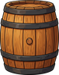

<!doctype html>
<html lang="de">
<head>
<meta charset="utf-8">
<meta name="viewport" content="width=device-width,initial-scale=1,viewport-fit=cover">
<meta name="theme-color" content="#7b1e3a">
<meta name="robots" content="noindex">
<meta name="mobile-web-app-capable" content="yes">
<meta name="apple-mobile-web-app-capable" content="yes">
<meta name="apple-mobile-web-app-title" content="150° Öchsle">
<link rel="manifest" href="manifest.webmanifest">
<link rel="icon" href="symbole/symbol-192.png">
<link rel="apple-touch-icon" href="symbole/symbol-180.png">
<title>150° Öchsle</title>
<style>
/* Schrift Alegreya (Google Fonts, freie Lizenz OFL), nur lateinische Zeichen. Alegreya ist variabel: eine Datei für normal bis fett. */
@font-face{font-family:"Alegreya";font-style:normal;font-weight:400 900;font-display:swap;src:url(schrift/alegreya.woff2) format("woff2");unicode-range:U+0000-00FF,U+0131,U+0152-0153,U+02BB-02BC,U+02C6,U+02DA,U+02DC,U+0304,U+0308,U+0329,U+2000-206F,U+20AC,U+2122,U+2191,U+2193,U+2212,U+2215,U+FEFF,U+FFFD}
@font-face{font-family:"Alegreya";font-style:italic;font-weight:400;font-display:swap;src:url(schrift/alegreya-kursiv.woff2) format("woff2");unicode-range:U+0000-00FF,U+0131,U+0152-0153,U+02BB-02BC,U+02C6,U+02DA,U+02DC,U+0304,U+0308,U+0329,U+2000-206F,U+20AC,U+2122,U+2191,U+2193,U+2212,U+2215,U+FEFF,U+FFFD}
@font-face{font-family:"Alegreya SC";font-style:normal;font-weight:400;font-display:swap;src:url(schrift/alegreya-sc.woff2) format("woff2");unicode-range:U+0000-00FF,U+0131,U+0152-0153,U+02BB-02BC,U+02C6,U+02DA,U+02DC,U+0304,U+0308,U+0329,U+2000-206F,U+20AC,U+2122,U+2191,U+2193,U+2212,U+2215,U+FEFF,U+FFFD}
/* Fraktur nur für den Zeitungskopf, die Datei enthält nur die Buchstaben von "Der Winzerbote". */
/* Version 7.3: volle Fraktur (UnifrakturMaguntia) für den Kopf des Winzerboten und die Urkunde, dazu Schreibschrift (Pinyon Script) für den Namen. Beide frei unter OFL, Lizenz in schrift/. */
@font-face{font-family:"Winzerbote Fraktur";font-style:normal;font-weight:400;font-display:swap;src:url(schrift/fraktur-voll.woff2) format("woff2")}
@font-face{font-family:"Urkunde Fraktur";font-style:normal;font-weight:400;font-display:swap;src:url(schrift/fraktur-voll.woff2) format("woff2")}
@font-face{font-family:"Urkunde Schreibschrift";font-style:normal;font-weight:400;font-display:swap;src:url(schrift/pinyon.woff2) format("woff2")}
@font-face{font-family:"Alegreya SC";font-style:normal;font-weight:700;font-display:swap;src:url(schrift/alegreya-sc-fett.woff2) format("woff2");unicode-range:U+0000-00FF,U+0131,U+0152-0153,U+02BB-02BC,U+02C6,U+02DA,U+02DC,U+0304,U+0308,U+0329,U+2000-206F,U+20AC,U+2122,U+2191,U+2193,U+2212,U+2215,U+FEFF,U+FFFD}
/* Farben passend zu den Bildern: Weinlaub-Grün fürs Weingut, Pflaster-Ton für die Stadt, dunkles Holz für die Kellerei. --kopf ist die Leiste oben. */
:root{--bg:#c3d99e;--card:#edf5dc;--ink:#232a1a;--mut:#53613d;--wein:#7b1e3a;--kopf:#7b1e3a;--gruen:#44692a;--blau:#4a4f8f;--line:#a4bf7e;--rot:#b3261e;--gold:#a87908;
--schrift:"Alegreya",Georgia,"Times New Roman",serif;--knopf:"Alegreya SC","Alegreya",Georgia,"Times New Roman",serif;
--schild:url(bilder/schild-haupt.webp);--kschrift:#f8e6bf;--kschatten:0 1px 2px #3a0a16}
html.ort-stadt{--bg:#f2e2d2;--card:#fdf4ea;--ink:#2d2116;--line:#e3c8ae;--mut:#7a6453;--gruen:#58793a}
html.ort-keller{--bg:#2b1c12;--card:#3b281a;--ink:#f4e7d2;--mut:#bfa888;--wein:#cc607b;--kopf:#4a1526;--gruen:#9cbf74;--blau:#9aa0e0;--line:#5a4029;--rot:#f0766a;--gold:#e4b54a}
@media (prefers-color-scheme:dark){
:root{--bg:#13210d;--card:#1f2d17;--ink:#ecf0e2;--mut:#9aa68a;--wein:#c2516f;--kopf:#5c1830;--gruen:#8fb56a;--blau:#8d93d6;--line:#374b29;--rot:#ef6a60;--gold:#e0b84a}
html.ort-stadt{--bg:#1f1814;--card:#2e2520;--ink:#f1e8dc;--line:#48392f;--mut:#a89a8c}
html.ort-keller{--bg:#1a110a;--card:#2a1b11;--ink:#f1e8dc;--mut:#a89a8c;--wein:#c2516f;--kopf:#4a1526;--gruen:#8fb56a;--blau:#8d93d6;--line:#4a3422;--rot:#ef6a60;--gold:#e0b84a}
}
*{box-sizing:border-box}
html,body{margin:0;background:var(--bg);transition:background-color .35s;color:var(--ink);font:16px/1.4 system-ui,-apple-system,"Segoe UI",Roboto,sans-serif;-webkit-tap-highlight-color:transparent}
#top{position:sticky;top:0;z-index:5;background-color:#5c3a21;background-image:repeating-linear-gradient(90deg,rgba(255,255,255,.035) 0 2px,transparent 2px 9px),repeating-linear-gradient(90deg,rgba(0,0,0,.09) 0 1px,transparent 1px 23px),linear-gradient(#6e4729,#4a2e18);border-bottom:2px solid #2b180c;box-shadow:0 3px 6px rgba(0,0,0,.3);color:#f5ebd6;padding:calc(6px + env(safe-area-inset-top)) 8px 6px;display:flex;justify-content:space-between;align-items:center;gap:8px}
#top b{font-size:17px}#top small{opacity:.85;display:block;font-size:12px}
#top>div{background:rgba(43,24,12,.55);border:1px solid rgba(229,169,60,.4);border-radius:10px;padding:4px 10px;box-shadow:inset 0 1px 2px rgba(0,0,0,.5)}
#top>div b{color:#f8e7bf;text-shadow:0 1px 1px #000}#top .geld b{color:#f3c766}#top .geld{cursor:pointer}#top .geld b::after,#top .wtr small::after{content:' ›';opacity:.6;font-weight:400}#top .wtr{cursor:pointer}
#top .geld{text-align:right;font-variant-numeric:tabular-nums}
main{padding:12px 16px calc(130px + env(safe-area-inset-bottom));max-width:560px;margin:0 auto}
h2{font:700 21px/1.2 var(--schrift);margin:6px 0 10px}h3{font:700 18px/1.25 var(--schrift);margin:0 0 6px}
.card{background:var(--card);border:1px solid var(--line);border-radius:14px;padding:12px 14px;margin:0 0 12px}
.mut{color:var(--mut);font-size:14px}.rot{color:var(--rot)}.gruen{color:var(--gruen)}.gold{color:var(--gold)}
.row{display:flex;justify-content:space-between;gap:10px;align-items:center}
.kv{display:flex;justify-content:space-between;gap:10px;padding:3px 0;font-size:15px}.kv span:last-child{font-weight:600;text-align:right;font-variant-numeric:tabular-nums}
/* Knöpfe als gemalte Holzschilder (seit 7.1): Bild als Rahmen, die Enden (40 Pixel im Bild, 12 am Schirm) behalten ihre Form, die Mitte wird in die Breite gezogen.
   --schild ist das Bild, --kschrift die Schriftfarbe: Hauptknopf weinrot gebeizt mit Messingrand, zweiter Knopf (.sec) helles Holz mit Weinrot, gewagte Knöpfe (.wag) dunkles Holz mit roter Linie. Überall gleich, auch im Keller. */
button{font:700 17px/1.15 var(--knopf);font-variant-caps:small-caps;letter-spacing:.04em;color:var(--kschrift);text-shadow:var(--kschatten);background:none;border:0 solid transparent;border-image:var(--schild) 50% 40 fill/50% 12px stretch;padding:12px 22px;min-height:46px;cursor:pointer;filter:drop-shadow(0 2px 1px rgba(0,0,0,.4));transition:transform .08s,filter .08s}
button:active{transform:translateY(2px);filter:drop-shadow(0 0 0 transparent) brightness(.92)}
button.sec{--schild:url(bilder/schild-zweit.webp);--kschrift:#4a1526;--kschatten:none;font-weight:700}
button.wag{--schild:url(bilder/schild-wag.webp);--kschrift:#f4e4d4;--kschatten:0 1px 2px #000}
button.klein{min-height:40px;padding:8px 16px;font-size:15px}
button:disabled{opacity:.45;filter:grayscale(.7)}
/* Alles, was kein Schild ist: Auswahlkarten, Aufgaben, Auswahl-Knöpfe, Reiter, Zettel, Zeilen im Kellerbuch. */
.wahl,.task,.chip,.zettel,.bzeile,#tabs button,#titel .weg{border-image:none;filter:none;font:500 16px/1.4 system-ui,-apple-system,"Segoe UI",Roboto,sans-serif;font-variant-caps:normal;letter-spacing:0;text-shadow:none;border-radius:12px;padding:12px 14px}
/* Version 4.0: Alle Karten sind Pergament, an jedem Ort gleich. Die Ortsfarbe bleibt nur im Hintergrund. */
.card,.task,.wahl,.bzeile{--ink:#2b2118;--mut:#6b5a45;--line:#d3bf93;--wein:#7b1e3a;--rot:#b3261e;--gruen:#4c7030;--blau:#4a4f8f;--gold:#946b06;--card:#f8f0dc;background:linear-gradient(#fbf5e6,#f3e7cc);color:var(--ink);border:1px solid #cdb68a;box-shadow:inset 0 1px 0 rgba(255,255,255,.6),0 2px 4px rgba(43,24,12,.2)}
.card h3{color:#4a1526}.card .card{box-shadow:none}
.task{border-left:5px solid #4c7030}.task.rot{border-left-color:#b3261e}.wahl.an{border-color:#7b1e3a;box-shadow:0 0 0 2px #7b1e3a inset}
main>h3{font-size:17px;margin:16px 0 8px;padding-left:10px;border-left:4px solid var(--wein)}
/* Version 4.1: Link ins Buch, Gebiets-Steckbrief, Fußnote im Büro */
.mib{display:block;width:max-content;margin:7px 0 0;font-size:13px;font-weight:700;color:#7b1e3a;cursor:pointer;text-decoration:underline dotted;text-underline-offset:3px}
.sb h3 small{display:block;font-weight:400;font-size:13px;color:var(--mut);margin-top:2px}
.sb .sbz{margin:6px 0;font-size:14px;line-height:1.5}
.sterne{color:#a87908;letter-spacing:1px;white-space:nowrap}.sterne i{font-style:normal;opacity:.28}
.rolle{display:inline-block;padding:0 7px;border-radius:9px;font-size:12px;font-weight:700;line-height:1.5;background:rgba(123,30,58,.09);color:#4a1526;white-space:nowrap}
.sb .schild{display:inline-block;margin:2px 0 4px;padding:3px 10px;border-radius:12px;font-size:13px;font-weight:700;background:rgba(123,30,58,.09);color:#4a1526}
.sb .schild.leicht{background:rgba(60,130,60,.14);color:#24521f}.sb .schild.riskant{background:rgba(170,40,30,.14);color:#6e1a12}
.sb .strat{margin:4px 0 0;padding-left:20px}.sb .strat li{margin:2px 0}
.sb .lohnt{margin-top:8px;padding:6px 10px;border-radius:8px;background:rgba(123,30,58,.09);font-weight:700;color:#4a1526;font-size:14px}
.gchips{display:flex;flex-wrap:wrap;gap:6px;margin:0 0 10px}.gchips .wahl{flex:1 1 30%;margin:0;padding:9px 4px;text-align:center;font-weight:600;font-size:14px}.gchips .gs{display:block;width:44px;height:44px;margin:0 auto 4px}
.fussnote{font-size:12px;color:var(--mut);margin:2px 4px 14px;text-align:center}
/* Version 11.2: vier Kacheln oben im Büro (Erfolge, Wissen, Familie, Einstellungen), die gewählte hat den weinroten Rand. */
.bkach{display:flex;gap:6px;margin:0 0 12px}.bkach .wahl{flex:1 1 0;min-width:0;min-height:58px;margin:0;padding:7px 0 6px;text-align:center;font-weight:600;font-size:11px;line-height:1.15;white-space:nowrap}
.bkach .wahl i{display:block;font-style:normal;font-size:20px;line-height:24px;margin-bottom:2px}.bkach .wahl.an{font-weight:700;color:#7b1e3a}
/* Seit der Optik 2.0 (10.5): schmaler Pergament-Rahmen wie beim aktiven Unterreiter, die gewählte Kachel hell mit weinroter Linie, die anderen etwas dunkler. */
.bkach .wahl{border-image:url(bilder/karte-neu.webp) 56 fill/9px stretch;filter:brightness(.86)}.bkach .wahl.an{filter:none;outline:2px solid #7b1e3a;outline-offset:-4px;border-radius:9px}
/* Das Buch: Vollbild im Papier-Stil wie der Winzerbote */
#buch{display:none;position:fixed;inset:0;z-index:40;flex-direction:column;background:#f3e7ca url(bilder/papier.jpg) center/cover;color:#2b2118;--ink:#2b2118;--mut:#6b5a45;--line:#d3bf93;--wein:#7b1e3a;--card:#fbf4e1}
#buch.an{display:flex}
#buch .bkopf,#buch .binnen,#buch .bfuss{width:100%;max-width:620px;margin:0 auto}
#buch .bkopf{display:flex;align-items:center;justify-content:space-between;gap:10px;padding:calc(10px + env(safe-area-inset-top)) 14px 8px;border-bottom:1px solid #b9995a}
#buch .bkopf b{font:26px/1.1 "Winzerbote Fraktur",Georgia,serif;color:#4a1526}
#buch .binnen{flex:1;overflow:auto;padding:14px 18px 22px;font-size:15px;line-height:1.5}
#buch .bfuss{display:flex;gap:8px;padding:8px 14px calc(10px + env(safe-area-inset-bottom));border-top:1px solid #b9995a}
#buch .bfuss button{flex:1}
#buch .bnr{font:700 13px "Alegreya SC",Georgia,serif;color:#7b1e3a;letter-spacing:.5px}
#buch h2{font:700 23px/1.2 Georgia,serif;color:#4a1526;margin:2px 0 10px}
#buch .kurz{background:rgba(255,255,255,.5);border-left:4px solid #7b1e3a;border-radius:8px;padding:8px 12px;margin:0 0 12px}
#buch ul,#buch ol{margin:0 0 12px;padding-left:20px}#buch li{margin:0 0 6px}#buch li ul,#buch li ol{margin:6px 0 0}
#buch details{border-top:1px solid #b9995a;padding-top:8px;margin-top:4px}
#buch summary{font:700 17px Georgia,serif;color:#4a1526;cursor:pointer;margin-bottom:8px}
#buch h4{font:700 16px Georgia,serif;color:#4a1526;margin:14px 0 6px}
#buch .bv{color:#7b1e3a;font-weight:700;text-decoration:underline;cursor:pointer}
#buch .binh h3{font:700 15px "Alegreya SC",Georgia,serif;color:#7b1e3a;margin:16px 0 2px;letter-spacing:.5px}
#buch .binh .bz{display:flex;gap:8px;padding:9px 2px;border-bottom:1px dotted #b9995a;font:16px Georgia,serif;cursor:pointer}
#buch .binh .bz span{color:#7b1e3a;min-width:24px;font-weight:700}
.chip{background:#f8f0dc;color:#2b2118;border:1px solid #b9995a;font-weight:600}.chip.an{background:#7b1e3a;color:#fff;border-color:#591015}
h4.gk{font:700 15px/1.2 var(--schrift);margin:12px 0 4px;color:#4a1526}
/* 8.0.1 Dein Stand: Abschnitte und Rangleiter */
h4.gs{font:700 17px/1.2 var(--schrift);margin:16px 0 6px;padding-top:10px;border-top:1px solid var(--line);color:#4a1526}h3+h4.gs{border:0;padding-top:0;margin-top:2px}
.rleiter{margin:2px 0 10px}.rgl{display:flex;align-items:baseline;gap:8px;font-size:14px;line-height:1.35;padding:3px 6px;margin:0 -6px;white-space:nowrap;border-radius:8px}.rgl b{flex:none;width:20px;text-align:center;font-size:13px}.rgl span{flex:none}.rgl small{margin-left:auto;min-width:0;overflow:hidden;text-overflow:ellipsis;font-size:13px}
.rgl.ok b{color:var(--gruen)}.rgl.jetzt{background:rgba(123,30,58,.12);font-weight:700;color:var(--wein)}.rgl.zu{color:var(--mut)}.rgl.zu b{opacity:.6;font-size:11px}
.pano,.mbild,.kbild{box-shadow:0 0 0 3px #5c3a21,0 0 0 4px #2b180c,0 4px 8px rgba(0,0,0,.35)}.pano,.mbild{margin-top:4px}
/* Okay als gezeichnetes Wachssiegel in Gold (Paket 7). */
.mitte{text-align:center;margin-top:10px}
button.siegel{width:84px;height:84px;min-height:0;padding:0;border-image:none;border-radius:50%;font-size:0;color:transparent;text-shadow:none;background:url(bilder/siegel.webp) center/contain no-repeat;filter:drop-shadow(0 3px 3px rgba(0,0,0,.45))}
button.siegel:active{transform:translateY(2px) scale(.96);filter:brightness(.92)}
.btns{display:flex;gap:8px;margin-top:10px;flex-wrap:wrap}.btns button{flex:1 1 auto}
/* Version 4.0: Kauf- und Verkaufsknöpfe mit dem Preis drauf, rechts in der Karte. Links steht eine kurze Erklärung.
   Fehlt das Geld, wird der Knopf grau (.arm), bleibt aber antippbar und sagt, was fehlt. */
.kz{display:flex;align-items:center;gap:10px;margin-top:10px}.kz>div:first-child{flex:1;min-width:0;font-size:14px;color:var(--mut)}
.kzk{display:flex;flex-direction:column;align-items:stretch;gap:7px;flex:none}.kz.reihe .kzk{flex-direction:row-reverse;flex-wrap:wrap;flex:0 1 auto;gap:8px}
button.pk{display:flex;flex-direction:column;align-items:center;justify-content:center;gap:0;min-width:122px;min-height:62px;padding:16px 23px 18px;border-image-width:50% 15px;font-size:15px}
button.pk>b{font:800 16px/1.05 var(--knopf);font-variant-caps:normal;font-variant-numeric:tabular-nums;letter-spacing:0;white-space:nowrap}
button.pk>small{font:600 10.5px/1.1 system-ui,-apple-system,"Segoe UI",Roboto,sans-serif;font-variant-caps:normal;letter-spacing:0;white-space:nowrap;opacity:.85}
button.pk.arm{filter:grayscale(1) opacity(.55)}
.bar{height:8px;background:var(--line);border-radius:6px;overflow:hidden;margin:4px 0 8px}.bar i{display:block;height:100%;background:var(--gruen)}
.bar.w i{background:var(--wein)}.bar.g i{background:var(--gold)}
.bar.stb{position:relative;overflow:visible;height:10px;margin:6px 0 10px}.bar.stb i{border-radius:6px}.bar.stb u{position:absolute;top:-4px;bottom:-4px;width:3px;margin-left:-1.5px;border-radius:2px;background:var(--wein)}
.bar.fl{position:relative}.bar.fl i{position:absolute;left:0;top:0}.bar.fl i.hell{opacity:.35}
.dot{display:inline-block;width:12px;height:12px;border-radius:50%;margin-right:6px;vertical-align:-1px}
.weiss{background:var(--gruen)}.rotw{background:var(--blau)}
.task{display:block;width:100%;text-align:left;background:var(--card);color:var(--ink);border:1px solid var(--line);border-left:5px solid var(--gruen);margin:0 0 8px;font-weight:500;min-height:0}
.task.rot{border-left-color:var(--rot);color:var(--ink)}.task.gelb{border-left-color:#e5a93c}.task.hin{border-left-color:#b9ad93}
details.stz{margin-top:8px}details.stz summary{cursor:pointer;font-weight:700;opacity:.8;padding:6px 0}
.hilfe{background:color-mix(in srgb,var(--gold) 14%,transparent);border-radius:10px;padding:8px 10px;font-size:14px;margin-top:8px}
/* Version 4.0: alle Bedienelemente unten in der Daumenzone. Oben die Unterreiter auf Pergament, darunter die Hauptleiste aus Holz. */
#dock{position:fixed;left:0;right:0;bottom:0;z-index:6;filter:drop-shadow(0 -3px 6px rgba(0,0,0,.3))}
#subs{display:flex;max-width:560px;margin:0 auto;padding:4px 6px 0;gap:3px;background:linear-gradient(#efe2c4,#e2d1b3);border-top:2px solid #5c3a21;border-radius:14px 14px 0 0}
#subs button{position:relative;flex:1;min-width:0;min-height:48px;padding:4px 1px 5px;border:0;border-image:none;border-radius:10px 10px 0 0;background:none;color:#6b5236;font:600 10.5px/1.1 system-ui,-apple-system,"Segoe UI",Roboto,sans-serif;font-variant-caps:normal;letter-spacing:0;text-shadow:none;display:flex;flex-direction:column;align-items:center;gap:2px;transition:background-color .2s,color .2s}
#subs button>i{font-style:normal;font-size:19px;line-height:22px;transition:transform .2s}#subs button>i img{height:20px;vertical-align:-3px}
#subs button>b{font-weight:600;white-space:nowrap;overflow:hidden;text-overflow:ellipsis;max-width:100%}
#subs button.an{background:#f8f0dc;color:#7b1e3a;box-shadow:inset 0 -3px 0 #8b1e24}#subs button.an>i{transform:scale(1.18) translateY(-1px)}#subs button.an>b{font-weight:800}
#tabs{display:flex;align-items:stretch;padding:4px 4px env(safe-area-inset-bottom);background-color:#5c3a21;background-image:repeating-linear-gradient(90deg,rgba(255,255,255,.035) 0 2px,transparent 2px 9px),repeating-linear-gradient(90deg,rgba(0,0,0,.09) 0 1px,transparent 1px 23px),linear-gradient(#6e4729,#4a2e18);border-top:2px solid #2b180c}
#tabs button{position:relative;flex:1;background:none;color:#ead6ae;border-radius:10px;padding:6px 2px;margin:2px 2px 4px;font-size:11.5px;font-weight:600;min-height:56px;display:flex;flex-direction:column;align-items:center;gap:2px;text-shadow:0 1px 1px #000;transition:background-color .2s,transform .2s}
#tabs button span{font-size:21px}#tabs button img{height:25px;display:block;margin:3px 0 1px}#tabs button.an{background:#f5ebd6;color:#7b1e3a;text-shadow:none;font-weight:800;box-shadow:inset 0 0 0 2px #8b1e24,inset 0 0 0 4px #f5ebd6,inset 0 0 0 5px rgba(139,30,36,.45),0 2px 4px rgba(0,0,0,.45);transform:translateY(-3px)}
#tabs #weiter{flex:1.3;margin:6px 8px 6px 2px;border-radius:0;border-image:var(--schild) 50% 40 fill/50% 12px stretch;color:var(--kschrift);text-shadow:var(--kschatten);font:700 13px/1.1 var(--knopf);font-variant-caps:small-caps;letter-spacing:.03em;min-height:46px;justify-content:center;padding:5px 18px;filter:drop-shadow(0 2px 1px rgba(0,0,0,.4))}
#tabs #weiter{flex-direction:row;gap:6px;--schild:url(bilder/schild-haupt.webp);--kschrift:#f8e6bf;--kschatten:0 1px 2px #3a0a16;margin:5px 4px 7px 4px}#tabs #weiter span{font-size:14px}
#tabs #weiter.zu{filter:grayscale(1) brightness(.9)}
.badge{position:absolute;top:5px;right:calc(50% - 21px);width:10px;height:10px;border-radius:50%;background:#e5a93c;box-shadow:0 0 0 2px #f5ebd6}.badge.rot{background:#c62828}#tabs .badge{top:4px;right:calc(50% - 22px);box-shadow:0 0 0 2px #4a2e18}#tabs button.an .badge{box-shadow:0 0 0 2px #f5ebd6}
/* Steht nichts mehr an, pulsiert der Knopf sanft. */
#tabs #weiter.frei{animation:wpuls 2.6s ease-in-out infinite}
@keyframes wpuls{50%{filter:drop-shadow(0 0 7px rgba(255,214,120,.95)) brightness(1.07)}}
/* Fenster: Papier vom Zeitungsblatt mit Zierlinie oben, gleitet weich von unten hoch. Die Farben gelten an jedem Ort gleich. */
#sheet{display:none;position:fixed;inset:0;z-index:20;background:rgba(0,0,0,.55);align-items:flex-end;justify-content:center}
#sheet.an{display:flex}
#sheet>div{position:relative;background:#f3e7ca url(bilder/papier.jpg) center/cover;color:#2b2118;--card:#fbf4e1;--bg:#fffaf0;--ink:#2b2118;--mut:#6b5a45;--line:#d3bf93;--wein:#7b1e3a;--rot:#b3261e;--gruen:#4c7030;--blau:#4a4f8f;--gold:#946b06;width:100%;max-width:560px;max-height:88vh;overflow:auto;border-radius:18px 18px 0 0;border-top:1px solid #b9995a;box-shadow:0 -6px 26px rgba(0,0,0,.5);padding:24px 16px calc(18px + env(safe-area-inset-bottom));animation:hoch .32s cubic-bezier(.2,.8,.3,1)}
#sheet>div::before{content:'❦';position:absolute;top:4px;left:18px;right:18px;text-align:center;font:14px/16px Georgia,serif;color:#a8843a;background:linear-gradient(#b9995a,#b9995a) left 50%/calc(50% - 16px) 1px no-repeat,linear-gradient(#b9995a,#b9995a) right 50%/calc(50% - 16px) 1px no-repeat}
#sheet h3{font-size:21px;margin-bottom:8px}
/* 7.6: Winzerbote und Weiter in einer Reihe, gleich hoch. */
.zweikn{display:flex;gap:8px;width:100%}.zweikn button{margin:0;flex:1 1 0;min-height:52px}.zweikn button.sec{flex:0 0 38%}.kz.reihe .kzk:has(.zweikn){flex:1 1 auto}
@keyframes hoch{from{transform:translateY(56px);opacity:0}to{transform:none;opacity:1}}
input[type=range]{width:100%;height:40px;accent-color:var(--wein)}
input[type=text]{width:100%;font:inherit;padding:12px;border-radius:12px;border:1.5px solid var(--line);background:var(--bg);color:var(--ink)}
textarea{display:block;width:100%;min-height:150px;resize:none;font:inherit;line-height:1.4;padding:12px;border-radius:12px;border:1.5px solid var(--line);background:#fffaf0;color:var(--ink)}
.ausbl{margin:4px 0 6px}.ausbl div{padding:7px 0;border-bottom:1px solid rgba(110,75,40,.25);font-size:14px;line-height:1.35}.ausbl b{display:block;color:#7b1e3a}
#titel .tchl h3{margin:12px 0 2px}#titel .tchl h3:first-child{margin-top:0}
.slval{text-align:center;font-size:15px;margin:8px 0}.slval b{font-size:24px;display:block}
.wahl{display:block;width:100%;text-align:left;background:var(--card);color:var(--ink);border:1.5px solid var(--line);margin:0 0 8px;font-weight:500}
.wahl.an{border-color:var(--wein);box-shadow:0 0 0 2px var(--wein) inset}
/* Seit 11.4.1 (Maik 20.11.2026): Anrede, Schwierigkeit und Spielführer beim neuen Spiel zeigen die Wahl als rotes Schild mit heller Schrift.
   Seit 11.6 (Maik 20.11.2026): Das Schild ist die gemalte Vorlage knopf-rot.webp, nicht mehr die selbst gebaute rote Fläche. */
button.wahl.neuwahl.an{background:none;color:#f8e6bf;text-shadow:0 1px 2px #3a0a16;border:0 solid transparent;border-image:url(bilder/knopf-rot.webp) 50% 42 fill/50% 18px stretch;border-radius:0;box-shadow:none;filter:drop-shadow(0 2px 1px rgba(0,0,0,.4))}
/* Seit 11.6 (Idee Maik 20.11.2026): Stufen-Knopf beim neuen Spiel, drei breite Knöpfe untereinander (Maik wählte am Bild Variante 2).
   Oben das alte Wort etwas größer in Grau, darunter der neue Name etwas kleiner in Dunkel. Auf dem roten Schild werden beide Zeilen hell. */
.stufk small{display:block;font-size:17px;line-height:1.2;font-weight:600;color:#7a6453}.stufk b{display:block;font-size:15px;line-height:1.3;color:var(--ink);white-space:nowrap}
.stufk.an small{color:#ecc9a4}.stufk.an b{color:#f8e6bf}
.fin .zwei.stufu{flex-direction:column;gap:6px}.fin .zwei.stufu .wahl{padding:8px 6px}
.mgrportraet{width:96px;height:96px;margin:0 auto 10px;border-radius:50%;background:#f8f0dc center/cover no-repeat;border:3px solid var(--wein);box-shadow:0 3px 8px rgba(0,0,0,.3)}
.fen .wahl.schalter{padding:8px 11px;font-size:15px;margin:0 0 6px}.fen .wahl.an{box-shadow:0 0 0 1px #7b1e3a inset}
.pkopf{display:flex;gap:12px;align-items:center;margin:0 0 10px}.pkopf>div:last-child{flex:1}.mgrbild{width:52px;height:52px;flex:none;border-radius:50%;background:#f8f0dc center/cover no-repeat;border:2px solid var(--wein);box-shadow:0 2px 5px rgba(0,0,0,.25)}
.chips{display:flex;gap:6px;overflow-x:auto;margin:0 -16px 12px;padding:0 16px 4px}
.chip{flex:none;min-height:40px;padding:6px 12px;font-size:14px;background:var(--card);color:var(--ink);border:1px solid var(--line)}
.wq{padding:7px 0;border-bottom:1px solid var(--line)}.wq b{display:block}.wq span{font-size:14px}
.chip.an{background:var(--wein);color:#fff;border-color:var(--wein)}
ul.kl{margin:4px 0 0;padding-left:18px;font-size:14px}
.stufe{padding:8px 0;border-top:1px solid var(--line)}.stufe:first-of-type{border-top:0}
.rl{display:flex;gap:10px;padding:7px 0;border-top:1px solid var(--line)}.rl .rz{margin-left:auto;white-space:nowrap;font-variant-numeric:tabular-nums}.rl:first-of-type{border-top:0}
.rl b{display:block;font-size:15px}.rl.du b{color:var(--wein)}.rl>span{font-weight:700;min-width:20px}
.gebot{text-align:center;margin:12px 0}.gebot b{font-size:28px;display:block;font-variant-numeric:tabular-nums}
.zwei{display:flex;gap:8px}.zwei .wahl{flex:1;text-align:center}
/* 7.9: Startbildschirm im Fenster-Format, Namen-Felder, Gebietszeichen */
.feld{display:block;font-weight:600;margin:0 0 8px}.feld input{margin-top:4px;font-weight:400}.fin .zwei .wahl{margin:0;padding:10px 6px}
.fin .wahl.gwahl{display:flex;align-items:center;gap:12px;margin:0;padding:0;background:none;border:0;box-shadow:none;border-radius:0}.gwahl .gs{width:56px;height:56px;flex:none}.gwahl span{flex:1}.gwahl small{display:block;color:var(--mut);font-weight:400}
.fen.gan{border-color:#7b1e3a;box-shadow:0 0 0 2px #7b1e3a inset,0 3px 8px rgba(20,10,4,.45)}.fen.gan .gwahl small{color:#7b1e3a;font-weight:700}
.fen input[type=text]{background:#fffaf0}.gkopf{display:flex;align-items:center;gap:10px}.gkopf .gs{width:44px;height:44px;flex:none}.gkopf .kv{flex:1}
.ehrung{background:color-mix(in srgb,var(--gold) 16%,var(--card));border:2px solid var(--gold);border-radius:14px;padding:14px;margin:0 0 12px;text-align:center;animation:ehr .6s ease-out}
.ehrung span{font-size:40px;display:block}.ehrung b{font-size:17px;display:block}
@keyframes ehr{from{transform:scale(.85);opacity:0}to{transform:none;opacity:1}}
.pano{position:relative;cursor:pointer;height:min(280px,40vh);border-radius:14px;overflow:hidden;margin:0 0 12px;background:var(--line);touch-action:pan-y;user-select:none;-webkit-user-select:none}
.pano>i{position:absolute;inset:0;background-repeat:no-repeat;background-size:auto 100%;background-position:0 50%}
/* Stationen statt Streifen (Weingut, 18.11.2026): je Unterreiter ein eigenes Bild als Ebene. Die Ebene steht links und rechts 14 % über, damit beim Gleiten kein Rand zu sehen ist.
   --pk ist die weiche Kante, die beim Wechsel übers neue Bild wandert. .tafel ist der Schild-Text auf der Anschlagtafel, 1em ist ein Hundertstel der Tafelbreite. */
@property --pk{syntax:'<percentage>';inherits:false;initial-value:130%}
.pano.teile>i{left:-14%;right:-14%;background-size:cover;background-position:center;will-change:transform}
.pano .tafel{position:absolute;display:flex;flex-direction:column;align-items:center;justify-content:center;text-align:center;line-height:1.08;color:#2a1608;pointer-events:none}
.pano .tafel>*{display:block;white-space:nowrap;font-weight:400;font-style:normal;text-decoration:none;margin:0}
.pano .tafel i{font-family:Alegreya,serif;font-style:italic;font-size:6.2em;margin-bottom:.2em;color:#4a2a12}
.pano .tafel b{font-family:"Alegreya SC",Alegreya,serif;font-weight:700;font-size:13.5em;letter-spacing:.04em;color:#2a1206;text-shadow:0 .04em 0 rgba(255,240,200,.55),0 0 .06em rgba(60,20,0,.35)}
.pano .tafel em{font-family:Alegreya,serif;font-style:italic;font-size:9.5em;margin-top:.1em;color:#6b1a2e}
.pano .tafel .orn{font-size:7em;line-height:1;margin:.25em 0 .2em;color:#6b1a2e;letter-spacing:.2em}
.pano .tafel s{font-family:Alegreya,serif;font-style:italic;font-size:6.4em}
.pano .tafel u{font-family:"Alegreya SC",Alegreya,serif;letter-spacing:.05em;font-size:6em;margin-top:.35em}
.ptitel{position:absolute;left:0;right:0;bottom:0;padding:28px 12px 8px;background:linear-gradient(transparent,rgba(0,0,0,.66));color:#fff;text-align:center;pointer-events:none}
.ptitel b{display:block;font-size:18px;text-shadow:0 1px 3px rgba(0,0,0,.8)}
.punkte{display:flex;gap:6px;justify-content:center;margin-top:5px;pointer-events:auto}
.punkte span{width:40px;height:30px;line-height:30px;font-size:17px;border-radius:10px;opacity:.8;transition:opacity .2s,transform .2s}.punkte span.an{opacity:1;background:rgba(255,255,255,.3);transform:scale(1.12)}
img.fass{height:1.1em;vertical-align:-.18em}
.mbild{position:relative;height:min(200px,30vh);border-radius:14px;overflow:hidden;margin:0 0 12px;background:var(--line) center/cover no-repeat}
.mbild.winter,.mbild.fruehling,.mbild.sommer,.mbild.herbst{background-position:center 38%}
.sbild{position:relative;z-index:1;height:150px;margin:-24px -16px 14px;border-radius:18px 18px 0 0;background:var(--line) center/cover no-repeat}
#titel{position:fixed;inset:0;z-index:30;display:none;flex-direction:column;color:#fff;text-align:center;cursor:pointer;background:#1c120b url(bilder/panorama-weingut-sommer-teil-2.jpg) center/cover no-repeat;padding:calc(20px + env(safe-area-inset-top)) 22px calc(28px + env(safe-area-inset-bottom))}
#titel.an{display:flex}
#titel::before{content:'';position:absolute;inset:0;background:linear-gradient(rgba(20,10,5,.6),rgba(20,10,5,.05) 34%,rgba(20,10,5,.08) 62%,rgba(20,10,5,.82))}
#titel>*{position:relative}
#titel .fuss{margin-top:auto}
/* Hochkant (Handy, Tablet): Seit 10.4 (Maik 19.11.2026) füllt Timos Titelbild im Hochformat (titel-hochkant, Himmel in Bordeaux wie der Knopf "Nächster Monat")
   den ganzen Schirm, der gerahmte Torbogen auf der Holzwand (9.1) ist raus. Titel oben im Himmel, Knöpfe und Namen unten auf dem Pflaster, beides leicht abgedunkelt.
   --ty schiebt das Bild hoch (Maik 19.11.2026, eingepasst mit _titel_einpassen.html), damit der Knopf das Tor nicht verdeckt. Unten läuft das Pflaster in dunkles Braun aus. */
@media (max-aspect-ratio:5/4){
#titel{--ty:-6vh;background:linear-gradient(rgba(38,24,14,0) calc(84% + var(--ty)),#26180e calc(100% + var(--ty))),url(bilder/titel-hochkant.jpg) center var(--ty)/auto max(100vh,177.7vw) no-repeat,#26180e}
#titel::before{background:linear-gradient(rgba(20,6,10,.5),rgba(20,6,10,0) 24%,rgba(20,6,10,0) 52%,rgba(20,10,5,.55) 72%,rgba(20,10,5,.85))}
}
#titel h1{font:700 44px/1.05 Georgia,"Times New Roman",serif;margin:1vh 0 6px;white-space:nowrap;text-shadow:0 2px 10px rgba(0,0,0,.85)}
#titel .unter{font-size:15px;text-shadow:0 1px 4px #000}
/* Seit 8.5.1: Nennungen in zwei Blöcken, Rollen in kleinen Großbuchstaben, jede Zeile so breit wie der Name darunter (titelBuendig). */
#titel .nenn{display:flex;justify-content:center;gap:22px;margin-top:14px;text-shadow:0 1px 4px #000}
#titel .nenn .blk{display:flex;flex-direction:column;align-items:flex-start}
#titel .nenn .rz{display:inline-block;white-space:nowrap;font-size:10.5px;text-transform:uppercase;opacity:.75;line-height:1.35}
#titel .nenn .nz{display:inline-block;white-space:nowrap;font-size:15px;font-weight:700;margin-top:1px}
#titel .tech{font-size:11px;line-height:1.45;opacity:.7;margin-top:8px;text-shadow:0 1px 3px #000}
#titel .tech span{white-space:nowrap}
/* Seit 10.2.1: Versionsnummer zum Antippen, bei neuer Version kurz leuchtend mit "Neu", danach bleibt nur die Nummer. Darüber das Fenster "Was ist neu". */
#titel .tver{all:unset;cursor:pointer;white-space:nowrap;text-decoration:underline dotted;text-underline-offset:2px;position:relative}
#titel .tver i{display:none;font-style:normal;font-weight:700;color:#ffd978;margin-left:5px}
#titel .tver.neu{animation:tverl 1.4s ease-in-out 3}
#titel .tver.neu i{display:inline-block;animation:tvneu 7s forwards}
@keyframes tverl{50%{color:#ffd978;text-shadow:0 0 8px rgba(255,214,120,.95),0 1px 3px #000}}
@keyframes tvneu{0%,75%{opacity:1}100%{opacity:0;width:0;margin-left:0}}
#titel .tchron{position:fixed;inset:0;z-index:5;display:flex;align-items:center;justify-content:center;padding:calc(16px + env(safe-area-inset-top)) 16px calc(16px + env(safe-area-inset-bottom));cursor:default}
#titel .tchz{position:absolute;inset:0;background:rgba(0,0,0,.6)}
#titel .tchk{position:relative;width:100%;max-width:440px;max-height:100%;display:flex;flex-direction:column;margin:0;color:#2e2015;text-shadow:none;text-align:left;animation:ehr .25s}
#titel .tchl{overflow:auto;margin:4px 0 10px;-webkit-overflow-scrolling:touch}
#titel .tchz1{display:grid;grid-template-columns:auto 1fr auto;gap:0 8px;padding:7px 0;border-bottom:1px solid rgba(110,75,40,.25);font-size:14px;line-height:1.35}
#titel .tchz1 b{color:#7b1e3a}#titel .tchz1 strong{font-weight:700}#titel .tchz1 small{color:var(--mut);align-self:center;justify-self:end;white-space:nowrap}#titel .tchz1 span{grid-column:1/-1}
#titel .tchz1 ul,#titel .wnb>ul{grid-column:1/-1;margin:3px 0 0;padding-left:18px}#titel .tchz1 li,#titel .wnb>ul li{margin:1px 0}#titel .tchz1.kurz{padding:4px 0}
#titel .wnk{display:flex;justify-content:space-between;align-items:baseline;gap:8px;margin:14px 0 2px;padding-bottom:3px;border-bottom:2px solid rgba(123,30,58,.45);font-size:15px}#titel .wnk b{color:#7b1e3a}#titel .wnk small{color:var(--mut);white-space:nowrap}#titel .wnb>ul{font-size:14px;line-height:1.35;padding-bottom:4px}
#titel .tkn .tdatei{width:auto;align-self:center;background:none;border:0;border-image:none;box-shadow:none;color:#fff;font:400 13px/1.3 system-ui,sans-serif;text-decoration:underline;opacity:.85;padding:2px 0;text-shadow:0 1px 4px #000;cursor:pointer}
#titel .version span{white-space:nowrap}
#titel .version.alt{font-size:14px;margin:0 0 10px;opacity:.9}
#titel .tipp{font-size:17px;font-weight:600;text-shadow:0 1px 4px #000;animation:puls 2.2s ease-in-out infinite}
/* Startseite: drei Knöpfe über dem Bild, darunter klein die Version. */
#titel .tkn{display:flex;flex-direction:column;gap:10px;width:100%;max-width:300px;margin:0 auto}
#titel .tkn button{width:100%}
#titel .version{font-size:11px;line-height:1.35;opacity:.7;margin-top:4px;text-shadow:0 1px 3px #000}
/* Schmales Bild im Fenster (Hoffest, Weinbotschafter), darunter die Zeile je Wein zum Antippen (Kellerbuch, Großhandel, Regal). */
.kbild{height:96px;border-radius:14px;overflow:hidden;margin:0 0 12px;background:var(--line) center 45%/cover no-repeat;color:#fff;display:flex;flex-direction:column;justify-content:flex-end;padding:10px 14px;text-shadow:0 1px 3px rgba(0,0,0,.9)}
.kbild b{font:700 19px/1.2 var(--schrift)}.kbild span{font-size:14px}
.bzeile{display:block;width:100%;text-align:left;background:var(--card);color:var(--ink);border:1px solid var(--line);margin:0 0 6px;min-height:0;padding:9px 12px}
.bzeile .bz1{display:flex;justify-content:space-between;gap:8px;align-items:baseline}.bzeile .bz1 b{font-weight:600}.bzeile .bz1 span{font-weight:700;white-space:nowrap;font-variant-numeric:tabular-nums}
.bzeile .bz2{font-size:14px;color:var(--mut)}.bzeile .bz3{font-size:11px;color:var(--mut);margin-top:1px}.bzeile .bz3.rot{color:var(--rot)}
/* Infoseite als Vollbild: Monatsbild als Hintergrund, dunkler Verlauf, helle Schrift. Blendet aus Schwarz ein und nach "Weiter" wieder aus. */
#info{position:fixed;inset:0;z-index:8;overflow-y:auto;background:#000;color:#f3efe6;--card:rgba(16,12,8,.58);--ink:#f3efe6;--mut:#d3cab8;--line:rgba(255,255,255,.18);--rot:#ff8f84;--gruen:#acd682;--gold:#f0c75a;--wein:#9b2a4a}
#info .ibild{position:fixed;inset:0;background:#000 center/cover no-repeat;animation:izoom 24s ease-out forwards}
#info.winter .ibild,#info.fruehling .ibild,#info.sommer .ibild,#info.herbst .ibild{background-position:center 38%}
/* Version 9.0: Das eigene Weingut hinter dem Winzerboten, mit dem Schwenk aus _schwenk.html (Torblick 40 s zwischen 32 und 68 %, Schrägblick 70 s über die ganze Breite).
   Neue Jahreszeit: Die neue (.ineu) wischt mit weicher Kante von unten über die alte (Maik 18.11.2026, die Zeitung rollt weiter von oben), dazu fallen Teilchen. */
#info.wg .ibild{background-size:cover;animation:sw-ein 1.2s ease-out both,sw-tor 40s ease-in-out 1.2s infinite both}
/* Seit 10.2.1: Im Torblick (Stufe 1 bis 4) rund 18 % weniger Zoom, das Bild sitzt oben, darunter läuft es verschwommen aus (Maik 19.11.2026). */
#info.wg:not(.gross) .ibild{background-size:auto 82%;background-color:transparent}
#info .iblur{position:fixed;inset:-30px;background:center bottom/cover no-repeat;filter:blur(16px) brightness(.75)}
#info.wg.gross .ibild{animation:sw-ein 1.2s ease-out both,sw-wander 70s ease-in-out 1.2s infinite both}
#info.wg .ineu{-webkit-mask:linear-gradient(transparent 44%,#000 56%) 0 0/100% 250% no-repeat;mask:linear-gradient(transparent 44%,#000 56%) 0 0/100% 250% no-repeat;
  animation:sw-ein 1.2s ease-out both,sw-rlt1 12s ease-in-out both,sw-hint 28s ease-in-out 12s infinite,jzwisch var(--jzd,2.5s) ease-in-out .6s both}
#info.wg.gross .ineu{animation:sw-ein 1.2s ease-out both,sw-rl1 20s ease-in-out both,sw-hin 45s ease-in-out 20s infinite,jzwisch var(--jzd,2.5s) ease-in-out .6s both}
#info.wg.jzw .ibild:not(.ineu){animation:sw-ein 1.2s ease-out both,sw-rlt1 12s ease-in-out both,sw-hint 28s ease-in-out 12s infinite}
#info.wg.gross.jzw .ibild:not(.ineu){animation:sw-ein 1.2s ease-out both,sw-rl1 20s ease-in-out both,sw-hin 45s ease-in-out 20s infinite}
@keyframes sw-rlt1{0%{background-position:68% 12%}67%{background-position:32% 12%}100%{background-position:50% 12%}}
@keyframes sw-hint{0%{background-position:50% 12%}25%{background-position:68% 12%}75%{background-position:32% 12%}100%{background-position:50% 12%}}
@keyframes sw-rl1{0%{background-position:100% 50%}67%{background-position:0% 50%}100%{background-position:50% 50%}}
@keyframes sw-hin{0%{background-position:50% 50%}25%{background-position:100% 50%}75%{background-position:0% 50%}100%{background-position:50% 50%}}
#info.wg .ineu,#info.wg.gross .ineu{animation-play-state:running,running,running,paused}#info.wg.los .ineu,#info.wg.gross.los .ineu{animation-play-state:running}
@keyframes sw-ein{from{opacity:0;transform:scale(1.04)}to{opacity:1;transform:none}}
@keyframes sw-tor{0%{background-position:50% 12%}25%{background-position:68% 12%}75%{background-position:32% 12%}100%{background-position:50% 12%}}
@keyframes sw-wander{0%{background-position:55% 50%}28%{background-position:100% 50%}72%{background-position:0% 50%}100%{background-position:55% 50%}}
@keyframes jzwisch{from{-webkit-mask-position:0 0;mask-position:0 0}to{-webkit-mask-position:0 100%;mask-position:0 100%}}
#info .iteile{position:fixed;inset:0;pointer-events:none;overflow:hidden}
#info .iteile i{position:absolute;top:-4%;width:9px;height:9px;opacity:0;animation:tfall 3.6s ease-in both}
#info .iteile i{animation-play-state:paused}#info.los .iteile i{animation-play-state:running}
#info .iteile.fruehling i{background:#fde7ee;border-radius:80% 0 80% 0;box-shadow:inset -2px -2px 0 #f0b2c4}
#info .iteile.herbst i{width:12px;height:8px;background:#c8641e;border-radius:0 80% 0 80%}
#info .iteile.herbst i:nth-child(3n){background:#e0a232}#info .iteile.herbst i:nth-child(3n+1){background:#9a3a16}
#info .iteile.winter i{width:6px;height:6px;border-radius:50%;background:#fff;box-shadow:0 0 4px rgba(255,255,255,.8)}
#info .iteile.sommer i{top:auto;bottom:12%;width:5px;height:5px;border-radius:50%;background:#ffe9a0;box-shadow:0 0 8px 3px rgba(255,220,120,.55);animation-name:tglimm}
@keyframes tfall{0%{opacity:0;transform:translate(0,0) rotate(0)}12%{opacity:.95}85%{opacity:.9}100%{opacity:0;transform:translate(var(--d),104vh) rotate(320deg)}}
@keyframes tglimm{0%{opacity:0;transform:none}35%{opacity:.9}100%{opacity:0;transform:translate(var(--d),-38vh)}}
/* Luftbild in der Zeitung: dasselbe Bild klein und ganz, wie ein altes Foto aus dem Archiv. */
#info .zluft{aspect-ratio:3/2;background:#8a7356 center/cover no-repeat;margin:3px 0 6px;border-radius:3px;filter:sepia(.55) saturate(.85) contrast(1.05);box-shadow:0 0 0 1px rgba(90,60,30,.55),0 1px 3px rgba(60,40,20,.35)}
#info .zluft.gross{aspect-ratio:16/9}
#info .znah{margin:-3px 0 6px;font-size:.72em;font-style:italic;text-align:center;opacity:.75}
#info .zvier{display:grid;grid-template-columns:1fr 1fr;column-gap:8px}
@media (prefers-reduced-motion:reduce){#info.wg .ibild,#info.wg.gross .ibild{animation:none}#info.wg .ineu{-webkit-mask:none;mask:none}#info .iteile{display:none}}
#info .iverl{position:fixed;inset:0;background:linear-gradient(transparent 55%,rgba(0,0,0,.55))}
#info .zt{position:relative;max-width:560px;margin:14px auto 0;padding:0 0 calc(100vh - 14px);transform-origin:50% 0;color:#3a2a1a;font-family:var(--schrift);--ink:#3a2a1a;--mut:#6e5638;--rot:#a3271d;--gruen:#4c6b2c;--gold:#8a6206;--line:rgba(90,60,30,.3);filter:drop-shadow(0 -4px 18px rgba(0,0,0,.55))}
#info .zkopf{aspect-ratio:1200/713;background:url(bilder/zeitung-kopf.webp) center/100% 100% no-repeat}
#info .zmitte{background:url(bilder/zeitung-mitte.webp) 0 0/100% 100% no-repeat;padding:0 9% 4px;margin-top:-1px;overflow:hidden}
#info .zende{aspect-ratio:1200/141;background:url(bilder/zeitung-fuss.webp) center/100% 100% no-repeat;margin-top:-1px}
#info .ztitel{text-align:center;white-space:nowrap;font:400 clamp(32px,9.4vw,50px)/1.05 "Winzerbote Fraktur",var(--knopf);letter-spacing:.5px;color:#3a1a0e}
#info .zleiste{display:flex;justify-content:space-between;gap:6px;border-top:2px solid #5a3d22;border-bottom:1px solid #5a3d22;margin:8px 0 12px;padding:3px 0;font-size:12.5px;font-variant-caps:small-caps;letter-spacing:.4px}
#info .zsonder{text-align:center;background:#7b1e3a;color:#fbeede;font:700 14px/1.6 var(--knopf);letter-spacing:2px;text-transform:uppercase;margin:-4px 0 10px}
#info .zschlag{font:800 clamp(24px,7vw,32px)/1.12 var(--schrift);margin:0 0 10px;text-align:center;color:#2a1c10;text-shadow:none}
#info .zfoto{position:relative;aspect-ratio:3/2;background:#8a7356 center/cover;margin:0 0 10px;border-radius:9px 14px 8px 12px/12px 8px 14px 9px;overflow:hidden;filter:sepia(.3) saturate(1.05) contrast(1.04);-webkit-mask:url("data:image/svg+xml,%3Csvg xmlns='http://www.w3.org/2000/svg' viewBox='0 0 100 100' preserveAspectRatio='none'%3E%3Cpath d='M0 .4L7.1 .2L14.3 .7L21.4 .1L28.6 .6L35.7 .4L42.9 .1L50 .6L57.1 0L64.3 .5L71.4 .1L78.6 .1L85.7 .5L92.9 .9L99.9 0L99.8 10L99.3 20L99 30L99.4 40L99.6 50L98.9 60L99.9 70L99.1 80L99.7 90L100 99.8L92.9 99.9L85.7 99.7L78.6 99.1L71.4 99.8L64.3 99.4L57.1 99.3L50 99.6L42.9 99.4L35.7 99.9L28.6 99.9L21.4 99.8L14.3 99.3L7.1 99.5L.3 100L.6 90L.5 80L.3 70L.9 60L.8 50L.3 40L.6 30L.6 20L1 10Z'/%3E%3C/svg%3E") 0 0/100% 100% no-repeat;mask:url("data:image/svg+xml,%3Csvg xmlns='http://www.w3.org/2000/svg' viewBox='0 0 100 100' preserveAspectRatio='none'%3E%3Cpath d='M0 .4L7.1 .2L14.3 .7L21.4 .1L28.6 .6L35.7 .4L42.9 .1L50 .6L57.1 0L64.3 .5L71.4 .1L78.6 .1L85.7 .5L92.9 .9L99.9 0L99.8 10L99.3 20L99 30L99.4 40L99.6 50L98.9 60L99.9 70L99.1 80L99.7 90L100 99.8L92.9 99.9L85.7 99.7L78.6 99.1L71.4 99.8L64.3 99.4L57.1 99.3L50 99.6L42.9 99.4L35.7 99.9L28.6 99.9L21.4 99.8L14.3 99.3L7.1 99.5L.3 100L.6 90L.5 80L.3 70L.9 60L.8 50L.3 40L.6 30L.6 20L1 10Z'/%3E%3C/svg%3E") 0 0/100% 100% no-repeat}
#info .zfoto::after{content:"";position:absolute;inset:0;border-radius:inherit;background:url(bilder/knitter.webp) center/cover;mix-blend-mode:soft-light;opacity:.95;box-shadow:inset 0 0 14px 2px rgba(70,42,14,.55);pointer-events:none}

#info .zfoto.gold::before{content:"";position:absolute;inset:3px;z-index:1;border:4px double #a87908;border-radius:inherit;pointer-events:none}
#info .zfoto.klein{float:right;width:40%;aspect-ratio:4/3;margin:3px 0 6px 10px}
#info .zlead{font-size:17px;line-height:1.4;margin:0 0 12px}
#info .zlead.init::first-letter{float:left;font:700 46px/.85 var(--knopf);margin:4px 6px 0 0;color:#5a1426}
#info .zehr{display:flex;gap:8px;align-items:center;background:rgba(255,226,140,.3);border-radius:12px 7px 14px 8px/8px 13px 7px 14px;box-shadow:inset 0 0 10px 1px rgba(150,105,10,.45);padding:4px 10px;margin:0 0 10px;font-size:14.5px;animation:ehr .6s ease-out}
#info .zehr>span{font-size:24px}
#info .zliste{margin:0 0 12px;font-size:15px}
#info .zliste>div{display:grid;grid-template-columns:24px 1fr auto;gap:6px;padding:3px 0;border-bottom:1px dotted rgba(90,60,30,.45)}
#info .zliste small{display:block;font:400 12.5px/1.3 var(--schrift);opacity:.75}
#info .zstand{display:grid;grid-template-columns:repeat(auto-fit,minmax(92px,1fr));gap:6px;margin:0 0 12px}
#info .zstand>div{background:rgba(255,226,140,.3);border-radius:12px 7px 14px 8px/8px 13px 7px 14px;box-shadow:inset 0 0 10px 1px rgba(150,105,10,.45);padding:5px 6px;text-align:center}
#info .zstand small{display:block;font-size:12px;opacity:.75}
#info .zstand b{display:block;font-size:15.5px;white-space:nowrap}
#info .zstand b.lang{font-size:13px;letter-spacing:-.2px}
#info .zknopf{display:flex;gap:8px;flex-wrap:wrap;justify-content:center;margin:4px 0 14px}
#info .zliste .du{font-weight:700;color:#5a1426}
#info .zwetter{display:grid;grid-template-columns:1fr 1fr;background:rgba(120,78,30,.09);border-radius:12px 7px 14px 8px/8px 13px 7px 14px;box-shadow:inset 0 0 12px 1px rgba(95,58,20,.3);margin:4px 0 10px;font-size:14.5px}
#info .zwetter>div{padding:6px 10px}#info .zwetter>div+div{border-left:1px dashed rgba(90,60,30,.45)}
#info .zwetter small,#info .zzwei h4{display:block;font:700 13px/1.3 var(--knopf);font-variant-caps:small-caps;color:var(--mut);margin:0 0 2px}
#info .zrat{padding:7px 12px 8px;margin:0 0 10px;font-size:14.5px;line-height:1.4;background:rgba(120,78,30,.09);border-radius:12px 7px 14px 8px/8px 13px 7px 14px;box-shadow:inset 0 0 12px 1px rgba(95,58,20,.3)}
#info .zrat h4{font:700 13px/1.3 var(--knopf);font-variant-caps:small-caps;color:var(--mut);margin:0 0 2px}
#info .zart{clear:both;border-top:1px solid rgba(90,60,30,.45);padding:9px 0 4px;overflow:hidden}
#info .zart h3{font-size:17px;margin:0 0 4px}
#info .zart p{margin:0 0 6px;font-size:15px;line-height:1.42;hyphens:auto}
#info .zart ul{margin:0 0 6px;padding-left:18px;font-size:15px;line-height:1.4}
#info .zzwei{clear:both;display:grid;grid-template-columns:1fr 1fr;border-top:2px solid #5a3d22;margin-top:8px;padding-top:6px;font-size:13.5px}
#info .zzwei>div:first-child{padding-right:8px;border-right:1px solid rgba(90,60,30,.45)}#info .zzwei>div:last-child{padding-left:8px}
#info .zz{padding:2px 0;line-height:1.25}#info .zz b{display:block;font-weight:600}
#info .zfussz{clear:both;border-top:1px solid rgba(90,60,30,.45);margin-top:8px;padding-top:6px;font-size:13.5px;font-style:italic}
#info .zfussz p{margin:0 0 4px}
#info .ifuss{position:fixed;left:0;right:0;bottom:0;padding:12px 16px calc(14px + env(safe-area-inset-bottom));background:linear-gradient(transparent,rgba(0,0,0,.85) 40%)}
#info .ifuss button{display:block;width:100%;max-width:560px;margin:0 auto;font-size:18px;min-height:54px}
#info .ischw{position:fixed;inset:0;background:#000;pointer-events:none;animation:iein .9s ease-out forwards}
#info.aus .ischw{animation:iaus .45s ease-in forwards}
.schnitt{position:fixed;inset:0;z-index:9;background:#000;pointer-events:none;animation:iein .5s ease-out forwards}
/* Version 7.2: Aufstiegsfeier (Feier-Bild, Urkunde, Konfetti; ohne Fraktur, weil fraktur.woff2 nur die Buchstaben von "Der Winzerbote" enthält), Stempel auf der Sonderausgabe, goldene Rang-Karte, Urkundenwand */
#info .zsonder.stempeln{animation:stempel .32s cubic-bezier(.3,1.5,.5,1) 2.25s both}
@keyframes stempel{from{transform:scale(2.4) rotate(-7deg);opacity:0}to{transform:none;opacity:1}}
/* Version 10.1: Ende-Ansicht (Reiter ende) mit Bild, Geschichte, Chronik und Bestenliste */
#ende{position:fixed;inset:0;z-index:8;overflow-y:auto;background:var(--bg)}
#ende .ehero{position:relative;height:min(62vw,360px);background:#000 center/cover no-repeat}
#ende .ehero::after{content:"";position:absolute;inset:0;background:linear-gradient(transparent 45%,rgba(0,0,0,.78))}
#ende .ehero div{position:absolute;left:16px;right:16px;bottom:12px;z-index:1;max-width:560px;margin:0 auto}
#ende .ehero small{display:block;font:700 13px/1.3 var(--knopf);letter-spacing:1px;text-transform:uppercase;color:#f0c75a}
#ende .ehero b{display:block;color:#fff;font:800 clamp(22px,6.4vw,30px)/1.15 var(--schrift);text-shadow:0 2px 8px rgba(0,0,0,.7)}
#ende .ein{max-width:560px;margin:0 auto;padding:14px 16px calc(28px + env(safe-area-inset-bottom))}
#ende .etext p{margin:0 0 8px;font:400 17px/1.45 var(--schrift)}
#ende .ewg{display:flex;gap:8px;overflow-x:auto;padding-bottom:6px;margin-top:6px}
#ende .ewg div{position:relative;flex:none;width:156px;height:98px;border-radius:8px;background:var(--line) center/cover no-repeat}
#ende .ewg span{position:absolute;left:6px;right:6px;bottom:4px;color:#fff;font:700 12px/1.2 var(--knopf);text-shadow:0 1px 4px #000}
#feier{position:fixed;inset:0;z-index:8;overflow-y:auto;background:#000;color:#f3efe6}
#feier .fbild{position:fixed;inset:0;background:#000 center/cover no-repeat}
/* Version 7.7: Bild-Bühne. Schwenk und Zoom je Szene (Werte aus SZENEN), ein goldener Lichtschimmer zieht einmal durch, das Kapitel kommt Satz für Satz. */
#feier .fbild.bewegt{background-position:var(--p1);transform-origin:var(--o);animation:kb 22s cubic-bezier(.25,.1,.3,1) forwards}
@keyframes kb{from{background-position:var(--p0);transform:scale(1.02)}to{background-position:var(--p1);transform:scale(var(--s))}}
#feier .fvid{position:fixed;inset:0;width:100%;height:100%;object-fit:cover;background:#000}
#feier .fglanz{position:fixed;inset:0;pointer-events:none;background:linear-gradient(110deg,transparent 38%,rgba(255,224,150,.4) 50%,transparent 62%) -20% 0/300% 100% no-repeat;mix-blend-mode:screen;animation:glanz 3.8s ease-in-out 1s both}
@keyframes glanz{from{background-position:-20% 0}to{background-position:120% 0}}
#feier.buehne{cursor:pointer}
/* Die Karte steht oben, weil die Hauptmotive der Bilder unten in der Mitte liegen (oben meist Himmel, Gewölbe oder Girlanden). */
#feier.buehne .fkarte{top:calc(12px + env(safe-area-inset-top));bottom:auto;max-height:calc(100% - 120px - env(safe-area-inset-bottom) - env(safe-area-inset-top));overflow-y:auto;animation-name:ein}
#feier.buehne .fverl{background:linear-gradient(rgba(0,0,0,.5),transparent 40%,transparent 78%,rgba(0,0,0,.6))}
/* 8.2 Ehrenbürger: Die Karte steht unten, damit der Spruch oben auf dem Holzbogen frei bleibt. */
#feier.buehne.unten .fkarte{top:auto;bottom:calc(96px + env(safe-area-inset-bottom))}
#feier.buehne .fkarte p{display:none;margin:6px 0 0}
#feier.buehne .fkarte p.da,#feier.alle .fkarte p{display:block;animation:ein 1.4s ease both}
#feier.alle .fkarte p{animation:none}
#feier.buehne .fkarte p.fzw{font:700 14px/1.3 var(--schrift);color:#c9a227;margin:12px 0 0}
@media (prefers-reduced-motion:reduce){#feier .fbild.bewegt,#feier.buehne .fkarte p.da{animation:none}#feier .fglanz{display:none}}
#feier .fbild.still{animation:none;filter:blur(2px);transform:scale(1.04);background-position:var(--p1)}
/* Version 9.0: Aufstiegs-Szene "Dein Weingut wächst" vor der Feier. Sommerbild der alten Stufe, der Rangtitel wechselt, das Sommerbild der neuen Stufe blendet über (Sommer-Regel). */
#feier .wbild{position:fixed;inset:0;background:#000 50% 50%/100% auto no-repeat}
/* Kamerafahrt (Maik 18.11.2026): Beide Bilder erst weit weg und ganz zu sehen, oben und unten Schwarz. Das alte blendet ins neue über,
   das neue wächst langsam zum Vollbild (Zoom zur rechten Seite) schwenkt zügig ganz nach links ans Ende des Bilds und zurück zur Mitte, dort bleibt es bis zum Knopf Zur Feier. --wr ist das Seitenverhältnis. */
#feier .walt{animation:sw-ein 1.2s ease-out both,wzoom 4s ease-out both}
#feier .wneu{opacity:0;transition:opacity 1.8s ease}
#feier.wachs.neu .wneu{opacity:1;animation:wfahrt var(--wfd,17s) 1.4s both}
@keyframes wzoom{from{transform:scale(.96)}to{transform:none}}
/* Getrennte Abläufe je Aufstieg (Maik 18.11.2026):
   wtor   = Torblick zu Torblick (Stufe 2 bis 4): beide Bilder füllen den Schirm, Blick durch den Torbogen, kein Zoom und kein Schwenk, nur Überblenden.
   wwende = Torblick zu Schrägblick (Stufe 5): vom Torbogen langsam rauszoomen, überblenden, dann reinzoomen, nach rechts, nach links und zur Mitte schwenken.
   ohne   = Schrägblick zu Schrägblick (Stufe 6 bis 10): Kamerafahrt wie oben (wfahrt). */
#feier.wlang .wneu{transition:opacity 3.6s ease}#feier.wachs.wlang.neu .wneu{animation-delay:2.6s}   /* Stufe 6 bis 10: längere Überblendung (Maik 18.11.2026) */
#feier.wtor .wbild{background-size:cover}
#feier.wtor .walt{animation:sw-ein 1.2s ease-out both}
#feier.wachs.wtor.neu .wneu{animation:none}
#feier.wwende .walt{animation:sw-ein 1.2s ease-out both,wraus 3.2s ease-in-out .5s both}
#feier.wachs.wwende.neu .wneu{animation:wwende var(--wfd,17s) 1.4s both}
@keyframes wraus{from{background-size:max(100vw,calc(100vh*var(--wr,1.5))) auto}to{background-size:100% auto}}
@keyframes wwende{0%{background-size:100% auto;background-position:50% 50%;animation-timing-function:cubic-bezier(.45,0,.35,1)}
  24%{background-size:max(100vw,calc(100vh*var(--wr,1.78))) auto;background-position:50% 50%;animation-timing-function:ease-in-out}
  46%{background-size:max(100vw,calc(100vh*var(--wr,1.78))) auto;background-position:100% 50%;animation-timing-function:ease-in-out}
  80%{background-size:max(100vw,calc(100vh*var(--wr,1.78))) auto;background-position:0% 50%;animation-timing-function:ease-in-out}
  100%{background-size:max(100vw,calc(100vh*var(--wr,1.78))) auto;background-position:50% 50%}}
@keyframes wfahrt{0%{background-size:100% auto;background-position:50% 50%;animation-timing-function:cubic-bezier(.45,0,.35,1)}
  26%{background-size:max(100vw,calc(100vh*var(--wr,1.78))) auto;background-position:100% 50%;animation-timing-function:cubic-bezier(.4,0,.3,1)}
  77%{background-size:max(100vw,calc(100vh*var(--wr,1.78))) auto;background-position:0% 50%;animation-timing-function:cubic-bezier(.45,0,.3,1)}
  100%{background-size:max(100vw,calc(100vh*var(--wr,1.78))) auto;background-position:50% 50%}}
#feier.wachs .fkarte{text-align:center}
#feier.wachs .fkarte h2{display:grid;margin:4px 0 0}
#feier.wachs .fkarte h2>span{grid-area:1/1;transition:opacity 1s ease,transform 1s ease}
#feier.wachs .wzu,#feier.wachs.neu .wvon{opacity:0;transform:translateY(8px)}
#feier.wachs.neu .wzu{opacity:1;transform:none;color:#f0c75a}
#feier.wachs .fkarte p.wsatz{display:block;opacity:0;transition:opacity 1.2s ease .8s;margin:6px 0 0}
#feier.wachs.neu .fkarte p.wsatz{opacity:1}
@media (prefers-reduced-motion:reduce){#feier .walt,#feier.wachs.neu .wneu{animation:none}#feier .wneu,#feier.wachs .fkarte h2>span,#feier.wachs .wsatz{transition:none}}
#feier .fverl{position:fixed;inset:0;background:linear-gradient(transparent 45%,rgba(0,0,0,.75))}
#feier .fdunkel{position:fixed;inset:0;background:rgba(10,6,3,.62)}
#feier .konf{position:fixed;inset:0;overflow:hidden;pointer-events:none;z-index:1}
#feier .konf i{position:absolute;top:-4%;width:7px;height:11px;border-radius:1px;opacity:.9;animation:konf linear infinite}
#feier .konf.funken i{width:5px;height:5px;border-radius:50%;box-shadow:0 0 6px 2px rgba(255,214,110,.75)}
@keyframes konf{from{translate:0 -20px}to{translate:30px 110vh;rotate:540deg}}
#feier .fkarte{position:fixed;left:0;right:0;margin:0 auto;bottom:calc(96px + env(safe-area-inset-bottom));width:min(92vw,540px);box-sizing:border-box;z-index:2;background:rgba(16,12,8,.72);border:1.5px solid #c9a227;border-radius:10px;padding:12px 16px 14px;box-shadow:0 6px 24px rgba(0,0,0,.5);animation:hoch .7s ease-out .6s both}
#feier .fkarte small{display:block;font:700 13px/1.3 var(--knopf);letter-spacing:1px;text-transform:uppercase;color:#f0c75a}
#feier .fkarte h2{margin:4px 0 6px;font:800 clamp(21px,6vw,27px)/1.15 var(--schrift);color:#fff}
#feier .fkarte p{margin:0;font:400 16px/1.42 var(--schrift);color:#eadfca}
#feier .fin{position:relative;z-index:2;max-width:560px;margin:0 auto;padding:22px 16px calc(110px + env(safe-area-inset-bottom))}
#feier .fkopf{text-align:center;font:700 clamp(24px,7.4vw,34px)/1.1 var(--knopf);letter-spacing:.5px;color:#f0c75a;text-shadow:0 2px 8px rgba(0,0,0,.6);margin:0 0 12px;animation:ein .6s ease-out both}
.urk{position:relative;aspect-ratio:1000/670;background:url(bilder/urkunde.webp) center/100% 100% no-repeat;filter:drop-shadow(0 6px 16px rgba(0,0,0,.55));color:#3a2a1a;font-family:var(--schrift)}
.urk.neu{animation:urkein .7s cubic-bezier(.2,.9,.3,1.1) .15s both}
@keyframes urkein{from{transform:translateY(30px) scale(.9) rotate(-2deg);opacity:0}to{transform:none;opacity:1}}
.urk .utext{position:absolute;inset:17% 15% 22%;display:flex;flex-direction:column;align-items:center;justify-content:center;text-align:center;gap:1px}
.urk .utitel{font:400 clamp(24px,7.6vw,38px)/1 "Urkunde Fraktur",var(--knopf);color:#7b1e3a;margin-bottom:2px}
.urk p{margin:0;font-size:clamp(10.5px,3vw,14px);line-height:1.2;font-style:italic}
.urk .uname{font:400 clamp(19px,6.2vw,30px)/1.15 "Urkunde Schreibschrift",var(--schrift);color:#3a2a1a}
.urk .urang{font:400 clamp(19px,6.2vw,30px)/1.1 "Urkunde Fraktur",var(--schrift);color:#7b1e3a}.urk .urang.lang{font-size:clamp(14px,4.4vw,22px)}
.urk small{font-size:clamp(9.5px,2.6vw,12.5px);opacity:.75;margin-top:2px}
.urk .utext.mz{gap:0}.urk .mz small{margin-top:0;line-height:1.1}.urk .mz p{line-height:1.12}.urk small.uzeit{font-style:italic}
.bzs{display:block;text-align:right;font-weight:400;font-size:12px;opacity:.7}
.urk .usiegel{position:absolute;left:50.3%;top:87.3%;width:13.5%;aspect-ratio:1;translate:-50% -50%;background:url(bilder/siegel-rot.webp) center/contain no-repeat;filter:drop-shadow(0 2px 2px rgba(0,0,0,.45))}
/* Version 7.3: gemaltes Wachssiegel statt Kreis mit Trauben-Emoji. */
.urk.neu .usiegel{animation:siegel .45s cubic-bezier(.3,1.4,.5,1) 1.6s both}
@keyframes siegel{from{transform:scale(2.6);opacity:0}to{transform:none;opacity:1}}
.urk.gross{margin:6px 0 2px}
#feier .fgruss{margin:14px 2px 0;font:italic 400 16px/1.45 var(--schrift);color:#eadfca;text-align:center;animation:ein .6s ease-out 1.2s both}
#feier .fliste{margin-top:14px;background:rgba(16,12,8,.7);border:1.5px solid #c9a227;border-radius:10px;padding:10px 14px 8px}
#feier .fliste h3{margin:0 0 6px;font:700 14px/1.3 var(--knopf);letter-spacing:.8px;text-transform:uppercase;color:#f0c75a}
#feier .fliste>div{display:flex;gap:10px;align-items:baseline;padding:5px 0;border-top:1px solid rgba(240,199,90,.2);font:400 16px/1.35 var(--schrift);animation:ein .6s ease-out both}
#feier .fliste>div:first-of-type{border-top:0}
#feier .fliste span{font-size:20px;width:26px;text-align:center;flex:none}
#feier .ifuss{position:fixed;left:0;right:0;bottom:0;z-index:3;padding:12px 16px calc(14px + env(safe-area-inset-bottom));background:linear-gradient(transparent,rgba(0,0,0,.85) 40%)}
#feier .ifuss button{display:block;width:100%;max-width:560px;margin:0 auto;font-size:18px;min-height:54px}
#feier .ischw{position:fixed;inset:0;z-index:4;background:#000;pointer-events:none;animation:iein .9s ease-out forwards}
#feier.aus .ischw{animation:iaus .45s ease-in forwards}
.card.rneu{border:2px solid #c9a227;box-shadow:0 0 0 1px rgba(201,162,39,.35),0 0 16px rgba(240,199,90,.45)}
.rneuB{display:inline-block;background:#c9a227;color:#2a1c10;font:700 11px/1.5 var(--knopf);letter-spacing:1px;text-transform:uppercase;border-radius:4px;padding:0 6px;vertical-align:2px}
.uwand{display:grid;grid-template-columns:repeat(3,1fr);gap:10px}
/* Version 8.2: Spenden. Runde Schilder aus Holz, Kupfer, Bronze und Silber, Messingtafel der Bank, Holzbogen mit Namenstafel. */
.spschild,.spmini{--m1:#c89a62;--m2:#8b5a2b;--m3:#5b3716;border-radius:50%;background:radial-gradient(circle at 35% 30%,var(--m1),var(--m2) 62%,var(--m3));display:flex;flex-direction:column;align-items:center;justify-content:center;text-align:center;color:#2b1a0c;font-family:var(--schrift);text-shadow:0 1px 0 rgba(255,255,255,.35)}
.spschild{position:relative;width:min(200px,58vw);aspect-ratio:1;margin:8px auto;box-shadow:inset 0 0 0 6px rgba(0,0,0,.18),inset 0 0 0 9px rgba(255,255,255,.2),0 6px 14px rgba(0,0,0,.45)}
.spschild small{font-size:12px;font-style:italic;opacity:.85}
.spschild b{font:400 clamp(20px,6vw,27px)/1.1 "Urkunde Fraktur",var(--schrift);margin:4px 12px}
.spschild i{font-style:normal;font-size:13px;opacity:.8}
.spschild.neu{animation:urkein .7s cubic-bezier(.2,.9,.3,1.1) .15s both}
.spmini{all:unset;box-sizing:border-box;cursor:pointer;aspect-ratio:1;width:78%;margin:auto;border-radius:50%;background:radial-gradient(circle at 35% 30%,var(--m1),var(--m2) 62%,var(--m3));display:flex;flex-direction:column;align-items:center;justify-content:center;text-align:center;color:#2b1a0c;box-shadow:inset 0 0 0 3px rgba(0,0,0,.18),0 2px 5px rgba(0,0,0,.35)}
.uwand.spw{grid-template-columns:repeat(3,minmax(0,1fr))}.spw b{overflow-wrap:normal;hyphens:manual}.spw .umini b{font-size:10.5px}
.spmini b{font:700 10.5px/1.1 var(--schrift);padding:0 4px}.spmini small{font:400 9.5px/1.2 var(--schrift)}
.m-kupfer{--m1:#f2b38a;--m2:#b86a3c;--m3:#7a3e1c}.m-bronze{--m1:#ecd096;--m2:#a8793a;--m3:#6e4a1e}.m-silber{--m1:#ffffff;--m2:#b9bec4;--m3:#7c838b}
.spehre{margin:10px 0}.spbringt{display:grid;gap:4px;margin:8px 0 14px;font-size:15px}
.spmessing{margin:6px auto 10px;max-width:280px;padding:8px 12px;border-radius:6px;background:linear-gradient(135deg,#f6e3a1,#c9a14a 50%,#f1d98c);color:#3a2a0e;text-align:center;font:italic 14px/1.3 var(--schrift);box-shadow:inset 0 0 0 1px rgba(90,60,10,.5),0 2px 4px rgba(0,0,0,.3)}
.spbogen{height:200px;border-radius:12px;background:var(--line) center/cover no-repeat;margin:4px 0 8px;box-shadow:0 2px 6px rgba(0,0,0,.3)}
.spspruch{text-align:center;font:400 19px/1.2 "Urkunde Fraktur",var(--schrift);color:#7b1e3a;margin:4px 0 8px}.spspruch.hell{color:#f0c75a;margin-top:12px}
.sptafel{margin:6px 0 12px;padding:12px 14px;border-radius:8px;background:#5b3a1e url(bilder/brett-dunkel.jpg) center/cover;color:#f3e3c3;font:15px/1.4 var(--schrift);text-align:center;box-shadow:inset 0 0 0 2px rgba(0,0,0,.35),0 3px 8px rgba(0,0,0,.4);text-shadow:0 1px 1px rgba(0,0,0,.6)}
.sptafel b{display:block;font:700 20px/1.2 "Alegreya SC",var(--schrift);letter-spacing:.05em;background:linear-gradient(#fff1b8,#f2c75a 55%,#c8922c);-webkit-background-clip:text;background-clip:text;color:transparent;text-shadow:none;filter:drop-shadow(0 1px 0 rgba(0,0,0,.85)) drop-shadow(0 -1px 0 rgba(255,230,170,.25))}
.sptafel .ranke{color:#e8bd55;font-size:16px;vertical-align:2px;margin:0 5px;text-shadow:0 1px 1px #000;display:inline-block}.sptafel .ranke.r{transform:scaleX(-1)}
.sptafel .linie{height:1px;margin:6px auto 8px;width:70%;background:linear-gradient(90deg,transparent,#e8bd55,transparent)}
.sptafel .grolle{font-family:"Alegreya SC",var(--schrift);letter-spacing:.04em;color:#e8cf8f}
@media (prefers-reduced-motion:reduce){.spschild.neu{animation:none}}
.umini{all:unset;box-sizing:border-box;cursor:pointer;aspect-ratio:1000/670;background:url(bilder/urkunde.webp) center/100% 100% no-repeat;border:3px solid #6b4a24;border-radius:3px;box-shadow:0 2px 5px rgba(0,0,0,.35),inset 0 0 0 1px #c9a227;display:flex;flex-direction:column;align-items:center;justify-content:center;color:#5a1426;text-align:center;padding:0 12%}
.umini b{font:700 11.5px/1.1 var(--schrift)}
.umini small{font:400 9.5px/1.2 var(--schrift);color:#6e5638}
/* Version 9.0: Fenster "Mein Weingut" im Büro. Ein großes Sommerbild, darunter die 10 Knöpfe der Stufen. Die nächste Stufe steht dunkel mit Schloss da. */
.wgbild{position:relative;aspect-ratio:3/2;border-radius:12px;overflow:hidden;background:#2a2018;margin:0 0 10px;box-shadow:0 2px 6px rgba(0,0,0,.3)}
.wgbild .wgl{position:absolute;inset:0;background:#2a2018 center/cover no-repeat}
.wgbild .wgsch{position:absolute;inset:0;display:none;background:var(--wgz) center/cover no-repeat;filter:brightness(.1) grayscale(1) blur(1px);opacity:.9}
.wgbild.zu{background:radial-gradient(#3a3026,#14100c)}.wgbild.zu .wgl{display:none}.wgbild.zu .wgsch{display:block}
.wgbild .wgtxt{position:absolute;left:0;right:0;bottom:0;padding:18px 12px 8px;background:linear-gradient(transparent,rgba(0,0,0,.72));color:#fff;text-shadow:0 1px 3px #000;font-size:13px;pointer-events:none}
.wgbild .wgtxt b{display:block;font:700 17px/1.2 var(--schrift)}
.wgbild.zu .wgtxt{top:0;display:flex;flex-direction:column;align-items:center;justify-content:center;background:none;text-align:center;padding:0}
.wgbild.zu .wgtxt i{font-style:normal;font-size:30px;margin-bottom:2px}
.wgregler{margin:0 0 8px}.wgregler b{display:block;font-size:13px;font-weight:700;color:var(--mut);margin-bottom:2px}
.wgst{display:flex;gap:3px;align-items:center}.wgst button{flex:0 0 calc((100% - 27px)/10);min-width:0;min-height:0;padding:8px 0;font-size:13px}.wgst button:disabled{opacity:.35}
.wgrest{margin-left:6px;white-space:nowrap}.wgnx{margin-top:8px}
@media (prefers-reduced-motion:reduce){#feier .fbild,#feier .ischw,#feier .konf,.urk.neu,.urk.neu .usiegel,#feier .fliste>div,#feier .fkarte,#info .zsonder.stempeln{animation:none}#feier .ischw{opacity:0}#feier.aus .ischw{opacity:1}#feier .konf{display:none}}
@keyframes iein{from{opacity:1}to{opacity:0}}
@keyframes iaus{from{opacity:0}to{opacity:1}}
#info .zt.zu{clip-path:inset(0 0 100% 0)}
#info .zrolle{position:fixed;top:0;left:50%;width:min(100%,560px);height:30px;margin-left:max(-50%,-280px);z-index:2;pointer-events:none;border-radius:15px;background:linear-gradient(#8a6a3e,#e9d6a8 30%,#f6e8c4 45%,#c9a86e 75%,#6b4a24);box-shadow:0 6px 12px rgba(0,0,0,.45)}
#info .zrolle.oben{z-index:3;pointer-events:auto;cursor:pointer}
@keyframes izoom{from{transform:scale(1.08)}to{transform:none}}
@media (prefers-reduced-motion:reduce){#info .ibild,#info .ischw,.schnitt{animation:none}#info .ischw,.schnitt{opacity:0}#info.aus .ischw{opacity:1}}
@keyframes ein{from{opacity:0;transform:translateY(8px)}to{opacity:1;transform:none}}
@keyframes puls{50%{opacity:.45}}
/* Die Urkunde auf der Korkwand aus 8.1 (.wand) gibt es nicht mehr: Seit den Stationen steht ihr Text direkt auf der Anschlagtafel (.tafel bei .pano). */
@media (prefers-color-scheme:dark){.pano,.mbild,.sbild{filter:brightness(.85)}}
@media (prefers-reduced-motion:reduce){.pano *,.ehrung,#titel .tipp{animation:none;transition:none}}
/* ===== Version 7.1 "Optik": Papier auf Holztisch (Maiks Wahl 16.11.2026) =====
   Hinter den Karten liegt Holz je Ort, leicht abgedunkelt: Weingut hell, Stadt honigbraun, Kellerei dunkel. Die Karten sind Papier mit einer Holzlinie.
   Kopfleiste und Hauptreiter dunkles Brett, Unterreiter honigbraun mit heller Schrift, ums Hauptbild der Bilderrahmen 1.0. Steht am Ende, damit es auch im dunklen Modus gilt. */
:root{--holz:url(bilder/brett-hell.jpg);--dunkel:.2;--kopf:#3d2719}
html.ort-stadt{--holz:url(bilder/brett-honig.jpg);--dunkel:.22}
html.ort-keller{--holz:url(bilder/brett-dunkel.jpg);--dunkel:.05;--kopf:#3d2719}
html{background:linear-gradient(rgba(20,10,4,var(--dunkel)),rgba(20,10,4,var(--dunkel))),var(--holz) 0 0/100% auto repeat #4a2e18}
body{background:none}
/* Schrift direkt auf dem Holz: hell mit Schatten */
main>h2,main>h3{color:#fbf0d8;text-shadow:0 1px 2px #000,0 0 6px rgba(0,0,0,.6)}
main>h3{border-left-color:#e8c98a}
.fussnote{color:#f3e6cc;text-shadow:0 1px 2px #000}
/* Kopfleiste und Hauptreiter aus dem dunklen Brett */
#top{background:url(bilder/brett-dunkel.jpg) center/cover;border-bottom:2px solid #1e1008}
#top>div{background:rgba(30,15,6,.5)}
#tabs{background:url(bilder/brett-dunkel.jpg) center/cover;border-top:2px solid #1e1008}
/* Unterreiter aus dem honigbraunen Brett, helle Schrift, der aktive Reiter weinrot auf hellem Grund */
#subs{background:url(bilder/brett-honig.jpg) center/cover;border-top:2px solid #3a2414}
#subs button{color:#fff3dc;text-shadow:0 1px 2px #1e0e04,0 0 5px rgba(30,14,4,.75)}
#subs button.an{background:rgba(255,248,232,.92);color:#7b1e3a;text-shadow:none}
/* Karten: zarter Papierton, Holzlinie, die graue Kleinschrift etwas dunkler */
.card,.wahl,.task,.bzeile{--mut:#4e3d2a;background:#f3e7ca url(bilder/papier.jpg) center/cover;box-shadow:0 3px 8px rgba(20,10,4,.45)}
.card,.wahl,.bzeile{border:2px solid #9a6a35;border-radius:10px;box-shadow:inset 0 1px 0 rgba(255,255,255,.45),0 3px 8px rgba(20,10,4,.45)}
.task{border-top:2px solid #9a6a35;border-right:2px solid #9a6a35;border-bottom:2px solid #9a6a35;border-radius:10px}
.card .card,.card .wahl,.card .bzeile{box-shadow:none}
.wahl.an{border-color:#7b1e3a;box-shadow:0 0 0 2px #7b1e3a inset}
/* Was sonst direkt auf dem Holz liegt, wird auch Papier: Hinweise, Ehrungen und die Auswahl-Knöpfe */
main>.hilfe,main>.ehrung{--ink:#2b2118;--mut:#4e3d2a;--gold:#946b06;color:#2b2118;background:#f3e7ca url(bilder/papier.jpg) center/cover;border:2px solid #9a6a35;border-radius:10px;box-shadow:0 3px 8px rgba(20,10,4,.45)}
main>.ehrung{border-color:#a87908}
.chip{background:#f8f0dc;color:#2b2118;border:1px solid #9a6a35}.chip.an{background:#7b1e3a;color:#fff;border-color:#591015}
/* Bilderrahmen 1.0 ums Hauptbild: eckig, das gemalte Holz liegt als Rahmenbild obenauf */
.pano{border-radius:0;box-shadow:0 4px 10px rgba(0,0,0,.45)}
.pano::after{content:"";position:absolute;inset:0;pointer-events:none;border:13px solid transparent;border-image:url(bilder/rahmen.webp) 39/13px stretch}
.pano .ptitel{padding-bottom:17px}
/* ===== Version 7.4 "Übersicht": ein Baustein für alle Fenster (fenster und fz im Code) =====
   Kopf mit der Überschrift in Schrift und Farbe des Hauptreiters und dem kleinen grauen i oben rechts, darunter Hinweise, Zustand und Zeilen, die Knöpfe unten rechts. */
:root{--ftitel:#7b1e3a;--fgrau:#857560}
.fen{padding:0;overflow:hidden}
.fkopf{display:flex;align-items:center;gap:6px;min-height:44px;padding:0 3px 0 14px;background:rgba(123,30,58,.08);border-bottom:1px solid rgba(154,106,53,.5)}
.fkopf h3{flex:1;min-width:0;margin:0;padding:9px 0 8px;font:700 19px/1.15 var(--knopf);font-variant-caps:small-caps;letter-spacing:.04em;color:var(--ftitel)}
.fkopf h3 small{display:block;margin-top:1px;font:400 13px/1.3 system-ui,-apple-system,"Segoe UI",Roboto,sans-serif;font-variant-caps:normal;letter-spacing:0;color:var(--mut)}
button.fi{flex:none;display:grid;place-items:center;width:44px;height:44px;min-height:0;padding:0;border:0;border-image:none;background:none;filter:none;text-shadow:none;letter-spacing:0;font-variant-caps:normal}
button.fi>i{width:24px;height:24px;border-radius:50%;border:1.5px solid var(--fgrau);color:var(--fgrau);font:italic 700 15px/21px Georgia,"Times New Roman",serif;text-align:center}
button.fi.an>i{background:var(--fgrau);color:#fbf5e6}
button.fi.wort{width:auto;padding:0 11px;font:600 13px/1 system-ui,-apple-system,"Segoe UI",Roboto,sans-serif;color:var(--fgrau);text-decoration:underline dotted;text-underline-offset:3px}
.finfo{padding:9px 14px 10px;font-size:14px;color:var(--mut);background:rgba(255,255,255,.42);border-bottom:1px solid rgba(154,106,53,.5)}
.fin{padding:10px 14px 12px}
.fin>.hilfe{margin:0 0 9px}.fin>.fstand{margin:0 0 9px;font-size:14px;color:var(--mut)}.fleer{font-size:14px;color:var(--mut)}
.fz{padding:9px 0;border-top:1px solid rgba(154,106,53,.38)}.fz:first-child{border-top:0;padding-top:0}.fz:last-child{padding-bottom:0}
.fz .kz{margin-top:5px;min-height:40px}.fz .kz button{white-space:nowrap}
.fen.zu{opacity:.88}.fen.zu .fkopf{background:none;border-bottom:0}.fen.zu h3{color:var(--mut)}.fen.zu .finfo{border-top:1px solid rgba(154,106,53,.5);border-bottom:0}
/* Antippbare Zeilen im Fenster (Kellerbuch, Großhandel, Regal): wie .fz mit Trennlinie, ohne eigene Karte. .ab setzt die Liste vom Zustand darüber ab. */
.fzl.ab{margin-top:8px;padding-top:9px;border-top:1px solid rgba(154,106,53,.38)}
.fzl>.bzeile{background:none;border:0;border-top:1px solid rgba(154,106,53,.38);border-radius:0;box-shadow:none;margin:0;padding:9px 0}
.fzl>.bzeile:first-child{border-top:0;padding-top:0}.fzl>.bzeile:last-child{padding-bottom:0}
.finfo .kv{font-size:14px;padding:2px 0}.kv.lang span:first-child{flex:none}
/* Block B: Aufgaben, Manager-Zeilen und Bilder im Fenster, der aufgeklappte Steckbrief. */
.fin>.task:last-of-type,.fin>.wahl:last-of-type{margin-bottom:0}.fin .task,.fin .wahl{box-shadow:none}
.fin>.kbild{margin:0 0 10px}.fklapp{margin-top:8px;padding-top:8px;border-top:1px solid rgba(154,106,53,.38)}
/* Version 8.1: Spielführer, Sprechblase nach Entwurf D (Maik 17.11.2026). Maße und Farben aus _entwurf_blase.html.
   Ebene 15: über Kopfleiste und Reitern, unter Dialogen (20), Titel (30) und Buch (40). Abgedunkelt wird nur bei langen Tipps. */
#fdunkel{position:fixed;inset:0;z-index:14;background:rgba(15,9,4,.55)}
#fuehrer{position:fixed;left:10px;right:10px;top:172px;z-index:15;max-width:540px;margin:0 auto;box-sizing:border-box;
  border:2.5px solid #d2a94a;border-radius:18px;background:linear-gradient(rgba(255,251,236,.42),rgba(255,251,236,.42)),#f3e7ca url(bilder/papier.jpg) center/cover;
  box-shadow:0 0 0 1.5px #5d3f18,inset 0 0 0 1px rgba(255,255,255,.55),0 10px 26px rgba(20,10,4,.75);color:#2b2118;padding:14px 16px 16px;
  font:18px/1.38 var(--schrift);animation:fplopp .28s cubic-bezier(.3,1.5,.5,1)}
@keyframes fplopp{from{transform:scale(.8) translateY(-12px);opacity:0}to{transform:none;opacity:1}}
#fuehrer .fgesicht{position:absolute;right:8px;top:-104px;width:92px;height:92px;border-radius:50%;border:3px solid #d2a94a;background:#f8f0dc;overflow:hidden;box-shadow:0 0 0 1.5px #5d3f18,0 3px 7px rgba(0,0,0,.5)}
#fuehrer .fgesicht i{display:block;width:100%;height:100%;background:center/cover no-repeat}
#fuehrer .fkopf{position:absolute;left:12px;top:-78px;margin:0;padding:6px 12px 7px;border-radius:10px;border:2px solid #d2a94a;
  background:linear-gradient(rgba(255,251,236,.42),rgba(255,251,236,.42)),#f3e7ca url(bilder/papier.jpg) center/cover;box-shadow:0 0 0 1.5px #5d3f18,0 3px 7px rgba(0,0,0,.5)}
#fuehrer .fname{display:block;font:700 19px/1.1 "Alegreya SC",var(--schrift);color:#7b1e3a;letter-spacing:.02em}
#fuehrer .frolle{display:block;font-size:14px;color:#857560;margin-top:2px}
#fuehrer .fzipfel{position:absolute;right:40px;top:-13px;width:22px;height:22px;transform:rotate(45deg) skew(8deg,8deg);
  background:#f8efd6;border-left:2.5px solid #d2a94a;border-top:2.5px solid #d2a94a;box-shadow:-1.5px -1.5px 0 0 #5d3f18;border-top-left-radius:4px}
#fuehrer p{margin:0 0 8px}#fuehrer p:last-child{margin-bottom:0}
#fuehrer .ftext{max-height:max(200px,calc(100vh - 300px));overflow-y:auto;padding-right:6px;-webkit-overflow-scrolling:touch}
#fuehrer .fschatten{height:22px;margin-top:-22px;position:relative;pointer-events:none;background:linear-gradient(rgba(243,231,202,0),rgba(240,228,198,.96));text-align:center;font-size:12px;color:#7b1e3a;line-height:30px}
#fuehrer .fknopf{display:flex;gap:8px;margin-top:10px}
#fuehrer .fknopf button{flex:1 1 0;white-space:nowrap}
/* Seit 10.2.1: Der Winzer sitzt immer oben rechts, offen wie zusammengeklappt an derselben Stelle (Maik 19.11.2026). Dort deckt er keine Knöpfe ab. */
#fuehrer.zu{display:none}
#fkopf{position:fixed;right:max(18px,calc(50vw - 262px));top:68px;z-index:15;width:92px;height:92px;box-sizing:border-box;padding:0;border-radius:50%;border:3px solid #d2a94a;background:#f8f0dc;overflow:visible;
  box-shadow:0 0 0 1.5px #5d3f18,0 3px 8px rgba(0,0,0,.55);animation:fkopfein .35s ease-out both}
#fkopf i{display:block;width:100%;height:100%;border-radius:50%;background:center/cover no-repeat}
#fkopf b{position:absolute;right:-6px;top:-6px;font-size:18px;line-height:1;filter:drop-shadow(0 1px 2px rgba(0,0,0,.5));animation:fkopfwink 2.4s ease-in-out infinite}
@keyframes fkopfein{from{transform:scale(.4);opacity:0}to{transform:none;opacity:1}}
@keyframes fkopfwink{0%,80%,100%{transform:none}88%{transform:rotate(-14deg) scale(1.15)}}
#fuehrer .fbuch{display:block;margin-top:10px;font-size:15px;color:#7b1e3a;text-decoration:underline;text-align:center;cursor:pointer}
.fleuchte{animation:fleucht 1s ease-in-out 4;border-radius:12px}
@keyframes fleucht{0%,100%{box-shadow:0 0 0 0 rgba(240,199,90,0)}50%{box-shadow:0 0 0 6px rgba(240,199,90,.95),0 0 22px 8px rgba(240,199,90,.7)}}
/* ===== Weinkompendium (seit 11.1): Siegel in Bronze, Silber und Gold, Einträge, Siegel-Meldung ===== */
.ksg{display:inline-block;flex:none;width:16px;height:16px;margin-left:3px;border-radius:50%;border:1.5px dashed #a8946c;box-sizing:border-box;vertical-align:-3px}
.ksg.an{border:1px solid rgba(0,0,0,.4);box-shadow:inset 0 1px 1px rgba(255,255,255,.6),0 1px 1px rgba(0,0,0,.3)}
.ksg.s1.an{background:radial-gradient(circle at 35% 30%,#e3ad7e,#a5652f 60%,#74401a)}
.ksg.s2.an{background:radial-gradient(circle at 35% 30%,#f6f6f6,#b9bcc2 60%,#7f838a)}
.ksg.s3.an{background:radial-gradient(circle at 35% 30%,#ffeaa6,#e5a93c 60%,#a87908)}
.ksg3{white-space:nowrap}
.kchips{flex-wrap:wrap;margin-top:10px}
.bzeile.kzu{border-style:dashed;background:none}.bzeile.kzu .bz1 b{color:var(--mut)}.bzeile.ksch{cursor:default}
.kalbum{margin-top:10px;text-align:center}
.kspiel{margin:8px 0 10px}.bzeile .bz1 .kpf{font-weight:400;color:var(--mut)}
.kbed{display:flex;gap:10px;align-items:flex-start;padding:8px 0;border-top:1px solid var(--line)}
.kbed .ksg{width:26px;height:26px;margin:2px 0 0}.kbed>div{flex:1}.kbed b{display:block}.kbed span{font-size:14px;color:var(--mut)}.kbed .bar{margin:6px 0 0}
#ksiegel{position:fixed;left:50%;bottom:calc(138px + env(safe-area-inset-bottom));z-index:30;display:flex;align-items:center;gap:10px;width:max-content;max-width:min(92vw,520px);padding:9px 16px 9px 12px;border-radius:14px;border:1px solid #b9995a;background:#f3e7ca url(bilder/papier.jpg) center/cover;color:#2b2118;box-shadow:0 6px 20px rgba(0,0,0,.5);font-size:15px;line-height:1.3;cursor:pointer;opacity:0;pointer-events:none;transform:translate(-50%,24px);transition:opacity .3s,transform .3s}
#ksiegel.an{opacity:1;pointer-events:auto;transform:translate(-50%,0)}
#ksiegel.oben{bottom:auto;top:calc(14px + env(safe-area-inset-top))}
/* ===== Weinarchiv (seit 11.8): Siegelbrett in Zeilen (B), Ruf des Hauses mit sieben Marken (R1), Lexikon mit "Neu" (L1), Siegel an den Weinen (D1) ===== */
.fzl>.bzeile.sz{padding:9px 0}.fzl>.bzeile.sz:first-child{padding-top:0}
.sz .bz1{align-items:center}.sz .bz1 b{font-size:16px;line-height:1.2}.sz.leer .bz1 b{color:var(--mut)}
.sz .ksg3{flex:none}.sz .ksg3 .ksg{width:21px;height:21px;margin:0 0 0 4px}
.sz .bz2{font-size:13px;margin:2px 0 4px}.sz .bar{height:6px;margin:0}
.sz.gold .bz2{display:flex;justify-content:space-between;align-items:center;gap:8px;color:#7a5a06;font-weight:700}
.getik{display:inline-block;padding:1px 9px;border:1px solid #a87908;border-radius:4px;background:linear-gradient(#ffeaa6,#e5a93c);color:#2b180c;font:700 12px/18px var(--knopf);box-shadow:inset 0 0 0 2px rgba(255,248,225,.55);white-space:nowrap}
.getik.bb{border-radius:50%/60%;padding:1px 12px}
.bar.g.stb u{background:#5c3a21}.fin>.fstand.ruf{margin:2px 0 0;font-size:13.5px}
.bz3.dws{display:flex;justify-content:space-between;align-items:center}.ksg3.klein .ksg{width:13px;height:13px;margin:0 0 0 3px}
.lneu{display:inline-block;margin-left:7px;padding:0 6px;border-radius:8px;background:#e5a93c;color:#2b180c;font-size:11px;font-weight:800;line-height:17px;vertical-align:2px}
.lpunkt{display:inline-block;width:8px;height:8px;margin-left:5px;border-radius:50%;background:#e5a93c;vertical-align:1px}
.bkach .wahl .lneu{margin-left:4px;font-size:10px;line-height:14px;padding:0 4px}
#ksiegel .ksg{width:30px;height:30px;margin:0}#ksiegel b{display:block}#ksiegel small{display:block;font-size:13px;color:#6b5a45}
/* Optik 2.0: nur Code, ohne neue Bilder */
:root{--holz:url(bilder/holz-weingut.jpg);--dunkel:.12}
html.ort-stadt{--holz:url(bilder/holz-stadt.jpg);--dunkel:.12}
html.ort-keller{--holz:url(bilder/holz-keller.jpg);--dunkel:0}
#top,#tabs{background:url(bilder/holz-keller.jpg) center/cover}
#subs{background:url(bilder/holz-stadt.jpg) center/cover}
.pano::after{border:24px solid transparent;border-image:url(bilder/rahmen-neu.webp) 77/24px stretch}
/* Knopfbelegung (Maik 19.11.2026): hell = alles, was okay ist (Standard), rot = Stopp, überleg noch mal (.wag), dunkel = leiser Rückweg wie Abbrechen und Zurück (.sec) */
:root{--schild:url(bilder/knopf-hell.webp);--kschrift:#4a1526;--kschatten:none}
button.sec{--schild:url(bilder/knopf-dunkel.webp);--kschrift:#f4e4d4;--kschatten:0 1px 2px #000}
button.wag{--schild:url(bilder/knopf-rot.webp);--kschrift:#f8e6bf;--kschatten:0 1px 2px #3a0a16}
button,#tabs #weiter{border-image-slice:50% 42 fill;border-image-width:50% 18px}
#tabs button.an{background:none;box-shadow:none;border:0 solid transparent;border-image:url(bilder/knopf-aktiv.webp) 48 fill/11px stretch;border-radius:0}
.card,.wahl,.task,.bzeile{background:none;border:0 solid transparent;border-image:url(bilder/karte-neu.webp) 56 fill/20px stretch;border-radius:16px}
.card{padding:16px 20px}
.fkopf{background:none;border-bottom:1px solid rgba(120,70,30,.45)}
#top>div{border:1.5px solid #c9973f;border-radius:12px;background:linear-gradient(rgba(62,32,14,.6),rgba(24,11,4,.72));box-shadow:inset 0 0 0 1px rgba(255,222,150,.16),inset 0 2px 6px rgba(0,0,0,.55),0 2px 5px rgba(0,0,0,.5)}
#top b{font-size:18px}
.ptitel{background:linear-gradient(transparent,rgba(20,8,2,.82))}
.ptitel b{font:700 22px/1.15 "Alegreya SC","Alegreya",Georgia,serif;letter-spacing:.04em;color:#fbecc8;text-shadow:0 2px 4px #000,0 0 12px rgba(0,0,0,.6)}
.fin>.kv{font-family:var(--schrift);font-size:16px;font-variant-numeric:lining-nums tabular-nums;padding:4px 0;border-bottom:1px solid rgba(120,80,40,.2)}
.fin>.kv:last-of-type{border-bottom:0}
.fin>.kv>span{font-variant-numeric:lining-nums tabular-nums}.fin>.kv>span:last-child{font-weight:600}
/* Seit 10.6 (Maik 20.11.2026): Überschriften Dunkelbraun statt Weinrot, der Info-Knopf wieder grau mit dünnem Rand wie vor Optik 2.0 (Regeln oben bei --fgrau). */
:root{--ftitel:#2b180c}
/* Seit 10.6 (Maik 20.11.2026, Variante N1): Fenster von unten auf dem Pergament der Karten mit Rahmen rundherum statt auf dem Zeitungspapier. */
#sheet>div{background:none;border:0 solid transparent;border-image:url(bilder/karte-neu.webp) 56 fill/20px stretch;border-radius:0}
#sheet .sbild{margin:-14px -6px 14px;border-radius:12px}
/* Maik 19.11.2026: "Nächster Monat" sieht aus wie der aktive Hauptreiter und ist genauso hoch. Der aktive Unterreiter liegt auf Pergament ohne roten Rahmen, die Leiste bleibt Holz. */
#tabs #weiter{flex:1.5;flex-direction:column;gap:2px;margin:2px 2px 4px;min-height:56px;padding:6px 2px;border-image:url(bilder/knopf-aktiv.webp) 48 fill/11px stretch;color:#7b1e3a;text-shadow:none;font:800 11.5px/1.4 system-ui,-apple-system,"Segoe UI",Roboto,sans-serif;font-variant-caps:normal;letter-spacing:0;white-space:nowrap;filter:none;transform:translateY(-3px)}
#tabs #weiter span{font-size:21px;line-height:1.4}
#tabs #weiter:active{transform:translateY(-1px)}
#subs button.an{background:none;box-shadow:none;border:0 solid transparent;border-image:url(bilder/karte-neu.webp) 56 fill/9px stretch;border-radius:0}
</style>
</head>
<body>
<div id="app"></div>
<div id="sheet"></div>
<div id="ksiegel" data-a="kompAuf"></div>
<div id="titel"></div>
<div id="buch"></div>
<input type="file" id="datei" accept=".json,application/json" hidden>
<script src="anleitung.js"></script>
<script src="fuehrer.js"></script>
<script>
'use strict';
/* ================= Daten ================= */
const MON=['Januar','Februar','März','April','Mai','Juni','Juli','August','September','Oktober','November','Dezember'];
const SORTEN={
  riesling:{name:'Riesling',farbe:'weiss',ertrag:4,zucker:0,preis:6,minL:18,maxL:360,q:10,reife:.12,sektStar:true},
  mueller:{name:'Müller-Thurgau',farbe:'weiss',ertrag:5.6,zucker:-4,preis:3,minL:6,maxL:96,q:3,reife:.05},
  silvaner:{name:'Silvaner',farbe:'weiss',ertrag:5,zucker:-2,preis:4,minL:6,maxL:120,q:5,reife:.07},
  spaetb:{name:'Spätburgunder',farbe:'rot',ertrag:3.8,zucker:2,preis:5.5,minL:12,maxL:180,q:8,reife:.10,sektStar:true},
  portug:{name:'Portugieser',farbe:'rot',ertrag:6,zucker:-5,preis:2.8,minL:3,maxL:48,q:2,reife:.04},
  troll:{name:'Trollinger',farbe:'rot',ertrag:5.6,zucker:-3,preis:3.2,minL:6,maxL:60,q:3,reife:.05}
};
// Version 11.4: Rebsorten in drei Rollen, nur in neuen Partien (S.rollen). Jedes Gebiet hat eine Menge-Sorte (ab Start), eine Sekt-Sorte (ab R_SORTE2)
// und eine Spitzen-Sorte (ab R_SORTE3). Die Sorten einer Rolle haben dieselben Werte und unterscheiden sich nur in Name und Farbe,
// gemessen werden also drei Profile statt 15 Sorten. Menge startet mit den Werten des alten Müller-Thurgau, Spitze mit denen des alten Rieslings,
// die Sekt-Sorte liegt dazwischen und ist als einzige Sekt-Star. Die sechs alten Sorten oben bleiben für Spielstände von vor 11.4 unberührt.
const ROLLEN={
  menge:{name:'Menge-Sorte',satz:'trägt viel und ist früh verkaufsreif',ertrag:5.6,zucker:-4,preis:3,minL:6,maxL:96,q:3,reife:.05},
  sekt:{name:'Sekt-Sorte',satz:'gibt den Regional-Sekt',ertrag:4.8,zucker:-2,preis:4.5,minL:9,maxL:144,q:6,reife:.08,sektStar:true},
  spitze:{name:'Spitzen-Sorte',satz:'trägt wenig, bringt die beste Qualität und reift lange',ertrag:4,zucker:0,preis:6,minL:18,maxL:360,q:10,reife:.12}
};
// 17 neue Kennungen für 15 Namen (Riesling und Silvaner gibt es in zwei Rollen). Kennungen nie umbenennen, sie stehen in Spielständen und ab 11.4 im Album.
const SORTEN_ROLLEN={
  me_mueller:['menge','Müller-Thurgau','weiss'],me_weissb:['menge','Weißburgunder','weiss'],me_silvaner:['menge','Silvaner','weiss'],me_dornf:['menge','Dornfelder','rot'],me_troll:['menge','Trollinger','rot'],
  se_elbling:['sekt','Elbling','weiss'],se_riesling:['sekt','Riesling','weiss'],se_graub:['sekt','Grauburgunder','weiss'],se_chard:['sekt','Chardonnay','weiss'],se_bacchus:['sekt','Bacchus','weiss'],se_schwarzr:['sekt','Schwarzriesling','rot'],
  sp_riesling:['spitze','Riesling','weiss'],sp_spaetb:['spitze','Spätburgunder','rot'],sp_scheu:['spitze','Scheurebe','weiss'],sp_gewuerz:['spitze','Gewürztraminer','weiss'],sp_silvaner:['spitze','Silvaner','weiss'],sp_lemb:['spitze','Lemberger','rot']
};
for(const [id,[rolle,name,farbe]] of Object.entries(SORTEN_ROLLEN)){const P=ROLLEN[rolle]; SORTEN[id]={name,farbe,rolle,ertrag:P.ertrag,zucker:P.zucker,preis:P.preis,minL:P.minL,maxL:P.maxL,q:P.q,reife:P.reife,...(P.sektStar?{sektStar:true}:{})}}
// Schalter für die Messung: 1 = neue Partien bekommen die Rollen. Mit 0 startet auch ein neues Spiel mit den alten Sorten (Lauf s114_alt).
const ROLLEN_NEU=1;
// Hürden in zwei Stufen: vier Gebiete mit normalen Mindestwerten, Franken und Württemberg mit niedrigeren.
// Die beiden sind dafür 10° kühler (warm), unter dem Strich also 3° hinter Mosel und Rheingau. Seit 7.0 (Schritt H) -10 statt -11:
// Mit -11 schaffte der Test-Spieler in Franken den Präsidenten nur in 4 von 9 Partien, mit -10 in 9 von 9 (Mitte Jahr 116). Sie bleiben die riskanten Gebiete.
const MIN_NORMAL={tafel:50,qba:60,kab:75,spat:85,aus:95,ba:125,tba:150}, MIN_KUEHL={tafel:45,qba:53,kab:68,spat:78,aus:88,ba:118,tba:150};
// Boni je Gebiet, ohne Eintrag gilt 1 oder 0: preisF (Faktor auf jeden Preis), wettPlus (Punkte bei Wettbewerben),
// seit 6.0 (Schritt 3) ertragF (Faktor auf die Lese-Menge) und sektPreisF (Faktor auf den Sekt-Preis). Steckbrief und Gegner rechnen sie mit (regionF).
const REGIONEN={
  mosel:{name:'Mosel',sorten:['riesling','mueller','spaetb'],warm:0,edelSpatF:.5,frost:.25,wettPlus:3,text:'Steile Schieferhänge, Riesling-Land. Steillagen-Ruf: Bei Wettbewerben zählt jeder Wein 3 Punkte mehr. Normale Hürden, Auslese ab 95°.',min:MIN_NORMAL},
  rheingau:{name:'Rheingau',sorten:['riesling','spaetb','silvaner'],warm:0,edelSpatF:.5,frost:.25,preisF:1.1,text:'Berühmtes Riesling-Land: Jeder Wein bringt 10 % mehr Geld. Normale Hürden, Auslese ab 95°.',min:MIN_NORMAL},
  rheinhessen:{name:'Rheinhessen',sorten:['mueller','silvaner','portug'],warm:3,edelF:1.1,frost:.12,text:'Warmes Silvaner-Land: mehr Zucker und öfter Edelfäulnis, dafür selten Frost für Eiswein. Normale Hürden, Auslese ab 95°.',min:MIN_NORMAL},
  pfalz:{name:'Pfalz',sorten:['riesling','mueller','portug'],warm:3,edelF:1.1,frost:.10,text:'Warm mit milden Wintern: mehr Zucker und öfter Edelfäulnis, dafür kaum Frost für Eiswein. Normale Hürden, Auslese ab 95°.',min:MIN_NORMAL},
  franken:{name:'Franken',sorten:['silvaner','mueller','spaetb'],warm:-10,edelAus:true,frost:.45,text:'Kühle Silvaner-Heimat mit kalten Wintern, Eiswein-Land. Weniger Zucker, niedrigere Hürden, Auslese ab 88°.',min:MIN_KUEHL},
  wuerttemberg:{name:'Württemberg',sorten:['troll','riesling','spaetb'],warm:-10,edelAus:true,frost:.43,text:'Kühles Rotwein-Land mit Trollinger und kalten Wintern, Eiswein-Land. Weniger Zucker, niedrigere Hürden, Auslese ab 88°.',min:MIN_KUEHL}
};
// Version 7.0 (Schritt I): Texte für den Steckbrief. stufe aus den Messungen von Schritt H (Präsident auf Mittel in der Mitte: Rheinhessen und Pfalz
// um Jahr 100, Rheingau und Mosel 108 bis 122, Franken und Württemberg 116 bis 117 mit großer Streuung und weniger Geld). Franken und Württemberg
// sind nach Maiks Wunsch die riskanten Eiswein-Gebiete für Könner. stil ist das Spielstil-Schild, sekt das Sekt-Potenzial (1 bis 3 Flaschen),
// lohnt und strat (zwei bis drei Schritte) stehen im Steckbrief bei "Neues Spiel" und unter "Dein Gebiet".
const GEBIET_TEXT={
  mosel:{stufe:'mittel',stil:'Gut planbar',sekt:3,lohnt:'Auf Wettbewerbe und Riesling-Auslese setzen, Sekt in kühlen Jahren',
    strat:['Riesling braucht lange im Keller, die ersten Jahre sind knapp. Federweißer bringt im Herbst schnelles Geld für den Notfall.','Gute Weine zum Wettbewerb: Der Steillagen-Ruf bringt jedem Wein 3 Punkte mehr.','Ab Winzer Sekt aus Riesling machen, er ist ein Sekt-Star.']},
  rheingau:{stufe:'mittel',stil:'Sehr verlässlich',sekt:3,lohnt:'Auf den Verkauf setzen, Riesling darf lange reifen',
    strat:['Riesling braucht lange im Keller, die ersten Jahre sind knapp. Nicht zu viel Land auf einmal kaufen.','Jeder Wein bringt 10 % mehr, lange Reife lohnt sich hier besonders.','Spätburgunder kommt schon als Jungwinzer, mit dem Riesling hast du zwei Sekt-Stars.']},
  rheinhessen:{stufe:'leicht',stil:'Kalkulierbar',sekt:1,lohnt:'Auf Edelfäulnis und große Mengen setzen',
    strat:['Silvaner bringt schon nach 6 Monaten Geld, der Start ist entspannt.','Im Herbst ruhig länger hängen lassen: mehr Zucker und öfter Edelfäulnis machen Auslese und Beerenauslese leicht.','Sekt nur nebenbei, hier wächst keine Sekt-Star-Sorte.']},
  pfalz:{stufe:'leicht',stil:'Flexibel',sekt:2,lohnt:'Auf Edelfäulnis pokern, Riesling als Sekt',
    strat:['Riesling braucht lange im Keller, die ersten Jahre sind knapp. Federweißer hilft im Herbst über die Runden.','Warm und sonnig: Edelfäulnis kommt oft, edelsüße Weine gelingen hier am leichtesten.','Eiswein gibt es fast nie, dafür verzeiht die Pfalz viele Wege.']},
  franken:{stufe:'riskant',stil:'Hohes Risiko',sekt:1,lohnt:'Auf Eiswein pokern',
    strat:['Die Hürden sind niedriger: Schon mit wenig Zucker wird aus Silvaner Kabinett und Spätlese.','Bei Edelfäulnis im Herbst ein Feld hängen lassen und auf Frost im Dezember hoffen. Eiswein bringt hier am meisten.','Für Könner: Franken bringt weniger Geld als die anderen Gebiete, jeder Fehler wiegt schwerer.']},
  wuerttemberg:{stufe:'riskant',stil:'Kalkuliertes Risiko',sekt:2,lohnt:'Auf Rotwein setzen, Eiswein nur gezielt',
    strat:['Trollinger trägt viel und ist nach 6 Monaten verkaufsreif, damit kommt am Anfang Geld rein.','Eiswein nur mit Riesling oder Spätburgunder versuchen, den Trollinger lieber rechtzeitig lesen.','Für Könner: Württemberg bringt weniger Geld als die warmen Gebiete, jeder Fehler wiegt schwerer.']}
};
// Version 11.4: Sorten nach Rollen je Gebiet (Menge, Sekt, Spitze, in dieser Reihenfolge kommen sie auch) und die zweite Fassung von lohnt und strat.
// REGIONEN_ROLLEN erbt alles andere vom Gebiet, eine umgestellte Zahl in REGIONEN gilt also für beide.
const GEBIET_ROLLEN={
  mosel:{sorten:['me_mueller','se_elbling','sp_riesling'],lohnt:'Auf Wettbewerbe und Riesling-Auslese setzen, Sekt vom Elbling',
    strat:['Müller-Thurgau trägt viel und ist nach 6 Monaten verkaufsreif, damit kommt am Anfang Geld rein.','Als Jungwinzer kommt der Elbling, ab Winzer wird daraus der Sekt der Mosel.','Der Riesling für die großen Weine kommt als Weingutsbesitzer. Bei Wettbewerben bringt der Steillagen-Ruf jedem Wein 3 Punkte mehr.']},
  rheingau:{sorten:['me_weissb','se_riesling','sp_spaetb'],lohnt:'Auf den Verkauf setzen, Spätburgunder darf lange reifen',
    strat:['Weißburgunder trägt viel und ist nach 6 Monaten verkaufsreif, der Start ist entspannt.','Jeder Wein bringt 10 % mehr, das lohnt sich bei großen Mengen und bei langer Reife.','Riesling kommt als Jungwinzer und wird ab Winzer zum Rheingauer Sekt. Der Spätburgunder für die großen Weine folgt als Weingutsbesitzer.']},
  rheinhessen:{sorten:['me_silvaner','se_graub','sp_scheu'],lohnt:'Auf Edelfäulnis und große Mengen setzen',
    strat:['Silvaner trägt viel und bringt schon nach 6 Monaten Geld, der Start ist entspannt.','Im Herbst ruhig länger hängen lassen: mehr Zucker und öfter Edelfäulnis machen Auslese und Beerenauslese leicht.','Grauburgunder gibt ab Winzer den Sekt, die Scheurebe für edelsüße Spitzenweine kommt als Weingutsbesitzer.']},
  pfalz:{sorten:['me_dornf','se_chard','sp_gewuerz'],lohnt:'Auf Edelfäulnis pokern, Chardonnay als Sekt',
    strat:['Dornfelder trägt viel und ist nach 6 Monaten verkaufsreif, damit kommt am Anfang Geld rein.','Warm und sonnig: Edelfäulnis kommt oft, edelsüße Weine gelingen hier am leichtesten. Der Gewürztraminer dafür kommt als Weingutsbesitzer.','Eiswein gibt es fast nie, dafür verzeiht die Pfalz viele Wege.']},
  franken:{sorten:['me_mueller','se_bacchus','sp_silvaner'],lohnt:'Auf Eiswein pokern',
    strat:['Die Hürden sind niedriger: Schon mit wenig Zucker wird aus Müller-Thurgau Kabinett und Spätlese.','Bei Edelfäulnis im Herbst ein Feld hängen lassen und auf Frost im Dezember hoffen. Eiswein bringt hier am meisten, am besten vom Silvaner.','Für Könner: Franken bringt weniger Geld als die anderen Gebiete, jeder Fehler wiegt schwerer.']},
  wuerttemberg:{sorten:['me_troll','se_schwarzr','sp_lemb'],lohnt:'Auf Rotwein setzen, Eiswein nur gezielt',
    strat:['Trollinger trägt viel und ist nach 6 Monaten verkaufsreif, damit kommt am Anfang Geld rein.','Eiswein nur mit Schwarzriesling oder Lemberger versuchen, den Trollinger lieber rechtzeitig lesen.','Für Könner: Württemberg bringt weniger Geld als die warmen Gebiete, jeder Fehler wiegt schwerer.']}
};
const REGIONEN_ROLLEN={};
for(const r of Object.keys(REGIONEN)) REGIONEN_ROLLEN[r]=Object.assign(Object.create(REGIONEN[r]),{sorten:GEBIET_ROLLEN[r].sorten});
// rollenAn: Spielt die Partie mit den Rollen? Ohne Spielstand (Titelbild, Neues Spiel) gilt, was ein neues Spiel bekäme.
const rollenAn=()=>S?!!S.rollen:!!ROLLEN_NEU;
// Das Gebiet mit der passenden Sortenliste. neu: true oder false erzwingt die Fassung, ohne Angabe gilt die der laufenden Partie.
const REG=(r,neu)=>(neu??rollenAn())?REGIONEN_ROLLEN[r]:REGIONEN[r];
const gebietText=(r,neu)=>(neu??rollenAn())?{...GEBIET_TEXT[r],lohnt:GEBIET_ROLLEN[r].lohnt,strat:GEBIET_ROLLEN[r].strat}:GEBIET_TEXT[r];
const GEBIET_STUFE={leicht:['🟢','Leicht'],mittel:['🟡','Mittel'],riskant:['🔴','Riskant']};
// Eignung der Rebsorte im Gebiet: 1 = sehr gut, .85 = gut, .7 = geht noch. Wirkt als Faktor auf die Qualitätspunkte.
const EIGNUNG={mosel:{riesling:1,mueller:.85,spaetb:.7},rheingau:{riesling:1,spaetb:.85,silvaner:.7},rheinhessen:{silvaner:1,mueller:.85,portug:.7},
  pfalz:{riesling:1,portug:.85,mueller:.7},franken:{silvaner:1,mueller:.85,spaetb:.7},wuerttemberg:{troll:1,riesling:.85,spaetb:.7}};
// Seit 11.4: Sorten mit Rolle passen überall gleich gut (1), statt Sternen zeigt das Spiel ihre Rolle.
const eignung=(id,r)=>(SORTEN[id]||{}).rolle?1:(EIGNUNG[r||S.region]||{})[id]||.85;
// Zucker der Sorte im Gebiet: Die beste Sorte startet überall gleich. Die anderen behalten ihren Abzug und liegen mindestens 1° darunter.
// Seit 11.4: Sorten mit Rolle bringen den Zucker ihres Profils mit (ROLLEN), in jedem Gebiet gleich.
const zuckerIm=(id,r)=>SORTEN[id].rolle?SORTEN[id].zucker:eignung(id,r)>=1?0:Math.min(-1,SORTEN[id].zucker);
const eigText=e=>e>=1?'★★★ sehr gut geeignet':e>=.85?'★★ gut geeignet':'★ geht noch';
// Seit 11.4: das Schild einer Sorte. Mit Rolle steht dort die Rolle und was sie kann, sonst die Sterne im Gebiet.
const rolleVon=id=>ROLLEN[(SORTEN[id]||{}).rolle];
const sorteSchild=(id,r)=>rolleVon(id)?`${rolleVon(id).name}: ${rolleVon(id).satz}`:eigText(eignung(id,r));
// Version 6.0 (Schritt 3): Sterne am Preis. Faktor je Stern der Sorte im Gebiet, zusätzlich zu den Qualitätspunkten, in preis, lotWert und leseWert.
// Die Gegner bekommen den Faktor für ★★★, weil sie mit ihrer besten Sorte rechnen. Neutral gestellt (1), abgestimmt wird in Schritt 4.
const STERN_PREIS_3=1, STERN_PREIS_2=1, STERN_PREIS_1=1;
const sternZahl=(id,r)=>{const e=eignung(id,r); return e>=1?3:e>=.85?2:1};
const sternF=(id,r)=>[0,STERN_PREIS_1,STERN_PREIS_2,STERN_PREIS_3][sternZahl(id,r)];
// Boden bei der Lese: ab 90 % sehr gut, ab 80 % gut, darunter Punktabzug.
const bodenQP=b=>b==null?0:b>=90?2:b>=80?0:b>=70?-2:b>=60?-4:-6;
const bodenText=b=>b>=90?'sehr gut (+2 Qualitätspunkte)':b>=80?'gut':`zu mager (${bodenQP(b)} Qualitätspunkte), Nachdüngen hilft`;
const STUFEN={
  feder:{name:'Federweißer',rang:0,preis:3,qp:2,geb:0,ans:2},
  tafel:{name:'Tafelwein',rang:1,preis:2.5,qp:3,geb:0,ans:0},
  qba:{name:'Qualitätswein',rang:2,preis:4.5,qp:6,geb:0,ans:2},
  kab:{name:'Kabinett',rang:3,preis:7,qp:10,geb:60,ans:4,lese:'reif',edel:false},
  spat:{name:'Spätlese',rang:4,preis:10.5,qp:14,geb:90,ans:6,lese:'reif',edel:false},
  aus:{name:'Auslese',rang:5,preis:17,qp:18,geb:130,ans:10,lese:'reif',edel:true},
  ba:{name:'Beerenauslese',rang:6,preis:38,qp:24,geb:200,ans:16,lese:'ueber',edel:true},
  tba:{name:'Trockenbeerenauslese',rang:7,preis:75,qp:30,geb:300,ans:24,lese:'ueber',edel:true},
  eis:{name:'Eiswein',rang:8,preis:60,qp:28,geb:300,ans:20}
};
// Eiswein in drei Wertstufen nach den Öchsle bei der Lese: wie Auslese, Beerenauslese oder Trockenbeerenauslese des Gebiets.
// Angemeldet wird immer als Eiswein, f ist der Faktor auf den Preis, qp der Zuschlag auf die Qualitätspunkte.
const EIS_WERT=[{name:'Auslese',f:1,qp:0},{name:'Beerenauslese',f:1.3,qp:4},{name:'Trockenbeerenauslese',f:1.7,qp:8}];
const LESE={reif:'nur reife Trauben',ueber:'nur überreife Trauben',alles:'reife und überreife'};
const WETTER={sonnig:['☀️','sonnig'],mild:['⛅','mild'],regen:['🌧️','Regen'],kalt:['🌥️','kalt'],frost:['❄️','Frost']};
// Boden: verliert jeden Monat BODEN_MONAT Punkte (in einem Regenmonat BODEN_REGEN) und mit jeder Lese 4. Einmal Düngen bringt 30, erlaubt sind drei Mal im Jahr.
// Seit 11.5 (Teil D, Maik 20.11.2026): Die Anzeige zeigt 4.000 Reben je Hektar statt 1.000. Im Spielstand und in der Rechnung bleibt alles, wie es ist,
// nur Zahl, Preis und Ertrag je Rebe rechnen bei der Anzeige mit STOCK_F um. So ändert sich am Geld nichts, und alte Spielstände brauchen keinen Umbau.
const STOCK_F=4; function rbn(n){return num(Math.round(n*STOCK_F))}
const HA_REBEN=1000, FASS_PREIS=1.2, FLASCHE_PREIS=.35, DUENGER_HA=250, BODEN_MONAT=3, BODEN_REGEN=5;
// Reben-Abnutzung: Zum Jahreswechsel geht je Sorte ein Teil der Reben ein. VERLUST nennt je Stufe [ab Bodenschnitt, von Prozent, bis Prozent].
// Frost kommt obendrauf: zwei Frostmonate im Winter (Januar, Februar, Dezember) FROST_2 Punkte, drei FROST_3, Spätfrost zur Blüte SPAETFROST.
// Der Rebenpreis schwankt von Januar bis März um REBEN_SCHWANK. STEUER gilt für dich und die Gegner, GEGNER_ABNUTZ ist ihr Nachpflanzen je Hektar und Jahr.
const VERLUST=[[70,2,4],[50,4,7],[35,7,11],[0,12,18]], FROST_2=2, FROST_3=4, SPAETFROST=2, REBEN_SCHWANK=.3, STEUER=.2, GEGNER_ABNUTZ=150;
const VERSION='12.4';
const KEYS=['rebenreich-1','rebenreich-2','rebenreich-3'], SLOT_KEY='rebenreich-slot', TON_KEY='rebenreich-ton';
// Seit 11.5 (Teil C2, Maik 20.11.2026): realistische Löhne. Das Arbeitsamt bietet LOHN_MIN bis LOHN_MAX im Monat (bis 11.4: 200 bis 500 €, Startlohn 350, Vermittlung 300).
// LOHN_F ist der gemeinsame Faktor auf alle Löhne (Angestellte und Manager), eingestellt über die Dosis-Reihe der Messung. lohnF rechnet einen Lohn damit um, auf 10 € gerundet.
// Die Erntemaschine deckt seitdem MASCH_HELFER Hektar ab und liest MASCH_LEISTUNG Reben (bis 11.4: 3 Hektar, 3.000 Reben, 28.000 €, Wartung 100 € je Punkt).
const HELFER_LEISTUNG=3000, MASCH_LEISTUNG=6000, MASCH_PREIS=140000, WARTUNG=300, LOHN_MIN=1800, LOHN_MAX=2400, LOHN_START=2000, VERMITTLUNG=1000, ZINS=.06, SEKT_KOSTEN=.8;
const LOHN_F=1, LOHN_ALT=[200,500];
const lohnF=n=>Math.round(n*LOHN_F/10)*10;
// Leute-Regel seit 11.5 (Teil C1, Maik 20.11.2026): Bis ALLEIN_HA Hektar Reben, ALLEIN_FASS Liter Fassraum und ALLEIN_FL leere Flaschen schafft die Familie alles allein
// und liest ihre ALLEIN_HA Hektar selbst. Darüber braucht es das ganze Jahr je REBEN_JE_HELFER angebaute Reben (3 Hektar) einen fest angestellten Erntehelfer,
// jeder liest HELFER_LEISTUNG Reben (oben, dreimal so viel wie bis 11.4). Eine Erntemaschine im Einsatz deckt MASCH_HELFER Hektar ab (bis 11.4 "zählt wie so viele Helfer", das war dasselbe).
// Zahlen bis 11.4, für Messläufe: ALLEIN_HA, ALLEIN_FASS und ALLEIN_FL 0, REBEN_JE_HELFER, HELFER_LEISTUNG und HAND_REBEN 1000, FASS_JE_LAGERARB 10000, FLASCHEN_JE_LAGERARB 20000, ABF_FLASCHEN 25000.
// Ein Lagerarbeiter betreut FASS_JE_LAGERARB Liter Fassraum und FLASCHEN_JE_LAGERARB leere Flaschen, zusätzlich zu dem, was die Familie schafft. Fehlen Leute, sperrt "Nächster Monat".
const ALLEIN_HA=4, ALLEIN_FASS=10000, ALLEIN_FL=10000, REBEN_JE_HELFER=3000, MASCH_HELFER=6, FASS_JE_LAGERARB=30000, FLASCHEN_JE_LAGERARB=60000;
/* ---- Etappe 3: Ränge, Gegner, Auktionen, Wettbewerbe, Export ---- */
// START_GELD: seit 7.0 (Schritt C, Maik 16.11.2026) 60.000 € statt 40.000 €, weil am Start nur die ★★★-Sorte geht und Riesling erst nach 18 Monaten Geld bringt. Endgültig in Schritt H.
const START_JAHR=2027, LANDWERT=15000, START_GELD=60000;
// Aufstiegstempo: Die ersten HA_FREI Hektar kosten im Monat HA_KOSTEN_KLEIN, jeder weitere HA_KOSTEN.
// Der Großhandel kauft je Monat für MARKT_FREI Euro zum vollen Preis, je Rang für MARKT_RANG, je Stufe des Exporthandels für MARKT_EXPORT und je bepflanztem Hektar über HA_FREI für MARKT_HA mehr.
// Seit 4.2 (Paket 3, 15.11.2026) hängt das Budget vor allem an der Fläche, damit ein großes Gut nicht ärmer ist als ein kleines. Verkäufe an Weinhandlungen zählen seit Paket 9 nicht mehr mit. Darüber fällt der Preis bis auf MARKT_MIN, erreicht nach dem MARKT_BREIT-fachen des Budgets.
// Jede Weinhandlung nimmt im Monat 1 bis LADEN_MAX mal LADEN_MENGE Flaschen, seit Paket 9 nur Wein, der zu ihrem Wunsch passt (ladenPasst).
// Seit 5.1 (Paket 10) kommen je bepflanztem Hektar über HA_FREI LADEN_HA Flaschen dazu, über denselben Flächenwert wie MARKT_HA (haUeber). Sie zahlen LADEN_AUF mal den Listenpreis. Der Wein im Keller zählt beim Vermögen nur mit WEIN_WERT seines Listenwerts und höchstens mit dem, was der Großhandel in einem Jahr zum vollen Preis kauft.
// Die Gegner fangen mit GEGNER_START ihrer Stärke an und wachsen über GEGNER_JAHRE Jahre auf GEGNER_ENDE.
// Seit 10.3 (B13): Am Deckel zahlt ein Gegner weiter und bekommt das Ansehen, baut aber den Keller aus statt Land zu kaufen.
// Seit 11.5 (Teil B) ist das der Deckel seines Rangs (gegnerDeckel). GEGNER_HA_MAX gilt nur noch für Messläufe mit HA_NEU=0.
// Gemessen am 19.11.2026 (54 Partien, Mittel): Ohne diesen Ausgleich wäre der erste Gegner erst in Jahr 147 statt 140 am Ziel.
const HA_FREI=3, HA_KOSTEN_KLEIN=50, HA_KOSTEN=300, MARKT_FREI=3000, MARKT_RANG=250, MARKT_EXPORT=1000, MARKT_HA=900, MARKT_MIN=.25, MARKT_BREIT=.75, GEGNER_START=.5, GEGNER_ENDE=4, GEGNER_JAHRE=100, GEGNER_HA_MAX=30, LADEN_MENGE=30, LADEN_HA=5, LADEN_MAX=3, LADEN_AUF=1.2, WEIN_WERT=.5;
const WO={mosel:'an der Mosel',rheingau:'im Rheingau',rheinhessen:'in Rheinhessen',pfalz:'in der Pfalz',franken:'in Franken',wuerttemberg:'in Württemberg'};
// Zehn Stufen. ha ist beim Spieler die bepflanzte Fläche (flaecheBep), bei den Gegnern ihre Fläche.
// Hürden seit 7.0 (Schritt H, 16.11.2026): abgestimmt auf rund 120 Spieljahre. Seit 11.5 (Teil A) ist alles Ansehen verdoppelt, der Präsident steht bei 10.000 statt 9.200. Der Test-Spieler wird auf Mittel in der Mitte in Jahr 109 Präsident (h16_gesamt_warm10).
// Seit 11.5 (Teil C2, Maik 20.11.2026): "Präsident in drei Generationen". Die oberen Ansehenshürden sind der Schlussregler fürs Tempo: Weinbaurat 1.500 statt 1.400,
// Verbandsvorstand 4.000 statt 2.500, Vizepräsident 8.000 statt 5.600, Präsident 12.000 statt 10.000, dazu 30 Mio. € Vermögen statt 24,5. Ziel ist der Präsident vor der Übergabe in Jahr 120.
// Gemessen mit l115_staffel (54 Partien, Mittel): Mosel, Rheingau, Rheinhessen und Pfalz im Median in Jahr 114, 31 von 36 Partien vor Jahr 120.
const RAENGE=[
  {name:'Neuling',kurz:'Neuling',ans:0,ha:0,verm:0,rahmen:20000,haAlt:0,deckel:4},
  {name:'Jungwinzer',kurz:'Jungwinzer',w:'Jungwinzerin',kw:'Jungwinzerin',ans:30,ha:3,verm:100000,rahmen:40000,haAlt:3,deckel:8,neu:'du darfst bei Auktionen mitbieten, der Makler im Rathaus, Spenden fürs Dorf, {sorte}, Kellerausbau'},
  {name:'Winzer',kurz:'Winzer',w:'Winzerin',kw:'Winzerin',ans:120,ha:6,verm:250000,rahmen:80000,haAlt:4,deckel:11,neu:'der Sektkeller, der Exporthandel, der Düngerstreuer, Sabotage hinter der Hintertür'},
  {name:'Winzermeister',kurz:'Winzermeister',w:'Winzermeisterin',kw:'Winzermeisterin',ans:300,ha:9,verm:600000,rahmen:160000,haAlt:5,deckel:16,neu:'Landesprämierung, das Weinfest, Erntemaschinen'},
  {name:'Weingutsbesitzer',kurz:'Gutsbesitzer',w:'Weingutsbesitzerin',kw:'Gutsbesitzerin',ans:600,ha:13,verm:1500000,rahmen:300000,haAlt:6,deckel:20,neu:'{sorte}, der Laubschneider, die Degorgier- und Abfüllanlage im Sektkeller'},
  {name:'Gutsherr',kurz:'Gutsherr',w:'Gutsherrin',kw:'Gutsherrin',ans:1000,ha:16,verm:3500000,rahmen:300000,haAlt:8,deckel:26,neu:'Bundeswettbewerb, der große Vollernter',weg:'Sabotage ist für dich ab jetzt tabu, ein Herr macht so etwas nicht.',wegW:'Sabotage ist für dich ab jetzt tabu, eine Dame macht so etwas nicht.'},
  {name:'Weinbaurat',kurz:'Weinbaurat',w:'Weinbaurätin',kw:'Weinbaurätin',ans:1500,ha:21,verm:6000000,rahmen:300000,haAlt:10,deckel:33,neu:'eine eigene Weinhandlung, das Amt des Weinbotschafters, die Abfüllanlage'},
  {name:'Verbandsvorstand',kurz:'Vorstand',w:'Verbandsvorständin',kw:'Vorständin',ans:4000,ha:26,verm:12000000,rahmen:300000,haAlt:13,deckel:41,neu:'das Hoffest, du kannst Kontrollen anregen'},
  {name:'Vizepräsident',kurz:'Vizepräsident',w:'Vizepräsidentin',kw:'Vizepräsidentin',ans:8000,ha:33,verm:16000000,rahmen:300000,haAlt:16,deckel:50,neu:'die Chance auf eine Spitzenlage'},
  {name:'Präsident des Weinbauverbands',kurz:'Präsident',w:'Präsidentin des Weinbauverbands',kw:'Präsidentin',ans:12000,ha:40,verm:30000000,rahmen:300000,haAlt:20,deckel:50,neu:'der Stuhl im Festsaal, das Amt an der Spitze des Verbands, der Weg zur Weltweinschau'}
];
// Seit 11.5 (Teil B): Fläche neu. Die Hürden (ha, bepflanzt) gehen bis 40 Hektar statt bis 20, haAlt sind die Werte bis 11.4.
// deckel ist der höchste Besitz je Rang: immer ein Viertel mehr, als der nächste Rang verlangt, gerundet, und für niemanden mehr als 50 (Maik 20.11.2026).
// Er gilt für dich (haDeckel) und für die Gegner (gegnerDeckel). Wer aus einem alten Spielstand mehr Land hat, behält es und kann nur nichts dazukaufen.
// HA_NEU=0 holt für Messläufe die Regeln bis 11.4 zurück: alte Hürden, kein Deckel für dich, GEGNER_HA_MAX für die Gegner, beim Makler ein Hektar im Jahr.
const HA_NEU=1;
for(const r of RAENGE){const neu=r.ha; Object.defineProperty(r,'ha',{get:()=>HA_NEU?neu:r.haAlt,enumerable:true})}
// Ab welcher Stufe (Index in RAENGE) etwas geht. RANG_ALT rechnet die sechs Ränge alter Spielstände um.
const R_MAX=RAENGE.length-1, R_AUKTION=1, R_LAND=3, R_BUND=5, R_LADEN=6, R_HOFFEST=7, R_SPITZE=8, RANG_ALT=[0,1,3,5,7,9];
// Version 7.0 (Schritt C): Freischalt-Plan aus Schritt A. Die Rebsorten kommen nacheinander nach ihren Sternen im Gebiet (sortenFolge):
// die ★★★-Sorte von Anfang an, die ★★-Sorte ab R_SORTE2, die ★-Sorte ab R_SORTE3. Sekt ab R_SEKT, der Exporthandel ab R_EXPORT, Kellerausbau ab R_KELLER (weiter unten).
const R_SORTE2=1, R_SORTE3=4, R_SEKT=2, R_EXPORT=2, SORTE_RANG=[0,R_SORTE2,R_SORTE3];
// Seit 11.4: mit Rollen in der Reihenfolge der Liste (Menge, Sekt, Spitze), die Eignung ist dort für alle 1. neu wie bei REG.
function sortenFolge(r,neu){r=r||S.region; return REG(r,neu).sorten.slice().sort((a,b)=>eignung(b,r)-eignung(a,r))}
function sorteAb(id,r){return SORTE_RANG[sortenFolge(r).indexOf(id)]??0}
function sorteFrei(id){return S.rang>=sorteAb(id)}
// Seit 12.1 (Maik 20.11.2026): sektRang heißt, der Rang reicht und die Karte Sektkeller ist zu sehen. Sekt machen (sektFrei) geht erst mit eigenem Sektkeller.
function sektRang(){return S.rang>=R_SEKT}
function sektFrei(){return sektRang()&&!!S.sektkeller}
// Version 7.0 (Schritt D): drei Manager statt Gutsverwalter, nach dem Plan aus Schritt A ("Fundament für 7.0" in der Projektnotiz).
// MANAGER: je Stufe der Bereich, die Stufe, ab welchem Rang (Index in RAENGE) sie geht und welche Aufgaben (Schlüssel aus MGR_AUFGABEN) sie dazubringt.
// kosten: Einstellen (Stufe 1) oder Befördern, aus MGR_KOSTEN. lohn: Monatslohn auf dieser Stufe, aus MGR_LOHN, läuft über die Löhne.
// Kosten und Lohn stehen bis Schritt H auf 0 (neutral, wie der frühere Verwalter). Startwerte für Schritt H: 5.000 / 20.000 / 60.000 € und 500 / 1.000 / 2.000 € im Monat.
// Schritt E: Handel 3 (Regal, Wettbewerb, Fest), Keller 2 (Sekt, seit 8.5 dazu Abfüllen, Keltern ist seit 8.5 Stufe 1), Keller 3 (schnellere Reife, über MGR_REIFE und MGR_REIFE_MIN, kein Schalter).
// Spielstand: S.manager={handel|keller|weingut:{stufe,an:{aufgabe:1},zuletzt,puffer}}, die Reserve der Daueraufträge wie bisher in S.dauer.reserve.
// Seit 11.5 (Teil C1, Maik 20.11.2026): Manager sind Pflicht. Sie kommen mit dem Rang von selbst (mgrKommen), Einstellen, Befördern und Entlassen gibt es nicht mehr,
// und die Kosten dafür entfallen (bis 11.4: 5.000, 20.000 und 60.000 €). Für Messläufe: hSet({code:'MANAGER.forEach(e=>e.kosten=[5000,20000,60000][e.stufe-1])'}).
// MGR_GLEICH=1: Der Manager kommt im Monat des Aufstiegs. 0 nur für Messläufe: erst beim nächsten Weiterblättern, so hat ihn der Test-Spieler bis 11.4 eingestellt.
// Seit 11.5 (Teil C2, Maik 20.11.2026): Löhne je Stufe 2.200, 3.500 und 5.500 € (bis 11.4: 500, 1.000 und 2.000), mal LOHN_F. e.lohn liest beides erst beim Abruf.
const MGR_KOSTEN=[0,0,0], MGR_LOHN=[2200,3500,5500];
const MGR_GLEICH=1;
// Schritt E: Geldgrenze für Sekt (Kellermeister) und Fest (Handels-Manager). So viel bleibt mindestens auf dem Konto, Auswahl im Manager-Fenster.
const MGR_PUFFER=[0,20000,50000,100000,250000], MGR_PUFFER_START=20000;
// Schritt E: Kellermeister Stufe 3, Wein reift bei ihm schneller und besser. Wirkt wie eine zusätzliche Stufe Kellerausbau:
// MGR_REIFE auf die Reife-Rate (wie KELLER_REIFE), MGR_REIFE_MIN Monate früher verkaufsreif. Seit Schritt H 0,1 und 1 (vorher neutral auf 0).
const MGR_REIFE=.1, MGR_REIFE_MIN=1;
function mgrReife(){return mgrSt('keller')>=3?{rate:MGR_REIFE,min:MGR_REIFE_MIN}:{rate:0,min:0}}
// Schritt F: tab ist der Hauptreiter, in dem die Zeile des Managers oben steht. bild ist das Porträt in bilder/ (seit Schritt I), ohne Bild zeigt die Zeile das Symbol.
// w:1 heißt weiblich (seit Schritt I macht eine Frau den Handel, Maik 16.11.2026), mgrG(b) liefert dann "Deine", "sie", "eine" und so weiter.
const MGR_BEREICHE={
  handel:{name:'Handels-Managerin',sym:'🤝',ort:'Stadt',tab:'stadt',bild:'manager-handel.jpg',w:1},
  keller:{name:'Kellermeister',sym:'🍷',ort:'Keller',tab:'keller',bild:'manager-keller.jpg'},
  weingut:{name:'Weingut-Manager',sym:'🌿',ort:'Weingut',tab:'gut',bild:'manager-weingut.jpg'}
};
const MGR_G=[{Dein:'Dein',dein:'dein',Er:'Er',er:'er',ihn:'ihn',ein:'ein',den:'den'},{Dein:'Deine',dein:'deine',Er:'Sie',er:'sie',ihn:'sie',ein:'eine',den:'die'}];
function mgrG(b){return MGR_G[MGR_BEREICHE[b].w?1:0]}
const MGR_AUFGABEN={
  laeden:{kurz:'Weinhandlungen beliefern',text:'Jeden Monat die Weinhandlungen mit passenden Weinen beliefern'},
  handel:{kurz:'an den Großhandel verkaufen',text:'Jeden Monat an den Großhandel verkaufen, so viel er zum vollen Preis nimmt'},
  flaschen:{kurz:'Fässer abfüllen',text:'Angemeldete Fässer abfüllen und die Flaschen dafür kaufen'},
  lager:{kurz:'Lagerarbeiter einstellen',text:'Fehlende Lagerarbeiter einstellen'},
  reben:{kurz:'Reben nachpflanzen',text:'Eingegangene Reben nachpflanzen'},
  duengen:{kurz:'düngen',text:'Düngen, wenn der Boden mager wird'},
  // Seit 11.6 (Maik 20.11.2026): ab Stufe 2 spritzt er im Monat der Warnung selbst, wenn mgrPuffer('weingut') auf dem Konto bleibt. Nur auf Schwer (aufgabeDa, mgrAufg).
  spritzen:{kurz:'spritzen',text:'Spritzen, sobald das Weinbauamt vor einem Schädling warnt'},
  // Seit 8.0. Der Text liest MGR_WART_AB erst beim Zeichnen, die Zahl steht weiter unten bei den Maschinen.
  warten:{kurz:'Maschinen warten',get text(){return `Nach der Lese jede Maschine unter ${MGR_WART_AB} % auf 100 % warten, ausgefallene Erntemaschinen sofort`}},
  helfer:{kurz:'Erntehelfer einstellen',text:'Fehlende Erntehelfer einstellen, auch Fahrer für die Maschinen. Vor der Lese die Helfer für die Handlese, danach gehen sie wieder'},
  sekt:{kurz:'Sekt herstellen',text:'Sekt herstellen, bis die Sekt-Schwelle des Jahres erreicht ist, aus Qualitätswein und Kabinett, immer mit 9 Monaten Hefelager und nur mit eigenem Sektkeller'},
  keltern:{kurz:'keltern und Fassraum kaufen',text:'Die Lese keltern und fehlenden Fassraum kaufen'},
  regal:{kurz:'Regal füllen',text:'Das Regal deiner Weinhandlung füllen'},
  wett:{kurz:'Wettbewerbe',text:'Den besten Wein zu Landesprämierung und Bundeswettbewerb einreichen. Den Wein für die Weltweinschau wählst du selbst'},
  fest:{kurz:'Fest ausrichten',text:'Jedes Jahr das Hoffest ausrichten, bei Sonne oder spätestens im August'}
};
// Reihenfolge je Rang wie im Freischalt-Plan, so stehen sie auch im Aufstiegstext.
const MANAGER=[
  {bereich:'handel',stufe:1,rang:2,aufgaben:['laeden']},
  // Seit 8.5 (Maik 18.11.2026): Stufe 1 keltert, Stufe 2 füllt ab. Vorher war es umgekehrt, Keltern fühlt sich mehr nach Kellermeister an.
  // Seit 12.1 (Maik 20.11.2026): Sekt gehört zu Stufe 1, von Hand nur im Rang Winzer. Er nimmt immer SEKT_REIFE Monate Hefelager.
  {bereich:'keller',stufe:1,rang:3,aufgaben:['keltern','lager','sekt']},
  {bereich:'weingut',stufe:1,rang:4,aufgaben:['reben','warten']},
  {bereich:'handel',stufe:2,rang:4,aufgaben:['handel']},
  {bereich:'keller',stufe:2,rang:5,aufgaben:['flaschen']},
  {bereich:'weingut',stufe:2,rang:6,aufgaben:['duengen','spritzen']},
  {bereich:'handel',stufe:3,rang:7,aufgaben:['regal','wett','fest']},
  {bereich:'weingut',stufe:3,rang:8,aufgaben:['helfer']},
  {bereich:'keller',stufe:3,rang:8,aufgaben:[]}
].map(e=>Object.defineProperty(Object.assign(e,{kosten:MGR_KOSTEN[e.stufe-1]}),'lohn',{get:()=>lohnF(MGR_LOHN[e.stufe-1]),enumerable:true}));
function mgrSt(b){return ((S.manager||{})[b]||{}).stufe||0}
function mgrEintrag(b,st){return MANAGER.find(e=>e.bereich===b&&e.stufe===st)}
function mgrNaechste(b){return mgrEintrag(b,mgrSt(b)+1)}
function mgrAufgabe(k){return MANAGER.find(e=>e.aufgaben.includes(k))}
// aufgabeDa: Der Manager ist auf der Stufe, die die Aufgabe bringt. aufgabeAktiv: dazu ist ihr Schalter an.
function aufgabeDa(k){if(k==='spritzen'&&!schaedAn()) return false; const e=mgrAufgabe(k); return !!e&&mgrSt(e.bereich)>=e.stufe}
// Die Aufgaben einer Stufe für die Anzeige: ohne Schädlinge fehlt das Spritzen (Liste der Stufen, Schalter, Vorstellung des Managers).
function mgrAufg(e){return schaedAn()?e.aufgaben:e.aufgaben.filter(k=>k!=='spritzen')}
function aufgabeAktiv(k){return aufgabeDa(k)&&!!(S.manager[mgrAufgabe(k).bereich].an||{})[k]}
function mgrLohn(){let s=0; for(const b in S.manager||{}) s+=(mgrEintrag(b,mgrSt(b))||{}).lohn||0; return s}
// Seit 11.5 (Teil C1): Bringt jeden Manager auf die Stufe, die der Rang erlaubt. Neue Aufgaben sind eingeschaltet, was die Stufe kostet, steht in e.kosten (im Spiel 0).
// Läuft beim Aufstieg, beim Laden alter Spielstände und zur Sicherheit vor der Arbeit der Manager. S.mgrNeu merkt je Bereich, wer sich noch vorstellen muss ({b, von, st}).
function mgrKommen(){
  const neu=[];
  for(const e of MANAGER.slice().sort((a,b)=>a.rang-b.rang||a.stufe-b.stufe)){
    if(S.rang<e.rang||mgrSt(e.bereich)!==e.stufe-1) continue;
    S.manager=S.manager||{}; const m=S.manager[e.bereich]=S.manager[e.bereich]||{stufe:0,an:{}};
    if(e.kosten) zahle(e.kosten);
    m.stufe=e.stufe; m.an=m.an||{}; for(const k of e.aufgaben) m.an[k]=1;
    neu.push(e);
    const q=S.mgrNeu=S.mgrNeu||[], x=q.find(x=>x.b===e.bereich); if(x) x.st=e.stufe; else q.push({b:e.bereich,von:e.stufe-1,st:e.stufe});
  }
  return neu;
}
// Für den Aufstiegstext: neue Manager und Beförderungen des Rangs i, gleiche Stufen zusammengefasst.
function mgrBringt(i){
  const E=MANAGER.filter(e=>e.rang===i), g={};
  for(const e of E.filter(e=>e.stufe>1)) (g[e.stufe]=g[e.stufe]||[]).push(e.bereich);
  const N=b=>MGR_BEREICHE[b].name;
  return [...E.filter(e=>e.stufe===1).map(e=>`${mgrG(e.bereich).ein} ${N(e.bereich)}`),...Object.entries(g).map(([s,n])=>n.length>1?`Stufe ${s} für ${n.map(N).join(' und ')}`:`Stufe ${s} für ${mgrG(n[0]).den} ${N(n[0])}`)];
}
// Was ein Aufstieg bringt: die Freischaltungen des Rangs, höchstens drei. Seit 5.1 (Paket 10) steht der Kreditrahmen als eigener Satz dahinter (rahmenSatz), nur wenn er wächst.
// Seit 7.0 steht {sorte} für die Rebsorte, die mit dem Rang kommt, mit ihrem Namen im Gebiet. Die Manager hängt mgrBringt an.
// Seit 7.2 liefert bringtTeile die einzelnen Punkte für die Urkunde, bringt fügt sie für Zeitung und Rang-Karte zusammen.
function bringtTeile(i){const n=SORTE_RANG.indexOf(i), id=n>0&&S?sortenFolge()[n]:null; return [...RAENGE[i].neu.replace('{sorte}',`die ${n===1?'zweite':'dritte'} Rebsorte${id?' '+SORTEN[id].name:''}`).split(', '),...kellerBringt(i),...mgrBringt(i)]}
// Seit 8.6: die zweite und dritte Stufe Kellerausbau als eigener Punkt beim Aufstieg. "Ausbaustufe" klein, damit FREI_SYM das Fass zeigt und nicht den Manager.
function kellerBringt(i){return KELLER_RANG.map((r,k)=>k&&r===i?`die ${k===1?'zweite':'dritte'} Ausbaustufe im Keller`:'').filter(Boolean)}
function bringt(i){return bringtTeile(i).join(', ')}
// Version 8.2: der ganze Satzteil nach "bringt", beim Präsidenten "bringt dir den Sieg" statt "bringt: der Sieg".
function bringtSatz(i){return i===R_MAX?'bringt dir den Stuhl im Festsaal':`bringt: ${bringt(i)}`}
// Seit 11.5 (Teil B) hängt daran auch die neue Grenze fürs Land, wenn sie mit dem Rang wächst.
function rahmenSatz(i){const r=RAENGE[i];return (r.rahmen>RAENGE[i-1].rahmen?` Dein Kreditrahmen steigt auf ${eur(r.rahmen)}.`:'')+(HA_NEU&&r.deckel>RAENGE[i-1].deckel?` Als ${rangN(i)} darfst du bis zu ${r.deckel}\u00a0Hektar Land besitzen.`:'')}
// Schummelei: Kälteeinbruch im November, Panschen, Weinkontrolle, Sabotage. Alle Zahlen an einer Stelle.
const KAELTE=.25, ZUCKER_MAX=20, ZUCKER_ERLAUBT=10, SCHMIER_ANTEIL=.1, SCHMIER_MIN=2000;
const STRAFE_MIN=10000, STRAFE_ANS=30, STRAFE_ANS_WEITER=10, BESTECH_MIN=5000, BESTECH_MAX=50000, BESTECH_NEIN_ANS=20;
const SAB_KONTAKT=20000, SAB_MIN=5000, SAB_MAX=50000, SAB_AUFFLIEGEN=.2, SAB_STRAFE=30000, SAB_STRAFE_ANS=40, SAB_RANG=R_BUND;
// Seit 10.6 (Maik 20.11.2026): Sabotage erst ab Winzer (SAB_AB), vorher ist das Fenster in der Hintertür nicht zu sehen. Ab SAB_RANG (Gutsherr) bleibt sie tabu.
// Der Zocker sabotiert dich frühestens ab dem fünften Jahr, Winzer wird man etwa in Jahr 7, ab da kannst du zurückschlagen. Bis 10.5 ging sie vom Neuling an.
const SAB_AB=2;
// Version 10.0 (Spielende, Paket 1): Amtszeit und Wahl. Als Präsident ist alle WAHL_JAHRE Jahre Wahl, gerechnet in Monaten ab dem Amtsantritt.
// WAHL_UMFRAGE Monate vorher kommt die Umfrage, ab da läuft der Wahlkampf. Die Stimmung im Verband (0 bis 100) startet bei STIMM_START,
// nach einer Abwahl bei STIMM_ALT. Der Herausforderer ist die Marke auf dem Balken: MARKE_START, je gewonnener Wahl MARKE_PLUS mehr, höchstens MARKE_MAX.
// Stimmenkauf: KAUF_PREIS für KAUF_PLUS Punkte, höchstens KAUF_MAX je Wahl, fliegt mit KAUF_SKANDAL auf und kostet dann KAUF_STRAFE Stimmung.
// Sabotage vor der Wahl: einmal je Wahl mit WSAB_CHANCE, zur Hälfte Schaden wie sabotageGegenDich, zur Hälfte ein Gerücht (WSAB_GERUECHT Stimmung).
// Die ersten beiden Zeilen hat Maik am 18.11.2026 gewählt. STIMM_PLUS (Anteil vom gewonnenen Ansehen) und STIMM_MONAT (Abzug je Monat) stellt das Prüfskript ein:
// Startwert war .2 und 1. Gemessen am 18.11.2026 (54 Partien über 150 Jahre auf Mittel, volles Programm): mit .2 lag die Stimmung am Wahltag bei 85, mit .16 bei 68 (Ziel 65 bis 75).
// STIMM_MINUS lässt Abzüge beim Ansehen voll durchschlagen. Seit 11.5 (Teil A) ist alles Ansehen verdoppelt, deshalb sind STIMM_PLUS (vorher .16) und STIMM_MINUS (vorher 1) halbiert, die Stimmung schlägt aus wie vorher.
const WAHL_JAHRE=5, WAHL_UMFRAGE=12, STIMM_START=60, STIMM_ALT=40, MARKE_START=50, MARKE_PLUS=5, MARKE_MAX=70;
const KAUF_PREIS=300000, KAUF_PLUS=5, KAUF_MAX=2, KAUF_SKANDAL=.2, KAUF_STRAFE=15, WSAB_CHANCE=.5, WSAB_GERUECHT=5;
const STIMM_PLUS=.08, STIMM_MONAT=1, STIMM_MINUS=.5;
// Version 10.1 (Spielende, Paket 2): Weltweinschau und die zwei Enden. Die ersten zwei Zahlen hat Maik am 18.11.2026 gewählt.
// STIFT_FAKTOR: Preis der Stiftung im Verhältnis zur verpassten Spende. MARKE_ABWAHL: so weit sinkt die Marke nach einer Abwahl, nie unter MARKE_START.
// AMT_MIN: Amtszeiten, bis die Familie übergibt (Mindestzeit). WELT_MONAT: Monat der Ausschreibung (0 = Januar, also August), gewertet wird beim nächsten Monatswechsel.
// WELT_STARK und WELT_FELD: Punkte der neun Weingüter aus aller Welt, dazu DIFF.feld. Zwei starke mit breiter Spanne, sieben aus dem Feld
// (Variante 3, Maik 19.11.2026). Derselbe Wein darf jedes Jahr wieder antreten. Stellt das Prüfskript ein (beim Bundeswettbewerb sind es 20 bis 44).
const STIFT_FAKTOR=2, MARKE_ABWAHL=10, AMT_MIN=2, WELT_MONAT=7, WELT_STARK=[55,85], WELT_FELD=[25,45];
const WELT_GUETER=['Château Belmont, Frankreich','Tenuta Montefiore, Italien','Bodega Sierra Alta, Spanien','Quinta do Vale Dourado, Portugal','Weingut Steinterrassen, Österreich','Domaine du Lac, Schweiz','Eagle Canyon Estate, Kalifornien','Southern Cross Vineyards, Australien','Kaapse Hoop, Südafrika','Viña Cóndor, Chile','Finca Los Andes, Argentinien','Kiwi Ridge Winery, Neuseeland'];
const SAB={gift:['🧪 Wein vergiften','Sein bester Fasswein ist hin.'],buch:['📖 Kellerbuch fälschen','Seine Weine stehen als gepanscht im Buch. Bei seiner nächsten Kontrolle zahlt er Strafe und verliert Ansehen.'],berg:['🪓 Im Weinberg wüten','Ein Viertel seiner Reben und Flaschen ist weg.']};
// ki: Tempo der Gegner, eingestellt mit dem Test-Spieler in Schritt H von 7.0 (16.11.2026). Der erste Gegner wird Präsident auf Schwer in Jahr 106 bis 112,
// auf Mittel um Jahr 139, auf Einfach in 170 Jahren nie. Das alte Ziel "auf Schwer jede vierte Partie" gilt seit 11.6 nicht mehr.
// Seit 11.6 (Maik 20.11.2026): Auf Schwer steht das Ansehen des Spielers wie auf Mittel bei 1 (vorher 0,9). Es bleiben die schnelleren Gegner (ki) und das stärkere
// Wettbewerbsfeld (feld). Ziel (Maik 20.11.2026 spät): Der Test-Spieler ist in 40 bis 50 % der Partien vor dem ersten Gegner Präsident (vorher 45 bis 60 %).
// Gemessen am 20.11.2026 (54 Partien über 170 Jahre, damals mit Schädlingen auf allen Stufen): mit ki 0,77 ist er in 36 von 54 Partien vorn (67 %), mit 0,79 in 31 von 54 (57 %).
// Daraus hochgerechnet steht ki auf Schwer bei 0,81, gemessen am 20.11.2026 (l116_schwer_ki81): Er ist in 26 von 54 Partien vorn (48 %), einmal gleichauf. Im Fenster, keine Korrektur.
// Der erste Gegner wird seit 11.5 später Präsident als oben steht: auf Schwer im Schnitt in Jahr 133 (mit ki 0,81, in 47 von 54 Partien), auf Mittel um Jahr 158 und nur in jeder neunten Partie.
// geld: Startgeld der Stufe, ohne Eintrag gilt START_GELD (Einfach hat 20.000 € Polster). biet: Faktor auf die Bietlust der Gegner bei Land, neutral 1, nur Stellschraube.
// schaed: Schädlinge gibt es nur auf Stufen mit schaed:1, also nur auf Schwer (Maik 20.11.2026 spät, schaedAn). Einfach und Mittel spielen sich ohne sie wie in 11.5.
// name und text sind nur Anzeige: seit 11.6 Lehrjahre, Gesellenjahre, Meisterprüfung (Maik 20.11.2026 spät). kurz ist das alte Wort, es steht in Grau über dem Namen auf dem Knopf beim neuen Spiel.
// Die Schlüssel einfach, mittel, schwer bleiben, an ihnen hängen Spielstände und Bestenliste.
const DIFF={
  einfach:{name:'Lehrjahre',kurz:'Einfach',text:'Sonne satt und Zeit zum Lernen. Du startest mit einem dicken Polster, und die Nachbarn lassen es gemütlich angehen. Genau richtig für die erste Partie.',ans:1.25,ki:.45,feld:-4,biet:1,geld:80000},
  mittel:{name:'Gesellenjahre',kurz:'Mittel',text:'So ist das Winzerleben gedacht. Die Nachbarn sind fleißig, aber mit guter Arbeit bist du vor ihnen an der Spitze.',ans:1,ki:.6,feld:0,biet:1},
  schwer:{name:'Meisterprüfung',kurz:'Schwer',text:'Trau dich! Die Nachbarn sind schnell, die Konkurrenz ist stark, und im Weinberg lauern Schädlinge. Wer hier Präsident wird, hat es sich verdient.',ans:1,ki:.81,feld:3,biet:1,schaed:1}
};
const startGeld=s=>(DIFF[s]||{}).geld||START_GELD, bietF=()=>(DIFF[S.schwer]||{}).biet||1;
// Gibt es in dieser Partie Schädlinge? Nur auf Stufen mit schaed:1. Daran hängen Befall, Warnung, Spritzen, der Schalter beim Weingut-Manager und die Seiten im Weinkompendium.
const schaedAn=()=>!!(SCHAED_AN&&S&&(DIFF[S.schwer]||{}).schaed);
const GEGNER_TYP={
  vorsicht:{name:'Hannelore Brück',art:'die Vorsichtige',eink:[9000,12000],ans:[16,24],biet:.4,med:.2,ws:[18,30],weine:['einen Kabinett','eine Spätlese','einen Qualitätswein']},
  qualitaet:{name:'Konrad Steinfeld',art:'der Qualitätsfanatiker',eink:[8000,13000],ans:[20,30],biet:.45,med:.45,ws:[26,42],weine:['eine Auslese','eine Beerenauslese','eine Spätlese','eine Trockenbeerenauslese']},
  zocker:{name:'Ricky Maurer',art:'der Zocker',eink:[-1000,21000],ans:[8,24],biet:.5,med:.25,ws:[14,40],weine:['einen Tafelwein','eine Auslese','einen Kabinett','eine Beerenauslese']}
};
// Version 7.0 (Schritt G): Generationswechsel nach dem Fundament aus Schritt A. Zum Jahreswechsel nach je GEN_JAHRE Spieljahren übernimmt die nächste Generation (S.gen).
// Es bleiben Fläche, Reben, Keller, Wein, Maschinen, Leute, Manager, Exporthandel, alle Freischaltungen und der Rang. Vom Ansehen bleibt ERB_ANSEHEN,
// die Erbschaftssteuer ERB_STEUER geht aufs Vermögen (vermoegen, bei den Gegnern gVerm), damit Landkauf kurz vorher nichts spart.
// Reicht das Geld nicht, wird der Rest ein Kredit über ERB_LAUFZEIT Monate (S.kredit.erb), der nicht gegen den Kreditrahmen zählt. Pleite geht daran niemand.
// Die Zeitung kündigt die Übergabe GEN_VORAUS Jahre vorher an. Die Gegner übergeben nach denselben Regeln ein bis drei Jahre später (g.genVers) an einen Erben gleicher Art.
// GEN_BILD: die Flasche im Regal (Anfang), mit dem Kellerschlüssel auf dem Küchentisch (Übergabe) und offen im Festsaal (Sieg), seit Schritt I.
const GEN_JAHRE=40, ERB_ANSEHEN=.8, ERB_STEUER=.2, ERB_LAUFZEIT=48, GEN_VORAUS=2;
const GEN_BILD={anfang:'flasche-regal',uebergabe:'flasche-kueche',sieg:'flasche-festsaal'};
const ERB_NAMEN={t:['Anna','Lena','Marie','Johanna','Clara','Paula','Greta','Ida'],s:['Paul','Jonas','Felix','Lukas','Emil','Anton','Jakob','Karl']};
const GEGNER_ERBE={
  vorsicht:{namen:['Johanna','Margarete','Luise','Henriette','Mathilde','Ida'],text:(alt,neu,wo)=>`${alt} übergibt ihr Weingut ${wo} an ihre Tochter ${neu}. „Erst mal bleibt alles, wie es ist“, sagt die neue Chefin.`},
  qualitaet:{namen:['Friedrich','Maximilian','Leopold','Ferdinand','Konstantin','Albrecht'],text:(alt,neu,wo)=>`${alt} übergibt sein Weingut ${wo} an seinen Sohn ${neu}. Der soll schon als Kind die Öchsle im Kakao gemessen haben.`},
  zocker:{namen:['Kevin','Dustin','Marvin','Ronny','Jason','Mike'],text:(alt,neu,wo)=>`${alt} übergibt sein Weingut ${wo} an seinen Sohn ${neu}. Erste Amtshandlung: ein Sportwagen mit Weinkiste im Kofferraum.`}
};
function genNr(){return S.gen||1}
function genJahr(n){return START_JAHR+GEN_JAHRE*n}
function erbRest(){const k=S.kredit; return k&&k.erb?Math.min(k.erb,k.rest):0}
function erbSchaetzung(){return Math.max(0,Math.round(vermoegen()*ERB_STEUER/100)*100)}
// Version 7.0 (Schritt C): ein Exporthandel ab R_EXPORT statt der vier Länder. Er zahlt je nach Wein mehr als das Inland (EXPORT_F, die besten Werte der früheren Länder)
// und nimmt mit jedem Rang mehr ab: Je Exportstufe steigt das Budget des Großhandels um MARKT_EXPORT, eine Stufe je Rang ab R_EXPORT, höchstens EXPORT_STUFEN.
// Bis Schritt H so gestellt, dass ab Gutsherr dieselbe Menge wie früher mit vier Ländern geht. S.exLage.ex schwankt jeden Monat zwischen 0,9 und 1,12.
const EXPORT_STUFEN=4, EXPORT_F={einfach:1.12,sekt:1.25,spaet:1.3,edel:1.5};
const EXPORT_ZEILEN=[['einfach','Tafelwein bis Kabinett'],['sekt','Sekt'],['spaet','Spätlese und Auslese'],['edel','Beerenauslese, Trockenbeerenauslese und Eiswein']];
function exportArt(l){return l.sekt?'sekt':STUFEN[l.stufe].rang>=6?'edel':STUFEN[l.stufe].rang>=4?'spaet':'einfach'}
function exportStufen(){return clamp(S.rang-R_EXPORT+1,0,EXPORT_STUFEN)}
const WUNSCH={weiss:'Weißwein',rot:'Rotwein',sekt:'Sekt',edel:'Auslese und höher'};
const NACHBARN=['Familie Kessler','Winzer Albrecht','Gebrüder Thielen','Winzerin Maas','Familie Dörr','Winzer Paulus','Winzerin Ohlig','Familie Brandner'];
const GUETER=['Weingut Dreistein','Weingut Zur Alten Kelter','Weingut Rosenhang','Winzerhof Falkenruh','Weingut Sommerau','Weingut Am Kirchpfad','Weingut Hohlweg','Weingut Sonnenlay','Winzerhof Mertensgrund','Weingut Abtsgarten','Weingut Lindenhof','Weingut Silberbach'];
const WETTNAME={land:'Landesprämierung',bund:'Bundeswettbewerb',welt:'Weltweinschau'};
const PREISE={
  welt:[{m:'🌍',t:'Platz 1',ans:100,qp:10,geld:10000},{m:'🥈',t:'Platz 2',ans:64,qp:7,geld:5000},{m:'🥉',t:'Platz 3',ans:40,qp:5,geld:2000}],
  land:[{m:'🥇',t:'Gold',ans:24,qp:6,geld:0},{m:'🥈',t:'Silber',ans:18,qp:4,geld:0},{m:'🥉',t:'Bronze',ans:12,qp:2,geld:0}],
  bund:[{m:'🏆',t:'Platz 1',ans:50,qp:10,geld:5000},{m:'🥈',t:'Platz 2',ans:32,qp:7,geld:2500},{m:'🥉',t:'Platz 3',ans:20,qp:5,geld:1000}]
};
// Paket D: schwankende Preise, Ereignisse und das Neue je Rang. Alle Zahlen an einer Stelle.
// LAGER_SCHWANK: so weit schwanken Fassraum und Flaschen. REBEN_ANGEBOT: Rabatt auf eine Sorte je Monat in der Pflanzzeit.
// Eigene Weinhandlung: verkauft im Monat Regalwein bis LADEN_EIGEN Euro Listenwert zum LADEN_EIGEN_F-Fachen. Weinbotschafter: BOTSCHAFT_ANS jeden Januar.
// Hoffest: kostet HOFFEST_PREIS, bringt HOFFEST_ANS Ansehen mal Wetter-Faktor. Kontrolle anregen: Fund kostet den Gegner ANREG_ANS, Fehlalarm dich ANREG_FEHL.
// PANSCH: so oft panschen die Gegner im Oktober. Spitzenlage: SPITZE_HA Hektar ab SPITZE_START, bringt SPITZE_ANS Ansehen und SPITZE_OE Grad mehr im Juli.
const LAGER_SCHWANK=.2, REBEN_ANGEBOT=.15, LADEN_EIGEN=6000, LADEN_EIGEN_F=1.45, BOTSCHAFT_ANS=20, HOFFEST_PREIS=180000, HOFFEST_ANS=32;
const HOFFEST_WETTER={sonnig:1.25,mild:1,regen:.7,kalt:.85,frost:.85};
const BESTEN_KEY='oechsle-besten';
const ANREG_ANS=60, ANREG_FEHL=6, PANSCH={zocker:.4,vorsicht:.08,qualitaet:.04}, SPITZE_HA=2, SPITZE_START=200000, SPITZE_OE=5, SPITZE_ANS=30, LOHN_BILLIG=1900;
// Paket 4 (15.11.2026): Ziele fürs Geld und Land ohne Auktionsglück.
// Makler: ab Jungwinzer Land zum MAKLER_PREIS je Hektar, nur wenn für den nächsten Rang allein noch Land fehlt. Auktionen bleiben deutlich billiger.
// Seit 11.5 (Teil B) wächst sein Angebot mit dem Rang: MAKLER_HA Hektar im Jahr je Rang (Idee Maik 20.11.2026, Zahlen von Claude). Bis 11.4 war es immer einer.
// Weinfest: ab Winzermeister bis zum Hoffest, einmal im Jahr von Juni bis August, kostet WEINFEST_PREIS und bringt WEINFEST_ANS Ansehen mal Wetter-Faktor.
// Kellerausbau: drei Stufen (KELLER_PREISE), seit 8.6 gestaffelt nach KELLER_RANG: Jungwinzer, Winzermeister, Gutsherr (Maik 18.11.2026, vorher alle ab Jungwinzer). Jede Stufe kürzt die Reifezeit von Prädikatswein und Eiswein in der Flasche um einen Monat, und jeder Wein gewinnt beim Reifen KELLER_REIFE schneller an Wert.
// Seit 11.6: KELLER_NAMEN gibt den drei Stufen im Kellerausbau Namen, nur für die Anzeige. S.keller bleibt die Zahl der Stufen.
const MAKLER_PREIS=45000, MAKLER_HA=[0,1,1,1,2,2,2,3,3,3], WEINFEST_PREIS=30000, WEINFEST_ANS=10, KELLER_PREISE=[50000,120000,250000], KELLER_NAMEN=['Edelstahltank','Großes Holzfass','Barrique-Keller'], KELLER_REIFE=.1, KELLER_RANG=[1,3,5], R_WEINFEST=R_LAND, R_KELLER=KELLER_RANG[0];
const FESTE={weinfest:{name:'Weinfest',preis:WEINFEST_PREIS,ans:WEINFEST_ANS,text:'Ein Weinfest im Hof mit Zelt, Musik und deinem Wein',kurz:'Musik, Zwiebelkuchen und dein Wein für Nachbarn und Gäste'},hoffest:{name:'Hoffest',preis:HOFFEST_PREIS,ans:HOFFEST_ANS,text:'Ein großes Fest für das ganze Dorf',kurz:'Musik, Flammkuchen und dein Wein für das ganze Dorf'}};
// Erntemaschinen (Paket 4, Variante C): die kleine ab Winzermeister, der große Vollernter ab Gutsherr. Maschinen ohne Typ (alte Spielstände) sind klein und bleiben, auch vor Winzermeister.
// Seit 11.5 (Teil C2): Der Vollernter deckt einen großen Betrieb allein ab, VOLL_HELFER Hektar (bis 11.4: 10 Hektar, 10.000 Reben, 120.000 €, Wartung 300 € je Punkt).
const VOLL_PREIS=450000, VOLL_LEISTUNG=25000, VOLL_HELFER=25, VOLL_WARTUNG=1000;
// Version 8.0 (Paket A, Maik 17.11.2026): Jede Maschine hat im Spielstand einen Typ (ma.typ, Schlüssel in MASCH) und braucht fahrer Leute aus leute (hier Erntehelfer).
// Fahrer-Regel: Eine Maschine ist nur im Einsatz, wenn ihr Zustand mindestens MASCH_ROT ist und genug Fahrer frei sind. Die größten Maschinen bekommen zuerst ihre Fahrer.
// Nur Maschinen im Einsatz zählen als Helfer und bei der Ernteleistung. Fahrer bleiben dabei Erntehelfer und zählen selbst mit (Annahme von Claude aus dem Auftrag).
// Punkte: Gelb unter MASCH_GELB, Rot unter MASCH_ROT (fällt aus, bis sie gewartet ist). Abnutzung nur bei der Lese (maschAbnutzung).
// Paket B (Maik 17.11.2026): drei Bonus-Maschinen, je eine im Betrieb, eine Maschine je Rang (Düngerstreuer 2, Erntemaschine 3, Laubschneider 4, Vollernter 5, Abfüllanlage 6).
// Sie zählen nicht als Helfer und lesen nicht. Bei Rot oder ohne Fahrer gibt es keinen Halt, nur der Bonus fällt weg. Preise sind Vorschlag von Claude.
// Düngerstreuer: Düngen kostet STREU_RABATT weniger und bringt STREU_PLUS statt DUENG_PLUS Punkte Boden, Abnutzung STREU_ABN je Düngung.
// Laubschneider: Sommerschnitt im Juni, jede Lese des Jahres bekommt LAUB_QP Qualitätspunkte mehr, dazu LAUB_ANS Ansehen. Abnutzung LAUB_ABN je Sommer.
// Abfüllanlage: ABF_PLUS mehr Flaschen aus jedem Fass, ein Lagerarbeiter betreut ABF_FLASCHEN statt FLASCHEN_JE_LAGERARB leere Flaschen.
// Abnutzung ABF_ABN je ABF_NORM abgefüllte Flaschen (rund ein Jahr auf 10 Hektar). Bedient wird sie von einem Lagerarbeiter.
const STREU_PREIS=8000, STREU_WARTUNG=30, STREU_ABN=5, DUENG_PLUS=30, STREU_PLUS=40, STREU_RABATT=.3, R_STREU=2;
const LAUB_PREIS=20000, LAUB_WARTUNG=60, LAUB_ABN=15, LAUB_QP=1, LAUB_ANS=4, R_LAUB=4;
const ABF_PREIS=60000, ABF_WARTUNG=200, ABF_ABN=15, ABF_NORM=40000, ABF_PLUS=.05, ABF_FLASCHEN=75000, R_ABF=6;
// Reihenfolge wie die Ränge, so stehen sie auch im Feld Maschinen. f:1 heißt "die" (Dein/Deine, er/sie), ernte:1 liest bei der Lese mit.
const MASCH={duenger:{name:'Düngerstreuer',preis:STREU_PREIS,leist:0,helfer:0,wart:STREU_WARTUNG,rang:R_STREU,fahrer:1,leute:'helfer',bonus:1,text:'streut den Dünger gleichmäßig'},
  klein:{name:'Erntemaschine',preis:MASCH_PREIS,leist:MASCH_LEISTUNG,helfer:MASCH_HELFER,wart:WARTUNG,rang:R_LAND,fahrer:1,leute:'helfer',ernte:1,f:1,text:'die kleine Maschine für den Anfang'},
  laub:{name:'Laubschneider',preis:LAUB_PREIS,leist:0,helfer:0,wart:LAUB_WARTUNG,rang:R_LAUB,fahrer:1,leute:'helfer',bonus:1,text:'macht im Juni den Sommerschnitt'},
  gross:{name:'Vollernter',preis:VOLL_PREIS,leist:VOLL_LEISTUNG,helfer:VOLL_HELFER,wart:VOLL_WARTUNG,rang:R_BUND,fahrer:2,leute:'helfer',ernte:1,text:'die große Maschine für weite Lagen'},
  abfuell:{name:'Abfüllanlage',preis:ABF_PREIS,leist:0,helfer:0,wart:ABF_WARTUNG,rang:R_ABF,fahrer:1,leute:'lagerarb',bonus:1,f:1,text:'füllt ab, ohne dass etwas danebengeht'}};
// Bonus der drei neuen Maschinen, für Fenster und Infotafeln.
const MASCH_BONUS={duenger:()=>`Düngen kostet ${Math.round(STREU_RABATT*100)} % weniger und bringt ${STREU_PLUS} statt ${DUENG_PLUS} Punkte Boden`,
  laub:()=>`Sommerschnitt im Juni: Jede Lese des Jahres bekommt ${LAUB_QP} Qualitätspunkt mehr, dazu ${LAUB_ANS} Ansehen`,
  abfuell:()=>`${Math.round(ABF_PLUS*100)} % mehr Flaschen aus jedem Fass, ein Lagerarbeiter betreut ${num(ABF_FLASCHEN)} statt ${num(FLASCHEN_JE_LAGERARB)} leere Flaschen`};
// Abnutzung je Lese: ABNUTZ_VOLL Prozentpunkte bei voller Auslastung im Jahr, anteilig darunter, mal Pflege-Faktor aus PFLEGE nach dem Zustand vor der ersten Lese des Jahres.
// Nie unter MASCH_MIN. Der Weingut-Manager wartet ab Stufe 1 (seit Paket B, vorher 2) nach der Lese jede Maschine unter MGR_WART_AB auf 100 %.
const MASCH_GELB=60, MASCH_ROT=30, MASCH_MIN=10, ABNUTZ_VOLL=35, PFLEGE=[[80,.8],[60,1],[0,1.4]], MGR_WART_AB=80;
// Seit 11.5 (Teil C2, Maik 20.11.2026): Vorteil des Weingut-Managers auf Stufe 3. Alle Maschinen nutzen sich um MGR_ABNUTZ weniger ab (0 = kein Vorteil).
const MGR_ABNUTZ=.2;
function mgrAbnutzF(){return MGR_ABNUTZ&&mgrSt('weingut')>=3?1-MGR_ABNUTZ:1}
function mTyp(ma){return MASCH[ma&&MASCH[ma.typ]?ma.typ:ma&&ma.gross?'gross':'klein']}
function pflegeF(z){return PFLEGE.find(p=>z>=p[0])[1]}
// Fahrer-Verteilung: erst die Erntemaschinen (die großen zuerst), dann die Bonus-Maschinen aus dem Rest. Die Abfüllanlage braucht einen Lagerarbeiter.
// h ist die Zahl der Erntehelfer (Vorgabe: die angestellten). Liefert alle Maschinen im Einsatz.
function maschVerteilung(h){
  let frei=h==null?S.helfer:h, lf=S.lagerarb||0; const E=[], ok=S.maschinen.filter(m=>m.zustand>=MASCH_ROT);
  for(const ma of ok.filter(m=>mTyp(m).ernte).sort((a,b)=>mTyp(b).fahrer-mTyp(a).fahrer||b.zustand-a.zustand)){
    const n=mTyp(ma).fahrer; if(frei>=n){frei-=n; E.push(ma)}
  }
  for(const ma of ok.filter(m=>!mTyp(m).ernte)){
    const T=mTyp(ma);
    if(T.leute==='lagerarb'){if(lf>=T.fahrer){lf-=T.fahrer; E.push(ma)}}
    else if(frei>=T.fahrer){frei-=T.fahrer; E.push(ma)}
  }
  return E;
}
// Erntemaschinen im Einsatz (nur sie lesen und zählen als Helfer).
function maschEinsatz(h){return maschVerteilung(h).filter(m=>mTyp(m).ernte)}
function maschHelfer(h){return maschEinsatz(h).reduce((a,m)=>a+mTyp(m).helfer,0)}
function maschErnte(){return S.maschinen.filter(m=>mTyp(m).ernte)}
// Die Bonus-Maschine dieses Typs, wenn sie im Einsatz ist, sonst null.
function bonusMasch(typ){const E=maschVerteilung(); return S.maschinen.find(m=>m.typ===typ&&E.includes(m))||null}
// Abnutzung einer Bonus-Maschine um p Prozentpunkte mal Pflege-Faktor nach dem Zustand vor dem Einsatz. Bruchteile sammelt ma.abn.
function abnutz(ma,p){ma.abn=(ma.abn||0)+p*pflegeF(ma.zustand)*mgrAbnutzF(); const d=Math.floor(ma.abn); if(d){ma.abn-=d; ma.zustand=Math.max(MASCH_MIN,ma.zustand-d)}}
// Maschinen, die nur wegen fehlender Leute stillstehen, und wie viele Fahrer (Erntehelfer) ihnen fehlen.
function maschOhneFahrer(){const E=maschVerteilung(); return S.maschinen.filter(m=>m.zustand>=MASCH_ROT&&!E.includes(m))}
function fahrerFehlen(){return Math.max(0,S.maschinen.filter(m=>m.zustand>=MASCH_ROT&&mTyp(m).leute==='helfer').reduce((a,m)=>a+mTyp(m).fahrer,0)-S.helfer)}
// Was beim Maschinenschaden passiert ist, je Maschine.
const MASCH_SCHADEN={klein:'hat einen Felsbrocken erwischt',gross:'hat einen Felsbrocken erwischt',duenger:'ist an einem Weinbergspfahl hängen geblieben',laub:'hat sich im Drahtrahmen verheddert',abfuell:'hat sich an einer zersprungenen Flasche verschluckt'};
function maschName(ma){return `${mTyp(ma).name} ${S.maschinen.indexOf(ma)+1}`}
// Pronomen je Maschine: die Erntemaschine und die Abfüllanlage sind "sie", die anderen "er".
function maschEr(ma){return mTyp(ma).f?'sie':'er'}
function maschStatus(ma){const T=mTyp(ma); return ma.zustand<MASCH_ROT?`fällt aus, bis ${maschEr(ma)} gewartet ist`:maschVerteilung().includes(ma)?'im Einsatz':T.leute==='lagerarb'?'steht still, es fehlt ein Lagerarbeiter':'steht still, es fehlt ein Fahrer'}
function festArt(){return S.rang>=R_HOFFEST?'hoffest':S.rang>=R_WEINFEST?'weinfest':''}
// Seit 11.5 (Teil B): Deckel für den Besitz je Rang. Ohne HA_NEU gibt es für dich keinen, die Gegner halten dann bei GEGNER_HA_MAX.
function haDeckel(r){return HA_NEU?RAENGE[r==null?S.rang:r].deckel:Infinity}
function gegnerDeckel(g){return HA_NEU?RAENGE[g.rang].deckel:GEGNER_HA_MAX}
// Die Regel in einem Satz, für die i-Texte im Rathaus.
function deckelSatz(){const d=haDeckel(); return d===Infinity?'':S.rang>=R_MAX?`Mehr als ${d} Hektar darf im Verband niemand besitzen.`:`Du darfst höchstens ein Viertel mehr Land haben, als der nächste Rang verlangt. Als ${rangN(S.rang)} sind das ${d} Hektar.`}
// Was zum nächsten Rang fehlt, als Satz für die Sperre am Deckel.
function aufstiegFehlt(){
  const n=RAENGE[S.rang+1]; if(!n) return `Mehr als ${haDeckel()} Hektar darf im Verband niemand besitzen.`;
  const f=[], a=n.ans-S.ansehen, h=Math.round((n.ha-flaecheBep())*10)/10, v=n.verm-vermoegen();
  if(a>0) f.push(`${num(a)} Ansehen`); if(h>0) f.push(`${h.toLocaleString('de-DE')} Hektar bepflanzt`); if(v>0) f.push(`${eur(v)} Vermögen`);
  return f.length?`Mehr Land gibt es erst nach dem Aufstieg. Zum Rang ${rangN(S.rang+1)} fehlen dir noch ${f.join(', ').replace(/, ([^,]*)$/,' und $1')}.`:`Mehr Land gibt es nach dem Aufstieg zum Rang ${rangN(S.rang+1)}, der kommt mit dem nächsten Monat.`;
}
// Bei einer Auktion darf nur mitbieten, wessen Besitz samt dem ganzen Los unter den Deckel passt (leer = du darfst).
// Die Spitzenlage ist ausgenommen: Sie kommt nur einmal und darf den Deckel um ihre SPITZE_HA Hektar überschreiten (Annahme von Claude im Plan für 11.5).
function aukDeckel(a){a=a||S.auktion; const d=haDeckel(); if(!a||a.spitze||S.ha+a.ha<=d) return '';
  return `${S.ha>=d?`Du hast ${S.ha}\u00a0Hektar`:`Mit diesem Los hättest du ${S.ha+a.ha}\u00a0Hektar`}, als ${rangN(S.rang)} darfst du höchstens ${d} besitzen. ${aufstiegFehlt()}`}
const AUK_ZU_GROSS='Das Los ist zu groß für deinen Rang.';
// Der Makler verkauft, wenn der Spieler den Rang hat, dieses Jahr noch Land für ihn da ist (maklerHa) und ihm für den nächsten Rang allein noch Land fehlt.
// S.maklerN zählt die Hektar im Jahr S.maklerJahr. Alte Spielstände kennen nur das Jahr, dort zählt es als ein Hektar.
function maklerHa(){return HA_NEU?MAKLER_HA[S.rang]||1:1}
function maklerDiesJahr(){return S.maklerJahr===S.jahr?S.maklerN||1:0}
function maklerGrund(){if(S.rang<R_AUKTION) return `Der Makler arbeitet erst für dich ab dem Rang ${RAENGE[R_AUKTION].name}.`; const mh=maklerHa(); if(maklerDiesJahr()>=mh) return `Dieses Jahr hat er dir schon ${mh>1?mh+'\u00a0Hektar':'einen Hektar'} verkauft. Nächstes Jahr wieder.`; const n=RAENGE[S.rang+1]; if(!n||S.ha>=n.ha) return 'Für den nächsten Rang hast du genug Land, da verkauft er dir nichts.'; if(S.ha+1>haDeckel()) return `Als ${rangN(S.rang)} darfst du höchstens ${haDeckel()} Hektar besitzen. ${aufstiegFehlt()}`; if(S.ansehen<n.ans||vermoegen()<n.verm) return 'Dir fehlt für den nächsten Rang nicht nur Land. Erst wenn Ansehen und Vermögen reichen, verkauft er dir einen Hektar.'; return ''}
// Sein Angebot je Rang als Satzteil: "ab Jungwinzer 1 Hektar im Jahr, ab Weingutsbesitzer 2, ab Verbandsvorstand 3".
function maklerStaffel(){const T=[]; for(let i=R_AUKTION;i<R_MAX;i++) if(i===R_AUKTION||MAKLER_HA[i]!==MAKLER_HA[i-1]) T.push(`ab ${RAENGE[i].name} ${MAKLER_HA[i]}${T.length?'':' Hektar im Jahr'}`); return T.join(', ')}

/* ================= Helfer ================= */
const $=s=>document.querySelector(s);
const rnd=(a,b)=>a+Math.random()*(b-a), rint=(a,b)=>Math.floor(rnd(a,b+1)), clamp=(x,a,b)=>Math.max(a,Math.min(b,x));
// Seit 11.6 "Schummeln verboten" (Maik 20.11.2026): festes Wetter je Partie. S.zf ist die Startzahl der Partie, fest() macht daraus mit Thema, Nummer, Jahr und Monat
// immer dieselbe Zahl zwischen 0 und 1 (Rechnung wie zufallH in _h.js). Neu laden ändert Wetter, Kälteeinbruch, Vorhersage und Weinberg also nicht.
// Themen: 1 Wetter, 2 Kälteeinbruch, 3 Vorhersage, 4 Edelfäulnis, 5 Öchsle-Streuung, 6 Ertrag, 7 Reben-Sterben, 8 Temperatur, 9 Schädlinge (Plan), 10 Schädlinge (Schaden). nr trennt Sorten und Würfe im selben Monat.
// Die Startzahl entsteht über Math.random, damit Messläufe mit festem Zufall wiederholbar bleiben. Ohne Startzahl würfelt fest() wie früher.
const zfNeu=()=>Math.floor(Math.random()*4294967296)|0;
function fest(thema,nr,jahr=S.jahr,monat=S.monat){
  if(!S||S.zf==null) return Math.random();
  let a=(S.zf^Math.imul(jahr*12+monat+1,0x9E3779B1)^Math.imul(thema*131+(nr||0)+1,0x85EBCA6B))|0;
  a=a+0x6D2B79F5|0;
  let t=Math.imul(a^a>>>15,1|a);
  t=t+Math.imul(t^t>>>7,61|t)^t;
  return ((t^t>>>14)>>>0)/4294967296;
}
const festR=(a,b,u)=>a+u*(b-a), festI=(a,b,u)=>Math.floor(festR(a,b+1,u));
const num=n=>Math.round(n).toLocaleString('de-DE'), eur=n=>num(n)+'\u00a0€';
const eur2=n=>n.toLocaleString('de-DE',{minimumFractionDigits:2,maximumFractionDigits:2})+'\u00a0€';
const esc=s=>String(s).replace(/[&<>"']/g,c=>({'&':'&amp;','<':'&lt;','>':'&gt;','"':'&quot;',"'":'&#39;'}[c]));
const misch=a=>{a=a.slice();for(let i=a.length-1;i>0;i--){const j=rint(0,i);[a[i],a[j]]=[a[j],a[i]]}return a};
const neuStart=()=>({name:'',ich:'',anrede:'m',region:'mosel',gegner:3,schwer:'mittel',fu:'1'});
let S=null, TAB='gut', SUB='betrieb', NEU=neuStart(), SLOT=0, START=null, ZIEL=0;
// Menü (seit 4.0): drei Hauptreiter unten (Weingut, Kellerei, Stadt), direkt darüber die Leiste mit ihren Orten. Wischen über das Bild wechselt auch den Ort.
// Die Reihenfolge der Orte folgt den Motiven im Panoramabild von links nach rechts. Je Ort: Kennung und Symbol für den Titel im Bild.
const FASS='';
const SUBS={
  gut:[['berg','🍇'],['betrieb','🏡'],['aktuell','📌'],['maschinen','🚜'],['buero','🏆']],
  keller:[['buch','📜'],['sabotage','🐀'],['start',FASS],['lager','📦']],
  // Seit 10.6 (Maik 20.11.2026): Großhandel mit Waage statt Laden, Arbeitsamt mit Winzer statt Bauarbeiter.
  stadt:[['amt','🏛️'],['handel','⚖️'],['laeden','🍷'],['bank','🏦'],['arbeit','🧑‍🌾']]
};
const START_SUB={gut:'betrieb',keller:'start',stadt:'amt'};
// Große Beträge ab einer Million kurz, damit die Statusleiste nie überläuft.
const geldKurz=b=>Math.abs(b)>=1e6?(b/1e6).toLocaleString('de-DE',{maximumFractionDigits:2})+'\u00a0Mio.\u00a0€':eur(b);
// Kurze Namen für die Unterreiter-Leiste unten.
const SUB_NAME={berg:'Weinberg',betrieb:'Betrieb',aktuell:'Aktuelles',maschinen:'Maschinen',buero:'Büro',buch:'Weinarchiv',sabotage:'Hintertür',start:'Keller',lager:'Lager',amt:'Rathaus',handel:'Großhandel',laeden:'Weinhandel',bank:'Bank',arbeit:'Arbeitsamt'};
// Punkte an den Reitern: rot bei Dringendem aus "Das steht an", gelb bei allem anderen.
// Seit 7.9 gibt es drei Arten: Rot (rot:1) hält das Weiterblättern an, Gelb zeigt nur den Punkt, Hinweise (ruhig:1) bekommen keinen Punkt.
function badges(){const B={}, A=aufgaben(); if(ladenPunkt()) A.push({tab:'stadt',sub:'laeden'}); for(const a of A){if(!a.tab||a.ruhig) continue;for(const k of [a.tab,a.tab+'/'+(a.sub||START_SUB[a.tab])]) B[k]=B[k]==='rot'||a.rot?'rot':'neu'}return B}
// Seit 7.9: gelber Punkt am Weinhandel, wenn eine Weinhandlung diesen Monat einen deiner Weine nimmt (ab Kabinett oder Sekt) oder dein eigenes Regal Wein brauchen kann.
// Er verschwindet, sobald die Seite einmal offen war (S.ladenSeh), und kommt im nächsten Monat wieder. Was der Handels-Manager erledigt, bekommt keinen Punkt.
function ladenPunkt(){
  if(S.ladenSeh===S.jahr*12+S.monat) return false;
  const fremd=!aufgabeAktiv('laeden')&&Object.keys(S.laeden||{}).some(r=>S.laeden[r].rest>0&&S.lots.some(l=>ladenPasst(l,r)));
  return fremd||(S.rang>=R_LADEN&&!aufgabeAktiv('regal')&&S.lots.some(ladenOk));
}
const badge=b=>b?`<span class="badge ${b==='rot'?'rot':''}"></span>`:'';
// Wechselt den Hauptreiter. Ohne Unterreiter geht es zur Startansicht des Hauptreiters.
function geh(tab,sub){TAB=tab; SUB=sub||START_SUB[tab]||SUB}
// Ehrungen für das Büro: Medaillen und Aufstiege. a=1 kennzeichnet einen Aufstieg, x ist ein Zusatz für die Infoseite (was die Ehrung bringt).
// S.ehrZeig zählt, wie viele Ehrungen die Infoseite schon gezeigt hat. Neue blendet sie beim nächsten Monatswechsel ein.
// Seit 7.2 merkt sich ein Aufstieg seinen Rang in r, für die Urkundenwand im Büro.
function ehre(i,t,a,x,r){(S.ehrungen=S.ehrungen||[]).push({i,t,a:a?1:0,j:S.jahr,m:S.monat,x:x||'',...(r!=null?{r,n:S.ich||'',w:frau()?1:0}:{})})}

// Drei Speicherplätze. Der frühere einzige Spielstand liegt auf Platz 1. SLOT ist der Platz, auf dem gerade gespielt wird.
// START='neu' zeigt das Formular für ein neues Spiel, sonst kommt ohne laufendes Spiel die Liste der Spielstände.
const gueltig=o=>!!(o&&typeof o==='object'&&o.v===1&&o.felder&&typeof o.felder==='object'&&Array.isArray(o.lots)&&REGIONEN[o.region]
  &&typeof o.name==='string'&&Number.isFinite(o.geld)&&Number.isInteger(o.jahr)&&Number.isInteger(o.monat)&&o.monat>=0&&o.monat<12
  &&o.lots.every(l=>l&&typeof l==='object'&&SORTEN[l.sorte]&&Number.isFinite(l.liter))&&(o.gegner==null||Array.isArray(o.gegner)));
// Fremde Spielstände: spitze Klammern fliegen aus allen Texten, Bildnamen dürfen nur Buchstaben, Ziffern und Striche haben.
function saeubern(x,k){
  if(typeof x==='string') return k==='bild'&&!/^[\w-]*$/.test(x)?'':x.replace(/[<>]/g,'');
  if(Array.isArray(x)) return x.map(v=>saeubern(v));
  if(x&&typeof x==='object'){for(const q of Object.keys(x)) x[q]=saeubern(x[q],q); return x}
  return x;
}
function save(){try{localStorage.setItem(KEYS[SLOT],JSON.stringify(S));localStorage.setItem(SLOT_KEY,SLOT)}catch(e){}}
// Seit 7.0 (Schritt C): Spielstände aus 5.1 und älter laufen nicht weiter (Maik 16.11.2026). Neue tragen v7, lies gibt nur diese zurück.
// liesAlt findet die alten. Sie bleiben liegen, bis ein neues Spiel den Platz überschreibt oder der Spieler sie löscht, die Bestenliste bleibt.
const ALT_SATZ='Dieser Spielstand stammt aus einer älteren Version und läuft hier nicht weiter. Die Bestenliste bleibt, die Ehrungen gehen mit dem alten Spielstand. Hier fängst du neu an.';
function roh(i){try{const o=JSON.parse(localStorage.getItem(KEYS[i])||'null');return gueltig(o)?o:null}catch(e){return null}}
function lies(i){const o=roh(i);return o&&o.v7?o:null}
function liesAlt(i){const o=roh(i);return o&&!o.v7?o:null}
// Übernimmt einen gelesenen Spielstand und bringt alte Stände auf den heutigen Stand.
function nimm(o){S=o;if(S.zf==null)S.zf=zfNeu();if(S.helfer==null)Object.assign(S,{helfer:1,lagerarb:1,maschinen:[],kredit:null,mahnung:0,pleite:false});if(!S.gegner)etappe3(2,'mittel');if(!S.kontr)S.kontr={in:rint(24,48),scharf:0};altRang();altEdel();lohnAbgleich();altEhrungen();altMasch();altDoppelt();altSpende();altKeller();altZeit();altAmt();if(!S.fu)S.fu=fuAlt(); else fuPaketB(); altKomp(); altAns(); altLeute(); altRuf(); altSchaed(); altSekt()}
// Seit 8.3: Spielstände ohne Uhr fangen bei 0 an und merken sich, dass sie erst seit 8.3 zählen.
// Seit 8.5: Kellermeister Stufe 1 keltert statt abzufüllen. Hatte ein alter Spielstand auf Stufe 1 das Abfüllen an, ist jetzt das Keltern an.
// Version 12.1 (Maik 20.11.2026): Alte Spielstände ab Winzer bekommen den Sektkeller geschenkt (Bestandsschutz), mit einer Zeile im Winzerboten (sektBote).
// Der Kellermeister macht Sekt seit 12.1 schon auf Stufe 1. Wer ihn dort hat, bekommt die Aufgabe eingeschaltet dazu. Neue Spiele haben v121 von Anfang an.
function altSekt(){if(S.v121) return; if(S.rang>=R_SEKT){S.sektkeller=1; S.sektkellerAlt=1} const m=(S.manager||{}).keller; if(m&&m.stufe===1){m.an=m.an||{}; if(!('sekt' in m.an)) m.an.sekt=1} S.v121=1}
// Seit 12.2: Das Geschenk für alte Spielstände ist ein Artikel mit Timos Bild statt einer Zeile unter "Kurz gemeldet".
function sektBote(Z){if(!S.sektkellerAlt) return; delete S.sektkellerAlt; schlag(60,'🍾 Neu im Keller: der Sektkeller',`Sekt gibt es ab jetzt nur noch mit eigenem Sektkeller. Deiner steht schon, als Geschenk für alle, die schon ${anr('Winzer','Winzerin')} sind.${S.lots.some(l=>l.sekt)?' Dein Sekt im Keller reift weiter wie bisher.':''}`,'sektkeller',{foto:1})}
// Seit 12.2 (Maik 20.11.2026, Frage 4): Beim ersten Kauf jeder Maschinenart und beim Sektkeller schreibt der Winzerbote im nächsten Monat einmal einen Artikel mit Bild.
// Die Käufe merkt sich S.boteKauf bis zur nächsten Ausgabe, S.maschBote welche Maschinenarten schon einen Artikel hatten.
const MASCH_KAUF={duenger:'Der Düngerstreuer hängt am Schlepper und verteilt den Dünger ab jetzt gleichmäßig zwischen den Zeilen.',
  klein:'Die Erntemaschine steht in der Scheune. Bei der nächsten Lese rüttelt sie die Beeren vom Stock.',
  laub:'Der Laubschneider steht bereit. Im Juni stutzt er die Triebe, damit Licht und Luft an die Trauben kommen.',
  gross:'Der Vollernter steht wie ein Tor in der Scheune und wartet auf die nächste Lese.',
  abfuell:'Die Abfüllanlage steht im Keller. Spülen, füllen, verkorken, alles an einem Band.'};
const MASCH_BOTE={duenger:'Im Dorf hat man es gleich gesehen: Hinter dem Schlepper hängt jetzt ein Düngerstreuer. Die Alten schwören noch auf den Eimer, die Jungen schauen neidisch.',
  klein:'Ab der nächsten Lese rollt eine Erntemaschine durch die Zeilen. Die Erntehelfer sehen es mit gemischten Gefühlen, edelfaule Trauben bleiben aber ihre Sache.',
  laub:'Wo früher im Juni Leute mit der Heckenschere durch die Zeilen liefen, fährt jetzt ein Laubschneider. Oben und an den Seiten, sauber wie beim Gärtner.',
  gross:'Ein Vollernter ist im Dorf noch selten. Er fährt aus eigener Kraft über die Rebzeile, die Kinder laufen hinterher, wenn er zum ersten Mal aus der Scheune kommt.',
  abfuell:'Im Keller läuft jetzt ein Band: spülen, füllen, verkorken, etikettieren. Kein Schluck geht mehr daneben, sagen die Lagerarbeiter, und sie klingen dabei erleichtert.'};
// foto:1 zeigt das Bild auch dann, wenn schon ein anderer Artikel sein kleines Foto hat (zum Beispiel zwei Maschinen im selben Monat).
function kaufBote(){for(const a of S.boteKauf||[]) schlag(60,a.t,a.text,a.bild,{foto:1}); delete S.boteKauf}
const boteMerk=(t,text,bild)=>(S.boteKauf=S.boteKauf||[]).push({t,text,bild});
function altKeller(){if(S.v83) return; const m=(S.manager||{}).keller; if(m&&m.stufe===1&&m.an&&m.an.flaschen) m.an.keltern=1; S.v83=1}
// Seit 11.5 (Teil A): Alles Ansehen ist verdoppelt. Alte Spielstände verdoppeln einmal das Ansehen des Spielers und der Gegner, dazu die Zahlen in Chronik,
// Übergabe und Spielende, damit alles im selben Maß steht. Die Texte der Ehrungen bleiben als Geschichte stehen. S.ansV merkt sich, dass das passiert ist.
function altAns(){if(S.ansV) return; S.ansehen=Math.round((S.ansehen||0)*2); for(const g of S.gegner||[]) g.ansehen=(g.ansehen||0)*2;
  for(const c of S.chronik||[]) if(c.ans!=null) c.ans*=2; if(S.erbe){if(S.erbe.ans!=null) S.erbe.ans*=2; if(S.erbe.ansVor!=null) S.erbe.ansVor*=2}
  if(S.ende&&S.ende.stand&&S.ende.stand.ans!=null) S.ende.stand.ans*=2; S.ansV=1}
// Seit 11.5 (Teil C1): neue Leute-Regel. Alte Spielstände kürzen einmal ihre Lohnliste auf den neuen Bedarf, die teuersten gehen zuerst, niemand bekommt eine Abfindung.
// Es bleiben die Fahrer der Maschinen, der Bediener der Abfüllanlage und, solange Trauben hängen, wer für Lese und Handlese gebraucht wird.
// Manager, die der Rang erlaubt und die noch fehlen, kommen dazu und stellen sich vor (mgrKommen). S.leuteNeu trägt die Zahlen in den nächsten Winzerboten, S.leuteV merkt, dass es passiert ist.
function altLeute(){
  if(S.leuteV) return; S.leuteV=1;
  // Teil C2: Löhne aus alten Spielständen (LOHN_ALT, 200 bis 500 €) wandern auf die neue Spanne, wer günstig war, bleibt günstig. Das Angebot des Monats wird neu gewürfelt.
  if(S.loehne){const [a,b]=LOHN_ALT; for(const k of LOHN_ARTEN) S.loehne[k]=(S.loehne[k]||[]).map(n=>n<1000?lohnF(LOHN_MIN+(clamp(n,a,b)-a)*(LOHN_MAX-LOHN_MIN)/(b-a)):n).sort((x,y)=>x-y); neuesLohnAngebot()}
  if(S.ende||S.pleite) return;
  const haengt=R().sorten.map(id=>S.felder[id]).filter(f=>f&&f.menge>0&&!f.gelesen), reben=rebenGesamt();
  const fahrer=S.maschinen.filter(x=>x.zustand>=MASCH_ROT&&mTyp(x).leute==='helfer').reduce((a,x)=>a+mTyp(x).fahrer,0), hand=Math.max(0,...haengt.filter(handFeld).map(handBedarf));
  const lese=h=>alleinReben()+h*HELFER_LEISTUNG+maschEinsatz(h).reduce((a,m)=>a+Math.round(mTyp(m).leist*m.zustand/100),0);
  let h=0, l=0;
  while(S.helfer>0&&S.helfer-1>=fahrer&&helferReben(S.helfer-1)>=reben&&(!haengt.length||(S.helfer-1>=hand&&lese(S.helfer-1)>=reben))){S.helfer--; S.loehne.helfer.pop(); h++}
  const bed=Math.max(lagerBedarf(),S.maschinen.some(x=>mTyp(x).leute==='lagerarb'&&x.zustand>=MASCH_ROT)?1:0);
  while(S.lagerarb>bed){S.lagerarb--; S.loehne.lagerarb.pop(); l++}
  S.leuteNeu={h,l,m:mgrKommen().length};
}
function altZeit(){if(S.zeit==null){S.zeit=0; S.zeitAb=monatNr(); S.zeitAlt=1; S.zeitRang=[]}}
// Seit 8.2: doppelte Weine aus älteren Spielständen (geteilt fürs Regal, dann wieder rausgenommen) wieder zusammenlegen.
function altDoppelt(){for(const l of S.lots.slice()) if(l.status==='flasche'&&S.lots.includes(l)) weinZusammen(l)}
// Seit 8.0: Maschinen aus älteren Spielständen bekommen ihren Typ (vorher gross:1 oder nichts), sonst bleibt alles, wie es war.
function altMasch(){for(const ma of S.maschinen||[]) if(!MASCH[ma.typ]){ma.typ=ma.gross?'gross':'klein'; delete ma.gross}}
// Alte Spielstände mit sechs Rängen: Rang des Spielers und der Gegner auf die zehn Stufen umrechnen. S.v3 merkt sich, dass das passiert ist.
function altRang(){if(S.v3) return; S.rang=RANG_ALT[S.rang]||0; for(const g of S.gegner) g.rang=RANG_ALT[g.rang]||0; S.v3=1}
// Alte Spielstände: Die Werbung gibt es nicht mehr. Die Ehrungen fürs Büro entstehen aus den Medaillen der Weine im Keller und dem Rang.
function altEhrungen(){
  delete S.werbung;
  if(!S.ehrungen){
    S.ehrungen=[];
    for(const l of S.lots) for(const m of l.med||[]){const k=String(m).indexOf(' '); S.ehrungen.push({i:m.slice(0,k),t:`${m.slice(k+1)}: ${lotName(l)}`,a:0})}
    if(S.rang>0) S.ehrungen.push({i:'🎖️',t:`Rang ${RAENGE[S.rang].name} erreicht`,a:1});
  }
  if(S.ehrZeig==null) S.ehrZeig=S.ehrungen.length;
  // Eiswein gab es früher auch aus "reife und überreife". Schon gelesene Trauben behalten ihre Chance.
  for(const l of S.lots) if(l.eis&&!l.stufe&&l.leseart==='alles') l.leseart='reif';
}
function load(){try{SLOT=clamp(+localStorage.getItem(SLOT_KEY)||0,0,2);const o=lies(SLOT);if(o)nimm(o)}catch(e){S=null}}
// Spielstand aus einer Datei auf einen leeren Platz legen. Die Datei ist fremder Inhalt und wird nur als Daten gelesen.
function dateiLaden(text,i){
  let o=null; try{o=JSON.parse(text)}catch(e){}
  if(lies(i)) return meldung('Das hat nicht geklappt','Der Speicherplatz ist schon belegt.');
  if(!gueltig(o)) return meldung('Das hat nicht geklappt','Die Datei ist kein Spielstand von 150 Grad Öchsle.');
  if(!o.v7) return meldung('Das geht leider nicht','Die Datei stammt aus einer älteren Version und läuft hier nicht weiter. Fang am besten ein neues Spiel an.');
  o=saeubern(o);
  // Seit 11.3: Die Sicherung trägt das Album mit (Maik 19.11.2026). Es gehört nicht in den Spielstand und geht ins Album des Geräts.
  const alb=o.album; delete o.album;
  try{localStorage.setItem(KEYS[i],JSON.stringify(o))}catch(e){return meldung('Das hat nicht geklappt','Der Speicher des Browsers ist voll.')}
  const mit=kompAlbumNimm(alb);
  render(); meldung('Geladen',`${o.name} liegt jetzt auf Spielstand ${i+1}.${mit?' Dein Album aus der Datei ist mit dabei.':''}`);
}

/* ================= Musik und Geräusche ================= */
// Sechs Musikstücke und sieben Geräusche liegen als Dateien im Ordner ton (gebaut von _medien_bauen.py). Musik und Geräusche sind getrennt abschaltbar (TON).
// Musik: Beim Ortswechsel blendet das alte Stück aus und das neue ein. Jedes Stück merkt sich seine Stelle und spielt dort später weiter.
// Kurz vor dem Ende blendet ein zweiter Abspieler vom Anfang her ein, so läuft das Stück im Kreis ohne Bruch.
// Version 7.8: Musik hat drei Stellungen: 'an' (Dauermusik wie bisher), 'kurz' (Grundstellung) und 'aus'. Alte Einstellungen: an wird kurz, aus bleibt aus.
// laut und fxLaut: Lautstärke von Musik und Geräuschen in Prozent, je ein Regler (Version 7.8, vorher fest 50 und 100).
const TON={musik:'kurz',fx:true,laut:50,fxLaut:100};
try{Object.assign(TON,JSON.parse(localStorage.getItem(TON_KEY)||'{}'))}catch(e){}
if(TON.musik===true) TON.musik='kurz'; if(TON.musik===false) TON.musik='aus';
if(!['an','kurz','aus'].includes(TON.musik)) TON.musik='kurz';
if(!(TON.laut>=0&&TON.laut<=100)) TON.laut=50;
if(!(TON.fxLaut>=0&&TON.fxLaut<=100)) TON.fxLaut=100;
const MUSIK={gut:'weingut',keller:'kellerei',stadt:'stadt',wett:'wettbewerb',auf:'befoerderung',pfand:'pfaendung'};
// Die Lautstärke der Musik steht seit 7.8 in TON.laut (Regler). BLENDE: Sekunden fürs Überblenden beim Ortswechsel, KREIS: am Ende eines Stücks. TAKT: Schritt des Mischers in ms.
const BLENDE=1.5, KREIS=3, TAKT=50;
// Version 7.8, Stellung kurz: Beim Ortswechsel spielt das Stück KURZ Sekunden ab einer zufälligen Stelle, mit KURZ_BLENDE Sekunden Ein- und Ausblenden (Maik 17.11.2026).
// Spielstart, Feier, Beförderung, Wettbewerb und Pfändung laufen auch bei kurz in voller Länge.
const KURZ=8, KURZ_BLENDE=1;
const TOENE=['klick','menue','kasse','korken','stempel','hammer','schere','fanfare'];
// MORT ist das Stück, das gerade laufen soll. SMUSIK ist ein Stück, das ein offenes Fenster verlangt (Wettbewerb). MSP: Abspieler je Stück, FXB: geladene Geräusche.
let AC=null, AN=false, MORT=null, MKEY=null, SMUSIK=null, FXT=-1; const MSP={}, FXB={};
// Als Datei geöffnet (file:) laufen die Töne ohne Web Audio, weil der Browser Nachbardateien dort nicht lesen lässt.
const NETZ=location.protocol!=='file:';
// Der Ton startet erst mit dem ersten Tipp, vorher lässt ihn kein Browser zu.
function tonAn(){
  if(AN) return; AN=true;
  try{AC=new (window.AudioContext||window.webkitAudioContext)()}catch(e){AC=null}
  setInterval(mischer,TAKT);
  if(AC&&NETZ) for(const n of TOENE) fetch('ton/'+n+'.mp3').then(r=>r.arrayBuffer()).then(b=>AC.decodeAudioData(b)).then(b=>{FXB[n]=b}).catch(()=>{});
  musikStell();
}
// Startet einen Abspieler. Das Ergebnis ist false, wenn der Browser das Abspielen verweigert.
function spiel(el){try{const p=el.play(); return p&&p.catch?p.catch(()=>false):Promise.resolve()}catch(e){return Promise.resolve(false)}}
// Ein Abspieler: v ist seine Lautstärke jetzt (0 bis 1), z das Ziel, dt die Sekunden für eine volle Blende.
function stimme(name){
  const el=new Audio('ton/musik-'+MUSIK[name]+'.mp3'), s={el,g:null,v:0,z:0,dt:BLENDE};
  el.preload='auto'; el.loop=true;
  if(AC&&NETZ) try{s.g=AC.createGain(); s.g.gain.value=0; AC.createMediaElementSource(el).connect(s.g); s.g.connect(AC.destination)}catch(e){s.g=null}
  if(!s.g) el.volume=0;
  return s;
}
function laut(s){const x=s.v*TON.laut/100; if(s.g) s.g.gain.value=x; else s.el.volume=x}
// Mischer, läuft alle TAKT ms: schiebt jede Lautstärke ein Stück auf ihr Ziel zu, hält stumme Abspieler an und blendet am Ende eines Stücks zum Anfang über.
function mischer(){
  for(const n in MSP){
    const P=MSP[n];
    for(const s of P.s) if(s){
      if(s.v!==s.z){const d=TAKT/1000/s.dt; s.v=s.z>s.v?Math.min(s.z,s.v+d):Math.max(s.z,s.v-d); laut(s)}
      if(s.v===0&&s.z===0&&!s.el.paused) s.el.pause();
    }
    const a=P.s[P.akt], el=a.el;
    if(P.ende&&performance.now()>P.ende){P.ende=0; a.z=0; a.dt=KURZ_BLENDE}
    if(n===MORT&&!P.fest&&!P.ende&&a.z===1&&el.duration&&el.currentTime>el.duration-KREIS){
      const b=P.s[1-P.akt]||(P.s[1-P.akt]=stimme(n));
      try{b.el.currentTime=0}catch(e){}
      a.z=0; b.z=1; a.dt=b.dt=KREIS; P.akt=1-P.akt;
      // Darf der zweite Abspieler nicht starten (manche iPhones), läuft der erste einfach von vorn weiter.
      spiel(b.el).then(ok=>{if(ok===false){P.fest=true; if(P.s[P.akt]===b){b.z=0; a.z=1; P.akt=1-P.akt}}});
    }
  }
}
// Version 7.8: Neu gestellt wird auch, wenn dasselbe Stück von voller Länge auf kurz wechselt (zum Beispiel vom Kaufvertrag ins Weingut).
function musikOrt(name){const k=name+(musikVoll(name)?'!':''); if(k!==MKEY){MKEY=k; MORT=name; musikStell(true)}}
// Stücke in voller Länge auch bei der Stellung kurz: Spielstart, Feier, Fenster mit eigenem Stück, Beförderung, Wettbewerb, Pfändung.
function musikVoll(n=MORT){return !S||!!S.pleite||!!SMUSIK||TAB==='feier'||['auf','wett','pfand'].includes(n)}
// Stellt die Ziele neu: Nur das Stück des Ortes spielt, alles andere blendet aus.
// neu: Der Ort hat gewechselt. Nur dann spielt bei der Stellung kurz ein kurzes Stück, sonst bleibt es still.
function musikStell(neu){
  if(!AN) return;
  const an=TON.musik!=='aus'&&MORT&&!document.hidden;
  for(const n in MSP) if(!an||n!==MORT) for(const s of MSP[n].s) if(s){s.z=0; s.dt=BLENDE}
  if(!an) return;
  const P=MSP[MORT]||(MSP[MORT]={s:[stimme(MORT),null],akt:0}), a=P.s[P.akt];
  if(TON.musik==='an'||musikVoll()){P.ende=0; a.z=1; a.dt=BLENDE; spiel(a.el); return}
  if(!neu) return;
  // Kurz: Läuft das Stück schon hörbar, spielt es von dort noch KURZ Sekunden weiter. Sonst startet es an einer zufälligen Stelle.
  if(a.v===0||a.el.paused){
    const el=a.el, setz=()=>{try{el.currentTime=Math.random()*Math.max(0,el.duration-KURZ-2*KURZ_BLENDE)}catch(e){}};
    if(el.duration) setz(); else el.addEventListener('loadedmetadata',setz,{once:true});
  }
  P.ende=performance.now()+KURZ*1000; a.z=1; a.dt=KURZ_BLENDE; spiel(a.el);
}
// Version 7.8: Ton als zwei Zeilen untereinander, je Knopf und Regler daneben (Maik 17.11.2026). Die Knöpfe sind gleich breit, damit die Regler bündig stehen.
function tonZeile(id,knopf,k){return `<div style="display:flex;align-items:center;gap:10px;margin:8px 0"><button class="klein" data-a="ton" data-id="${id}" style="flex:0 0 11.5em;margin:0">${knopf}</button>`
  +`<input type="range" min="0" max="100" step="5" value="${TON[k]}" oninput="tonLaut('${k}',this.value)" style="flex:1;min-width:0" aria-label="Lautstärke"><b class="tlz-${k}" style="flex:0 0 3em;text-align:right">${TON[k]}\u00a0%</b></div>`}
function tonZeilen(){return tonZeile('musik',`🎵 Musik: ${musikText()}`,'laut')+tonZeile('fx',`🔔 Geräusche: ${TON.fx?'an':'aus'}`,'fxLaut')}
// Regler bewegt: wirkt sofort (Musik auch auf das, was gerade spielt) und wird gemerkt.
function tonLaut(k,v){TON[k]=+v; if(k==='laut') for(const n in MSP) for(const s of MSP[n].s) if(s) laut(s); document.querySelectorAll('.tlz-'+k).forEach(e=>e.textContent=TON[k]+'\u00a0%'); try{localStorage.setItem(TON_KEY,JSON.stringify(TON))}catch(e){}}
const musikText=()=>({an:'an',kurz:'kurz',aus:'aus'})[TON.musik];
// Welches Stück gerade passt: Pfändung bei der Pleite, Wettbewerb im Wettbewerbs-Fenster und bei Medaillen, Beförderung beim Aufstieg, sonst das Stück des Ortes.
function musikWahl(){
  if(!S) return 'gut';
  if(S.pleite) return 'pfand';
  if(SMUSIK) return SMUSIK;
  if(TAB==='ende') return 'auf';
  if(TAB==='feier') return S.feier&&S.feier.start?'gut':'auf';
  if(TAB==='monat'){const E=(S.bericht&&S.bericht.ehr)||[]; return E.some(e=>e.a)?'auf':E.length?'wett':'gut'}
  return MUSIK[TAB]?TAB:'gut';
}
// Liegt das Spiel im Hintergrund, schweigt die Musik sofort. Beim Zurückkommen blendet sie wieder ein.
// Version 8.3: Spielzeit-Uhr (Maik 18.11.2026). Sie zählt nur zum Messen und ändert am Spiel nichts.
// Läuft, solange ein Spielstand offen ist und vorne angezeigt wird. Nach ZEIT_LEER Sekunden ohne Tippen hält sie an und zieht die Leerlauf-Zeit
// seit dem letzten Tipp wieder ab, der nächste Tipp lässt sie weiterlaufen. S.zeit = Sekunden, S.zeitRang = [{r,j,s}] je Aufstieg,
// S.zeitAb = Spielmonat, ab dem gezählt wird (alte Spielstände: ab dem Laden in 8.3, dazu S.zeitAlt).
const ZEIT_LEER=60;
let ZEIT_T=performance.now(), ZEIT_TIPP=performance.now(), ZEIT_OFFEN=0;
function zeitTipp(){ZEIT_TIPP=performance.now(); ZEIT_OFFEN=0}
['pointerdown','keydown','wheel','touchmove'].forEach(n=>document.addEventListener(n,zeitTipp,{capture:true,passive:true}));
setInterval(()=>{
  const t=performance.now(), d=Math.min(2,(t-ZEIT_T)/1000); ZEIT_T=t;
  // Auf dem Titelbild (#titel gefüllt) zählt sie noch nicht.
  if(!S||window.BOT||document.hidden||S.zeit==null){ZEIT_OFFEN=0; return}
  const ti=document.getElementById('titel'); if(ti&&ti.innerHTML){ZEIT_OFFEN=0; return}
  if(t-ZEIT_TIPP>=ZEIT_LEER*1000){if(ZEIT_OFFEN){S.zeit=Math.max(0,S.zeit-ZEIT_OFFEN); ZEIT_OFFEN=0}; return}
  S.zeit+=d; ZEIT_OFFEN+=d;
},1000);
// "5 Std. 30 Min.", unter einer Stunde nur Minuten.
function zeitTxt(s){s=Math.floor(s||0); const h=Math.floor(s/3600), m=Math.floor(s%3600/60); return h?`${h} Std. ${m} Min.`:s<60?'unter 1 Min.':`${m} Min.`}
function zeitSpieljahr(){return S.jahr-START_JAHR+1}
// Beim Aufstieg: Rang, Spieljahr und Zeit bis dahin. Mehrere Ränge in einem Monat bekommen dieselbe Zeit.
function zeitAufstieg(von,zu){S.zeitRang=S.zeitRang||[]; for(let i=von+1;i<=zu;i++) if(!S.zeitRang.some(x=>x.r===i)) S.zeitRang.push({r:i,j:zeitSpieljahr(),s:Math.round(S.zeit||0)})}
function zeitStand(){
  if(S.zeit==null) return '';
  const kv=(a,x)=>`<div class="kv"><span>${a}</span><span>${x}</span></div>`, mon=monatNr()-(S.zeitAb||0);
  const L=(S.zeitRang||[]).slice().sort((a,b)=>a.r-b.r);
  return `<h4 class="gs">⏱️ Spielzeit</h4>${kv('Gesamt',zeitTxt(S.zeit))}${kv('Je Spieljahr',mon>=1?zeitTxt(S.zeit/mon*12):'noch kein Monat')}
    ${L.length?`<h4 class="gk">Bis zum Rang</h4>${L.map(x=>kv(esc(rangN(x.r)),`Jahr ${x.j}, nach ${zeitTxt(x.s)}`)).join('')}`:''}
    ${S.zeitAlt?`<p class="mut" style="margin:6px 0 0">Gezählt seit 8.3, die Zeit davor kennt das Spiel nicht.</p>`:''}`;
}
document.addEventListener('visibilitychange',()=>{
  if(S&&!window.BOT&&S.zeit!=null){ZEIT_OFFEN=0; if(document.hidden) save(); else zeitTipp()}
  if(!AN) return;
  if(document.hidden){for(const n in MSP) for(const s of MSP[n].s) if(s){s.v=s.z=0; laut(s); s.el.pause()}}
  else{if(AC&&AC.state==='suspended') AC.resume(); musikStell()}
});
// Kurzes Geräusch, mal-fach im Abstand von 400 ms (Auktionshammer). Der Tipp-Klick schweigt, wenn im selben Augenblick schon ein anderes Geräusch kam.
function fx(name,mal){
  if(!AN||!TON.fx) return;
  const t=performance.now(); if(name==='klick'&&t-FXT<80) return; FXT=t;
  for(let i=0;i<(mal||1);i++){
    if(AC&&FXB[name]){const q=AC.createBufferSource(), g=AC.createGain(); g.gain.value=TON.fxLaut/100; q.buffer=FXB[name]; q.connect(g); g.connect(AC.destination); q.start(AC.currentTime+i*.4)}
    else setTimeout(()=>{const el=new Audio('ton/'+name+'.mp3'); el.volume=TON.fxLaut/100; spiel(el)},i*400);
  }
}
function tonKnoepfe(){return `<div class="card"><h3>🔊 Ton</h3>${tonZeilen()}</div>`}

/* ================= Bilder ================= */
// Alle Bilder liegen als Dateien im Ordner bilder (gebaut von _medien_bauen.py).
// Stationen statt Streifen (Weingut seit 9.1, Kellerei und Stadt seit 9.2): Jeder Unterreiter hat sein eigenes Bild von Timo (PANO_BILD Pixel groß), das Spiel gleitet von Bild zu Bild.
// Die Teilbilder passen an den Nähten nicht zusammen, deshalb kein durchgehender Schwenk. Gewechselt wird über die Leiste unten, durch Wischen übers Bild oder Tippen an den Bildrand.
let PANO_ALT={tab:null}, ORT_ALT=null;
const PANO_TEILE={gut:{berg:'panorama-weingut-sommer-teil-1',betrieb:'panorama-weingut-sommer-teil-2',aktuell:'panorama-weingut-sommer-teil-3',maschinen:'panorama-weingut-sommer-teil-4',buero:'panorama-weingut-sommer-teil-5'},
  keller:{buch:'panorama-keller-teil-1',sabotage:'panorama-keller-teil-2',start:'panorama-keller-teil-3',lager:'panorama-keller-teil-4'},
  stadt:{amt:'panorama-stadt-teil-1',handel:'panorama-stadt-teil-2',laeden:'panorama-stadt-teil-3',bank:'panorama-stadt-teil-4',arbeit:'panorama-stadt-teil-5'}};
const PANO_BILD=[1536,1024];
// PANO_TAFEL: die leere Fläche der Anschlagtafel in Bildpixeln (links, oben, rechts, unten). Darauf steht der Schild-Text, dorthin zoomt das Bild nach der Ankunft.
const PANO_TAFEL={gut:{aktuell:[418,312,848,574]}};
// Zeiten in Millisekunden (Maik 18.11.2026, Testseite _stationen.html): Gleiten, Ruhe vor dem Zoom, Zoom auf die Tafel, Zoom zurück vor dem Weggehen.
const GLEIT_MS=700, TAFEL_RUHE=300, TAFEL_REIN=900, TAFEL_RAUS=350, TAFEL_ZOOM=1.75, PANO_KURVE='cubic-bezier(.45,.05,.3,1)';
// Je Ort eine eigene Hintergrundfarbe (Klasse am html-Element). Die Leiste des Handys ganz oben bekommt die Farbe der Kopfleiste.
function ortFarbe(tab){const h=document.documentElement; h.className='ort-'+tab; const m=$('meta[name="theme-color"]'); if(m) m.content=getComputedStyle(h).getPropertyValue('--kopf').trim()||'#7b1e3a'}
// Bild oben in einem Fenster (Weinkontrolle, Auktion, Prämierung, Rathaus, Kellerbuch, Pleite).
// Seit 10.0: Bei den neuen Bildern im Breitformat sitzt das Motiv unten (Flasche auf dem Tisch, Wahlurne). SBILD_POS schiebt den Ausschnitt dorthin.
const SBILD_POS={'flasche-kueche':'center 80%','flasche-festsaal':'center 85%',wahl:'center 85%'};
const sbild=n=>`<div class="sbild" style="background-image:url(bilder/${n}.jpg)${SBILD_POS[n]?';background-position:'+SBILD_POS[n]:''}"></div>`;
// Das Bild des Ortes mit Holzrahmen. Unten im Bild steht, wo man ist. Gewechselt wird über die Leiste unten, durch Wischen übers Bild oder Tippen auf ein Motiv.
function ortBild(titel){
  const L=SUBS[TAB];
  return `<div class="pano ${TAB} s-${SUB} teile" data-a="bild"><div class="ptitel"><b>${L.find(s=>s[0]===SUB)[1]} ${esc(titel)}</b></div></div>`;
}
// Bild hinter der Zeitung: die Frostnacht beim Kälteeinbruch im November, sonst die Jahreszeit. Was es zu feiern gibt, zeigt das Foto in der Zeitung.
// Version 9.0: Bildergalerie "Weingut wächst". Jede Stufe (Rang 0 bis 9 = Stufe 1 bis 10) hat ein Bild je Jahreszeit, das Spiel nimmt immer das der aktuellen Stufe (Rang-Regel).
// Stufe 1 bis 4 zeigen den Torblick (3 zu 2), ab Stufe 5 den Schrägblick aufs ganze Gut (16 zu 9, "gross", langer Schwenk).
const JZ=['winter','winter','fruehling','fruehling','fruehling','sommer','sommer','sommer','herbst','herbst','herbst','winter'];
const JZ_NAME={fruehling:'Frühling',sommer:'Sommer',herbst:'Herbst',winter:'Winter'}, JZ_FOLGE=['fruehling','sommer','herbst','winter'];
// Dauer des Jahreszeiten-Wechsels im Winzerboten und wann danach die Zeitung herunterrollt (zuerst 2,5 s, Maik 18.11.2026: länger, jetzt 4 s und 1,5 s Ruhe).
let JZ_DAUER=4000, JZ_ROLLE=600+JZ_DAUER+1500, JZ_TEILE=18;
const wgBild=(st,jz)=>`weingut-${String(st).padStart(2,'0')}-${jz}`, wgGross=st=>st>=5;
// Aufstieg in diesem Monat? Dann zeigt der Winzerbote noch die alte Stufe, das Wachsen kommt erst in der Feier (Annahme Claude).
const wgAuf=F=>!!(F&&!F.start&&!F.spende&&F.von!=null&&F.zu>F.von);
const wgStufe=()=>(wgAuf(S.feier)?S.feier.von:S.rang)+1;
// Seit 12.4.3: Nahansichten vom großen Weingut. Ab ihrer Stufe zeigt "Dein Weingut" im Winzerboten im Juni und August statt des Weinguts eine davon, reihum, Juli und der Rest des Jahres zeigen das Weingut (Maik 20.11.2026, nie im Winter).
// Stufen nach den Baupaketen: Kelterhaus ab 6, Festwiese und Gästehaus ab 8, Turm und Steillage ab 9. Im Monat eines Aufstiegs bleibt das Weingut.
const NAH=[['nah-kelterhaus',6,'Im Kelterhaus'],['nah-festwiese',8,'Auf der Festwiese'],['nah-gaestezimmer',8,'Im Gästezimmer'],['nah-turmstube',9,'Oben in der Turmstube'],['nah-steillage',9,'In der Steillage']];
function nahBild(st){
  const L=NAH.filter(n=>st>=n[1]);
  if(!L.length||(S.monat!==5&&S.monat!==7)||wgAuf(S.feier)) return null;
  const k=(S.jahr-START_JAHR)*2+(S.monat===7?1:0);
  return L[k%L.length];
}
function monatBild(){
  if(S.monat===10&&S.kaelte===S.jahr) return 'frost';
  return wgBild(wgStufe(),JZ[S.monat]);
}
// Nur die Bilder der eigenen Stufe laden (alle vier Jahreszeiten) und das Sommerbild der nächsten für die Aufstiegs-Szene. sw.js legt sie beim Laden ab.
const WG_DA=new Set();
function wgVorladen(){
  const st=S.rang+1, L=JZ_FOLGE.map(j=>wgBild(st,j)); if(st<10) L.push(wgBild(st+1,'sommer'));
  L.forEach(n=>{if(WG_DA.has(n)) return; WG_DA.add(n); const i=new Image(); i.src=`bilder/${n}.jpg`});
}
// Teilchen beim Jahreszeiten-Wechsel: Blüten, Laub, Schnee, im Sommer ein paar aufsteigende Lichtpunkte.
function teilchen(jz){
  const n=jz==='sommer'?Math.round(JZ_TEILE*.55):JZ_TEILE;
  return `<div class="iteile ${jz}">${Array.from({length:n},(_,k)=>`<i style="left:${(k*53+7)%100}%;animation-delay:${(.5+(k*.29)%2.2).toFixed(2)}s;animation-duration:${(3.2+(k%4)*.6).toFixed(1)}s;--d:${(k%2?1:-1)*(12+k*7%34)}px"></i>`).join('')}</div>`;
}
// Anschlagtafel im Weingut-Bild (Unterreiter Aktuelles), reine Deko: Weingut, Spieler, ausgedachte Adresse und Weinbaugebiet (Maik 17.11.2026). Den Monatsrat gibt es nur noch als Sprechblase.
// Seit den Stationen (18.11.2026) steht der Text direkt auf der Tafel, ohne Blatt und Rahmen, Tinte dunkelbraun. Die Urkunde auf der Korkwand aus 8.1 ist damit weg.
// Ausgedachte Adresse je Gebiet (Annahme Claude). Die Hausnummer hängt fest am Namen des Weinguts.
const WAND_STR={mosel:'Moselweinstraße',rheingau:'Am Rheinufer',rheinhessen:'Rebenweg',pfalz:'Weinstraße',franken:'Am Steinberg',wuerttemberg:'Neckarhalde'};
const wandNr=t=>[...t].reduce((a,c)=>(a*31+c.charCodeAt(0))%997,7)%28+1;
// Wo die Tafel in der Ebene liegt. Das Bild füllt die Ebene wie background-size:cover, T sind die Bildpixel aus PANO_TAFEL.
function tafelOrt(el,T){
  const W=el.clientWidth, H=el.clientHeight, k=Math.max(W/PANO_BILD[0],H/PANO_BILD[1]), ox=(W-PANO_BILD[0]*k)/2, oy=(H-PANO_BILD[1]*k)/2;
  return {x:ox+T[0]*k,y:oy+T[1]*k,w:(T[2]-T[0])*k,h:(T[3]-T[1])*k,W,H};
}
// Seit 12.3 (Maik 20.11.2026): fester Satz "Weinhof und Weinberg der Familie" über dem Namen, Name in Alegreya SC fett, Winzer in Alegreya kursiv statt Fraktur und Schreibschrift, damit alles lesbar ist.
// Seit 12.3.5 "Tinte": Name dunkel mit leichtem Glanz, Winzer weinrot, Ornament statt Trennstrich, Gebiet in Kapitälchen.
// Schreibt den Schild-Text auf die Tafel. Er hängt in der Ebene des Bilds und gleitet und zoomt deshalb mit. Lange Namen schrumpfen, bis sie passen (gemerkt je Text und Breite).
const TAFEL_FIT={};
function tafelText(el,T){
  // Alte Spielstände ohne eigenen Namen zeigen nur das Weingut. Nach einer Übergabe steht hier der Erbe.
  const t=tafelOrt(el,T), ich=S.ich||(S.erbe&&S.erbe.name)||'', adr=`${WAND_STR[S.region]||'Weinstraße'} ${wandNr(S.name||'')}`, d=document.createElement('div');
  d.className='tafel'; d.setAttribute('aria-hidden','true');
  d.style.cssText=`left:${t.x}px;top:${t.y}px;width:${t.w}px;height:${t.h}px;font-size:${t.w/100}px`;
  d.innerHTML=`<i>Weinhof und Weinberg der Familie</i><b>${esc(S.name)}</b>${ich?`<em>${esc(ich)}</em>`:''}<span class="orn">~ ❦ ~</span><s>${esc(adr)}</s><u>Weinbaugebiet ${esc(R().name)}</u>`;
  el.append(d);
  const lang=[...d.querySelectorAll('i,b,em')], k=[S.name,ich,Math.round(t.w)].join('|'), fit=TAFEL_FIT[k];
  if(fit) return lang.forEach((e,i)=>{if(fit[i]) e.style.fontSize=fit[i]+'px'});
  const pass=()=>lang.map(e=>{e.style.fontSize=''; let f=parseFloat(getComputedStyle(e).fontSize), g=0; while(e.offsetWidth>t.w*.9&&f>4){f-=.5; g=f; e.style.fontSize=f+'px'} return g});
  const r=pass();
  if(document.fonts&&document.fonts.status!=='loaded') document.fonts.ready.then(()=>{if(d.isConnected) pass()}); else TAFEL_FIT[k]=r;
}
// Zoom, der die Tafel in die Mitte des Rahmens holt.
function tafelZoom(el,T){
  const t=tafelOrt(el,T), cx=t.x+t.w/2, cy=t.y+t.h/2;
  return {mitte:`${cx}px ${cy}px`,zoom:`translate(${t.W/2-cx}px,${t.H/2-cy}px) scale(${TAFEL_ZOOM})`};
}
// Eine Ebene mit dem Bild eines Unterreiters, unter der Titelzeile. Hat das Bild eine Tafel, kommt der Schild-Text dazu.
const TEILE_DA=new Set();
function teilEbene(el,sub){
  const i=document.createElement('i'); i.style.backgroundImage=`url(bilder/${PANO_TEILE[TAB][sub]}.jpg)`;
  el.insertBefore(i,el.querySelector('.ptitel'));
  const T=(PANO_TAFEL[TAB]||{})[sub]; if(T) tafelText(i,T);
  return i;
}
// Stationswechsel: Im selben Hauptreiter gleitet das neue Bild aus der Laufrichtung mit weicher Kante herein, das alte wandert leicht mit.
// Hat das alte Bild eine Tafel, zoomt es erst zurück. Hat das neue eine, zoomt es nach kurzer Ruhe darauf. Sonst (anderer Hauptreiter, Knopf gedrückt, Handy gedreht) steht das Bild sofort ruhig da.
// Das Spiel baut die Seite bei jeder Aktion neu auf. Läuft dabei noch ein Wechsel, setzt er an derselben Stelle fort (t0 und ende in PANO_ALT, die Abläufe starten mit negativer Verzögerung).
function teileStell(){
  const el=$('.pano.teile'); if(!el) return;
  el.querySelectorAll(':scope>i').forEach(x=>x.remove());
  Object.values(PANO_TEILE[TAB]).forEach(n=>{if(TEILE_DA.has(n)) return; TEILE_DA.add(n); const b=new Image(); b.src=`bilder/${n}.jpg`});
  const jetzt=performance.now(), A=PANO_ALT, T=PANO_TAFEL[TAB]||{};
  let von=null, t0=jetzt;
  if(A.tab===TAB&&A.sub&&A.sub!==SUB) von=A.sub;
  else if(A.tab===TAB&&A.sub===SUB&&A.von&&jetzt<A.ende){von=A.von; t0=A.t0}
  if(!el.animate||matchMedia('(prefers-reduced-motion:reduce)').matches) von=null;
  const alt=von?teilEbene(el,von):null, neu=teilEbene(el,SUB), zn=T[SUB]&&tafelZoom(neu,T[SUB]);
  if(zn){neu.style.transformOrigin=zn.mitte; neu.style.transform=zn.zoom}
  if(!alt){PANO_ALT={tab:TAB,sub:SUB}; return}
  const L=SUBS[TAB].map(s=>s[0]), r=L.indexOf(SUB)>L.indexOf(von)?1:-1, za=T[von]&&tafelZoom(alt,T[von]), ab=za?TAFEL_RAUS:0;
  const o=(dauer,start,fill,easing=PANO_KURVE)=>({duration:dauer,delay:start-(jetzt-t0),easing,fill});
  if(za){alt.style.transformOrigin=za.mitte; alt.animate([{transform:za.zoom},{transform:'none'}],o(TAFEL_RAUS,0,'both','ease-in-out'))}
  alt.animate([{transform:'translateX(0)'},{transform:`translateX(${-r*9}%)`}],o(GLEIT_MS,ab,'forwards'));
  neu.style.maskImage=neu.style.webkitMaskImage=`linear-gradient(${r>0?'to left':'to right'},#000 calc(var(--pk) - 30%),transparent var(--pk))`;
  neu.animate([{'--pk':'0%',transform:`translateX(${r*9}%)`},{'--pk':'130%',transform:'translateX(0)'}],o(GLEIT_MS,ab,'both'))
    .finished.then(()=>{alt.remove(); neu.style.maskImage=neu.style.webkitMaskImage=''},()=>{});
  let ende=ab+GLEIT_MS;
  if(zn){neu.animate([{transform:'none'},{transform:zn.zoom}],o(TAFEL_REIN,ende+TAFEL_RUHE,'forwards')); ende+=TAFEL_RUHE+TAFEL_REIN}
  PANO_ALT={tab:TAB,sub:SUB,von,t0,ende:t0+ende};
}
const panoStell=teileStell;
// Seit 8.1: Ändert sich die Fenstergröße (Handy drehen, Browser breiter), Bild und Tafel-Text ohne Gleiten neu ausrichten. Sonst blieb der Text am alten Platz stehen (Maik 17.11.2026).
let PANO_RS=0;
addEventListener('resize',()=>{cancelAnimationFrame(PANO_RS); PANO_RS=requestAnimationFrame(()=>{if(!S||!$('.pano')) return; PANO_ALT={tab:null}; panoStell()})});
// Tipp ins Bild: Es ist nur ein Motiv zu sehen. Ein Tipp ins linke Drittel geht einen Ort zurück, ins rechte einen vor, die Mitte macht nichts (Annahme Claude 18.11.2026).
function panoTipp(e){
  const el=e.target.closest('.pano'); if(!el||!PANO_TEILE[TAB]) return null;
  const b=el.getBoundingClientRect(), fr=(e.clientX-b.left)/b.width, L=SUBS[TAB].map(s=>s[0]); return L[L.indexOf(SUB)+(fr<1/3?-1:fr>2/3?1:0)]||null;
}
// Alte Spielstände: Edelfäulnis unter dem Auslese-Wert gab es nur nach der früheren Regel. Sie fällt weg, damit Kabinett und Spätlese nicht verloren gehen.
// Seit Version 3.3 darf sie schon ab dem Spätlese-Wert kommen, deshalb läuft das nur einmal bei Spielständen ohne S.edel33.
function altEdel(){
  if(S.edel33) return; S.edel33=1;
  const a=R().min.aus;
  for(const l of S.lots) if(!l.stufe&&l.edel&&!l.eis&&l.oe<a) l.edel=false;
  for(const f of Object.values(S.felder)) if(f.edel&&!f.gefroren&&f.oe<a){f.edel=false; f.edelGeprueft=false}
}
// Legt alles an, was Etappe 3 braucht. Läuft bei neuen Spielen und bei alten Spielständen.
function etappe3(n,schwer){
  Object.assign(S,{schwer,rang:0,v3:1,sieger:null,wett:null,auktion:null,sektJahr:0,exLage:{ex:1}});
  const typen=misch(['vorsicht','qualitaet','zocker']).slice(0,n), andere=misch(Object.keys(REGIONEN).filter(r=>r!==S.region));
  S.gegner=typen.map((typ,i)=>({id:i,typ,name:GEGNER_TYP[typ].name,region:i===0&&Math.random()<.3?S.region:andere[i],ha:3,geld:40000,kredit:0,ansehen:0,rang:0,gen:1,genVers:rint(1,3)}));
  neueLaeden(); S.absatz=0;
}
function zahle(b){S.geld-=b;S.jahrAus+=b}
function kassiere(b){S.geld+=b;S.jahrEin+=b;fx('kasse')}
// Seit 11.5 (Teil C1): Ruf des Hauses, vorerst nur die Rechnung (Anzeige, Ehrungen und Texte baut Teil D). Sieben Stufen bei RUF_STUFEN Siegeln im Weinkompendium,
// jede hebt den Erlös bei jedem Weinverkauf um RUF_BONUS: Großhandel, Exporthandel, Weinhandlungen, eigene Weinhandlung, Sekt und Federweißer (Maik 20.11.2026).
// erloes(b) ist die Zeile im Erlös. Das Budget des Großhandels (S.absatz) rechnet weiter mit dem Listenpreis. RUF_BONUS=0 schaltet für Messläufe ab.
const RUF_STUFEN=[3,6,10,15,20,25,30], RUF_BONUS=.01;
function rufStufe(){const n=kompZahlen().hab; return RUF_STUFEN.filter(x=>n>=x).length}
function rufF(){return RUF_BONUS?1+RUF_BONUS*rufStufe():1}
function erloes(b){const f=rufF(); return f===1?b:Math.round(b*f)}
// Zusatz in den Verkaufsfenstern (seit Teil D): Der Betrag steht dort schon mit dem Zuschlag.
function rufTxt(){const k=RUF_BONUS?rufStufe():0; return k?`<br>🏅 mit ${rufProz(k)} % Ruf des Hauses`:''}
// Seit 11.5 (Teil D): Jede Stufe bringt eine Ehrung (RUF_NAMEN, Vorschlag von Claude, Maik sieht sie vor dem Hochladen). S.meilen merkt die erreichten Stufen,
// S.rufJ je Stufe Monat und Jahr. rufPruef läuft nach jedem neuen Siegel. Eine neue Stufe meldet sich nach dem Siegel mit Korkenknall (rufMeldung)
// und mit einer Zeile im Winzerboten (rufBote). Alte Spielstände ohne S.meilen bekommen erreichte Stufen beim ersten Laden in einer einzigen Meldung (altRuf).
// Die Ehrungen stehen nicht in S.ehrungen, dort zählen nur Medaillen und Aufstiege. Am Geld ändert das nichts, der Erlös rechnet weiter live mit rufStufe.
const RUF_NAMEN=['Kellerlehrling','Kellergeselle','Kenner der Lage','Meister des Gewölbekellers','Meister der Prädikate','Großmeister des Weins','Legende des Weinarchivs'];
const rufProz=k=>Math.round(RUF_BONUS*100*k);
let RUF_M=0;
function rufPruef(){
  if(!S) return; const n=rufStufe(), a=S.meilen||0; if(n<=a) return;
  const J=S.rufJ||(S.rufJ=[]), N=S.rufNeu||(S.rufNeu=[]);
  for(let k=a;k<n;k++){J[k]={j:S.jahr,m:S.monat}; N.push(k+1)}
  S.meilen=n;
  if(!KOMP_LEISE&&!window.BOT) RUF_M=n;
}
// Meldung unten im Bild, derselbe Platz wie beim Siegel. nach=1: alter Spielstand, die Stufe wird nachgereicht.
function rufMeldung(k,nach){
  const el=$('#ksiegel'); if(!el||!S||!k) return;
  const t=`Ruf des Hauses: ${RUF_NAMEN[k-1]}`, u=nach?`Deine ${kompZahlen().hab} Siegel reichen für Stufe ${k} von ${RUF_STUFEN.length}, die Händler zahlen dir ${rufProz(k)} % mehr`:`Stufe ${k} von ${RUF_STUFEN.length}, die Händler zahlen dir ${rufProz(k)} % mehr`;
  el.dataset.id=''; el.innerHTML=`<i class="ksg s3 an"></i><div><b>${esc(t)}</b><small>${esc(u)}</small></div>`;
  el.classList.toggle('oben',$('#sheet').classList.contains('an')); el.classList.add('an'); fx('korken');
  clearTimeout(KOMP_AUS); KOMP_AUS=setTimeout(()=>el.classList.remove('an'),4200);
}
// Zeilen für "Kurz gemeldet", aus monatLauf direkt nach kompBote.
function rufBote(Z){
  const N=S.rufNeu||[]; S.rufNeu=[];
  const S7=RUF_STUFEN.length, n=S.meilen||0, nm=k=>`„${RUF_NAMEN[k-1]}“`;
  if(S.rufAlt){delete S.rufAlt;
    Z.push(`🏅 Neu ist der Ruf des Hauses: Bei ${RUF_STUFEN.slice(0,-1).join(', ')} und ${RUF_STUFEN[S7-1]} Siegeln auf dem Siegelbrett steigt er um eine Stufe. Jede bringt eine Ehrung und ${rufProz(1)} % mehr bei jedem Verkauf.${n?` Deine Siegel reichen schon für Stufe ${n} von ${S7} (${Array.from({length:n},(_,i)=>nm(i+1)).join(', ')}), die Händler zahlen dir ${rufProz(n)} % mehr.`:''}`);
    return}
  if(!N.length) return;
  const k=N[N.length-1];
  Z.push(N.length===1?`🏅 Ruf des Hauses: Stufe ${k} von ${S7}, du bist jetzt ${nm(k)}. Die Händler zahlen dir ab jetzt ${rufProz(k)} % mehr.`
    :`🏅 Ruf des Hauses: ${N.length} Stufen auf einmal, jetzt Stufe ${k} von ${S7} (${N.map(nm).join(', ')}). Die Händler zahlen dir ab jetzt ${rufProz(k)} % mehr.`);
}
// Alte Spielstände (vor 11.5): S.meilen fehlt. Erreichte Stufen kommen still dazu, eine Meldung nach dem Laden, eine Zeile im nächsten Winzerboten.
function altRuf(){
  if(S.meilen!=null) return;
  S.meilen=0; S.rufAlt=1; KOMP_LEISE++;
  try{rufPruef()}finally{KOMP_LEISE--}
  S.rufNeu=[];
  if(S.meilen&&!window.BOT) setTimeout(()=>{if(S&&S.rufAlt) rufMeldung(S.meilen,1)},1500);
}
// Fenster im Büro bei den Erfolgen: Stufe und Zuschlag, die Siegel, der Weg zur nächsten Stufe, darunter die Ehrungen.
function rufFenster(){
  const n=rufStufe(), z=kompZahlen(), S7=RUF_STUFEN.length, nx=RUF_STUFEN[n], J=S.rufJ||[];
  const kopf=`<div class="gold" style="font-size:17px">${n?`Stufe ${n} von ${S7}, die Händler zahlen ${rufProz(n)} % mehr`:`Noch keine Stufe`}</div>`
    +`<div class="mut">${num(z.hab)} von ${num(z.max)} Siegeln${nx?`, ${nx-z.hab===1?'noch 1 Siegel':`noch ${nx-z.hab} Siegel`} bis Stufe ${n+1}`:', alle Stufen erreicht'}</div>`;
  const zeile=k=>{const da=k<n, j=J[k]; return `<div class="rl"><span>${da?'🏅':'🔒'}</span><div><b>${esc(RUF_NAMEN[k])}</b><span class="mut">${da?(j?`${MON[j.m]} ${j.j}, `:'')+`Stufe ${k+1}`:`ab ${RUF_STUFEN[k]} Siegeln`}, +${rufProz(k+1)} %</span></div></div>`};
  const L=Array.from({length:Math.min(S7,n+1)},(_,k)=>zeile(k)).reverse();
  return fenster('ruf','Ruf des Hauses',kopf+L.join(''),{buch:'buero',kn:pk('archivGeh','Siegelbrett','',{sec:1,id:'brett'}),
    i:`Je mehr Siegel du auf dem Siegelbrett sammelst, desto besser ist der Ruf deines Hauses. Bei ${RUF_STUFEN.slice(0,-1).join(', ')} und ${RUF_STUFEN[S7-1]} Siegeln steigt er um eine Stufe. Jede bringt eine Ehrung und ${rufProz(1)} % mehr bei jedem Verkauf: Großhandel, Exporthandel, Weinhandlungen, deine eigene Weinhandlung, Sekt und Federweißer. Mit allen sieben sind es ${rufProz(S7)} %. Es zählen die Siegel dieser Partie, das Album über alle Partien wirkt nicht mit.`});
}
// Großhandel: Budget des Monats zum vollen Preis, was davon noch offen ist, und der Schnitt-Faktor auf den Preis für Wein im Listenwert von w Euro.
function marktFrei(){return Math.round((MARKT_FREI+MARKT_RANG*S.rang+MARKT_EXPORT*exportStufen()+MARKT_HA*haUeber())*(spLohn(5)?SP_MARKT:1))}
// Bepflanzte Hektar über HA_FREI: daran hängen das Budget des Großhandels und die Menge der Weinhandlungen.
function haUeber(){return Math.max(0,flaecheBep()-HA_FREI)}
function marktRest(){return Math.max(0,marktFrei()-(S.absatz||0))}
function marktF(n){n=Math.max(0,n);const Q=marktFrei(),a=S.absatz||0,f=x=>x<=Q?1:Math.max(MARKT_MIN,1-(1-MARKT_MIN)*(x-Q)/(Q*MARKT_BREIT)); if(n<=0) return f(a); let s=0; for(let i=0;i<40;i++) s+=f(a+n*(i+.5)/40); return s/40}
function R(){return S.rollen?REGIONEN_ROLLEN[S.region]:REGIONEN[S.region]}
// Seit 7.9: zwei Namen und Anrede. S.name ist das Weingut, S.ich der eigene Name, S.anrede 'm' oder 'w'. Bei der Übergabe ersetzt der Erbe beides
// (erbeBenennen). Alte Spielstände ohne S.ich behalten die alten Texte, bis die Namen im Büro nachgetragen sind.
function frau(){return S.anrede?S.anrede==='w':!!(S.erbe&&S.erbe.name&&S.erbe.art==='t')}
const anr=(m,w)=>frau()?w:m;
const rangN=i=>frau()&&RAENGE[i].w||RAENGE[i].name, rangK=i=>frau()&&RAENGE[i].kw||RAENGE[i].kurz;
function famName(){const i=(S.ich||'').trim(); return i.includes(' ')?i.split(/\s+/).pop():''}
// Frau Öchsle ist eine Dynastie: S.ratte zählt die Generation im Korkenlager, hoch geht es bei jeder Übergabe nach der Taufe (Rang Winzer).
const RATTE_ORD=['','','die Zweite','die Dritte','die Vierte','die Fünfte','die Sechste','die Siebte','die Achte','die Neunte','die Zehnte'];
function ratte(){const n=S.ratte||1; return n<2?'Frau Öchsle':`Frau Öchsle ${RATTE_ORD[n]||'die '+n+'.'}`}
function rebenGesamt(){return R().sorten.reduce((a,id)=>a+S.felder[id].reben,0)}
// Bepflanzte Hektar mit einer Nachkommastelle. Zählt für deinen Aufstieg, gekaufte Fläche allein reicht nicht.
function flaecheBep(){return Math.round(rebenGesamt()/HA_REBEN*10)/10}
const verlustSpanne=b=>VERLUST.find(v=>b>=v[0]);
// Bodenschnitt des laufenden Jahres: die Monatsenden bisher und der heutige Stand.
function bodenSchnitt(){return Math.round(((S.bodenSum||0)+S.boden)/((S.bodenN||0)+1))}
function frostPlus(){const w=S.winterFrost||0;return (w>=3?FROST_3:w>=2?FROST_2:0)+(S.spaetFrost?SPAETFROST:0)}
function rebenPreis(id){return Math.round(SORTEN[id].preis*(S.rebenF||1)*(S.rebenAng===id?1-REBEN_ANGEBOT:1)*100)/100}
// Fassraum und Flaschen schwanken jeden Monat ein wenig, höchstens um LAGER_SCHWANK.
function fassPreis(){return Math.round(FASS_PREIS*(S.fassF||1)*100)/100}
function flaschePreis(){return Math.round(FLASCHE_PREIS*(S.flaschF||1)*100)/100}
function rebenMarktText(){const p=Math.round(((S.rebenF||1)-1)*100);return (p?`Reben kosten diesen Monat ${Math.abs(p)}\u00a0% ${p<0?'weniger':'mehr'} als üblich`:'Reben kosten diesen Monat so viel wie üblich')+(S.rebenAng?`, ${SORTEN[S.rebenAng].name} gibt es im Angebot ${Math.round(REBEN_ANGEBOT*100)}\u00a0% günstiger`:'')}
// Geschätzter Jahresgewinn und die Steuer darauf. Die Kosten, die zum Monatswechsel noch abgehen, sind schon abgezogen.
// Seit 8.2 senken die Spenden des Jahres (S.spJahr) den Gewinn, höchstens um SP_DECKEL (spAbzug). abz ist der Abzug.
function steuerSchau(){const K=kosten(), gew=Math.round(S.jahrEin-S.jahrAus-K.basis-K.loehne-K.zins), abz=spAbzug(gew);return {gew,abz,steuer:gew>0?Math.round((gew-abz)*STEUER):0}}
// Version 8.2: Spenden im Rathaus (Entwurf mit Maik am 17.11.2026). Index ist der Rang, vom Jungwinzer (1) bis zum Vizepräsidenten (8). Neuling und Präsident spenden nicht.
// b Betrag, z Zweck, ans Ansehen (über ruhm), ehre: Schild (holz, kupfer, bronze, silber), Urkunde oder Ehrenbürgerbrief, lohn die Belohnung als Text, bild das Archivfoto im Winzerboten.
// Gezahlt wird in Raten (S.sp = {r, bez}), die Belohnung kommt erst beim vollen Betrag. Beim Aufstieg verfällt der Rest. S.spJahr sammelt die Raten des Jahres für die Steuer.
// S.spenden: erledigte Stufen mit Monat, Jahr, Name und Anrede beim Stempeln und Generation g. S.spBote: Artikel für den nächsten Winzerboten.
const SPENDEN=[null,
  {b:5000,   z:'Wein fürs Dorffest',             kurz:'Dorffest',      ans:10,  ehre:'holz',   bild:'stadt',   lohn:'Ein Erntehelfer arbeitet im nächsten Oktober umsonst'},
  {b:25000,  z:'die Freiwillige Feuerwehr',      kurz:'Feuerwehr',     ans:20, ehre:'kupfer', bild:'frost',   lohn:'Beim Kälteeinbruch im November retten Frostfeuer ein Viertel der hängenden Trauben'},
  {b:100000, z:'die Weinbauschule',              kurz:'Weinbauschule', ans:30, ehre:'bronze', bild:'arbeit',  lohn:'Neue Leute im Arbeitsamt kosten 5 % weniger Lohn'},
  {b:350000, z:'das Kirchenfenster',             kurz:'Kirchenfenster',ans:40, ehre:'silber', bild:'herbst',  lohn:'Im nächsten September etwas mehr Öchsle (Erntedank-Segen)'},
  {b:750000, z:'das Gemeindehaus',               kurz:'Gemeindehaus',  ans:40, ehre:'urkunde',bild:'amt',     lohn:'5 % mehr Budget im Großhandel'},
  {b:2000000,z:'das Weinbaumuseum',              kurz:'Weinbaumuseum', ans:100, ehre:'urkunde',bild:'fassgang',lohn:'Deine Weinhandlung verkauft ein Viertel mehr'},
  {b:3000000,z:'den Wanderweg mit Aussichtspunkt',kurz:'Wanderweg',    ans:300,ehre:'urkunde',bild:'bank',    lohn:'Eine Bank an der Spitzenlage und mehr Gäste beim Hoffest'},
  {b:5000000,z:'das Dorf',                       kurz:'Ehrenbürger',   ans:400,ehre:'buerger',bild:'bogen',   lohn:'Der Holzbogen auf dem Dorfplatz, bei der nächsten Übergabe bleiben 85 statt 80 % Ansehen, und im Verband startet die Stimmung für dich bei 65 statt 60'}
];
// Raten in Zwanzigsteln des Betrags. Belohnungen: Frostfeuer retten SP_FROST, Lohn mal SP_LOHN, Segen +SP_SEGEN Öchsle, Großhandel mal SP_MARKT, Weinhandlung mal SP_LADEN, Hoffest-Ansehen mal SP_HOFFEST.
const SP_TEIL=20, SP_DECKEL=.2, SP_FROST=.25, SP_LOHN=.95, SP_SEGEN=4, SP_MARKT=1.05, SP_LADEN=1.25, SP_HOFFEST=1.25, SP_ERBE=.85, SP_STIMM=5;
// Maiks Bilder seit 17.11.2026: Holzbogen (Spruch steht im Bild) und die Bank als eigene Nahansicht am Wanderweg (sitzbank, nicht bank.jpg, das ist die Bank in der Stadt).
// Das Spitzenlage-Bild bei den Auktionen bleibt, wie es ist.
const SP_BILD={bank:'sitzbank',bogen:'holzbogen'};
const SP_SPRUCH='Was die Eltern pflanzten, ernten die Kinder';
const SP_DANK=[null,
  ['„Ohne deinen Wein wäre das Dorffest ein Kaffeekränzchen geblieben“, sagt der Bürgermeister.','„Die Dorfjugend will sich bei der nächsten Lese revanchieren.“'],
  ['„Die Feuerwehr hat neue Schläuche und Holz für die Frostfeuer“, sagt der Bürgermeister.','„Kommt die Frostnacht, stehen die Jungs in deinem Weinberg.“'],
  ['„In der Weinbauschule hängt jetzt dein Name über der Tafel“, sagt der Bürgermeister.','„Die Lehrlinge packen bei dir mit an, das drückt die Löhne.“'],
  ['„Das neue Kirchenfenster leuchtet in Traubenfarben“, sagt der Bürgermeister.','„Der Pfarrer verspricht dir zum Erntedank einen ganz besonderen Segen.“'],
  ['„Im Gemeindehaus wird wieder gefeiert, und alle wissen, wem wir das verdanken“, sagt der Bürgermeister.','„Sogar die Großhändler haben sich deinen Namen gemerkt.“'],
  ['„Das Weinbaumuseum ist eröffnet, und am Ende des Rundgangs gibt es deinen Wein“, sagt der Bürgermeister.','„Die Gäste kaufen danach gleich in deiner Weinhandlung ein.“'],
  ['„Am Wanderweg über der Spitzenlage steht jetzt deine Bank“, sagt der Bürgermeister.','„Wer dort rastet, will danach zu deinem Hoffest.“'],
  null];
const spKurz=(s,e)=>s===8&&e&&e.w?'Ehrenbürgerin':SPENDEN[s].kurz;
// Version 12.5: Die Plaketten im Büro trennen nur an der Wortfuge (weiches Trennzeichen), nie mitten im Wort (Maik 20.11.2026).
const SP_FUGE={Dorffest:'Dorf­fest',Feuerwehr:'Feuer­wehr',Weinbauschule:'Weinbau­schule',Kirchenfenster:'Kirchen­fenster',Gemeindehaus:'Gemeinde­haus',Weinbaumuseum:'Weinbau­museum',Wanderweg:'Wander­weg',Ehrenbürger:'Ehren­bürger',Ehrenbürgerin:'Ehren­bürgerin'};
const spFuge=t=>SP_FUGE[t]||t;
// Version 12.5: Text zum Steuervorteil im Spendenfenster. Zeigt den Rest, der in diesem Jahr noch Steuer senkt (Deckel minus schon gespendet), erst ohne Rest den Satz "voll genutzt".
function spSteuerText(t,n){
  if(t.gew<=0) return 'Dieses Jahr gibt es bisher keinen Gewinn, die Rate senkt keine Steuer.';
  const deckel=Math.round(t.gew*SP_DECKEL), rest=Math.max(0,deckel-(S.spJahr||0));
  if(rest<=0) return 'Steuervorteil für dieses Jahr schon voll genutzt. Spenden geht weiter, nur ohne Steuerersparnis.';
  const spart=Math.round((Math.min((S.spJahr||0)+n,deckel)-t.abz)*STEUER);
  return `${spart>0?`Spart dir rund ${eur(spart)} Steuer. `:''}Steuervorteil: bisher noch ${eur(rest)} absetzbar in diesem Jahr.`;
}
const spFertig=s=>(S.spenden||[]).some(x=>x.s===s);
// Seit 10.1: Die Belohnung einer Stufe gibt es nur für die echte Spende. Was die Stiftung nachholt (Merkmal st), bringt Ansehen und Ehrung, bei Stufe 8 auch den Holzbogen.
const spLohn=s=>(S.spenden||[]).some(x=>x.s===s&&!x.st);
// Stiftung fürs Dorf (nur mit Amt): Sie holt verpasste Spenden der Reihe nach zum STIFT_FAKTOR-fachen Preis nach. S.stift = {s, bez} ist die angefangene Stufe.
function stFehlt(){for(let s=1;s<SPENDEN.length;s++) if(!spFertig(s)) return s; return 0}
const stPreis=s=>SPENDEN[s].b*STIFT_FAKTOR, stBezahlt=()=>S.stift&&S.stift.s===stFehlt()?S.stift.bez:0;
const stOffen=()=>S.amt?stFehlt():0, stAnzahl=()=>SPENDEN.length-1-new Set((S.spenden||[]).map(x=>x.s)).size;
function stZahle(n){
  const s=stOffen(); if(!s) return; const D=SPENDEN[s], b=stPreis(s);
  if(!S.stift||S.stift.s!==s) S.stift={s,bez:0};
  n=Math.min(n,b-S.stift.bez,Math.max(0,S.geld)); if(n<=0) return;
  S.geld-=n; S.stift.bez+=n; S.spJahr=(S.spJahr||0)+n;
  if(S.stift.bez<b){fx('kasse'); return}
  S.stift=null; ruhm(D.ans,1,'Stiftung');
  (S.spenden=S.spenden||[]).push({s,j:S.jahr,m:S.monat,n:S.ich||'',w:frau()?1:0,g:genNr(),st:1});
  (S.stBote=S.stBote||[]).push(s);
  if(s===8){S.feier={spende:8}; TAB='feier'; FSTUFE=0; return}
  fx('korken'); openSheet(`${sbild(stFoto(s))}<h3>🤝 Die Stiftung holt nach</h3><p>„Besser spät als nie“, sagt der Bürgermeister. „${esc(D.z.charAt(0).toUpperCase()+D.z.slice(1))}: Das ist jetzt erledigt, und das Dorf vergisst es dir nicht.“</p>
    <div class="spehre">${spEhrHtml(s,'neu')}</div><div class="spbringt"><div>⭐ ${D.ans} Ansehen</div></div>
    <div class="btns"><button data-a="close">Danke schön 🥂</button></div>`);
}
// Die Bank am Wanderweg gehört zur Belohnung der echten Spende, die Stiftung zeigt bei Stufe 7 deshalb das Rathaus.
const stFoto=s=>s===7?'amt':spFoto(s);
// Artikel im Winzerboten nach den nachgeholten Stufen eines Monats (L), alle in einem. Stufe 8 bringt den Holzbogen und bekommt den Artikel der Spende.
function stBote(L){
  if(L.includes(8)) spBote(8);
  L=L.filter(s=>s!==8); if(!L.length) return;
  const sum=L.reduce((a,s)=>a+stPreis(s),0), was=L.map(s=>SPENDEN[s].z), liste=was.length>1?was.slice(0,-1).join(', ')+' und '+was[was.length-1]:was[0];
  schlag(66,L.length>1?`Stiftung ${S.name} holt ${L.length} Spenden nach`:`Stiftung ${S.name} holt nach: ${SPENDEN[L[0]].kurz}`,`Die Stiftung von ${S.ich||S.name} hat ${eur(sum)} gegeben, für ${liste}. „Spät, aber von Herzen“, sagt der Bürgermeister. ${stFehlt()?'Im Rathaus heißt es, die Stiftung habe noch mehr vor.':'Damit hat das Dorf alles bekommen, was es sich je gewünscht hat.'}`,stFoto(L[L.length-1]),{du:1,archiv:1});
}
function spOffen(){const r=S.rang; return r>=1&&r<SPENDEN.length&&!spFertig(r)?r:0}
function spBezahlt(){return S.sp&&S.sp.r===S.rang?S.sp.bez:0}
function spAbzug(gew){return gew>0?Math.min(S.spJahr||0,Math.round(gew*SP_DECKEL)):0}
const bankBild=()=>SP_BILD.bank||'spitzenlage';
const bogenBild=()=>SP_BILD.bogen||'stadt';
const spFoto=s=>{const b=SPENDEN[s].bild; return b==='bank'?bankBild():b==='bogen'?bogenBild():b};
// Ehrenbürger der Generation n? Dann bleiben bei ihrer Übergabe SP_ERBE vom Ansehen.
const spBuerger=n=>(S.spenden||[]).some(x=>x.s===8&&x.g===n);
function erbAnsehen(){return spBuerger(genNr())&&spLohn(8)?SP_ERBE:ERB_ANSEHEN}
// Seit 10.3 (A21): Wer die achte Spende selbst gemacht hat, startet im Verband mit SP_STIMM mehr Stimmung, beim Amtsantritt, nach jeder Wahl und nach einer Abwahl.
const spStimm=()=>spLohn(8)?SP_STIMM:0;
function ladenEigen(){return Math.round(LADEN_EIGEN*(spLohn(6)?SP_LADEN:1))}
function festAns(F){return F.ans*(F===FESTE.hoffest&&spLohn(7)?SP_HOFFEST:1)}
// Stufe 1: In den Monaten SP_DORF_VON bis SP_DORF_BIS des Jahres S.spDorf zahlt der teuerste Erntehelfer keinen Lohn.
// Seit 11.5 (Teil C2) nur noch im Oktober (9 bis 9). Bis 11.4 waren es August bis November (7 bis 10), mit den neuen Löhnen wären das rund 8.400 € für eine Spende von 5.000 €.
const SP_DORF_VON=9, SP_DORF_BIS=9;
function spDorfLohn(){const a=S.loehne&&S.loehne.helfer; return S.spDorf===S.jahr&&S.monat>=SP_DORF_VON&&S.monat<=SP_DORF_BIS&&a&&a.length?a[a.length-1]:0}
function altSpende(){if(!S.spenden) S.spenden=[]; if(S.spJahr==null) S.spJahr=0}
// Eine Rate zahlen. Ist der Betrag voll, kommen Ansehen, Ehrung, Belohnung, die kleine Feier und der Artikel im nächsten Winzerboten.
function spZahle(n){
  const s=spOffen(); if(!s) return; const D=SPENDEN[s];
  if(!S.sp||S.sp.r!==s) S.sp={r:s,bez:0};
  n=Math.min(n,D.b-S.sp.bez,Math.max(0,S.geld)); if(n<=0) return;
  S.geld-=n; S.sp.bez+=n; S.spJahr=(S.spJahr||0)+n;
  if(S.sp.bez<D.b){fx('kasse'); return}
  S.sp=null; ruhm(D.ans,0,'Spenden');
  (S.spenden=S.spenden||[]).push({s,j:S.jahr,m:S.monat,n:S.ich||'',w:frau()?1:0,g:genNr()});
  if(s===1) S.spDorf=S.monat<SP_DORF_VON?S.jahr:S.jahr+1;
  if(s===4) S.spSegen=1;
  (S.spBote=S.spBote||[]).push(s);
  if(s===8){S.feier={spende:8}; TAB='feier'; FSTUFE=0; return}
  fx('korken'); openSheet(spDankHtml(s));
}
// Kleine Feier (Stufe 1 bis 7): Bild, Dank vom Bürgermeister, Schild oder Urkunde, was es bringt. Keine Fanfare.
function spDankHtml(s){
  const D=SPENDEN[s];
  return `${sbild(spFoto(s))}<h3>🤝 Das Dorf sagt Danke</h3>${SP_DANK[s].map(t=>`<p>${esc(t)}</p>`).join('')}${s===7?spBankTafel():''}
    <div class="spehre">${spEhrHtml(s,'neu')}</div>
    <div class="spbringt"><div>⭐ ${D.ans} Ansehen</div><div>🎁 ${esc(D.lohn)}</div></div>
    <div class="btns"><button data-a="close">Danke schön 🥂</button></div>`;
}
const spBankTafel=()=>`<div class="spmessing">Ein Platz zum Verweilen,<br>gestiftet vom Weingut ${esc(S.name)}</div>`;
// Die Ehrung einer Stufe: rundes Schild (Stufe 1 bis 4) oder Urkunde (ab Stufe 5, Stufe 8 als Ehrenbürgerbrief). e ist der Eintrag aus S.spenden.
function spEhrHtml(s,kl,e){
  const D=SPENDEN[s]; e=e||(S.spenden||[]).find(x=>x.s===s)||{j:S.jahr,m:S.monat,n:S.ich||'',w:frau()?1:0};
  if(s<=4) return `<div class="spschild m-${D.ehre} ${kl||''}"><small>Die Gemeinde dankt</small><b>${esc(D.kurz)}</b><i>${e.j}</i></div>`;
  const wer=e.n||S.name, inh=e.n?`<p>${e.w?'Inhaberin':'Inhaber'} von ${esc(S.name)}</p>`:'';
  const mitte=s===8?`<p>Der Gemeinderat ernennt</p><b class="uname">${esc(wer)}</b>${inh}<p>${e.w?"zur":"zum"}</p><b class="urang">${e.w?"Ehrenbürgerin":"Ehrenbürger"}</b>`
    :`<p>Die Gemeinde dankt</p><b class="uname">${esc(wer)}</b>${inh}<p>für die Spende für</p><b class="urang lang">${esc(D.z)}</b>`;
  return `<div class="urk ${kl||''}"><div class="utext"><div class="utitel">${s===8?'Ehrenbrief':'Dankesurkunde'}</div>${mitte}<small>${MON[e.m]} ${e.j} · ${esc(REGIONEN[S.region].name)}</small></div><div class="usiegel"></div></div>`;
}
// Seit 12.3 (Maik 20.11.2026) steht "Familie …" in Alegreya SC fett statt Fraktur, seit 12.3.5 geschnitzt: Gold mit Verlauf, Ranken und feine Goldlinie.
// Namenstafel unter dem Holzbogen: alle Generationen aus der Chronik und die heutige, die Ehrenbürger-Generation mit Stern.
function spTafel(){
  // Seit 12.3.5: Rolle vor dem Namen (Gründer, Sohn, Enkel, Urenkel, Ururenkel …), ohne Namen nur die Rolle, nie mehr "Generation 1" (Maik 20.11.2026).
  const C=S.chronik||[], n=genNr(), e=S.erbe||{}, w=art=>art==='t', rolle=(nr,art)=>nr===1?(w(art)?'Gründerin':'Gründer'):nr===2?(w(art)?'Tochter':'Sohn'):nr===3?(w(art)?'Enkelin':'Enkel'):'Ur'+'ur'.repeat(nr-4)+(w(art)?'enkelin':'enkel');
  const Z=C.map(c=>[c.n,c.name,rolle(c.n,c.art),`${c.von} bis ${c.bis}`]);
  Z.push([n,S.ich||e.name||'',rolle(n,S.anrede?(S.anrede==='w'?'t':'s'):e.art),`seit ${genJahr(n-1)}`]);
  return `<div class="sptafel"><b><span class="ranke">❦</span>Familie ${esc(S.name)}<span class="ranke r">❦</span></b><div class="linie"></div>${Z.map(([nr,name,r,j])=>`<div>${spBuerger(nr)?'★ ':''}<span class="grolle">${r}</span>${name?' '+esc(name):''}, ${j}</div>`).join('')}</div>`;
}
function spBogenHtml(){return `<div class="spbogen" style="background-image:url(bilder/${bogenBild()}.jpg)"></div>${SP_BILD.bogen?'':`<div class="spspruch">„${SP_SPRUCH}“</div>`}${spTafel()}`}
// Artikel im Winzerboten im Monat nach der vollen Spende, mit dem Bild als Archivfoto.
const SP_BOTE=[null,
  ['Freibier war gestern: {W} spendiert den Wein fürs Dorffest','Beim Dorffest floss diesmal Wein aus dem Keller von {W}. Der Bürgermeister hob das Glas: „So {EIN} wünscht man sich.“ Die Dorfjugend will sich bei der Lese revanchieren.'],
  ['Neue Schläuche für die Feuerwehr','{W} spendet der Freiwilligen Feuerwehr 25.000 €. Der Wehrführer verspricht: „Kommt die Frostnacht, stehen wir mit Frostfeuern im Weinberg.“'],
  ['Lehrlinge dürfen sich freuen','Die Weinbauschule bekommt 100.000 € von {W}. Zum Dank packen die Lehrlinge künftig im Weingut mit an.'],
  ['Neues Kirchenfenster leuchtet in Traubenfarben','Das Fenster, gestiftet von {W}, zeigt eine Weinlese. Der Pfarrer kündigt zum Erntedank einen ganz besonderen Segen an.'],
  ['Gemeindehaus in neuem Glanz','{N} hat die Sanierung mit 750.000 € möglich gemacht. Bei der Einweihung waren auch die Großhändler da: „Einen Namen wie diesen merkt man sich.“'],
  ['Das Weinbaumuseum öffnet seine Türen','Dank 2 Mio. € von {W} zeigt das Dorf jetzt seine Weingeschichte. Im Ausschank am Ende des Rundgangs: natürlich Wein von {W}.'],
  ['Ein Platz mit Aussicht','Am neuen Wanderweg über der Spitzenlage steht eine Bank: „Ein Platz zum Verweilen, gestiftet vom Weingut {W}.“ Schon am ersten Wochenende fragten Wanderer nach dem Hoffest.'],
  ['{N} wird {EB}','Der Gemeinderat hat einstimmig entschieden. Am Dorfplatz erinnert jetzt ein Holzbogen an die Familie: „Was die Eltern pflanzten, ernten die Kinder.“ Darunter stehen die Namen aller Generationen.']];
function spBote(s){
  const f=t=>t.replace(/\{W\}/g,S.name).replace(/\{N\}/g,S.ich||S.name).replace('{EIN}',anr('einen Jungwinzer','eine Jungwinzerin')).replace('{EB}',anr('Ehrenbürger','Ehrenbürgerin'));
  schlag(66,f(SP_BOTE[s][0]),f(SP_BOTE[s][1]),spFoto(s),{du:1,archiv:1,...(s===8?{gold:1}:{})});
}
function fassBelegt(){return S.lots.filter(l=>l.status==='fass').reduce((a,l)=>a+l.liter,0)}
function lotName(l){return `${l.jahrgang} ${SORTEN[l.sorte].name}${l.stufe?' '+STUFEN[l.stufe].name:''}${l.sekt?'-Sekt':''}${l.sekt&&hefeLang(l)?` (${l.hefe} Monate Hefelager)`:''}`}
function rahmen(){return RAENGE[S.rang].rahmen}
// Ansehen gutschreiben. Die Schwierigkeit verschiebt nur Zuwächse, Abzüge bleiben gleich.
// Seit 10.0: Wer ein Amt hat (S.amt), dessen Stimmung im Verband geht mit. Gewinne zählen mit STIMM_PLUS, Abzüge mit STIMM_MINUS.
// Seit 10.1: still=1 lässt die Stimmung aus, für das Ansehen aus der Stiftung fürs Dorf (Maik 19.11.2026).
// Seit 11.5 (Teil C1): Ein drittes Argument nennt die Quelle (Weine, Wettbewerbe, Spenden, Feste, Stiftung), ohne zählt es als Sonstiges.
// Das Spiel selbst braucht es nicht, nur der Messbericht liest es mit (_pruefung.js, Zeile "Ansehen nach Quelle").
// Seit 11.5 (Teil C2, Zielbild von Maik 20.11.2026): Bis zum Präsidenten sollen Weine und Wettbewerbe zusammen mindestens die Hälfte des Ansehens bringen, Feste rund ein Viertel.
// ANS_F ist der Faktor je Quelle (drittes Argument q von ruhm), er gilt nur für dich, die Gegner rechnen wie bisher. Die Feste sind dafür bei WEINFEST_ANS und HOFFEST_ANS gekürzt.
const ANS_F={Weine:1.4,Wettbewerbe:1.4};
// Für Anzeigen (seit Teil D): ein Tabellenwert mit dem Faktor seiner Quelle, so wie ihn ruhm auf Stufe mittel gutschreibt.
function ansQ(n,q){return Math.max(1,Math.round(n*(ANS_F[q]||1)))}
function ruhm(n,still,q){if(n>0)n=Math.max(1,Math.round(n*DIFF[S.schwer].ans*(ANS_F[q]||1)));S.ansehen=Math.max(0,S.ansehen+n);if(S.amt&&n&&!still)stimmung(n>0?n*STIMM_PLUS:n*STIMM_MINUS);return n}
function reifeFaktor(l){const L=lager(l);return l.status==='flasche'?Math.min(4,1+Math.max(0,l.flMonate-L.min)/12*L.rate):1}
function lotWert(l){
  if(l.status==='trauben') return 0;
  if(!l.stufe) return l.liter*2;
  return l.liter*STUFEN[l.stufe].preis*eisF(l)*(1+l.qp/100)*reifeFaktor(l)*sektF(l)*sternF(l.sorte)*(l.status==='fass'?.7:1);
}
function vermoegen(){return Math.round(S.geld-(S.kredit?S.kredit.rest:0)+S.ha*LANDWERT+S.maschinen.reduce((a,m)=>a+mTyp(m).preis*.5*m.zustand/100,0)+Math.min(12*marktFrei(),WEIN_WERT*S.lots.reduce((a,l)=>a+lotWert(l),0)))}
function gVerm(g){return Math.round(g.geld-g.kredit+g.ha*LANDWERT)}
function rangFuer(ab,ans,ha,verm){let r=ab;while(r<R_MAX){const n=RAENGE[r+1];if(ans>=n.ans&&ha>=n.ha&&verm>=n.verm)r++;else break}return r}
function medHtml(l){return l.med&&l.med.length?`<div class="gold" style="font-size:14px">${l.med.map(esc).join(' · ')}</div>`:''}

/* ================= Absatzwege ================= */
// Seit 7.0 (Schritt H, Maik 16.11.2026): Federweißer nimmt der Weinhändler in jeder Menge zum vollen Inlandspreis ab.
// Er zählt nicht gegen das Budget des Großhandels (S.absatz) und drückt den Preis nicht. Exporthandel gibt es für ihn nicht.
const federHandel=l=>l.stufe==='feder'&&!l.sekt;
function wege(l){
  const p=preis(l); if(!p) return [];
  if(federHandel(l)) return [{name:'Weinhändler',flag:'🍂',p}];
  const W=[{name:'Inland',flag:'🇩🇪',p}];
  if(S.rang>=R_EXPORT) W.push({name:'Exporthandel',flag:'🌍',p:Math.round(p*EXPORT_F[exportArt(l)]*S.exLage.ex*100)/100});
  return W.sort((a,b)=>b.p-a.p);
}
// Seit 7.0 wünschen sie nur, was schon geht: eine Farbe erst mit einer freien Sorte dieser Farbe, Sekt erst ab R_SEKT.
// Seit 11.4 vier klare Felder: eine der freigeschalteten eigenen Sorten oder Sekt. Der Wunsch ist dann die Kennung der Sorte oder 'sekt'.
// Die alten Wünsche (weiss, rot, edel) versteht ladenPasst weiter, bis der nächste Monat neu würfelt. LADEN_SORTEN=0 stellt für die Messung auf die alten Wünsche zurück.
const LADEN_SORTEN=1;
const wunschName=w=>WUNSCH[w]||(SORTEN[w]?SORTEN[w].name:'Wein');
function ladenWuensche(){const fr=R().sorten.filter(sorteFrei); if(LADEN_SORTEN) return [...fr,...(sektFrei()?['sekt']:[])]; return ['weiss','rot','sekt','edel'].filter(w=>w==='edel'||(w==='sekt'?sektFrei():fr.some(id=>SORTEN[id].farbe===w)))}
function neueLaeden(){S.laeden={};const W=ladenWuensche();for(const r of Object.keys(REGIONEN)) if(r!==S.region) S.laeden[r]={rest:Math.round(rint(1,LADEN_MAX)*(LADEN_MENGE+LADEN_HA*haUeber())),wunsch:W[rint(0,W.length-1)]}}
function ladenOk(l){return l.status==='flasche'&&!l.regal&&preis(l)>0&&(l.sekt||STUFEN[l.stufe].rang>=3)}
// Eigene Weinhandlung ab Weinbaurat: Weine im Regal (l.regal) verkaufen sich jeden Monat von selbst, das Teuerste zuerst, bis LADEN_EIGEN Euro Listenwert.
function regalWeine(){return S.lots.filter(l=>l.regal&&l.status==='flasche')}
// n Flaschen von l ins Regal, der Rest bleibt im Lager. Von Hand (AKT.regal) oder durch den Handels-Manager (seit 7.0, Schritt E).
// Seit 8.2 legt es den Teil im Regal mit einem gleichen Wein zusammen, der dort schon steht.
function regalStellen(l,n){if(n>=l.liter){l.regal=true; weinZusammen(l)} else{const r={...l,id:S.nextId++,liter:n,regal:true,med:(l.med||[]).slice()}; S.lots.push(r); l.liter-=n; weinZusammen(r)}}
// Version 8.2: Ein geteilter Wein findet beim Rausnehmen aus dem Regal seine andere Hälfte wieder. Gleich ist er, wenn alle Werte stimmen
// (Jahrgang, Sorte, Stufe, Sekt, Öchsle, Qualitätspunkte, Lagerzeit, Panschen und alles andere) außer id, Menge, Regal und Medaillen. Die Medaillen werden vereint.
const WEIN_FREI=['id','liter','regal','med'];
function gleicherWein(a,b){if(a===b||!!a.regal!==!!b.regal) return false; for(const k of new Set([...Object.keys(a),...Object.keys(b)])) if(!WEIN_FREI.includes(k)&&JSON.stringify(a[k])!==JSON.stringify(b[k])) return false; return true}
function weinZusammen(l){const o=S.lots.find(x=>gleicherWein(x,l)); if(!o) return l; o.liter+=l.liter; o.med=[...new Set([...(o.med||[]),...(l.med||[])])]; S.lots=S.lots.filter(x=>x!==l); return o}
function ladenMonat(Z){
  if(S.rang<R_LADEN) return;
  let rest=ladenEigen(), n=0, ein=0;
  for(const l of regalWeine().filter(l=>preis(l)>0).sort((a,b)=>preis(b)-preis(a))){
    const p=preis(l), k=Math.min(l.liter,Math.floor(rest/p)); if(k<=0) continue;
    l.liter-=k; rest-=k*p; n+=k; ein+=k*p*LADEN_EIGEN_F; kompVerkauf(l,k);
  }
  S.lots=S.lots.filter(l=>l.liter>0);
  if(n){ein=erloes(Math.round(ein)); kassiere(ein); Z.push(`Deine Weinhandlung hat ${num(n)} Flaschen für ${eur(ein)} verkauft.`)}
}
function ladenPasst(l,r){const w=S.laeden[r].wunsch; return ladenOk(l)&&(w==='sekt'?!!l.sekt:w==='edel'?!l.sekt&&STUFEN[l.stufe].rang>=5:w==='weiss'||w==='rot'?!l.sekt&&SORTEN[l.sorte].farbe===w:!l.sekt&&l.sorte===w)}
function ladenPreis(l,r){return Math.round(preis(l)*LADEN_AUF*100)/100}

/* ================= Wettbewerbe ================= */
function wettRang(){const t=S.wett&&S.wett.typ; return t==='welt'?R_MAX:t==='bund'?R_BUND:R_LAND}
function reifeBonus(l){return Math.min(12,Math.round((reifeFaktor(l)-1)*8))}
function wettFaehig(l){
  const w=S.wett; if(!w||!l||!l.stufe||l.pansch) return false;
  if(w.typ==='land') return !l.sekt&&STUFEN[l.stufe].rang>=3&&l.jahrgang===S.jahr-1&&l.status!=='trauben';
  // Seit 10.1: Bei der Weltweinschau dürfen auch Weine mit Bundes-Medaille antreten, derselbe Wein jedes Jahr wieder (Variante 3).
  return l.status==='flasche'&&!(w.typ!=='welt'&&l.bund)&&(l.sekt||STUFEN[l.stufe].rang>=3)&&l.flMonate>=lager(l).min;
}
// Ausschreibung: Feld der anderen Weingüter. ein ist der eingereichte Wein, zufall die Tagesform der Jury (bleibt beim Tauschen gleich).
function neuerWettbewerb(typ){
  // Seit 10.1: Bei der Weltweinschau treten neun Weingüter aus aller Welt an, die Gegner aus Deutschland nicht.
  if(typ==='welt'){const d=DIFF[S.schwer].feld, namen=misch(WELT_GUETER); S.wett={typ,feld:namen.slice(0,9).map((name,i)=>{const b=i<2?WELT_STARK:WELT_FELD; return {name,p:rint(b[0],b[1])+d}}),ein:null,zufall:rint(-4,4)}; return}
  const d=DIFF[S.schwer].feld, bund=typ==='bund', F=[], namen=misch(GUETER);
  for(let i=0;i<(bund?8:9);i++) F.push({name:namen[i],p:(bund?rint(20,44):i<2?rint(20,34):rint(8,26))+d});
  for(const g of S.gegner) if(bund||g.region===S.region){const t=GEGNER_TYP[g.typ];F.push({name:g.name,ki:g.id,p:rint(t.ws[0],t.ws[1])+Math.round(g.rang*(bund?1.1:.85))+(bund?4:0)+d+(REGIONEN[g.region].wettPlus||0)})}
  S.wett={typ,feld:F,ein:null,zufall:rint(-4,4)};
}
// Punkte eines Weins im laufenden Wettbewerb. Stehen beim Einreichen fest.
function wettPunkte(l){const w=S.wett;return l.qp+(w.typ!=='land'?reifeBonus(l):0)+w.zufall+(R().wettPlus||0)}
// Wertung zu Beginn des Monatswechsels nach der Ausschreibung, das Ergebnis kommt als Thema in die Zeitung.
// Medaille und Qualitätspunkte bekommt der Wein nur, wenn er noch im Keller ist. Ansehen und Preisgeld gibt es immer.
// Weltweinschau: l.welt heißt "hat seine Medaille der Schau schon". Platz 2 und 3 bringen dann nur Ansehen und Preisgeld, der Sieg zählt immer.
function wettAuswerten(){
  const w=S.wett, P=PREISE[w.typ], F=w.feld.map(x=>({...x})), e=w.ein, l=e&&lot(e.id), N=[], name=WETTNAME[w.typ];
  const welt=w.typ==='welt', wo=w.typ==='land'?'bei der Landesprämierung '+WO[S.region]:welt?'bei der Weltweinschau':'beim Bundeswettbewerb';
  if(e) F.push({name:S.name,du:1,p:e.p});
  const schonWelt=!!(welt&&l&&l.welt);
  if(welt&&l) l.welt=true;
  F.sort((a,b)=>b.p-a.p||(b.du||0)-(a.du||0));
  const ich=F.findIndex(x=>x.du);
  let titel='', text='';
  F.forEach((x,i)=>{x.platz=i+1; if(i<3) x.m=P[i].m});
  F.slice(0,3).forEach((x,i)=>{
    const pr=P[i];
    if(x.du){
      const mit=l&&!(schonWelt&&i>0), r=ruhm(pr.ans,0,'Wettbewerbe'), was=`+${r} Ansehen${mit?`, +${pr.qp} Qualitätspunkte`:''}${pr.geld?', '+eur(pr.geld)+' Preisgeld':''}`;
      if(mit){l.qp+=pr.qp; (l.med=l.med||[]).push(`${pr.m} ${name} ${S.jahr}`); if(w.typ==='bund') l.bund=true}
      ehre(pr.m,`${pr.t} ${wo}: ${e.name}`,0,was); kompMedaille(l||e,i);
      if(pr.geld) kassiere(pr.geld);
      if(welt&&i===0){weltSieg(e,was,F); return}
      titel=`${pr.t} für ${S.name}!`;
      text=`${e.name} holt ${pr.t} ${wo}. Das bringt ${was}.${!l?' Der Wein ist schon verkauft, die Ehre bleibt trotzdem.':mit?'':' Seine Medaille der Schau hat der Wein schon von früher.'}`;
      if(i===0&&!welt&&S.gegner.length){const g=S.gegner[rint(0,S.gegner.length-1)]; if(GEGNER_SPRUCH[g.typ]) text+=' '+GEGNER_SPRUCH[g.typ].erfolg(g.name)}
    }else if(x.ki!=null){
      const g=S.gegner[x.ki]; g.ansehen+=pr.ans*DIFF[S.schwer].ki; g.geld+=pr.geld;
      N.push(`${g.name} holt ${pr.t}.`);
    }
  });
  if(ich<0){titel=`${name} ${S.jahr}: ${F[0].name} vorn`; text=`${F[0].name} holt ${P[0].t} ${wo}.${N.length?' '+N.join(' '):''}`}
  else if(ich>2){titel=`${name}: Platz ${ich+1} für ${S.name}`; text=`${e.name} landet auf Platz ${ich+1} von ${F.length}. Fürs Treppchen hat es diesmal nicht gereicht.${N.length?' '+N.join(' '):''}`}
  else if(N.length) text+=' '+N.join(' ');
  // Rangliste in der Zeitung: das Treppchen, dazu du und die Gegner, wenn sie dahinter landen.
  const L=F.filter((x,i)=>i<3||x.du||x.ki!=null).map(x=>({platz:x.platz,name:x.name,p:x.p,m:x.m||'',du:x.du||0}));
  // Seit 10.1: Jede Weltweinschau steht im Amt (S.amt.welt) für die Chronik: Jahr, Platz (0 = nicht angetreten), Wein und Punkte.
  if(welt){
    (S.amt.welt=S.amt.welt||[]).push({j:S.jahr,platz:ich+1,wein:e?e.name:'',p:e?e.p:0});
    if(ich===0) return;
    if(ich<0){titel=`Weltweinschau ${S.jahr}: ${F[0].name} gewinnt im Dorf`; text=`${F[0].name} holt Platz 1 bei der Weltweinschau auf dem Dorfplatz. ${S.name} hat diesmal keinen Wein eingereicht. ${weltAus()?'Es war die letzte Schau vor der Übergabe.':'Nächsten August ist die Schau wieder da.'}`}
    else if(ich>2) text=`${e.name} landet bei der Weltweinschau auf Platz ${ich+1} von ${F.length}. Gewonnen hat ${F[0].name}. ${weltAus()?'Es war die letzte Schau vor der Übergabe.':'Nächsten August kommt die Welt wieder ins Dorf, dann gern auch mit demselben Wein.'}`;
    else text+=` Gewonnen hat ${F[0].name}. ${weltAus()?'Für den Titel hätte es Platz 1 gebraucht, und es war die letzte Schau vor der Übergabe.':'Für den Titel braucht es Platz 1, nächsten August ist die nächste Gelegenheit.'}`;
    return schlag(ich<0?60:84,titel,text,'weltweinschau',{gold:ich>0&&ich<3?1:0,liste:L,wett:{typ:w.typ,platz:ich},du:1});
  }
  schlag(ich<0?42:ich<3?78:72,titel,text,'praemierung',{archiv:1,gold:ich>=0&&ich<3?1:0,liste:L,wett:{typ:w.typ,platz:ich},du:ich>=0&&ich<3?1:0});
}
// Sieg bei der Weltweinschau: Ehrenpräsident, danach gibt es keine Schau mehr. Bild 4 und 5 der Geschichte kommen seit 10.2 auf der Bild-Bühne.
const ehrP=()=>anr('Ehrenpräsident','Ehrenpräsidentin');
function weltSieg(e,was,F){
  const A=S.amt; A.ehren={j:S.jahr,m:S.monat,wein:e.name};
  ehre('🎗️',`${ehrP()} des Weinbauverbands`,0,`Sieg bei der Weltweinschau ${S.jahr} im eigenen Dorf mit ${e.name}.`);
  const L=F.slice(0,3).map(x=>({platz:x.platz,name:x.name,p:x.p,m:x.m||'',du:x.du||0}));
  schlag(100,`Weltweinschau: ${S.name} gewinnt im eigenen Dorf!`,`${e.name} holt Platz 1 bei der Weltweinschau, vor ${F.length-1} Weingütern aus aller Welt. Das bringt ${was}. Über dem Dorfplatz steigt das Feuerwerk auf, und der Weinbauverband ernennt dich${S.ich?', '+S.ich+',':''} ${anr('zum Ehrenpräsidenten','zur Ehrenpräsidentin')}. Den Titel nimmt dir keine Wahl mehr. Du kannst weiterspielen oder das Weingut im Rathaus übergeben, wann du willst.`,'weltweinschau-sieg',{gold:1,sonder:1,du:1,liste:L,wett:{typ:'welt',platz:0}});
  // Seit 10.2 kommen Feuerwerk, Ehrenplatz und die zweite Flasche auf der Bild-Bühne, mit der Urkunde zum Schluss.
  feierWelt('sieg',{wein:e.name,was});
}

/* ================= Auktionen ================= */
// Neue Auktionen gibt es nur in diesen Monaten (0 = Januar), mit dieser Wahrscheinlichkeit, frühestens nach 6 Monaten.
const AUK_MONATE=[2,3,6,10], AUK_CHANCE=.22;
function auktionHa(){const r=Math.random();return r<.4?1:r<.73?2:r<.95?3:r<.995?5:10}
function neueAuktion(spitze){
  if(spitze){const B=misch(NACHBARN).slice(0,3).map(n=>({name:n,limit:rint(64,144)*5000})); S.auktion={ha:SPITZE_HA,start:SPITZE_START,schritt:10000,gebot:SPITZE_START,fuehrer:B[rint(0,2)].name,bieter:B,ende:null,text:'',phase:0,spitze:1}; return}
  const ha=auktionHa(), start=ha*8000, B=misch(NACHBARN).slice(0,rint(2,3)).map(n=>({name:n,limit:Math.round(ha*rnd(11000,30000)/500)*500}));
  for(const g of S.gegner) if(g.region===S.region){
    const t=GEGNER_TYP[g.typ];
    // Der Zufall wird immer gezogen, auch wenn der Gegner am Deckel ist und nicht mitbietet.
    const lim=Math.round(Math.min(g.geld+(g.typ==='zocker'?30000:0),ha*rnd(14000,26000)*(1+t.biet*bietF()*.6))/500)*500;
    if(g.ha+ha<=gegnerDeckel(g)) B.push({name:g.name,ki:g.id,limit:lim});
  }
  const offen=B.filter(b=>b.limit>=start);
  S.auktion={ha,start,schritt:Math.max(500,Math.round(start*.1/500)*500),gebot:start,fuehrer:offen.length?offen[rint(0,offen.length-1)].name:null,bieter:B,ende:null,text:'',phase:0};
}
function aukNaechstes(){const a=S.auktion;return a.fuehrer?a.gebot+a.schritt:a.gebot}
function aukLimit(){return S.geld+rahmen()-(S.kredit?S.kredit.rest:0)}
// Der Spieler ist raus oder hat die Auktion verpasst: Die anderen machen es unter sich aus.
function aukOhneDich(){
  const a=S.auktion, B=a.bieter.filter(b=>b.limit>=a.gebot).sort((x,y)=>y.limit-x.limit);
  if(!B.length){a.ende='niemand'; return a.text=`Für den Weinberg mit ${a.ha}\u00a0Hektar ${WO[S.region]} fand sich kein Bieter.`}
  const sieger=B[0], pr=B[1]?Math.max(a.gebot,Math.min(sieger.limit,B[1].limit+a.schritt)):a.gebot;
  a.ende=sieger.name; a.gebot=pr;
  if(sieger.ki!=null){const g=S.gegner[sieger.ki]; g.geld-=pr; g.ha+=a.ha; g.ansehen+=2*(3+Math.min(a.ha,7))*DIFF[S.schwer].ki}
  return a.text=`${sieger.name} bekommt den Zuschlag: ${a.ha}\u00a0Hektar ${WO[S.region]} für ${eur(pr)}.`;
}
// Seit 7.9 für das Rathaus: Wann kann frühestens wieder geboten werden, und wann ist der nächste Wettbewerb?
// Geboten wird im Monat nach der Ankündigung. Steht für diesen Monat nichts an, zählt erst die nächste Ankündigung.
function aukNaechst(){const m=AUK_MONATE.find(m=>m>S.monat); return m==null?`${MON[(AUK_MONATE[0]+1)%12]} ${S.jahr+1}`:`${MON[(m+1)%12]} ${S.jahr+(m===11?1:0)}`}
function wettNaechst(typ){
  if(typ==='land') return `Februar ${S.monat<1?S.jahr:S.jahr+1}`;
  if(typ==='welt') return `August ${S.monat<WELT_MONAT?S.jahr:S.jahr+1}`;
  let j=S.jahr+(S.monat>=5?1:0); while(j%3) j++; return `Juni ${j}`;
}
// Phase 0: angekündigt, nächsten Monat wird geboten. Text für "Das steht an", leer wenn nichts ansteht.
function aukInfo(){const a=S.auktion; return a&&a.phase===0&&S.rang>=R_AUKTION?`🔨 Nächsten Monat Auktion: ${a.ha}\u00a0Hektar, Start bei ${eur(a.start)}${aukDeckel(a)?', für deinen Rang zu groß':''}`:''}
// Ergebnis für den Fuß der Zeitung, im Monat nach dem Bieten.
function aukErgebnis(){
  const a=S.auktion; if(!a.ende) aukOhneDich();
  if(a.ende==='niemand') return `Für den Weinberg mit ${a.ha}\u00a0Hektar ${WO[S.region]} fand sich kein Bieter.`;
  return `Auktion ${WO[S.region]}: ${a.ende==='du'?S.name:a.ende} bekommt ${a.ha}\u00a0Hektar für ${eur(a.gebot)}.`;
}

/* ================= Ereignisse ================= */
// Rund zwei im Jahr, halb gut, halb schlecht. Nur in ruhigen Monaten: kein Wettbewerb, keine Auktion, kein Prüfer und kein großes Thema in der Zeitung.
// Je Ereignis: ok sagt, ob es gerade passen kann, los führt es aus und meldet es mit Wichtigkeit 80 in der Zeitung.
function feldHaengt(){return R().sorten.filter(id=>{const f=S.felder[id];return f.reben&&f.menge>0&&!f.gelesen})}
function kritikerWein(l){return l.status==='flasche'&&l.stufe&&STUFEN[l.stufe].rang>=3}
// Version 7.0 (Schritt I): In der langen Partie kommt der Weinskandal rund alle anderthalb Jahre, die Erbschaft alle drei.
// Damit nicht immer derselbe Text steht, wechseln die Varianten der Reihe nach durch (S.vz), ohne Zufall.
// Version 7.0 (Schritt J, Maik 16.11.2026): Nach einem Weinskandal ist SKANDAL_PAUSE Monate Ruhe (S.skAb), sonst füllt er spät die Lücke der schlechten Ereignisse.
const SKANDAL_PAUSE=48;
function monatNr(){return (S.jahr-START_JAHR)*12+S.monat}
const VARIANTEN={
  skandal:[['Weinskandal erschüttert das Land','Ein Großhändler hat Frostschutzmittel in seinen Wein gemischt, jetzt trauen die Leute keinem Winzer mehr.'],
    ['Gefälschte Etiketten aufgeflogen','Ein Abfüller hat billigen Tafelwein tausendfach als Spätlese verkauft. Jetzt schauen die Kunden jeder Flasche misstrauisch aufs Etikett.'],
    ['Fernsehbericht schockt Weinfreunde','Ein Fernsehmagazin zeigt verschimmelte Fässer in einer Großkellerei. Seitdem lassen viele Kunden den Wein im Regal stehen.'],
    ['Zucker im Most','Mehrere Kellereien haben heimlich Zucker in den Most gekippt. Die Zeitungen sind voll davon, die Kunden halten sich zurück.'],
    ['Wasser im Wein','Ein Händler hat seinen Wein mit Leitungswasser gestreckt. Der Spott ist groß, die Kauflust klein.']],
  erbschaft:['Eine entfernte Großtante hat dir {b} hinterlassen. Sie hat deinen Wein wohl heimlich gemocht.',
    'Ein alter Stammgast hat dich in seinem Testament bedacht: {b}. „Für den besten Schoppen im Ort“, steht darin.',
    'Ein Onkel aus Übersee, von dem keiner etwas wusste, hat dir {b} vermacht.',
    'Die Witwe eines Weinhändlers hinterlässt dir {b}. Ihr Mann habe immer von deinem Keller geschwärmt.',
    'Ein Schulfreund aus der Familie hat dir {b} hinterlassen, mit einem Zettel: „Mach was Gutes draus.“']
};
function variante(k){S.vz=S.vz||{}; const V=VARIANTEN[k], i=(S.vz[k]=(S.vz[k]||0)+1)-1; return V[i%V.length]}
const EREIGNIS={
  gut:{
    supersommer:{ok:()=>(S.monat===6||S.monat===7)&&feldHaengt().length,los(){const n=rint(6,9); for(const id of feldHaengt()) S.felder[id].oe=Math.min(150,S.felder[id].oe+n); S.sonne++; schlag(80,'Supersommer!',`Wochenlang Sonne satt ${WO[S.region]}. Deine Trauben legen ${n}° Öchsle zu, und der Sommer zählt als zusätzlicher Sonnenmonat.`,'supersommer',{du:1})}},
    mode:{ok:()=>!S.lage,los(){const fr=S.rollen?R().sorten.filter(sorteFrei):null, id=fr?fr[rint(0,fr.length-1)]:R().sorten.slice().sort((a,b)=>eignung(b)-eignung(a))[0], f=1+rnd(.2,.4), n=rint(4,6); S.lage={typ:'mode',f,rest:n,sorte:id}; schlag(80,`${SORTEN[id].name} ist plötzlich in Mode`,`Ein Fernsehkoch schwärmt ${fr?`von der Rebsorte ${SORTEN[id].name} ${WO[S.region]}, und plötzlich wollen alle diesen Wein`:`vom ${SORTEN[id].name} ${WO[S.region]}, und plötzlich wollen ihn alle`}. ${n} Monate lang bringt er ${Math.round((f-1)*100)}\u00a0% mehr.`,'rieslingmode',{du:1})}},
    erbschaft:{ok:()=>true,los(){const b=Math.round(rint(8,20)*1000*(1+S.rang/2)/100)*100; S.geld+=b; fx('kasse'); schlag(80,'Unverhoffte Erbschaft',`${variante('erbschaft').replace('{b}',eur(b))} Das Geld ist steuerfrei.`,'erbschaft',{du:1})}},
    kritiker:{ok:()=>S.lots.some(kritikerWein),los(){const l=S.lots.filter(kritikerWein).sort((a,b)=>b.qp-a.qp)[0], q=rint(3,5); l.qp+=q; const a=ruhm(12); schlag(80,`Kritiker lobt deinen ${lotName(l)}`,`Ein bekannter Weinkritiker hat deinen ${lotName(l)} probiert und schwärmt in seiner Kolumne. Der Wein bekommt ${q} Qualitätspunkte mehr, dazu +${a} Ansehen.`,'weinkritiker',{du:1})}}
  },
  schlecht:{
    hagel:{ok:()=>S.monat>=5&&S.monat<=8&&feldHaengt().length,los(){const p=rnd(.2,.4); for(const id of feldHaengt()){const f=S.felder[id]; f.menge=Math.round(f.menge*(1-p))} schlag(80,`Hagel ${WO[S.region]}`,`Ein Unwetter mit Hagelkörnern so groß wie Murmeln ist über deine Weinberge gezogen. Rund ${Math.round(p*100)}\u00a0% der Trauben sind hin.`,'hagel',{du:1})}},
    maschine:{ok:()=>S.maschinen.length,los(){const ma=S.maschinen[rint(0,S.maschinen.length-1)], n=rint(20,40); ma.zustand=Math.max(10,ma.zustand-n); schlag(80,'Maschinenschaden',`Dein${mTyp(ma).f?'e':''} ${mTyp(ma).name} ${MASCH_SCHADEN[ma.typ]||MASCH_SCHADEN.klein}. Der Zustand sinkt um ${n} auf ${ma.zustand}\u00a0%. ${ma.zustand<MASCH_ROT?`Unter ${MASCH_ROT}\u00a0% f\u00e4llt ${maschEr(ma)} aus, bis ${maschEr(ma)} gewartet ist.`:`Eine Wartung bringt ${maschEr(ma)==='er'?'ihn':'sie'} wieder in Schuss.`}`,'maschine',{du:1})}},
    skandal:{ok:()=>!S.lage&&monatNr()>=(S.skAb||0),los(){const f=1-rnd(.2,.35), n=rint(3,5), [t,x]=variante('skandal'); S.lage={typ:'skandal',f,rest:n}; S.skAb=monatNr()+SKANDAL_PAUSE; schlag(80,t,`${x} ${n} Monate lang bringen alle Weine ${Math.round((1-f)*100)}\u00a0% weniger.`,'weinskandal',{du:1})}},
    helferweg:{ok:()=>S.helfer>0&&S.loehne.helfer[0]<=lohnF(LOHN_BILLIG)&&S.geld>4000,los(){const b=clamp(Math.round(S.geld*rnd(.05,.1)/100)*100,2000,30000); S.loehne.helfer.shift(); S.helfer--; S.geld-=b; schlag(80,'Erntehelfer über alle Berge',`Dein billigster Erntehelfer ist über Nacht verschwunden, und mit ihm ${eur(b)} aus der Kasse. Ersatz findest du beim Arbeitsamt.`,'helferweg',{du:1})}}
  }
};
// S.erIn zählt die Monate bis zum nächsten Ereignis. Passt es gerade nicht, wartet es auf den nächsten ruhigen Monat.
function ereignisMonat(){
  if(S.erIn==null) S.erIn=rint(4,8);
  if(--S.erIn>0) return;
  if(S.wett||S.auktion||S.pruefer||(S.jahr-START_JAHR)*12+S.monat<6||TOP.some(x=>x.p>=55)) return;
  for(const s of Math.random()<.5?['gut','schlecht']:['schlecht','gut']){
    const M=Object.values(EREIGNIS[s]).filter(e=>e.ok());
    if(M.length){M[rint(0,M.length-1)].los(); S.erIn=rint(4,8); return}
  }
}

/* ================= Computer-Winzer ================= */
// Läuft einmal im Monat für jeden Gegner und liefert die Nachrichten des Monats.
// Übergabe beim Gegner: neuer Vorname aus GEGNER_ERBE, Nachname und Art bleiben. Steuer aufs Vermögen, was fehlt, wird Kredit. Gibt die Zeitungsmeldung zurück.
function gegnerErbe(g){
  const E=GEGNER_ERBE[g.typ], teile=g.name.split(' '), vor=teile.shift(), fam=teile.join(' '), alt=g.name;
  g.vornamen=(g.vornamen||[]).concat(vor);
  const frei=E.namen.filter(x=>!g.vornamen.includes(x)), vn=(frei.length?frei:E.namen)[rint(0,(frei.length?frei:E.namen).length-1)];
  const steuer=Math.max(0,Math.round(gVerm(g)*ERB_STEUER/100)*100), bar=Math.min(steuer,Math.max(0,g.geld));
  g.geld-=bar; g.kredit+=steuer-bar; g.ansehen*=ERB_ANSEHEN;
  g.name=vn+' '+fam; g.gen=(g.gen||1)+1; g.genVers=rint(1,3);
  return E.text(alt,vn,WO[g.region]);
}
function gegnerMonat(){
  const N=[], m=S.monat, st0=DIFF[S.schwer].ki, neu=(p,t)=>N.push({p,t});
  for(const g of S.gegner){
    const t=GEGNER_TYP[g.typ], wo=WO[g.region], heim=g.region===S.region;
    // Angeregte Kontrolle: Der Prüfer kommt. g.pansch zählt die Monate, in denen er gepanschten Wein finden würde.
    if(g.angeregt){
      g.angeregt=0;
      if(g.pansch>0){const st=Math.max(STRAFE_MIN,Math.round(g.geld*.15/100)*100); g.pansch=0; g.geruecht=false; g.ansehen=Math.max(0,g.ansehen-ANREG_ANS); g.geld-=st; schlag(64,`Panscherei bei ${g.name} aufgeflogen`,`Auf deinen Hinweis hin hat der Prüfer den Keller von ${g.name} ${wo} durchsucht und gepanschten Wein gefunden. Das kostet ${eur(st)} Strafe und ${ANREG_ANS} Ansehen.`,'kontrolle',{archiv:1})}
      else{ruhm(-ANREG_FEHL); schlag(64,`Kontrolle bei ${g.name} ohne Befund`,`Der Prüfer hat bei ${g.name} ${wo} nichts gefunden. Dass der Hinweis von dir kam, hat sich herumgesprochen. Das kostet dich ${ANREG_FEHL} Ansehen.`,'kontrolle',{archiv:1})}
    }
    if(g.pansch>0&&--g.pansch<=0) g.geruecht=false;
    // Auch die Gegner fangen mit kahlem Weinberg an: Jahr 1 bringt 20 %, Jahr 2 60 %, danach voll.
    if(m===0) g.jahre=(g.jahre||0)+1;
    // Schritt G 7.0: Generationswechsel ein bis drei Jahre nach deinem, nach denselben Regeln.
    if(m===0&&S.jahr-START_JAHR>=GEN_JAHRE*(g.gen||1)+(g.genVers||1)) neu(9,gegnerErbe(g));
    const auf=Math.min(1,.2+.4*((g.jahre||0)-1));
    // Aufstiegstempo: Die Gegner fangen gemütlich an und werden über die Jahre stärker.
    const st=st0*(GEGNER_START+(GEGNER_ENDE-GEGNER_START)*clamp(((g.jahre||1)-1)/GEGNER_JAHRE,0,1));
    if(m===0){
      // g.schaden: Anteil der Ernte, den eine Sabotage im Vorjahr gekostet hat.
      // Schritt 3 (6.0): Das Gebiet wirkt über regionF auf das Einkommen, wie bei dir über Preis, Lese-Menge, Sekt und Sterne.
      const gew=Math.round(g.ha*rnd(t.eink[0],t.eink[1])*st*auf*(1-(g.schaden||0))*regionF(g.region)/100)*100; g.schaden=0;
      // Auch die Gegner zahlen Steuer auf den Jahresgewinn und pflanzen nach, sobald ihr Weinberg voll trägt.
      g.geld+=gew-(gew>0?Math.round(gew*STEUER/100)*100:0)-(auf===1?g.ha*GEGNER_ABNUTZ:0);
      if(gew>0&&auf===1) g.ansehen+=4*st;
      if(gew<0) neu(3,`${g.name} hat sich verkalkuliert und schließt das Jahr mit Verlust ab.`);
      else if(auf===1&&gew>g.ha*(t.eink[0]+(t.eink[1]-t.eink[0])*.9)*st) neu(1,`${g.name} meldet ein Rekordjahr.`);
      if(g.kredit>0&&g.geld>0){const r=Math.min(g.kredit,Math.round(g.geld*.5)); g.geld-=r; g.kredit-=r; if(!g.kredit) neu(2,`${g.name} ist bei der Bank wieder schuldenfrei.`)}
    }
    // Kälteeinbruch im November: trifft, wer noch Trauben hängen hat. Die Vorsichtige hat meist schon gelesen. Hat die Vorhersage gewarnt, lesen fast alle vorher.
    if(m===10&&S.kaelte===S.jahr&&auf>.2&&(g.poker||Math.random()<(g.typ==='vorsicht'?.2:.6)*(S.kaelteWarn===S.jahr?.3:1))){g.geld-=g.ha*(g.poker?2500:1500); g.poker=false; neu(3,`Kälteeinbruch ${wo}: Bei ${g.name} ist erfroren, was noch hing.`)}
    // Gefälschtes Kellerbuch (Sabotage des Spielers): g.falsch zählt die Monate bis zur Kontrolle beim Gegner.
    if(g.falsch&&--g.falsch<=0){g.falsch=0; g.ansehen=Math.max(0,g.ansehen-40); g.geld-=Math.max(10000,Math.round(g.geld*.15)); neu(6,`Weinkontrolle bei ${g.name}: Im Kellerbuch steht gepanschter Wein. Das kostet Strafe und Ansehen.`)}
    if(m===1&&g.jahre){g.ansehen+=rnd(t.ans[0],t.ans[1])*st*auf; if(Math.random()<.5) neu(1,`${g.name} meldet im Rathaus ${t.weine[rint(0,t.weine.length-1)]} an.`)}
    if(m===2&&!heim&&auf===1&&Math.random()<t.med*st){const P=PREISE.land[rint(0,2)]; g.ansehen+=P.ans*st; neu(4,`${g.name} holt ${P.t} bei der Landesprämierung ${wo}.`)}
    if((!heim||g.ha>=gegnerDeckel(g))&&Math.random()<1/18){
      const ha=auktionHa(), pr=Math.round(ha*rnd(12000,26000)/500)*500;
      if(g.geld+(g.typ==='zocker'?30000:0)>=pr&&Math.random()<t.biet*st*bietF()){g.geld-=pr; g.ansehen+=2*(3+Math.min(ha,7))*st; const voll=g.ha+ha>gegnerDeckel(g); if(!voll) g.ha+=ha; neu(4,voll?`${g.name} baut den Keller aus.`:`${g.name} ersteigert ${ha}\u00a0Hektar ${wo}.`)}
    }
    // Panschen im Oktober: Zocker oft, die anderen selten. Mal fliegt es gleich auf, sonst bleibt es eine Weile im Keller, manchmal mit Gerücht.
    if(m===9&&Math.random()<PANSCH[g.typ]){
      if(Math.random()<.35){g.ansehen=Math.max(0,g.ansehen-40); g.geld-=Math.round(Math.max(2000,g.geld*.1)); neu(5,`Weinkontrolle bei ${g.name}: gepanschter Wein gefunden. Das kostet Strafe und Ansehen.`)}
      else{g.geld+=g.ha*(g.typ==='zocker'?2500:1000); g.pansch=rint(6,14); if(Math.random()<.4){g.geruecht=true; neu(8,`Man munkelt, bei ${g.name} werde heimlich nachgezuckert.`)}}
    }
    if(g.typ==='zocker'){
      if(!g.kredit&&Math.random()<.04){const k=12000*(g.rang+1); g.geld+=k; g.kredit=Math.round(k*1.2); neu(2,`${g.name} nimmt einen Kredit über ${eur(k)} auf.`)}
      if(m===9){
        if(S.kaelteWarn!==S.jahr&&Math.random()<.35*Math.min(1,REGIONEN[g.region].frost/.3)){g.poker=true; neu(2,`${g.name} pokert auf Eiswein und lässt alles hängen.`)}
      }
      if(m===11&&g.poker){
        g.poker=false;
        if(Math.random()<REGIONEN[g.region].frost){g.ansehen+=16*st; g.geld+=g.ha*3000; g.eisJ=S.jahr; neu(3,`Frost ${wo}: Der Eiswein-Poker von ${g.name} geht auf.`)}
        else{g.geld-=g.ha*2500; g.eisPl=S.jahr; neu(3,`Kein Frost ${wo}: ${g.name} verliert einen Teil der Ernte.`)}
      }
    }else if(m===8&&Math.random()<.3) neu(0,g.typ==='vorsicht'?`${g.name} liest früh und geht kein Risiko ein.`:`${g.name} lässt die Trauben für eine Auslese hängen.`);
    if(g.geld<0){g.kredit+=Math.round(-g.geld*1.15); g.geld=0}
    const alt=g.rang; g.rang=rangFuer(g.rang,g.ansehen,g.ha,gVerm(g));
    if(g.rang>alt){
      // Seit 10.3: Präsident heißt nur, wer auf dem Stuhl sitzt. Rang zehn macht einen Gegner zum Herausforderer, außer er ist der Erste (gegnerSieg). Gegnerinnen bekommen die weiblichen Ränge (A14).
      if(g.rang===R_MAX){if(S.sieger) neu(9,`${g.name} hat alle Hürden für den großen Stuhl geschafft und wartet jetzt auf die nächste Wahl.`)}
      else neu(9,`${g.name} steigt auf und ist jetzt ${gFrau(g)&&RAENGE[g.rang].w||RAENGE[g.rang].name}.`);
      if(alt<=S.rang&&g.rang>S.rang&&GEGNER_SPRUCH[g.typ]) neu(9,GEGNER_SPRUCH[g.typ].vorbei(g.name));
      if(g.rang===R_MAX&&!S.sieger) gegnerSieg(g,wo);
    }
  }
  N.sort((a,b)=>b.p-a.p);
  return N.filter((n,i)=>n.p>=9||i<3).map(n=>n.t);
}
function maschLeistung(){return maschEinsatz().reduce((a,m)=>a+Math.round(mTyp(m).leist*m.zustand/100),0)}
function alleinReben(){return ALLEIN_HA*HA_REBEN}
function leistung(){return alleinReben()+S.helfer*HELFER_LEISTUNG+maschLeistung()}
function leseFaktor(){const b=rebenGesamt();return b?Math.min(1,leistung()/b):1}
// Leute-Regel: Gezählt werden Köpfe. Seit 8.0 zählt eine Maschine nur im Einsatz (Fahrer da, Zustand ab MASCH_ROT), darüber bremst der Zustand nur die Ernteleistung.
// Seit 11.5 (Teil C1) wird in Reben gerechnet: helferReben sagt, für wie viele Reben die Familie, h Erntehelfer und die Maschinen im Einsatz übers Jahr reichen.
function helferReben(h){h=h==null?S.helfer:h; return alleinReben()+h*REBEN_JE_HELFER+maschHelfer(h)*HA_REBEN}
// Erntehelfer, die es ohne Maschinen braucht (nur für die Anzeige).
function helferBedarf(){return Math.max(0,Math.ceil((rebenGesamt()-alleinReben())/REBEN_JE_HELFER))}
// Seit 8.0 (Paket B): Mit der Abfüllanlage im Einsatz betreut ein Lagerarbeiter ABF_FLASCHEN leere Flaschen, sonst FLASCHEN_JE_LAGERARB.
function flJeLager(){return bonusMasch('abfuell')?ABF_FLASCHEN:FLASCHEN_JE_LAGERARB}
// Seit 10.3 (B9): Für die Leute-Sperre zählt ABF_FLASCHEN auch, wenn die Anlage ausgefallen ist. Bei Rot fällt nur der Bonus beim Abfüllen weg.
function flSperre(){return S.maschinen.some(m=>m.typ==='abfuell'&&m.zustand<MASCH_ROT)?ABF_FLASCHEN:flJeLager()}
// Seit 11.5 (Teil C1): so viel Fassraum und so viele leere Flaschen betreuen die Familie und n Lagerarbeiter.
function fassKap(n){return ALLEIN_FASS+(n==null?S.lagerarb:n)*FASS_JE_LAGERARB}
function flKap(n){return ALLEIN_FL+(n==null?S.lagerarb:n)*flJeLager()}
function lagerBedarf(){return Math.max(0,Math.ceil((S.fassraum-ALLEIN_FASS)/FASS_JE_LAGERARB),Math.ceil((S.flaschen-ALLEIN_FL)/flSperre()))}
// Die Leute-Regel als Satz ohne Punkt, für Arbeitsamt, Betrieb, Sperre und den Start. Mit den Zahlen bis 11.4 (ALLEIN_HA 0) liest er sich wie früher.
function haWort(n){return n===1?'Hektar':`${String(n).replace('.',',')} Hektar`}
function helferRegel(){const je=`einen Erntehelfer je ${haWort(REBEN_JE_HELFER/HA_REBEN)} Reben`; return ALLEIN_HA?`Die ersten ${ALLEIN_HA} Hektar Reben schaffst du mit deiner Familie allein, darüber brauchst du das ganze Jahr ${je}`:`Du brauchst das ganze Jahr ${je}`}
function lagerRegel(fl){const was=`${num(FASS_JE_LAGERARB)}\u00a0l Fassraum und ${num(fl||FLASCHEN_JE_LAGERARB)} leere Flaschen`; return ALLEIN_FASS||ALLEIN_FL?`${num(ALLEIN_FASS)}\u00a0l Fassraum und ${num(ALLEIN_FL)} leere Flaschen betreust du selbst, jeder Lagerarbeiter schafft ${was} dazu`:`Ein Lagerarbeiter betreut ${was}`}
// Abfüllen (von Hand und beim Kellermeister): mit der Abfüllanlage ABF_PLUS mehr Flaschen aus dem Fass, dafür so viele leere Flaschen.
// Die Anlage nutzt sich je ABF_NORM Flaschen um ABF_ABN Prozentpunkte ab, mal Pflege-Faktor.
function abfFl(l){return bonusMasch('abfuell')?Math.round(l.liter*(1+ABF_PLUS)):l.liter}
function fuelleAb(l){const ma=bonusMasch('abfuell'), n=abfFl(l); S.flaschen-=n; l.liter=n; l.status='flasche'; l.flMonate=0; if(ma) abnutz(ma,ABF_ABN*n/ABF_NORM); return n}
// Düngen (von Hand und beim Weingut-Manager): mit dem Düngerstreuer im Einsatz billiger und mehr Boden, er nutzt sich je Düngung um STREU_ABN ab.
function duengKosten(){return Math.round(DUENGER_HA*S.ha*(bonusMasch('duenger')?1-STREU_RABATT:1))}
function duengPlus(){return bonusMasch('duenger')?STREU_PLUS:DUENG_PLUS}
function duenge(){const ma=bonusMasch('duenger'), p=duengPlus(); zahle(duengKosten()); S.duengungen++; S.boden=Math.min(100,S.boden+p); if(ma) abnutz(ma,STREU_ABN); return p}
// Fehlende Erntehelfer: so viele, wie man mindestens einstellen muss. Seit 8.0 machen neue Helfer auch stillstehende Maschinen wieder flott.
function helferFehlen(){const b=rebenGesamt(); let k=0; while(helferReben(S.helfer+k)<b) k++; return k}
function leuteFehlen(){return {helfer:helferFehlen(),lagerarb:Math.max(0,lagerBedarf()-S.lagerarb)}}
// "Es fehlen 2 Erntehelfer und 1 Lagerarbeiter" oder leer, wenn niemand fehlt. Seit 8.0 mit dem Hinweis auf Fahrer, wenn Maschinen stillstehen.
function fehlText(){
  const f=leuteFehlen(), t=[];
  if(f.helfer) t.push(`${f.helfer} Erntehelfer${maschOhneFahrer().length?' (auch als Fahrer für deine Maschinen)':''}`);
  if(f.lagerarb) t.push(`${f.lagerarb} Lagerarbeiter`);
  return t.length?`${f.helfer+f.lagerarb===1?'Es fehlt':'Es fehlen'} ${t.join(' und ')}`:'';
}
// Löhne: Das Arbeitsamt bietet jeden Monat einen neuen Monatslohn zwischen LOHN_MIN und LOHN_MAX, getrennt für Erntehelfer und Lagerarbeiter.
// Wer eingestellt ist, behält seinen Lohn. S.loehne merkt ihn je Kopf, aufsteigend sortiert. Entlassen wird immer der teuerste.
const LOHN_ARTEN=['helfer','lagerarb'];
function neuesLohnAngebot(){S.angebot={};for(const k of LOHN_ARTEN) S.angebot[k]=Math.round(rint(LOHN_MIN/10,LOHN_MAX/10)*LOHN_F*(spLohn(3)?SP_LOHN:1))*10}
function lohnSumme(k){return S.loehne[k].reduce((a,b)=>a+b,0)}
function lohnListe(k){const z=new Map();for(const n of S.loehne[k]) z.set(n,(z.get(n)||0)+1);return [...z].map(([n,c])=>`${c} × ${eur(n)}`).join(', ')}
// Günstig ist das untere Sechstel der Spanne, teuer das obere (bis 11.4: bis 250 und ab 450 €).
const lohnLage=n=>n<=lohnF(LOHN_MIN+(LOHN_MAX-LOHN_MIN)/6)?'günstig':n>=lohnF(LOHN_MAX-(LOHN_MAX-LOHN_MIN)/6)?'teuer':'normal';
// Bringt die Lohnliste auf die Zahl der Angestellten. Alte Spielstände ohne Lohnliste bekommen den Startlohn.
function lohnAbgleich(){
  if(!S.loehne) S.loehne={helfer:[],lagerarb:[]};
  for(const k of LOHN_ARTEN){const a=S.loehne[k]; while(a.length<S[k]) a.push(lohnF(LOHN_START)); a.length=S[k]; a.sort((x,y)=>x-y)}
  if(!S.angebot) neuesLohnAngebot();
}
function kosten(){const k=S.kredit;return {basis:150+HA_KOSTEN_KLEIN*Math.min(S.ha,HA_FREI)+HA_KOSTEN*Math.max(0,S.ha-HA_FREI),loehne:lohnSumme('helfer')-spDorfLohn()+lohnSumme('lagerarb')+mgrLohn(),tilgung:k?Math.min(k.rest,k.tilgung):0,zins:k?Math.round(k.rest*ZINS/12):0}}
function schulden(){return (S.kredit?S.kredit.rest:0)+Math.max(0,-S.geld)}
// Version 5.1 (Paket 10): Die SEKT_ANS Ansehen gibt es einmal im Jahr, sobald zusammen SEKT_ANS_HA Flaschen je bepflanztem Hektar versektet sind, mindestens für HA_FREI Hektar.
const SEKT_ANS=6, SEKT_ANS_HA=200;
// Version 6.0: Sekt nur aus Qualitätswein und Kabinett. Sekt bringt das 1,6-fache, Sekt-Stars (sektStar in SORTEN) dazu SEKT_STAR.
// Sekt aus höheren Stufen in alten Spielständen bleibt, wie er ist.
const SEKT_F=1.6, SEKT_STAR=1.1, SEKT_STUFEN=['qba','kab'];
// Version 12.1 (Maik 20.11.2026): Sekt nur mit eigenem Sektkeller, einmal zu kaufen ab R_SEKT für SEKTKELLER_PREIS. Sein Ausbau ist die Degorgier- und Abfüllanlage
// ab R_SEKT_ANLAGE, sie halbiert die Kosten je Flasche (SEKT_ANLAGE_F), ohne Leute und ohne Wartung, deshalb nicht in der Maschinenliste.
// SEKT_KOSTEN ist Sektflasche, Korken und Agraffe. Langes Hefelager: HEFE_LANG statt SEKT_REIFE Monate, dann bringt der Sekt HEFE_LANG_F mehr (Feld hefe am Wein).
// Preise und Faktor sind Annahmen von Claude bis zum Messlauf 12.1.7. Die Gegner rechnen ihren Sekt weiter über regionF.
const SEKTKELLER_PREIS=40000, SEKT_ANLAGE_PREIS=30000, R_SEKT_ANLAGE=4, SEKT_ANLAGE_F=.5, SEKT_ANLAGE_NAME='Degorgier- und Abfüllanlage', SEKT_REIFE=9, HEFE_LANG=24, HEFE_LANG_F=1.25;
function sektKosten(){return Math.round(SEKT_KOSTEN*(S.sektAnlage?SEKT_ANLAGE_F:1)*100)/100}
const hefeLang=l=>(l.hefe||SEKT_REIFE)>SEKT_REIFE;
// Schritt 3: dazu sektPreisF des Gebiets aus REGIONEN (ohne Eintrag 1). Der Name ist nicht sektF, weil es diese Funktion schon gibt.
function sektF(l){return l.sekt?SEKT_F*(SORTEN[l.sorte].sektStar?SEKT_STAR:1)*(R().sektPreisF||1)*(hefeLang(l)?HEFE_LANG_F:1):1}
// Schritt 3: Faktor des Gebiets auf das Jahreseinkommen der Gegner. preisF und ertragF voll, Sterne mit ★★★ (ihre beste Sorte),
// sektPreisF nur auf den Anteil GEGNER_SEKT, weil Sekt beim Test-Spieler rund 6 bis 14 % der Einnahmen bringt (Messung Schritt 2).
const GEGNER_SEKT=.1;
function regionF(id){const r=REGIONEN[id]; return (r.preisF||1)*(r.ertragF||1)*(1+GEGNER_SEKT*((r.sektPreisF||1)-1))*STERN_PREIS_3}
function sektSchwelle(){return Math.round(SEKT_ANS_HA*Math.max(HA_FREI,flaecheBep()))}
function sektMenge(){if(!S.sektMenge||S.sektMenge.j!==S.jahr) S.sektMenge={j:S.jahr,n:0}; return S.sektMenge}
function sektAnsText(){if(S.sektJahr===S.jahr) return `Die ${ansQ(SEKT_ANS,'Weine')} Ansehen für Sekt hast du dieses Jahr schon.`; const r=sektSchwelle()-sektMenge().n; return `Ab ${num(sektSchwelle())} Flaschen Sekt im Jahr gibt es ${ansQ(SEKT_ANS,'Weine')} Ansehen, dieses Jahr fehlen noch ${num(Math.max(0,r))}.`}
// n Flaschen aus l zu Sekt machen, von Hand (AKT.sekt) oder durch den Kellermeister (seit 7.0, Schritt E). Zählt zur Sekt-Schwelle, außer gepanscht.
// Seit 12.1: hefe ist das Hefelager in Monaten, nur gespeichert, wenn es länger als SEKT_REIFE ist. So bleibt Sekt mit 9 Monaten wie vor 12.1.
function versekten(l,n,hefe){zahle(n*sektKosten());S.lots.push({...l,id:S.nextId++,liter:n,sekt:true,...(hefe>SEKT_REIFE?{hefe}:{}),flMonate:0,qp:l.qp+5,med:(l.med||[]).slice(),bund:false});l.liter-=n;if(l.liter<=0)S.lots=S.lots.filter(x=>x!==l);if(!l.pansch){const m=sektMenge(); m.n+=n; if(S.sektJahr!==S.jahr&&m.n>=sektSchwelle()){S.sektJahr=S.jahr;ruhm(SEKT_ANS,0,'Weine')}}}
function sektFaehig(l){return sektFrei()&&l.status==='flasche'&&!l.regal&&!l.sekt&&SEKT_STUFEN.includes(l.stufe)&&l.flMonate>=lagerBasis(l).min}
function dot(id){return `<i class="dot ${SORTEN[id].farbe==='weiss'?'weiss':'rotw'}"></i>`}

/* ================= Wetter ================= */
function wuerfelWetter(m,u){
  const r=u!=null?u:Math.random(), fr=R().frost;
  let t;
  if(m===11||m<=1) t=[['frost',fr],['kalt',.4],['regen',.2],['mild',1]];
  else if(m===10) t=[['kalt',.45],['regen',.3],['mild',1]];
  else if(m===3) t=[['frost',.1],['kalt',.1],['regen',.3],['sonnig',.2],['mild',1]];
  else if(m===2||m===4) t=[['frost',.03],['kalt',.1],['regen',.3],['sonnig',.2],['mild',1]];
  else if(m<=7) t=[['sonnig',.5],['regen',.2],['mild',1]];
  else t=[['sonnig',.3],['regen',.3],['kalt',.05],['mild',1]];
  let s=0; for(const [w,p] of t){s+=p; if(r<s) return w}
  return 'mild';
}
// Kälteeinbruch im November (KAELTE): wird schon mit der Vorhersage im Oktober ausgewürfelt, damit sie davor warnen kann. Sie trifft wie sonst in 75 % der Fälle.
// S.kaelte merkt das Jahr des Kälteeinbruchs, S.kaelteVor das Jahr, in dem schon gewürfelt ist, S.kaelteWarn das Jahr mit Warnung in der Vorhersage.
function neuePrognose(){
  // Seit 11.6: alles aus der Startzahl, gerechnet auf den Monat, für den es gilt (jn, n).
  const n=(S.monat+1)%12, jn=n===0?S.jahr+1:S.jahr; S.wetterNext=wuerfelWetter(n,fest(1,0,jn,n));
  if(n===10){S.kaelte=fest(2,0,S.jahr,10)<KAELTE?S.jahr:0; S.kaelteVor=S.jahr; if(S.kaelte) S.wetterNext='frost'}
  S.prognose=fest(3,0,jn,n)<.75?S.wetterNext:n===10&&fest(3,1,jn,n)<KAELTE?'frost':wuerfelWetter(n,fest(3,2,jn,n));
  if(n===10) S.kaelteWarn=S.prognose==='frost'?S.jahr:0;
}
// Vorhersage als Text, Frost im November heißt Kälteeinbruch.
const progText=()=>(S.monat+1)%12===10&&S.prognose==='frost'?'❄️ Kälteeinbruch':WETTER[S.prognose].join(' ');
const wbonus=w=>({sonnig:5,mild:0,regen:-4,kalt:-3,frost:-3}[w]);
// Temperatur: Gradzahl passend zu Monat und Wetter, nur zur Anzeige. Frost liegt immer unter null, alles andere bei mindestens 1 °C.
// S.temp merkt die gewürfelte Zahl des Monats. Fehlt sie (alte Spielstände, Spielstart), gilt der Wert ohne Streuung.
const TEMP_MONAT=[2,3,7,11,15,18,20,20,16,11,6,3], TEMP_WETTER={sonnig:4,mild:0,regen:-2,kalt:-5};
// Seit 11.6: streu darf eine feste Zahl zwischen 0 und 1 sein (fest), true würfelt wie früher.
function tempFuer(m,w,streu){
  const st=(a,b)=>typeof streu==='number'?festI(a,b,streu):rint(a,b);
  if(w==='frost') return (m>=2&&m<=4?-2:-4)+(streu!=null&&streu!==false?st(-2,1):0);
  return Math.max(1,TEMP_MONAT[m]+TEMP_WETTER[w]+Math.round((R().warm||0)/7)+(streu!=null&&streu!==false?st(-1,1):0));
}
const wetterText=()=>`${WETTER[S.wetter].join(' ')}, ${S.temp!=null?S.temp:tempFuer(S.monat,S.wetter)} °C`;

/* ================= Wachstum ================= */
// Öchsle: Startwert im Juli, Zuwachs August bis Dezember, Zuschlag je Monat mit Edelfäulnis.
// Im November trocknen die Beeren ein: Die Menge schrumpft, der Zucker steigt deshalb noch einmal kräftig.
// Edelfäulnis (seit 3.3): Ab Oktober kann sie jeden Monat kommen, sobald ein Feld den Spätlese-Wert erreicht, mit EDEL_CHANCE.spat, bei Regen oder mildem Wetter mit .feucht.
// Ab dem Auslese-Wert (auch schon im August und September) kommt sie mit .aus. Bleibt sie dort aus, kommt sie dieses Jahr nicht mehr (f.edelGeprueft).
// Die Chance gilt für die Sorte, die am besten zum Gebiet passt. Die anderen bekommen sie mal Eignung hoch zwei, warme Gebiete mit edelF öfter.
// Version 5.0 (Paket 8): In kühlen Gebieten (edelAus) kommt sie erst ab dem Auslese-Wert, in der Mitte (edelSpatF) unter dem Auslese-Wert nur mit halber Chance.
// So bleiben dort Kabinett und Spätlese öfter heil. Warme Gebiete bleiben wie seit 3.3.
// Ihr Zuschlag je Monat hängt an der Zahl der Sonnenmonate des Jahres (Juni bis Oktober), EDEL_PLUS[0] bis EDEL_PLUS[5].
// Abgestimmt 15.11.2026 mit 4000 Jahrgängen je Gebiet: Edelfäulnis bis November bei der besten Sorte in rund 75 % der Jahre (warm 85 %, kühl 68 %), bei den anderen rund 50 und 38 %.
// Beerenauslese aufwärts (beste Sorte, Lese im Oktober bei Kältewarnung, sonst im November): warm 37 %, Mitte 27 %, kühl 18 %. Eiswein möglich: warm 6 %, Mitte 16 %, kühl 27 %.
// Beste Sorte im Oktober: normales Jahr um 89°, Sonnenjahr um 100°.
const OE_START=49, OE_PLUS=[14,14,12,15,4], EDEL_PLUS=[8,11,14,19,25,30], EDEL_CHANCE={spat:.35,feucht:.5,aus:.82};
// Seit 11.5 (Teil C2, Maik 20.11.2026): Edelfäulnis macht schneller überreif. Auf einem Feld mit Edelfäulnis sind EDEL_UEBER Prozentpunkte mehr Trauben überreif,
// ab dem Monat, in dem sie kommt. Dadurch gibt es weniger Auslese (nur reife Trauben) und mehr für die Beerenauslese.
// Überreife Trauben sind fast Rosinen und geben weniger Most: 1 Liter überreife Trauben wird zu MOST_UEBER Litern (feldLiter). Bis 11.4: EDEL_UEBER 0, MOST_UEBER 1.
const EDEL_UEBER=25, MOST_UEBER=.6;
const edelBonus=()=>EDEL_PLUS[Math.min(5,S.sonne)]+(R().edelPlus||0);
function wachse(m){
  const reg=R(), L=[];
  // Seit 8.2: Erntedank-Segen nach der Spende fürs Kirchenfenster, einmal im September SP_SEGEN Öchsle mehr.
  const segen=m===8&&S.spSegen; if(segen){S.spSegen=0; if(reg.sorten.some(id=>S.felder[id].menge>0&&!S.felder[id].gelesen)) L.push(`Erntedank-Segen: Deine Trauben bekommen diesen Monat ${SP_SEGEN}° Öchsle extra.`)}
  // Kälteeinbruch: In jedem vierten November (KAELTE) erfriert alles, was noch hängt. In allen Gebieten gleich, gewürfelt schon mit der Vorhersage im Oktober (neuePrognose).
  // Alte Spielstände ohne S.kaelteVor würfeln hier. S.kaelte merkt das Jahr, damit es auch die Gegner trifft.
  if(m===10){if(S.kaelteVor!==S.jahr) S.kaelte=fest(2,0,S.jahr,10)<KAELTE?S.jahr:0; if(S.kaelte===S.jahr&&S.wetter!=='frost'){S.wetter='frost'; S.temp=tempFuer(10,'frost',fest(8,0,S.jahr,10))}}
  const w=S.wetter;
  if(w==='sonnig'&&m>=5&&m<=9) S.sonne++;
  for(const [si,id] of reg.sorten.entries()){
    const f=S.felder[id], so=SORTEN[id]; if(!f.reben) continue;
    if((m===3||m===4)&&w==='frost'){f.frostF=.7; L.push(`Spätfrost schädigt die Blüte beim ${so.name}.`)}
    if(m===5) f.menge=Math.round((f.reben-f.jung+f.jung*.5)*so.ertrag*(reg.ertragF||1)*(.6+.4*S.boden/100)*f.frostF*festR(.9,1.1,fest(6,si,S.jahr,m)));
    if(m===6){f.oe=OE_START+zuckerIm(id)+reg.warm+wbonus(w)+festI(-2,2,fest(5,si,S.jahr,m))+(S.spitze?SPITZE_OE:0); f.reif=5; f.ueber=0; f.plus=0}
    if(m>=7&&f.menge>0&&!f.gelesen){
      // f.plus merkt den Öchsle-Zuwachs des Monats für die Infoseite.
      const vor=f.oe;
      f.oe=Math.min(150,f.oe+OE_PLUS[m-7]+wbonus(w)+festI(-2,2,fest(5,si,S.jahr,m))+(f.edel?edelBonus():0)+(segen?SP_SEGEN:0)); f.plus=f.oe-vor;
      if(f.edel) f.menge=Math.round(f.menge*.8);
      f.reif=clamp([35,70,92,100,100][m-7]+(w==='sonnig'?5:w==='regen'?-5:0),0,100);
      f.ueber=clamp([0,5,20,45,70][m-7]+(w==='sonnig'?5:0)+(f.edel?EDEL_UEBER:0),0,100);
      if(m===9&&w==='regen') f.menge=Math.round(f.menge*.9);
      if(m===10){
        if(S.kaelte===S.jahr){if(spLohn(2)){f.menge=Math.round(f.menge*SP_FROST); L.push(`Kälteeinbruch! Die Frostfeuer der Feuerwehr retten ein Viertel vom ${so.name}, der Rest ist erfroren.`)} else{f.menge=0; L.push(`Kälteeinbruch! Die hängenden ${so.name}-Trauben sind erfroren.`)}}
        else f.menge=Math.round(f.menge*(w==='regen'?.7:.85));
      }
      if(m===11){
        if(w==='frost'){f.gefroren=true; f.menge=Math.round(f.menge*.6); L.push(`Frost! Der ${so.name} hängt gefroren am Stock. Eiswein ist möglich.`)}
        else{f.menge=0; L.push(`Kein Frost: Die hängenden ${so.name}-Trauben sind verfault.`)}
      }
      const aus=f.oe>=reg.min.aus;
      if(f.menge>0&&!f.edel&&!f.edelGeprueft&&(aus||(!reg.edelAus&&m>=9&&f.oe>=reg.min.spat))){
        f.edel=fest(4,si,S.jahr,m)<Math.min(.95,(aus?EDEL_CHANCE.aus:(w==='regen'||w==='mild'?EDEL_CHANCE.feucht:EDEL_CHANCE.spat)*(reg.edelSpatF||1))*(reg.edelF||1)*eignung(id)**2);
        if(f.edel){f.ueber=clamp(f.ueber+EDEL_UEBER,0,100); L.push(`Edelfäulnis beim ${so.name} bei ${f.oe}° Öchsle! Der Zucker steigt jetzt ${S.sonne>=3?'kräftig':'schneller'}, die Menge schrumpft${EDEL_UEBER?', und mehr Trauben werden überreif':''}. Kabinett und Spätlese gibt es von diesem Feld nicht mehr.${aus?'':` Bis zur Auslese fehlen noch ${reg.min.aus-f.oe}°, lass die Trauben am besten noch einen Monat hängen.`}`)}
        else if(aus){f.edelGeprueft=true; L.push(`Der ${so.name} hat den Auslese-Wert von ${reg.min.aus}° erreicht, aber die Edelfäulnis bleibt dieses Jahr aus.`)}
      }
    }
  }
  return L;
}
function feldReset(f){Object.assign(f,{oe:0,plus:0,menge:0,reif:0,ueber:0,edel:false,edelGeprueft:false,gelesen:false,teil:false,gefroren:false,frostF:1})}

/* ================= Schädlinge ================= */
// Seit 11.6 (Maik 20.11.2026): drei Schädlinge, nur auf Schwer (DIFF.schaed, schaedAn). Auf Einfach und Mittel gibt es keinen Befall, keine Warnung, kein Spritzen,
// keinen Schalter beim Weingut-Manager und keine Seiten im Weinkompendium, auch nicht in alten Spielständen. Der Traubenwickler kommt ab dem Rang WICKLER_RANG, der Falsche Mehltau mit der zweiten Generation
// (ein festes Jahr aus MEHLTAU_JAHR), die Kirschessigfliege mit der dritten (KIRSCH_JAHR). In den Gebieten aus SCHAED_SPAET_IN kommt jeder SCHAED_SPAET Jahre später.
// Befall: zusammen alle SCHAED_PAUSE[0] bis [1] Jahre einer, egal wie viele Schädlinge es schon gibt. Wer neu ist, kommt beim nächsten Befall zuerst, sonst entscheidet
// die Startzahl, der Mehltau zählt je Regenmonat von Mai bis Juli einmal mehr. Im April steht fest, wer kommt (S.schaed). Im Monat warn warnt das Weinbauamt im Winzerboten,
// im Monat danach kommt der Befall. Spritzen (AKT.spritzen, ab Stufe 2 der Weingut-Manager) geht nur im Warnmonat, kostet SPRITZ_HA je bepflanztem Hektar und lässt vom
// Schaden SPRITZ_F übrig. Alles kommt aus der Startzahl (fest, Thema 9 Plan, Thema 10 Schaden), neu laden ändert also nichts. SCHAED_AN=0 schaltet für Messläufe alles ab, auch auf Schwer.
// Spielstand: S.schaedAb {wickler: erstes Jahr}, S.schaedNext Jahr des nächsten Befalls, S.schaed {j,art,regen,warn,gespritzt,da}, S.schaedGes {art: Zahl der Befälle},
// S.schaedLetzt {art,m,j}, S.spritzN Zahl der Spritzungen. Die Gegner trifft es nicht, ihre Ernte ist nur eine Zahl.
const SCHAED_AN=1, SCHAED_PAUSE=[2,4], SCHAED_SPAET=5, SCHAED_SPAET_IN=['franken','wuerttemberg'], SPRITZ_HA=200, SPRITZ_F=.5;
const WICKLER_RANG=3, WICKLER_FELDER=[1,2], WICKLER_P=[.05,.1], MEHLTAU_JAHR=[40,45], MEHLTAU_P=[.08,.12], KIRSCH_JAHR=[80,85], KIRSCH_OE=[4,6];
const SCHAED={
  wickler:{name:'Traubenwickler',der:'der Traubenwickler',dem:'dem Traubenwickler',den:'den Traubenwickler',er:'er',sym:'🐛',warn:5},
  mehltau:{name:'Falscher Mehltau',der:'der Falsche Mehltau',dem:'dem Falschen Mehltau',den:'den Falschen Mehltau',er:'er',sym:'🍂',warn:4},
  kirsch:{name:'Kirschessigfliege',der:'die Kirschessigfliege',dem:'der Kirschessigfliege',den:'die Kirschessigfliege',er:'sie',sym:'🦟',warn:7}
};
// Beim ersten Befall je Schädling erzählt der Winzerbote, wie es früher war. Die Geschichte wächst von Generation zu Generation.
const SCHAED_FAMILIE={
  wickler:'Die Alten im Dorf nicken nur: „Den Wurm hat jeder, der Reben hat.“',
  mehltau:'Die Alten hatten es noch einfacher, damals gab es nur den Traubenwickler. Der Mehltau ist ein Pilz und kommt mit dem Regen.',
  kirsch:'Die Großeltern kannten nur den Traubenwickler, die Eltern dazu den Mehltau. Die kleine Fliege ist neu im Land und kommt ausgerechnet kurz vor der Lese.'
};
const schaedSpaet=()=>SCHAED_SPAET_IN.includes(S.region)?SCHAED_SPAET:0;
// Erstes Spieljahr je Schädling, gezählt ab 0 (40 heißt: mit der zweiten Generation).
function schaedJahr(a){
  if(a==='wickler') return S.schaedAb&&S.schaedAb.wickler!=null?S.schaedAb.wickler-START_JAHR:Infinity;
  const J=a==='mehltau'?MEHLTAU_JAHR:KIRSCH_JAHR;
  return festI(J[0],J[1],fest(9,a==='mehltau'?1:2,0,0))+schaedSpaet();
}
function schaedDa(){return schaedAn()?Object.keys(SCHAED).filter(a=>S.jahr-START_JAHR>=schaedJahr(a)):[]}
// Die Menge-Sorten des Gebiets. Ohne Rollen (alte Spielstände) gilt die Sorte mit dem größten Ertrag.
function mengeSorten(){const s=R().sorten, M=s.filter(id=>SORTEN[id].rolle==='menge'); return M.length?M:[s.slice().sort((a,b)=>SORTEN[b].ertrag-SORTEN[a].ertrag)[0]]}
function schaedKann(a){return a!=='kirsch'||mengeSorten().some(id=>S.felder[id]&&S.felder[id].reben>0)}
const spritzKosten=()=>Math.max(SPRITZ_HA,Math.round(flaecheBep()*SPRITZ_HA/50)*50);
// Läuft gerade eine Warnung? Dann kann gespritzt werden, solange b.gespritzt fehlt.
function schaedWarn(){const b=S.schaed; return schaedAn()&&b&&b.j===S.jahr&&b.warn&&!b.da?b:null}
function spritze(){zahle(spritzKosten()); S.schaed.gespritzt=1; S.spritzN=(S.spritzN||0)+1}
// Ein Satz je Schädling für das i im Weinberg und fürs Weinkompendium, die Zahlen kommen aus den Konstanten.
function schaedRegel(a){
  const pz=P=>`${Math.round(P[0]*100)} bis ${Math.round(P[1]*100)}\u00a0%`;
  return {wickler:`Der Traubenwickler kommt im ${MON[SCHAED.wickler.warn+1]} und kostet auf ${WICKLER_FELDER[0]} bis ${WICKLER_FELDER[1]} Feldern ${pz(WICKLER_P)} der Trauben.`,
    mehltau:`Der Falsche Mehltau kommt im ${MON[SCHAED.mehltau.warn+1]}, öfter in Jahren mit Regen zwischen Mai und Juli, und kostet auf allen Feldern ${pz(MEHLTAU_P)} der Trauben.`,
    kirsch:`Die Kirschessigfliege kommt im ${MON[SCHAED.kirsch.warn+1]} und kostet die Menge-Sorte ${KIRSCH_OE[0]} bis ${KIRSCH_OE[1]}° Öchsle, wenn sie noch hängt. Früher lesen hilft, kostet aber auch Öchsle.`}[a];
}
const spritzRegel=()=>`Das Weinbauamt warnt einen Monat vorher im Winzerboten. Spritzen kostet ${eur(SPRITZ_HA)} je Hektar Reben, geht nur im Monat der Warnung und halbiert den Schaden.`;
function schaedWarnText(b){
  const T=SCHAED[b.art], ms=aufgabeAktiv('spritzen');
  const was={wickler:'fliegt der Traubenwickler, seine Raupen bohren sich in die jungen Beeren',
    mehltau:`zeigen die Blätter helle Ölflecken, der Falsche Mehltau geht um${b.regen?'. Der Regen macht es ihm leicht':''}`,
    kirsch:`sticht die Kirschessigfliege die reifen Beeren an. Am liebsten mag sie dünne Schalen, bei dir also den ${mengeSorten().map(id=>SORTEN[id].name).join(' und den ')}`}[b.art];
  return `Das Weinbauamt meldet: In den Nachbarorten ${was}. Nächsten Monat ist ${T.er} wohl auch bei dir. Spritzen kostet ${eur(spritzKosten())} und halbiert den Schaden${b.art==='kirsch'?', früher lesen hilft auch':''}. ${ms?`Dein ${MGR_BEREICHE.weingut.name} spritzt beim Weiterblättern, wenn das Geld reicht.`:'Gespritzt wird im Weinberg, aber nur diesen Monat.'}`;
}
// Der Befall im Monat nach der Warnung. Gespritzt bleibt vom Schaden SPRITZ_F.
function schaedBefall(b,Z){
  const T=SCHAED[b.art], g=b.gespritzt?SPRITZ_F:1, H=feldHaengt(), G=S.schaedGes=S.schaedGes||{}, erst=!G[b.art], u=fest(10,9);
  const namen=F=>F.map(id=>SORTEN[id].name).join(' und ');
  b.da=1; G[b.art]=(G[b.art]||0)+1; S.schaedLetzt={art:b.art,m:S.monat,j:S.jahr};
  let F=H, t;
  if(b.art==='kirsch') F=mengeSorten().filter(id=>H.includes(id));
  if(b.art==='wickler') F=H.map((id,i)=>[fest(10,1+i),id]).sort((x,y)=>x[0]-y[0]).slice(0,festI(WICKLER_FELDER[0],WICKLER_FELDER[1],fest(10,0))).map(x=>x[1]);
  if(!F.length){Z.push(b.art==='kirsch'?`${T.sym} Die Kirschessigfliege war da, aber dein ${namen(mengeSorten())} war schon gelesen. Glück gehabt.`:`${T.sym} ${T.name} im Ort, bei dir hing aber nichts am Stock.`); return}
  if(b.art==='kirsch'){
    const d=Math.ceil(festI(KIRSCH_OE[0],KIRSCH_OE[1],u)*g);
    for(const id of F){const f=S.felder[id]; f.oe=Math.max(0,f.oe-d); f.plus=(f.plus||0)-d}
    t=`Die Kirschessigfliege hat beim ${namen(F)} die reifen Beeren angestochen. Was nach Essig riecht, muss raus, das kostet ${d}° Öchsle.`;
  }else{
    const P=b.art==='wickler'?WICKLER_P:MEHLTAU_P, p=festR(P[0],P[1],u)*g, pz=String(Math.round(p*1000)/10).replace('.',',');
    for(const id of F){const f=S.felder[id]; f.menge=Math.round(f.menge*(1-p))}
    t=b.art==='wickler'?`Die Raupen des Traubenwicklers haben sich in deine Trauben gebohrt. Beim ${namen(F)} sind ${pz}\u00a0% der Trauben hin.`
      :`Der Falsche Mehltau hat Blätter und junge Trauben befallen. ${F.length>1?'Auf allen Feldern':`Beim ${namen(F)}`} sind ${pz}\u00a0% der Trauben hin.`;
  }
  schlag(80,`${T.name} im Weinberg`,`${t} ${b.gespritzt?'Weil gespritzt war, ist es nur halb so schlimm gekommen.':'Mit Spritzen wäre es nur halb so schlimm gekommen.'}${erst?' '+SCHAED_FAMILIE[b.art]:''}`,erst?b.art:'',{du:1,...(erst?{foto:1}:{})});
}
// Läuft jeden Monat nach dem Wachstum: freischalten, im April planen, warnen, Befall.
function schaedMonat(Z){
  if(!schaedAn()) return;
  const m=S.monat;
  if(S.rang>=WICKLER_RANG&&!(S.schaedAb&&S.schaedAb.wickler!=null)) (S.schaedAb=S.schaedAb||{}).wickler=S.jahr+schaedSpaet();
  const D=schaedDa();
  if(D.length&&S.schaedNext==null) S.schaedNext=S.jahr+festI(1,2,fest(9,3,S.jahr,0));
  if(m===3&&S.schaedNext!=null&&S.jahr>=S.schaedNext){
    const K=D.filter(schaedKann);
    if(K.length){
      const G=S.schaedGes||{}, regen=[4,5,6].filter(n=>wuerfelWetter(n,fest(1,0,S.jahr,n))==='regen').length;
      let art=K.find(a=>!G[a]);
      if(!art){const W=K.map(a=>a==='mehltau'?1+regen:1); let u=fest(9,4,S.jahr,0)*W.reduce((a,x)=>a+x,0); art=K[K.length-1]; for(let i=0;i<K.length;i++){u-=W[i]; if(u<0){art=K[i]; break}}}
      S.schaed={j:S.jahr,art,regen};
      S.schaedNext=S.jahr+festI(SCHAED_PAUSE[0],SCHAED_PAUSE[1],fest(9,0,S.jahr,0));
    }
  }
  const b=S.schaed; if(!b||b.j!==S.jahr||b.da) return;
  const T=SCHAED[b.art];
  if(m===T.warn){
    if(!rebenGesamt()){S.schaed=null; return}
    b.warn=1; schlag(70,`Weinbauamt warnt vor ${T.dem}`,schaedWarnText(b),'amt',{du:1});
  }else if(m===T.warn+1&&b.warn) schaedBefall(b,Z);
}
// Fenster im Weinberg. Es erscheint erst mit der ersten Warnung, vorher kündigt nichts die Schädlinge an.
function schutzHtml(WM){
  if(!schaedAn()) return '';
  const b=schaedWarn(), L=S.schaedLetzt; if(!b&&!L) return '';
  const k=spritzKosten(), G=S.schaedGes||{}, T=b&&SCHAED[b.art], kennt=Object.keys(SCHAED).filter(a=>G[a]||(b&&b.art===a));
  let z=!b?'<div class="mut">Im Moment ist Ruhe im Weinberg.</div>'
    :b.gespritzt?`<div class="mut">🧴 Gegen ${T.den} ist gespritzt, der Schaden fällt nur halb so groß aus.</div>`
    :`<div class="rot" style="font-size:14px">${T.sym} Das Weinbauamt warnt vor ${T.dem}. Nächsten Monat ist ${T.er} wohl auch bei dir.</div><div class="mut">Spritzen halbiert den Schaden und geht nur diesen Monat.</div>`;
  if(L) z+=`<div class="kv"><span>Letzter Befall</span><span>${SCHAED[L.art].name}, ${MON[L.m]} ${L.j}</span></div>`;
  return fenster('schutz','Pflanzenschutz',z,{
    hin:[aufgabeAktiv('spritzen')&&`${WM} spritzt beim Weiterblättern, sobald das Weinbauamt warnt.`],
    kn:pk('spritzen','Spritzen',eur(k),{aus:!b||!!b.gespritzt,arm:S.geld<k}),
    i:`Alle paar Jahre kommt ein Schädling in den Weinberg. ${spritzRegel()} ${kennt.map(schaedRegel).join(' ')} Dein ${MGR_BEREICHE.weingut.name} spritzt ab Stufe 2 selbst, wenn danach genug Geld auf dem Konto bleibt.`});
}
// Alte Spielstände: Wer den Weingut-Manager schon auf Stufe 2 hat, bekommt die neue Aufgabe Spritzen eingeschaltet dazu. Auf Einfach und Mittel bleibt der Eintrag ohne Wirkung.
function altSchaed(){const w=(S.manager||{}).weingut; if(w&&w.stufe>=2){w.an=w.an||{}; if(!('spritzen' in w.an)) w.an.spritzen=1}}

/* ================= Weinstufen ================= */
function mindest(st){const m=R().min; return (st==='feder'||st==='eis')?m.tafel:m[st]}
// q = {oe, leseart, edel, eis}
function pruefeQualitaet(st,q){
  const g=[], d=STUFEN[st], min=mindest(st);
  if(q.oe<min) g.push(`es fehlen ${min-q.oe}° Öchsle (Minimum ${min}°)`);
  if(q.masch&&(st==='eis'||d.rang>STUFEN.qba.rang)) g.push('mit der Maschine gelesen gibt es höchstens Qualitätswein');
  if(st==='eis'){
    if(!q.eis) g.push('nur aus gefrorenen Trauben der Dezember-Lese');
    if(!q.edel) g.push('Edelfäulnis fehlt');
    // Wie im Handbuch: reife oder überreife Trauben, aber nicht beides zusammen.
    if(q.leseart==='alles') g.push(`Leseart muss „${LESE.reif}“ oder „${LESE.ueber}“ sein`);
  }else{
    if(d.rang>=3&&q.eis) g.push('aus der Dezember-Lese gibt es nur Tafelwein, Qualitätswein oder Eiswein');
    if(d.lese&&q.leseart!==d.lese) g.push(`Leseart muss „${LESE[d.lese]}“ sein`);
    if(d.edel===true&&!q.edel) g.push('Edelfäulnis fehlt');
    if(d.edel===false&&q.edel) g.push('Trauben mit Edelfäulnis sind dafür nicht zugelassen');
  }
  return g;
}
function pruefeAnmeldung(l,st){
  const g=pruefeQualitaet(st,l), d=STUFEN[st];
  if(l.fassMonate<1) g.push('muss mindestens einen Monat im Fass liegen');
  if(st==='feder'&&l.fassMonate>1) g.push('nur im Monat nach der Lese möglich');
  if(d.rang>=3&&d.rang<=7&&S.jahr<=l.jahrgang) g.push('frühestens im Januar nach der Lese');
  if(st==='eis'&&!(S.monat===0&&S.jahr===l.jahrgang+1)) g.push('nur im Januar nach der Lese');
  if(d.geb&&d.geb>S.geld) g.push(`Gebühr von ${eur(d.geb)} nicht bezahlbar`);
  return g;
}
const REIHE=['tafel','qba','kab','spat','aus','ba','tba','eis'];
function besteStufe(q){let b=null; for(const st of REIHE) if(!pruefeQualitaet(st,q).length) b=st; return b}
function eisStufe(oe){const m=R().min; return oe>=m.tba?2:oe>=m.ba?1:0}
const eisF=l=>l.stufe==='eis'?EIS_WERT[l.eisW||0].f:1;
// Name der Stufe für die Lese-Hilfe, beim Eiswein mit seiner Wertstufe.
const stufeText=(st,oe)=>STUFEN[st].name+(st==='eis'?` (Öchsle einer ${EIS_WERT[eisStufe(oe)].name})`:'');
// Seit 8.0 Handlese: Felder mit Edelfäulnis brauchen je HAND_REBEN Reben einen echten Erntehelfer (Köpfe, Fahrer zählen mit).
// Seit 11.5 (Teil C1) liest jeder dreimal so viel (HAND_REBEN 3000 statt 1000), und die Familie liest ihre ALLEIN_HA Hektar auch von Hand selbst.
// Seit 10.3 (B3) zählen gefrorene Trauben ohne Edelfäulnis nicht mehr, Eiswein gibt es ohne sie ohnehin nicht.
// Fehlen sie und ist eine Maschine im Einsatz, liest die Maschine (masch), daraus wird höchstens Qualitätswein. Ohne Maschine lesen die Helfer, die da sind.
const HAND_REBEN=3000;
const handFeld=f=>!!f.edel;
const handBedarf=f=>Math.max(0,Math.ceil((f.reben-alleinReben())/HAND_REBEN));
const handFehlt=f=>handFeld(f)&&S.helfer<handBedarf(f)&&maschEinsatz().length>0;
const handlese=f=>handFeld(f)&&!handFehlt(f);
function feldQ(f,la){return {oe:Math.min(150,f.oe+(la==='ueber'?5:0)),leseart:la,edel:f.edel,eis:f.gefroren,masch:handFehlt(f)?1:0}}
// Abnutzung bei der Lese (8.0): reben ist der Teil der Lese, den die Maschinen schaffen, M ihre Ernteleistung zusammen. Auslastung reben/M (höchstens 1),
// je Maschine ABNUTZ_VOLL mal Auslastung mal Pflege-Faktor nach dem Zustand vor der ersten Lese des Jahres (ma.lj, ma.lz). Bruchteile sammelt ma.abn.
function maschAbnutzung(reben,M){
  const a=Math.min(1,reben/M);
  for(const ma of maschEinsatz()){
    if(ma.lj!==S.jahr){ma.lj=S.jahr; ma.lz=ma.zustand}
    ma.abn=(ma.abn||0)+ABNUTZ_VOLL*a*pflegeF(ma.lz)*mgrAbnutzF(); const d=Math.floor(ma.abn);
    if(d){ma.abn-=d; ma.zustand=Math.max(MASCH_MIN,ma.zustand-d)}
  }
}
// Version 4.4: ungefährer Listenwert einer Lese als Flaschenwein der Stufe st, ohne Reife und Marktlage.
function leseWert(id,la,st,liter){const q=feldQ(S.felder[id],la), qp=qpFuer({sorte:id,oe:q.oe,sonne:S.sonne,boden:S.boden,laub:S.laubJahr===S.jahr},st);
  return Math.round(liter*STUFEN[st].preis*(st==='eis'?EIS_WERT[eisStufe(q.oe)].f:1)*(1+qp/100)*sternF(id)*(R().preisF||1)/100)*100}
function feldLiter(f,la){const r=f.reif/100,u=f.ueber/100; return Math.round(f.menge*r*(la==='reif'?1-u:la==='ueber'?u*MOST_UEBER:1-u+u*MOST_UEBER)*leseFaktor())}
// Ab wann ein Wein frühestens verkauft werden darf, wenn er jetzt gelesen wird.
// Gekeltert wird im Lesemonat, nach einem Monat im Fass darf er angemeldet und abgefüllt werden, ab Kabinett und beim Eiswein erst im Januar.
// Danach muss er die Mindestzeit aus lagerBasis in der Flasche liegen. n zählt die Monate ab jetzt.
// Version 5.0: Edelfäulnis-Regel des Gebiets als kurzer Text (kühl erst ab Auslese, Mitte vorher selten).
function edelRegel(){const r=R(), m=r.min; return r.edelAus?`Edelfäulnis kommt hier erst ab dem Auslese-Wert von ${m.aus}°, dann meist`:r.edelSpatF?`Edelfäulnis kann ab Oktober ab ${m.spat}° kommen, aber selten, ab ${m.aus}° meist`:`Edelfäulnis kann ab Oktober ab ${m.spat}° kommen, bei Regen oder mildem Wetter öfter, ab ${m.aus}° meist`}
const inMonaten=n=>{const t=S.monat+n; return `${MON[t%12]} ${S.jahr+Math.floor(t/12)}`};
function verkaufAb(sorte,st){
  const abf=STUFEN[st].rang>=3?12:S.monat+1, t=abf+lagerBasis({sorte,stufe:st}).min, n=t-S.monat;
  return `⏳ verkaufsfertig frühestens ${MON[t%12]} ${S.jahr+Math.floor(t/12)} (in ${n} ${n===1?'Monat':'Monaten'})`;
}
// Was gefrorenen Trauben für Eiswein fehlt (ohne die Leseart, die wählt man beim Lesen).
function eisFehlt(f){const g=pruefeQualitaet('eis',feldQ(f,'reif')).filter(x=>!x.startsWith('Leseart')); return g.length?`<b>Kein Eiswein:</b> ${g.join(', ')}`:''}
// Wie oft es im eigenen Gebiet im Dezember friert, für Lese und Weinqualität.
const frostText=()=>`❄️ Frost im Dezember gibt es im Gebiet ${R().name} in rund ${Math.round(R().frost*100)}\u00a0% der Jahre`;
// Seit 8.0: Satz zur Handlese für Felder mit Edelfäulnis, vor leer.
function handText(f,vor){
  if(!handFeld(f)||!(f.menge>0)||f.gelesen) return '';
  const n=handBedarf(f), w=f.gefroren?'Gefrorene Trauben mit Edelfäulnis':'Trauben mit Edelfäulnis';
  if(handFehlt(f)) return `${vor}<b>✋ Handlese:</b> <span class="rot">${w} liest man von Hand, dafür brauchst du ${n} Erntehelfer, du hast ${S.helfer}. Liest du so, liest die Maschine, und es gibt höchstens Qualitätswein.</span>`;
  return `${vor}<b>✋ Handlese:</b> ${w} liest man von Hand. ${n?`Dafür brauchst du ${n} Erntehelfer, ${S.helfer>=n?`deine ${S.helfer} reichen`:`du hast ${S.helfer}, mehr Trauben bleiben hängen`}`:'Dieses Feld schafft deine Familie allein'}.`;
}
function leseHilfe(f){
  let best=null,bla=null;
  for(const la of ['alles','reif','ueber']){const b=besteStufe(feldQ(f,la)); if(b&&(!best||STUFEN[b].rang>STUFEN[best].rang)){best=b;bla=la}}
  let h=best?`<b>Jetzt möglich:</b> ${stufeText(best,feldQ(f,bla).oe)}${STUFEN[best].lese||best==='eis'?'':' (jede Leseart)'}${STUFEN[best].lese?` (Leseart: ${LESE[bla]})`:''}${best==='eis'?' (Leseart: nur reife oder nur überreife Trauben, nicht beides zusammen)':''}`:'<b>Jetzt möglich:</b> noch nichts, der Zucker reicht nicht';
  if(f.gefroren){const e=best==='eis'?'':eisFehlt(f); return h+(e?'<br>'+e:'')+handText(f,'<br>')}
  h+=handText(f,'<br>');
  const rang=best?STUFEN[best].rang:0;
  const ziel=['tafel','qba','kab','spat','aus','ba','tba'].find(st=>STUFEN[st].rang>rang);
  // Seit 8.0: Liest die Maschine, weil Helfer für die Handlese fehlen, sagt das handText schon, eine "Nächste Stufe" gibt es dann nicht.
  if(ziel&&!handFehlt(f)){
    const la=STUFEN[ziel].lese||'alles', g=pruefeQualitaet(ziel,feldQ(f,la)).filter(x=>!x.startsWith('Leseart'));
    h+=`<br><b>Nächste Stufe:</b> ${STUFEN[ziel].name}`+(g.length?`. Dafür: ${g.join(', ')}`:` mit Leseart „${LESE[la]}“`);
    if(STUFEN[ziel].lese&&g.length) h+=`, Leseart „${LESE[la]}“`;
  }
  return h;
}

/* ================= Lagerung und Preis ================= */
// Seit 12.1: Sekt mit langem Hefelager ruht länger und hält um genauso viele Monate länger.
function lager(l){const b=lagerBasis(l), h=l.hefe||SEKT_REIFE;return l.sekt?{min:h,max:b.max+h-SEKT_REIFE,rate:b.rate}:b}
function lagerBasis(l){
  // Seit 7.0 (Schritt E) zählt der Kellermeister auf Stufe 3 wie ein Stück Kellerausbau dazu (mgrReife, bis Schritt H neutral).
  const so=SORTEN[l.sorte], mr=mgrReife(), K=(S.keller||0)+mr.min, rf=so.reife*(1+KELLER_REIFE*(S.keller||0)+mr.rate);
  if(l.stufe==='feder') return {min:0,max:3,rate:0};
  if(l.stufe==='tafel'||l.stufe==='qba') return {min:2,max:Math.max(24,Math.round(so.maxL/3)),rate:rf/2};
  if(l.stufe==='eis') return {min:Math.max(1,Math.round(so.minL*1.5)-K),max:Infinity,rate:rf};
  return {min:Math.max(1,so.minL-K),max:so.maxL,rate:rf};
}
// Ein Weinskandal drückt alle Preise, eine Mode im Ausland hebt eine Sorte. S.lage={typ,f,rest,sorte}.
function lageF(l){const g=S.lage; return !g?1:g.typ==='mode'?(l.sorte===g.sorte?g.f:1):g.f}
function preis(l){
  if(l.status!=='flasche') return 0;
  const L=lager(l); if(l.flMonate<L.min) return 0;
  const alter=Math.min(4,1+(l.flMonate-L.min)/12*L.rate);
  return Math.round(STUFEN[l.stufe].preis*eisF(l)*(1+l.qp/100)*alter*S.markt*lageF(l)*sektF(l)*sternF(l.sorte)*(R().preisF||1)*100)/100;
}

/* ================= Weinkompendium (seit 11.1, Wissens-Seiten und Geschichten seit 11.3, Siegel nach Rollen seit 11.4) ================= */
// Sammelbuch und Nachschlagewerk. Seit 11.4 (Maik 19.11.2026) gibt es Siegel nach Rollen: zehn Einträge und 30 Siegel je Partie.
// Die neun Stufen und der Sekt hängen an genau einer Sorte der Partie und nennen sie im Titel ("Kabinett vom Müller-Thurgau").
// Federweißer bis Spätlese gehören zur Menge-Sorte, alle drei Siegel über verkaufte Flaschen. Auslese bis Eiswein gehören zur Spitzen-Sorte,
// Bronze und Silber über verkaufte Flaschen, Gold nur mit einer Goldmedaille. Der Sekt gehört zur Sekt-Sorte, Bronze und Silber über die Menge, Gold mit einer Goldmedaille.
// Flaschen derselben Stufe aus einer anderen Sorte zählen nicht, gepanschter Wein zählt nie. Die drei Rebsorten sind Wissens-Seiten ohne Siegel.
// Gebiet und Lagen, Keller und Technik, Gefahren und die Edelfäulnis sind Wissens-Seiten ohne Siegel (wissen:1), lesbar von Anfang an.
// Der Rang schaltet frei, was der Spieler darf, das Kompendium belohnt, was er nutzt. Es sperrt nichts, was man zum Spielen braucht: Die Zeile "Im Spiel" steht immer da.
// Im Spielstand: S.komp[id]={st,...}. st: 0 gesperrt, 1 Bronze, 2 Silber, 3 Gold. Seit 11.4 zählt f die verkauften Flaschen, gm merkt die Goldmedaille
// (Gold zählt erst ab Silber), r ist der beste Stand nach den Regeln von 11.4 (nur der geht ins Album). l sind die gelesenen Liter einer Sorte.
// Felder aus 11.1 bis 11.3 (n, g, gd, jg) und die alten Sorten-Einträge bleiben im Spielstand liegen, zählen und erscheinen aber nicht mehr.
// S.kompV ist der Stand der Regeln (2 seit 11.3, 3 seit 11.4). S.kompNeu sammelt neue Siegel für den nächsten Winzerboten. Ohne Wirkung aufs Geld: Boni und Meilensteine kommen in 11.5.
// Kennungen nie umbenennen, sie stehen in Spielständen und im Album (KOMP_ALBUM_KEY: bester Stand je Eintrag über alle Partien, nur zum Ansehen).
// KOMP_W: alle Schwellen an einer Stelle, je Eintrag Flaschen für Bronze, Silber und Gold. Ohne dritte Zahl gibt es Gold nur mit einer Goldmedaille.
// Alle Zahlen hat Maik am 20.11.2026 abgenommen, nach sechs Probepartien mit den neuen Sorten: Kabinett und Spätlese angehoben (vorher 12.000 und 40.000, 15.000 und 50.000),
// Trockenbeerenauslese und Eiswein gleich schwer mit 250 und 1.000 (vorher 100 und 1.000), Beerenauslese Bronze ab 250 (vorher 200). Federweißer, Tafelwein, Trockenbeerenauslese und Eiswein macht der Test-Spieler nicht, sie sind geschätzt. Gemessen wird in 11.5.
const KOMP_W={rolle:{feder:[1000,10000,30000],tafel:[500,3000,10000],qba:[1000,6000,20000],kab:[1000,20000,60000],spat:[1000,20000,75000],
  aus:[500,5000],ba:[250,2000],tba:[250,1000],eis:[250,1000],sekt:[500,5000]}};
const KOMP_ALBUM_KEY='oechsle-album';
const KOMP_ST=['','Bronze','Silber','Gold'], KOMP_ST_WORT=['','entdeckt','gemeistert','Legende'];
// Goldmedaille heißt im Spiel Platz 1: Gold bei der Landesprämierung, Platz 1 beim Bundeswettbewerb oder bei der Weltweinschau. Sekt tritt erst ab dem Bundeswettbewerb an.
const KOMP_GOLDMED='eine Goldmedaille (Platz 1 bei einem Wettbewerb)', KOMP_GOLDMED_SEKT='eine Goldmedaille (Platz 1 beim Bundeswettbewerb oder bei der Weltweinschau)';
// Kapitel: Kennung, Zeichen, kurzer Name für den Knopf, voller Name.
const KOMP_KAP=[['sorte','🍇','Sorten','Rebsorten'],['stufe','🍷','Stufen','Stufen'],['gebiet','⛰️','Gebiet','Gebiet und Lagen'],['technik','⚙️','Technik','Keller und Technik'],['gefahr','⛈️','Gefahren','Gefahren']];
// Die Geschichten (seit 11.3): Weinwissen in höchstens vier Sätzen, ohne Zahlen des Spiels. Die Zahlen stehen je Eintrag in der Zeile "Im Spiel" und kommen aus dem Code.
// Quelle und Faktencheck: Vault-Notiz "Weinbau-Spiel Weinkompendium Texte". Seit 11.4 dazu die zehn neuen Sorten und je Gebiet der Regional-Sekt (sekt_<Sorte>).
const KOMP_TEXT={
  wickler:'Ein kleiner Falter, dessen Raupen zweimal im Jahr zuschlagen. Die erste Generation heißt Heuwurm und frisst im Frühsommer an den Blüten, die zweite heißt Sauerwurm und bohrt sich im Sommer in die Beeren. Wo sie fressen, zieht Fäulnis ein. Viele Winzer hängen Duftstoffe in den Weinberg, die die Männchen verwirren.',
  mehltau:'Ein Pilz, der mit Reben aus Amerika nach Europa kam und auch Peronospora heißt. Er braucht Wärme und Nässe: Nach Regen zeigen die Blätter helle Ölflecken, auf der Unterseite wächst ein weißer Rasen. Befallene Beeren schrumpfen zu Lederbeeren. Gegen ihn wurde die Bordeauxbrühe aus Kupfer und Kalk erfunden.',
  kirsch:'Eine kleine Fruchtfliege aus Ostasien. Anders als die heimischen Essigfliegen sägt das Weibchen gesunde, reifende Beeren an und legt seine Eier hinein. Die Beeren laufen aus, und es riecht nach Essig. Dunkle Sorten mit dünner Schale trifft es am härtesten.',
  sorte_riesling:'Der König der deutschen Weißweine und der Spezialist für kühle Steillagen. Er reift spät und braucht Geduld im Keller. Dafür belohnt er dich mit feiner Säure und Weinen, die Jahrzehnte halten. Als Sekt ist er eine Klasse für sich.',
  sorte_mueller:'1882 von Hermann Müller aus dem Thurgau gezüchtet, eine Kreuzung aus Riesling und Madeleine Royale. Die Rebe ist genügsam, reift früh und trägt viel. Ihre Weine sind mild, fruchtig und schnell trinkreif. Große Kunst wird selten daraus, ein verlässliches Einkommen schon.',
  sorte_silvaner:'Seit 1659 in Franken zu Hause, zuerst gepflanzt in Castell. Auf Muschelkalk und Lehm wird er erdig und würzig, mit milder Säure. Er drängt sich nicht vor und passt deshalb zu fast jedem Essen, am liebsten zu Spargel.',
  sorte_spaetb:'Die Diva unter den Rotweinen, anderswo heißt sie Pinot Noir. Sie will die besten Lagen, wenig Ertrag und einen Kellermeister mit ruhiger Hand. Gelingt alles, wird der Wein samtig und vielschichtig. Als Grundwein für Sekt ist sie ebenfalls erste Wahl.',
  sorte_portug:'Eine alte Rotweinsorte, die früh reift und reichlich trägt. Mit Portugal hat sie trotz des Namens wohl nichts zu tun, sie kam über Österreich nach Deutschland. Ihr Wein ist hell, mild und unkompliziert, oft wird Weißherbst daraus. Getrunken wird er jung.',
  sorte_troll:'Der Hauswein der Württemberger, eingewandert aus Südtirol, wo er Vernatsch heißt. Aus „Tirolinger“ wurde mit der Zeit Trollinger. Er ist hellrot, leicht und duftet nach Kirsche. Am besten schmeckt er jung, aus dem Viertele-Glas.',
  sekt:'Beim Sekt gärt der fertige Wein ein zweites Mal, diesmal in der Flasche. Dabei entsteht die Kohlensäure, und die Hefe gibt ihm über Monate seine cremige Art. Danach wird jede Flasche Tag für Tag gerüttelt, bis die Hefe im Hals sitzt und herausgeschossen wird. Ein Winzersekt liegt mindestens neun Monate auf der Hefe.',
  stufe_feder:'Traubenmost, der gerade erst zu gären begonnen hat, trüb, süß und prickelnd. Er gärt in der Flasche weiter, deshalb darf sie nie fest verschlossen sein. Nach wenigen Wochen ist der Zauber vorbei. Dazu gehört Zwiebelkuchen.',
  stufe_tafel:'Die einfachste Stufe, heute steht dafür „Deutscher Wein“ auf dem Etikett. Die Trauben dürfen aus dem ganzen Land kommen, die Anforderungen sind niedrig. Kein Wein zum Angeben, aber einer, der auch in schwachen Jahren gelingt.',
  stufe_qba:'Das Rückgrat jedes Weinguts. Die Trauben stammen aus einem einzigen der 13 deutschen Anbaugebiete. Jeder Qualitätswein wird amtlich geprüft und bekommt eine Prüfnummer aufs Etikett.',
  stufe_kab:'Die erste Stufe der Prädikatsweine, leicht, fein und mit wenig Alkohol. Der Name kommt vom „Cabinet“, dem Keller, in dem Kloster Eberbach seine besten Fässer verwahrte. Zucker zusetzen ist ab hier verboten, der Wein muss aus eigener Kraft gelingen.',
  stufe_spat:'1775 kam der Bote mit der Leseerlaubnis zu spät nach Schloss Johannisberg, die Trauben waren schon überreif. Der Wein daraus wurde der beste, den man dort je getrunken hatte. Seitdem lässt man Trauben mit Absicht länger hängen. Was am Ende zählt, ist das Mostgewicht, nicht der Kalender.',
  stufe_aus:'Hier wird von Hand sortiert. Nur vollreife Trauben kommen in die Bütte, alles Unreife und Kranke bleibt draußen. Das kostet Menge und Zeit. Dafür wird der Wein dicht, lange haltbar und bei Sammlern begehrt.',
  stufe_ba:'Für sie werden überreife, edelfaule Beeren einzeln aus den Trauben gepickt. Die Edelfäule hat ihnen Wasser entzogen, übrig bleiben Zucker und Aroma. Heraus kommt wenig, aber ein honigsüßer Wein, der Jahrzehnte reifen kann.',
  stufe_tba:'Die Spitze der Leiter. Die Beeren sind am Stock fast zu Rosinen geschrumpft, ein Leser schafft an einem Tag oft nur ein paar Handvoll. Der Most ist so dick, dass die Hefe kaum dagegen ankommt. 150 Grad Öchsle braucht es dafür, die Zahl kennst du vom Titelbild.',
  stufe_eis:'Die Trauben bleiben bis in den Winter hängen und werden bei mindestens sieben Grad unter null gefroren gelesen und sofort gepresst. Das Wasser bleibt als Eis in der Presse, heraus läuft nur süßer, dichter Saft. Echter Eiswein entsteht aus gesunden, gefrorenen Trauben. Das Spiel vereinfacht hier und verlangt Edelfäulnis, damit die Stufen bis zur Trockenbeerenauslese aufeinander aufbauen. Ein Pokerspiel bleibt es so oder so, oft kommt der Frost zu spät oder gar nicht.',
  gebiet_mosel:'Deutschlands ältestes Weinbaugebiet, schon die Römer pflanzten hier Reben. An Mosel, Saar und Ruwer stehen die steilsten Weinberge Europas, gearbeitet wird fast nur von Hand. Der dunkle Schiefer speichert tagsüber Wärme und gibt sie nachts an die Reben ab. So entstehen leichte, mineralische Rieslinge, die man in der ganzen Welt kennt.',
  gebiet_rheingau:'Bei Wiesbaden fließt der Rhein ein Stück nach Westen, und die Hänge schauen genau nach Süden. Im Norden hält der Taunus den kalten Wind ab. Hier stehen Kloster Eberbach und Schloss Johannisberg, wo die Spätlese erfunden wurde. Riesling und Spätburgunder aus dem Rheingau gelten seit Jahrhunderten als fein und teuer.',
  gebiet_rheinhessen:'Das größte deutsche Anbaugebiet, das „Land der tausend Hügel“ zwischen Bingen, Mainz und Worms. Löss und Kalk, wenig Regen und milde Winter bringen verlässliche Ernten. Die sanften Hügel lassen sich gut mit Maschinen bearbeiten. Lange stand Rheinhessen für Masse, heute kommen von hier einige der spannendsten Weine im Land.',
  gebiet_pfalz:'Im Schutz des Pfälzerwaldes ist es so warm, dass Feigen, Mandeln und Zitronen im Freien reifen. Rund 1.800 Sonnenstunden im Jahr machen die Weine voll und kräftig. Mitten hindurch führt die Deutsche Weinstraße, an der sich ein Weindorf ans andere reiht.',
  gebiet_franken:'Entlang der Mainschleifen wächst der Wein auf Muschelkalk und Keuper. Das Klima ist rauer als am Rhein, mit heißen Sommern und kalten Wintern. Typisch sind trockene, erdige Weißweine, allen voran der Silvaner. Abgefüllt wird in den Bocksbeutel, die bauchige Flasche und das Markenzeichen der Franken.',
  gebiet_wuerttemberg:'Am Neckar und seinen Nebenflüssen wächst mehr Rotwein als Weißwein, oft auf alten Terrassen mit Trockenmauern. Die Württemberger trinken ihren Wein am liebsten selbst, kaum etwas verlässt das Land. Ausgeschenkt wird in der Besenwirtschaft. Hängt ein Besen an der Tür, hat der Winzer geöffnet.',
  spitze:'Jedes Gebiet hat diesen einen Hang, über den alle reden: steil, steinig und von morgens bis abends in der Sonne. Die Trauben werden dort reifer als irgendwo sonst. Solche Lagen bleiben über Generationen in einer Familie. Kommt eine unter den Hammer, bietet das halbe Tal mit.',
  keller1:'Der erste Schritt in die Moderne sind Tanks aus Edelstahl mit Kühlung. Darin gärt der Most langsam und sauber bei der Temperatur, die du willst. Die frischen Fruchtaromen bleiben im Wein, statt mit der Wärme zu verfliegen.',
  keller2:'Große Fässer aus Eiche, an der Mosel das Fuder mit 1.000 Litern, am Rhein das Stückfass mit 1.200. Sie geben kaum Holzgeschmack ab, lassen den Wein aber durch die Poren atmen. So wird er runder, ruhiger und haltbarer.',
  keller3:'Ein Gewölbe voller kleiner Eichenfässer mit je 225 Litern, innen über dem Feuer geröstet. Sie geben dem Wein Noten von Vanille, Rauch und Schokolade mit. Nach drei Füllungen ist ein Barrique ausgelaugt und muss ersetzt werden. Teurer geht Ausbau kaum, feiner auch nicht.',
  sektkeller:'Für Sekt bekommt der fertige Grundwein in der Flasche Zucker und Hefe, das heißt Tirage. Die Hefe gärt ein zweites Mal, und weil die Flasche zu ist, bleibt die Kohlensäure im Wein. Danach liegt er auf der Hefe, in Deutschland mindestens neun Monate, gute Sekte oft zwei Jahre und länger. Auf Rüttelpulten wird jede Flasche gedreht, bis die Hefe im Hals sitzt. Beim Degorgieren friert man den Hals ein und lässt den Pfropfen herausschießen, ein Schuss Dosage macht den Sekt trocken oder milder. Zum Schluss kommen Korken und Agraffe drauf, das Drahtkörbchen, das den Druck hält.',
  reife:'Mit dem Abfüllen ist ein Wein nicht fertig. In der Flasche runden sich Säure und Frucht, aus jungen, lauten Aromen werden reife. Am besten liegt er dunkel, kühl und ruhig. Einfache Sorten trinkt man trotzdem jung, ein großer Riesling hält Jahrzehnte.',
  zuckern:'Zucker im Most macht den Wein nicht süßer, die Hefe vergärt ihn zu mehr Alkohol. Bei einfachen Weinen ist das in Grenzen erlaubt, bei Prädikatswein streng verboten. Wasser im Wein war und ist immer Betrug. Wer es trotzdem tut, sollte den Weinprüfer nicht vergessen.',
  masch_duenger:'Reben holen jedes Jahr Nährstoffe aus dem Boden, die irgendwann fehlen. Der Streuer hängt hinten am Schlepper und verteilt den Dünger gleichmäßig zwischen den Zeilen. Von Hand mit dem Eimer landet immer zu viel auf einem Fleck und zu wenig auf dem nächsten.',
  masch_klein:'Die kleine Maschine für den Anfang, gezogen vom Schlepper. Sie fährt über die Rebzeile und rüttelt die Beeren mit Schlagstäben vom Stock. Aussuchen kann sie nicht, sie nimmt mit, was hängt. Edelfaule Trauben bleiben deshalb Handarbeit.',
  masch_laub:'Im Juni wachsen die Triebe über den Drahtrahmen hinaus. Der Laubschneider stutzt sie wie eine Hecke, oben und an den Seiten. Danach kommen Licht und Luft an die Trauben, sie reifen besser und faulen seltener.',
  masch_gross:'Die große Maschine fährt aus eigener Kraft und steht wie ein Tor über der Rebzeile. Sie schüttelt die Beeren ab, trennt Blätter und Stiele und sammelt alles im eigenen Tank. Ein echter Vollernter schafft viel mehr als der im Spiel, hier bleibt er klein, damit deine Leute wichtig bleiben. In Steillagen kommt er ohnehin nicht weit.',
  masch_abfuell:'Spülen, füllen, verkorken, etikettieren, alles an einem Band. Von Hand geht bei jeder Flasche ein Schluck daneben, die Anlage füllt auf den Millimeter genau. Und sie arbeitet sauber, kein Keim kommt mit in die Flasche.',
  hagel:'Ein Sommergewitter reicht. In wenigen Minuten zerfetzt Hagel die Blätter und schlägt die Trauben vom Stock. Meist trifft es nur einen schmalen Streifen, der Nachbar bleibt verschont. Angeschlagene Beeren faulen schnell, was noch hängt, will gut beobachtet werden.',
  spaetfrost:'Im Frühjahr treiben die Reben aus, und die jungen Triebe vertragen keinen Frost. Gefürchtet sind die Eisheiligen Mitte Mai. Eine einzige klare Nacht kann einen großen Teil der Ernte kosten, lange bevor eine Traube da ist. Manche Winzer stellen dann Frostkerzen zwischen die Zeilen.',
  kaelte:'Wer auf hohe Öchsle pokert, lässt seine Trauben bis in den Spätherbst hängen. Kommt dann über Nacht strenger Frost, erfriert alles, was noch am Stock ist. Kluge Winzer schauen im Oktober genau auf die Vorhersage.',
  edel:'Der Pilz Botrytis ist Fluch und Segen. Auf unreifen Trauben ist er schlicht Fäule und verdirbt die Ernte. Auf reifen Beeren macht er bei Morgennebel und Nachmittagssonne die Schale durchlässig, das Wasser verdunstet, Zucker und Aroma bleiben. Ohne ihn gäbe es keine Beerenauslese.',
  skandal:'1985 flog auf, dass Weine mit Glykol gesüßt worden waren, einem Stoff, der sonst in Frostschutzmitteln steckt. Über Nacht kaufte kaum noch jemand Wein, auch nicht von den ehrlichen Winzern. Bis das Vertrauen zurück war, vergingen Jahre. Seitdem sind die Weingesetze deutlich strenger.',
  kontrolle:'Weinkontrolleure haben eine feine Nase und das Recht, jeden Keller zu betreten. Sie kommen ohne Anmeldung, ziehen Proben und lesen das Kellerbuch. Wer sauber arbeitet, hat nach einer Stunde wieder seine Ruhe.',
  maschine:'Im Weinberg liegen Steine, stehen Pfähle und spannen sich Drähte, irgendwann erwischt es jede Maschine. Ärgerlich wird es mitten in der Lese, wenn jeder Tag zählt. Wer regelmäßig wartet, steckt einen Schlag besser weg.',
  helferweg:'Lese ist Knochenarbeit, und gute Leute sind im Herbst überall gefragt. Wer seine Helfer knapp hält, steht eines Morgens mit einem weniger da. Dass dann auch Geld aus der Kasse fehlt, macht es nicht besser. Ein fairer Lohn ist die billigste Versicherung.',
  sorte_se_elbling:'Eine der ältesten Rebsorten Europas, schon die Römer bauten sie an der Mosel an. Heute wächst sie fast nur noch an der Obermosel auf Muschelkalk. Ihr Wein ist leicht, trocken und sehr säurebetont. Genau so wünscht man sich einen Grundwein für Sekt.',
  sorte_me_weissb:'Ein Burgunder mit feiner Säure und zartem Duft nach Apfel und Birne. Er ist unkompliziert im Weinberg und verlässlich im Ertrag. Zum Essen passt er fast immer, deshalb verkauft er sich Jahr für Jahr gut.',
  sorte_se_graub:'Eine Spielart des Spätburgunders mit rötlich-grauen Beeren. Früher hieß er Ruländer und wurde süß ausgebaut, heute ist er trocken ein Liebling der Kundschaft. Seine Weine sind kräftig und rund, mit Noten von Birne und Nuss.',
  sorte_sp_scheu:'1916 von Georg Scheu in Alzey gezüchtet, mitten in Rheinhessen. Sie duftet unverwechselbar nach schwarzer Johannisbeere und Grapefruit. Die Rebe reift spät, will gute Lagen und verträgt strengen Winterfrost schlecht. In guten Jahren wird aus ihr ein edelsüßer Wein von Weltklasse.',
  sorte_me_dornf:'1955 in Weinsberg gezüchtet und in der Pfalz groß geworden. Die Rebe ist robust, wächst kräftig und trägt verlässlich. Ihr Wein ist tiefdunkel, fast schwarz, mit viel Frucht von Kirsche und Brombeere.',
  sorte_se_chard:'Die bekannteste Weißweinsorte der Welt, zu Hause im Burgund und in der Champagne. In Deutschland ist sie erst seit 1991 zugelassen und fühlt sich in der warmen Pfalz besonders wohl. In der Champagne ist sie eine der drei klassischen Sorten für Schaumwein.',
  sorte_sp_gewuerz:'Eine uralte, eigenwillige Sorte mit rötlichen Beeren. Ihr Duft nach Rosen, Litschi und Marzipan ist unverwechselbar. Sie trägt wenig und launisch, bringt aber viel Zucker mit. Für edelsüße Auslesen ist sie wie gemacht.',
  sorte_se_bacchus:'Eine Kreuzung aus den 1930er-Jahren, benannt nach dem römischen Weingott. Er reift früh und wird auch dort reif, wo es dem Riesling zu kühl ist. Seine Weine duften blumig nach Muskat und Holunderblüte und haben wenig Säure. Nirgends ist er so beliebt wie in Franken.',
  sorte_se_schwarzr:'Mit dem Riesling ist er nicht verwandt, er gehört zur Familie der Burgunder. Seine Blätter sind unten weiß behaart, als wären sie mit Mehl bestäubt, daher der zweite Name Müllerrebe. In der Champagne heißt er Pinot Meunier und ist eine der drei klassischen Sorten für Schaumwein. Als Rotwein ist er rund, mild und fruchtig.',
  sorte_sp_lemb:'Eine spät reifende Rotweinsorte, die in Österreich Blaufränkisch heißt. In Deutschland wächst sie fast nur in Württemberg, in den wärmsten Lagen am Neckar. Ihr Wein ist dunkel, würzig und kräftig, mit Noten von Brombeere und Pfeffer. Im Barrique wird er zu einem der besten Rotweine des Landes.',
  sekt_se_elbling:'An der Obermosel ist Sekt vom Elbling eine alte Spezialität, gleich gegenüber in Luxemburg wird aus derselben Rebe Crémant. Die kräftige Säure des Grundweins hält ihn frisch und schlank. Er perlt fein und duftet nach grünem Apfel und Zitrone. Getrunken wird er jung, am liebsten an einem Sommerabend.',
  sekt_se_riesling:'Rund um Wiesbaden und Eltville sitzen seit dem 19. Jahrhundert einige der ältesten Sektkellereien Deutschlands. Ihr liebster Grundwein ist der Riesling von den Hängen am Rhein. Seine Säure trägt den Sekt, dazu kommen Noten von Pfirsich und Zitrus. Lange auf der Hefe wird er cremig, ohne seine Frische zu verlieren.',
  sekt_se_graub:'Als Sekt zeigt der Grauburgunder seine runde, weiche Seite. Er bringt weniger Säure mit als der Riesling, dafür Schmelz und einen Hauch von Birne und Nuss. In Mainz, am Rand von Rheinhessen, reift Sekt seit dem 19. Jahrhundert in tiefen Gewölbekellern. Viele Winzer im Hügelland machen ihren Sekt heute selbst, Flasche für Flasche.',
  sekt_se_chard:'Sekt nur aus weißen Trauben heißt Blanc de Blancs, und die klassische Sorte dafür ist der Chardonnay. In der warmen Pfalz reift er voll aus und gibt dem Sekt Fülle und einen Duft nach gelbem Apfel. Lange auf der Hefe kommen Noten von Brioche und Nuss dazu. So kommt ein Stück Champagne an die Weinstraße.',
  sekt_se_bacchus:'Aus Bacchus wird ein duftiger Sekt, der nach Holunderblüte und Muskat riecht. Weil die Sorte wenig Säure mitbringt, lesen die Winzer die Trauben dafür früh, solange sie noch frisch schmecken. Er ist kein Sekt zum Lagern, sondern einer für den Sommer. Am besten schmeckt er jung und gut gekühlt.',
  sekt_se_schwarzr:'Nirgends in Deutschland wächst so viel Schwarzriesling wie in Württemberg. Presst man die dunklen Trauben sofort, bleibt der Saft fast hell, und es wird ein Blanc de Noirs daraus, ein weißer Sekt aus roten Trauben. Darf der Most kurz auf der Schale liegen, wird er zum Rosé. Wie in der Champagne gibt der Schwarzriesling dem Sekt Frucht und eine runde, weiche Art.'
};
// Seit 11.4: Sorten, die es in zwei Rollen oder schon vor 11.4 gab, teilen sich die Geschichte.
for(const [a,b] of Object.entries({me_mueller:'mueller',me_silvaner:'silvaner',sp_silvaner:'silvaner',se_riesling:'riesling',sp_riesling:'riesling',sp_spaetb:'spaetb',me_troll:'troll'})) KOMP_TEXT['sorte_'+a]=KOMP_TEXT['sorte_'+b];
// Welche Stufe zu welcher Rolle gehört (Maik 19.11.2026). Der Sekt gehört zur Sekt-Sorte.
const KOMP_STUFE_ROLLE={feder:'menge',tafel:'menge',qba:'menge',kab:'menge',spat:'menge',aus:'spitze',ba:'spitze',tba:'spitze',eis:'spitze'};
// Spielstände ohne Rollen (vor 11.4) bekommen die Rollen über diese feste Liste (Maik 20.11.2026): Menge, Sekt, Spitze je Gebiet mit den alten Sorten.
// Beim Sekt zählt dort jeder Sekt, egal aus welcher Sorte.
const KOMP_ALT_ROLLEN={mosel:['mueller','spaetb','riesling'],rheingau:['silvaner','spaetb','riesling'],rheinhessen:['portug','mueller','silvaner'],
  pfalz:['portug','mueller','riesling'],franken:['mueller','spaetb','silvaner'],wuerttemberg:['troll','spaetb','riesling']};
// Ins Album schreibt ein alter Spielstand nur, wo es dieselbe Sorte in derselben Rolle auch neu gibt, sonst zählt das Siegel nur in der Partie.
const KOMP_ALT_ALBUM={'mueller|menge':'me_mueller','riesling|spitze':'sp_riesling','silvaner|spitze':'sp_silvaner','troll|menge':'me_troll','silvaner|menge':'me_silvaner'};
// Die drei Sorten der Partie nach Rolle: {menge, sekt, spitze}.
function kompRollen(){
  if(S.rollen){const o={}; for(const id of R().sorten) o[SORTEN[id].rolle]=id; return o}
  const [menge,sekt,spitze]=KOMP_ALT_ROLLEN[S.region]||KOMP_ALT_ROLLEN.mosel; return {menge,sekt,spitze};
}
// "vom Riesling", "von der Scheurebe".
const sorteVom=id=>`${SORTEN[id].name==='Scheurebe'?'von der':'vom'} ${SORTEN[id].name}`;
// Die Sorte, an der ein Eintrag hängt, und sein Titel. Ohne Spielstand steht der Name allein.
function kompSorte(id){const D=KOMP[id]; return S&&D&&D.rl?kompRollen()[D.rl]:null}
function kompTitel(id){
  const D=KOMP[id], so=kompSorte(id);
  if(id==='sekt') return S&&S.rollen&&so?`Regional-Sekt ${sorteVom(so)}`:'Sekt';
  return so?`${D.name} ${sorteVom(so)}`:D.name;
}
// Je Eintrag: kap, titel, text (die Zeile "Im Spiel", gebaut aus den Zahlen des Codes), immer (die Zeile steht schon in der Liste), wissen (Wissens-Seite ohne Siegel).
// Einträge mit Siegeln: name (Stufe oder Sekt), stufe, rl (Rolle der Sorte), w (Schwellen aus KOMP_W). Der Titel kommt aus kompTitel.
const KOMP={};
const kompWissen=(id,kap,titel,text)=>{KOMP[id]={kap,titel,wissen:1,text}};
for(const st of Object.keys(STUFEN)) KOMP['stufe_'+st]={id:'stufe_'+st,kap:'stufe',name:STUFEN[st].name,stufe:st,rl:KOMP_STUFE_ROLLE[st],w:KOMP_W.rolle[st],immer:1,
  text:()=>kompStufeText(st),get titel(){return kompTitel(this.id)}};
KOMP.sekt={id:'sekt',kap:'sorte',name:'Sekt',stufe:'sekt',rl:'sekt',w:KOMP_W.rolle.sekt,text:()=>kompSektText(),get titel(){return kompTitel(this.id)}};
// Die Rebsorten: Wissens-Seiten mit Geschichte und der Zeile "Im Spiel". Die Kennungen aus 11.1 bleiben.
for(const id of Object.keys(SORTEN)) kompWissen('sorte_'+id,'sorte',SORTEN[id].name,()=>{
  const so=SORTEN[id], rl=Object.keys(KOMP_ROLLE_SIEGEL).find(r=>kompRollen()[r]===id), sg=rl&&(rl!=='sekt'||S.rollen)?' '+KOMP_ROLLE_SIEGEL[rl]:'';
  return `${so.farbe==='weiss'?'Weißwein':'Rotwein'}, ${rolleVon(id)?`die ${rolleVon(id).name} im Gebiet ${R().name}`:`im Gebiet ${R().name} ${eigText(eignung(id))}`}. Als Prädikatswein reift er mindestens ${Math.max(1,so.minL-(S.keller||0))} Monate in der Flasche und hält bis zu ${Math.round(so.maxL/12)} Jahre.${so.sektStar?` Als Sekt bringt er ${Math.round((SEKT_STAR-1)*100)} % mehr als andere Sorten.`:''}${sg}`});
const KOMP_ROLLE_SIEGEL={menge:'Die Siegel für Federweißer bis Spätlese hängen an dieser Sorte.',sekt:'Die Siegel für den Sekt hängen an dieser Sorte.',spitze:'Die Siegel für Auslese bis Eiswein hängen an dieser Sorte.'};
function kompSektText(){
  const so=kompRollen().sekt;
  return `Sekt machst du ab dem Rang ${RAENGE[R_SEKT].name} im eigenen Sektkeller, aus Qualitätswein und Kabinett. Sektflasche, Korken und Agraffe kosten ${eur2(sektKosten())} je Flasche. Er ruht ${SEKT_REIFE} Monate auf der Hefe und bringt dann rund ${Math.round((SEKT_F-1)*100)} % mehr als der Grundwein, mit ${HEFE_LANG} Monaten noch einmal ${Math.round((HEFE_LANG_F-1)*100)} % mehr.${S.rollen?` Aus dem ${SORTEN[so].name} wird der Regional-Sekt, er bringt noch einmal ${Math.round((SEKT_STAR-1)*100)} % mehr.`:''} Bei Wettbewerben tritt Sekt erst ab dem Bundeswettbewerb an.`;
}
// Wissens-Seiten: Geschichte und die Zeile "Im Spiel", ohne Siegel. Die Kennungen aus 11.1 bleiben, neu ist helferweg.
for(const r of Object.keys(REGIONEN)) kompWissen('gebiet_'+r,'gebiet',REGIONEN[r].name,()=>`${REGIONEN[r].text} ${r===S.region?'Hier steht dein Weingut.':`So spielt es sich in einer Partie ${WO[r]}.`}`);
kompWissen('spitze','gebiet','Spitzenlage',()=>`Die beste Lage weit und breit: ${SPITZE_HA} Hektar Steilhang in voller Südsonne. Wem sie gehört, dessen Trauben starten jeden Juli mit ${SPITZE_OE}° Öchsle mehr. Unter den Hammer kommt sie ab dem Rang ${RAENGE[R_SPITZE].name}.`);
for(let k=1;k<=KELLER_PREISE.length;k++) kompWissen('keller'+k,'technik',KELLER_NAMEN[k-1],
  ()=>`Stufe ${k} im Kellerausbau. Kostet ${eur(KELLER_PREISE[k-1])} und geht ab dem Rang ${RAENGE[KELLER_RANG[k-1]].name}. Prädikatsweine und Eiswein sind damit ${k} ${k===1?'Monat':'Monate'} früher verkaufsreif, und jeder Wein gewinnt beim Reifen schneller an Wert.`);
// Seit 12.1: der Sektkeller mit der Flaschengärung als kleine Geschichte (KOMP_TEXT.sektkeller).
kompWissen('sektkeller','technik','Sektkeller',()=>`Kostet einmal ${eur(SEKTKELLER_PREIS)} und geht ab dem Rang ${RAENGE[R_SEKT].name}. Ohne ihn gibt es keinen Sekt. Sektflasche, Korken und Agraffe kosten ${eur2(SEKT_KOSTEN)} je Flasche, mit der ${SEKT_ANLAGE_NAME} ab dem Rang ${RAENGE[R_SEKT_ANLAGE].name} (${eur(SEKT_ANLAGE_PREIS)}) die Hälfte. Beim Versekten wählst du ${SEKT_REIFE} oder ${HEFE_LANG} Monate Hefelager, lang bringt ${Math.round((HEFE_LANG_F-1)*100)} % mehr.${S.sektkeller?` Dein Sektkeller steht${S.sektAnlage?', mit Anlage':''}.`:''}`);
kompWissen('reife','technik','Reife in der Flasche',()=>'In der Flasche gewinnt ein Wein mit jedem Jahr an Wert, höchstens bis zum Vierfachen. Wie schnell das geht und wie lange er hält, hängt an der Rebsorte und am Kellerausbau.');
kompWissen('zuckern','technik','Zuckern und Wässern',()=>`Zucker hebt die Öchsle im Most, Wasser streckt die Menge, beides um höchstens ${ZUCKER_MAX} %. Bis ${ZUCKER_ERLAUBT} % ist das beim Tafelwein erlaubt. Alles andere ist Panscherei und ein Fall für den Weinprüfer.`);
for(const id of Object.keys(MASCH)) kompWissen('masch_'+id,'technik',MASCH[id].name,
  ()=>{const T=MASCH[id]; return `${T.bonus?MASCH_BONUS[id]():`Schafft ${rbn(T.leist)} Reben bei der Lese und deckt übers Jahr ${T.helfer} Hektar Reben ab`}. Zu kaufen ab dem Rang ${RAENGE[T.rang].name} für ${eur(T.preis)}.`});
kompWissen('hagel','gefahr','Hagel',()=>'Zwischen Juni und September kann ein Unwetter einen Teil der Trauben zerschlagen, die noch am Stock hängen.');
kompWissen('spaetfrost','gefahr','Spätfrost',()=>'Friert es im April oder Mai noch einmal, leidet die Blüte, und die Ernte des Jahres fällt kleiner aus.');
kompWissen('kaelte','gefahr','Kälteeinbruch',()=>`In rund ${Math.round(KAELTE*100)} % der Jahre wird es im November über Nacht bitterkalt. Dann erfriert alles, was noch hängt. Die Vorhersage im Oktober warnt meist davor.`);
kompWissen('skandal','gefahr','Weinskandal',()=>'Ein Skandal im Land drückt ein paar Monate lang alle Weinpreise. Danach ist erst einmal Ruhe.');
kompWissen('kontrolle','gefahr','Weinkontrolle',()=>'Der Prüfer kommt unangemeldet, im Schnitt alle drei Jahre. Findet er gepanschten Wein, wird der vernichtet, es gibt Strafe, und fünf Jahre lang kommt er jedes Jahr wieder.');
kompWissen('maschine','gefahr','Maschinenschaden',()=>`Ein Schaden kostet eine Maschine auf einen Schlag viel Zustand. Unter ${MASCH_ROT} % fällt sie aus, bis sie gewartet ist.`);
kompWissen('helferweg','gefahr','Erntehelfer über alle Berge',()=>`Trifft nur, wer einem Erntehelfer höchstens ${eur(lohnF(LOHN_BILLIG))} im Monat zahlt. Dann verschwindet der billigste Helfer über Nacht und nimmt 5 bis 10 % aus der Kasse mit, mindestens ${eur(2000)} und höchstens ${eur(30000)}.`);
// Seit 11.6: die drei Schädlinge. Ihre Seiten erscheinen nur auf Schwer und erst, wenn der Schädling zum ersten Mal da war (kompSeiten). Es sind Wissens-Seiten ohne Siegel,
// die Zähler im Weinkompendium (kompZahlen, kompIds) stimmen also mit und ohne sie.
for(const a of Object.keys(SCHAED)) kompWissen(a,'gefahr',SCHAED[a].name,()=>`${schaedRegel(a)} ${spritzRegel()}`);
// Seit 11.8: Die beiden Kästen aus dem alten Kapitel Stufen sind die Seite "Reifezeit und Regeln" im Lexikon.
KOMP_TEXT.regeln='Ein Wein braucht Zeit, erst im Fass und dann in der Flasche. Wann du was anmelden darfst, schreibt das Weinrecht genau vor.';
kompWissen('regeln','stufe','Reifezeit und Regeln',()=>{
  const so=R().sorten, reife=f=>so.map(id=>`${SORTEN[id].name} ${f(SORTEN[id].minL)} Monate`).join(', ');
  return `<b>⏳ Reifezeit in der Flasche bis zum Verkauf</b><br>Tafel- und Qualitätswein: 2 Monate.<br>Kabinett bis Trockenbeerenauslese: ${reife(x=>Math.max(1,x-(S.keller||0)))}.<br>Eiswein: ${reife(x=>Math.max(1,Math.round(x*1.5)-(S.keller||0)))}.${S.keller?`<br>Dein ausgebauter Keller kürzt das schon um ${S.keller} ${S.keller===1?'Monat':'Monate'}.`:''}`
    +`<br><br><b>📜 Gut zu wissen</b><br>Jeder Wein liegt mindestens einen Monat im Fass, höchstens sieben.<br>Ab Kabinett und beim Eiswein darfst du erst im Januar nach der Lese anmelden.<br>Überreife Trauben bringen 5° mehr Öchsle.<br>${edelRegel()}.${S.rollen?'':' Am häufigsten trifft sie die Sorte, die am besten ins Gebiet passt.'} Dann gibt es von dem Feld kein Kabinett und keine Spätlese mehr.<br>Kälteeinbruch im November: im Schnitt jedes vierte Jahr, die Vorhersage warnt meist davor.<br>${frostText()}, nur dann gibt es Eiswein.<br>Bei der Lese zeigt jede Leseart, ab wann der Wein verkaufsfertig ist.`;
});
// Die Edelfäulnis ist keine Gefahr, sie ist ein Gütezeichen (Maik 19.11.2026). Ihre Seite steht deshalb bei den Stufen.
kompWissen('edel','stufe','Edelfäulnis',()=>`${edelRegel()}. Mit ihr steigt der Zucker schneller, die Menge schrumpft. Kabinett und Spätlese gibt es von dem Feld dann nicht mehr, dafür Auslese und mehr.`);
// Was eine Stufe braucht, mit den Hürden des eigenen Gebiets (früher die Zeilen im Weinlexikon).
function kompStufeText(st){
  const m=R().min, d=STUFEN[st];
  if(st==='feder') return `Ab ${m.tafel}° Öchsle, jede Leseart. Nur im Monat nach der Lese anmelden und abfüllen, gleich verkaufbar, hält 3 Monate. Der Weinhändler nimmt ihn in jeder Menge zum vollen Preis, schnelles Geld für den Notfall. Reich wird damit keiner.`;
  if(st==='eis') return `Ab ${m.tafel}° Öchsle, nur gefrorene Trauben der Dezember-Lese, mit Edelfäulnis, ${LESE.reif} oder ${LESE.ueber}, nicht gemischt. Nur im Januar anmelden. Die Öchsle bestimmen den Wert wie bei Auslese (ab ${m.aus}°), Beerenauslese (ab ${m.ba}°) oder Trockenbeerenauslese (ab ${m.tba}°).`;
  return `Ab ${mindest(st)}° Öchsle, ${d.lese?LESE[d.lese]:'jede Leseart'}${d.edel===true?', mit Edelfäulnis':d.edel===false?', ohne Edelfäulnis':''}.`;
}
// Die zehn Einträge mit Siegeln je Kapitel: der Sekt bei den Sorten, die neun Stufen bei den Stufen. Nur sie zählen.
function kompIds(kap){
  if(kap==='sorte') return ['sekt'];
  if(kap==='stufe') return Object.keys(STUFEN).map(st=>'stufe_'+st);
  return [];
}
// Alles, was ein Kapitel zeigt: erst die Einträge mit Siegeln, dann die Wissens-Seiten. Bei den Gebieten steht das eigene oben.
function kompSeiten(kap){
  if(kap==='sorte') return [...kompIds(kap),...sortenFolge().map(id=>'sorte_'+id)];
  if(kap==='stufe') return [...kompIds(kap),'edel','regeln'];
  if(kap==='gebiet') return ['gebiet_'+S.region,'spitze',...Object.keys(REGIONEN).filter(r=>r!==S.region).map(r=>'gebiet_'+r)];
  if(kap==='technik') return [...KELLER_PREISE.map((p,i)=>'keller'+(i+1)),'sektkeller','reife','zuckern',...Object.keys(MASCH).map(id=>'masch_'+id)];
  if(kap==='gefahr') return ['hagel','spaetfrost','kaelte','skandal','kontrolle','maschine','helferweg',...Object.keys(SCHAED).filter(a=>schaedAn()&&(S.schaedGes||{})[a])];
  return kompIds(kap);
}
const kompSt=id=>((S.komp||{})[id]||{}).st||0;
function kompZahlen(kap){const I=kap?kompIds(kap):KOMP_KAP.flatMap(k=>kompIds(k[0])); return {hab:I.reduce((a,id)=>a+kompSt(id),0),max:I.length*3}}
function kompE(id){const K=S.komp||(S.komp={}); return K[id]||(K[id]={st:0,n:0})}
// Trägt etwas ein (seit 11.4). o.f zählt verkaufte Flaschen dazu, o.gm merkt die Goldmedaille. Die Siegel kommen der Reihe nach:
// Bronze und Silber ab den Flaschen aus KOMP_W, Gold ab der dritten Zahl oder, wo es keine gibt, mit der Goldmedaille. Wissens-Seiten tragen nichts ein.
// Ein Stand aus den Regeln vor 11.4 bleibt (kein Siegel geht verloren), es geht von dort aus weiter.
function komp(id,o){
  const D=KOMP[id]; if(!S||!D||D.wissen||!D.w) return;
  const e=kompE(id), alt=e.st||0, W=D.w; o=o||{};
  if(o.f) e.f=(e.f||0)+o.f;
  if(o.gm) e.gm=1;
  const f=e.f||0;
  if(e.st<1&&f>=W[0]) e.st=1;
  if(e.st===1&&f>=W[1]) e.st=2;
  if(e.st===2&&(W[2]?f>=W[2]:e.gm)) e.st=3;
  if(e.st>alt){e.r=Math.max(e.r||0,e.st); kompNeu(id,e.st)}
}
// Neues Siegel: Zeile für den nächsten Winzerboten, Album, und die Siegel-Meldung unten im Bild.
// KOMP_LEISE: Beim Monatswechsel und bei der Arbeit der Manager kommt keine Meldung, dann reicht die Zeile im Winzerboten.
let KOMP_LEISE=0, KOMP_Q=[], KOMP_T=0, KOMP_AUS=0, KOMP_AKT='sorte';
function kompNeu(id,st){
  (S.kompNeu=S.kompNeu||[]).push([id,st]); const a=kompAlbumId(id); if(a) kompAlbum(a,st);
  rufPruef();
  if(KOMP_LEISE||window.BOT) return;
  KOMP_Q.push([id,st]); if(!KOMP_T) KOMP_T=setTimeout(kompMeldung,350);
}
function kompMeldung(){
  KOMP_T=0; const el=$('#ksiegel'), Q=KOMP_Q; KOMP_Q=[];
  if(!el||!S||!Q.length) return;
  const [id,st]=Q[Q.length-1], t=Q.length===1?`Neues Siegel: ${KOMP[id].titel}`:`${Q.length} neue Siegel`, u=Q.length===1?`${KOMP_ST[st]} auf dem Siegelbrett`:Q.map(q=>KOMP[q[0]].titel).join(', ');
  el.dataset.id=id; el.innerHTML=`<i class="ksg s${st} an"></i><div><b>${esc(t)}</b><small>${esc(u)}</small></div>`;
  // Liegt ein Fenster von unten offen, kommt die Meldung oben, sonst verdeckt sie dessen Knöpfe.
  el.classList.toggle('oben',$('#sheet').classList.contains('an')); el.classList.add('an'); fx('korken');
  clearTimeout(KOMP_AUS); KOMP_AUS=setTimeout(()=>el.classList.remove('an'),3600);
  // Seit 11.5 (Teil D): Bringt das Siegel eine neue Stufe im Ruf des Hauses, folgt deren Meldung, sobald die des Siegels weg ist.
  if(RUF_M){const k=RUF_M; RUF_M=0; KOMP_AUS=setTimeout(()=>{el.classList.remove('an'); KOMP_AUS=setTimeout(()=>rufMeldung(k),450)},3200)}
}
// Zeilen für "Kurz gemeldet". Alte Spielstände bekommen beim ersten Mal einen Satz zum neuen Buch (kompAlt) oder zu den Regeln seit 11.4 (kompUm3,
// mit kompUm auch zu den Wissens-Seiten aus 11.3).
function kompBote(Z){
  lexInit();
  const M=new Map(); for(const q of S.kompNeu||[]) if(KOMP[q[0]]&&!KOMP[q[0]].wissen) M.set(q[0],q[1]);
  S.kompNeu=[];
  const z=kompZahlen();
  if(S.kompAlt){Z.push(`🏅 Neu im Weinarchiv der Kellerei: das Siegelbrett. Siegel gibt es für die neun Stufen und den Sekt, jeder Eintrag hängt an einer deiner Rebsorten. Gezählt wird ab jetzt, du hast ${z.hab} von ${z.max} Siegeln.`); delete S.kompAlt; delete S.kompUm; delete S.kompUm3; return}
  if(S.kompUm3){Z.push(`🏅 Das Siegelbrett zählt jetzt nach Rollen: Siegel gibt es für die neun Stufen und den Sekt, und jeder Eintrag hängt an einer deiner Rebsorten, zum Beispiel „${KOMP.stufe_kab.titel}“. Bronze und Silber bringen verkaufte Flaschen, Gold viele Flaschen oder eine Goldmedaille. Deine Siegel bleiben, du hast ${z.hab} von ${z.max}. ${S.kompUm?'Rebsorten, Gebiet, Technik und Gefahren sind jetzt Seiten zum Nachlesen, jede mit einer kleinen Geschichte.':'Die Rebsorten sind jetzt Seiten zum Nachlesen.'}`); delete S.kompUm3; delete S.kompUm; return}
  const T=[...M].map(([id,st])=>`${KOMP[id].titel} (${KOMP_ST[st]})`);
  if(T.length<=3) for(const t of T) Z.push(`🏅 Neues Siegel auf dem Siegelbrett: ${t}.`);
  else Z.push(`🏅 ${T.length} neue Siegel auf dem Siegelbrett: ${T.join(', ')}.`);
}
// Album über alle Partien (Maik 19.11.2026): bester Stand je Eintrag, eigener Speicher-Schlüssel wie bei der Bestenliste. Der Test-Spieler schreibt nichts hinein.
// Es liegt getrennt von den drei Spielständen, Löschen oder Überschreiben eines Spielstands rührt es nicht an. Das Spiel schreibt nur hinein und liest nie daraus zurück.
// Seit 11.4 (Maik 20.11.2026): je Sorte ein Eintrag für jede ihrer Stufen, 55 Weine und 165 Siegel. Kennung wein_<Sorte>_<Stufe>, beim Sekt wein_<Sorte>_sekt.
// Die 16 Einträge aus 11.1 bis 11.3 (sechs alte Sorten, Sekt, neun Stufen) bleiben unverändert als eigener Block, neu geschrieben wird dort nichts mehr.
const KOMP_ALBUM=[];
for(const [id,[rolle]] of Object.entries(SORTEN_ROLLEN)){
  if(rolle==='sekt') KOMP_ALBUM.push(`wein_${id}_sekt`);
  else for(const st of Object.keys(KOMP_STUFE_ROLLE)) if(KOMP_STUFE_ROLLE[st]===rolle) KOMP_ALBUM.push(`wein_${id}_${st}`);
}
const KOMP_ALBUM_ALT=[...['riesling','mueller','silvaner','spaetb','portug','troll'].map(id=>'sorte_'+id),'sekt',...Object.keys(STUFEN).map(st=>'stufe_'+st)];
// Kennung im Album für einen Eintrag der Partie, null heißt: zählt nur in der Partie.
function kompAlbumId(id){
  const D=KOMP[id]; if(!S||!D||!D.rl) return null;
  let so=kompRollen()[D.rl];
  if(!S.rollen) so=KOMP_ALT_ALBUM[so+'|'+D.rl];
  return so?`wein_${so}_${D.stufe}`:null;
}
function kompAlbumLies(){try{const o=JSON.parse(localStorage.getItem(KOMP_ALBUM_KEY)||'{}'); return o&&typeof o==='object'&&!Array.isArray(o)?o:{}}catch(e){return {}}}
function kompAlbumSchreib(A){try{localStorage.setItem(KOMP_ALBUM_KEY,JSON.stringify(A))}catch(e){}}
function kompAlbum(id,st){if(window.BOT) return; const A=kompAlbumLies(); if((A[id]||0)>=st) return; A[id]=st; kompAlbumSchreib(A)}
// Beim Laden: was die Partie nach den Regeln von 11.4 geholt hat (r), kommt ins Album, falls es dort fehlt.
function kompAlbumAbgleich(){
  if(window.BOT) return; const A=kompAlbumLies(); let neu=0;
  for(const id of [...kompIds('sorte'),...kompIds('stufe')]){const e=(S.komp||{})[id], a=kompAlbumId(id); if(a&&e&&e.r>(A[a]||0)){A[a]=e.r; neu=1}}
  if(neu) kompAlbumSchreib(A);
}
// Einmal vor dem Umbau auf 11.4: Was ein Spielstand nach den alten Regeln hatte, kommt in den alten Block des Albums, wie bis 11.3 bei jedem Laden.
function kompAlbumAltAbgleich(){
  if(window.BOT) return; const A=kompAlbumLies(); let neu=0;
  for(const id of KOMP_ALBUM_ALT) if(kompSt(id)>(A[id]||0)){A[id]=kompSt(id); neu=1}
  if(neu) kompAlbumSchreib(A);
}
// Seit 11.3: Das Album geht in die Sicherung als Datei mit (slotSichern) und kommt beim Laden einer Datei zurück. Je Eintrag gilt der bessere Stand.
// Die Datei ist fremder Inhalt: Es zählen nur bekannte Kennungen (beide Blöcke) und die Werte 1 bis 3. Gibt zurück, ob die Datei ein Album hatte.
function kompAlbumNimm(X){
  if(!X||typeof X!=='object'||Array.isArray(X)) return false;
  const A=kompAlbumLies(); let neu=0;
  for(const id of [...KOMP_ALBUM,...KOMP_ALBUM_ALT]){const v=Object.prototype.hasOwnProperty.call(X,id)?Math.floor(+X[id]):0; if(v>=1&&v<=3&&v>(A[id]||0)){A[id]=v; neu=1}}
  if(neu) kompAlbumSchreib(A);
  return true;
}
/* ---- Haken im Spiel ---- */
function kompLese(id,liter){if(KOMP['sorte_'+id]) kompE('sorte_'+id).l=(kompE('sorte_'+id).l||0)+liter}
// Verkauf auf jedem Weg (Großhandel, Weinhandlungen, eigenes Regal, Daueraufträge): Jede Flasche zählt einmal, beim Sekt oder bei ihrer Stufe,
// aber nur, wenn sie aus der Sorte des Eintrags stammt. In Spielständen ohne Rollen zählt beim Sekt jeder Sekt. Gepanschter Wein zählt nie.
function kompVerkauf(l,n){
  if(!l||!(n>0)||l.pansch) return;
  const so=kompRollen();
  if(l.sekt){if(!S.rollen||l.sorte===so.sekt) komp('sekt',{f:n}); return}
  const rl=KOMP_STUFE_ROLLE[l.stufe]; if(rl&&l.sorte===so[rl]) komp('stufe_'+l.stufe,{f:n});
}
// Wettbewerb. w ist der Wein oder die Einreichung (sorte, stufe, sekt), platz 0 bis 2. Es zählt nur die Goldmedaille, also Platz 1 (Maik 19.11.2026),
// und nur bei Auslese bis Eiswein der Spitzen-Sorte und beim Sekt. Eine Goldmedaille bringt nie Bronze, sie wird gemerkt, bis Silber da ist.
function kompMedaille(w,platz){
  if(!w||!w.sorte||platz!==0) return;
  const so=kompRollen();
  if(w.sekt){if(!S.rollen||w.sorte===so.sekt) komp('sekt',{gm:1}); return}
  if(KOMP_STUFE_ROLLE[w.stufe]==='spitze'&&w.sorte===so.spitze) komp('stufe_'+w.stufe,{gm:1});
}
// Goldmedaillen der Weine, die noch im Keller liegen (für alte Spielstände).
function kompMedLot(l){if(l&&!l.pansch&&(l.med||[]).some(m=>/^(🥇|🏆|🌍)/u.test(String(m)))) kompMedaille(l,0)}
// Alte Spielstände. Vor 11.1: Die Zähler fangen bei null an, nur Goldmedaillen im Keller werden still gemerkt.
function altKomp(){
  if(S.komp){if(!S.kompV) kompUmbau(); if(S.kompV<3) kompUmbau3(); kompAlbumAbgleich(); return}
  S.komp={}; S.kompV=3; KOMP_LEISE++;
  try{for(const l of S.lots) kompMedLot(l)}finally{KOMP_LEISE--}
  S.kompNeu=[]; S.kompAlt=1;
}
// Spielstände aus 11.1 und 11.2: Die Einträge für Gebiet, Technik und Gefahren bleiben liegen und zählen nicht mehr (kompUm, erklärt mit kompUm3).
function kompUmbau(){S.kompV=2; S.kompUm=1}
// Spielstände aus 11.1 bis 11.3 auf die Siegel nach Rollen (Maik 20.11.2026): Die Stufen und der Sekt behalten ihre Siegel und hängen ab jetzt an einer Sorte
// aus KOMP_ALT_ROLLEN, die drei Sorten-Einträge zählen nicht mehr. Die Flaschen zählen ab jetzt, Goldmedaillen im Keller werden neu gelesen.
// Der nächste Winzerbote erklärt das einmal (kompUm3).
function kompUmbau3(){
  kompAlbumAltAbgleich();
  S.kompV=3; S.kompUm3=1; KOMP_LEISE++;
  try{for(const l of S.lots) kompMedLot(l)}finally{KOMP_LEISE--}
}
/* ---- Anzeige: Fenster von unten, aus dem Kellerbuch und aus dem Büro ---- */
const kompSiegel=(st,k)=>`<span class="ksg3${k?' '+k:''}">${[1,2,3].map(i=>`<i class="ksg s${i}${st>=i?' an':''}"></i>`).join('')}</span>`;
const kompVon=(a,b,w)=>`${num(Math.min(a||0,b))} von ${num(b)} ${w}`;
// Bedingung je Siegel (1 bis 3). Geschaffte Stufen nennen nur die Schwelle, offene den Stand.
function kompBed(D,e,i){
  const W=D.w, st=e.st||0;
  if(i<3||W[2]) return st>=i?`${num(W[i-1])} Flaschen verkauft`:kompVon(e.f,W[i-1],'Flaschen verkauft');
  return `Hol ${D.stufe==='sekt'?(S.rollen?'mit diesem Sekt ':'mit einem Sekt ')+KOMP_GOLDMED_SEKT:'mit diesem Wein '+KOMP_GOLDMED}.`;
}
// Was für den Eintrag zählt.
function kompZaehlt(id){
  const D=KOMP[id], so=kompSorte(id);
  if(id==='sekt') return S.rollen?`Für die Siegel zählt nur der Regional-Sekt ${sorteVom(so)}. Gepanschter Sekt zählt nie.`:'Für die Siegel zählt jeder Sekt, egal aus welcher Sorte. Gepanschter Sekt zählt nie.';
  return `Für die Siegel zählt nur ${D.name} ${sorteVom(so)}, nicht aus anderen Sorten${D.rl==='menge'?' und nicht als Sekt':''}. Gepanschter Wein zählt nie.`;
}
// Der nächste Schritt als kurze Zeile für die Liste.
function kompNaechst(id){
  const D=KOMP[id], e=(S.komp||{})[id]||{st:0}, st=e.st||0;
  if(st>=3) return 'Alle drei Siegel geholt.';
  return `${KOMP_ST[st+1]}: ${kompBed(D,e,st+1)}`;
}
// Der erste Satz der Geschichte als Anreißer für die Wissens-Seiten.
const kompKurz=id=>(KOMP_TEXT[id]||'').split(/(?<=[.!?]) /)[0];
// Die Geschichte: beim Sekt in Partien mit Rollen die des Regional-Sekts.
function kompGeschichte(id){const so=id==='sekt'&&S.rollen?kompSorte(id):null; return (so&&KOMP_TEXT['sekt_'+so])||KOMP_TEXT[id]||''}
function kompZeile(id){
  const D=KOMP[id], st=kompSt(id);
  if(D.wissen) return `<button class="bzeile" data-a="kompEintrag" data-id="${id}"><div class="bz1"><b>${esc(D.titel)}${id==='gebiet_'+S.region?' (dein Gebiet)':''}${lexNeu(id)?'<span class="lneu">Neu</span>':''}</b><span class="kpf">›</span></div><div class="bz2">${esc(kompKurz(id))}</div></button>`;
  return `<button class="bzeile${st?'':' kzu'}" data-a="kompEintrag" data-id="${id}"><div class="bz1"><b>${esc(D.titel)}</b>${kompSiegel(st)}</div>${D.immer?`<div class="bz2">${D.text()}</div>`:''}<div class="${D.immer?'bz3':'bz2'}">${esc(kompNaechst(id))}</div></button>`;
}
// Seit 11.8 (Maik 20.11.2026): Das Fenster von unten mit fünf Kapiteln ist weg. Siegel stehen auf dem Siegelbrett, Wissen im Lexikon, beides im Weinarchiv.
// Siegelbrett, Variante B: oben Zähler und Ruf des Hauses mit sieben Marken (R1), darunter je Sorte ein Fenster mit einer Zeile je Wein, unten das Album.
// Wer alle drei Siegel hat, bekommt das Gold-Etikett, beim Silvaner in Franken ist es der Bocksbeutel (Maik 20.11.2026). Nur zum Ansehen, ohne Wirkung aufs Geld.
const KOMP_BRETT=[['menge','Menge-Sorte'],['spitze','Spitzen-Sorte'],['sekt','Sekt-Sorte']];
const kompBrettIds=rl=>rl==='sekt'?['sekt']:Object.keys(STUFEN).filter(st=>KOMP_STUFE_ROLLE[st]===rl).map(st=>'stufe_'+st);
const kompBocks=id=>id!=='sekt'&&S.region==='franken'&&/silvaner/.test(kompSorte(id)||'');
const kompEtikett=id=>`<span class="getik${kompBocks(id)?' bb':''}">${kompBocks(id)?'Bocksbeutel':'Gold-Etikett'}</span>`;
function kompBrettZeile(id){
  const D=KOMP[id], e=(S.komp||{})[id]||{st:0}, st=e.st||0, W=D.w, name=id==='sekt'?(S.rollen?'Regional-Sekt':'Sekt'):D.name;
  const lauf=st<3&&(st<2||W[2]);
  return `<button class="bzeile sz${st?'':' leer'}${st>=3?' gold':''}" data-a="kompEintrag" data-id="${id}"><div class="bz1"><b>${esc(name)}</b>${kompSiegel(st)}</div>`
    +`<div class="bz2">${st>=3?`<span>✔ Alle drei Siegel</span>${kompEtikett(id)}`:esc(kompNaechst(id))}</div>${lauf?`<div class="bar g"><i style="width:${Math.min(100,(e.f||0)/W[st]*100)}%"></i></div>`:''}</button>`;
}
function vBrett(){
  const z=kompZahlen(), n=rufStufe(), S7=RUF_STUFEN.length, nx=RUF_STUFEN[n], RL=kompRollen(), fr=S.region==='franken';
  const marken=RUF_STUFEN.map(x=>`<u style="left:${(x/z.max*100).toFixed(2)}%"></u>`).join('');
  const ruf=(n?`${RUF_NAMEN[n-1]}: Die Händler zahlen ${rufProz(n)} % mehr.`:'Noch keine Stufe.')+(nx?` Noch ${nx-z.hab===1?'1 Siegel':`${nx-z.hab} Siegel`} bis Stufe ${n+1}, ${RUF_NAMEN[n]}.`:' Alle Stufen erreicht.');
  let h=fenster('brett','Siegelbrett',`<div class="kv"><span>Siegel in dieser Partie</span><span>${z.hab} von ${z.max}</span></div><div class="bar g stb"><i style="width:${z.hab/z.max*100}%"></i>${marken}</div>
    <div class="kv"><span>🏛️ Ruf des Hauses</span><span>${n?`Stufe ${n} von ${S7}`:'noch keine Stufe'}</span></div><div class="fstand ruf">${ruf}</div>`,{
    i:`Für die neun Stufen und den Sekt gibt es je drei Siegel, und jeder Eintrag hängt an einer deiner Rebsorten: Federweißer bis Spätlese an der Menge-Sorte, Auslese bis Eiswein an der Spitzen-Sorte, der Sekt an der Sekt-Sorte. Bronze und Silber bringen verkaufte Flaschen, Gold viele Flaschen oder eine Goldmedaille. Mit allen drei Siegeln bekommt der Wein sein Gold-Etikett${fr?', ein Silvaner in Franken den Bocksbeutel':''}. Bei ${RUF_STUFEN.slice(0,-1).join(', ')} und ${RUF_STUFEN[S7-1]} Siegeln steigt der Ruf des Hauses um eine Stufe, jede bringt ${rufProz(1)} % mehr bei jedem Verkauf. Ein Tipp auf einen Wein zeigt seine Geschichte und was noch fehlt. Die Siegel zählen je Partie, das Album merkt sich deine besten über alle Partien.`});
  for(const [rl,rn] of KOMP_BRETT){
    const I=kompBrettIds(rl), hab=I.reduce((a,id)=>a+kompSt(id),0), alt=rl==='sekt'&&!S.rollen;
    h+=fenster('brett_'+rl,`${esc(alt?'Sekt':SORTEN[RL[rl]].name)}<small>${alt?'jede Sorte zählt':rn} · ${hab} von ${I.length*3} Siegeln</small>`,`<div class="fzl">${I.map(kompBrettZeile).join('')}</div>`,{buch:false});
  }
  const A=kompAlbumLies(), an=KOMP_ALBUM.filter(id=>A[id]).length, sg=KOMP_ALBUM.reduce((s,id)=>s+Math.min(3,Math.max(0,Math.floor(+A[id]||0))),0), alt=KOMP_ALBUM_ALT.filter(id=>A[id]).length;
  return h+`<p class="fussnote">📚 Album über alle Partien: ${an} von ${KOMP_ALBUM.length} Weinen entdeckt, ${sg} von ${KOMP_ALBUM.length*3} Siegeln.${alt?`<br>Aus der Zeit vor Version 11.4: ${alt} von ${KOMP_ALBUM_ALT.length} Einträgen.`:''}</p>`;
}
// Lexikon, Variante L1: die Wissens-Seiten ohne Siegel, ein Kapitel zum Antippen. Neue Seiten tragen ein gelbes "Neu", bis man sie einmal geöffnet hat.
// S.lexK merkt die Seiten, die der Spieler kennt. Beim ersten Mal gilt alles, was es dann gibt, als bekannt. Neu sind also nur später dazugekommene Seiten (zum Beispiel die Schädlinge).
const lexSeiten=kap=>kompSeiten(kap).filter(id=>KOMP[id]&&KOMP[id].wissen);
const lexAlle=()=>KOMP_KAP.flatMap(k=>lexSeiten(k[0]));
function lexInit(){if(S&&!S.lexK){S.lexK={}; for(const id of lexAlle()) S.lexK[id]=1}}
const lexNeu=id=>!!(S&&S.lexK&&!S.lexK[id]);
const lexNeuZahl=()=>S&&S.lexK?lexAlle().filter(lexNeu).length:0;
function vLexikon(){
  if(!KOMP_KAP.some(k=>k[0]===KOMP_AKT)) KOMP_AKT='sorte';
  const K=KOMP_KAP.find(k=>k[0]===KOMP_AKT), L=lexSeiten(K[0]);
  return fenster('lexikon',`Lexikon<small>${lexAlle().length} Seiten zum Nachlesen, ohne Siegel</small>`,`<div class="chips kchips">${KOMP_KAP.map(k=>`<button class="chip ${k[0]===KOMP_AKT?'an':''}" data-a="kompKap" data-id="${k[0]}">${k[1]} ${k[2]}${lexSeiten(k[0]).some(lexNeu)?'<i class="lpunkt"></i>':''}</button>`).join('')}</div>
    <h4 class="gk">${K[1]} ${K[3]} · ${L.length} ${L.length===1?'Seite':'Seiten'}</h4><div class="fzl">${L.map(kompZeile).join('')}</div>`,{
    i:'Alles zum Nachlesen, ohne Siegel: deine Rebsorten, die Edelfäulnis und die Regeln zur Reifezeit, Gebiet und Lagen, Keller und Technik und die Gefahren. Oben wählst du ein Kapitel, ein Tipp auf eine Seite zeigt ihre Geschichte und was im Spiel gilt. Neue Seiten, zum Beispiel ein Schädling nach dem ersten Befall, tragen ein gelbes „Neu“, bis du sie einmal geöffnet hast.'});
}
// Seit 12.2: Schädlinge, Sektkeller und Maschinen zeigen oben Timos Bild, im Stil der Meldung (masch_laub wird masch-laub).
const KOMP_BILD=id=>/^(wickler|mehltau|kirsch|sektkeller|masch_(duenger|klein|laub|gross|abfuell))$/.test(id)?id.replace('_','-'):'';
// Eine Seite: Geschichte, die Zeile "Im Spiel" und bei Einträgen mit Siegeln die drei Bedingungen. Die Geschichte gibt es mit dem ersten Siegel, auf Wissens-Seiten sofort.
function kompEintragHtml(id){
  const D=KOMP[id], w=D.wissen, e=(S.komp||{})[id]||{st:0}, st=w?0:e.st||0, K=KOMP_KAP.find(k=>k[0]===D.kap), aid=w?null:kompAlbumId(id), A=aid?Math.floor(+kompAlbumLies()[aid]||0):0;
  const bal=(a,b)=>`<div class="bar g"><i style="width:${Math.min(100,(a||0)/b*100)}%"></i></div>`;
  const bed=(i,extra)=>`<div class="kbed"><i class="ksg s${i}${st>=i?' an':''}"></i><div><b>${KOMP_ST[i]}, ${KOMP_ST_WORT[i]}</b><span>${esc(kompBed(D,e,i))}${extra||''}</span>${st===i-1&&(i<3||D.w[2])?bal(e.f,D.w[i-1]):''}</div></div>`;
  return `${KOMP_BILD(id)?sbild(KOMP_BILD(id)):''}<h3>${K[1]} ${esc(D.titel)}</h3><p class="mut" style="margin:-4px 0 8px">${w?K[3]:(KOMP_BRETT.find(b=>b[0]===D.rl)||[0,K[3]])[1]} · ${w?'zum Nachlesen':st?`${KOMP_ST[st]}, ${KOMP_ST_WORT[st]}`:'noch kein Siegel'}</p>
    <p>${st||w?kompGeschichte(id):'<span class="mut">Die Geschichte dazu gibt es mit dem ersten Siegel.</span>'}</p>
    <div class="hilfe kspiel"><b>📌 Im Spiel</b><br>${D.text()}</div>
    ${w?'':`<p class="mut">${esc(kompZaehlt(id))}</p>${bed(1)}${bed(2)}${bed(3,`${/\.$/.test(kompBed(D,e,3))?'':'.'} Dafür gibt es ${kompBocks(id)?'den Bocksbeutel':'das Gold-Etikett'}.`+(st<2?' Gold zählt erst, wenn du Silber hast.':'')+(e.gm&&!D.w[2]&&st<3?' ✔ Die Goldmedaille hast du schon.':''))}
    ${A>st?`<p class="mut" style="margin-top:8px">📚 Im Album aus einer anderen Partie: ${KOMP_ST[A]}.</p>`:''}`}
    ${e.l?`<div class="kv" style="margin-top:8px"><span>Bisher gelesen</span><span>${num(e.l)} l</span></div>`:''}
    <div class="btns"><button class="sec" data-a="archivGeh" data-id="${w?'lexikon':'brett'}">Zurück</button></div>`;
}
function kompAuf(id){
  if(id&&KOMP[id]){if(KOMP[id].wissen){KOMP_AKT=KOMP[id].kap; if(S.lexK) S.lexK[id]=1} return openSheet(kompEintragHtml(id))}
  archivGeh('brett');
}
// Seit 11.8: Alle Wege ins frühere Weinkompendium führen ins Weinarchiv, aufs Siegelbrett oder ins Lexikon.
function archivGeh(teil){
  if(!S) return; if($('#sheet').classList.contains('an')) closeSheet();
  const da=TAB==='keller'&&SUB==='buch'; ARCHIV=ARCHIV_B.some(b=>b[0]===teil)?teil:'brett'; FI_AUF.clear(); geh('keller','buch'); render(); if(!da) window.scrollTo(0,0);
}
// Fenster im Büro: Zähler und die Wege aufs Siegelbrett und ins Lexikon (seit 11.8).
function kompFenster(){
  const z=kompZahlen();
  return fenster('komp','Weinarchiv',`<div class="kv"><span>Siegel in dieser Partie</span><span>${z.hab} von ${z.max}</span></div><div class="bar g"><i style="width:${z.hab/z.max*100}%"></i></div>`,{buch:'buch',kn:[pk('archivGeh','Siegelbrett','',{id:'brett'}),pk('archivGeh','Lexikon','',{sec:1,id:'lexikon'})],
    i:`Dein Weinarchiv steht in der Kellerei: deine Weine, das Siegelbrett und das Lexikon. Für die neun Stufen und den Sekt gibt es je drei Siegel, und jeder Eintrag hängt an einer deiner Rebsorten, zum Beispiel „${esc(KOMP.stufe_kab.titel)}“. Bronze und Silber bringen verkaufte Flaschen, Gold viele Flaschen oder eine Goldmedaille. Mit den Siegeln steigt der Ruf des Hauses. Über deine Rebsorten, Gebiet, Keller, Technik und Gefahren liest du im Lexikon nach, ohne Siegel. Die Siegel zählen je Partie, das Album merkt sich deine besten über alle Partien.`});
}

/* ================= Spielstart ================= */
function neuesSpiel(){
  const reg=REG(NEU.region,!!ROLLEN_NEU);
  S={v:1,v7:1,zf:zfNeu(),name:NEU.name.trim().slice(0,NAME_MAX)||'Rebenreich',ich:(NEU.ich||'').trim().slice(0,30),anrede:NEU.anrede==='w'?'w':'m',region:NEU.region,jahr:2027,monat:0,geld:startGeld(NEU.schwer),ha:3,boden:80,duengungen:0,
    felder:{},fassraum:6000,flaschen:3000,lots:[],nextId:1,wetter:'kalt',wetterNext:'kalt',prognose:'kalt',sonne:0,markt:1,ansehen:0,ansV:1,leuteV:1,
    jahrEin:0,jahrAus:0,edel33:1,bericht:null,helfer:ALLEIN_HA?0:1,lagerarb:ALLEIN_FASS?0:1,maschinen:[],kredit:null,ehrungen:[],ehrZeig:0,meilen:0,mahnung:0,pleite:false,kontr:{in:rint(24,48),scharf:0},fu:fuNeu(),zeit:0,zeitAb:0,zeitRang:[],komp:{},kompV:3,v121:1,...(ROLLEN_NEU?{rollen:1}:{})};
  if(NEU.fu==='0') S.fu.an=0;
  for(const id of reg.sorten){S.felder[id]={reben:0,jung:0}; feldReset(S.felder[id])}
  etappe3(3,NEU.schwer);
  lohnAbgleich();
  neuePrognose();
  TOP=[]; FUSS=[];
  schlag(100,'Willkommen auf deinem Weingut',`${S.ich?`${S.ich} übernimmt ${S.name} ${WO[S.region]}: 3 Hektar kahler Weinberg, leere Fässer und ${eur(S.geld)}.`:`${S.name} ${WO[S.region]} startet mit 3 Hektar kahlem Weinberg, leeren Fässern und ${eur(S.geld)}.`} Bis März ist Pflanzzeit, im Weinberg pflanzt du deinen ${SORTEN[sortenFolge()[0]].name}. Die zweite und dritte Rebsorte bringt der Aufstieg. Im ersten Jahr tragen junge Reben nur die Hälfte.`,'weingut-01-sommer',{du:1});
  // Seit 10.3 (Frage 11): Mit Spielführer fallen die zwei Artikel weg, die der alte Winzer im ersten Monat selbst sagt.
  if(!(S.fu&&S.fu.an)) schlag(50,'So kommst du herum','Unten wählst du Weingut, Kellerei oder Stadt, die Leiste darüber bringt dich zu den Orten. Wischen übers Bild geht auch. Ein Punkt am Reiter zeigt Neues oder Dringendes, ein Tipp aufs Geld öffnet deinen Stand mit Kasse und Rängen. Das kleine i oben rechts in jedem Fenster erklärt, was du dort tust. Spielstände, Ton und das Buch liegen im Büro.');
  if(!(S.fu&&S.fu.an)) schlag(40,'Leute für Weinberg und Keller',`${helferRegel()}. ${lagerRegel()}. Leute findest du beim Arbeitsamt in der Stadt, der Lohn dort schwankt jeden Monat, wer eingestellt ist, behält seinen. Fehlen dir Leute, geht es nicht in den nächsten Monat.`,'arbeit');
  schlag(30,'Die Konkurrenz schläft nicht','Deine Gegner: '+S.gegner.map(g=>`${g.name}, ${GEGNER_TYP[g.typ].art}, ${WO[g.region]}`).join('; ')+`. Alle wollen auf den großen Stuhl im Weinbauverband, und es passt immer nur einer darauf. Alle ${GEN_JAHRE} Jahre übernimmt bei allen die nächste Generation.`);
  dorf('n0');
  S.bericht=zeitung([],[],[]);
  // Version 7.7: Der Spielstart ist selbst eine Feier: Bühne mit der Geschichte, Kaufvertrag, dann die erste Ausgabe vom Winzerboten.
  S.feier={start:1,von:0,zu:0}; FSTUFE=0;
  START=null; TAB='feier'; save(); render();
}

/* ================= Monatswechsel ================= */
function verfallListe(){
  const v=[];
  for(const l of S.lots){
    if(l.status==='trauben') v.push(`${num(l.liter)}\u00a0l ${SORTEN[l.sorte].name}-Trauben sind nicht gekeltert${l.mgrNot&&aufgabeAktiv('keltern')?(l.mgrNot==='geld'?`, dein ${MGR_BEREICHE.keller.name} kauft keinen Fassraum unter deiner Geldgrenze`:`, deinem ${MGR_BEREICHE.keller.name} fehlen Lagerarbeiter für mehr Fassraum`):''}`);
    else if(l.status==='fass'&&l.stufe==='feder') v.push(`Federweißer ${l.jahrgang} ${SORTEN[l.sorte].name} ist nicht abgefüllt`);
    else if(l.status==='fass'&&l.fassMonate>=7) v.push(`${lotName(l)} liegt zu lange im Fass`);
    else if(l.status==='flasche'&&l.flMonate>=lager(l).max) v.push(`${lotName(l)} hat seine Haltbarkeit erreicht`);
  }
  return v;
}
// Der Winzerbote: Themen melden sich mit schlag() in TOP, das wichtigste wird Schlagzeile, der Rest Artikel. FUSS sammelt Kurzes für ganz unten.
let TOP=[], FUSS=[];
// p ist die Wichtigkeit, bild ein Foto aus bilder/, o weitere Angaben (archiv, sonder, gold, ende, liste, stand, wett).
// Version 4.1 bis 8.0: Rat vom alten Winzer, ein Tipp je Ausgabe in den ersten zwei Spieljahren. Seit 8.1 (Paket B, Maik 17.11.2026) gibt es den Rat
// nur noch als Sprechblase des Spielführers, die Ecke im Winzerboten füllt von Anfang an die Rubrik (Annahme Claude).
function ratHtml(b,k){
  const u=!k.sonder&&!k.ende&&b.rub&&typeof b.rub==='object'?b.rub:null;
  return u?`<div class="zrat"><h4>${esc(u.h)}</h4>${esc(u.text)}${u.von?`<br><i>${esc(u.von)}</i>`:''}</div>`:'';
}
// Seit 7.9: o.du=1 heißt, die Schlagzeile betrifft dich selbst. Nur dann hält "Weiter bis etwas ansteht" an.
function schlag(p,t,text,bild,o){TOP.push({p,t,text:text||'',bild:bild||'',...(o||{})})}
// Ohne Thema: Titel und Satz je Monat, ohne Foto.
const FLAUTE=['Stille Wochen in den Weinbergen','Rebschnitt im ganzen Land','Der Saft steigt in die Reben','Die Knospen brechen auf','Die Reben blühen','Kleine Beeren am Stock','Die Trauben werden weich','Die Öchsle steigen','Lese-Zeit im ganzen Land','Goldenes Laub, späte Trauben','Ruhe in den Kellern','Kalte Nächte, ruhige Fässer'];
const FLAUTE_TEXT=['Die Reben ruhen, die Winzer planen das neue Jahr und schärfen die Scheren.','Überall wird geschnitten und gebunden. Wer jetzt sauber arbeitet, erntet im Herbst besser.','Wenn die Rebe weint, ist der Winter vorbei. Bald zeigen sich die ersten Knospen.','Zartes Grün an den Stöcken. Jede kalte Nacht lässt die Winzer jetzt bangen.','Ein feiner Duft liegt über den Hängen. Jetzt entscheidet sich, wie viele Trauben es gibt.','Aus den Blüten sind kleine, harte Beeren geworden. Der Sommer kann kommen.','Die Beeren färben sich und werden weich. Ab jetzt zählt jede Sonnenstunde.','Mit jeder warmen Woche steigt der Zucker in den Trauben. Die Winzer messen fleißig.','In den Weinbergen wird geschnitten und geschleppt, in den Kellern gärt der junge Most.','Das Laub färbt sich, die späten Trauben hängen noch. Mutige warten auf mehr Öchsle.','Die Lese ist vorbei, in den Fässern reift der neue Jahrgang heran.','Frost in der Nacht, Stille im Keller. Manche hoffen noch auf Eiswein.'];
// Version 4.5 (Paket 6): je Monat zwei weitere ruhige Schlagzeilen. flauteKopf nimmt zufällig eine der drei, nie dieselbe wie beim letzten Mal (S.flauteZ).
const FLAUTE_MEHR=[
  [['Frostklare Tage im Weinberg','Die Hänge liegen still, nur die Krähen ziehen ihre Runden. In den Stuben wird über Rebsorten und Preise gestritten.'],['Winzer am Ofen','Wer jetzt Zeit hat, rechnet. Die meisten kommen zu dem Schluss, dass das letzte Jahr besser hätte sein können.']],
  [['Scheren klappern im ganzen Land','Ein Auge Rebe zu viel, und im Herbst hängen die Trauben dünn. Die Alten schneiden streng, die Jungen mutig.'],['Das Holz kommt aus dem Weinberg','Überall brennen kleine Feuer mit altem Rebholz. Es riecht nach Rauch und ein bisschen nach Frühling.']],
  [['Die Rebe weint','Aus den frischen Schnitten tropft der Saft. Für die Winzer ist das das schönste Zeichen, dass der Winter vorbei ist.'],['Pflanzzeit geht zu Ende','Wer jetzt noch Reben in die Erde bringt, muss sich beeilen. In den Rebschulen wird es leer.']],
  [['Bange Nächte','Ein klarer Himmel freut die Spaziergänger und ärgert die Winzer. Eine Frostnacht reicht, um die jungen Triebe zu verbrennen.'],['Erstes Grün an den Hängen','Die Knospen sind aufgebrochen, die Hänge bekommen einen grünen Schimmer. Jetzt bloß kein Frost mehr.']],
  [['Blütenduft über den Hängen','Ganz zart und nur ein paar Tage lang riecht es in den Weinbergen nach Blüte. Wer es kennt, bleibt kurz stehen.'],['Bloß kein Regen jetzt','Während die Reben blühen, schauen alle Winzer gleichzeitig in den Himmel. Nasse Blüten bringen lockere Trauben.']],
  [['Grüne Kugeln am Stock','Die Beeren sind noch hart und sauer, aber schon gut zu zählen. Erste Winzer wagen eine Schätzung für den Herbst.'],['Laubarbeit in vollem Gang','Blätter zupfen, Triebe kürzen, Gassen mähen. Im Juni hat kein Winzer Zeit für etwas anderes.']],
  [['Farbe kommt in die Trauben','Die roten Sorten färben sich, die weißen werden goldgelb und weich. Ab jetzt zählt jede Sonnenstunde.'],['Hitze in den Steillagen','Wer mittags im Weinberg steht, versteht, warum die Alten um fünf Uhr anfangen.']],
  [['Die Wespen sind da','Sie riechen den Zucker früher als jedes Messgerät. Für die Winzer heißt das: Es geht bald los.'],['Messgerät im Dauereinsatz','Überall stehen Winzer zwischen den Reben und halten Beeren gegen das Licht. Das Öchsle-Fieber ist ausgebrochen.']],
  [['Traktoren auf allen Wegen','Auf den Straßen geht es nur noch im Schritttempo voran. Wer es eilig hat, muss eben warten.'],['Volle Kisten, krumme Rücken','In den Weinbergen wird geschnitten und geschleppt. Abends riecht das ganze Dorf nach frischem Most.']],
  [['Nebel am Morgen, Sonne am Mittag','Das beste Wetter für späte Trauben. Mancher Winzer hofft jetzt auf die Edelfäulnis.'],['Die Weinfeste sind vorbei','In den Dörfern werden die Bänke weggeräumt, in den Kellern wird es ernst.']],
  [['Der junge Wein schmeckt','Überall wird probiert, gelobt und geschimpft. Jeder Winzer findet seinen Jahrgang besser als den des Nachbarn.'],['Kahle Stöcke, volle Fässer','Das Laub ist gefallen, die Arbeit wandert in den Keller.']],
  [['Warten auf den Frost','Ein paar Mutige haben noch Trauben hängen. Sie schauen jeden Abend aufs Thermometer.'],['Stille Nacht im Keller','Die Fässer ruhen, der Wein arbeitet langsam vor sich hin. Für die Winzer die ruhigste Zeit im Jahr.']]
];
function flauteKopf(){
  const m=S.monat, V=[[FLAUTE[m],FLAUTE_TEXT[m]],...FLAUTE_MEHR[m]];
  let i=rint(0,V.length-1); if(S.flauteZ===m*10+i) i=(i+1)%V.length; S.flauteZ=m*10+i;
  return {p:0,t:V[i][0],text:V[i][1],bild:''};
}
// Version 4.5: Die Geschichte aus dem Vorspann geht weiter. Je Partie einmal, gemerkt in S.gesch. Als Artikel mit Wichtigkeit 45, Aufstieg und Wetter bleiben vorn.
const DORF={
  most:['Im alten Keller gärt es wieder','Zum ersten Mal seit Jahren blubbert es im Gewölbekeller. Die Ratte hat sich das Ganze von der obersten Fassreihe aus angesehen und wirkte fast ein bisschen beeindruckt.'],
  winter1:['Ein Winter ist geschafft','Am Stammtisch wird mitgezählt. Einen Winter hast du hinter dir, zwei fehlen noch, dann ist die Wette verloren. Der Wirt hat die Wettkasse schon mal hinter den Tresen gestellt.'],
  wette:['Die Wette ist verloren','Drei Winter, und {gut} gibt es immer noch. Der Wirt hat die Wettkasse geleert und davon eine Runde auf dich ausgegeben. Bezahlt haben ausgerechnet die, die am lautesten gelacht haben.'],
  // Version 7.7: Nachlese aus dem Dorf in der Ausgabe nach jeder Feier (n0 nach dem Kaufvertrag, n1 bis n9 nach dem Aufstieg zu RAENGE[i]). Sie wiederholt das Kapitel nicht.
  // Die alten Rang-Artikel r1, r3, r5 und r8 sind darin aufgegangen.
  n0:['Neue Gesichter am Hang','Die drei Hektar mit dem alten Gewölbekeller sind verkauft, an {gut}. Am Stammtisch wird schon gewettet: keine drei Winter, sagen die meisten. Nur der alte Winzer von nebenan hat nicht mitgewettet. Er schaut lieber über den Zaun.'],
  n1:['Der alte Winzer hat es ja gleich gesagt','Seit deiner Feier erzählt der alte Winzer von nebenan jedem, er habe dein Talent als Erster erkannt. Beim Bäcker, beim Friseur und zweimal nach der Messe. {nachbar} grüßt neuerdings über den Zaun zurück. Im Dorf gilt das als Ritterschlag.'],
  n2:['Ein Korken im Pfarrgarten','Der Korken von deiner Feier im Gewölbekeller ist angeblich bis in den Pfarrgarten geflogen. Der Pfarrer hat ihn aufgehoben und will ihn zum Erntedank ausstellen. Im Käseladen wundern sie sich derweil, warum {gut} neuerdings jede Woche ein Stück Bergkäse bestellt.'],
  n3:['Eine Kiste für das Rathaus','Nach seinem Besuch bei dir hat der Bürgermeister gleich eine Kiste Spätlese bestellt. Für das Rathaus, sagt er. Im Rathaus hat sie bisher keiner gesehen. Am Schulhof wird schon gewettet, wann die erste Erntemaschine durchs Dorf fährt. Winken wollen die Kinder auf jeden Fall.'],
  n4:['Die Blaskapelle übt wieder','Nach dem Fest in deinem Hof hat die Blaskapelle beschlossen, wieder regelmäßig zu üben. Dienstags, bei offenem Fenster. Im Rathaus hängt dein Name jetzt groß auf einem Zettel neben dem Rednerpult. Für das nächste Mal.'],
  n5:['Sonntagsausflug zum Gut','Seit das Wappen über deiner Tür hängt, kommen sonntags Ausflügler aus der Stadt zu {gut}. Sie fotografieren die Freitreppe und fragen, wo der große Vollernter steht, von dem alle reden. Im Keller soll es eine Ratte mit eigenem Käsefach geben, erzählt man sich. Bestätigt hat das niemand.'],
  n6:['Die Nadel im Schaufenster','Der Juwelier in der Kreisstadt hat die goldene Traubennadel nachgemacht und ins Schaufenster gelegt. Verkauft hat er noch keine. Aber drei Leute haben gefragt, ob man sie auch ohne Rang tragen darf. Der Weinbauverband prüft das.'],
  n7:['Wer steht auf der Gästeliste?','Im Dorf wird seit Tagen gerätselt, wer zu deinem ersten Hoffest eingeladen wird. {gegner} behauptet, {er} hätte ohnehin keine Zeit. Die Kinder haben schon mal Lampions gebastelt, für alle Fälle.'],
  n8:['Ein neues Kissen für den Präsidenten','Aus dem Verband ist zu hören, dass der Präsident ein neues Kissen für seinen Stuhl bestellt hat. Dicker als das alte. Im Dorf sagt man, er wolle es sich noch ein paar Jahre gemütlich machen. Der Wirt hat trotzdem schon ein Fass für die nächste Wahlfeier zurückgelegt.'],
  n9:['Die Wettkasse hängt jetzt an der Wand','Der Wirt hat die alte Wettkasse von damals wieder hervorgeholt, die mit den drei Wintern. Sie hängt jetzt eingerahmt über dem Tresen, daneben dein Bild aus dem Festsaal. Darunter klebt die kleine Anzeige, mit der alles anfing. Wer sie ausgeschnitten hat, verrät keiner.']
};
// Platzhalter in den Dorf- und Rubrik-Texten: {gut}, {wo}, {nachbar}, {gegner} und {er} (sie oder er, passend zum Gegner).
function fuelle(x){
  const g=S.gegner&&S.gegner.length?S.gegner[rint(0,S.gegner.length-1)]:null;
  return x.replace(/\{gut\}/g,S.name).replace(/\{wo\}/g,WO[S.region]).replace(/\{nachbar\}/g,()=>NACHBARN[rint(0,NACHBARN.length-1)])
    .replace(/\{gegner\}/g,g?g.name:'ein Nachbar').replace(/\{er\}/g,g&&g.typ==='vorsicht'?'sie':'er');
}
function dorf(k){
  S.gesch=S.gesch||{}; if(S.gesch[k]||!DORF[k]) return; S.gesch[k]=1;
  schlag(45,'🏘️ '+DORF[k][0],fuelle(DORF[k][1]));
}
// ---- Schritt G 7.0: Generationswechsel und die Geschichte mit der Flasche vom ersten Jahrgang ----
// GEN_TEXT: Schriftstücke von unten. anfang beim ersten abgefüllten Wein, g2 und g3 bei der ersten und zweiten Übergabe,
// weiter bei jeder späteren, offen bei einer Übergabe, wenn du schon Präsident bist und die Flasche getrunken ist.
const pz=x=>Math.round(x*100)+' %';
const GEN_TEXT={
  anfang:{t:'Eine Flasche für später',p:()=>['Der erste eigene Wein ist in der Flasche. Eine davon kommt nicht ins Lager, sondern bekommt einen eigenen Platz im Regal im Gewölbekeller. Aufs Etikett schreibst du: „Für den Tag, an dem einer von uns Präsident wird.“','Am Stammtisch lachen sie, als du davon erzählst. „Ob ich das selbst erlebe, weiß ich nicht“, sagst du. „Aber einer von uns macht sie auf.“','Die Ratte im Keller hat den Platz sofort begutachtet. Korken mag sie zum Glück nicht.'],
    mut:()=>`Eine Partie kann über mehrere Generationen gehen. Alle ${GEN_JAHRE} Jahre übernimmt dein Kind das Weingut mit allem, was du aufgebaut hast. Das Ziel ist der Stuhl des Präsidenten, egal in welcher Generation. Zu Ende ist die Partie erst danach, mit der letzten Übergabe und der Chronik.`},
  g2:{t:'Der Schlüssel und die Flasche',p:()=>[`${GEN_JAHRE} Jahre nach dem ersten Spatenstich liegen zwei Dinge auf dem Küchentisch: der alte Kellerschlüssel und die Flasche vom ersten Jahrgang. Das Etikett ist schon ein wenig vergilbt.`,'„Den Schlüssel kannst du benutzen“, sagst du zu deinem Kind. „Die Flasche noch nicht.“']},
  g3:{t:'Ein Satz, den jeder kennt',p:()=>[`${2*GEN_JAHRE} Jahre liegt die Flasche jetzt im Regal. Das Etikett ist vergilbt, die Schrift kaum noch zu lesen. Aber dein Kind kennt den Satz auswendig: „Für den Tag, an dem einer von uns Präsident wird.“`,'Am Stammtisch sitzen längst die Enkel derer, die damals gewettet haben. Gelacht wird nicht mehr. Der Schlüssel wechselt die Hand, die Flasche bleibt im Regal.']},
  weiter:{t:'Wieder wechselt der Schlüssel',p:()=>['Noch eine Generation, noch ein Kellerschlüssel auf dem Küchentisch. Die Flasche liegt immer noch im Regal, und der Staub darauf ist älter als jeder im Haus.','„Irgendwann“, sagt man in der Familie, wenn jemand nach ihr fragt.'+(S.sieger?'':' Der Stuhl im Festsaal wartet auch noch.')]},
  offen:{t:'Der Schlüssel wechselt die Hand',p:()=>['Wieder liegt der alte Kellerschlüssel auf dem Küchentisch. Die Flasche vom ersten Jahrgang ist längst getrunken, aber sie steht noch an ihrem Platz: leer, im Regal im Gewölbekeller.','„Präsident waren wir schon“, sagst du zu deinem Kind. „Jetzt zeig, dass es kein Glück war.“']}
};
// Zum Januar: Ankündigung GEN_VORAUS Jahre vorher, Erinnerung ein Jahr vorher, dann die Übergabe.
// Seit 10.1 (Spielende, Paket 2): Mit Amt (Präsident oder Altpräsident) ist die nächste Übergabe die letzte, danach endet das Spiel mit der Chronik (spielEnde).
// Mindestzeit: Steht der Generationswechsel vor dem Ende der AMT_MIN-ten Amtszeit an, wartet die Familie bis zum ersten Januar nach dieser Wahl.
// endeMonat() ist dieser letzte Januar als Monats-Nummer. Ankündigung und Hinweis ziehen mit. Erbschaftssteuer gibt es beim Ende nicht, danach kommt nichts mehr.
function endeMonat(){
  const gen=GEN_JAHRE*genNr()*12, w=S.amt.seit+AMT_MIN*WAHL_JAHRE*12;
  return Math.max(gen,(Math.floor(w/12)+1)*12);
}
const endeJahr=()=>START_JAHR+endeMonat()/12;
function generationAmt(Z){
  const e=endeMonat(), nr=monatNr(), gen=GEN_JAHRE*genNr()*12, kind=' Im Rathaus kannst du auch früher übergeben.';
  if(nr>=e) return spielEnde('gen');
  if(nr===e-GEN_VORAUS*12) schlag(68,`In ${GEN_VORAUS} Jahren übergibst du ${S.name}`,`Die Jahre am Hang hinterlassen Spuren. Im Januar ${endeJahr()} übergibst du das Weingut an dein Kind. Für dich ist es die letzte Übergabe: Wer an der Spitze des Verbands stand, schreibt danach nur noch die Chronik. Erbschaftssteuer fällt dabei nicht an.${S.amt.ehren?'':S.amt.brief?' Ohne den Sieg bei der Weltweinschau wird es das gute Ende, nicht das beste.':` Für das beste Ende braucht es den Sieg bei der Weltweinschau, und für die fehlt noch ${!keyDorf()&&!keyVerband()?'jeder der zwei Schlüssel':!keyDorf()?'der Schlüssel „Dorf“':'der Schlüssel „Verband“'}.`} Bis dahin bleibt Zeit für alles, was du noch vorhast.${weltOffen()?' Die Weltweinschau im August zum Beispiel.':''}`,GEN_BILD.uebergabe,{du:1});
  else if(nr===e-12) Z.push(`👪 Nächsten Januar übergibst du ${S.name} an dein Kind. Damit endet die Partie mit der Chronik.${weltOffen()?' Im August ist noch einmal Weltweinschau.':''}`);
  else if(nr===gen&&e>gen) schlag(64,'Die Familie wartet',`Eigentlich wäre jetzt die nächste Generation dran. ${amtAlt()?'Aber die Familie lässt dir noch eine Wahl, um den Stuhl zurückzuholen.':`Aber ${anr('einen Präsidenten','eine Präsidentin')} holt man nicht mitten in der Arbeit vom Hof: Die Familie wartet mit der Übergabe bis zum Januar nach deiner zweiten Wahl.`} Übergeben wird im Januar ${endeJahr()}.${kind}`,GEN_BILD.uebergabe,{du:1});
}
function generationMonat(Z){
  if(S.monat!==0) return;
  if(S.amt) return generationAmt(Z);
  const j=S.jahr-START_JAHR, n=genNr();
  if(j===GEN_JAHRE*n-GEN_VORAUS) schlag(68,`In ${GEN_VORAUS} Jahren übernimmt die nächste Generation`,`Die Jahre am Hang hinterlassen Spuren. Im Januar ${genJahr(n)} übergibst du ${S.name} an dein Kind. Bleiben wird alles, was du aufgebaut hast: Fläche, Reben, Keller, Wein, Maschinen, Leute, Manager und dein Rang. Vom Ansehen nimmt die nächste Generation ${pz(erbAnsehen())} mit, und das Finanzamt verlangt ${pz(ERB_STEUER)} vom Vermögen als Erbschaftssteuer, nach heutigem Stand rund ${eur(erbSchaetzung())}. Reicht das Geld nicht, leiht die Bank den Rest, auch über den Kreditrahmen hinaus.`,GEN_BILD.uebergabe,{du:1});
  else if(j===GEN_JAHRE*n-1) Z.push(`👪 Nächsten Januar übernimmt die nächste Generation. Erbschaftssteuer nach heutigem Stand rund ${eur(erbSchaetzung())}, vom Ansehen bleiben ${pz(erbAnsehen())}.`);
  else if(j===GEN_JAHRE*n) uebergabe();
}
function uebergabe(){
  const n=genNr(), v=vermoegen(), steuer=Math.max(0,Math.round(v*ERB_STEUER/100)*100), bar=Math.min(steuer,Math.max(0,S.geld)), kr=steuer-bar, ansVor=S.ansehen, alt=S.erbe||{};
  S.geld-=bar;
  if(kr>0){const k=S.kredit||(S.kredit={rest:0,tilgung:0}); k.rest+=kr; k.tilgung+=Math.ceil(kr/ERB_LAUFZEIT); k.erb=(k.erb||0)+kr}
  const ea=erbAnsehen(); S.ansehen=Math.round(S.ansehen*ea);
  (S.chronik=S.chronik||[]).push({n,name:S.ich||alt.name||'',art:S.anrede?(S.anrede==='w'?'t':'s'):alt.art||'',von:genJahr(n-1),bis:S.jahr,rang:S.rang,ans:ansVor,verm:v,steuer,kredit:kr,...(amtAlt()?{alt:1}:{})});
  S.gen=n+1;
  const wahl=a=>a[rint(0,a.length-1)];
  const rat=S.rang>=2?(S.ratte=(S.ratte||1)+1):0;
  S.erbe={ratte:rat,k:S.flascheAuf?'offen':n===1?'g2':n===2?'g3':'weiter',offen:1,name:'',art:Math.random()<.5?'t':'s',vt:wahl(ERB_NAMEN.t),vs:wahl(ERB_NAMEN.s),steuer,kredit:kr,verm:v,ansVor,ans:S.ansehen};
  schlag(97,`${S.name} in neuen Händen`,`Zum Jahreswechsel geht das Weingut ${WO[S.region]} an die ${n+1}. Generation. Erbschaftssteuer: ${eur(steuer)}${kr?`, davon ${eur(kr)} als Kredit bei der Bank`:''}. Vom Ansehen bleiben ${pz(ea)}, jetzt ${num(S.ansehen)}.${ea>ERB_ANSEHEN?` ${anr('Der Ehrenbürger','Die Ehrenbürgerin')} geht in den Ruhestand, das ganze Dorf zieht den Hut.`:''} Rang, Fläche, Keller, Wein und alle Leute bleiben.`,GEN_BILD.uebergabe,{gold:1,erbe:1,du:1});
  if(window.BOT) erbeBenennen(S.erbe.art==='t'?S.erbe.vt:S.erbe.vs);
}
// Das Ende der Partie. wie: 'gen' beim letzten Generationswechsel (im Monatswechsel, als Sonderausgabe), 'frei' bei der freiwilligen Übergabe im Rathaus.
// art: 'best' nach dem Sieg bei der Weltweinschau (Ehrenpräsident), sonst 'gut'. Abgewählt ist kein drittes Ende, nur ein anderer Satz.
// Danach ist der Spielstand abgeschlossen (S.ende): Er zeigt nur noch die Chronik (Reiter ende), weiterspielen geht nicht mehr.
const ENDE_BILD={gut:'flasche-kueche-leer',best:'flasche-kueche-zwei'};
const endeFeier=()=>!!(S.feier&&S.feier.welt==='ende');
function endeText(){
  const best=S.ende.art==='best', fl=S.flascheAuf;
  const P=best?[`Auf dem Küchentisch liegen der alte Kellerschlüssel${fl?', die leere Flasche vom ersten Jahrgang':''} und die volle vom Siegerwein der Weltweinschau.`,`„Den Schlüssel kannst du benutzen“, sagst du zu deinem Kind. „${fl?'Die leere bleibt, wo sie ist. Und die volle':'Und die Flasche'} ...“`,'„Ich weiß. Noch nicht.“']
    :fl?['Auf dem Küchentisch liegen der alte Kellerschlüssel und die leere Flasche vom ersten Jahrgang.','„Die ist ja leer“, sagt dein Kind.','„Die war nie zum Trinken da.“']
    :['Auf dem Küchentisch liegt der alte Kellerschlüssel.','„Den kannst du jetzt benutzen“, sagst du zu deinem Kind. „Den Rest findest du im Keller.“'];
  if(S.ende.alt&&!best) P.push('Auf dem Stuhl im Festsaal sitzt inzwischen jemand anderes. Aber wer ihn erreicht hat, steht in jeder Chronik.');
  if(nfName()) P.push(`Es übernimmt: ${nfName()}.`);
  return P;
}
// Seit 11.7 (A24): der Nachfolger nach der letzten Übergabe. S.ende.nf: {offen, art 't' oder 's', Vorschläge vt und vs, name, voll mit Familienname}.
const nfOffen=()=>!!(S&&S.ende&&S.ende.nf&&S.ende.nf.offen);
function nfVorschlag(){const f=S.ende.nf; return f.art==='s'?f.vs:f.vt}
function nfName(){const f=S&&S.ende&&S.ende.nf; return f&&!f.offen&&f.name?`${f.voll||f.name}, ${f.art==='s'?'der Sohn':'die Tochter'}`:''}
function nfBenennen(name){const f=S.ende.nf, fam=famName(); f.name=name; f.voll=(fam&&!name.includes(' ')?name+' '+fam:name).slice(0,40); f.offen=0}
const nfZeile=()=>nfName()?`<div class="mut" style="margin-top:8px">Es übernimmt: ${esc(nfName())}.</div>`:'';
function zeigeNachfolger(){
  const f=S.ende.nf, alt=$('#nfname'), name=alt?alt.value:f.name;
  openSheet(`${sbild(GEN_BILD.uebergabe)}<h3>Der letzte Schlüssel</h3><p>Zum letzten Mal liegt der alte Kellerschlüssel auf dem Küchentisch. Mit dieser Übergabe endet die Partie, danach kommt die Chronik.</p>
    <h3>Wer übernimmt?</h3><div class="chips">${[['t','Die Tochter'],['s','Der Sohn']].map(([k,t])=>`<button class="chip ${f.art===k?'an':''}" data-a="nfArt" data-id="${k}">${t}</button>`).join('')}</div>
    <input type="text" id="nfname" maxlength="20" placeholder="${esc(nfVorschlag())}" value="${esc(name)}">
    <div class="btns"><button data-a="nfJa">Zum Küchentisch</button></div>`);
}
function spielEnde(wie){
  const n=genNr(), alt=S.erbe||{}, best=amtEhre(), ab=amtAlt();
  (S.chronik=S.chronik||[]).push({n,name:S.ich||alt.name||'',art:S.anrede?(S.anrede==='w'?'t':'s'):alt.art||'',von:genJahr(n-1),bis:S.jahr,rang:S.rang,ans:S.ansehen,verm:vermoegen(),steuer:0,kredit:0,ende:1,...(ab?{alt:1}:{}),...(best?{ehr:1}:{})});
  S.ende={art:best?'best':'gut',wie,j:S.jahr,m:S.monat,stand:endStand(),...(ab?{alt:1}:{})};
  S.ende.platz=bestenEintrag();
  // Seit 11.7 (A24): Wer das Weingut nach der letzten Übergabe bekommt, wählst du vor dem Küchentisch wie bei jeder Übergabe (zeigeNachfolger).
  S.ende.nf={offen:1,art:Math.random()<.5?'t':'s',vt:ERB_NAMEN.t[rint(0,ERB_NAMEN.t.length-1)],vs:ERB_NAMEN.s[rint(0,ERB_NAMEN.s.length-1)],name:''};
  if(window.BOT) nfBenennen(nfVorschlag());
  // Seit 10.2 kommt das Gespräch am Küchentisch auf der Bild-Bühne (S.feier.welt 'ende'), danach die Chronik. Der Winzerbote meldet nur noch die Übergabe.
  S.wett=null; S.auktion=null; S.feier={welt:'ende'};
  if(wie==='gen') schlag(100,best?`${S.name}: Die Übergabe am Küchentisch`:`${S.name} geht in neue Hände`,`Zum Jahreswechsel übergibt ${S.ich||anr('der '+duN(),'die '+duN())} das Weingut an die nächste Generation. Damit schließt sich nach ${jahreTxt(S.ende.stand.jahre)} ${WO[S.region]} der Kreis für ${S.name}.${spLohn(SPENDEN.length-1)?` ${anr('Der Ehrenbürger','Die Ehrenbürgerin')} geht in den Ruhestand, das ganze Dorf zieht den Hut.`:''} Am Küchentisch wartet schon dein Kind, danach kommt die Chronik.`,ENDE_BILD[S.ende.art],{gold:1,sonder:1,du:1,schluss:1});
}
// Reiter ende: Bild der Übergabe, die Geschichte, die Chronik als Abspann, die Bestenliste und der Knopf für ein neues Spiel.
// Die Chronik: Generationen, der Weg durch die Ränge, die Wahlen, die Weltweinschauen, Spenden mit Stiftung, Medaillen und das Weingut in seinen Stufen.
function vEnde(){
  const E=S.ende, best=E.art==='best', A=S.amt||{}, st=E.stand||{}, C=S.chronik||[], L=bestenZeilen();
  const kv=(a,x)=>`<div class="kv"><span>${a}</span><span>${x}</span></div>`, karte=(t,h)=>h?`<div class="card"><h3>${t}</h3>${h}</div>`:'';
  const wer=(nr,name,art)=>nr===1?(name?`${esc(name)}, ${art==='t'?'die Gründerin':'der Gründer'}`:'die Gründung'):name?`${esc(name)}, ${art==='s'?'der Sohn':'die Tochter'}`:'die nächste Generation';
  const titel=c=>c.ehr?(c.art==='t'?'Ehrenpräsidentin':'Ehrenpräsident'):c.alt?(c.art==='t'?'Altpräsidentin':'Altpräsident'):c.art==='t'&&RAENGE[c.rang].kw||RAENGE[c.rang].kurz;
  const gen=C.map(c=>`<div class="rl"><span>${c.n}.</span><div><b>${c.von} bis ${c.bis}: ${wer(c.n,c.name,c.art)}</b><span class="mut">übergeben als ${titel(c)} mit ${num(c.ans)} Ansehen</span></div></div>`).join('');
  // Ränge: Monat und Jahr aus den Ehrungen (je Aufstieg eine), die Spielzeit aus S.zeitRang.
  const R_=(S.ehrungen||[]).filter(e=>e.a&&e.r!=null).sort((a,b)=>a.r-b.r);
  const raenge=R_.map(e=>{const z=(S.zeitRang||[]).find(x=>x.r===e.r); return kv(esc(e.w&&RAENGE[e.r].w||RAENGE[e.r].name),`${MON[e.m]} ${e.j}${z&&!S.zeitAlt?`<small class="bzs">${zeitTxt(z.s)}</small>`:''}`)}).join('');
  const W=A.wahlen||[], wahlen=W.length?W.map(w=>kv(`${MON[w.m]} ${w.j}${w.geg?' gegen '+esc(w.geg):''}`,`${w.ok?(w.im?'gewonnen':'zurück im Amt'):(w.im?'abgewählt':'verloren')} · ${w.s} zu ${w.marke}`)).join('')
    :`<div class="mut">Zu einer Wahl ist es nicht mehr gekommen.</div>`;
  const WS=A.welt||[], welt=A.brief?(WS.length?WS.map(w=>kv(`${w.j}${w.wein?': '+esc(w.wein):''}`,w.platz===1?'🌍 Sieg':w.platz?`Platz ${w.platz}`:'nicht angetreten')).join(''):`<div class="mut">Der Brief kam ${monJahr(A.brief).replace(/^(\S+) /,'im $1 ')}, zu einer Schau ist es nicht mehr gekommen.</div>`)
    :`<div class="mut">Die Weltweinschau kam nie ins Dorf. Dafür hätte es alle ${SPENDEN.length-1} Spenden und eine gewonnene Wahl gebraucht.</div>`;
  const SP=(S.spenden||[]).slice().sort((a,b)=>a.s-b.s), spenden=SP.length?SP.map(x=>kv(esc(spKurz(x.s,x))+(x.st?' (Stiftung)':''),`${MON[x.m]} ${x.j}`)).join('')+(SP.length<SPENDEN.length-1?`<div class="mut">${SP.length} von ${SPENDEN.length-1} Stufen.</div>`:''):'';
  const wein=(S.ehrungen||[]).filter(e=>!e.a&&MED_NAME[e.i]), med=wein.length?`<div class="gold" style="font-size:17px">${ehrSumme(wein)}</div>`:'';
  const stufen=Array.from({length:Math.min(10,S.rang+1)},(_,k)=>`<div style="background-image:url(bilder/${wgBild(k+1,'sommer')}.jpg)"><span>${esc(rangK(k))}</span></div>`).join('');
  const amtZ=A.zeit?`${A.zeit} ${A.zeit===1?'Amtszeit':'Amtszeiten'}`:'';
  return `<div id="ende"><div class="ehero" style="background-image:url(bilder/${ENDE_BILD[E.art]}.jpg)"><div><small>${best?'Das beste Ende':'Ein gutes Ende'}</small><b>${best?'Die Übergabe am Küchentisch':`${esc(S.name)} geht in neue Hände`}</b></div></div>
  <div class="ein">
    <div class="card etext">${endeText().map(x=>`<p>${esc(x)}</p>`).join('')}<p class="mut">${MON[E.m]} ${E.j}: ${esc(S.ich||S.name)} übergibt als ${duN()}${E.wie==='frei'?', aus freien Stücken':''}. ${best?`Mehr geht nicht: ${anr('Präsident','Präsidentin')}, Weltweinschau, ${ehrP()}.`:'Das beste Ende gibt es mit einem Sieg bei der Weltweinschau im eigenen Dorf.'}</p></div>
    <div class="card"><h3>📜 Chronik von ${esc(S.name)}</h3>${kv('Gespielt',`${st.jahre} Jahre, ${genNr()} ${genNr()===1?'Generation':'Generationen'}`)}${S.zeit!=null?kv('Spielzeit',zeitTxt(S.zeit)+(S.zeitAlt?' (seit 8.3)':'')):''}${kv('Vermögen',eur(st.verm||0))}${kv('Ansehen',num(st.ans||0))}${amtZ?kv('Im Amt',amtZ):''}${kv('Das Ende',ENDE_NAME[E.art])}${E.platz?kv('Bestenliste',`Platz ${E.platz}`):''}</div>
    ${karte('👪 Die Generationen',gen+nfZeile())}${karte('🪜 Der Weg nach oben',raenge)}
    ${stufen?`<div class="card"><h3>🏡 Das Weingut wächst</h3><div class="ewg">${stufen}</div></div>`:''}
    ${karte('🗳️ Die Wahlen im Verband',wahlen)}${karte('🌍 Die Weltweinschau',welt)}${karte('🤝 Für das Dorf',spenden)}${karte('🏅 Medaillen',med)}
    ${L.length?`<div class="card"><h3>🏆 Bestenliste</h3>${L.map(bestenZeile).join('')}</div>`:''}
    <div class="mut" style="margin:0 0 10px">Dieser Spielstand ist abgeschlossen. Er bleibt mit seiner Chronik auf seinem Platz liegen, bis du ihn löschst.</div>
    <div class="btns"><button data-a="titelNeu">Neues Spiel</button><button data-a="menue">Spielstände</button></div>
  </div></div>`;
}
function erbeOffen(){return !!(S&&S.erbe&&S.erbe.offen)}
function erbeVorschlag(){const e=S.erbe; return e.art==='s'?e.vs:e.vt}
// Das Schriftstück zur Übergabe: Geschichte, Zahlen, dann Tochter oder Sohn und der Vorname. Bis zum Übergeben geht nichts anderes.
function zeigeErbe(){
  const e=S.erbe, T=GEN_TEXT[e.k]||GEN_TEXT.weiter, alt=$('#erbname'), name=alt?alt.value:e.name;
  openSheet(`${sbild(GEN_BILD.uebergabe)}<h3>${esc(T.t)}</h3>${T.p().map(x=>`<p>${esc(x)}</p>`).join('')}${e.ratte?'<p>Im Korkenlager wuselt es. Die Kleine heißt natürlich auch Frau Öchsle.</p>':''}
    <p class="mut">Erbschaftssteuer: ${eur(e.steuer)}, ${pz(ERB_STEUER)} von ${eur(e.verm)} Vermögen.${e.kredit?` Davon leiht dir die Bank ${eur(e.kredit)} über ${ERB_LAUFZEIT} Monate, das zählt nicht gegen deinen Kreditrahmen.`:''} Ansehen: ${num(e.ansVor)} vorher, ${num(e.ans)} jetzt. Rang, Fläche, Keller, Wein, Leute und Manager bleiben.</p>
    <h3>Wer übernimmt?</h3><div class="chips">${[['t','Die Tochter'],['s','Der Sohn']].map(([k,t])=>`<button class="chip ${e.art===k?'an':''}" data-a="erbeArt" data-id="${k}">${t}</button>`).join('')}</div>
    <input type="text" id="erbname" maxlength="20" placeholder="${esc(erbeVorschlag())}" value="${esc(name)}">
    <div class="btns"><button data-a="erbeJa">Übergeben</button></div>`);
}
function erbeBenennen(name){
  const e=S.erbe, fam=famName(); e.name=name; e.offen=0;
  // Seit 7.9: Der Erbe ersetzt den eigenen Namen (Vorname mit dem Familiennamen) und bestimmt die Anrede.
  S.anrede=e.art==='t'?'w':'m'; if(S.ich) S.ich=(fam&&!name.includes(' ')?name+' '+fam:name).slice(0,40);
  const b=S.bericht||{}, wer=e.art==='s'?'der Sohn':'die Tochter';
  for(const x of [...TOP,b.kopf,...(b.art||[])]) if(x&&x.erbe&&!x.benannt){x.benannt=1; x.t=`${S.ich||name} übernimmt ${S.name}`; x.text=`${name}, ${wer}, hat den Kellerschlüssel bekommen. `+x.text}
  // Seit 10.0: Texte zum Amt aus demselben Monat (Wahl, Umfrage) mit der Anrede des Erben neu schreiben.
  for(const x of [...TOP,b.kopf,...(b.art||[])]) if(x&&x.amt){const n=amtTxt(x.amt.k,x.amt.par); x.t=n.t; x.text=n.text}
}
// Schriftstück ohne Eingabe (bisher nur der Anfang). S.erz merkt es bis zum nächsten Zeichnen, der Test-Spieler schließt es gleich wieder.
function zeigeErz(){
  const T=GEN_TEXT[S.erz]; S.erz=null; save(); if(!T) return;
  openSheet(`${sbild(GEN_BILD[T===GEN_TEXT.anfang?'anfang':'uebergabe'])}<h3>${esc(T.t)}</h3>${T.p().map(x=>`<p>${esc(x)}</p>`).join('')}${T.mut?`<p class="mut">${esc(T.mut())}</p>`:''}<div class="btns"><button data-a="close">Weiter</button></div>`);
}
// Generationen-Chronik im Büro.
function chronikHtml(){
  const C=S.chronik||[], n=genNr(), e=S.erbe, wer=(nr,name,art)=>nr===1?(name?`${esc(name)}, ${art==='t'?'die Gründerin':'der Gründer'}`:'die Gründung'):name?`${esc(name)}, ${art==='s'?'der Sohn':'die Tochter'}`:'die nächste Generation';
  return fenster('chronik','Generationen-Chronik',`${C.map(c=>`<div class="rl"><span>${c.n}.</span><div><b>${c.von} bis ${c.bis}: ${wer(c.n,c.name,c.art)}</b><span class="mut">übergeben als ${c.ehr?(c.art==='t'?'Ehrenpräsidentin':'Ehrenpräsident'):c.alt?(c.art==='t'?'Altpräsidentin':'Altpräsident'):c.art==='t'&&RAENGE[c.rang].kw||RAENGE[c.rang].kurz} mit ${num(c.ans)} Ansehen${c.ende?'':`, Erbschaftssteuer ${eur(c.steuer)}`}</span></div></div>`).join('')}
    ${S.ende?'':`<div class="rl du"><span>${n}.</span><div><b>seit ${genJahr(n-1)}: ${wer(n,S.ich||(e&&e.name),S.anrede?(S.anrede==='w'?'t':'s'):e&&e.art)}</b><span class="mut">${S.flascheAuf?'Die Flasche vom ersten Jahrgang ist getrunken. ':S.gesch&&S.gesch.flasche?'Die Flasche vom ersten Jahrgang liegt noch im Regal. ':''}${S.amt?`Letzte Übergabe im Januar ${endeJahr()}`:`Nächste Übergabe im Januar ${genJahr(n)}`}</span></div></div>`}${S.ende?nfZeile():''}`,{
    buch:'generationen',i:`Alle ${GEN_JAHRE} Jahre übernimmt die nächste Generation. Vom Ansehen bleiben ${pz(ERB_ANSEHEN)}, als Ehrenbürger ${pz(SP_ERBE)}, ${pz(ERB_STEUER)} vom Vermögen gehen als Erbschaftssteuer weg, alles andere bleibt. Wer ${anr('Präsident','Präsidentin')} geworden ist, übergibt nur noch einmal: Danach endet die Partie mit der Chronik, ohne Erbschaftssteuer.`});
}
function geschichteMonat(){
  // Schritt G 7.0: Beim ersten abgefüllten Wein (ohne Sekt, seit 10.3 auch ohne Federweißer) kommt die Flasche ins Regal. S.gesch.flasche merkt das Jahr.
  S.gesch=S.gesch||{};
  if(!S.gesch.flasche&&S.lots.some(l=>l.status==='flasche'&&!l.sekt&&l.stufe!=='feder')){S.gesch.flasche=S.jahr; S.erz='anfang'}
  if(S.jahr===START_JAHR&&S.lots.some(l=>l.status==='fass')) dorf('most');
  if(S.monat===0&&S.jahr===START_JAHR+1) dorf('winter1');
  if(S.monat===0&&S.jahr===START_JAHR+3) dorf('wette');
}
// Sprüche der Gegner: vorbei = er überholt dich, du = du überholst ihn, erfolg = nach deinem Sieg in einem Wettbewerb.
const GEGNER_SPRUCH={
  vorsicht:{vorbei:n=>`„Langsam ist auch eine Geschwindigkeit“, sagt ${n}, als sie an dir vorbeizieht.`,du:n=>`${n} gratuliert dir mit einem Korb Äpfel. „Nicht übermütig werden“, steht auf dem Zettel.`,erfolg:n=>`${n} hat deine Medaille in der Zeitung ausgeschnitten. Wofür, sagt sie nicht.`},
  qualitaet:{vorbei:n=>`„Das war zu erwarten“, sagt ${n} über seinen Vorsprung. Er sagt das öfter.`,du:n=>`${n} lässt ausrichten, Glück sei keine Leistung. Gratuliert hat er trotzdem.`,erfolg:n=>`${n} will deinen Siegerwein jetzt selbst nachprüfen lassen. Die Jury hat abgelehnt.`},
  zocker:{vorbei:n=>`„Tschüss, ${anr('Nachbar','Nachbarin')}!“, ruft ${n} und hupt beim Vorbeifahren am Weingut.`,du:n=>`${n} hat bei deinem Aufstieg so getan, als würde er telefonieren.`,erfolg:n=>`${n} behauptet, er hätte dieses Jahr gar nicht mitgemacht, sonst wäre es anders gelaufen.`}
};
// Leserbrief eines Gegners einen Monat nach deinem Aufstieg. r ist der neue Rang, n dein Weingut.
const GEGNER_GLUECK={
  vorsicht:[(r,n)=>`„Herzlichen Glückwunsch ${anr('zum','zur')} ${r}! Ich hoffe, ${n} hat jetzt auch genug Fässer. Man weiß ja nie.“`,(r,n)=>`„Glückwunsch an ${n}. Ich habe mir die Urkunde angesehen, das Papier ist wirklich gut.“`],
  qualitaet:[(r,n)=>`„${r}, soso. Die Ernennung ist verdient, der Wein auf dem Fest war es nicht.“`,(r,n)=>`„Ich gratuliere ${n}. Bei meinem Aufstieg war die Blaskapelle allerdings besser gestimmt.“`],
  zocker:[(r,n)=>`„${r}? Hätte ich auch geschafft, wenn ich gewollt hätte. Glückwunsch trotzdem, ehrlich!“`,(r,n)=>`„Ich wette eine Kiste Sekt, dass ${n} beim nächsten Aufstieg langsamer ist als ich.“`]
};
function aufBrief(r){
  const G=S.gegner.filter(g=>GEGNER_GLUECK[g.typ]); if(!G.length||!RAENGE[r]) return;
  const g=G[rint(0,G.length-1)], T=GEGNER_GLUECK[g.typ];
  schlag(40,'✉️ Leserbrief zu deinem Aufstieg',`${T[rint(0,T.length-1)](rangN(r),S.name)} Eingesandt von ${g.name}, ${GEGNER_TYP[g.typ].art}.`);
}
const bisZiel=r=>{const n=R_MAX-r;return n<=0?'Hat alle Hürden geschafft':n===1?'Noch eine Stufe bis ganz oben':`Noch ${n} Stufen bis ganz oben`};
// Version 4.5: Ab dem dritten Jahr steht statt "Rat vom alten Winzer" eine Rubrik in der Ecke. S.rubSack ist ein gemischter Stapel aller Texte, erst wenn er leer ist, kommt alles wieder.
const RUBRIK={
  k:{h:'☕ Dorfklatsch',t:['{nachbar} hat beim Weinfest das Tanzbein geschwungen. Das Bein soll sich inzwischen erholt haben.','Im Dorf wird erzählt, {gegner} rede mit den Reben. Angeblich antworten sie.','Der Hund von {nachbar} hat schon wieder Trauben gefressen. Diesmal nur die Spätlese.','Beim Bäcker gibt es jetzt Rieslingbrot. Niemand weiß genau, was darin ist.','{nachbar} hat einen neuen Traktor. Er ist rot, laut und viel zu groß für die Gasse.','Am Stammtisch wird gestritten, ob Rotwein zu Fisch passt. Die Antwort steht seit drei Wochen aus.','Der Pfarrer segnet dieses Jahr auch die Erntemaschinen. Die von {gegner} gleich zweimal.','{nachbar} schwört, im Weinberg einen Fuchs mit Sonnenbrille gesehen zu haben. Der Wirt schwört, dass es nach dem dritten Schoppen war.','Die Ortsdurchfahrt wird gesperrt, weil die Winzer ein Fass über die Straße rollen. Es ist leer, sie üben nur.','{gegner} soll sich einen Hut gekauft haben, „für den Festsaal“. Im Dorf wird schon gewettet, wann {er} ihn das erste Mal trägt.','Die Kinder der Grundschule haben Trauben gelesen und den Saft selbst gepresst. Er war besser als manche Spätlese im Ort.','{nachbar} hat den Zaun zu {gut} neu gestrichen. Nur auf der eigenen Seite.',
    '{nachbar} hat beim Kellerfest den Korkenzieher verloren. Gefunden wurde er im Hut des Bürgermeisters.','Die Feuerwehr übt dieses Jahr mit Traubensaft. Wasser sei zu langweilig, sagt der Kommandant.',
    'Im Dorf wird erzählt, {gegner} lasse die Fässer nachts von einer Katze bewachen.','Der Gesangverein probt jetzt im Gewölbekeller. Die Akustik ist gut, der Heimweg weniger.',
    '{nachbar} hat sich eine Wetterstation gekauft. Seitdem weiß das ganze Dorf als Erstes, wann es regnet.','Am Stammtisch wird gestritten, wer die älteste Rebe im Ort hat. Die Rebe selbst schweigt.',
    'Die Kirchturmuhr geht seit der Lese zehn Minuten vor. Keiner hat Zeit, sie zu stellen.','{gegner} wurde beim Bäcker gesehen, wie {er} heimlich die Öchsle eines Rosinenbrötchens gemessen hat.',
    'Der Bürgermeister hat eine Rede über den Weinbau gehalten und dabei dreimal Riesling und Silvaner verwechselt.','Im Weinberg von {nachbar} steht eine neue Vogelscheuche. Die Stare sitzen am liebsten auf ihrem Hut.',
    'Auf dem Wochenmarkt gibt es jetzt Traubenkernöl. Der Verkäufer verspricht, es helfe gegen alles außer Hagel.','Der Dorfpolizist hat einen Traktor geblitzt. Ein neuer Rekord, sagt der Fahrer stolz.']},
  l:{h:'✉️ Leserbrief',t:['„Früher hatte der Wein noch Öchsle! Heute schmeckt alles nach Marketing.“|Ein Rentner {wo}','„Warum hält der Federweiße nur drei Monate? Ich trinke ihn das ganze Jahr.“|Ein Leser, der das ganze Jahr trinkt','„Mein Mann sitzt seit drei Wochen im Keller und misst. Kann mir jemand sagen, wann er wiederkommt?“|Eine besorgte Ehefrau','„Der Winzerbote schreibt zu wenig übers Wetter.“|Ein Leser, der das Wetter mag','„Sehr geehrte Redaktion, auch Müller-Thurgau hat Gefühle.“|Freundeskreis Müller-Thurgau','„Ich habe meine Lese um einen Tag verschoben und alles richtig gemacht. Das wollte ich nur mal sagen.“|Ein zufriedener Winzer','„Wer hat in der Nacht meine Erntekisten umgestapelt? Sie stehen jetzt schöner da, aber trotzdem.“|Ein Winzer {wo}','„Bitte mehr Kreuzworträtsel.“|Eine Leserin','„Eiswein ist doch einfach nur kalter Wein. Ich verstehe die Aufregung nicht.“|Ein Gast aus der Stadt','„Mein Opa sagt, früher war der Winter kälter. Mein Opa sagt das über alles.“|Ein Enkel',
    '„Warum heißt er Federweißer, wenn er doch trüb ist?“|Ein Leser, der es genau wissen will','„Mein Nachbar sagt, Sekt ist nur Wein mit Schluckauf. Stimmt das?“|Eine Leserin {wo}',
    '„Seit vierzig Jahren lese ich den Winzerboten. Früher war er dicker.“|Ein treuer Abonnent','„Könnte der Wetterdienst bitte einmal recht haben, wenn es darauf ankommt?“|Ein Winzer mit nassen Füßen',
    '„Ich habe eine Trockenbeerenauslese probiert. Jetzt schmeckt mir kein Tafelwein mehr. Wer zahlt mir das?“|Ein verwöhnter Gaumen','„Meine Katze schläft nur noch im Weinkeller. Ist das normal?“|Eine Leserin {wo}',
    '„Warum steht im Wetterkasten nie, wann meine Schwiegermutter kommt?“|Ein Leser mit Sorgen','„Die Rätselecke ist zu leicht. Das Lösungswort war schon wieder Riesling.“|Ein Rätselfreund',
    '„Wer seine Reben nicht düngt, braucht sich über nichts zu wundern. Das musste mal gesagt werden.“|Ein alter Winzer {wo}','„Mein Enkel will Winzer werden. Den Kellerschlüssel kriegt er trotzdem noch nicht.“|Ein Großvater {wo}',
    '„Ich möchte mich beim Hagel entschuldigen. Ich habe ihn im Sommer herbeigewünscht, als es so heiß war.“|Ein reuiger Leser','„Muss der Winzerbote jeden Monat erscheinen? Ich komme mit dem Lesen nicht hinterher.“|Ein gemütlicher Leser']},
  s:{h:'💬 Spruch des Monats',t:['„Im Wein liegt die Wahrheit, im Keller die Arbeit.“','„Gute Trauben warten nicht, gute Winzer schon.“','„Ein Jahr ohne Frost ist wie ein Fass ohne Boden: zu schön, um wahr zu sein.“','„Wer im Herbst jammert, hat im Frühling geschlafen.“','„Erst messen, dann lesen, dann prahlen.“','„Der beste Dünger ist der Schatten des Winzers.“','„Geduld ist das teuerste Gewürz im Keller.“','„Ein guter Jahrgang hat viele Väter, ein schlechter nur das Wetter.“','„Wer jeden Monat verkauft, muss nie alles auf einmal verkaufen.“','„Die Rebe kennt keinen Feierabend, der Winzer auch nicht.“','„Lieber eine Spätlese in der Hand als eine Beerenauslese am Stock.“','„Öchsle zählt man im Herbst, Freunde im Winter.“',
    '„Der Keller vergisst nichts, der Winzer manchmal.“','„Wer den Boden pflegt, erntet mehr als Trauben.“','„Ein Fass ist nie zu groß, nur der Jahrgang zu klein.“',
    '„Im Juni zählt man Blüten, im Oktober Sorgen.“','„Frost im Dezember ist ein Geschenk, Frost im Mai eine Rechnung.“','„Der Weinberg gehört dem Großvater, die Arbeit dem Enkel.“',
    '„Wer alles auf einmal liest, hat hinterher nichts zu erzählen.“','„Guter Wein braucht Sonne, Geduld und einen trockenen Keller.“','„Ein Korken hält den Wein, ein Versprechen die Familie.“',
    '„Das Wetter macht den Jahrgang, der Winzer den Wein.“','„Reich wird man im Keller, nicht am Marktstand.“','„Die Rebe wächst langsam, der gute Ruf noch langsamer.“']}
};
function rubrikNeu(nr){
  if(!S) return null;
  if(!Array.isArray(S.rubSack)||!S.rubSack.length){
    const A=Object.keys(RUBRIK).flatMap(k=>RUBRIK[k].t.map((_,i)=>k+i));
    for(let i=A.length-1;i>0;i--){const j=rint(0,i); [A[i],A[j]]=[A[j],A[i]]}
    S.rubSack=A;
  }
  const c=String(S.rubSack.pop()), R0=RUBRIK[c[0]], x=R0&&R0.t[+c.slice(1)];
  if(!x) return null;
  const [text,von]=fuelle(x).split('|');
  return {h:R0.h,text,von:von||''};
}
// Baut die Ausgabe aus TOP, FUSS und den Zeilen für "Kurz gemeldet".
// Version 9.0.1: Eiswein in der Zeitung, nur im Dezember (Maik 18.11.2026). Mit eigenem Eiswein (gefrorene Trauben am Stock) kommt immer die Meldung mit dem Bild eiswein,
// der Steuer-Tipp steht dann ohne Foto daneben. Sonst würfelt eisGeschichte(): In einem Jahr nach einer Geschichte nie (S.eisZ), sonst mit EIS_Z.
// Das ergibt rund jedes dritte Jahr. Davon ist mit EIS_PLEITE der geplatzte Poker eines Gegners (Bild frost, rund alle 6 bis 7 Jahre), sonst Eiswein bei einem Gegner,
// zuerst bei einem, dessen Poker in gegnerMonat aufging (g.eisJ), dann bei einem in einem kühlen Gebiet, sonst ohne Namen aus einem kühlen Gebiet.
const EIS_Z=.5, EIS_PLEITE=.45, EIS_KUEHL=.4;
const eisEigen=()=>S.monat===11&&R().sorten.some(id=>S.felder[id].gefroren&&S.felder[id].menge>0);
const EIS_TEXT={
  // Je Fall drei Fassungen im Wechsel (Maik 18.11.2026: "Alle als Abwechslung").
  eigen:[['Frost! Eiswein ist möglich','Die Trauben hängen gefroren am Stock. Wer jetzt liest, kann Eiswein keltern.'],
    ['Klirrende Nacht über deinem Weinberg','Deine Trauben sind am Stock gefroren. Wer jetzt liest, keltert das flüssige Gold des Winters.'],
    ['Dein Eiswein-Poker geht auf','Die Kälte ist da und deine Trauben hängen gefroren am Stock. Jetzt schnell lesen, bevor es taut.']],
  gegner:[['Eiswein-Glück für {n}','Bei klirrender Kälte hat {n} {wo} in der Nacht gefrorene Trauben gelesen. Der Eiswein dürfte ein kleines Vermögen bringen.'],
    ['Nachtlese bei {n}','Mit Stirnlampen und klammen Fingern wurden bei {n} {wo} gefrorene Trauben gelesen. Wer den Mut hat, hängen zu lassen, wird belohnt.'],
    ['{n} lacht über die Kälte','Während andere längst gelesen hatten, hingen bei {n} {wo} noch Trauben. Jetzt sind sie gefroren, und aus ihnen wird Eiswein.']],
  gebiet:[['Eiswein-Nacht {wo}','Bei klirrender Kälte waren die Winzer {wo} nachts im Weinberg. Wer seine Trauben hängen ließ, keltert jetzt Eiswein.'],
    ['Frost bringt Gold {wo}','Einige mutige Winzer {wo} haben auf Frost gesetzt und gewonnen. Ihr Eiswein ist schon vor der Lese verkauft.'],
    ['Gefrorene Trauben {wo}','Über Nacht ist es {wo} bitterkalt geworden. Für ein paar Winzer wird daraus der Wein ihres Lebens.']],
  pleite:[['Eiswein-Poker geplatzt','{n} {wo} hat die Trauben für Eiswein hängen lassen, doch der Frost kam nicht. Jetzt faulen sie am Stock.'],
    ['Kein Frost für {n}','Wochenlang hat {n} {wo} auf eine klirrende Nacht gewartet. Statt Eiswein gibt es matschige Trauben und lange Gesichter.'],
    ['Pech im Weinberg von {n}','Der Winter blieb {wo} zu mild. Was {n} für Eiswein hängen ließ, ist verdorben.']]
};
const eisT=(art,n,wo)=>{const L=EIS_TEXT[art], x=L[rint(0,L.length-1)], f=s=>s.replace(/\{n\}/g,n||'').replace(/\{wo\}/g,wo||''); return [f(x[0]),f(x[1])]};
function eisGeschichte(){
  if(S.monat!==11||eisEigen()||S.eisZ===S.jahr-1||Math.random()>=EIS_Z) return;
  const G=S.gegner||[], los=L=>L[rint(0,L.length-1)], kuehl=Object.keys(REGIONEN).filter(r=>REGIONEN[r].frost>=EIS_KUEHL);
  if(Math.random()<EIS_PLEITE&&G.length){
    const A=G.filter(x=>x.eisJ!==S.jahr), Zo=A.filter(x=>x.typ==='zocker');
    const g=G.find(x=>x.eisPl===S.jahr)||los(Zo.length?Zo:A.length?A:G);
    const [t,text]=eisT('pleite',g.name,WO[g.region]); S.eisZ=S.jahr; return schlag(40,t,text,'frost');
  }
  const g=G.find(x=>x.eisJ===S.jahr)||(()=>{const K=G.filter(x=>x.eisPl!==S.jahr&&kuehl.includes(x.region)); return K.length?los(K):null})();
  const [t,text]=g?eisT('gegner',g.name,WO[g.region]):eisT('gebiet','',WO[los(kuehl)]);
  S.eisZ=S.jahr; schlag(40,t,text,'eiswein');
}
function zeitung(Z,W,ehr,k){
  const T=TOP.slice().sort((a,b)=>b.p-a.p), kopf=T.shift()||flauteKopf(), nr=(S.jahr-START_JAHR)*12+S.monat+1;
  return {titel:`${MON[S.monat]} ${S.jahr}`,nr,rub:kopf.sonder||kopf.ende?null:rubrikNeu(nr),kopf,art:T,zeilen:Z,wetter:W,fuss:FUSS.slice(),ehr,k};
}
function monatWeiter(){
  if(S.ende) return;
  // Seit 11.1: Siegel aus dem Monatswechsel melden sich nur im Winzerboten (KOMP_LEISE).
  KOMP_LEISE++; try{monatLauf()}finally{KOMP_LEISE--}
}
function monatLauf(){
  const Z=[], weg=verfallListe(); let uz=0, steuer=0;
  TOP=[]; FUSS=[];
  // Hoffest und Manager-Berichte aus dem alten Monat kommen in diese Ausgabe. Beim Hoffest zählt das Wetter des Festmonats.
  if(S.fest){
    const w=S.fest.w, f=HOFFEST_WETTER[w]||1, F=FESTE[S.fest.art||'hoffest'], n=F.name, a=ruhm(Math.round(festAns(F)*f),0,'Feste');
    const T={sonnig:'Bei strahlender Sonne kamen Hunderte Gäste',mild:'Bei mildem Wetter kamen viele Gäste',regen:'Im Regen kamen nur wenige Gäste',kalt:'Bei kühlem Wetter blieben einige Gäste zu Hause',frost:'Bei klirrender Kälte blieben einige Gäste zu Hause'};
    schlag(65,f>1?`Rauschendes ${n} bei ${S.name}`:f<.8?`${n} bei ${S.name} fällt ins Wasser`:`${n} bei ${S.name}`,`${T[w]||T.mild}, es gab Musik, ${S.fest.art==='weinfest'?'Zwiebelkuchen':'Flammkuchen'} und deinen Wein. Das ganze Dorf redet davon: +${a} Ansehen.`,f<.8?'hoffest-regen':'hoffest'); S.fest=null;
  }
  // Seit 11.5 (Teil C1): Der Winzerbote erklärt alten Spielständen einmal die neue Leute-Regel.
  if(S.leuteNeu){const n=S.leuteNeu, weg=[n.h&&`${n.h} Erntehelfer`,n.l&&`${n.l} Lagerarbeiter`].filter(Boolean).join(' und ');
    // Seit Teil D: derselbe Artikel erklärt auch das verdoppelte Ansehen, die Löhne und den Deckel für die Fläche.
    // Maik 20.11.2026: gekürzt, die Lager-Regel und die Begründung für den Deckel stehen nur noch im Buch.
    const dk=haDeckel(), dkT=dk<Infinity?` Als ${rangK(S.rang)} darfst du höchstens ${dk} ha Land besitzen${S.ha>dk?', was du schon darüber hast, behältst du':''}.`:'';
    schlag(60,'Neue Regeln für dein Weingut',`Der Weinbauverband hat neue Regeln. Ansehen zählt jetzt doppelt${S.ansehen?`, du hast ${num(S.ansehen)}`:''}, Präsident wird man mit ${num(RAENGE[RAENGE.length-1].ans)}.${dkT} Leute verdienen rund ${eur(lohnF(LOHN_START))} im Monat, Manager ${eur(lohnF(MGR_LOHN[0]))} bis ${eur(lohnF(MGR_LOHN[MGR_LOHN.length-1]))}. ${helferRegel()}.${weg?` ${weg} ${n.h+n.l===1?'ist':'sind'} deshalb ohne Abfindung gegangen.`:''} Deine Manager kommen jetzt mit dem Rang von selbst und steigen mit dir auf.${n.m?' Wer noch gefehlt hat, hat sich schon vorgestellt.':''}`,'arbeit'); S.leuteNeu=null}
  if(S.mgrLog){const T=['weingut','keller'].filter(b=>(S.mgrLog[b]||[]).length).map(b=>`Dein ${MGR_BEREICHE[b].name} meldet: ${S.mgrLog[b].join(', ')}.`); if(T.length) schlag(15,'Aus dem Gutsbüro',T.join(' '))}
  S.mgrLog=null;
  if(S.dauerLog&&S.dauerLog.length) Z.push(`📋 ${mgrG('handel').Dein} ${MGR_BEREICHE.handel.name}: ${S.dauerLog.join(', ')}.`);
  S.dauerLog=null;
  if(SPRUNG.length){Z.unshift(...SPRUNG); SPRUNG=[]}
  // Der Wettbewerb aus dem Vormonat wird jetzt gewertet, das Ergebnis steht in dieser Ausgabe.
  if(S.wett){if(!S.wett.fertig) wettAuswerten(); S.wett=null}
  if(weg.length){Z.push('Verdorben: '+weg.join('; ')+'.')}
  S.lots=S.lots.filter(l=>!(l.status==='trauben'||(l.status==='fass'&&(l.stufe==='feder'||l.fassMonate>=7))||(l.status==='flasche'&&l.flMonate>=lager(l).max)));
  for(const l of S.lots){if(l.status==='fass')l.fassMonate++; else if(l.status==='flasche')l.flMonate++}
  const K=kosten(); zahle(K.basis+K.loehne+K.zins); S.geld-=K.tilgung;
  if(S.kredit){S.kredit.rest-=K.tilgung; if(S.kredit.erb) S.kredit.erb=Math.max(0,S.kredit.erb-K.tilgung); if(S.kredit.rest<=0){S.kredit=null; Z.push('Dein Kredit ist abbezahlt.')}}
  if(S.geld<0){uz=Math.round(-S.geld*.01); zahle(uz)}
  // Für den Bodenschnitt zählt der Stand am Monatsende. S.nass merkt den Regenmonat für den Hinweis im Weinberg.
  S.bodenSum=(S.bodenSum||0)+S.boden; S.bodenN=(S.bodenN||0)+1;
  S.nass=S.wetter==='regen'?S.monat:null;
  S.monat++;
  S.boden=Math.max(0,S.boden-(S.nass!=null?BODEN_REGEN:BODEN_MONAT));
  if(S.monat>11){
    const ein=S.jahrEin, aus=S.jahrAus, gew=ein-aus;
    let jb=`Einnahmen ${eur(ein)}, Ausgaben ${eur(aus)}, ${gew>=0?'Gewinn':'Verlust'} ${eur(Math.abs(gew))}.`;
    // Seit 8.2: Spenden senken den Gewinn vor der Steuer, höchstens um SP_DECKEL (spAbzug).
    const spJ=S.spJahr||0, abz=spAbzug(gew);
    if(gew>0){steuer=Math.round((gew-abz)*STEUER); jb+=` Die positive Bilanz bringt +${ruhm(4)} Ansehen.${abz?` Deine Spenden senken den Gewinn um ${eur(abz)}.`:''} Steuer auf den Gewinn: ${eur(steuer)}.`}
    if(spJ&&!abz) jb+=` Gespendet hast du ${eur(spJ)}, ohne Gewinn senkt das keine Steuer.`;
    schlag(50,`Jahresbilanz ${S.jahr}: ${gew>=0?'Gewinn':'Verlust'} von ${eur(Math.abs(gew))}`,jb,'amt',{archiv:1});
    S.monat=0; S.jahr++; S.jahrEin=0; S.jahrAus=0; S.spJahr=0; S.duengungen=0; S.sonne=0; zahle(steuer);
    // Reben-Abnutzung: je Sorte ein gewürfelter Anteil aus der Spanne des Bodenschnitts, Frost kommt obendrauf. S.verlust merkt die Zahlen für Aktuelles.
    const schnitt=Math.round(S.bodenSum/S.bodenN), sp=verlustSpanne(schnitt), fp=frostPlus(), rebVor=rebenGesamt(); let totAlle=0;
    S.verlust={};
    for(const [si,id] of R().sorten.entries()){
      const f=S.felder[id]; f.jung=0; feldReset(f);
      if(f.reben){const tot=Math.min(f.reben,Math.round(f.reben*(festR(sp[1],sp[2],fest(7,si))+fp)/1000)*10); if(tot){f.reben-=tot; S.verlust[id]=tot; totAlle+=tot}}
    }
    if(totAlle) Z.push(`Zum Jahreswechsel sind ${String(Math.round(totAlle/rebVor*1000)/10).replace('.',',')}\u00a0% deiner Reben eingegangen (${R().sorten.filter(id=>S.verlust[id]).map(id=>`${num(S.verlust[id])} ${SORTEN[id].name}`).join(', ')}). Der Boden lag im Jahresschnitt bei ${schnitt}\u00a0%${fp?', dazu kam der Frost':''}. Bis März kannst du nachpflanzen.`);
    S.bodenSum=0; S.bodenN=0; S.winterFrost=0; S.spaetFrost=false;
  }
  S.wetter=S.wetterNext; S.temp=tempFuer(S.monat,S.wetter,fest(8,0)); neuePrognose();
  // Frost fürs Reben-Sterben mitzählen: Wintermonate und Spätfrost zur Blüte. Der Kälteeinbruch im November zählt nicht.
  if(S.wetter==='frost'){if(S.monat===11||S.monat<=1) S.winterFrost=(S.winterFrost||0)+1; else if(S.monat===3||S.monat===4) S.spaetFrost=true}
  // Rebenmarkt: in der Pflanzzeit jeden Monat neu gewürfelt, ohne Vorschau.
  S.rebenF=S.monat<=2?Math.round(rnd(1-REBEN_SCHWANK,1+REBEN_SCHWANK)*100)/100:1;
  S.markt=clamp(S.markt+rnd(-.06,.06),.85,1.15);
  S.fassF=clamp((S.fassF||1)+rnd(-.08,.08),1-LAGER_SCHWANK,1+LAGER_SCHWANK); S.flaschF=clamp((S.flaschF||1)+rnd(-.08,.08),1-LAGER_SCHWANK,1+LAGER_SCHWANK);
  {const fr=R().sorten.filter(sorteFrei); S.rebenAng=S.monat<=2?fr[rint(0,fr.length-1)]:null}
  if(S.lage&&--S.lage.rest<=0){Z.push(S.lage.typ==='mode'?`Die Mode im Ausland ist vorbei, ${SORTEN[S.lage.sorte].name} kostet wieder so viel wie üblich.`:'Der Weinskandal ist vergessen, die Weinpreise erholen sich.'); S.lage=null}
  neuesLohnAngebot();
  const W=wachse(S.monat);
  schaedMonat(Z);
  // Seit 8.0 (Paket B): Der Laubschneider macht im Juni den Sommerschnitt, wenn er im Einsatz ist. Gemeldet wird im Winzerboten vom Juli.
  if(S.monat===6){const lb=S.maschinen.find(x=>x.typ==='laub');
    if(lb){const an=bonusMasch('laub');
      if(an){S.laubJahr=S.jahr; abnutz(an,LAUB_ABN); const a=ruhm(LAUB_ANS); Z.push(`✂️ Dein Laubschneider hat im Juni den Sommerschnitt gemacht: Die Lese ${S.jahr} bekommt ${LAUB_QP} Qualitätspunkt mehr, dazu +${a} Ansehen. Zustand jetzt ${an.zustand} %.`)}
      else Z.push(`✂️ Dein Laubschneider ${lb.zustand<MASCH_ROT?'ist ausgefallen':'hatte keinen Fahrer'}, einen Sommerschnitt gab es dieses Jahr nicht.`)}}
  // Seit 8.0 nutzen sich Maschinen nur noch bei der Lese ab (maschAbnutzung), die feste Abnutzung je Herbstmonat ist weg.
  // Der Weingut-Manager stellt nach dem Monatswechsel die Helfer für die Handlese ein, sobald Edelfäulnis da ist.
  {const n=mgrHandlese(), t=`${n===1?'einen Erntehelfer':n+' Erntehelfer'} für die Handlese eingestellt`;
    if(n){Z.push(`${MGR_BEREICHE.weingut.sym} Dein ${MGR_BEREICHE.weingut.name} hat ${t}.`); const mw=S.manager.weingut; mw.zuletzt=t; mw.zm=S.jahr*12+S.monat; mgrLogbuch('weingut',t)}}
  // Wetter als Thema für die Zeitung. Die Einzelheiten je Rebsorte stehen unter "Aus dem Weinberg".
  if(S.monat===10&&S.kaelte===S.jahr) schlag(70,'Kälteeinbruch im November',`Über Nacht ist es bitterkalt geworden. Wer noch Trauben hängen hatte, hat sie verloren.${W.some(z=>z.startsWith('Kälteeinbruch'))?' '+(spLohn(2)?'Bei dir haben die Frostfeuer der Feuerwehr ein Viertel gerettet.':'Bei dir ist erfroren, was noch am Stock hing.'):' Deine Trauben hat es nicht erwischt.'}`,'frost',{du:W.some(z=>z.startsWith('Kälteeinbruch'))?1:0});
  if(S.monat===9&&S.kaelteWarn===S.jahr) schlag(60,'Wetterdienst warnt vor Kälteeinbruch','Für November sagt der Wetterdienst bitterkalte Nächte voraus. Wer noch Trauben hängen hat, sollte jetzt lesen.','frost',{du:R().sorten.some(id=>S.felder[id].menge>0&&!S.felder[id].gelesen)?1:0});
  if(eisEigen()) schlag(66,...eisT('eigen'),'eiswein',{du:1});
  if((S.monat===3||S.monat===4)&&S.wetter==='frost'&&rebenGesamt()) schlag(62,'Spätfrost im Frühjahr','Eine Frostnacht hat die jungen Triebe geschädigt. Die Ernte fällt dieses Jahr kleiner aus.','spaetfrost',{du:1});
  if(S.monat===0) schlag(28,'Prädikatsweine anmelden','Die Weine vom letzten Jahrgang können jetzt im Rathaus als Prädikatswein angemeldet werden. Bis März ist außerdem Pflanzzeit.','kellerbuch',{archiv:1});
  if(S.monat<=2) schlag(20,'Rebenmarkt geöffnet',rebenMarktText()+'. Gepflanzt wird bis Ende März.','rebenmarkt',{archiv:1});
  if(S.monat===11){const t=steuerSchau(); if(t.steuer>0) schlag(35,'Steuer-Tipp zum Jahresende',`Bisher sind es rund ${eur(t.gew)} Gewinn in diesem Jahr. Darauf fallen im Januar rund ${eur(t.steuer)} Steuer an. Was du im Dezember noch kaufst, zum Beispiel Fassraum, Flaschen, Dünger oder eine Maschinenwartung, senkt den Gewinn.${spOffen()?` Eine Spende im Rathaus senkt ihn auch, um höchstens ${pz(SP_DECKEL)}.`:''} Kredit tilgen senkt ihn nicht.`,eisEigen()?'':'amt',{archiv:1})}
  // Seit 8.2: Artikel zu den Spenden, die im letzten Monat voll geworden sind.
  if(S.spBote&&S.spBote.length){for(const s of S.spBote) spBote(s); S.spBote=[]}
  if(S.stBote&&S.stBote.length){stBote(S.stBote); S.stBote=[]}
  if(S.monat===7) schlag(30,'Die Lese beginnt','Ab jetzt kannst du lesen. Wer länger hängen lässt, bekommt mehr Öchsle, riskiert aber Regen, Fäulnis und Frost.','lese',{archiv:1});
  // Schritt G 7.0: Der Kredit für die Erbschaftssteuer (erbRest) zählt nicht gegen den Kreditrahmen.
  if(schulden()-erbRest()>rahmen()){
    S.mahnung++;
    if(S.mahnung>=3){S.pleite=true; S.pleiteP=S.rang?bestenEintrag():0; schlag(90,`Pfändung bei ${S.name}`,'Der Gerichtsvollzieher steht vor der Tür. Dein Weingut ist pleite.','pleite',{du:1})}
    else{ruhm(-6); schlag(58,`${S.mahnung}. Mahnung der Bank`,`Deine Schulden von ${eur(schulden()-erbRest())} liegen über dem Kreditrahmen von ${eur(rahmen())}. Das kostet 6 Ansehen. Beim dritten Mal kommt der Gerichtsvollzieher.`,'bank',{du:1})}
  }else{S.mahnung=0; if(S.geld<0) Z.push('Dein Konto ist im Minus. Die Bank nimmt dafür 1 % Zinsen im Monat.')}
  // Seit 10.1: Endet die Partie in diesem Januar (spielEnde in generationMonat), passiert danach nichts mehr.
  if(!S.pleite){generationMonat(Z); if(!S.ende){geschichteMonat(); etappe3Monat(Z)}}
  // Die Zeitung zeigt den Bericht: kopf ist die Schlagzeile, art die Artikel, zeilen "Kurz gemeldet", wetter die Ereignisse im Weinberg, ehr die neuen Ehrungen.
  // k ist das, was zum Monatswechsel abgebucht wurde (steht bei der Bank).
  kompBote(Z); rufBote(Z); sektBote(Z); kaufBote();
  const ehr=(S.ehrungen||[]).slice(S.ehrZeig||0); S.ehrZeig=(S.ehrungen||[]).length;
  S.bericht=zeitung(Z,W,ehr,{basis:K.basis,loehne:K.loehne,rate:K.tilgung+K.zins,ueberz:uz,steuer});
  TAB='monat'; save(); render(); window.scrollTo(0,0);
  if(S.pleite) zeigePleite(); else if(nfOffen()) zeigeNachfolger(); else if(S.pruefer) zeigePruefer(); else if(erbeOffen()) zeigeErbe(); else if(S.erz) zeigeErz();
}
// ---- Spielende: Sonderausgabe und Bestenliste ----
// 7.8: Einzahl bei genau einem Jahr ("nach 1 Jahr" statt "nach 1 Jahren").
function jahreTxt(n){return n===1?'1 Jahr':n+' Jahren'}
function spielJahre(){return Math.max(1,Math.round(S.jahr-START_JAHR+S.monat/12))}
function platzDu(){return 1+S.gegner.filter(g=>g.rang>S.rang||g.rang===S.rang&&g.ansehen>S.ansehen).length}
function endStand(){return {jahre:spielJahre(),rang:S.rang,platz:platzDu(),verm:vermoegen(),ans:S.ansehen}}
function besten(){try{const L=JSON.parse(localStorage.getItem(BESTEN_KEY)||'[]');return Array.isArray(L)?L:[]}catch(e){return []}}
// Version 7.7: Je Partie ein Eintrag (S.bestenD), der bei jedem Aufstieg erneuert wird, höchstens 10. Sortiert nach Rang, dann Zeit vom Spielstart bis zum Aufstieg
// (schneller vorn), dann Spielstufe (schwerer vorn), bei völligem Gleichstand der ältere Eintrag vorn. Kein Ansehen mehr. Alte Einträge ohne Monate zählen mit ihren Jahren.
// Gibt deinen Platz zurück, 0 wenn du nicht unter den zehn bist.
const STUFE_WERT={einfach:0,mittel:1,schwer:2}, ENDE_WERT={gut:1,best:2,pleite:-1}, ENDE_NAME={gut:'🏁 gutes Ende',best:'🌍 bestes Ende',pleite:'💸 pleite'};
const bestenMon=e=>e.mon!=null?e.mon:(e.jahre||0)*12;
function bestenEintrag(){
  if(window.BOT) return 0;
  const alle=besten(), alt=alle.find(e=>e.d===S.bestenD), L=alle.filter(e=>e.d!==S.bestenD), d=S.bestenD||Date.now(); S.bestenD=d;
  // Seit 8.3 mit der Spielzeit bis zum Rang (zs, Sekunden), nur wenn die Partie von Anfang an gezählt wurde.
  // Seit 10.1: Beim Ende kommen die Amtszeiten (amt) und das Ende (ende: gut oder best) dazu. Die Zeit bis zum Präsidenten bleibt dabei stehen.
  // Seit 11.7 (A29): Eine Pleite bleibt mit ihrem Rang stehen und steht als "pleite" in der Liste, hinter laufenden Partien mit gleichem Rang.
  const fest=(S.ende||S.pleite)&&alt&&alt.rang===S.rang, zr=(S.zeitRang||[]).find(x=>x.r===S.rang);
  L.push({name:S.name,ich:S.ich||'',w:frau()?1:0,rang:S.rang,mon:fest?bestenMon(alt):(S.jahr-START_JAHR)*12+S.monat,region:S.region,schwer:S.schwer,gen:genNr(),d,
    ...(fest?(alt.zs!=null?{zs:alt.zs}:{}):S.zeit!=null&&!S.zeitAlt?{zs:S.ende&&zr?zr.s:Math.round(S.zeit)}:{}),...(S.ende?{ende:S.ende.art,amt:S.amt?S.amt.zeit:0}:S.pleite?{ende:'pleite'}:{})});
  L.sort((a,b)=>b.rang-a.rang||(ENDE_WERT[b.ende]||0)-(ENDE_WERT[a.ende]||0)||bestenMon(a)-bestenMon(b)||(STUFE_WERT[b.schwer]||0)-(STUFE_WERT[a.schwer]||0)||a.d-b.d);
  const K=L.slice(0,10);
  try{localStorage.setItem(BESTEN_KEY,JSON.stringify(K))}catch(e){return 0}
  return K.findIndex(e=>e.d===d)+1;
}
// Zeit bis zum Rang, kurz: "2 J. 4 M.". Alte Einträge nur mit Jahren.
function bestenZeit(e){
  if(e.mon==null) return `${e.jahre||0} J.`;
  const j=Math.floor(e.mon/12), m=e.mon%12;
  return j&&m?`${j} J. ${m} M.`:j?`${j} J.`:`${m} M.`;
}
function bestenZeilen(){
  return besten().map((e,i)=>({platz:i+1,du:S&&e.d===S.bestenD,name:e.ich||e.name,
    sub:`${e.ich?e.name+' · ':''}${e.rang===R_MAX?'👑 ':''}${e.w&&(RAENGE[e.rang]||{}).kw||(RAENGE[e.rang]||RAENGE[0]).kurz} · ${(DIFF[e.schwer]||{}).name||''}${e.gen>1?` · ${e.gen}. Generation`:''}${e.amt?` · ${e.amt} ${e.amt===1?'Amtszeit':'Amtszeiten'}`:''}${ENDE_NAME[e.ende]?' · '+ENDE_NAME[e.ende]:''}`,
    rechts:bestenZeit(e)+(e.zs!=null?`<small class="bzs">${zeitTxt(e.zs)}</small>`:'')}));
}
const bestenZeile=x=>`<div class="rl ${x.du?'du':''}"><span>${x.platz}.</span><div><b>${esc(x.name)}</b><span class="mut">${esc(x.sub)}</span></div><b class="rz">${x.rechts}</b></div>`;
const BESTEN_I='Jede Partie kommt hier hinein, sobald du das erste Mal aufsteigst, und rückt bei jedem Aufstieg nach. Erst zählt der Rang, dann das Ende (das beste vor dem guten), dann die Zeit bis zum Rang, dann die Spielstufe.';
function bestenHtml(){
  const L=bestenZeilen();
  return `<div class="card"><h3>🏆 Bestenliste</h3>${L.length?L.map(bestenZeile).join(''):`<div class="mut">Noch leer. ${BESTEN_I}</div>`}</div>`;
}
// Bilanz in der Sonderausgabe: Zahlen, Bestenliste, Knopf für ein neues Spiel.
function endeHtml(k){
  const st=k.stand||{}, L=bestenZeilen();
  const z=(t,w)=>`<div><small>${t}</small><b${String(w).length>10?' class="lang"':''}>${w}</b></div>`;
  return `<div class="zstand">${z('Gespielt',`${st.jahre} Jahre`)}${z('Rang',RAENGE[st.rang]?rangK(st.rang):RAENGE[0].kurz)}${z('Platz',`${st.platz}. von ${S.gegner.length+1}`)}${z('Vermögen',eur(st.verm||0))}${z('Ansehen',num(st.ans||0))}</div>
    ${L.length?`<div class="zart"><h3>Die Bestenliste</h3><div class="zliste">${L.map(x=>`<div class="${x.du?'du':''}"><span>${x.platz}.</span><b>${esc(x.name)}<small>${esc(x.sub)}</small></b><span>${x.rechts}</span></div>`).join('')}</div></div>`:''}
    <div class="zknopf"><button data-a="infoWeiter">Weiterspielen ▶</button> <button data-a="titelNeu">Neues Spiel</button></div>`;
}
// Schritt G 7.0: Beim Sieg wird die Flasche vom ersten Jahrgang geöffnet. Wer es in der ersten Generation schafft, macht sie selbst auf.
function flascheSieg(){
  const f=S.gesch&&S.gesch.flasche; if(!f||S.flascheAuf) return ''; S.flascheAuf=S.jahr;
  return genNr()===1?' Am Abend holst du die Flasche vom ersten Jahrgang aus dem Keller und öffnest sie im Festsaal. Am Stammtisch hatten sie damals gelacht, heute trinken sie mit. „Einer von uns macht sie auf, hab ich gesagt“, sagst du. „Dass ich es selbst bin, hätte ich nicht gedacht.“'
    :` Am Abend wird im Festsaal die Flasche vom ersten Jahrgang geöffnet, ${S.jahr-f} Jahre nachdem sie ins Regal kam. Das Etikett kann keiner mehr lesen, aber den Satz darauf kennen alle: „Für den Tag, an dem einer von uns Präsident wird.“ Heute ist dieser Tag.`;
}
// Seit 10.3: Der Amtsantritt ist nicht mehr der Sieg. Der Ausblick nennt Wahl, Weltweinschau und die zwei Enden (A17).
const AMT_AUSBLICK='Zu Ende ist die Partie damit nicht, jetzt beginnt das Amt: In fünf Jahren wird gewählt, mit zwei Schlüsseln holst du die Weltweinschau ins Dorf, und am Schluss steht die letzte Übergabe mit der Chronik. Dort entscheidet sich, ob es das gute oder das beste Ende wird. Alles dazu steht im Rathaus im Fenster „Weinbauverband“.';
function siegSpieler(){
  S.sieger=S.name; const st=endStand(), fl=flascheSieg();
  // Seit 7.7 steht Frau Öchsle mit ihrem Käse im Sieg-Kapitel der Feier, die Bestenliste wird schon beim Aufstieg erneuert.
  schlag(100,`Du bist ${anr('Präsident','Präsidentin')}!`,`Nach ${jahreTxt(st.jahre)} ${WO[S.region]} wählt der Weinbauverband dich${S.ich?', '+S.ich+',':''} an seine Spitze. Der Stuhl im Festsaal gehört jetzt dir.${fl} ${AMT_AUSBLICK} Unten steht deine Zwischenbilanz.`,fl?GEN_BILD.sieg:'sieg',{gold:1,sonder:1,ende:1,stand:st,du:1});
}
const SIEG_SPRUCH={vorsicht:'„Immer schön langsam, dann wird das schon“, sagt sie beim Anstoßen.',qualitaet:'„Qualität setzt sich eben durch“, sagt er und meint vor allem sich selbst.',zocker:'„Alles auf eine Karte, und die Karte hat gestochen“, grinst er in die Kameras.'};
function gegnerSieg(g,wo){
  S.sieger=g.name; const st=endStand();
  schlag(100,`${g.name} sitzt auf dem großen Stuhl`,`${g.name} ${wo} wird nach ${jahreTxt(st.jahre)} an die Spitze des Weinbauverbands gewählt und löst den alten Präsidenten ab. ${SIEG_SPRUCH[g.typ]||''} Der Stuhl im Festsaal hat ${gFrau(g)?'eine neue Besitzerin':'einen neuen Besitzer'}${S.gesch&&S.gesch.flasche&&!S.flascheAuf?', und deine Flasche vom ersten Jahrgang bleibt im Regal':''}. Entschieden ist damit nichts: Stühle werden auch wieder frei. Schaffst du alle Hürden, gehört er dir.`,'gegnerpraesident',{sonder:1,ende:1,stand:st,du:1});
}
// Alles, was Etappe 3 beim Monatswechsel tut: Aufstieg, Gegner, Wettbewerbe, Auktion, Märkte.
function etappe3Monat(Z){
  // Version 7.2: Eine Feier gilt nur für den Monat ihres Aufstiegs. Der Leserbrief eines Gegners kommt einen Monat danach.
  S.feier=null;
  if(S.aufBrief){aufBrief(S.aufBrief); S.aufBrief=0}
  // Version 7.7: In der Ausgabe nach der Feier steht je erreichtem Rang eine Nachlese aus dem Dorf.
  if(S.nachlese){for(const i of S.nachlese) dorf('n'+i); S.nachlese=null}
  const alt=S.rang; S.rang=rangFuer(S.rang,S.ansehen,flaecheBep(),vermoegen());
  if(S.rang>alt){
    const r=RAENGE[S.rang];
    // Seit 8.2: Eine angefangene Spende verfällt mit dem Aufstieg, das Gezahlte bleibt als Steuervorteil.
    if(S.sp&&S.sp.r<S.rang){if(S.sp.bez>0) Z.push(`🤝 Die angefangene Spende für ${SPENDEN[S.sp.r].z} verfällt mit dem Aufstieg. Die gezahlten ${eur(S.sp.bez)} senken trotzdem die Steuer.`); S.sp=null}
    S.nachlese=[]; for(let i=alt+1;i<=S.rang;i++) S.nachlese.push(i);
    // Version 8.1 (Paket B): Monat der Feier je Rang für die Neuheiten des Spielführers. Ist er aus, kommen die Neuheiten dieses Rangs nicht nach.
    if(S.fu&&S.fu.an){S.fu.rm=S.fu.rm||{}; for(let i=alt+1;i<=S.rang;i++) S.fu.rm[i]=monatNr()}
    else if(S.fu) fuRangWeg(S.fu);
    // Überholst du mehrere Gegner auf einmal, kommt nur ein Spruch, sonst wird es am Anfang zu viel.
    {const U=S.gegner.filter(g=>g.rang>=alt&&g.rang<S.rang&&GEGNER_SPRUCH[g.typ]); if(U.length){const g=U[rint(0,U.length-1)]; Z.push(GEGNER_SPRUCH[g.typ].du(g.name))}}
    // Der Aufstieg steht als Ehrung im Büro und als Thema in der Zeitung. Seit 7.2 bekommt jeder Rang eine eigene Ehrung (eine Urkunde an der Wand).
    for(let i=alt+1;i<=S.rang;i++){const ri=RAENGE[i]; ehre(i===R_MAX?'👑':'🎖️',`Aufstieg! Du bist jetzt ${rangN(i)}.`,1,`Das ${i===R_MAX?bringtSatz(i):'bringt dir: '+bringt(i)}.${rahmenSatz(i)}${ri.weg?' '+anr(ri.weg,ri.wegW):''}`,i)}
    // Version 7.2: Feier nach der Zeitung, goldene Rang-Karte für diesen Monat. Seit 7.7 feiert auch der Präsident (Sieg-Szene), der Leserbrief bleibt bis Vizepräsident.
    // Seit 11.5 (Teil C1): Die Manager des neuen Rangs kommen von selbst und stellen sich nach der Feier vor.
    if(MGR_GLEICH) mgrKommen();
    S.rangNeu=S.jahr*12+S.monat;
    zeitAufstieg(alt,S.rang);
    S.feier={von:alt,zu:S.rang,platz:bestenEintrag()}; if(S.rang<R_MAX) S.aufBrief=S.rang;
    schlag(95,`Aufstieg: Du bist jetzt ${rangN(S.rang)}`,`Das ${bringtSatz(S.rang)}.${rahmenSatz(S.rang)}${r.weg?' '+anr(r.weg,r.wegW):''}`,wgBild(S.rang+1,'sommer'),{sonder:1,gold:1,du:1});   // Seit 12.4.3: Weingut-Bild der neuen Stufe statt 'aufstieg' (Maik 20.11.2026)
    if(S.rang===R_MAX&&!S.sieger) siegSpieler();
    else if(S.rang===R_MAX) schlag(99,`Du bist ${anr('Präsident','Präsidentin')}!`,`Der Weinbauverband wählt dich an seine Spitze. ${S.sieger} saß vor dir auf dem Stuhl im Festsaal und muss ihn jetzt räumen: Er gehört dir.${S.gesch&&S.gesch.flasche&&!S.flascheAuf?(S.flascheAuf=S.jahr,' Die Flasche vom ersten Jahrgang wird heute Abend doch noch geöffnet.'):''} ${AMT_AUSBLICK}`,S.flascheAuf===S.jahr?GEN_BILD.sieg:'sieg',{gold:1,du:1});
    // Seit 10.0: Das Amt beginnt in dem Monat, in dem der Spieler Präsident wird, auch wenn ein Gegner vorher schon Präsident war.
    if(S.rang===R_MAX&&!S.amt) amtStart();
  }
  kontrolleMonat(Z); sabotageGegenDich(Z);
  if(S.monat===0&&S.rang>=R_LADEN) Z.push(`Als Weinbotschafter ${WO[S.region]} warst du auf Messen in aller Welt unterwegs. +${ruhm(BOTSCHAFT_ANS)} Ansehen.`);
  Z.push(...gegnerMonat()); eisGeschichte();
  // Wettbewerbe: Ausschreibung im Februar (Land) und alle drei Jahre im Juni (Bund). Eingereicht wird im selben Monat, gewertet beim nächsten Monatswechsel.
  if(S.monat===1){
    neuerWettbewerb('land');
    // Schlagzeile nur, wenn du mitmachen darfst. Sonst reicht eine Kurzmeldung.
    if(S.rang>=R_LAND) schlag(60,`Landesprämierung ${S.jahr} ausgeschrieben`,`Gesucht sind die besten Prädikatsweine vom Jahrgang ${S.jahr-1} ${WO[S.region]}. Eingereicht wird diesen Monat, das Ergebnis steht im nächsten Winzerboten. Deinen Wein reichst du im Rathaus ein.`,'praemierung',{archiv:1});
    else Z.push(`Die Landesprämierung ${S.jahr} ist ausgeschrieben. Mitmachen darfst du ab dem Rang ${RAENGE[R_LAND].name}.`);
  }
  if(S.monat===5&&S.jahr%3===0){
    neuerWettbewerb('bund');
    schlag(60,`Bundeswettbewerb ${S.jahr} ausgeschrieben`,`Nur alle drei Jahre treten die besten Winzer des Landes gegeneinander an, mit verkaufsreifen Prädikatsweinen und Sekten aus der Flasche. Eingereicht wird diesen Monat, das Ergebnis steht im nächsten Winzerboten.${S.rang>=R_BUND?' Deinen Wein reichst du im Rathaus ein.':` Mitmachen darfst du ab dem Rang ${RAENGE[R_BUND].name}.`}`,'praemierung',{archiv:1});
  }
  // Seit 10.1: Nach dem Brief ist jeden August Weltweinschau im eigenen Dorf, bis zum Sieg.
  if(S.monat===WELT_MONAT&&weltOffen()){
    neuerWettbewerb('welt');
    // Seit 10.2: Die erste Schau kommt auf die Bild-Bühne (A.schauB), danach steht sie nur im Winzerboten. Alte Stände mit schon gelaufener Schau bekommen keine Bühne mehr.
    const A=S.amt, erst=!A.schauB&&!(A.welt&&A.welt.length); A.schauB=1; if(erst) feierWelt('schau');
    schlag(74,`Weltweinschau ${S.jahr}: Die Welt ist zu Gast`,`${erst?`Am Holzbogen hängen Fahnen, ${spLohn(7)?'auf der Bank an der Spitzenlage sitzen Gäste aus zwanzig Ländern':'in den Gassen hört man zwanzig Sprachen'}, und beim Dorffest reicht der Wein zum ersten Mal nicht.`:'Am Holzbogen hängen wieder die Fahnen, und diesmal hat das Dorf genug Wein fürs Fest bestellt.'} Neun Weingüter aus aller Welt stellen sich der Jury. Du reichst diesen Monat im Rathaus einen verkaufsreifen Prädikatswein oder Sekt ein, das Ergebnis steht im nächsten Winzerboten.`,'weltweinschau');
  }
  // Auktion über drei Monate: angekündigt, dann wird geboten, danach steht das Ergebnis unten in der Zeitung.
  // Alte Spielstände ohne phase hatten ihren Bietmonat schon und bekommen jetzt das Ergebnis.
  const a=S.auktion, wo=WO[S.region], ab=S.rang>=R_AUKTION, nichtDu=` Mitbieten darfst du ab dem Rang ${RAENGE[R_AUKTION].name}.`;
  if(a&&a.phase!==0){FUSS.push('🔨 '+aukErgebnis()); S.auktion=null}
  else if(a){a.phase=1; schlag(56,a.spitze?`Heute wird geboten: die Spitzenlage ${wo}`:`Heute wird geboten: ${a.ha}\u00a0Hektar ${wo}`,`Im Saal sitzen ${a.bieter.length} Bieter, das Startgebot liegt bei ${eur(a.start)}.${!ab?nichtDu:aukDeckel(a)?' '+AUK_ZU_GROSS+' Warum, steht im Rathaus.':' Mitbieten kannst du diesen Monat im Rathaus.'}`,a.spitze?'spitzenlage':'auktion',{archiv:a.spitze?0:1})}
  // Spitzenlage: ab Vizepräsident alle drei Jahre eine Chance, in einem Auktionsmonat zur Hälfte. Nur Nachbarn bieten mit.
  if(!S.auktion&&!S.spitze&&S.rang>=R_SPITZE&&AUK_MONATE.includes(S.monat)&&S.jahr-(S.spitzeVers||0)>=3&&Math.random()<.5){
    neueAuktion(1); S.spitzeVers=S.jahr;
    schlag(57,`Die Spitzenlage ${wo} kommt unter den Hammer`,`Die beste Lage weit und breit: ${SPITZE_HA}\u00a0Hektar Steilhang in voller Südsonne. Nächsten Monat wird versteigert, das Startgebot liegt bei ${eur(SPITZE_START)}. Wer sie bekommt, erntet jedes Jahr süßere Trauben.`,'spitzenlage');
  }
  if(!S.auktion&&AUK_MONATE.includes(S.monat)&&(S.jahr-START_JAHR)*12+S.monat>=6&&Math.random()<AUK_CHANCE){
    neueAuktion();
    schlag(55,`Weinberg ${wo} zu versteigern`,`Nächsten Monat kommen ${S.auktion.ha}\u00a0Hektar unter den Hammer, das Startgebot liegt bei ${eur(S.auktion.start)}.${!ab?nichtDu:aukDeckel()?' '+AUK_ZU_GROSS:' Halte Geld oder Kreditrahmen bereit.'}`,'auktion',{archiv:1});
  }
  ladenMonat(Z);
  neueLaeden(); S.absatz=0;
  S.exLage.ex=clamp(S.exLage.ex+rnd(-.05,.05),.9,1.12);
  // Seit 10.0: Stimmung, Umfrage, Sabotage vor der Wahl und die Wahl selbst, nach allem, was in diesem Monat Ansehen gebracht oder gekostet hat.
  amtMonat();
  ereignisMonat();
}
/* ---- Weinkontrolle: unangekündigt, im Schnitt alle drei Jahre, spätestens nach vier. Nach einem Fund fünf Jahre lang jedes Jahr ---- */
function kontrNeu(){const k=S.kontr; if(k.scharf>0){k.scharf--; k.in=12}else k.in=rint(24,48)}
function panschListe(){return S.lots.filter(l=>l.pansch&&l.status!=='trauben')}
function strafeHoehe(){return Math.max(STRAFE_MIN,Math.round(2*panschListe().reduce((a,l)=>a+lotWert(l),0)/100)*100)}
function strafeAns(){return STRAFE_ANS+STRAFE_ANS_WEITER*(panschListe().length-1)}
function kontrolleMonat(Z){
  const k=S.kontr; if(--k.in>0) return;
  if(!panschListe().length){kontrNeu(); schlag(45,'Weinkontrolle ohne Befund',`Der Prüfer blättert durch dein Kellerbuch und findet nichts zu beanstanden. +${ruhm(4)} Ansehen.`,'kontrolle',{archiv:1}); return}
  // Gepanschter Wein im Keller: Der Spieler entscheidet im Dialog, ob er besticht. Bis dahin ist alles andere gesperrt.
  S.pruefer=1; schlag(85,'Weinkontrolle im Keller','Der Prüfer steht unangemeldet im Keller und will dein Kellerbuch sehen.','kontrolle',{archiv:1,du:1});
}
const bestechChance=n=>.5+.35*(n-BESTECH_MIN)/(BESTECH_MAX-BESTECH_MIN);
function zeigePruefer(){
  const F=panschListe(), max=Math.floor(Math.min(BESTECH_MAX,S.geld)/1000)*1000;
  openSheet(`${sbild('kontrolle')}<h3>🔍 Weinkontrolle</h3><p>Der Prüfer steht im Keller und will dein Kellerbuch sehen. Darin ${F.length===1?'steht ein gepanschter Wein':`stehen ${F.length} gepanschte Weine`}:</p>
    <ul class="kl">${F.map(l=>`<li>${esc(lotName(l))}, ${num(l.liter)}\u00a0l</li>`).join('')}</ul>
    <p class="mut">${F.length===1?'Findet er ihn, wird er vernichtet':'Findet er sie, werden sie vernichtet'}. Dazu kommen ${eur(strafeHoehe())} Strafe und ${strafeAns()} Ansehen Abzug, und fünf Jahre lang kommt er jedes Jahr wieder.</p>
    <div class="btns"><button class="wag" data-a="pruefBestechen" ${max<BESTECH_MIN?'disabled':''}>Bestechen</button><button data-a="pruefJa">Prüfen lassen</button></div>`);
}
// Der Prüfer findet den gepanschten Wein. extra ist der zusätzliche Abzug nach einer abgelehnten Bestechung.
function pruefEnde(extra){
  const F=panschListe(), st=strafeHoehe(), ab=strafeAns()+(extra||0);
  S.lots=S.lots.filter(l=>!F.includes(l)); zahle(st); ruhm(-ab); S.kontr={in:12,scharf:5}; S.pruefer=0;
  return `${F.length===1?'Der gepanschte Wein wird':'Die gepanschten Weine werden'} vernichtet. Strafe: ${eur(st)}, ${ab} Ansehen weg. Fünf Jahre lang kommt der Prüfer jetzt jedes Jahr.`;
}
/* ---- Panschen: Most zuckern oder wässern, Fässer verschneiden ---- */
const mani=l=>(l.zucker||0)+(l.wasser||0)>0;
const maniLegal=(l,st)=>st==='tafel'&&(l.zucker||0)<=ZUCKER_ERLAUBT&&(l.wasser||0)<=ZUCKER_ERLAUBT;
const maniText=l=>[l.zucker?`gezuckert (+${l.zucker}\u00a0%)`:'',l.wasser?`gewässert (+${l.wasser}\u00a0%)`:''].filter(Boolean).join(' und ');
// Seit 8.0 (Paket B): Trauben aus einem Jahr mit Sommerschnitt (l.laub) bekommen LAUB_QP Punkte obendrauf, nach der Eignung, damit es genau so viele sind.
function qpFuer(l,st){return Math.max(1,Math.round((STUFEN[st].qp+(st==='eis'?EIS_WERT[eisStufe(l.oe)].qp:0)+Math.min(8,Math.floor((l.oe-mindest(st))/3))+Math.round(SORTEN[l.sorte].q/2)+Math.min(4,l.sonne||0)+bodenQP(l.boden))*eignung(l.sorte)))+(l.laub?LAUB_QP:0)}
// Schmiergeld für den Beamten: ein Anteil vom Wert des Weins, mindestens SCHMIER_MIN.
const schmierVon=w=>Math.max(SCHMIER_MIN,Math.round(w*SCHMIER_ANTEIL/100)*100);
function schmier(l,st){return schmierVon(l.liter*STUFEN[st].preis*(1+qpFuer(l,st)/100))}
const mischbar=l=>l.status==='fass'&&l.stufe&&l.stufe!=='feder';
const farbe=l=>SORTEN[l.sorte].farbe;
// Verschnitt zweier Fassweine: Der Wein mit der höheren Stufe gibt den Namen, Öchsle und Qualitätspunkte werden nach Menge gemittelt.
function mischung(a,b){
  if(STUFEN[b.stufe].rang>STUFEN[a.stufe].rang) [a,b]=[b,a];
  const L=a.liter+b.liter, o={a,b,liter:L,oe:Math.round((a.oe*a.liter+b.oe*b.liter)/L),qp:Math.round((a.qp*a.liter+b.qp*b.liter)/L)};
  o.schmier=schmierVon(L*STUFEN[a.stufe].preis*eisF(a)*(1+o.qp/100)); return o;
}
/* ---- Sabotage ---- */
const sabChance=n=>.3+.45*(n-SAB_MIN)/(SAB_MAX-SAB_MIN);
function sabSperre(){
  return S.rang<SAB_AB?`Sabotage geht erst ab dem Rang ${RAENGE[SAB_AB].name}.`:S.rang>=SAB_RANG?`Als ${duK()} machst du so etwas nicht mehr.`:S.monat<6?'Die Unterwelt ist nur von Juli bis Dezember zu sprechen.':S.sabJahr===S.jahr?'Für dieses Jahr hast du dein Glück schon versucht.'
    :S.geld<SAB_KONTAKT+SAB_MIN?`Du brauchst mindestens ${eur(SAB_KONTAKT+SAB_MIN)}: ${eur(SAB_KONTAKT)} für den Kontakt und ${eur(SAB_MIN)} Handgeld.`:'';
}
// Sabotage gegen den Spieler: nur vom Zocker, frühestens ab dem fünften Jahr, höchstens alle fünf Jahre. Schaden: ein Fass oder rund 15 % der Reben.
// Seit 10.0 steht der Schaden in sabSchaden, weil ihn auch der Herausforderer vor der Wahl anrichtet (wahl=1). Gibt false zurück, wenn es weder ein Fass noch genug Reben gibt.
function sabSchaden(g,wahl){
  const F=S.lots.filter(l=>l.status==='fass').sort((a,b)=>lotWert(b)-lotWert(a)), B=R().sorten.filter(id=>S.felder[id].reben>=500);
  if(!F.length&&!B.length) return false;
  const wer=wahl?`So kurz vor der Wahl glaubt im Verband keiner an einen Zufall. Man munkelt, ${g.name} stecke dahinter.`:`Man munkelt, ${g.name} stecke dahinter.`;
  if(F.length&&(Math.random()<.5||!B.length)){
    const l=F[0]; S.lots=S.lots.filter(x=>x!==l);
    schlag(85,'Sabotage im Keller!',`Nachts war jemand in deinem Keller: ${num(l.liter)}\u00a0l ${lotName(l)} sind vergiftet und mussten weg. ${wer}`,'sabotage',{du:1});
  }else{
    let weg=0;
    for(const id of B){const f=S.felder[id], tot=Math.round(f.reben*.15/100)*100; f.reben-=tot; f.jung=Math.min(f.jung,f.reben); weg+=tot; if(f.menge>0&&!f.gelesen) f.menge=Math.round(f.menge*.85)}
    schlag(85,'Sabotage im Weinberg!',`Nachts hat jemand in deinem Weinberg gewütet: ${rbn(weg)} Reben sind zerstört. ${wer}`,'sabotage',{du:1});
  }
  return true;
}
function sabotageGegenDich(Z){
  const g=S.gegner.find(x=>x.typ==='zocker');
  if(!g||S.monat<6||S.jahr-START_JAHR<4||S.jahr-(S.sabDich||0)<5||Math.random()>=.04) return;
  if(sabSchaden(g)) S.sabDich=S.jahr;
}
/* ---- Version 10.0: Amtszeit und Wahl (Spielende, Paket 1) ---- */
// S.amt gibt es ab dem Monat, in dem der Spieler Präsident wird: seit (Monat des Amtsantritts als monatNr), stimm (Stimmung im Verband, Kommazahl 0 bis 100),
// marke (so viel braucht es am Wahltag), wahl (Monat der nächsten Wahl), im (1 im Amt, 0 abgewählt), zeit (laufende Amtszeit), siege (gewonnene Wahlen),
// vert (davon im Amt verteidigt), kauf (gekaufte Stimmen dieser Wahl), geg (Herausforderer ab der Umfrage, id des Gegners, sonst null),
// sab (Monat der Sabotage vor der Wahl oder 0), stuhl (id des Gegners, der nach einer Abwahl auf dem Stuhl sitzt),
// wahlen (alle Wahlen: j, m, s Stimmung, marke, ok, im, geg Name). Paket 2 braucht vert und wahlen für den Schlüssel "Verband", die Chronik und die Bestenliste.
function amtStart(){S.amt={seit:monatNr(),stimm:STIMM_START+spStimm(),marke:MARKE_START,wahl:monatNr()+WAHL_JAHRE*12,im:1,zeit:1,siege:0,vert:0,kauf:0,geg:null,sab:0,stuhl:null,wahlen:[]}}
// Alte Spielstände: Wer in 9.0.1 schon Präsident ist, bekommt das Amt beim Laden, die Meldung dazu steht im nächsten Winzerboten.
function altAmt(){if(S.rang===R_MAX&&!S.amt){amtStart(); S.amt.alt=1}}
function stimmung(d){const A=S.amt; A.stimm=clamp(A.stimm+d,0,100)}
const amtAlt=()=>!!(S&&S.amt&&!S.amt.im), stimmZ=()=>Math.round(S.amt.stimm);
// Wie der Spieler gerade heißt: sein Rang, nach einer Abwahl Altpräsident oder Altpräsidentin.
// Seit 10.1: Nach dem Sieg bei der Weltweinschau heißt er überall Ehrenpräsident, auch nach einer späteren Abwahl.
const amtEhre=()=>!!(S&&S.amt&&S.amt.ehren);
const altP=()=>anr('Altpräsident','Altpräsidentin'), duN=()=>amtEhre()?ehrP():amtAlt()?altP():rangN(S.rang), duK=()=>amtEhre()?ehrP():amtAlt()?altP():rangK(S.rang);
const monJahr=nr=>`${MON[nr%12]} ${START_JAHR+Math.floor(nr/12)}`;
// Wahlkampf: von der Umfrage bis zur Wahl. Nur dann gibt es den Stimmenkauf und die Sabotage des Herausforderers.
function amtKampf(){const A=S.amt; return !!(A&&A.geg!=null&&monatNr()<A.wahl)}
const gFrau=g=>!!g&&g.typ==='vorsicht';
function amtGegner(){const A=S.amt; return A&&A.geg!=null?S.gegner.find(g=>g.id===A.geg)||null:null}
// Der Herausforderer ist der Gegner mit dem höchsten Rang, bei Gleichstand der mit mehr Ansehen. Wer abgewählt ist, tritt gegen den an, der auf dem Stuhl sitzt.
function amtRivale(){const A=S.amt, st=!A.im&&S.gegner.find(g=>g.id===A.stuhl); return st||S.gegner.slice().sort((a,b)=>b.rang-a.rang||b.ansehen-a.ansehen)[0]||null}
// Alle Texte zum Amt an einer Stelle. k ist der Fall, p sind die gemerkten Zahlen und Namen. Fällt eine Übergabe in denselben Monat,
// schreibt erbeBenennen die Texte mit der neuen Anrede noch einmal (Merkmal amt an der Schlagzeile).
function amtTxt(k,p){
  const P=anr('Präsident','Präsidentin'), AP=altP(), kopf='Der Weinbauverband hat gewählt.';
  const latte=p.neu>p.marke?` Dann liegt die Latte höher: Du brauchst ${p.neu}.`:` Die Latte bleibt bei ${p.neu}.`;
  if(k==='umfrage'){
    const vorn=p.s>=p.marke, klar=p.s>=p.marke+15, hilf=klar?'Das sieht gut aus. Aber die Stimmung bröckelt jeden Monat ein wenig, also bleib sichtbar.'
      :vorn?'Das ist knapp, denn bis zur Wahl bröckelt die Stimmung jeden Monat. Medaillen, ein Hoffest und alles, was Ansehen bringt, halten dich vorn.'
      :'Das reicht nicht. Jetzt helfen Medaillen, ein Hoffest und alles, was Ansehen bringt. Wer es eilig hat, findet im Rathaus auch andere Wege.';
    return {t:klar?(p.im?'Umfrage zur Wahl: Du liegst vorn':'Umfrage zur Wahl: Der Stuhl wackelt'):vorn?'Umfrage zur Wahl: Es wird eng':'Umfrage zur Wahl: Es reicht noch nicht',
      text:`In einem Jahr, im ${p.wann}, wählt der Weinbauverband. ${p.im?`${p.g} ${p.wo} fordert dich heraus.`:`Du trittst gegen ${p.g} an, ${p.gw?'die':'der'} seit deiner Abwahl auf dem Stuhl sitzt.`} In der Umfrage des Winzerboten steht die Stimmung für dich bei ${p.s} von 100, am Wahltag brauchst du ${p.marke}. ${hilf}`};
  }
  if(k==='gewonnen') return {t:`Wiedergewählt: Du bleibst ${P}`,text:`${kopf} Die Stimmung für dich lag bei ${p.s}, gebraucht hast du ${p.marke}. ${p.g} gratuliert mit zusammengebissenen Zähnen. ${p.letzte?`Deine ${p.zeit}. Amtszeit beginnt. Es war deine letzte Wahl: Im Januar ${p.letzte} übergibst du das Weingut.`:`Deine ${p.zeit}. Amtszeit beginnt, die nächste Wahl ist im ${p.wann}.${latte}`}`};
  if(k==='zurueck') return {t:`Zurück auf dem Stuhl: Du bist wieder ${P}`,text:`${kopf} Die Stimmung für dich lag bei ${p.s}, gebraucht hast du ${p.marke}. ${p.g} räumt den Stuhl im Festsaal, das Kissen ist noch warm. ${p.letzte?`Deine ${p.zeit}. Amtszeit beginnt. Es war deine letzte Wahl: Im Januar ${p.letzte} übergibst du das Weingut.`:`Deine ${p.zeit}. Amtszeit beginnt, die nächste Wahl ist im ${p.wann}.${latte}`}`};
  if(k==='verloren') return {t:`Abgewählt: ${p.g} übernimmt den Stuhl`,text:`${kopf} Die Stimmung für dich lag bei ${p.s}, gebraucht hättest du ${p.marke}. ${p.g} ${p.wo} sitzt jetzt auf dem Stuhl im Festsaal. ${amtEhre()?`Den Stuhl bist du los, ${ehrP()} bleibst du, und du`:`Du bist ${AP} und`} behältst alles, was du aufgebaut hast: Rang, Fläche, Geld und Ansehen. ${p.letzte?`Eine weitere Wahl gibt es für dich nicht mehr: Im Januar ${p.letzte} übergibst du das Weingut.`:`Im ${p.wann} wird wieder gewählt. Dann kannst du dir den Stuhl zurückholen${p.neu!=null?(p.neu<p.marke?`, und dafür reichen dann ${p.neu}`:`, dafür brauchst du wieder ${p.neu}`):''}.`}`};
  if(k==='wieder') return {t:`${p.g} bleibt auf dem Stuhl`,text:`${kopf} Die Stimmung für dich lag bei ${p.s}, gebraucht hättest du ${p.marke}. ${p.g} bleibt ${p.gw?'Präsidentin':'Präsident'}, du bleibst ${amtEhre()?ehrP():AP}. ${p.letzte?`Eine weitere Wahl gibt es für dich nicht mehr: Im Januar ${p.letzte} übergibst du das Weingut.`:`Im ${p.wann} wird wieder gewählt.`}`};
  if(k==='skandal') return {t:'Stimmenkauf im Verband aufgeflogen',text:`Ein Umschlag ist am falschen Tisch gelandet. Jetzt weiß der ganze Verband, dass bei ${S.name} Stimmen gekauft werden sollten. Das Geld ist weg, und die Stimmung für dich ist um ${KAUF_STRAFE} gefallen.`};
  if(k==='geruecht') return {t:'Ein Gerücht macht die Runde',text:`Im Verband wird getuschelt, bei ${S.name} sei bei der letzten Prämierung nachgeholfen worden. Belegt ist nichts, aber es bleibt etwas hängen: Die Stimmung für dich fällt um ${WSAB_GERUECHT}. Man munkelt, ${p.g} habe das Gerücht gestreut.`};
  return {t:'Im Verband wird jetzt gewählt',text:`Der Weinbauverband hat seine Satzung geändert: Ab sofort wird alle ${WAHL_JAHRE} Jahre gewählt, und auch ${anr('der Präsident','die Präsidentin')} muss sich stellen. Die Stimmung für dich steht bei ${p.s} von 100, deine erste Wahl ist im ${p.wann}. Alles dazu steht im Rathaus im Fenster „Weinbauverband“.`};
}
// Schlagzeile zum Amt. Sie betrifft immer den Spieler selbst und hält deshalb das Weiterblättern an.
function amtSchlag(p,k,par,bild,o){const x=amtTxt(k,par); schlag(p,x.t,x.text,bild,{du:1,amt:{k,par},...(o||{})})}
const gPar=g=>({g:g?g.name:'Ein Herausforderer',wo:g?WO[g.region]:'',gw:gFrau(g)?1:0});
// Einmal im Monat, nach allem, was Ansehen bringt oder kostet. Im Monat des Amtsantritts passiert noch nichts.
function amtMonat(){
  const A=S.amt, nr=monatNr(); if(!A||A.seit===nr) return;
  if(A.alt){delete A.alt; amtSchlag(58,'altstand',{s:stimmZ(),wann:monJahr(A.wahl)},'wahl')}
  stimmung(-STIMM_MONAT);
  if(A.skandal){A.skandal=0; amtSchlag(86,'skandal',{},'wahl')}
  if(nr>=A.wahl) amtWahl();
  else if(A.geg==null&&nr>=A.wahl-WAHL_UMFRAGE&&!wahlAus()) amtUmfrage();
  else if(A.sab&&nr>=A.sab) amtSabotage();
  amtBrief();
}
// Seit 10.1: die zwei Schlüssel zur Weltweinschau. Dorf: alle acht Spenden, als Spende oder über die Stiftung. Verband: mindestens eine gewonnene Wahl,
// im Amt verteidigt oder als Rückkehr. Er bleibt, auch wenn man später abgewählt wird. Sind beide da, kommt im selben Monat der Brief (A.brief = Monat).
const keyDorf=()=>!stFehlt(), keyVerband=()=>!!(S.amt&&S.amt.siege>=1);
const weltOffen=()=>!!(S.amt&&S.amt.brief&&!S.amt.ehren);
// Seit 10.3 (A19): Liegt die nächste Wahl oder der nächste August nicht mehr vor der letzten Übergabe, versprechen die Texte kein nächstes Mal.
const wahlAus=()=>!!(S.amt&&S.amt.wahl>=endeMonat());
const weltAus=()=>!!(S.amt&&(S.jahr-START_JAHR+(S.monat<WELT_MONAT?0:1))*12+WELT_MONAT>=endeMonat());
function amtBrief(){
  const A=S.amt; if(A.brief||!keyDorf()||!keyVerband()) return;
  A.brief=monatNr(); feierWelt('brief');
  // Seit 10.2 steht das Gespräch mit dem Bürgermeister auf der Bild-Bühne, die Zeitung bringt nur die Nachricht.
  schlag(94,'Ein Brief für das ganze Dorf',`Die Weltweinschau sucht einen Gastgeber, und der Bürgermeister hat ihr nur ein Dorf genannt: unseres. Ab jetzt kommen jeden August die besten Weingüter der Welt auf den Dorfplatz, und du reichst im Rathaus einen Wein ein. Wer die Schau gewinnt, wird ${ehrP()}.`,'einladung',{gold:1,du:1});
}
// Die Umfrage legt den Herausforderer fest und würfelt, ob er vor der Wahl sabotiert: 2 bis 9 Monate später, also mindestens 3 Monate vor der Wahl.
function amtUmfrage(){
  const A=S.amt, g=amtRivale(); A.geg=g?g.id:-1; A.kauf=0;
  A.sab=Math.random()<WSAB_CHANCE?monatNr()+rint(2,9):0;
  amtSchlag(88,'umfrage',{im:A.im,s:stimmZ(),marke:A.marke,wann:monJahr(A.wahl),...gPar(g)},'wahl');
}
// Zur Hälfte Schaden wie bei der Sabotage des Zockers, zur Hälfte ein Gerücht. Ohne Fass und ohne genug Reben wird es immer ein Gerücht.
// Die Fünf-Jahres-Sperre des Zockers läuft mit, damit nicht zwei Anschläge kurz hintereinander kommen.
function amtSabotage(){
  const A=S.amt, g=amtGegner(); A.sab=0; if(!g) return;
  S.sabDich=S.jahr;
  if(Math.random()<.5&&sabSchaden(g,1)) return;
  stimmung(-WSAB_GERUECHT); amtSchlag(85,'geruecht',{g:g.name},'wahl');
}
// Die Wahl: Liegt die gerundete Stimmung auf oder über der Marke, gewinnt der Spieler. Kein Würfel.
function amtWahl(){
  const A=S.amt, g=amtGegner()||amtRivale(), s=stimmZ(), marke=A.marke, ok=s>=marke, war=A.im;
  A.wahlen.push({j:S.jahr,m:S.monat,s,marke,ok:ok?1:0,im:war?1:0,geg:g?g.name:''});
  A.wahl=monatNr()+WAHL_JAHRE*12; A.kauf=0; A.geg=null; A.sab=0;
  const par={s,marke,wann:monJahr(A.wahl),letzte:wahlAus()?endeJahr():0,...gPar(g)};
  if(ok){
    A.siege++; if(war) A.vert++; A.zeit++; A.marke=Math.min(MARKE_MAX,marke+MARKE_PLUS); A.stimm=STIMM_START+spStimm(); A.im=1; A.stuhl=null;
    ehre('🗳️',war?`Wiedergewählt, ${A.zeit}. Amtszeit`:`Zurück im Amt, ${A.zeit}. Amtszeit`,0,`Stimmung ${s}, gebraucht ${marke}.`);
    amtSchlag(96,war?'gewonnen':'zurueck',{...par,zeit:A.zeit,neu:A.marke},'wahl',{gold:1});
  }else{
    // Seit 10.1 (Maik 18.11.2026): Nach der Abwahl sinkt die Marke um MARKE_ABWAHL, nie unter MARKE_START. Verliert der Altpräsident noch einmal, bleibt sie.
    A.stimm=STIMM_ALT+spStimm(); if(war){A.im=0; A.stuhl=g?g.id:null; A.marke=Math.max(MARKE_START,marke-MARKE_ABWAHL)}
    amtSchlag(96,war?'verloren':'wieder',{...par,neu:A.marke},'gegnerpraesident');
  }
}
function zeigePleite(){
  openSheet(`${sbild('pleite')}<h3>Dein Weingut ist pleite</h3><p>Der Gerichtsvollzieher hat gepfändet. Deine Schulden von ${eur(schulden())} lagen dreimal in Folge über dem Kreditrahmen.</p>${(st=>`<h4 class="gk">Was bis hierher geschafft war</h4><div class="kv"><span>Gespielt</span><span>${st.jahre} Jahre, ${genNr()}. Generation</span></div><div class="kv"><span>Rang</span><span>${esc(duN())}</span></div><div class="kv"><span>Platz</span><span>${st.platz}. von ${S.gegner.length+1}</span></div><div class="kv"><span>Ansehen</span><span>${num(st.ans)}</span></div>${S.pleiteP?`<div class="kv"><span>Bestenliste</span><span>Platz ${S.pleiteP}, als pleite</span></div>`:''}`)(endStand())}
    <h4 class="gk">👪 Die Generationen</h4>${pleiteGen()}
    <p class="mut">Der Spielstand bleibt mit allem liegen, bis du ihn löschst. Ein neues Spiel kannst du auch auf einem freien Platz unter „Spielstände“ beginnen.</p>
    <div class="btns"><button class="sec" data-a="menue">Spielstände</button><button data-a="pleiteNeu">Neues Spiel</button></div>`);
}
// Seit 11.7 (A29): die Generationen im Pleite-Fenster, wie in der Chronik, die laufende mit dem Jahr der Pfändung.
function pleiteGen(){
  const C=S.chronik||[], n=genNr(), e=S.erbe;
  const wer=(nr,name,art)=>nr===1?(name?`${esc(name)}, ${art==='t'?'die Gründerin':'der Gründer'}`:'die Gründung'):name?`${esc(name)}, ${art==='s'?'der Sohn':'die Tochter'}`:'die nächste Generation';
  const titel=c=>c.ehr?(c.art==='t'?'Ehrenpräsidentin':'Ehrenpräsident'):c.alt?(c.art==='t'?'Altpräsidentin':'Altpräsident'):c.art==='t'&&RAENGE[c.rang].kw||RAENGE[c.rang].kurz;
  return C.map(c=>`<div class="rl"><span>${c.n}.</span><div><b>${c.von} bis ${c.bis}: ${wer(c.n,c.name,c.art)}</b><span class="mut">übergeben als ${titel(c)} mit ${num(c.ans)} Ansehen</span></div></div>`).join('')
    +`<div class="rl du"><span>${n}.</span><div><b>${genJahr(n-1)} bis ${S.jahr}: ${wer(n,S.ich||(e&&e.name),S.anrede?(S.anrede==='w'?'t':'s'):e&&e.art)}</b><span class="mut">gepfändet als ${esc(rangK(S.rang))} mit ${num(S.ansehen)} Ansehen</span></div></div>`;
}

/* ================= Aufgaben-Liste ================= */
// Grenzwerte seit 7.9: Düngen ist Rot ab 50 % Boden. "Konto gefährlich niedrig" heißt: weniger als die festen Kosten von zwei Monaten.
const DUENG_ROT=50;
function kontoKnapp(){const k=kosten(); return 2*(k.basis+k.loehne+k.tilgung+k.zins)}
function aufgaben(){
  const A=[], m=S.monat, frei=S.ha*HA_REBEN-rebenGesamt();
  // Seit 7.9 drei Arten: rot:1 kann nicht warten und hält das Weiterblättern an. Ohne Merkmal ist es Gelb (Punkt am Reiter, kein Halt).
  // ruhig:1 ist nur ein Hinweis ohne Punkt. halt:1 hält an, obwohl es Gelb ist (nur die Lese).
  // Seit 7.9.1: Die rote Zeile nennt den Abstand zum Kreditrahmen. Wer beim Monatswechsel darüber liegt, bekommt eine Mahnung, nach der dritten wird gepfändet.
  const luft=rahmen()-(schulden()-erbRest());
  if(S.mahnung) A.push({t:`${S.mahnung}. Mahnung: `+(luft<0?`Schulden ${eur(-luft)} über dem Kreditrahmen`:`wieder im Kreditrahmen, noch ${eur(luft)} Luft`)+(S.mahnung>=2&&luft<0?'. Bei der dritten wird gepfändet':''),rot:1,tab:'stadt',sub:'bank'});
  else if(S.geld<0) A.push({t:`Konto im Minus (${eur(S.geld)}): `+(luft<0?`Schulden ${eur(-luft)} über dem Kreditrahmen, beim Monatswechsel kommt die Mahnung`:`noch ${eur(luft)} bis zur Mahnung, ab zur Bank`),rot:1,tab:'stadt',sub:'bank'});
  else if(S.geld<kontoKnapp()) A.push({t:`Konto gefährlich niedrig: ${eur(S.geld)} reichen keine zwei Monate`,tab:'stadt',sub:'bank'});
  // Seit 10.0: im Wahlkampf Gelb am Rathaus, solange die Stimmung unter der Marke liegt. Reicht sie, bleibt ein Hinweis ohne Punkt.
  if(amtKampf()){const s=stimmZ(), mk=S.amt.marke; A.push({t:`🗳️ Wahl im ${monJahr(S.amt.wahl)}: Stimmung ${s}, du brauchst ${mk}`+(s>=mk?'. Im Moment reicht das':''),tab:'stadt',sub:'amt',...(s>=mk?{ruhig:1}:{})})}
  if(aukInfo()) A.push({t:aukInfo(),tab:'stadt',sub:'amt',ruhig:1});
  // Auktionstag: Rot nur, wenn Konto plus freier Kreditrahmen fürs nächste Gebot reichen. Sonst bleibt es ein Hinweis.
  if(S.auktion&&S.auktion.phase!==0&&!S.auktion.ende&&S.rang>=R_AUKTION){const zuG=aukDeckel(), kann=!zuG&&aukNaechstes()<=aukLimit(); A.push({t:`🔨 Auktion diesen Monat: ${S.auktion.ha}\u00a0Hektar, Gebot steht bei ${eur(S.auktion.gebot)}`+(zuG?'. '+AUK_ZU_GROSS.slice(0,-1):kann?'':'. Zum Mitbieten reicht dein Geld nicht'),tab:'stadt',sub:'amt',...(kann?{rot:1}:{ruhig:1})})}
  // Wettbewerb: Rot nur mit einem zugelassenen Wein. Reicht der Manager ein, steht hier nichts. Seit 10.3 bleibt die Zeile bei der Weltweinschau immer stehen.
  if(S.wett&&!S.wett.fertig&&!S.wett.ein&&S.rang>=wettRang()&&(S.wett.typ==='welt'||!aufgabeAktiv('wett'))){const pass=S.lots.some(wettFaehig); A.push({t:`🏅 ${WETTNAME[S.wett.typ]}: `+(pass?'diesen Monat einen Wein einreichen':'diesen Monat, du hast aber keinen zugelassenen Wein'),tab:'stadt',sub:'amt',...(pass?{rot:1}:{ruhig:1})})}
  if(fehlText()) A.push({t:`${fehlText()}, vorher geht es nicht in den nächsten Monat`,rot:1,tab:'stadt',sub:'arbeit'});
  if(m>=5&&m<=10&&leseFaktor()<.75&&R().sorten.some(id=>S.felder[id].menge>0&&!S.felder[id].gelesen)) A.push({t:`Ernteleistung reicht nur für ${Math.floor(leseFaktor()*100)}\u00a0% der Reben`,rot:1,tab:'stadt',sub:'arbeit'});
  // Seit 8.0: Maschinen unter MASCH_ROT fallen aus (Rot), unter MASCH_GELB lohnt das Warten (Gelb). Wartet der Weingut-Manager nach der Lese, ist Gelb nur ein Hinweis.
  // Dazu Gelb für Maschinen ohne Fahrer und für Felder, denen Helfer für die Handlese fehlen.
  {const mw=aufgabeAktiv('warten');
  // Seit Paket B: Bei den Bonus-Maschinen ist Rot nur ein gelber Hinweis, es fällt nur der Bonus weg.
  for(const ma of S.maschinen) if(ma.zustand<MASCH_ROT) A.push({t:`🔧 ${maschName(ma)} bei ${ma.zustand} %: fällt aus, bis ${maschEr(ma)} gewartet ist${mTyp(ma).bonus?', solange fehlt der Bonus':''}`,...(mTyp(ma).bonus?{}:{rot:1}),tab:'gut',sub:'maschinen'});
    else if(ma.zustand<MASCH_GELB) A.push({t:`🔧 ${maschName(ma)} bei ${ma.zustand} %: `+(mw?`dein ${MGR_BEREICHE.weingut.name} wartet nach der Lese`:'Warten lohnt sich'),tab:'gut',sub:'maschinen',...(mw?{ruhig:1}:{})});
  const of=maschOhneFahrer().filter(x=>mTyp(x).leute==='helfer').length;
  if(maschOhneFahrer().some(x=>mTyp(x).leute==='lagerarb')) A.push({t:'🍾 Die Abfüllanlage steht still, es fehlt ein Lagerarbeiter',tab:'stadt',sub:'arbeit'});
  if(of&&!fehlText()) A.push({t:`🚜 ${of===1?'Eine Maschine steht':of+' Maschinen stehen'} still, es ${fahrerFehlen()===1?'fehlt ein Fahrer':'fehlen '+fahrerFehlen()+' Fahrer'}`,tab:'stadt',sub:'arbeit'});
  for(const id of R().sorten){const f=S.felder[id]; if(f.menge>0&&!f.gelesen&&handFehlt(f)) A.push({t:`✋ ${SORTEN[id].name}: für die Handlese fehlen ${handBedarf(f)-S.helfer} Erntehelfer, sonst nur Qualitätswein`,tab:'stadt',sub:'arbeit'})}}
  for(const l of S.lots) if(l.status==='trauben') A.push(aufgabeAktiv('keltern')?{t:`${SORTEN[l.sorte].name}-Trauben: dein ${MGR_BEREICHE.keller.name} keltert beim Weiterblättern`,tab:'keller',ruhig:1}:{t:`${SORTEN[l.sorte].name}-Trauben müssen diesen Monat gekeltert werden`,rot:1,tab:'keller'});
  for(const l of S.lots) if(l.status==='fass'){
    if(l.stufe==='feder') A.push({t:`Federweißer ${SORTEN[l.sorte].name} muss diesen Monat abgefüllt werden`,rot:1,tab:'keller'});
    else if(l.fassMonate>=5) A.push({t:`${lotName(l)}: verdirbt im Fass in ${8-l.fassMonate} Monaten`,rot:1,tab:l.stufe?'keller':'stadt',sub:l.stufe?'':'amt'});
  }
  const anm=S.lots.filter(l=>l.status==='fass'&&!l.stufe&&['feder',...REIHE].some(st=>!pruefeAnmeldung(l,st).length)).length;
  if(anm) A.push({t:`${anm} ${anm===1?'Fass kann':'Fässer können'} im Rathaus angemeldet werden`,tab:'stadt',sub:'amt'});
  const abf=S.lots.filter(l=>l.status==='fass'&&l.stufe&&l.stufe!=='feder');
  for(const l of abf) A.push({t:`${lotName(l)} kann abgefüllt werden`+(S.flaschen<abfFl(l)?` (es fehlen ${num(abfFl(l)-S.flaschen)} Flaschen)`:''),tab:'keller',ruhig:aufgabeAktiv('flaschen')?1:0});
  // Seit 8.2 führt die Warnung ins Kellerbuch (dort ist der Wein markiert und hat die passenden Knöpfe). Steht er im Regal, sagt sie das gleich dazu.
  for(const l of S.lots) if(l.status==='flasche'&&lager(l).max-l.flMonate<=2) A.push({t:`${lotName(l)}: nur noch ${lager(l).max-l.flMonate} Monate haltbar`+(l.regal?', steht im Regal, erst rausnehmen':''),rot:1,tab:'keller',sub:'buch'});
  if(m<=2&&S.verlust) for(const id of R().sorten) if(S.verlust[id]) A.push({t:`Über den Winter sind ${rbn(S.verlust[id])} ${SORTEN[id].name}-Reben eingegangen. Nachpflanzen`,tab:'gut',sub:'berg',ruhig:aufgabeAktiv('reben')?1:0});
  if(m<=2&&frei>0) A.push({t:`Pflanzzeit: Platz für ${rbn(frei)} Reben`,tab:'gut',sub:'berg',ruhig:1});
  // Version 7.3: Düngen steht an, sobald der Boden auf 70 % oder weniger fällt (Gelb), seit 7.9 Rot ab DUENG_ROT. Düngt der Weingut-Manager, nur ein ruhiger Hinweis.
  if(S.boden<=70&&S.duengungen<3) A.push(aufgabeAktiv('duengen')?{t:`Boden bei ${S.boden}\u00a0%: dein ${MGR_BEREICHE.weingut.name} düngt beim Weiterblättern`,tab:'gut',sub:'berg',ruhig:1}:{t:`🌱 Boden bei ${S.boden}\u00a0%: Düngen ist ${S.boden<=DUENG_ROT?'überfällig':'dran'}`,tab:'gut',sub:'berg',rot:S.boden<=DUENG_ROT?1:0});
  // Seit 11.6: Warnung vor einem Schädling, Gelb. Spritzt der Weingut-Manager, nur ein ruhiger Hinweis.
  {const b=schaedWarn(); if(b&&!b.gespritzt){const T=SCHAED[b.art]; A.push(aufgabeAktiv('spritzen')?{t:`${T.sym} Warnung vor ${T.dem}: dein ${MGR_BEREICHE.weingut.name} spritzt beim Weiterblättern`,tab:'gut',sub:'berg',ruhig:1}:{t:`${T.sym} Warnung vor ${T.dem}: Spritzen halbiert den Schaden, nur diesen Monat`,tab:'gut',sub:'berg'})}}
  if(m===11){const t=steuerSchau(); if(t.steuer>0){
    A.push({t:`💶 Im Januar rund ${eur(t.steuer)} Steuer auf ${eur(t.gew)} Gewinn. Fassraum oder Flaschen kaufen senkt sie`,tab:'keller',sub:'lager',ruhig:1});
    if(S.duengungen<3&&S.boden<100) A.push({t:`💶 Steuer senken: noch düngen (${S.duengungen} von 3 Mal)`,tab:'gut',sub:'berg',ruhig:1});
    if(S.maschinen.some(x=>x.zustand<100)) A.push({t:'💶 Steuer senken: Maschinen warten',tab:'gut',sub:'maschinen',ruhig:1});
  }}
  // Seit 8.2: gelber Punkt im Rathaus im November und Dezember, solange die Spende des Rangs offen ist. Nie rot.
  {const s=spOffen(); if(s&&m>=10) A.push({t:`🤝 Spende für ${SPENDEN[s].z}: ${vonGeld(spBezahlt(),SPENDEN[s].b)}. Vor Silvester gespendet senkt sie die Steuer`,tab:'stadt',sub:'amt'})}
  if(m>=7&&R().sorten.some(id=>{const f=S.felder[id];return f.menge>0&&!f.gelesen&&(m<11||f.gefroren)})) A.push({t:'Lese möglich',tab:'gut',sub:'berg',...(m===7?{ruhig:1}:{halt:1})});
  if(S.rang>=R_LADEN&&!aufgabeAktiv('regal')&&!regalWeine().length&&S.lots.some(l=>l.status==='flasche'&&preis(l)>0)) A.push({t:'🍷 Das Regal deiner Weinhandlung ist leer',tab:'stadt',sub:'laeden',ruhig:1});
  {const art=festArt(); if(art&&m>=5&&m<=7&&S.festJahr!==S.jahr&&S.geld>=FESTE[art].preis) A.push({t:`🎉 Das Geld reicht für ein ${FESTE[art].name}`,tab:'gut',sub:'betrieb',ruhig:1})}
  const vk=S.lots.filter(l=>preis(l)>0&&!l.regal).length;
  if(vk) A.push({t:`${vk} ${vk===1?'Wein ist':'Weine sind'} verkaufsreif`,tab:'stadt',sub:'handel',ruhig:1});
  return A;
}

/* ================= Ansichten ================= */
// Seit 7.9 im Fenster-Format: Jedes Fenster hat Überschrift und i. Im Fenster steht nur die Auswahl, alles zum Nachlesen steht im i.
// Seit 12.3.5 (Maik 20.11.2026): Der Name des Weinguts ist zugleich der Familienname auf Tafel und Holzbogen, höchstens NAME_MAX Zeichen, damit er groß bleibt. Alte Spielstände behalten längere Namen, die schrumpfen auf der Tafel.
const NAME_MAX=14;
function neuLies(){const a=$('#nm'), b=$('#nmI'); if(a) NEU.name=a.value; if(b) NEU.ich=b.value}
function vStart(){
  const namen=`<label class="feld">Dein Name<input type="text" id="nmI" maxlength="30" placeholder="Vorname Nachname" autocomplete="off" value="${esc(NEU.ich||'')}"></label>
    <label class="feld">Name des Weinguts<input type="text" id="nm" maxlength="${NAME_MAX}" placeholder="Rebenreich" autocomplete="off" value="${esc(NEU.name)}"></label>
    <div class="feld">Anrede</div><div class="zwei">${[['m','Herr'],['w','Frau']].map(([k,x])=>`<button class="wahl neuwahl ${NEU.anrede===k?'an':''}" data-a="neuOpt" data-k="anrede" data-v="${k}"><b>${x}</b></button>`).join('')}</div>`;
  const gebiete=Object.entries(REGIONEN).map(([id,r])=>{
    const G=GEBIET_TEXT[id], [ssym,stufe]=GEBIET_STUFE[G.stufe], an=NEU.region===id, sb=steckbrief(id,{fen:1,neu:!!ROLLEN_NEU});
    return fenster('g_'+id,r.name,`<button class="wahl gwahl" data-a="region" data-id="${id}" aria-pressed="${an}"><span><b>${ssym} ${stufe} · ${G.stil}</b><small>${an?'✓ Gewählt':'Tippen zum Wählen'}</small></span></button>`,
      {kl:an?'gan':'',buch:'',i:`<div class="sb"><b>${sb.name}</b> <span class="mut">${sb.art}</span>${sb.rumpf}</div>`})}).join('');
  return `<div id="top"><div><b>150 Grad Öchsle</b><small>Neues Spiel auf Spielstand ${SLOT+1}</small></div></div><main>
  ${[0,1,2].some(i=>roh(i))?'<div class="btns" style="margin:0 0 12px"><button class="sec klein" data-a="menue">◀ Zu den Spielständen</button></div>':''}
  ${liesAlt(SLOT)?`<div class="card mut">📜 ${ALT_SATZ}</div>`:''}
  ${fenster('neu_namen','Namen',namen,{buch:'',i:'Dein Name steht auf dem Kaufvertrag, auf jeder Urkunde, in der Bestenliste, in der Chronik und im Winzerboten. Der Name des Weinguts steht am Hof, in der Rangliste und in den Schlagzeilen. Die Anrede bestimmt, ob du Winzer oder Winzerin, Inhaber oder Inhaberin bist. Übernimmt später dein Kind, ersetzt sein Name deinen.'})}
  ${gebiete}
  ${fenster('neu_mit','Mitspieler',`<div class="kv"><span>🍇 Computer-Winzer</span><span>3</span></div><div class="fleer">🔒 Online mit Freunden, kommt später</div>`,{buch:'',i:'Du spielst gegen drei Computer-Winzer: die Vorsichtige, den Qualitätsfanatiker und den Zocker. Sie spielen nach denselben Regeln wie du und wollen auch Präsident werden. Später kannst du hier Freunde einladen.'})}
  ${fenster('neu_schwer','Schwierigkeit',`<div class="zwei stufu">${Object.entries(DIFF).map(([id,d])=>`<button class="wahl neuwahl stufk ${NEU.schwer===id?'an':''}" data-a="neuOpt" data-k="schwer" data-v="${id}"><small>${d.kurz}</small><b>${d.name}</b></button>`).join('')}</div>`,{buch:'',
    i:Object.values(DIFF).map(d=>`<b>${d.name}:</b> ${d.text}`).join('<br>')+`<br><br>Bis zum Präsidenten dauert es rund 100 bis 120 Spieljahre, danach kommen noch die Jahre im Amt. Alle ${GEN_JAHRE} Jahre übernimmt die nächste Generation, Präsident wird meist erst dein Enkel. Gespeichert wird nach jedem Monat, du kannst also jederzeit aufhören.`})}
  ${fenster('neu_fuehrer','Mit Spielführer?',`<div class="zwei">${[['1','Mit Spielführer'],['0','Ohne']].map(([k,x])=>`<button class="wahl neuwahl ${(NEU.fu||'1')===k?'an':''}" data-a="neuOpt" data-k="fu" data-v="${k}"><b>${x}</b></button>`).join('')}</div>`,{buch:'',
    i:'Der alte Winzer nimmt dich an die Hand. Er führt dich durch dein erstes Jahr, von der Rebe bis zur verkauften Flasche, und später erklären er und deine Manager, was jeder Rang Neues bringt. Wer das Spiel schon kennt, spielt ohne. Im Büro lässt sich der Spielführer jederzeit umstellen.'})}
  <div class="btns"><button data-a="start">Spiel starten</button></div></main>`;
}
// Liste der drei Speicherplätze: weiterspielen, neu anfangen, als Datei sichern, aus Datei laden, löschen.
function vSlots(){
  return `<div id="top"><div><b>150 Grad Öchsle</b><small>Spielstände</small></div></div><main>
  ${[0,1,2].map(i=>{const o=lies(i), alt=liesAlt(i);return `<div class="card"><h3>Spielstand ${i+1}</h3>${alt?`<b>${esc(alt.name)}</b><div class="mut">${ALT_SATZ}</div>
    <div class="btns"><button data-a="slotNeu" data-id="${i}">Neues Spiel</button><button class="wag klein" data-a="slotWegFrage" data-id="${i}">Löschen</button></div>`:o?`<b>${esc(o.name)}</b>
    <div class="mut">${esc(MON[o.monat]||'')} ${esc(o.jahr)} · ${REGIONEN[o.region].name} · ${o.amt&&o.amt.ehren?(o.anrede==='w'?'Ehrenpräsidentin':'Ehrenpräsident'):o.amt&&!o.amt.im?(o.anrede==='w'?'Altpräsidentin':'Altpräsident'):(RAENGE[o.rang]||RAENGE[0]).kurz} · ${o.ende?(ENDE_NAME[o.ende.art]||'beendet'):eur(+o.geld||0)}</div>
    <div class="btns"><button data-a="slotLaden" data-id="${i}">${o.ende?'Chronik ansehen':'Weiterspielen'}</button></div>
    <div class="btns"><button class="klein" data-a="slotSichern" data-id="${i}">Als Datei sichern</button><button class="wag klein" data-a="slotWegFrage" data-id="${i}">Löschen</button></div>`
    :`<div class="mut">Leer</div><div class="btns"><button data-a="slotNeu" data-id="${i}">Neues Spiel</button><button data-a="slotDatei" data-id="${i}">Aus Datei laden</button></div>`}</div>`}).join('')}
  ${bestenHtml()}
  <div class="mut" style="margin:0 0 12px">Gespeichert wird von selbst nach jedem Monat. Mit „Als Datei sichern“ bekommst du eine Datei, die du aufheben oder auf ein anderes Gerät mitnehmen kannst.</div>
  ${tonKnoepfe()}<div class="mut" style="margin:0 0 12px">Bilder, Musik und Geräusche sind mit KI erstellt (Musik mit Treblo, Geräusche mit ElevenLabs, elevenlabs.io).</div></main>`;
}
// Version 8.0.1 "Dein Stand": Rangleiter mit Kurztexten (Maik 17.11.2026, ohne Manager-Stufen, die stehen im Arbeitsamt).
// Steht im Fenster "Dein Stand" (Tipp aufs Geld) und im Rang-Fenster unter Aktuelles. Erreichte Ränge mit Haken, der aktuelle mit Pfeil,
// die kommenden ausgegraut mit Schloss und rechts dem, was sie freischalten.
const LEITER=['','Auktionen, 2. Sorte, Kellerausbau','Sektkeller, Export, Düngerstreuer','Landesprämierung, Erntemaschine','3. Sorte, Laubschneider, Sekt-Anlage','Bundeswettbewerb, Vollernter','Weinhandlung, Abfüllanlage','Hoffest, Kontrollen','Spitzenlage','der Sieg'];
function rangLeiter(){const r=S.rang;
  return `<h4 class="gs">🪜 Rang ${r+1} von ${RAENGE.length}</h4><div class="rleiter">${RAENGE.map((x,i)=>{const k=i<r?'ok':i===r?'jetzt':'zu';
    return `<div class="rgl ${k}"><b>${k==='ok'?'✓':k==='jetzt'?'▸':'🔒'}</b><span>${k==='jetzt'?duK():rangK(i)}</span>${k==='zu'?`<small>${LEITER[i]}</small>`:''}</div>`}).join('')}</div>`}
// Zahlen in Zeilen und Balken des Fensters "Dein Stand": "ha" und "Mio." wie in der Kopfzeile, kein "T" für Tausend (Maik 17.11.2026).
const mioZahl=x=>x.toLocaleString('de-DE',{maximumFractionDigits:Math.abs(x)<1?2:1});
const vonGeld=(ist,soll)=>soll>=1e6?`${mioZahl(ist/1e6)} von ${mioZahl(soll/1e6)} Mio. €`:`${Math.abs(ist)>=1e6?geldKurz(ist):num(ist)} von ${eur(soll)}`;
// Fenster "Aktueller Rang" in Aktuelles (seit 7.4 auf dem Fenster-Baustein). Im Monat des Aufstiegs leuchtet es golden (seit 7.2).
function vRang(){
  const r=S.rang, n=RAENGE[r+1], v=vermoegen(), bep=flaecheBep(), frei=Math.round((S.ha-bep)*10)/10;
  const w=(ist,soll)=>soll?clamp(ist/soll*100,0,100):100;
  const bar=(ist,soll)=>`<div class="bar ${ist>=soll?'':'g'}"><i style="width:${w(ist,soll)}%"></i></div>`;
  // Fläche: hell die gekaufte, dunkel die bepflanzte. Zählen tut nur die bepflanzte.
  const barF=soll=>`<div class="bar fl ${bep>=soll?'':'g'}"><i class="hell" style="width:${w(S.ha,soll)}%"></i><i style="width:${w(bep,soll)}%"></i></div>`;
  const nach=frei>0?`<div class="mut" style="margin:-4px 0 8px">Noch ${rbn(frei*HA_REBEN)} Reben frei zum Nachpflanzen (${frei.toLocaleString('de-DE')} ha).</div>`:'';
  const neu=S.rangNeu===S.jahr*12+S.monat;
  const h=(n?`<div class="kv"><span>⭐ Ansehen</span><span>${num(S.ansehen)} von ${num(n.ans)}</span></div>${bar(S.ansehen,n.ans)}
    <div class="kv"><span>🌱 Bepflanzt</span><span>${bep.toLocaleString('de-DE')} von ${n.ha} Hektar</span></div>${barF(n.ha)}${nach}${S.ha<n.ha&&!maklerGrund()?`<div class="mut" style="margin:-4px 0 8px">Keine Auktion in Sicht? Der Makler im Rathaus verkauft dir einen Hektar für ${eur(MAKLER_PREIS)}.</div>`:''}
    <div class="kv"><span>💰 Vermögen</span><span>${eur(v)} von ${eur(n.verm)}</span></div>${bar(v,n.verm)}
    <div class="mut">Der Aufstieg zum Rang ${n.name} ${bringtSatz(r+1)}.${rahmenSatz(r+1)} Dafür brauchst du alles drei zugleich.</div>`
    :`<div class="kv"><span>⭐ Ansehen</span><span>${num(S.ansehen)}</span></div><div class="kv"><span>💰 Vermögen</span><span>${eur(v)}</span></div>`
      // Seit 10.0: Am Ziel stehen die Stimmung im Verband und die nächste Wahl.
      +(S.amt?`<div class="kv"><span>🗳️ Stimmung im Verband</span><span>${stimmZ()} von 100</span></div>${amtBalken()}<div class="mut">${amtSatz()}</div>${weltZeile()}${kz('',`<button class="klein" data-a="tab" data-id="stadt" data-sub="amt">🗳️ Zum Weinbauverband</button>`)}`
        :`<div class="fleer" style="margin-top:6px">Höher geht es nicht.</div>`))   // Seit 10.2.1 ohne Rangleiter, der Rang steht in der Überschrift (Maik 19.11.2026).
    +(S.sieger&&!S.amt?`<div class="mut" style="margin-top:6px">🪑 Auf dem Stuhl im Festsaal: ${esc(S.sieger)}</div>`:'');
  // Seit 10.6 (Maik 20.11.2026): Die drei Regler stehen direkt unter der Überschrift, der übrige Text darunter. Die Generation steht im i.
  const gen=`Du bist die ${genNr()}. Generation, ${S.amt?`die letzte Übergabe ist im Januar ${endeJahr()}`:`die nächste übernimmt im Januar ${genJahr(genNr())}`}.<br><br>`;
  return fenster('rang',`${neu?'<span class="rneuB">Neu</span> ':''}Aktueller Rang: ${duN()}`,h,{kl:neu?'rneu':'',buch:'ziel',
    i:gen+'Dein Ziel ist der Stuhl des Präsidenten im Weinbauverband. Gewonnen ist die Partie erst danach, mit der letzten Übergabe und der Chronik. Jeder Aufstieg braucht Ansehen, bepflanzte Fläche und Vermögen zugleich. Bei der Fläche zählt nur, was bepflanzt ist: Der helle Balken zeigt dein gekauftes Land, der dunkle das bepflanzte.'+(S.amt?` Wer ${anr('Präsident','Präsidentin')} ist, muss das Amt alle ${WAHL_JAHRE} Jahre in einer Wahl verteidigen. Die Regeln stehen im Rathaus im Fenster „Weinbauverband“.`:'')});
}
// Version 10.0: Balken der Stimmung von 0 bis 100, der Strich ist die Marke des Herausforderers.
function amtBalken(){const A=S.amt, s=stimmZ(); return `<div class="bar stb ${s>=A.marke?'':'g'}"><i style="width:${s}%"></i><u style="left:${A.marke}%"></u></div>`}
// Seit 10.1: Zeile zur Weltweinschau in der Rang-Karte und im Fenster "Weinbauverband", erst nach dem Brief.
function weltZeile(){
  const A=S.amt; if(!A||!A.brief) return '';
  return `<div class="kv"><span>🌍 Weltweinschau</span><span>${A.ehren?`gewonnen ${A.ehren.j}`:S.wett&&S.wett.typ==='welt'&&!S.wett.fertig?'diesen Monat':weltAus()?'keine mehr vor der Übergabe':'im '+wettNaechst('welt')}</span></div>`;
}
function amtSatz(){
  const A=S.amt, g=amtGegner(), wann=monJahr(A.wahl);
  if(wahlAus()) return `${A.im?'':'Du bist abgewählt. '}Bis zur letzten Übergabe im Januar ${endeJahr()} wird nicht mehr gewählt.`;
  return A.im?`Am Wahltag brauchst du ${A.marke}. Die nächste Wahl ist im ${wann}.${amtKampf()&&g?` ${esc(g.name)} fordert dich heraus.`:''}`:`Du bist abgewählt. Mit ${A.marke} holst du dir den Stuhl im ${wann} zurück.`;
}
// Fenster "Weinbauverband" im Rathaus, nur mit Amt (im Amt oder abgewählt): Balken mit Marke, Amtszeiten, nächste Wahl, im Wahlkampf der Herausforderer
// und der Knopf "Stimmen kaufen". Die Regeln stehen im i.
function vVerband(){
  const A=S.amt, s=stimmZ(), kampf=amtKampf(), g=amtGegner(), st=!A.im&&S.gegner.find(x=>x.id===A.stuhl), frei=KAUF_MAX-A.kauf;
  const inhalt=`<div class="kv"><span>🗳️ Stimmung im Verband</span><span>${s} von 100</span></div>${amtBalken()}
    <div class="kv"><span>${A.im?'Am Wahltag brauchst du':'Für die Rückkehr brauchst du'}</span><span>${A.marke}</span></div>
    <div class="kv"><span>${A.im?'Deine Amtszeit':'Deine Amtszeiten bisher'}</span><span>${A.zeit}${A.im?'.':''}</span></div>
    <div class="kv"><span>Nächste Wahl</span><span>${wahlAus()?'keine mehr':monJahr(A.wahl)}</span></div>
    ${st?`<div class="kv"><span>Auf dem Stuhl</span><span>${esc(st.name)}</span></div>`:kampf&&g?`<div class="kv"><span>${gFrau(g)?'Herausforderin':'Herausforderer'}</span><span>${esc(g.name)}</span></div>`:''}
    <h4 class="gk">Der Weg zur Weltweinschau</h4>
    <div class="kv"><span>${keyDorf()?'✅':'🔑'} Dorf: alle ${SPENDEN.length-1} Spenden</span><span>${keyDorf()?'erledigt':`${SPENDEN.length-1-stAnzahl()} von ${SPENDEN.length-1}`}</span></div>
    <div class="kv"><span>${keyVerband()?'✅':'🔑'} Verband: eine gewonnene Wahl</span><span>${keyVerband()?'erledigt':'offen'}</span></div>
    ${A.brief?weltZeile():`<div class="mut">Mit beiden Schlüsseln kommt der Brief: Dann ist die Weltweinschau jedes Jahr im August bei dir im Dorf.${keyDorf()?'':' Verpasste Spenden holt unten die Stiftung nach.'}</div>`}
    <h4 class="gk">Die Übergabe</h4>
    <div class="kv"><span>Letzte Übergabe</span><span>Januar ${endeJahr()}</span></div>
    <div class="mut">Mit ihr endet die Partie, es folgt die Chronik. ${A.ehren?'Als '+ehrP()+' bekommst du das beste Ende.':'Wer vorher die Weltweinschau gewinnt, bekommt das beste Ende.'}</div>`;
  const kn=[...(kampf?[pk('stimmKauf','Stimmen kaufen',eur(KAUF_PREIS),{klein:`+${KAUF_PLUS} Stimmung`,wag:1,aus:frei<=0,arm:S.geld<KAUF_PREIS})]:[]),pk('endeFrage','Weingut übergeben','',{sec:1})];
  return fenster('verband','Weinbauverband',inhalt,{
    stand:kampf?(s>=A.marke?'Wahlkampf: Im Moment reicht die Stimmung. Bis zur Wahl bröckelt sie aber weiter.':'<span class="rot">Wahlkampf: Im Moment reicht die Stimmung nicht.</span>'):`Die Umfrage kommt im ${monJahr(A.wahl-WAHL_UMFRAGE)}, ein Jahr vor der Wahl.`,
    links:kampf?(frei<=0?`Mehr als ${KAUF_MAX} Käufe je Wahl gehen nicht.`:`Noch ${frei} von ${KAUF_MAX} Käufen. Jeder fliegt mit ${pz(KAUF_SKANDAL)} auf.`):'',
    kn,
    buch:'wahl',i:`Als ${anr('Präsident','Präsidentin')} musst du dein Amt alle ${WAHL_JAHRE} Jahre verteidigen. Es zählt die Stimmung im Verband: Liegt sie am Wahltag auf oder über der Marke (der Strich im Balken), bleibst du im Amt. Gewürfelt wird nicht.<br><br><b>Was die Stimmung hebt:</b> alles, was Ansehen bringt, zum Beispiel Medaillen, ein Hoffest, Sekt oder eine saubere Weinkontrolle. Von jedem gewonnenen Ansehen gehen ${pz(STIMM_PLUS)} auf die Stimmung. Nur das Ansehen aus der Stiftung fürs Dorf zählt nicht.<br><b>Was sie drückt:</b> Jeder Monat kostet ${String(STIMM_MONAT).replace('.',',')}, und jeder Abzug beim Ansehen schlägt voll durch.<br><br><b>Die Marke:</b> Dein Herausforderer ist der stärkste Gegner. Bei der ersten Wahl brauchst du ${MARKE_START}, nach jeder gewonnenen Wahl ${MARKE_PLUS} mehr, höchstens ${MARKE_MAX}. Nach jeder gewonnenen Wahl startet die Stimmung wieder bei ${STIMM_START}. Als ${anr('Ehrenbürger','Ehrenbürgerin')} startest du immer ${SP_STIMM} Punkte höher.<br><br><b>Wahlkampf:</b> Ein Jahr vor der Wahl bringt der Winzerbote die Umfrage. Ab dann kannst du hier Stimmen kaufen: ${eur(KAUF_PREIS)} vom Konto für ${KAUF_PLUS} Punkte, höchstens ${KAUF_MAX} Mal je Wahl. Jeder Kauf fliegt mit ${pz(KAUF_SKANDAL)} auf, dann ist das Geld weg und die Stimmung fällt um ${KAUF_STRAFE}. Auch der Herausforderer spielt im Wahlkampf nicht immer sauber.<br><br><b>Abgewählt:</b> Der Herausforderer übernimmt den Stuhl, du behältst alles andere. Die Stimmung startet dann bei ${STIMM_ALT}, die Marke sinkt um ${MARKE_ABWAHL} (nie unter ${MARKE_START}), und bei der nächsten Wahl kannst du dir den Stuhl zurückholen.<br><br><b>Weltweinschau:</b> Mit zwei Schlüsseln holst du sie ins Dorf. Dorf: alle ${SPENDEN.length-1} Spenden, verpasste holt die Stiftung fürs Dorf nach. Verband: eine gewonnene Wahl, auch eine Rückkehr zählt. Dann ist jeden August Schau, und du reichst im Fenster „Wettbewerbe“ einen verkaufsreifen Prädikatswein oder Sekt ein, gern auch jedes Jahr denselben. Platz 1 macht dich ${anr('zum Ehrenpräsidenten','zur Ehrenpräsidentin')}.<br><br><b>Übergabe:</b> Als ${anr('Präsident','Präsidentin')} übergibst du nur noch einmal, danach endet die Partie mit der Chronik. Die Familie wartet damit bis zum Januar nach deiner zweiten Wahl. Mit „Weingut übergeben“ gehst du früher, wann du willst. Erbschaftssteuer fällt dabei nicht an.`});
}
// Seit 11.2: Die Rangliste steht im Büro nur noch als Zeile im Fenster "Dein Rang" (Platz x von y), die ganze Liste liegt einen Tipp dahinter (ranglisteHtml).
function rangListe(){
  const v=vermoegen();
  return [{name:S.name,du:1,sub:`du${S.ich?' ('+S.ich+')':S.erbe&&S.erbe.name?' ('+S.erbe.name+')':''}, ${R().name}`,w:frau(),rang:S.rang,ans:S.ansehen,ha:S.ha,verm:v},
    ...S.gegner.map(g=>({name:g.name,sub:`${GEGNER_TYP[g.typ].art}, ${REGIONEN[g.region].name}`,w:gFrau(g),rang:g.rang,ans:Math.round(g.ansehen),ha:g.ha,verm:gVerm(g),stuhl:S.amt?amtAlt()&&g.id===S.amt.stuhl:S.sieger===g.name}))]
    .sort((a,b)=>b.rang-a.rang||b.ans-a.ans);
}
const RANGL_I='Vorn steht der höchste Rang, bei gleichem Rang entscheidet das Ansehen. Was die anderen treiben, steht im Winzerboten.';
function ranglisteHtml(){
  return rangListe().map((x,i)=>`<div class="rl ${x.du?'du':''}"><span>${i+1}.</span><div><b>${esc(x.name)}</b><span class="mut">${esc(x.sub)}<br>${x.du?duK():x.stuhl?(x.w?'Präsidentin':'Präsident'):x.rang===R_MAX?(x.w?'Herausforderin':'Herausforderer'):x.w&&RAENGE[x.rang].kw||RAENGE[x.rang].kurz} · ${num(x.ans)} Ansehen · ${x.ha} ha · ${eur(x.verm)}<br>${x.du&&S.amt?`🗳️ Stimmung ${stimmZ()} · ${wahlAus()?'keine Wahl mehr':'Wahl im '+monJahr(S.amt.wahl)}`:x.stuhl?'🪑 sitzt auf dem Stuhl im Festsaal':bisZiel(x.rang)}</span></div></div>`).join('');
}
// Fenster "Dein Rang" im Büro bei den Erfolgen: der Rang, das nächste Ziel in drei Zeilen und der Platz in der Rangliste.
// Die Kennung bleibt 'rangliste', damit der Spielführer (k09) weiter das i findet. Die Balken und alles Weitere stehen in Aktuelles (vRang).
function bueroRang(){
  const n=RAENGE[S.rang+1], v=vermoegen(), bep=flaecheBep(), L=rangListe(), platz=L.findIndex(x=>x.du)+1, vor=L[platz-2];
  const z=(t,ist,soll,txt)=>`<div class="kv"><span>${ist>=soll?'✅':'▫️'} ${t}</span><span>${txt}</span></div>`;
  const ziel=n?`<div class="mut" style="margin-bottom:2px">Nächstes Ziel: <b>${esc(frau()&&n.w||n.name)}</b></div>
    ${z('Ansehen',S.ansehen,n.ans,`${num(S.ansehen)} von ${num(n.ans)}`)}${z('Bepflanzt',bep,n.ha,`${bep.toLocaleString('de-DE')} von ${n.ha} Hektar`)}${z('Vermögen',v,n.verm,vonGeld(v,n.verm))}`
    :`<div class="kv"><span>⭐ Ansehen</span><span>${num(S.ansehen)}</span></div><div class="kv"><span>💰 Vermögen</span><span>${eur(v)}</span></div>${S.amt?`<div class="kv"><span>🗳️ Stimmung im Verband</span><span>${stimmZ()} von 100</span></div>`:''}`;
  return fenster('rangliste',`Dein Rang: ${duN()}`,ziel,{buch:'gegner',
    hin:[S.sieger&&!S.amt&&`🪑 Auf dem Stuhl im Festsaal: ${esc(S.sieger)}`],
    links:`📊 Platz ${platz} von ${L.length}${vor?`, vor dir ${esc(vor.name)}`:', du führst'}`,
    kn:pk('rangliste','Rangliste','',{sec:1}),
    i:`Für den Aufstieg brauchst du Ansehen, bepflanzte Fläche und Vermögen zugleich. Die Balken dazu und was der nächste Rang bringt, stehen unter „Aktuelles“.<br><br>„Rangliste“ zeigt dich und deine Gegner. ${RANGL_I}`});
}
// Seit 7.9: Steht etwas an, das nicht warten kann? Das ist alles in Rot, dazu die Lese (halt). Gelb und Hinweise zählen nicht.
function stehtAn(){return aufgaben().some(a=>a.rot||a.halt)}
// Gründe, aus denen "Weiter bis etwas ansteht" nach einem Monatswechsel anhält. Leer heißt: weiterblättern.
// Schlagzeilen halten nur an, wenn sie dich selbst betreffen (Merkmal du bei schlag()), alle anderen stehen danach unter "Kurz gemeldet".
function sprungHalt(){return [...TOP.filter(x=>x.du).map(x=>'Schlagzeile: '+x.t),...aufgaben().filter(a=>a.rot||a.halt).map(a=>(a.rot?'Rot: ':'Lese: ')+a.t)]}
// "Weiter bis etwas ansteht": blättert ruhige Monate am Stück, höchstens zwölf. Hält an, sobald sprungHalt() einen Grund nennt,
// oder einer Warnung beim Weiterblättern. SPRUNG trägt die Schlagzeilen der übersprungenen Monate in die letzte Zeitung ("Kurz gemeldet").
let SPRUNG=[];
const SPRUNG_MAX=12;
/* ---- Infoseite: erscheint nach jedem Monatswechsel als Vollbild, die Zeitung "Der Winzerbote" vor dem Bild der Jahreszeit. Kopfleiste und Reiter fehlen, "Weiter" blendet aus und führt zu Aktuelles ---- */
const PHASE=['Winterruhe','Winterruhe','Austrieb','Austrieb','Blüte','Fruchtansatz'];
function lohnAngebot(k){const n=S.angebot[k], lage=lohnLage(n);return `<span class="${lage==='günstig'?'gruen':lage==='teuer'?'rot':''}">${eur(n)}, ${lage}</span>`}
// Marktbericht für die linke Spalte, solange keine Trauben hängen. f ist ein Faktor zum üblichen Preis.
const proz=f=>{const p=Math.round((f-1)*100);return p?`${p>0?'+':'−'}${Math.abs(p)}\u00a0%`:'wie üblich'};
function marktBericht(){
  const z=[];
  if(S.monat<=2) z.push(['Reben',proz(S.rebenF||1)+(S.rebenAng?`, ${SORTEN[S.rebenAng].name} ${proz(1-REBEN_ANGEBOT)}`:'')]);
  z.push(['Fassraum',`${eur2(fassPreis())} je Liter, ${proz(S.fassF||1)}`],['Flaschen',`${eur2(flaschePreis())} je Stück, ${proz(S.flaschF||1)}`],['Erntehelfer',eur(S.angebot.helfer)+' im Monat'],['Lagerarbeiter',eur(S.angebot.lagerarb)+' im Monat'],['Weinpreise',proz(S.markt)]);
  if(S.lage) z.push([S.lage.typ==='mode'?SORTEN[S.lage.sorte].name:'Weinskandal',`${proz(S.lage.f)}, noch ${S.lage.rest} ${S.lage.rest===1?'Monat':'Monate'}`]);
  return '<h4>Marktbericht</h4>'+z.map(x=>`<div class="zz"><b>${x[0]}</b>${x[1]}</div>`).join('');
}
// Öchsle am Stock, ab August, solange noch Trauben hängen.
function oeBericht(){
  const kurz=f=>f.gelesen?'gelesen':f.menge<=0?'keine Trauben':`${f.oe}°${f.plus>0?` (+${f.plus})`:''} · ${num(f.menge)}\u00a0l${f.gefroren?' · ❄️':f.edel?' · edelfaul':''}`;
  return '<h4>Öchsle am Stock</h4>'+R().sorten.filter(id=>S.felder[id].reben).map(id=>`<div class="zz"><b>${dot(id)}${SORTEN[id].name}</b>${kurz(S.felder[id])}</div>`).join('');
}
// Die Infoseite als Zeitung "Der Winzerbote". Das Bild der Jahreszeit liegt dahinter, die Zeitung beginnt etwa auf halber Höhe.
function vMonat(){
  let b=S.bericht||{titel:`${MON[S.monat]} ${S.jahr}`,zeilen:[]};
  // Alte Spielstände kennen nur Zeilen: Die erste wird zur Schlagzeile.
  if(!b.kopf){const z=b.zeilen||[]; b={...b,kopf:z.length?{t:z[0],text:''}:{t:FLAUTE[S.monat],text:FLAUTE_TEXT[S.monat]},art:[],zeilen:z.slice(1)}}
  const k=b.kopf, W=b.wetter||[], E=(b.ehr||[]).filter(e=>!e.a), bild=monatBild(), Z=b.zeilen||[], F=b.fuss||[];
  // Version 9.0: Weingut der eigenen Stufe. Beginnt eine neue Jahreszeit, liegt erst die alte darunter (S.bildJz merkt sich die zuletzt gezeigte), außer im Monat eines Aufstiegs.
  const wg=/^weingut-/.test(bild), st=wgStufe(), jz=JZ[S.monat], wech=wg&&S.bildJz&&S.bildJz!==jz&&!wgAuf(S.feier)?wgBild(st,S.bildJz):null;
  const blur=wg&&!wgGross(st)?`<div class="iblur" style="background-image:url(bilder/${bild}.jpg)"></div>`:'';
  const hinten=blur+(wech?`<div class="ibild" style="background-image:url(bilder/${wech}.jpg)"></div><div class="ibild ineu" style="background-image:url(bilder/${bild}.jpg);--jzd:${JZ_DAUER}ms"></div>${teilchen(jz)}`
    :`<div class="ibild" style="background-image:url(bilder/${bild}.jpg)"></div>`);
  const foto=(x,kl)=>x.bild&&/^[\w-]+$/.test(x.bild)?`<div class="zfoto ${kl||''} ${x.archiv?'archiv':''} ${x.gold?'gold':''}" style="background-image:url(bilder/${x.bild}.jpg)"></div>`:'';
  const liste=x=>x.liste?`<div class="zliste">${x.liste.map(r=>`<div class="${r.du?'du':''}"><span>${esc(r.platz)}.</span><b>${r.m?esc(r.m)+' ':''}${esc(r.name)}</b><span>${esc(r.p)} P.</span></div>`).join('')}</div>`:'';
  // Artikel: höchstens ein kleines Foto, und nie dasselbe wie oben.
  let frei=1;
  const art=(b.art||[]).map(a=>{const f=(frei||a.foto)&&a.bild&&a.bild!==k.bild?(a.foto||(frei=0),foto(a,'klein')):''; return `<div class="zart">${f}<h3>${esc(a.t)}</h3>${a.text?`<p>${esc(a.text)}</p>`:''}${liste(a)}</div>`}).join('');
  const haengt=S.monat>=7&&R().sorten.some(id=>S.felder[id].menge>0&&!S.felder[id].gelesen);
  const nah=wg?nahBild(st):null;
  const rechts=`<h4>Dein Weingut</h4>${nah?`<div class="zluft gross" style="background-image:url(bilder/${nah[0]}.jpg)"></div><div class="znah">${nah[2]}</div>`:wg?`<div class="zluft${wgGross(st)?' gross':''}" style="background-image:url(bilder/${bild}.jpg)"></div>`:''}<div class="zvier"><div class="zz"><b>Rang</b>${duK()}</div><div class="zz"><b>Boden</b><span class="${S.boden<80?'rot':''}">${S.boden}\u00a0%${S.boden<80&&S.duengungen<3?', Düngen ist dran':''}</span></div>
    <div class="zz"><b>Ansehen</b>${num(S.ansehen)}</div><div class="zz"><b>Konto</b><span class="${S.geld<0?'rot':''}">${eur(S.geld)}</span></div></div>`;   // Seit 10.2.1 zwei Spalten: Rang und Ansehen links, Boden und Konto rechts (Maik 19.11.2026)
  return `<div id="info" class="${wg?'wg'+(wgGross(st)?' gross':'')+(wech?' jzw':''):bild}">${hinten}<div class="iverl"></div>
  <div class="zt"><div class="zkopf"></div><div class="zmitte">
    <div class="ztitel">Der Winzerbote</div>
    <div class="zleiste"><span>${R().name}</span><span>${esc(b.titel)}</span><span>Nr. ${b.nr||1}</span></div>
    ${k.sonder?'<div class="zsonder">Sonderausgabe</div>':''}
    <h1 class="zschlag">${esc(k.t)}</h1>${foto(k)}
    ${k.text?`<p class="zlead ${/^\p{L}/u.test(k.text)?'init':''}">${esc(k.text)}</p>`:''}
    ${E.map(e=>`<div class="zehr"><span>${esc(e.i)}</span><b>${esc(e.t)}</b></div>`).join('')}
    ${liste(k)}${k.ende?endeHtml(k):''}
    <div class="zwetter"><div><small>Wetter heute</small>${wetterText()}</div><div><small>Vorhersage ${MON[(S.monat+1)%12]}</small>${progText()}</div></div>
    ${ratHtml(b,k)}${art}
    ${W.length?`<div class="zart"><h3>Aus dem Weinberg</h3><ul>${W.map(z=>`<li>${esc(z)}</li>`).join('')}</ul></div>`:''}
    ${Z.length?`<div class="zart"><h3>Kurz gemeldet</h3><ul>${Z.map(z=>`<li>${esc(z)}</li>`).join('')}</ul></div>`:''}
    <div class="zzwei"><div>${haengt?oeBericht():marktBericht()}</div><div>${rechts}</div></div>
    ${F.length?`<div class="zfussz">${F.map(t=>`<p>${esc(t)}</p>`).join('')}</div>`:''}
  </div><div class="zende"></div></div>
  <div class="ifuss"><button data-a="infoWeiter">${k.schluss?'Zum Küchentisch':k.ende?'Weiterspielen':'Weiter'} ▶</button></div><div class="ischw"></div></div>`;
}
// ---- Version 7.2: Aufstiegsfeier nach dem Winzerboten, seit 7.7 mit Geschichte und auch beim Spielstart ----
// FSTUFE 0 ist die Bild-Bühne mit dem Kapitel, 1 die Urkunde (beim Start der Kaufvertrag). FT hält die Zeitgeber für Siegel und Freischaltungen.
// S.feier: {von, zu} beim Aufstieg (mehrere Ränge in einem Monat: Bühne und Kapitel vom höchsten), {start:1} beim Spielstart, platz = Platz in der Bestenliste.
let FSTUFE=1, FT=[];
// Version 7.7: Zehn Szenen, 0 der Spielstart, 1 bis 8 der Aufstieg zu RAENGE[i], 9 der Sieg. bild ist das Standbild, video der Name für 8.1 (bilder/<video>.mp4).
// Bewegung: p0 und p1 schieben den Bildausschnitt (am Handy im Hochformat gut zu sehen), o ist der Brennpunkt, auf den bis s gezoomt wird.
const SZENEN=[
  // Seit 10.2.1: Die Anzeige zeigt den verwitterten Hof 1 im Sommer, so wie man ihn kauft (Maik 19.11.2026).
  {bild:'weingut-01-sommer',ort:'📰 Wie alles anfing',                   p0:'45% 50%',p1:'55% 50%',o:'50% 45%',s:1.18},
  {bild:'szene-1',    ort:'🎉 Feier vor der Scheune',              p0:'40% 50%',p1:'52% 50%',o:'50% 65%',s:1.18},
  {bild:'szene-2',    ort:'🎉 Feier im Gewölbekeller',             p0:'60% 50%',p1:'48% 50%',o:'52% 62%',s:1.2},
  {bild:'szene-3',    ort:'🎉 Feier im Weinberg',                  p0:'45% 50%',p1:'55% 50%',o:'50% 60%',s:1.2},
  {bild:'ehrung-hof', ort:'🎉 Feier im eigenen Hof',               p0:'58% 50%',p1:'42% 50%',o:'45% 62%',s:1.18},
  {bild:'szene-5',    ort:'🎉 Feier vor dem Gutshaus',             p0:'42% 50%',p1:'52% 50%',o:'50% 75%',s:1.2},
  {bild:'ehrung-saal',ort:'🎉 Ehrung im Festsaal des Verbands',    p0:'50% 70%',p1:'50% 40%',o:'50% 55%',s:1.24},
  {bild:'szene-7',    ort:'🎉 Hoffest im Garten',                  p0:'40% 50%',p1:'58% 50%',o:'50% 70%',s:1.18},
  {bild:'sieg',       ort:'🎉 Im Festsaal, neben dem großen Stuhl',p0:'50% 40%',p1:'50% 60%',o:'50% 72%',s:1.26},
  {bild:'szene-sieg', ort:'👑 Auf der besten Lage',                p0:'28% 50%',p1:'72% 50%',o:'62% 72%',s:1.16}
].map((x,k)=>({...x,video:k===0?'szene-start':k===9?'szene-sieg':'szene-'+k}));
// Für 8.1: Hier stehen die Videos, die es schon gibt (wie VIDEOS in sw.js). Solange leer, zeigt die Bühne das bewegte Standbild.
const SZENE_VIDEO=[];
// Konfetti je Szene: beim Start keins, dann dichter je höher der Rang.
const konfN=k=>k?10+k*6:0;
// Kapitel der Geschichte je Szene (von Maik abgenommen am 17.11.2026). 0 ist die Geschichte vom Anfang (GESCHICHTE).
const KAPITEL=[null,
  ['Der neue Jahrgang liegt im Fass, und auf der Bank vor der Scheune stehen zwei Gläser.','Eins für dich, eins für den alten Winzer von nebenan, der seit dem ersten Tag über den Zaun schaut.','Er probiert, schweigt lange und sagt dann nur: „Hab ich doch gleich gesagt, aus dir wird was.“'],
  ['Im Gewölbekeller knallt der erste Sektkorken, und die Ratte flüchtet empört hinters Rüttelpult.','Deine Leute geben ihr einen Namen: Frau Öchsle.','Sie bekommt ab jetzt jeden Abend ein Stück Käse und bewacht dafür das Korkenlager.'],
  ['Eine Medaille auf Samt, und im Weinberg glänzt eine neue Erntemaschine mit Schleife.','Am Stammtisch nimmt keiner mehr Wetten gegen dich an.','Der Bürgermeister kommt persönlich vorbei und trinkt dein letztes Glas Spätlese aus.'],
  ['Das halbe Dorf feiert in deinem Hof, die Blaskapelle spielt schief, aber laut.','Die Nachbarn, die damals gelacht haben, stehen jetzt am Fass und fragen, welchen Dünger du nimmst.','Der Bürgermeister hält eine Rede und verwechselt deinen Namen nur einmal.'],
  ['Aus dem kleinen Hof ist ein Gut geworden, mit Freitreppe und Wappen über der Tür.','Vor dem Haus steht ein Vollernter, so groß wie die alte Scheune.','Ein Gutsherr spielt keine schmutzigen Spiele mehr.','Abends bringst du Frau Öchsle trotzdem selbst ihren Käse.'],
  ['Zum ersten Mal sitzt du im Festsaal des Weinbauverbands, der Präsident steckt dir die goldene Traubennadel an.','Ganz vorn steht der große Stuhl, an den du seit der Anzeige denkst.','Noch sitzt ein anderer darauf.'],
  ['Dein erstes Hoffest, Lampions in den Bäumen, der ganze Verband an deiner Tafel.','Die Winzer von nebenan, die auf deinen ersten Fehler gewartet haben, warten jetzt auf eine Einladung.','Du hast allen eine geschickt.','Fast allen.'],
  ['Im Festsaal sitzt du jetzt direkt neben dem großen Stuhl, das rote Kissen darauf ist frisch aufgeschüttelt.','Der Präsident flüstert dir zu: „Mein Stuhl ist bequem. Lass dir ruhig noch etwas Zeit.“'],
  null];
// 7.8: Wer die Anzeige gelesen hat, je Generation. Neutral, weil das Spiel das Geschlecht der ersten Generation nicht kennt.
const VORFAHREN=['Deine Eltern','Deine Großeltern','Deine Urgroßeltern','Deine Vorfahren'];
function kapitel(k){
  if(k===0) return GESCHICHTE;
  if(k===9) return [S.ich?`Der Stuhl gehört dir, ${S.ich}.`:'Der Stuhl gehört dir.','Wer vorher darauf saß, hat das rote Kissen noch selbst aufgeschüttelt.','Von der besten Lage siehst du das ganze Tal, auch den Hang, der einmal kahl war.',
    ...(genNr()>1?[`${VORFAHREN[Math.min(genNr(),5)-2]} haben einmal eine kleine Anzeige gelesen.`,'Heute sitzt die Familie ganz oben.']:['Alles fing mit einer kleinen Anzeige in der Zeitung an, und die halbe Welt hat dagegen gewettet.']),
    // Flaschen-Satz nur, wenn die Flasche vom ersten Jahrgang in dieser Partie ins Fach kam (Maik 17.11.2026).
    // Seit 10.2 mit dem Satz aus Bild 1 der Geschichte: Die leere Flasche bekommt bei der Weltweinschau ihren zweiten Auftritt.
    ...(S.gesch&&S.gesch.flasche?['Und die Flasche vom ersten Jahrgang ist endlich offen.','Die leere Flasche kam zurück ins Regal. Wegwerfen kam nicht in Frage.']:[]),
    `Unten im Keller bekommt ${ratte()} heute ein ganzes Stück Käse.`];
  // Seit 7.9: nach der Taufe (Kapitel 2) mit der richtigen Ratten-Generation, der Gutsherr je nach Anrede.
  // Seit 10.3: Kapitel 6 und 7 haben ab der zweiten Generation eine eigene Fassung (A4).
  return (KAPITEL[k]||[]).map(x=>k>2?x.replace('Frau Öchsle',ratte()):x).map(x=>frau()?x.replace('Ein Gutsherr spielt','Eine Gutsherrin spielt'):x)
    .map(x=>genNr()>1?x.replace('an den du seit der Anzeige denkst','von dem bei euch seit der Anzeige die Rede ist').replace('die auf deinen ersten Fehler gewartet haben','deren Familien einmal auf euren ersten Fehler gewartet haben'):x);
}
// Die Bild-Bühne: Standbild mit Schwenk und Zoom (still = ruhig und unscharf hinter der Urkunde), darüber später das stumme Video aus 8.1.
// Das Video spielt einmal und bleibt auf dem letzten Bild stehen. Fehlt es (zum Beispiel ohne Internet), bleibt das bewegte Bild.
function szeneHtml(k,still){
  const z=SZENEN[k], vid=!still&&SZENE_VIDEO.includes(z.video);
  return `<div class="fbild ${still?'still':'bewegt'}" style="background-image:url(bilder/${z.bild}.jpg);--p0:${z.p0};--p1:${z.p1};--o:${z.o};--s:${z.s}"></div>`
    +(vid?`<video class="fvid" src="bilder/${z.video}.mp4" poster="bilder/${z.bild}.jpg" muted playsinline autoplay preload="auto" onerror="this.remove()"></video>`:'');
}
const feierSzene=F=>F.start?0:F.zu;
// Seit 11.7 (A13, Maik 20.11.2026): Bei einem Aufstieg über mehrere Ränge kommen die Kapitel aller neuen Ränge nacheinander auf dieselbe Bühne,
// jedes mit dem Rang als Zwischenzeile. Bild und Überschrift bleiben beim höchsten Rang.
function feierKapitel(F){
  const p=s=>`<p>${esc(s)}</p>`;
  if(F.start||F.von==null||F.zu-F.von<2) return kapitel(feierSzene(F)).map(p);
  const L=[]; for(let r=F.von+1;r<=F.zu;r++) L.push(`<p class="fzw">${esc(rangN(r))}</p>`,...kapitel(r).map(p));
  return L;
}
function feierStopp(){FT.forEach(clearTimeout); FT=[]}
// Kurzer Schnitt aus Schwarz beim Wechsel zwischen Zeitung, Feier und Aktuelles.
function schnitt(){const s=document.createElement('div');s.className='schnitt';document.body.appendChild(s);setTimeout(()=>s.remove(),600)}
// Seit 10.6 nennt die Feier alles, was mit dem Rang auftaucht (gesperrte Fenster sind unsichtbar), dazu Makler, Spenden, Weinfest und Sabotage.
const FREI_SYM=[[/Sabotage/,'💣'],[/Makler/,'🤝'],[/Spenden/,'💝'],[/Manager|Stufe/,'👔'],[/Rebsorte/,'🍇'],[/Auktion/,'🔨'],[/Sekt/,'🍾'],[/Export/,'🚢'],[/Keller/i,'🛢️'],[/prämierung|wettbewerb/i,'🏅'],[/ernte|vollernter/i,'🚜'],
  [/Weinhandlung/,'🏪'],[/botschafter/i,'🎗️'],[/Hoffest|Weinfest/,'🎉'],[/Kontrolle/,'🔍'],[/Spitzenlage/,'⛰️'],[/Sieg/,'👑']];
const gross=t=>t.charAt(0).toUpperCase()+t.slice(1);
// Alles, was die Ränge von+1 bis zu bringen, als Liste [Symbol, Text]. Der Kreditrahmen steht zuletzt.
function feierPunkte(von,zu){
  const P=[];
  for(let i=von+1;i<=zu;i++) for(const t of bringtTeile(i)) P.push([(FREI_SYM.find(s=>s[0].test(t))||[0,'🔓'])[1],gross(t)]);
  if(RAENGE[zu].rahmen>RAENGE[von].rahmen) P.push(['🏦',`Kreditrahmen ${eur(RAENGE[zu].rahmen)}`]);
  for(let i=von+1;i<=zu;i++) if(RAENGE[i].weg) P.push(['⚠️',anr(RAENGE[i].weg,RAENGE[i].wegW)]);
  return P;
}
// Die Urkunde selbst: Papier mit Rand, Text in der freien Mitte, Siegel im Kreis unten.
function urkHtml(i,m,j,kl,p){
  // Seit 7.9 steht der eigene Name auf der Urkunde. p ist der Stand beim Stempeln (Name und Anrede), alte Urkunden ohne Namen bleiben beim alten Text.
  p=p||{n:S.ich||'',w:frau()?1:0};
  const rn=p.w&&RAENGE[i].w||RAENGE[i].name, wer=p.n?`<p>Der Weinbauverband ernennt</p><b class="uname">${esc(p.n)}</b><p>${p.w?'Inhaberin':'Inhaber'} von ${esc(S.name)}</p>`
    :`<p>Der Weinbauverband ernennt ${p.w?'die Inhaberin':'den Inhaber'} von</p><b class="uname">${esc(S.name)}</b>`;
  // Seit 8.3 steht auf der Urkunde zum Präsidenten die Spielzeit bis dahin.
  const z=i===R_MAX&&(S.zeitRang||[]).find(x=>x.r===i), zt=z?`<small class="uzeit">Spielzeit ${zeitTxt(z.s)}${S.zeitAlt?' (seit 8.3)':''}</small>`:'';
  return `<div class="urk ${kl||''}"><div class="utext${zt?' mz':''}"><div class="utitel">Urkunde</div>${wer}<p>zum Rang</p><b class="urang${rn.length>20?' lang':''}">${esc(rn)}</b><small>${MON[m]} ${j} · ${esc(REGIONEN[S.region].name)}</small>${zt}</div><div class="usiegel"></div></div>`;
}
// Version 7.7: Kaufvertrag beim Spielstart, im Stil der Urkunde.
function vertragHtml(){
  return `<div class="urk vertrag neu"><div class="utext"><div class="utitel">Kaufvertrag</div><p>Verkauft an</p><b class="uname">${esc(S.ich||S.name)}</b><p>${S.ich?esc(S.name)+':<br>':''}drei Hektar Weinberg, ein alter Gewölbekeller<br>und eine Untermieterin im Keller</p><small>Sommer ${START_JAHR-1} · ${esc(REGIONEN[S.region].name)}</small></div><div class="usiegel"></div></div>`;
}
const startPunkte=()=>[['🌱','3 Hektar kahler Weinberg'],['💶',`Startgeld ${eur(startGeld(S.schwer))}`],['🍇',`Deine erste Rebsorte: ${SORTEN[sortenFolge()[0]].name}`],['📅','Pflanzzeit bis März']];
// Seit 10.2: funken = goldene Funken statt bunter Schnipsel, beim Sieg der Weltweinschau.
function konfetti(n,funken){
  const F=funken?['#f0c75a','#ffe39a','#e8b84a','#fff4d0']:['#f0c75a','#d9a520','#fbeede','#9b2a4a','#e8b84a'];
  return `<div class="konf${funken?' funken':''}">${Array.from({length:n},(_,k)=>`<i style="left:${(k*37+11)%100}%;animation-delay:${((k*.29)%4).toFixed(2)}s;animation-duration:${(4.2+(k%5)*.7).toFixed(1)}s;background:${F[k%F.length]};transform:rotate(${k*47%360}deg)"></i>`).join('')}</div>`;
}
// Version 7.7: gleicher Ablauf für alle zehn Szenen. Bühne mit dem Kapitel Satz für Satz (ein Tipp zeigt alles), dann Urkunde oder Kaufvertrag.
// Version 8.2: Stufe 8 der Spenden auf der Bild-Bühne mit Holzbogen und Namenstafel, ohne Fanfare. Erst die Bühne mit dem Kapitel, dann der Ehrenbrief.
const spKapitel=()=>['Der ganze Gemeinderat steht auf dem Dorfplatz, die Blaskapelle spielt diesmal fast gerade.',`Der Bürgermeister zieht das Tuch vom neuen Holzbogen: „${SP_SPRUCH}.“`,'Darunter stehen die Namen deiner Familie, Generation für Generation.',`„Ab heute bist du ${anr('Ehrenbürger','Ehrenbürgerin')} unseres Dorfs“, sagt er, „und das bleibt so, auch wenn die Nächsten übernehmen.“`];
function vSpFeier(){
  // Mit Maiks Holzbogen schwenkt die Bühne am Handy langsam von links nach rechts über den Balken mit dem Spruch, die Karte steht unten.
  const B=SP_BILD.bogen, pos=B?'--p0:20% 50%;--p1:75% 50%;--o:50% 22%;--s:1.06':'--p0:45% 50%;--p1:55% 50%;--o:50% 45%;--s:1.15';
  const bild=k=>`<div class="fbild ${k}" style="background-image:url(bilder/${bogenBild()}.jpg);${pos}"></div>`;
  if(FSTUFE===0) return `<div id="feier" class="buehne${B?' unten':''}" data-a="feierAlle">${bild('bewegt')}<div class="fglanz"></div>${konfetti(12)}<div class="fverl"></div>
    <div class="fkarte"><small>🤝 Auf dem Dorfplatz</small><h2>Das Dorf sagt Danke!</h2>${spKapitel().map(s=>`<p>${esc(s)}</p>`).join('')}</div>
    <div class="ifuss"><button data-a="feierWeiter">Zum Ehrenbrief ▶</button></div><div class="ischw"></div></div>`;
  const P=[['⭐',`${SPENDEN[8].ans} Ansehen`],['🪵','Der Holzbogen auf dem Dorfplatz, im Rathaus jederzeit anzusehen'],['👪',`Bei der nächsten Übergabe bleiben ${pz(SP_ERBE)} statt ${pz(ERB_ANSEHEN)} vom Ansehen`],['🗳️',`Im Verband startet die Stimmung für dich bei ${STIMM_START+SP_STIMM} statt ${STIMM_START}`]];
  return `<div id="feier" class="urkseite">${bild('still')}<div class="fdunkel"></div>${konfetti(6)}
    <div class="fin"><div class="fkopf">Herzlichen Glückwunsch!</div>${spEhrHtml(8,'neu')}
    ${SP_BILD.bogen?'':`<div class="spspruch hell">„${SP_SPRUCH}“</div>`}${spTafel()}
    <div class="fliste"><h3>Das bringt dir der Dank des Dorfs</h3>${P.map((p,n)=>`<div style="animation-delay:${(2.8+n*.8).toFixed(2)}s"><span>${p[0]}</span>${esc(p[1])}</div>`).join('')}</div></div>
    <div class="ifuss"><button data-a="feierEnde">Danke schön 🥂</button></div><div class="ischw"></div></div>`;
}
function spFeierStart(){
  if(FSTUFE===0){
    const el=$('#feier'), karte=$('#feier .fkarte');
    if(matchMedia('(prefers-reduced-motion:reduce)').matches) return el.classList.add('alle');
    [...karte.querySelectorAll('p')].forEach((p,n)=>FT.push(setTimeout(()=>{p.classList.add('da'); karte.scrollTop=karte.scrollHeight},(1.4+n*SATZ_TAKT)*1000)));
    return;
  }
  FT.push(setTimeout(()=>fx('stempel'),2000));
  for(let k=0;k<3;k++) FT.push(setTimeout(()=>fx('klick'),2800+k*800));
}
// Version 9.0: Aufstiegs-Szene (FSTUFE -1) vor der Bild-Bühne. Erst das Sommerbild der alten Stufe mit dem alten Rang, dann wechselt der Titel
// und das Sommerbild der neuen Stufe blendet über, egal welcher Monat ist (Sommer-Regel, Maik 18.11.2026). Ein Tipp zeigt gleich das Ende.
const WACHS_WECHSEL=2600, WACHS_WENDE=3900;   // Bei der Wende erst nach dem Rauszoomen überblenden.
function vWachs(F){
  // Seit 10.2.1 auch beim Spielstart nach dem Kaufvertrag: Hof 1 im Sommer blendet in die Jahreszeit des Startmonats über, dann kommt der Winzerbote (Maik 19.11.2026).
  if(F.start){const bs=(z,kl)=>`<div class="wbild ${kl}" style="background-image:url(bilder/${wgBild(1,z)}.jpg);--wr:1.5"></div>`;
    return `<div id="feier" class="buehne wachs wtor" data-a="wachsAlle">${bs('sommer','walt')}${bs(JZ[S.monat],'wneu')}<div class="fverl"></div>
    <div class="fkarte"><small>🏡 ${esc(S.name)}</small><h2><span class="wvon">Gekauft im Sommer</span><span class="wzu">${MON[S.monat]} ${S.jahr}: Es geht los</span></h2>
    <p class="wsatz">Viel Arbeit, aber jetzt gehört er dir.</p></div>
    <div class="ifuss"><button data-a="feierEnde">Zum Winzerboten ▶</button></div><div class="ischw"></div></div>`}
  const a=F.von+1, b=F.zu+1, rn=i=>esc(frau()&&RAENGE[i].w||RAENGE[i].name);
  const bild=(st,kl)=>`<div class="wbild ${kl}${wgGross(st)?' gross':''}" style="background-image:url(bilder/${wgBild(st,'sommer')}.jpg);--wr:${wgGross(st)?1.777:1.5}"></div>`;
  const art=b<=4?' wtor':a<=4?' wwende':' wlang';
  return `<div id="feier" class="buehne wachs${art}" data-a="wachsAlle">${bild(a,'walt')}${bild(b,'wneu')}<div class="fverl"></div>
    <div class="fkarte"><small>🏡 Dein Weingut wächst</small><h2><span class="wvon">${rn(F.von)}</span><span class="wzu">${rn(F.zu)}</span></h2>
    <p class="wsatz">${b===5?'Dein Gut ist zu groß für das Tor geworden.':b===10?'Das ganze Gut hat sich herausgeputzt.':'Schau dich um, was alles neu ist.'}</p></div>
    <div class="ifuss"><button data-a="feierBuehne">Zur Feier ▶</button></div><div class="ischw"></div></div>`;
}
// Version 10.2 (Spielende, Paket 3): die Weltweinschau auf der Bild-Bühne. S.feier={welt:'brief'|'schau'|'sieg'|'ende'}.
// Jede Feier hat ein oder mehr Bilder (FSTUFE 0, 1, ...), jedes mit seinem Kapitel Satz für Satz. Brief und Sieg enden mit einem Schriftstück
// (FSTUFE = Zahl der Bilder). Kommen Brief und erste Schau im selben Monat, hängt die Schau als zweites Bild am Brief (F.schau).
function feierWelt(w,o){
  if(S.feier&&S.feier.welt==='brief'&&w==='schau'){S.feier.schau=1; return}
  S.feier={welt:w,...(o||{})};
}
const WF_POS={
  einladung:'--p0:44% 50%;--p1:56% 50%;--o:50% 62%;--s:1.16', weltweinschau:'--p0:20% 50%;--p1:75% 50%;--o:50% 22%;--s:1.06',
  'weltweinschau-sieg':'--p0:50% 35%;--p1:50% 60%;--o:50% 62%;--s:1.2', ehrenplatz:'--p0:44% 50%;--p1:50% 50%;--o:50% 25%;--s:1.03',
  'flasche-regal-zwei':'--p0:50% 40%;--p1:49% 55%;--o:49% 55%;--s:1.08', 'flasche-kueche-zwei':'--p0:46% 50%;--p1:51% 50%;--o:51% 65%;--s:1.06',
  'flasche-kueche-leer':'--p0:46% 50%;--p1:51% 50%;--o:51% 65%;--s:1.06'};
const wfBild=(b,kl)=>`<div class="fbild ${kl}" style="background-image:url(bilder/${b}.jpg);${WF_POS[b]||''}"></div>`;
const wfSchau=()=>({bild:'weltweinschau',ort:'🌍 Auf dem Dorfplatz',h:'Die Welt ist zu Gast',konf:10,unten:1,p:['Am Holzbogen hängen Fahnen, die keiner im Dorf richtig zuordnen kann.',
  spLohn(7)?'Auf der Bank an der Spitzenlage sitzen Gäste aus zwanzig Ländern.':'In den Gassen hört man zwanzig Sprachen.','Und beim Dorffest reicht der Wein zum ersten Mal nicht.',
  'Neun Weingüter aus aller Welt stellen sich der Jury. Fehlt nur noch deiner.']});
function weltFeier(){
  const F=S.feier, fl=!!S.flascheAuf;
  if(F.welt==='brief') return {B:[{bild:'einladung',ort:'✉️ Im eigenen Hof',h:'Ein Brief für das ganze Dorf',konf:8,p:['Der Bürgermeister steht mit einem Umschlag im Hof, das Siegel ist noch ganz.',
      '„Die Weltweinschau sucht einen Gastgeber. Die wollen diesmal kein Schloss, die wollen ein Dorf.“','„Und ich kenne nur eins, das sich das zutraut.“',
      'Hinter ihm am Zaun steht schon das halbe Dorf und tut so, als wäre es zufällig da.']},...(F.schau?[wfSchau()]:[])],
    kopf:'Post aus aller Welt',schrift:briefHtml(),titel:'Das bringt dir der Brief',
    P:[['🌍',`Jeden ${MON[WELT_MONAT]} ist Weltweinschau auf dem Dorfplatz`],['🍷','Deinen Wein reichst du im Rathaus ein'],['🎗️',`Platz 1 macht dich ${anr('zum Ehrenpräsidenten','zur Ehrenpräsidentin')}`],weltAus()?['⏳','Bis zur letzten Übergabe reicht die Zeit für keine Schau mehr']:['🔁','Wer verliert, tritt im nächsten Jahr wieder an']],
    knopf:F.schau?'Wein einreichen 🍷':'Wir machen das 💪'};
  if(F.welt==='schau') return {B:[wfSchau()],knopf:'Wein einreichen 🍷'};
  if(F.welt==='sieg') return {B:[{bild:'weltweinschau-sieg',ort:'🎆 Auf dem Dorfplatz, am Abend',h:`Du bist ${ehrP()}!`,konf:26,funken:1,p:['Über dem Dorfplatz steigt das Feuerwerk auf, und auf dem roten Tisch glänzt der Pokal mit der Weltkugel.',
      `${F.wein||'Dein Wein'} hat die besten Weingüter der Welt geschlagen, und das im eigenen Dorf.`,'Der Bürgermeister hat Tränen in den Augen und behauptet, das sei der Rauch.']},
    ...(fl?[{bild:'ehrenplatz',ort:'🕯️ Der Ehrenplatz',h:'Was war da drin?',konf:0,unten:1,p:['Zwischen den besten Weinen der Welt steht eine leere Flasche mit vergilbtem Etikett.',
      'Ein Prüfer aus Übersee bleibt davor stehen: „Was war da drin?“','„Unser erster. Besonders gut war er nicht.“','„Und warum steht er hier?“','„Weil ohne ihn keiner von den anderen da wäre.“']},
    {bild:'flasche-regal-zwei',ort:'🍾 Im Gewölbekeller',h:'Eine zweite Flasche im Regal',konf:0,p:['Am Abend, als alle weg sind, gehst du allein in den Keller.',
      'Eine Flasche vom Siegerwein kommt ins Regal, direkt neben die leere.','Aufs Etikett schreibst du: „Für den Tag, an dem einer von uns es besser macht.“',
      `${ratte()} schaut kurz vorbei und prüft, ob die neue auch einen Korken hat.`]}]:[])],
    kopf:'Herzlichen Glückwunsch!',schrift:ehrUrkHtml(),titel:'Das bringt dir der Sieg',
    P:[...(F.was||'').split(', ').filter(Boolean).map(x=>[/Ansehen/.test(x)?'⭐':/Qualit/.test(x)?'🍇':'💶',x]),['🎗️',`Den Titel ${ehrP()} nimmt dir keine Wahl mehr`],['🔑','Übergeben kannst du im Rathaus, wann du willst'],['🏆','Dein Weg zum besten Ende steht']],
    knopf:'Anstoßen 🥂'};
  const best=S.ende&&S.ende.art==='best';
  return {B:[{bild:ENDE_BILD[best?'best':'gut'],ort:'🔑 Am Küchentisch',h:best?'Die Übergabe am Küchentisch':`${S.name} geht in neue Hände`,konf:0,ruhig:1,p:endeText()}],knopf:'Zur Chronik 📜'};
}
// Der Brief der Weltweinschau und die Urkunde zum Ehrenpräsidenten, im Stil der Urkunde.
function briefHtml(){
  return `<div class="urk vertrag neu"><div class="utext"><div class="utitel">Einladung</div><p>Die Weltweinschau bittet</p><b class="uname">${esc(S.ich||S.name)}</b><p>${S.ich?esc(S.name)+' und das ganze Dorf':'und das ganze Dorf'}<br>um die Ehre, Gastgeber zu sein</p><small>${weltAus()?'':`Jeden ${MON[WELT_MONAT]} ab ${wettNaechst('welt').split(' ')[1]} · `}${esc(REGIONEN[S.region].name)}</small></div><div class="usiegel"></div></div>`;
}
function ehrUrkHtml(){
  const w=frau(), wer=S.ich?`<p>Der Weinbauverband ernennt</p><b class="uname">${esc(S.ich)}</b><p>${w?'Inhaberin':'Inhaber'} von ${esc(S.name)}</p>`:`<p>Der Weinbauverband ernennt ${w?'die Inhaberin':'den Inhaber'} von</p><b class="uname">${esc(S.name)}</b>`;
  return `<div class="urk neu"><div class="utext"><div class="utitel">Urkunde</div>${wer}<p>${w?'zur':'zum'}</p><b class="urang">${esc(ehrP())}</b><small>${MON[S.monat]} ${S.jahr} · Weltweinschau im eigenen Dorf</small></div><div class="usiegel"></div></div>`;
}
function vWeltFeier(){
  const C=weltFeier(), n=C.B.length, last=FSTUFE>=n-1;
  if(FSTUFE<n){
    const b=C.B[FSTUFE], weiter=!last?['weltWeiter','Weiter ▶']:C.schrift?['weltWeiter',S.feier.welt==='brief'?'Zum Brief ▶':'Zur Urkunde ▶']:['feierEnde',C.knopf];
    return `<div id="feier" class="buehne${b.unten?' unten':''}" data-a="feierAlle">${wfBild(b.bild,'bewegt')}${b.ruhig?'':'<div class="fglanz"></div>'}${b.konf?konfetti(b.konf,b.funken):''}<div class="fverl"></div>
    <div class="fkarte"><small>${b.ort}</small><h2>${esc(b.h)}</h2>${b.p.map(s=>`<p>${esc(s)}</p>`).join('')}</div>
    <div class="ifuss"><button data-a="${weiter[0]}">${weiter[1]}</button></div><div class="ischw"></div></div>`;
  }
  return `<div id="feier" class="urkseite">${wfBild(C.B[0].bild,'still')}<div class="fdunkel"></div>${konfetti(S.feier.welt==='sieg'?12:6,S.feier.welt==='sieg')}
    <div class="fin"><div class="fkopf">${C.kopf}</div>${C.schrift}
    <div class="fliste"><h3>${C.titel}</h3>${C.P.map((p,k)=>`<div style="animation-delay:${(2.8+k*.8).toFixed(2)}s"><span>${p[0]}</span>${esc(p[1])}</div>`).join('')}</div></div>
    <div class="ifuss"><button data-a="feierEnde">${C.knopf}</button></div><div class="ischw"></div></div>`;
}
function weltFeierStart(){
  const C=weltFeier(), el=$('#feier');
  if(FSTUFE<C.B.length){
    if(FSTUFE===0&&S.feier.welt==='sieg'&&TON.musik==='aus') FT.push(setTimeout(()=>fx('fanfare'),250));
    const karte=$('#feier .fkarte');
    if(matchMedia('(prefers-reduced-motion:reduce)').matches) return el.classList.add('alle');
    [...karte.querySelectorAll('p')].forEach((p,n)=>FT.push(setTimeout(()=>{p.classList.add('da'); karte.scrollTop=karte.scrollHeight},(1.4+n*SATZ_TAKT)*1000)));
    return;
  }
  FT.push(setTimeout(()=>fx('stempel'),2000));
  for(let k=0;k<C.P.length;k++) FT.push(setTimeout(()=>fx('klick'),2800+k*800));
}
function vFeier(){
  if(S.feier&&S.feier.welt) return vWeltFeier();
  if(S.feier&&S.feier.spende) return vSpFeier();
  const F=S.feier||{von:Math.max(0,S.rang-1),zu:S.rang}, i=F.zu, k=feierSzene(F);
  if(FSTUFE===-1) return vWachs(F);
  if(FSTUFE===0) return `<div id="feier" class="buehne" data-a="feierAlle">${szeneHtml(k)}<div class="fglanz"></div>${konfetti(konfN(k))}<div class="fverl"></div>
    <div class="fkarte"><small>${SZENEN[k].ort}</small><h2>${k?`Du bist jetzt ${esc(rangN(i))}!`:'Die Anzeige'}</h2>${feierKapitel(F).join('')}</div>
    <div class="ifuss"><button data-a="feierWeiter">${k?'Zur Urkunde':'Zum Kaufvertrag'} ▶</button></div><div class="ischw"></div></div>`;
  const P=F.start?startPunkte():feierPunkte(F.von,i);
  return `<div id="feier" class="urkseite">${szeneHtml(k,1)}<div class="fdunkel"></div>${konfetti(konfN(k)>>1)}
    <div class="fin"><div class="fkopf">${F.start?'Auf gute Nachbarschaft!':'Herzlichen Glückwunsch!'}</div>${F.start?vertragHtml():urkHtml(i,S.monat,S.jahr,'neu')}
    ${F.platz?`<p class="fgruss">🏆 Du stehst jetzt in der Bestenliste auf Platz ${F.platz}.</p>`:''}
    <div class="fliste"><h3>${F.start?'Damit fängst du an':'Das bringt dir dein neuer Rang'}</h3>${P.map((p,n)=>`<div style="animation-delay:${(2.8+n*.8).toFixed(2)}s"><span>${p[0]}</span>${esc(p[1])}</div>`).join('')}</div></div>
    <div class="ifuss"><button data-a="feierEnde">${F.start?'Anpacken 💪':'Anstoßen 🥂'}</button></div><div class="ischw"></div></div>`;
}
// Töne passend zu den Bewegungen: das Siegel fällt nach 1,6 s (Stempel bei 2 s), dann ab 2,8 s alle 0,8 s ein Punkt mit leisem Klick (7.3 ruhiger, vorher 0,9 s und 0,45 s).
// Version 7.3: Die Fanfare hängt an den Geräuschen und spielt nur bei ausgeschalteter Musik (sonst läuft die Aufstiegsmusik).
// Seit 7.7 kommt sie bei jedem Aufstieg auf der Bühne, beim Spielstart nicht.
function feierStart(){
  feierStopp();
  if(S.feier&&S.feier.welt) return weltFeierStart();
  if(S.feier&&S.feier.spende) return spFeierStart();
  const F=S.feier||{von:S.rang-1,zu:S.rang};
  if(FSTUFE===-1){const el=$('#feier'); FT.push(setTimeout(()=>el.classList.add('neu'),matchMedia('(prefers-reduced-motion:reduce)').matches?300:el.classList.contains('wwende')?WACHS_WENDE:WACHS_WECHSEL)); return}
  if(FSTUFE===0){
    if(TON.musik==='aus'&&!F.start) FT.push(setTimeout(()=>fx('fanfare'),250));
    // Das Kapitel kommt Satz für Satz im Takt der Geschichte, die Karte wächst dabei nach oben. Ohne Bewegung steht alles gleich da.
    const el=$('#feier'), karte=$('#feier .fkarte');
    if(matchMedia('(prefers-reduced-motion:reduce)').matches) return el.classList.add('alle');
    [...karte.querySelectorAll('p')].forEach((p,n)=>FT.push(setTimeout(()=>{p.classList.add('da'); karte.scrollTop=karte.scrollHeight},(1.4+n*SATZ_TAKT)*1000)));
    return;
  }
  const n=F.start?startPunkte().length:feierPunkte(F.von,F.zu).length;
  FT.push(setTimeout(()=>fx('stempel'),2000));
  for(let k=0;k<n;k++) FT.push(setTimeout(()=>fx('klick'),2800+k*800));
}
// Urkundenwand im Büro: jede Aufstiegs-Ehrung als kleine Urkunde. Alte Ehrungen ohne r finden ihren Rang über den Namen.
function urkRang(e){if(e.r!=null) return e.r; const m=/jetzt (.+)\.$/.exec(e.t||''); return m?RAENGE.findIndex(x=>x.name===m[1]):-1}
function urkWand(){
  const U=(S.ehrungen||[]).map((e,n)=>[e,n]).filter(([e])=>e.a&&urkRang(e)>=0);
  if(!U.length) return `<div class="mut">Noch keine. Der erste Aufstieg führt zum ${RAENGE[1].name}, dann hängt hier deine erste Urkunde.</div>`+spWand();
  return `<div class="uwand">${U.map(([e,n])=>`<button class="umini" data-a="urkunde" data-n="${n}"><b>${esc(e.w&&RAENGE[urkRang(e)].kw||RAENGE[urkRang(e)].kurz)}</b><small>${e.j?`${MON[e.m].slice(0,3)} ${e.j}`:''}</small></button>`).join('')}</div><div class="mut" style="margin-top:6px">Tipp auf eine Urkunde, dann siehst du sie groß.</div>`+spWand();
}
// Version 9.0: Fenster "Mein Weingut" im Büro neben den Urkunden. Ein großes Sommerbild, darunter 10 Knöpfe für die Stufen (Maik 18.11.2026, ohne Regler für die Jahreszeit).
// Start bei der aktuellen Stufe. Die nächste Stufe (Schloss) steht als dunkler Schatten mit Rangname da, die übrigen Knöpfe sind grau und gehen nicht.
// WG_SICHT hält die gewählte Stufe bis zum nächsten Monat. Geladen wird nur das Sommerbild der gezeigten Stufe.
let WG_SICHT=null;
function wgSicht(){if(!WG_SICHT||WG_SICHT.m!==monatNr()) WG_SICHT={m:monatNr(),st:S.rang+1}; return WG_SICHT}
function wgSeit(i){if(!i) return `Der Anfang, ${START_JAHR}`; const e=(S.ehrungen||[]).find(e=>e.a&&urkRang(e)===i); return e&&e.j?`Aufstieg ${MON[e.m]} ${e.j}`:'Aufstieg'}
// Seit 10.2.1 "Dein Rang": nur die erreichten Ränge und der nächste mit Schloss, dahinter "+ x weitere" und darunter der Name des nächsten Rangs (Maik 19.11.2026).
function wgFenster(){
  const max=S.rang+1, n=Math.min(10,max+1), rest=10-n, nx=max<10?RAENGE[max]:null;
  return fenster('meingut','Mein Weingut',`<div class="wgbild"><div class="wgl"></div><div class="wgsch"></div><div class="wgtxt"></div></div>
    <div class="wgregler"><b>Dein Rang</b></div><div class="wgst">${Array.from({length:n},(_,k)=>`<button class="klein" data-a="wgSt" data-st="${k+1}">${k+1>max?'🔒':k+1}</button>`).join('')}${rest>0?`<span class="mut wgrest">+ ${rest} weitere</span>`:''}</div>
    ${nx?`<div class="mut wgnx">Nächster Rang: 🔒 <b>${esc(frau()&&nx.w||nx.name)}</b></div>`:''}`,
    {buch:'ziel',i:'Mit jedem Rang wächst dein Weingut. Unten tippst du auf einen Rang und siehst, wie dein Weingut damals aussah. Der nächste Rang bleibt im Dunkeln, bis du aufsteigst.'});
}
// Zeichnet Bild, Text und Knöpfe der gewählten Stufe, ohne das Büro neu aufzubauen (die Seite springt nicht).
function wgZeig(){
  const b=document.querySelector('.wgbild'); if(!b) return; const max=S.rang+1, st=Math.min(wgSicht().st,10), zu=st>max, rn=esc(frau()&&RAENGE[st-1].w||RAENGE[st-1].name);
  b.classList.toggle('zu',zu); b.style.setProperty('--wgz',`url(bilder/${wgBild(st,'sommer')}.jpg)`);
  if(!zu) b.querySelector('.wgl').style.backgroundImage=`url(bilder/${wgBild(st,'sommer')}.jpg)`;
  b.querySelector('.wgtxt').innerHTML=zu?`<i>🔒</i><b>${rn}</b>Nächster Rang`:`<b>${rn}</b>Stufe ${st} · ${wgSeit(st-1)}`;
  (b.closest('.fen')||b.parentNode).querySelectorAll('.wgst button[data-st]').forEach(x=>x.classList.toggle('sec',+x.dataset.st!==st));
}
function wgStart(){const b=document.querySelector('.wgbild'); if(!b||b.dataset.ok) return; b.dataset.ok=1; wgZeig()}
// Seit 8.2: unter den Urkunden die Ehrungen für die Spenden, Schilder rund, ab Stufe 5 als kleine Urkunde.
function spWand(){
  const E=(S.spenden||[]).slice().sort((a,b)=>a.s-b.s); if(!E.length) return '';
  return `<div class="mut" style="margin:12px 0 6px">Dank für deine Spenden</div><div class="uwand spw">${E.map(e=>{const D=SPENDEN[e.s];
    return `<button class="${e.s<=4?'spmini m-'+D.ehre:'umini'}" data-a="spEhre" data-n="${e.s}"><b>${esc(spFuge(spKurz(e.s,e)))}</b><small>${e.s<=4?e.j:`${MON[e.m].slice(0,3)} ${e.j}`}</small></button>`}).join('')}</div>`;
}
// Kopf jeder Ansicht: das Bild des Ortes mit dem Titel darin.
function kopf(titel){return ortBild(titel)}
function vGut(){
  const T={berg:'Weinberg',betrieb:S.name,aktuell:'Aktuelles',maschinen:'Maschinen',buero:'Büro'};
  return kopf(T[SUB])+{berg:vBerg,betrieb:vBetrieb,aktuell:vAktuell,maschinen:vMaschinen,buero:vBuero}[SUB]();
}
// Version 4.1: Steckbrief eines Gebiets. Alle Zahlen kommen aus REGIONEN, EIGNUNG, den Hürden und KAELTE, damit die Karte nach dem Abstimmen von selbst stimmt.
// Spätfrost zur Blüte: April 10 %, Mai 3 % (wuerfelWetter), also in rund jedem achten Jahr, überall gleich.
const SPAET_JAHR=8;
const sterne=n=>`<span class="sterne">${'★'.repeat(n)}<i>${'★'.repeat(3-n)}</i></span>`;
const gebietArt=r=>r.warm>0?['🔥','Warm']:r.warm<0?['🧊','Kühl']:['⛰️','Mitte'];
// Seit 11.4: o.neu wählt die Fassung (Rollen oder alte Sorten), ohne Angabe gilt die der laufenden Partie (rollenAn).
function steckbrief(id,o={}){
  const neu=o.neu??rollenAn(), r=REG(id,neu), [sym,art]=gebietArt(r), mi=r.min, pz=x=>Math.round(x*100)+'\u00a0%';
  const bonus=r.wettPlus?'Steillagen-Ruf':r.preisF?'berühmte Lage':r.warm>0?'viel Sonne':'kalte Winter';
  const stark=[r.warm>0?`${r.warm}° mehr Zucker${r.edelF?` und ${pz(r.edelF-1)} öfter Edelfäulnis`:''}.`:'',r.warm<0?`Niedrigere Hürden (Auslese ab ${mi.aus}°) und oft Frost für Eiswein. Edelfäulnis erst ab dem Auslese-Wert, das schont Kabinett und Spätlese.`:'',
    r.wettPlus?`Bei Wettbewerben zählt jeder Wein ${r.wettPlus} Punkte mehr.`:'',r.preisF?`Jeder Wein bringt ${pz(r.preisF-1)} mehr Geld.`:'',r.ertragF>1?`Die Reben tragen ${pz(r.ertragF-1)} mehr.`:'',r.sektPreisF>1?`Sekt bringt ${pz(r.sektPreisF-1)} mehr Geld.`:'',r.edelSpatF?'Edelfäulnis kommt vor dem Auslese-Wert nur selten, Kabinett und Spätlese bleiben öfter heil.':''].join(' ').trim();
  const schwach=[r.warm>0?'Kaum Frost im Dezember, Eiswein ist selten.':r.warm<0?`${-r.warm}° weniger Zucker, edelsüße Weine sind schwer.`:'Kein Zuckervorteil und normale Hürden.',
    r.ertragF<1?`Die Reben tragen ${pz(1-r.ertragF)} weniger.`:'',r.sektPreisF<1?`Sekt bringt ${pz(1-r.sektPreisF)} weniger Geld.`:''].join(' ').trim();
  const G=gebietText(id,neu), [ssym,stufe]=GEBIET_STUFE[G.stufe], lohnt=G.lohnt, SF=sortenFolge(id,neu);
  const stars=SF.filter(s=>SORTEN[s].sektStar).map(s=>SORTEN[s].name);
  const sekt=`<span class="sterne">${'🍾'.repeat(G.sekt)}<i>${'🍾'.repeat(3-G.sekt)}</i></span>`;
  // Seit 7.0: dazu, ab wann die Sorte kommt (sortenFolge, SORTE_RANG).
  const so=SF.map((s,i)=>{const e=eignung(s,id); return `${dot(s)}${SORTEN[s].name} ${rolleVon(s)?`<span class="rolle">${rolleVon(s).name}</span>`:sterne(e>=1?3:e>=.85?2:1)} <span class="mut">${i?`ab ${RAENGE[SORTE_RANG[i]].name}`:'zum Start'}</span>`}).join('<br>');
  const kv=(a,x)=>`<div class="kv"><span>${a}</span><span>${x}</span></div>`;
  // o.fen (seit 7.4): ohne eigene Karte, für das zugeklappte Fenster "Dein Gebiet" im Weinberg. Kopf und Rumpf kommen einzeln zurück.
  const rumpf=`<div class="schild ${G.stufe}">${ssym} ${stufe} · ${G.stil}</div><div class="sbz">${so}</div>
    ${kv('💶 Geld',sterne(r.preisF?3:2))}${kv('🎖️ Ansehen',sterne(r.wettPlus?3:2))}${neu?kv('🍾 Regional-Sekt',`vom ${stars[0]}`):kv('🍾 Sekt-Potenzial',sekt)}
    <div class="mut" style="font-size:13px">${neu?`Sekt vom ${stars[0]} bringt ${Math.round((SEKT_STAR-1)*100)} % mehr als Sekt aus den anderen Sorten.`:stars.length?`Sekt-Stars hier: ${stars.join(' und ')}, sie bringen als Sekt ${Math.round((SEKT_STAR-1)*100)} % mehr.`:'Hier wächst keine Sekt-Star-Sorte.'} Sekt gibt es ab ${RAENGE[R_SEKT].name}.</div>
    <div class="sbz">💪 ${stark}<br>⚠️ ${schwach}</div>
    <div class="sbz">📏 Hürden: Spätlese ${mi.spat}°, Auslese ${mi.aus}°, Beerenauslese ${mi.ba}°</div>
    ${kv('❄️ Frost im Dezember',`${pz(r.frost)} der Jahre`)}${kv('🌨️ Kälteeinbruch im November',`im Schnitt jedes ${Math.round(1/KAELTE)}. Jahr`)}${kv('🌸 Spätfrost im Frühjahr',`rund jedes ${SPAET_JAHR}. Jahr`)}
    <div class="lohnt">🎯 Lohnt sich hier: ${lohnt}</div>
    <div class="sbz"><b>So gehst du vor</b><ol class="strat">${G.strat.map(x=>`<li>${x}</li>`).join('')}</ol></div>`;
  return o.fen?{name:`${sym} ${r.name}`,art:`${art}, ${bonus}`,rumpf}:`<div class="card sb"><h3>${sym} ${r.name}<small>${art}, ${bonus}</small></h3>${rumpf}${o.buch?mib('gebiete'):''}</div>`;
}
// Version 4.1: Buch mit der Spielanleitung, Texte in anleitung.js. BUCH: null = zu, '' = Inhaltsverzeichnis, sonst die Kennung des Kapitels.
// "📖 Mehr im Buch" hinter dem i eines Fensters schlägt das Kapitel des Ortes auf (BUCH_ORT), Fenster von unten haben eigene Links (Kasse, Lese, Anmelden, Weinlexikon).
let BUCH=null;
const BUCH_ORT={berg:'berg',betrieb:'betrieb',aktuell:'aktuell',maschinen:'maschinen',buero:'buero',buch:'buch',sabotage:'hintertuer',start:'keller',lager:'lager',amt:'rathaus',handel:'handel',laeden:'weinhandel',bank:'bank',arbeit:'arbeit'};
const mib=id=>`<span class="mib" data-a="buch" data-id="${id}">📖 Mehr im Buch</span>`;
const buchKap=()=>typeof ANLEITUNG==='undefined'?[]:ANLEITUNG.flatMap(t=>t.kap);
// Schritt 3 (6.0): Satz zu den Sternen am Preis aus STERN_PREIS_3 bis _1. Stehen alle auf 1, erscheint nichts.
function sternPreisText(){
  const L=[[3,STERN_PREIS_3],[2,STERN_PREIS_2],[1,STERN_PREIS_1]].filter(([n,f])=>f!==1).map(([n,f])=>`bei ${'★'.repeat(n)} ${Math.round(Math.abs(f-1)*100)} % ${f>1?'mehr':'weniger'}`);
  return L.length?` Dazu bringt der Wein ${L.join(', ')} Geld.`:'';
}
// Im Kapitel Gebiete stehen statt fester Zahlen die sechs Steckbriefe aus dem Code.
function gebieteGenauer(){
  const h=m=>REIHE.filter(st=>m[st]).map(st=>`${STUFEN[st].name} ${m[st]}°`).join(', ');
  return `<details open><summary>Genauer</summary><ul><li>Hürden in Mosel, Rheingau, Rheinhessen und Pfalz: ${h(MIN_NORMAL)}.</li><li>Hürden in Franken und Württemberg: ${h(MIN_KUEHL)}.</li>
    <li>${rollenAn()?`Jedes Gebiet hat drei Rebsorten mit festen Rollen. Die ${ROLLEN.spitze.name} startet mit dem vollen Zucker, die ${ROLLEN.sekt.name} ${-ROLLEN.sekt.zucker}° und die ${ROLLEN.menge.name} ${-ROLLEN.menge.zucker}° darunter. Spielstände von vor Version 11.4 behalten ihre alten Sorten mit Sternen.`:`Die Sorte mit ★★★ startet mit dem vollen Zucker, die anderen mindestens 1° darunter. Die Qualitätspunkte zählen bei ★★ zu 85\u00a0%, bei ★ zu 70\u00a0%.${sternPreisText()}`}</li></ul>${Object.keys(REGIONEN).map(id=>steckbrief(id)).join('')}</details>`;
}
function buchZeig(){
  const b=$('#buch'); if(BUCH==null){b.className=''; b.innerHTML=''; return}
  const K=buchKap(), i=K.findIndex(k=>k.id===BUCH), k=K[i], vor=K[i+1], zur=K[i-1];
  const h=i<0?`<div class="binh"><h2>Inhalt</h2>${ANLEITUNG.map(t=>`<h3>${t.titel}</h3>${t.kap.map(k=>`<div class="bz" data-a="buch" data-id="${k.id}"><span>${k.nr}.</span>${k.titel}</div>`).join('')}`).join('')}</div>`
    :`<div class="bnr">Kapitel ${k.nr} von ${K.length}</div><h2>${k.titel}</h2><div class="kurz"><b>Kurz gesagt:</b> ${k.kurz}</div>${k.p}${k.id==='gebiete'?gebieteGenauer():k.g?`<details><summary>Genauer</summary>${k.g}</details>`:''}`;
  b.innerHTML=`<div class="bkopf"><b>Spielanleitung</b><button class="sec klein" data-a="buchZu" aria-label="Buch schließen">✕</button></div><div class="binnen">${h}</div>
    <div class="bfuss"><button class="sec klein" data-a="buch" data-id="${zur?zur.id:''}" ${zur?'':'disabled'}>◀ Zurück</button>${i<0?'':`<button class="klein" data-a="buch" data-id="">☰ Inhalt</button>`}<button class="klein" data-a="buch" data-id="${i<0?K[0].id:vor?vor.id:''}" ${i<0||vor?'':'disabled'}>Weiter ▶</button></div>`;
  b.className='an'; $('.binnen',b).scrollTop=0;
}
// Betrieb (seit 7.4 auf dem Fenster-Baustein, seit 7.5 mit dem Personal): Dein Betrieb, die drei Manager untereinander, Deine Leute, das Fest.
// Von Juni bis August steht das Fest oben, solange es nicht gefeiert ist. Was der Rang noch sperrt, ist seit 10.6 ausgeblendet (bis 10.5 zugeklappt mit Schloss unten).
// Der Gebiets-Steckbrief steht seit 7.4 im Weinberg.
function vBetrieb(){
  const F=hoffestHtml(), M=mgrHtml();
  return (F.jetzt?F.h:'')+fenster('betrieb','Dein Betrieb',`<div class="kv"><span>Anbaugebiet</span><span>${R().name}</span></div>
    <div class="kv"><span>Fläche</span><span>${S.ha} Hektar, ${Math.round(rebenGesamt()/(S.ha*HA_REBEN)*100)} % bepflanzt</span></div>
    <div class="kv"><span>Bepflanzt</span><span>${rbn(rebenGesamt())} von ${rbn(S.ha*HA_REBEN)} Reben</span></div>
    ${S.spitze?`<div class="kv"><span>Spitzenlage</span><span>${SPITZE_HA} Hektar, +${SPITZE_OE}° im Juli</span></div>`:''}
    <div class="kv"><span>Fassraum belegt</span><span>${num(fassBelegt())} von ${num(S.fassraum)} l</span></div>
    <div class="kv"><span>Leere Flaschen</span><span>${num(S.flaschen)}</span></div>
    <div class="kv"><span>Maschinen</span><span>${S.maschinen.length}${S.maschinen.length?`, ${maschVerteilung().length} im Einsatz`:''}</span></div>
    <div class="kv"><span>Löhne im Monat</span><span>${eur(kosten().loehne)}</span></div>
    <div class="kv"><span>Feste Kosten im Monat</span><span>${(k=>eur(k.basis+k.loehne+k.tilgung+k.zins))(kosten())}</span></div>
    ${S.kredit?`<div class="kv"><span>Kredit, Restschuld</span><span>${eur(S.kredit.rest)}</span></div>`:''}`,{
    i:'Hier siehst du dein Weingut auf einen Blick: Fläche, Fassraum, Kosten und Kredit. Feste Kosten sind Betriebskosten, Löhne und die Kreditrate, sie gehen jeden Monat von selbst ab. Darunter stehen deine Manager und deine Leute. Den Steckbrief deines Gebiets findest du im Weinberg.'})
    +M.h+leuteHtml()+(F.jetzt?'':F.h||'')+M.zu+(F.zu||'');
}
// Seit 7.5: Erntehelfer und Lagerarbeiter im Betrieb, je eine Zeile mit Anzahl, Aufgabe und Lohn. Eingestellt und entlassen wird im Arbeitsamt.
function leuteHtml(){
  const fe=leuteFehlen(), ms=maschHelfer();
  const z=(k,name,aufg)=>`<div class="fz"><b>${name}</b><div class="mut">${aufg}</div><div class="kv"><span>Angestellt</span><span>${S[k]}</span></div>
    ${S[k]?`<div class="kv"><span>Lohn im Monat</span><span>${eur(lohnSumme(k))}</span></div>`:''}${fe[k]?`<div class="rot" style="font-size:14px;margin-top:4px">${fe[k]===1?'Es fehlt einer':'Es fehlen '+fe[k]}, vorher geht es nicht in den nächsten Monat.</div>`:''}</div>`;
  return fenster('leute','Deine Leute',[
    z('helfer','Erntehelfer',`Fest angestellt, pflegen die Reben und lesen die Trauben. Einer je ${haWort(REBEN_JE_HELFER/HA_REBEN)} Reben${ALLEIN_HA?`, die ersten ${ALLEIN_HA} Hektar schafft deine Familie`:''}${ms?`, deine Erntemaschinen im Einsatz decken ${haWort(ms)} ab`:''}. ${S.rang>=R_STREU?'Sie fahren auch die Maschinen und lesen':'Sie lesen auch'} Edelfäulnis und Eiswein von Hand.`),
    z('lagerarb','Lagerarbeiter',`Betreuen Fassraum und leere Flaschen. Einer je ${num(FASS_JE_LAGERARB)} l Fassraum und ${num(flJeLager())} Flaschen${bonusMasch('abfuell')?', mit der Abfüllanlage':''}${ALLEIN_FASS||ALLEIN_FL?`, ${num(ALLEIN_FASS)} l und ${num(ALLEIN_FL)} Flaschen betreust du selbst`:''}.${S.rang>=MASCH.abfuell.rang?' Einer bedient auch die Abfüllanlage.':''}`)],{
    hin:[aufgabeAktiv('helfer')&&`${MGR_BEREICHE.weingut.sym} Dein ${MGR_BEREICHE.weingut.name} stellt fehlende Erntehelfer beim Weiterblättern ein.`,
      aufgabeAktiv('lager')&&`${MGR_BEREICHE.keller.sym} Dein ${MGR_BEREICHE.keller.name} stellt fehlende Lagerarbeiter beim Weiterblättern ein.`],
    kn:pk('arbeitsamt','Zum Arbeitsamt','',{sec:1}),buch:'arbeit',
    i:`${helferRegel()}. ${lagerRegel()}. Deine Leute brauchst du das ganze Jahr: Fehlt jemand, geht es nicht in den nächsten Monat. Einstellen und entlassen kannst du im Arbeitsamt. Dort schwankt der Lohn jeden Monat zwischen ${eur(lohnF(LOHN_MIN))} und ${eur(lohnF(LOHN_MAX))}, wer eingestellt ist, behält seinen Lohn.`});
}
// Daueraufträge für den Verkauf (seit 4.4, seit 7.0 beim Handels-Manager: Weinhandlungen ab Stufe 1, Großhandel ab Stufe 2).
// Sie laufen beim Weiterblättern vor dem Monatswechsel: erst die Weinhandlungen (sie zahlen mehr), dann der Großhandel bis zum Budget, nie unter dem vollen Preis.
// Was am ehesten verdirbt, geht zuerst. Je Wein bleiben S.dauer.reserve Flaschen liegen, außer er hält nur noch zwei Monate. Bericht über S.dauerLog im Winzerboten.
const DAUER_RESERVE=[0,100,500,1000];
function dauerAuftrag(){
  const d=S.dauer||{}, aL=aufgabeAktiv('laeden'), aH=aufgabeAktiv('handel'); if(!aL&&!aH) return;
  const res=DAUER_RESERVE.includes(+d.reserve)?+d.reserve:0, frei=l=>lotRest(l)<=2?l.liter:Math.max(0,l.liter-res), L=[];
  const ls=()=>S.lots.filter(l=>l.status==='flasche'&&!l.regal&&l.liter>0&&preis(l)>0).sort(BSORT_F.dringend);
  let nL=0,eL=0,nH=0,eH=0;
  if(aL) for(const [r,la] of Object.entries(S.laeden)) for(const l of ls().filter(l=>ladenPasst(l,r))){
    if(la.rest<=0) break; const n=Math.min(frei(l),la.rest); if(n<=0) continue;
    const p=ladenPreis(l,r), e=erloes(Math.round(n*p)); kassiere(e); la.rest-=n; l.liter-=n; nL+=n; eL+=e; kompVerkauf(l,n);
  }
  if(aH) for(const l of ls()){
    const w=wege(l)[0]; if(!w) continue; const fw=federHandel(l), n=fw?l.liter:Math.min(frei(l),Math.floor(marktRest()/w.p)); if(n<=0) continue;
    const e=erloes(Math.round(n*w.p)); kassiere(e); if(!fw) S.absatz=(S.absatz||0)+n*w.p; l.liter-=n; nH+=n; eH+=e; kompVerkauf(l,n);
  }
  S.lots=S.lots.filter(l=>l.liter>0);
  if(nL) L.push(`${num(nL)} Flaschen an Weinhandlungen für ${eur(eL)} verkauft`);
  if(nH) L.push(`${num(nH)} Flaschen an den Großhandel für ${eur(eH)} verkauft`);
  handelMelde(L);
}
function reserveChips(){const d=S.dauer||{}; return `<div class="chips" style="flex-wrap:wrap">${DAUER_RESERVE.map(n=>`<button class="chip ${(+d.reserve||0)===n?'an':''}" data-a="dauerRes" data-id="${n}">${n?num(n):'keine'}</button>`).join('')}</div>`}
// Dauerauftrag im Großhandel (k='handel') und im Weinhandel (k='laeden'). Seit 7.4 ohne eigene Karte: Schalter und Reserve stehen im Fenster der Handels-Managerin.
// Am Ort bleibt eine Zeile: hin, solange der Auftrag läuft, stand, wenn er aus ist. text hängt am i des Fensters.
function dauerInfo(k){
  const e=mgrAufgabe(k), M=MGR_BEREICHE[e.bereich], G=mgrG(e.bereich), st=mgrSt(e.bereich), wer=`${G.Dein} ${M.name}`, lae=k==='laeden';
  if(!aufgabeDa(k)) return {text:` Den Dauerauftrag ${lae?'für die Weinhandlungen':'für den Großhandel'} übernimmt `+(S.rang<e.rang?`ab dem Rang ${RAENGE[e.rang].name} ${G.dein} ${M.name}${e.stufe>1?` auf Stufe ${e.stufe}`:''}. Bis dahin verkaufst du selbst.`
    :`${G.dein} ${M.name}${e.stufe>1?` auf Stufe ${e.stufe}`:''}, sobald ${G.er} beim nächsten Weiterblättern dazukommt.`)};
  if(!aufgabeAktiv(k)) return {stand:'📋 Der Dauerauftrag ist aus. Einschalten kannst du ihn im Betrieb bei deinen Managern.',
    text:` ${wer} kann den Verkauf ${lae?'an die Weinhandlungen':'an den Großhandel'} als Dauerauftrag übernehmen.`};
  return {hin:`${M.sym} ${wer} ${lae?'beliefert die Weinhandlungen':'verkauft'} beim Weiterblättern.`,
    text:` ${wer} ${lae?'beliefert die Weinhandlungen bei jedem Weiterblättern mit passenden Weinen':'verkauft bei jedem Weiterblättern, so viel der Großhandel zum vollen Preis nimmt'}. Was am ehesten verdirbt, geht zuerst. Wie viel je Wein im Keller bleibt, stellst du im Betrieb bei deinen Managern ein. Von Hand verkaufen kannst du trotzdem jederzeit.`};
}
// Version 7.0 (Schritt D): Manager im Betrieb (statt Gutsverwalter), im Arbeitsamt und als Fenster von unten.
// Seit 7.5 hat jeder Manager im Betrieb ein eigenes Fenster mit Stufe, Lohn und den Schaltern seiner Aufgaben. Das Fenster von unten (AKT.mgr)
// kommt nach dem Einstellen oder Befördern im Arbeitsamt und zeigt dieselben Schalter (mgrSchalter).
// Wann ein Manager etwas erledigt hat, als Monat (und Jahr, wenn es nicht das laufende ist).
function mgrWann(z){const j=Math.floor(z/12); return MON[z%12]+(j!==S.jahr?' '+j:'')}
// Seit 7.5: Logbuch je Manager in S.manager[b].log=[{z,t}], ein Eintrag je Monat (z=Jahr*12+Monat), die letzten MGR_LOG Monate mit Arbeit.
// Alte Spielstände starten mit leerem Logbuch. Es steht im i des Manager-Fensters im Betrieb.
const MGR_LOG=6;
function mgrLogbuch(b,t){const m=S.manager[b], z=S.jahr*12+S.monat, L=m.log=m.log||[], e=L[L.length-1]; if(e&&e.z===z) e.t=t; else L.push({z,t}); if(L.length>MGR_LOG) L.splice(0,L.length-MGR_LOG)}
function mgrLogHtml(b){
  const L=((S.manager||{})[b]||{}).log||[];
  return `<div style="margin-top:8px"><b>Zuletzt erledigt</b></div>`+(L.length?L.slice().reverse().map(e=>`<div style="margin-top:3px"><b>${mgrWann(e.z)}:</b> ${esc(e.t)}</div>`).join('')
    :`<div>Noch nichts. Hier stehen später die letzten sechs Monate, in denen ${mgrG(b).er} etwas erledigt hat.</div>`);
}
// Manager im Betrieb: {h} für die, die der Rang schon erlaubt, {zu} für die gesperrten (seit 10.6 leer, bis 10.5 zugeklappt mit Schloss unten).
function mgrHtml(){
  const B=Object.keys(MGR_BEREICHE), da=b=>S.rang>=mgrEintrag(b,1).rang;
  return {h:B.filter(da).map(mgrPersonal).join(''),zu:B.filter(b=>!da(b)).map(mgrPersonal).join('')};
}
function mgrPersonal(b){
  const M=MGR_BEREICHE[b], st=mgrSt(b), E=MANAGER.filter(e=>e.bereich===b), G=mgrG(b), n=mgrNaechste(b), id='p_'+b;
  const mI=`${G.Er} erledigt beim Weiterblättern, was du hier einschaltest, und berichtet im Winzerboten. Einkäufe zahlt ${G.er} aus deiner Kasse. ${G.Er} gehört fest zum Gut und steigt mit deinem Rang von selbst auf.`;
  const stufen=`<div class="fstand" style="margin:6px 0 0">${E.map(e=>mgrStufenText(e,st)).join('<br>')}</div>`;
  if(S.rang<E[0].rang) return fenster(id,M.name,'',{zu:`ab dem Rang ${RAENGE[E[0].rang].name}`,buch:'manager',i:mI+stufen});
  if(!st) return fenster(id,M.name,`<div class="kv"><span>Stufe</span><span>kommt mit dem nächsten Monat</span></div>${stufen}`,{
    buch:'manager',i:mI});
  const frei=n&&S.rang>=n.rang;
  return fenster(id,M.name,`<div class="pkopf">${M.bild?`<div class="mgrbild" style="background-image:url(bilder/${M.bild})"></div>`:''}<div>
    <div class="kv"><span>Stufe</span><span>${st} von ${E.length}</span></div><div class="kv"><span>Lohn im Monat</span><span>${eur(mgrEintrag(b,st).lohn)}</span></div></div></div>
    ${mgrSchalter(b)}`,{
    links:n?`Stufe ${n.stufe} kommt mit dem Rang ${RAENGE[n.rang].name}.`:'',buch:'manager',i:mI+mgrLogHtml(b)});
}
// Was eine Stufe ohne Schalter bringt: der Kellermeister auf Stufe 3 lässt Wein schneller reifen, aber erst, wenn Schritt H einen Wert setzt.
function mgrExtra(e){return e.bereich==='keller'&&e.stufe===3&&(MGR_REIFE||MGR_REIFE_MIN)?['Wein reift schneller']:e.bereich==='weingut'&&e.stufe===3&&MGR_ABNUTZ?[`Maschinen nutzen sich ${Math.round(MGR_ABNUTZ*100)} % weniger ab`]:[]}
function mgrStufenText(e,st){const t=[...mgrAufg(e).map(k=>MGR_AUFGABEN[k].kurz),...mgrExtra(e)]; return `${e.stufe<=st?'✅':S.rang>=e.rang?'⬜':'🔒'} Stufe ${e.stufe} ab ${RAENGE[e.rang].name}${t.length?': '+t.join(', '):''}`}
function pufferChips(b){const p=mgrPuffer(b); return `<div class="chips" style="flex-wrap:wrap">${MGR_PUFFER.map(n=>`<button class="chip ${p===n?'an':''}" data-a="mgrPuffer" data-b="${b}" data-id="${n}">${n?eur(n):'nichts'}</button>`).join('')}</div>`}
// Seit 7.5 ein Fenster "Manager" im Arbeitsamt: je Manager eine Zeile mit Stufe und Lohn. Seit 11.5 (Teil C1) ohne Knopf, die Manager kommen von selbst.
// Die Schalter der Aufgaben stehen im Betrieb. Vor dem Rang des ersten Managers ist das Fenster seit 10.6 ausgeblendet (bis 10.5 zugeklappt mit Schloss unten).
function mgrAmt(){
  // Seit 10.6: nur die Manager, die der Rang schon freigibt, die anderen tauchen erst mit ihrem Rang auf.
  const B=Object.keys(MGR_BEREICHE).filter(b=>S.rang>=mgrEintrag(b,1).rang), ab=Math.min(...MANAGER.map(e=>e.rang));
  const mgI='Manager nehmen dir Arbeit ab. Jeder kommt mit seinem Rang von selbst dazu und steigt mit späteren Rängen auf, einstellen und befördern musst du niemanden. Jede Stufe bringt neue Aufgaben, sie sind gleich eingeschaltet. Was du lieber selbst machst, schaltest du im Betrieb ab. Manager gehören fest zum Gut, entlassen kannst du sie nicht. Ihr Lohn hängt nur an der Stufe und läuft weiter, auch wenn du alle Schalter ausschaltest.';
  const stufen=B.map(b=>`<div style="margin-top:6px"><b>${MGR_BEREICHE[b].name}</b><br>${MANAGER.filter(e=>e.bereich===b).map(e=>mgrStufenText(e,mgrSt(b))).join('<br>')}</div>`).join('');
  if(S.rang<ab) return fenster('mgr_amt','Manager','',{zu:`ab dem Rang ${RAENGE[ab].name}`,buch:'manager',i:mgI+stufen});
  return fenster('mgr_amt','Manager',B.map(b=>{
    const st=mgrSt(b), n=mgrNaechste(b), E=MANAGER.filter(e=>e.bereich===b), neu=n?[...mgrAufg(n).map(k=>MGR_AUFGABEN[k].kurz),...mgrExtra(n)]:[];
    return fz(MGR_BEREICHE[b].name,st?`Stufe ${st} von ${E.length}, ${eur(mgrEintrag(b,st).lohn)} Lohn im Monat`:'Kommt mit dem nächsten Monat',
      n?`Stufe ${n.stufe} ab ${RAENGE[n.rang].name}${neu.length?': '+neu.join(', '):''}, dann ${eur(n.lohn)} Lohn`:'Höchste Stufe erreicht')}),{buch:'manager',i:mgI+stufen});
}
// Schalter je Aufgabe der erreichten Stufen, darunter die noch fehlenden Stufen und die Auswahl für Reserve und Geldgrenze.
// Steht seit 7.5 im Fenster des Managers im Betrieb und im Fenster von unten, beide zeigen dasselbe.
function mgrSchalter(b){
  const st=mgrSt(b), E=MANAGER.filter(e=>e.bereich===b), G=mgrG(b);
  const teil=e=>e.stufe>st?`<div class="mut" style="margin:0 0 8px">${mgrStufenText(e,st)}</div>`
    :mgrAufg(e).map(k=>{const an=aufgabeAktiv(k); return `<button class="wahl schalter ${an?'an':''}" data-a="mgrAn" data-id="${k}">${an?'✅':'⬜'} ${k==='laeden'||k==='handel'?'📋 ':''}${MGR_AUFGABEN[k].text}</button>`}).join('')
      +mgrExtra(e).map(t=>`<div class="mut" style="margin:0 0 8px">✅ ${t}, ohne Schalter</div>`).join('');
  return E.map(teil).join('')
    +(b==='handel'&&(aufgabeAktiv('laeden')||aufgabeAktiv('handel')||aufgabeAktiv('regal'))?`<div class="mut" style="margin:8px 0 6px">Je Wein bleiben im Keller, außer kurz vorm Verderben:</div>${reserveChips()}`:'')
    +(b==='keller'&&(aufgabeAktiv('sekt')||aufgabeAktiv('keltern'))||b==='handel'&&aufgabeAktiv('fest')||b==='weingut'&&(aufgabeAktiv('warten')||aufgabeAktiv('spritzen'))?`<div class="mut" style="margin:8px 0 6px">${b==='keller'?'Für '+[aufgabeAktiv('sekt')&&'Sekt',aufgabeAktiv('keltern')&&'Fassraum'].filter(Boolean).join(' und '):b==='weingut'?'Für '+[aufgabeAktiv('warten')&&'die Wartung',aufgabeAktiv('spritzen')&&'das Spritzen'].filter(Boolean).join(' und '):'Für das Fest'} gibt ${G.er} nur so viel aus, dass mindestens das auf dem Konto bleibt:</div>${pufferChips(b)}`:'');
}
// Fenster von unten: Porträt, Lohn, zuletzt Erledigtes, die Schalter (mgrSchalter) und der Knopf zum Befördern. Öffnet sich nach Einstellen oder Befördern.
let MGR_OFFEN=null;
// Seit 11.5 (Teil C1): Kommt ein Manager neu oder steigt er auf, stellt er sich in diesem Fenster vor (MGR_NEU, Eintrag aus S.mgrNeu): wer er ist, was er abnimmt, was er im Monat kostet.
let MGR_NEU=0;
function mgrFenster(b){
  const M=MGR_BEREICHE[b], st=mgrSt(b), E=MANAGER.filter(e=>e.bereich===b), m=(S.manager||{})[b]||{};
  const G=mgrG(b), q=MGR_NEU&&(S.mgrNeu||[])[0], neu=q&&q.b===b?q:null, n=mgrNaechste(b), lohn=st?eur(mgrEintrag(b,st).lohn):'';
  const was=neu?E.filter(e=>e.stufe>neu.von&&e.stufe<=st).flatMap(e=>[...mgrAufg(e).map(k=>MGR_AUFGABEN[k].kurz),...mgrExtra(e)]):[];
  const vor=!neu?'':(neu.von?`<p><b>${G.Dein} ${M.name} ist mit dir aufgestiegen und jetzt auf Stufe ${st}.</b> ${was.length?`Neu dazu: ${was.join(', ')}. `:''}${G.Er} bekommt jetzt ${lohn} im Monat.</p>`
    :`<p><b>${G.Dein} ${M.name} stellt sich vor.</b> Mit deinem Rang gehört ${G.er} ab jetzt fest zu deinem Weingut${was.length?` und übernimmt: ${was.join(', ')}`:''}. ${G.Er} bekommt ${lohn} im Monat.</p>`)
    +`<p class="mut">Alles Neue ist eingeschaltet. Was du lieber selbst machst, schaltest du hier oder später im Betrieb ab, der Lohn läuft trotzdem weiter.</p>`;
  return `${M.bild?`<div class="mgrportraet" style="background-image:url(bilder/${M.bild})"></div>`:''}<h3>${M.sym} ${st?G.Dein+' '+M.name:M.name}</h3>
  ${vor}<div class="mut" style="margin-bottom:8px">${st?`Stufe ${st} von ${E.length}. ${G.Er} erledigt beim Weiterblättern, was du hier einschaltest, und berichtet im Winzerboten. Einkäufe zahlt ${G.er} aus deiner Kasse.`:`${G.Er} kommt mit dem Rang ${RAENGE[E[0].rang].name} von selbst.`}</div>
  ${st?`<div class="kv"><span>Lohn im Monat</span><span>${lohn}</span></div>`:''}
  ${m.zuletzt?`<div class="kv"><span>Zuletzt</span><span>${esc(m.zuletzt)}</span></div>`:''}
  ${mgrSchalter(b)}
  ${n&&st&&!neu?`<div class="mut" style="margin:8px 0">Stufe ${n.stufe} kommt mit dem Rang ${RAENGE[n.rang].name}.</div>`:''}${mib('manager')}
  ${neu?`<div class="mitte"><button class="siegel" data-a="mgrDa">Okay</button></div>`:`<div class="btns"><button class="sec" data-a="close">Zurück</button></div>`}`;
}
// Stellt den nächsten Manager aus S.mgrNeu vor, sobald Zeitung und Feier vorbei sind und kein Fenster offen ist. Läuft am Ende von render.
function mgrVorstellen(){
  if(!S||window.BOT||S.ende||!S.mgrNeu||!S.mgrNeu.length||S.feier||!SUBS[TAB]||$('#sheet').classList.contains('an')) return;
  if(!mgrSt(S.mgrNeu[0].b)){S.mgrNeu.shift(); return}
  MGR_OFFEN=S.mgrNeu[0].b; MGR_NEU=1; openSheet(mgrFenster(MGR_OFFEN));
}
// Hoffest ab Verbandsvorstand: Juni bis August, einmal im Jahr.
// Weinfest ab Winzermeister, ab Verbandsvorstand wird daraus das Hoffest. Beide teilen sich Bild, Monate und S.festJahr.
// Seit 7.4 als Fenster: {h, jetzt} oder vor dem Rang {zu}. jetzt heißt: Es ist Festzeit und noch nicht gefeiert, dann steht das Fenster im Betrieb oben.
function hoffestHtml(){
  const art=festArt(), F=FESTE[art||'weinfest'], m=S.monat, zeit=m>=5&&m<=7, schon=S.festJahr===S.jahr;
  const fI=`${F.text} bringt Ansehen. Gefeiert wird von Juni bis August, einmal im Jahr. Das Wetter im Festmonat entscheidet mit: Sonne bringt mehr, Regen weniger.${art!=='hoffest'?` Ab dem Rang ${RAENGE[R_HOFFEST].name} wird daraus das große Hoffest.`:''}`;
  if(!art) return {zu:fenster('fest',F.name,'',{zu:`ab dem Rang ${RAENGE[R_WEINFEST].name}`,i:fI})};
  const mf=!schon&&aufgabeAktiv('fest');
  return {jetzt:zeit&&!schon,h:fenster('fest',F.name,`<div class="kbild" style="background-image:linear-gradient(rgba(0,0,0,.05),rgba(0,0,0,.7)),url(bilder/hoffest.jpg)"><b>🎉 ${F.name}</b><span>Juni bis August, einmal im Jahr</span></div>
    <div class="kv"><span>Kosten</span><span>${eur(F.preis)}</span></div><div class="kv"><span>Bringt</span><span>rund ${Math.round(festAns(F))} Ansehen</span></div>`,{
    hin:[mf&&`${MGR_BEREICHE.handel.sym} ${mgrG('handel').Dein} ${MGR_BEREICHE.handel.name} richtet das Fest aus, bei Sonne oder spätestens im August.`],
    links:schon?(S.fest?'Das Fest steigt diesen Monat, der Bericht kommt im nächsten Winzerboten.':`Das ${F.name} ${S.jahr} ist gefeiert. Nächstes Jahr wieder.`):zeit?'':'Gefeiert wird von Juni bis August.',
    kn:pk('hoffest','Feiern',eur(F.preis),{aus:!(zeit&&!schon),arm:S.geld<F.preis}),i:fI})};
}
// Was früher der Gutsverwalter tat, seit 7.0 (Schritt D) aufgeteilt: Weingut-Manager (Reben, Düngen, Erntehelfer) und Kellermeister (Keltern, Lagerarbeiter, ab Stufe 2 Abfüllen und Sekt).
// Läuft beim Weiterblättern vor der Leute-Sperre, in derselben Reihenfolge wie beim Verwalter. Berichte stehen in S.mgrLog für die nächste Zeitung.
function mgrBetrieb(){
  if(!S.manager) return;
  const LW=[], LK=[], m=S.monat, neu={helfer:0,lagerarb:0}, hf=aufgabeAktiv('helfer'), la=aufgabeAktiv('lager');
  const stell=k=>{zahle(VERMITTLUNG); S[k]++; S.loehne[k].push(S.angebot[k]); S.loehne[k].sort((x,y)=>x-y); neu[k]++};
  if(aufgabeAktiv('reben')&&m<=2&&S.verlust) for(const id of R().sorten){
    const pr=rebenPreis(id), platz=()=>Math.min(S.verlust[id]||0,S.ha*HA_REBEN-rebenGesamt(),Math.floor(Math.max(0,S.geld-5000)/pr/10)*10);
    if(hf){let i=0; while(platz()>=10&&helferReben()<rebenGesamt()+platz()&&S.geld>5000+VERMITTLUNG&&i++<20) stell('helfer')}
    const n=Math.floor(Math.min(platz(),helferReben()-rebenGesamt())/10)*10;
    if(n>0){zahle(Math.round(n*pr*100)/100); const f=S.felder[id]; f.reben+=n; f.jung+=n; S.verlust[id]-=n; LW.push(`${rbn(n)} ${SORTEN[id].name}-Reben nachgepflanzt`)}
  }
  if(aufgabeAktiv('duengen')&&S.duengungen<3&&S.boden<100&&(S.boden<=70||(m===7&&S.boden<90))&&S.geld>=duengKosten()){const st=bonusMasch('duenger'); duenge(); LW.push(st?'mit dem Düngerstreuer gedüngt':'gedüngt')}
  if(aufgabeAktiv('spritzen')){const b=schaedWarn(); if(b&&!b.gespritzt){if(S.geld-mgrPuffer('weingut')>=spritzKosten()){spritze(); LW.push(`gegen ${SCHAED[b.art].den} gespritzt`)} else LW.push(`fürs Spritzen gegen ${SCHAED[b.art].den} hat das Geld nicht gereicht`)}}
  // Seit 8.0: Maschinen warten (Stufe 1, bis Paket B Stufe 2), alle fünf Maschinen. Nach der Lese, also vor August oder wenn kein Feld mehr hängt, jede Maschine unter MGR_WART_AB auf 100 %.
  // Er lässt mgrPuffer('weingut') auf dem Konto, reicht es nicht ganz, wartet er so weit, wie das Geld reicht.
  if(aufgabeAktiv('warten')&&(m<7||!R().sorten.some(id=>S.felder[id].menge>0&&!S.felder[id].gelesen))){
    const pu=mgrPuffer('weingut');
    for(const ma of S.maschinen.filter(x=>x.zustand<MGR_WART_AB)){
      const W=mTyp(ma).wart, n=Math.min(100-ma.zustand,Math.floor((S.geld-pu)/W)); if(n<1) continue;
      zahle(n*W); ma.zustand+=n; LW.push(`${maschName(ma)} auf ${ma.zustand} % gewartet`);
    }
  }
  // Seit 10.3 (B1): Eine ausgefallene Erntemaschine wartet er sofort, auch mitten in der Lese, bevor er weiter unten Leute für die Lücke einstellt.
  // Reicht das Geld über dem Puffer nicht bis MASCH_ROT, lässt er es und stellt wie bisher ein.
  if(aufgabeAktiv('warten')){
    const pu=mgrPuffer('weingut');
    for(const ma of S.maschinen.filter(x=>mTyp(x).ernte&&x.zustand<MASCH_ROT)){
      const W=mTyp(ma).wart, n=Math.min(100-ma.zustand,Math.floor((S.geld-pu)/W)); if(ma.zustand+n<MASCH_ROT) continue;
      zahle(n*W); ma.zustand+=n; LW.push(`${maschName(ma)} nach dem Ausfall auf ${ma.zustand} % gewartet`);
    }
  }
  if(hf){const nh=mgrHandlese(); if(nh) LW.push(`${nh===1?'einen Erntehelfer':nh+' Erntehelfer'} für die Handlese eingestellt`)}
  // Schritt F: Kellermeister (seit 8.5 ab Stufe 1, vorher Stufe 2) keltert die Lese beim Weiterblättern und kauft fehlenden Fassraum in Schritten von 500 l wie von Hand.
  // Für den Kauf lässt er mgrPuffer auf dem Konto, fehlende Lagerarbeiter stellt er nur mit der Aufgabe 'lager' ein. Reicht es nicht, bleiben die Trauben liegen
  // und die "Letzte Warnung" nennt den Grund (l.mgrNot). Mit Verlust keltern ("Trotzdem keltern") entscheidet nur der Spieler.
  if(aufgabeAktiv('keltern')){
    const pu=mgrPuffer('keller'), fp=fassPreis(); let kauf=0;
    for(const l of S.lots.filter(l=>l.status==='trauben')){
      const fehlt=l.liter-(S.fassraum-fassBelegt());
      if(fehlt>0){
        const n=Math.ceil(fehlt/500)*500, kost=Math.round(n*fp*100)/100;
        if(la){let i=0; while(fassKap()<S.fassraum+n&&S.geld-pu>=VERMITTLUNG+kost&&i++<20) stell('lagerarb')}
        if(fassKap()<S.fassraum+n){l.mgrNot='leute'; continue}
        if(S.geld-pu<kost){l.mgrNot='geld'; continue}
        zahle(kost); S.fassraum+=n; kauf+=n;
      }
      delete l.mgrNot; l.status='fass'; l.fassMonate=0; LK.push(`${num(l.liter)}\u00a0l ${SORTEN[l.sorte].name} gekeltert`);
    }
    if(kauf) LK.push(`${num(kauf)}\u00a0l Fassraum gekauft`);
  }
  if(aufgabeAktiv('flaschen')) for(const l of S.lots.filter(l=>l.status==='fass'&&l.stufe)){
    const fehlt=abfFl(l)-S.flaschen, fp=flaschePreis();
    if(fehlt>0){
      if(la){let i=0; while(flKap()<S.flaschen+fehlt&&S.geld>VERMITTLUNG+fehlt*fp&&i++<20) stell('lagerarb')}
      if(flKap()>=S.flaschen+fehlt&&S.geld>=fehlt*fp){zahle(Math.round(fehlt*fp*100)/100); S.flaschen+=fehlt}
    }
    if(S.flaschen>=abfFl(l)){const an=bonusMasch('abfuell'); fuelleAb(l); LK.push(`${lotName(l)} abgefüllt${an?' mit der Abfüllanlage':''}`)}
  }
  // Schritt E: Kellermeister (seit 12.1 ab Stufe 1, nur mit Sektkeller, immer 9 Monate Hefelager) macht Sekt bis zur Sekt-Schwelle des Jahres, was am ehesten verdirbt zuerst, und lässt mgrPuffer auf dem Konto.
  if(aufgabeAktiv('sekt')&&S.sektJahr!==S.jahr){
    const pu=mgrPuffer('keller'); let ns=0;
    for(const l of S.lots.filter(l=>sektFaehig(l)&&!l.pansch).sort(BSORT_F.dringend)){
      const n=Math.min(l.liter,sektSchwelle()-sektMenge().n,Math.floor((S.geld-pu)/sektKosten())); if(n<=0||S.sektJahr===S.jahr) break;
      versekten(l,n); ns+=n;
    }
    if(ns) LK.push(`${num(ns)} Flaschen Sekt angesetzt${S.sektJahr===S.jahr?', die Sekt-Schwelle ist erreicht':''}`);
  }
  {const fe=leuteFehlen(); if(hf) for(let i=0;i<fe.helfer;i++) stell('helfer'); if(la) for(let i=0;i<fe.lagerarb;i++) stell('lagerarb')}
  // Seit Paket B: Fahrer für Düngerstreuer und Laubschneider (Stufe 3), den Bediener der Abfüllanlage stellt der Kellermeister mit 'lager' ein.
  if(hf){const n=fahrerFehlen(); for(let i=0;i<n;i++) stell('helfer')}
  if(la&&S.maschinen.some(x=>mTyp(x).leute==='lagerarb'&&x.zustand>=MASCH_ROT)&&!S.lagerarb) stell('lagerarb')
  if(neu.helfer) LW.unshift(`${neu.helfer} Erntehelfer eingestellt`);
  // Seit 10.3 (B2): Hängt kein Feld mehr, entlässt er wieder, wen er nur für die Handlese geholt hat (S.manager.weingut.handH), die teuersten zuerst.
  // Nie unter den Bedarf für Reben und Fahrer. Wer dann noch gebraucht wird, bleibt als fester Helfer.
  {const mw=S.manager.weingut;
  if(hf&&mw&&mw.handH&&!R().sorten.some(id=>S.felder[id].menge>0&&!S.felder[id].gelesen)){
    const fahrer=S.maschinen.filter(x=>x.zustand>=MASCH_ROT&&mTyp(x).leute==='helfer').reduce((a,x)=>a+mTyp(x).fahrer,0); let k=0;
    while(k<mw.handH&&S.helfer>0&&S.helfer-1>=fahrer&&helferReben(S.helfer-1)>=rebenGesamt()){S.helfer--; S.loehne.helfer.pop(); k++}
    mw.handH=0; if(k) LW.push(`${k===1?'einen Erntehelfer':k+' Erntehelfer'} nach der Handlese entlassen`);
  }}
  if(neu.lagerarb) LK.unshift(`${neu.lagerarb} Lagerarbeiter eingestellt`);
  mgrMelde('weingut',LW); mgrMelde('keller',LK);
  if(LW.length||LK.length) save();
}
// Seit 8.0: Weingut-Manager Stufe 3 (Aufgabe helfer) stellt ab August für jedes hängende Feld mit Edelfäulnis
// so viele Erntehelfer ein, wie die Handlese braucht, solange 5.000 € plus Vermittlung auf dem Konto sind. Liefert die Zahl der Eingestellten.
// Läuft beim Weiterblättern und gleich nach dem Monatswechsel, weil Edelfäulnis und Frost erst dort kommen.
function mgrHandlese(){
  if(!aufgabeAktiv('helfer')||S.monat<7) return 0;
  let n=0;
  for(const id of R().sorten){const f=S.felder[id]; if(!(f.menge>0)||f.gelesen||!handFeld(f)) continue;
    while(S.helfer<handBedarf(f)&&S.geld>=5000+VERMITTLUNG&&n<40){zahle(VERMITTLUNG); S.helfer++; S.loehne.helfer.push(S.angebot.helfer); S.loehne.helfer.sort((x,y)=>x-y); n++}}
  if(n){const mw=S.manager.weingut; mw.handH=(mw.handH||0)+n}
  return n;
}
function mgrPuffer(b){const p=((S.manager||{})[b]||{}).puffer; return MGR_PUFFER.includes(p)?p:MGR_PUFFER_START}
// Berichte des Handels-Managers stehen wie die Daueraufträge als Zeile im Winzerboten (S.dauerLog).
// Seit Schritt F merkt sich jeder Manager mit zm (Jahr*12+Monat), wann er zuletzt berichtet hat. Seit 7.5 kommt jede Meldung ins Logbuch (mgrLogbuch).
function handelMelde(L){if(!L.length) return; S.dauerLog=(S.dauerLog||[]).concat(L); S.manager.handel.zuletzt=S.dauerLog.join(', '); S.manager.handel.zm=S.jahr*12+S.monat; mgrLogbuch('handel',S.manager.handel.zuletzt)}
// Schritt E: Handels-Manager Stufe 3. Regal füllen (MGR_REGAL Monate Vorrat, nur Wein mit mindestens MGR_REGAL_HALT Monaten Haltbarkeit,
// je Wein bleibt die Reserve der Daueraufträge, was kurz vorm Verderben im Regal steht, nimmt er für den Dauerauftrag heraus),
// den besten zugelassenen Wein zum Wettbewerb einreichen (wie die Liste in AKT.wettbewerb sortiert), das Fest bei Sonne oder spätestens im August ausrichten.
const MGR_REGAL=2, MGR_REGAL_HALT=6;
function mgrHandel(){
  if(!S.manager||!S.manager.handel) return;
  const L=[], m=S.monat;
  if(aufgabeAktiv('regal')&&S.rang>=R_LADEN){
    let raus=0, rein=0, rw=0;
    for(const l of regalWeine()) if(lotRest(l)<=2){l.regal=false; raus+=l.liter; weinZusammen(l)}
    rw=regalWeine().reduce((a,l)=>a+l.liter*preis(l),0);
    const res=DAUER_RESERVE.includes(+(S.dauer||{}).reserve)?+S.dauer.reserve:0, ziel=ladenEigen()*MGR_REGAL;
    for(const l of S.lots.filter(l=>l.status==='flasche'&&!l.regal&&preis(l)>0&&lotRest(l)>=MGR_REGAL_HALT).sort(BSORT_F.dringend)){
      if(rw>=ziel) break; const p=preis(l), n=Math.min(l.liter-res,Math.ceil((ziel-rw)/p)); if(n<=0) continue;
      regalStellen(l,n); rw+=n*p; rein+=n;
    }
    if(rein) L.push(`${num(rein)} Flaschen ins Regal deiner Weinhandlung gestellt`);
    if(raus) L.push(`${num(raus)} Flaschen kurz vorm Verderben aus dem Regal genommen`);
  }
  const w=S.wett;
  // Seit 10.3 (Frage 17): Zur Weltweinschau reicht sie nicht ein, den Wein wählt der Spieler.
  if(aufgabeAktiv('wett')&&w&&w.typ!=='welt'&&!w.fertig&&!w.ein&&S.rang>=wettRang()){
    const land=w.typ==='land', l=S.lots.filter(wettFaehig).sort((a,b)=>b.qp+(land?0:reifeBonus(b))-a.qp-(land?0:reifeBonus(a)))[0];
    if(l){w.ein={id:l.id,name:lotName(l),p:wettPunkte(l),sorte:l.sorte,stufe:l.stufe,sekt:l.sekt?1:0}; L.push(`${lotName(l)} ${land?'zur Landesprämierung':'zum Bundeswettbewerb'} eingereicht`)}
  }
  const art=festArt(), F=FESTE[art];
  if(aufgabeAktiv('fest')&&art&&S.festJahr!==S.jahr&&m>=5&&m<=7&&(S.wetter==='sonnig'||m===7)&&S.geld>=F.preis+mgrPuffer('handel')){
    zahle(F.preis); S.festJahr=S.jahr; S.fest={w:S.wetter,art}; L.push(`das ${F.name} für Ende ${MON[m]} ausgerichtet`);
  }
  handelMelde(L); if(L.length) save();
}
function mgrMelde(b,L){if(!L.length) return; S.mgrLog=S.mgrLog||{}; S.mgrLog[b]=(S.mgrLog[b]||[]).concat(L); S.manager[b].zuletzt=L.join(', '); S.manager[b].zm=S.jahr*12+S.monat; mgrLogbuch(b,S.mgrLog[b].join(', '))}
// Alles, was die Manager beim Weiterblättern erledigen (früher verwalter() und dauerAuftrag()).
// Seit 11.1: Siegel aus der Arbeit der Manager melden sich nur im Winzerboten (KOMP_LEISE).
function managerArbeit(){KOMP_LEISE++; try{mgrKommen(); mgrBetrieb(); mgrHandel(); dauerAuftrag()}finally{KOMP_LEISE--}}
// Aktuelles: der Rang und darunter die anklickbaren Hinweise, die zur passenden Stelle führen.
// Version 4.0: Kauf- und Verkaufsknopf mit dem Preis drauf. o: id, n (data-Werte), sec (zweiter Knopf), aus (gesperrt),
// arm (Geld fehlt: grau, aber antippbar, die Aktion erklärt es), klein (kleine Zeile unter dem Preis, etwa der Preis je Stück).
function pk(a,t,p,o={}){
  const at=['id','n'].filter(x=>o[x]!=null).map(x=>` data-${x}="${o[x]}"`).join('');
  return `<button class="pk${o.sec?' sec':''}${o.wag?' wag':''}${o.arm?' arm':''}" data-a="${a}"${at}${o.aus?' disabled':''}><span>${t}</span>${p?`<b>${p}</b>`:''}${o.klein?`<small>${o.klein}</small>`:''}</button>`;
}
// Zeile unten in der Karte: links eine kurze Erklärung, rechts die Knöpfe untereinander.
function kz(links,...kn){return `<div class="kz${links?'':' reihe'}"><div>${links||''}</div><div class="kzk">${kn.join('')}</div></div>`}
/* ================= Fenster-Baustein (Version 7.4 "Übersicht") ================= */
// Jedes Fenster an jedem Ort ist gleich gebaut: oben die Überschrift in Schrift und Farbe des Hauptreiters, rechts daneben das kleine graue i,
// darunter Hinweise der Manager, Zustand und Zeilen, die Knöpfe immer unten rechts.
// id: Kennung fürs i. titel: Überschrift. inhalt: fertiges HTML oder eine Liste von Zeilen aus fz(), die Liste bekommt Trennlinien.
// o.i: Erklärtext hinter dem i. Er ist immer zugeklappt, egal bei welchem Rang, offen bleibt er nur bis zum Ortswechsel (FI_AUF).
//      Warnungen und rote Zeilen gehören nie ins i, sie stehen im Fenster.
// o.buch: Kapitel für "Mehr im Buch" (ohne Angabe das Kapitel des Ortes, false = kein Link).
// o.hin: Hinweise an der Aufgabe, immer sichtbar ("Dein Kellermeister keltert beim Weiterblättern"). o.stand: graue Zeile zum Zustand.
// o.leer: graue Zeile, wenn die Liste leer ist. o.kn: Knopf oder Knöpfe unten rechts, o.links: kurzer grauer Text links daneben.
// o.zu: Das Fenster ist gesperrt, der Text nennt den Rang. Seit 10.6 (Maik 20.11.2026) ist es dann ganz weg und taucht erst mit dem Rang auf,
//      bis 10.5 stand es zugeklappt mit Schloss ganz unten am Ort. Was schon freigespielt ist, aber gerade nicht geht, bleibt sichtbar und sagt warum.
// o.kl: zusätzliche Klasse am Fenster (golden im Monat des Aufstiegs).
// o.iWort und o.iAkt: ein graues Wort statt des i mit eigener Aktion (Kellerbuch: "Weinkompendium").
const FI_AUF=new Set();
function fenster(id,titel,inhalt,o={}){
  const auf=FI_AUF.has(id), buch=o.buch===undefined?BUCH_ORT[SUB]:o.buch;
  const i=o.iWort?`<button class="fi wort" data-a="${o.iAkt}">${o.iWort}</button>`
    :o.i?`<button class="fi${auf?' an':''}" data-a="fi" data-id="${id}" aria-label="Erklärung zu ${esc(titel)}" aria-expanded="${auf}"><i>i</i></button>`:'';
  const info=o.i&&!o.iWort?`<div class="finfo"${auf?'':' hidden'}>${o.i}${buch?mib(buch):''}</div>`:'';
  if(o.zu) return '';
  const kern=Array.isArray(inhalt)?(inhalt.length?`<div class="fzl">${inhalt.join('')}</div>`:`<div class="fleer">${o.leer||'Gerade gibt es hier nichts zu tun.'}</div>`):(inhalt||'');
  return `<section class="card fen${o.kl?' '+o.kl:''}"><header class="fkopf"><h3>${titel}</h3>${i}</header>${info}<div class="fin">${(o.hin||[]).filter(Boolean).map(t=>`<div class="hilfe">${t}</div>`).join('')}${o.stand?`<div class="fstand">${o.stand}</div>`:''}${kern}${o.links||[].concat(o.kn||[]).length?kz(o.links||'',...[].concat(o.kn||[])):''}</div></section>`;
}
// Zeile im Fenster für einen Wein oder Posten: Name, graue Angaben, darunter links Zustand oder Warnung, rechts der Knopf.
function fz(name,angaben,zustand,...kn){return `<div class="fz"><b>${name}</b>${angaben?`<div class="mut">${angaben}</div>`:''}${zustand||kn.length?kz(zustand||'',...kn):''}</div>`}
// Aktuelles (seit 7.4 auf dem Fenster-Baustein): "Das steht an" ganz oben (Maik, Version 4.4), der Rang darunter.
function vAktuell(){
  const A=aufgaben(), an=stehtAn()||fuSperre();
  return fenster('ansteht','Das steht an',A.length?A.map(a=>`<button class="task ${a.rot?'rot':a.ruhig?'hin':'gelb'}" data-a="${a.akt||'tab'}" data-id="${a.tab||''}" data-sub="${a.sub||''}">${a.rot?'⚠️ ':''}${esc(a.t)}</button>`).join(''):[],{
    leer:'Diesen Monat steht nichts an. Du kannst weiterblättern.',
    kn:an?`<button class="klein" data-a="tab" data-id="monat">📰 Winzerbote</button>`:`<div class="zweikn"><button class="klein" data-a="tab" data-id="monat">📰 Winzerbote</button><button class="klein" data-a="weiterBis">⏩ Weiter bis etwas ansteht</button></div>`,
    i:'Hier steht, was diesen Monat zu tun ist. Ein Tipp führt dich direkt an den Ort. <b>Rot</b> kann nicht warten, <b>Gelb</b> hat Zeit, <b>Grau</b> ist nur ein Hinweis. Die Punkte an den Reitern zeigen dasselbe, Hinweise bekommen keinen Punkt.<br><br>⏩ „Weiter bis etwas ansteht“ blättert am Stück, höchstens zwölf Monate. Es hält nur bei Rot und bei Schlagzeilen, die dich selbst betreffen. Bei Gelb und bei Hinweisen blättert es weiter. Ausnahme ist die Lese: Von September bis November hält es einmal im Monat, solange Trauben hängen, im Dezember nur bei gefrorenen Trauben.<br><br>Geboten und eingereicht wird im Rathaus, der Tipp hier führt dich hin. „Winzerbote“ zeigt die letzte Ausgabe noch einmal. Tipps gibt dir der Spielführer in der Sprechblase.'+(fuSperre()?'<br><br>Mit dem Spielführer gibt es ⏩ erst ab dem Januar des zweiten Jahres, im ersten Jahr kommt fast jeden Monat ein Tipp.':'')})+vRang();
}
// Maschinen (seit 7.4 auf dem Fenster-Baustein): "Deine Maschinen" mit einer Zeile je Maschine, darunter je Bauart ein Fenster zum Kaufen.
// Was der Rang noch sperrt, ist seit 10.6 ausgeblendet (bis 10.5 zugeklappt mit Schloss unten): die kleine Maschine ab Winzermeister, der Vollernter ab Gutsherr.
function vMaschinen(){
  const saison=S.monat<=2, zu=[];
  // Seit 8.0: Fahrer-Regel, Abnutzung je Lese, Gelb und Rot, Pflege-Bonus. Alle Zahlen aus den Konstanten bei MASCH.
  // Seit Paket B: drei Bonus-Maschinen (bonus:1), je eine im Betrieb. Sie lesen nicht und zählen nicht als Helfer, bei Rot oder ohne Fahrer fällt nur ihr Bonus weg.
  const mI=`Kaufen und verkaufen kannst du von Januar bis März, warten das ganze Jahr.<br><br>🚜 <b>Keine Leute, keine Bewegung:</b> Jede Maschine braucht ihre Leute: die Erntemaschine ${MASCH.klein.fahrer} Fahrer, der Vollernter ${MASCH.gross.fahrer}, Düngerstreuer und Laubschneider je ${MASCH.duenger.fahrer}, die Abfüllanlage ${MASCH.abfuell.fahrer} Lagerarbeiter. Fahrer sind deine Erntehelfer, wer welche Maschine fährt, ist egal. Reichen sie nicht für alle, bekommen erst die Erntemaschinen ihre Fahrer, die großen zuerst. Eine Maschine ohne Fahrer steht still: Eine Erntemaschine zählt dann weder als Helfer noch bei der Ernteleistung, bei den anderen fällt der Bonus weg.<br><br>🔧 <b>Abnutzung:</b> Eine Maschine nutzt sich nur im Einsatz ab. Eine Erntemaschine verliert voll ausgelastet im Jahr rund ${ABNUTZ_VOLL} Prozentpunkte, halb ausgelastet rund die Hälfte, und mit dem Zustand sinkt ihre Leistung bei der Lese. Der Düngerstreuer verliert rund ${STREU_ABN} je Düngung, der Laubschneider rund ${LAUB_ABN} je Sommer, die Abfüllanlage rund ${ABF_ABN} je ${num(ABF_NORM)} Flaschen. Unter ${MASCH_GELB} % lohnt sich das Warten, unter ${MASCH_ROT} % fällt sie ganz aus, bis sie gewartet ist. Bei Düngerstreuer, Laubschneider und Abfüllanlage hält dich das nicht auf, dann fehlt nur der Bonus.<br><br>✨ <b>Pflege lohnt sich:</b> Steht sie vor dem Einsatz bei ${PFLEGE[0][0]} % oder mehr, nutzt sie sich um ein Fünftel weniger ab, bei den Erntemaschinen zählt der Stand vor der ersten Lese des Jahres. Unter ${PFLEGE[1][0]} % nutzt sie sich um zwei Fünftel mehr ab.`;
  // Wie der Bonus genutzt wird, steht unter dem Bonus im Kauf-Fenster.
  const wie={duenger:`Er hilft beim Düngen, von Hand und bei deinem ${MGR_BEREICHE.weingut.name}.`,laub:'Er läuft im Juni von selbst, sobald er da ist und einen Fahrer hat.',abfuell:`Sie hilft beim Abfüllen, von Hand und bei deinem ${MGR_BEREICHE.keller.name}.`};
  let h=fenster('maschinen','Deine Maschinen',S.maschinen.map((ma,i)=>{const T=mTyp(ma), st=maschStatus(ma), ein=st==='im Einsatz', gl=S.maschinen.filter(x=>mTyp(x)===T), nr=gl.length>1?' '+(gl.indexOf(ma)+1):''; return `<div class="fz"><b>${T.name}${nr}</b>
    <div class="kv"><span>Einsatz</span><span class="${ein?'':'rot'}">${st}</span></div>
    <div class="kv"><span>Zustand</span><span class="${ma.zustand<MASCH_ROT?'rot':''}">${ma.zustand} %${ma.zustand<MASCH_ROT?'':ma.zustand<MASCH_GELB?', Warten lohnt sich':''}</span></div><div class="bar"><i style="width:${ma.zustand}%"></i></div>
    ${T.bonus?`<div class="kv"><span>Bonus</span><span class="${ein?'':'rot'}">${ein?'wirkt':'fällt weg'}</span></div>`:`<div class="kv"><span>Leistung</span><span>${ein?rbn(T.leist*ma.zustand/100):0} Reben</span></div>`}
    ${kz(saison?'':'Verkaufen geht wieder ab Januar.',pk('maschWarten','Warten','',{id:i,aus:ma.zustand>=100,arm:S.geld<T.wart,klein:`${eur(T.wart)} je %`}),saison?pk('maschVerkauf','Verkaufen','+'+eur(T.preis*.5*ma.zustand/100),{id:i,sec:1}):'')}</div>`}),{
    hin:[aufgabeAktiv('warten')&&`${MGR_BEREICHE.weingut.sym} Dein ${MGR_BEREICHE.weingut.name} wartet nach der Lese jede Maschine unter ${MGR_WART_AB} % auf 100 %.`],
    leer:'Du hast noch keine Maschine.',i:`${mI}<br><br>Warten bringt den Zustand wieder hoch, verkaufen bringt die Hälfte vom Neupreis, je nach Zustand.`});
  for(const [id,T] of Object.entries(MASCH)){
    const titel=`Neue${T.f?' ':'r '}${T.name}`, lw=T.leute==='lagerarb'?'Lagerarbeiter':'Fahrer', fa=`braucht ${T.fahrer} ${lw}`, hat=T.bonus&&S.maschinen.some(x=>x.typ===id);
    const was=(T.bonus?`${MASCH_BONUS[id]()}. ${wie[id]} Mehr als ${T.f?'eine':'einen'} brauchst du nicht`:`Schafft ${rbn(T.leist)} Reben bei der Lese und deckt übers Jahr ${T.helfer} Hektar Reben ab`)+`, ${fa}. Die Wartung kostet ${eur(T.wart)} je Prozentpunkt.<br><br>${mI}`;
    if(S.rang<T.rang){zu.push(fenster('kauf_'+id,titel,'',{zu:`ab dem Rang ${RAENGE[T.rang].name}`,i:was})); continue}
    h+=fenster('kauf_'+id,titel,(T.bonus?`<div class="mut" style="margin-bottom:4px">${MASCH_BONUS[id]()}.</div>`:`<div class="kv"><span>Leistung bei der Lese</span><span>${rbn(T.leist)} Reben</span></div>
      <div class="kv"><span>Deckt übers Jahr ab</span><span>${T.helfer} Hektar Reben</span></div>`)+`<div class="kv"><span>${lw}</span><span>${fa}</span></div><div class="kv"><span>Wartung</span><span>${eur(T.wart)} je %</span></div>`,{
      links:hat?`Du hast schon ${T.f?'eine':'einen'}.`:saison?'':'Zu kaufen von Januar bis März.',kn:pk('maschKauf','Kaufen',eur(T.preis),{id,aus:!saison||hat,arm:S.geld<T.preis}),i:was});
  }
  return h+zu.join('');
}
// Büro als Pokalraum (seit 7.4 auf dem Fenster-Baustein), seit 11.2 in vier Bereichen (siehe vBuero).
const MED_NAME={'🌍':'Weltweinschau','🏆':'Bundessieg','🥇':'Gold','🥈':'Silber','🥉':'Bronze'};
function ehrSumme(wein){
  const n={}; for(const e of wein) n[e.i]=(n[e.i]||0)+1;
  return Object.keys(n).sort((a,b)=>(Object.keys(MED_NAME).indexOf(a)+9)%9-(Object.keys(MED_NAME).indexOf(b)+9)%9).map(i=>`<span style="white-space:nowrap">${n[i]}× ${i} ${MED_NAME[i]||''}</span>`).join(' · ');
}
// Seit 7.9: Fehlt der eigene Name (alter Spielstand oder leer gelassen), steht im Büro ganz oben ein Fenster zum Nachtragen.
function namenFenster(){
  if(S.ich) return '';
  const w=frau(), e=S.erbe&&S.erbe.name||'';
  return fenster('namen','Deine Namen',`<label class="feld">Dein Name<input type="text" id="bnI" maxlength="30" placeholder="Vorname Nachname" autocomplete="off" value="${esc(e)}"></label>
    <label class="feld">Name des Weinguts<input type="text" id="bnG" maxlength="${NAME_MAX}" autocomplete="off" value="${esc(S.name)}"></label>
    <div class="feld">Anrede</div><div class="zwei" id="bnA">${[['m','Herr'],['w','Frau']].map(([k,x])=>`<button class="wahl ${(k==='w')===w?'an':''}" data-a="bAnrede" data-v="${k}"><b>${x}</b></button>`).join('')}</div>`,{
    buch:'',hin:['✍️ Seit Version 7.9 gibt es zwei Namen: deinen eigenen und den des Weinguts. Trag hier beide ein.'],kn:'<button class="klein" data-a="namenJa">Speichern</button>',
    i:'Dein Name steht künftig auf Urkunden, in der Bestenliste, in der Chronik und im Winzerboten. Der Name des Weinguts steht am Hof und in den Schlagzeilen. Urkunden, die schon an der Wand hängen, bleiben, wie sie sind.'});
}
// Seit 11.2 (Maik 19.11.2026): vier Bereiche statt einer langen Liste. Oben im Büro stehen vier Kacheln, darunter nur die Fenster des gewählten Bereichs.
// BUERO hält die Wahl, bis das Spiel neu geladen wird. BUERO_WO sagt je Fenster, in welchem Bereich es steht (für "Zeig mir, wo" im Spielführer).
// Reihenfolge je Bereich: Erfolge (Rang mit Platz, Ehrungen mit Siegeln, Weinbotschafter, Urkunden mit Spenden), Wissen (Anleitung, Kompendium, Spielführer),
// Familie (Mein Weingut, Chronik, Bestenliste), Einstellungen (Ton, Dein Spiel, Deine Idee). Das Fenster "Deine Namen" steht in jedem Bereich oben, bis es erledigt ist.
const BUERO_B=[['erfolge','🏆','Erfolge'],['wissen','📖','Wissen'],['familie','👪','Familie'],['einst','⚙️','Einstellungen']];
const BUERO_WO={rangliste:'erfolge',ehrungen:'erfolge',ruf:'erfolge',botschafter:'erfolge',urkunden:'erfolge',anleitung:'wissen',komp:'wissen',fuehrer:'wissen',meingut:'familie',chronik:'familie',besten:'familie',ton:'einst',spiel:'einst',idee:'einst'};
let BUERO='erfolge';
function bueroKacheln(){return `<div class="bkach" role="tablist" aria-label="Bereiche im Büro">${BUERO_B.map(([k,s,n])=>`<button class="wahl${BUERO===k?' an':''}" role="tab" aria-selected="${BUERO===k}" data-a="buero" data-id="${k}"><i>${s}</i>${n}</button>`).join('')}</div>`}
function vBuero(){
  if(!BUERO_B.some(b=>b[0]===BUERO)) BUERO='erfolge';
  return bueroKacheln()+namenFenster()+{erfolge:bueroErfolge,wissen:bueroWissen,familie:bueroFamilie,einst:bueroEinst}[BUERO]();
}
function bueroErfolge(){
  const E=(S.ehrungen||[]).slice().reverse(), wein=E.filter(e=>!e.a), sz=kompZahlen();
  const zeile=e=>`<div class="rl"><span>${esc(e.i)}</span><div><b>${esc(e.t)}</b>${e.j?`<span class="mut">${MON[e.m]} ${e.j}</span>`:''}</div></div>`;
  return bueroRang()
    +fenster('ehrungen','Ehrungen für deine Weine',wein.length?`<div class="gold" style="font-size:17px;margin-bottom:6px">${ehrSumme(wein)}</div><div class="mut">Zuletzt:</div>`+wein.slice(0,3).map(zeile).join(''):[],{
      leer:'Noch keine Ehrungen.',buch:'wettbewerb',links:`🏅 Siegelbrett: ${sz.hab} von ${sz.max} Siegeln`,kn:pk('archivGeh','Aufschlagen','',{sec:1,id:'brett'}),
      i:'Medaillen gibt es bei der Landesprämierung, beim Bundeswettbewerb und als Präsident bei der Weltweinschau. Sie bringen Ansehen und machen den Wein wertvoller. Darunter steht, wie viele Siegel du auf dem Siegelbrett gesammelt hast.'})
    +rufFenster()
    +(S.rang>=R_LADEN?fenster('botschafter','Weinbotschafter',`<div class="kbild" style="background-image:linear-gradient(rgba(0,0,0,.05),rgba(0,0,0,.7)),url(bilder/weinbotschafter.jpg);height:150px"><b>🎗️ Weinbotschafter ${WO[S.region]}</b></div>
      <div class="kv"><span>Jeden Januar</span><span>+${BOTSCHAFT_ANS} Ansehen</span></div>`,{buch:'ziel',i:`Seit dem Rang ${RAENGE[R_LADEN].name} bist du Weinbotschafter ${WO[S.region]}. Für deine Reisen bekommst du jeden Januar ${BOTSCHAFT_ANS} Ansehen.`}):'')
    +fenster('urkunden','Deine Urkunden',urkWand(),{buch:'ziel',i:'Für jeden Aufstieg bekommst du eine Urkunde. Sie hängt hier an der Wand, die erste gibt es mit dem Aufstieg zum zweiten Rang. Darunter hängen die Schilder und Urkunden für deine Spenden im Rathaus.'});
}
function bueroWissen(){
  return fenster('anleitung','Spielanleitung','',{links:`Alles zum Nachschlagen in ${buchKap().length} kurzen Kapiteln, von der Bedienung bis zum Spielführer.`,kn:pk('buch','Aufschlagen',''),
      i:'Das Büro hat vier Bereiche, oben wählst du einen aus. <b>Erfolge:</b> dein Rang mit dem Platz in der Rangliste, Ehrungen und Urkunden. <b>Wissen:</b> Spielanleitung, Weinarchiv und Spielführer. <b>Familie:</b> Mein Weingut, Chronik und Bestenliste. <b>Einstellungen:</b> Ton, dein Spiel mit den Spielständen und deine Idee. Das kleine i erklärt jedes Fenster kurz, „Mehr im Buch“ schlägt das passende Kapitel auf.'})
    +kompFenster()
    +fuFenster();
}
function bueroFamilie(){
  const L=bestenZeilen();
  return wgFenster()
    +chronikHtml()
    +fenster('besten','Bestenliste',L.length?L.map(bestenZeile).join(''):[],{
      leer:'Noch leer.',buch:'ende',i:BESTEN_I});
}
function bueroEinst(){
  return fenster('ton','Ton',tonZeilen(),{i:'Musik „an“ spielt durchgehend, „kurz“ spielt beim Wechsel zwischen Weingut, Kellerei und Stadt ein paar Sekunden, „aus“ ist still. Feiern, Wettbewerbe und Pfändung laufen auch bei „kurz“ in voller Länge. Mit den Reglern stellst du Musik und Geräusche getrennt leiser oder lauter.'})
    +fenster('spiel','Dein Spiel',`<div class="kv"><span>Speicherplatz</span><span>Spielstand ${SLOT+1}</span></div><div class="kv"><span>Schwierigkeit</span><span>${DIFF[S.schwer].name} (${DIFF[S.schwer].kurz.toLowerCase()})</span></div>`
      // Seit 8.5.1: Knopf "Spiel laden" statt "Spielstände", die Erklärung steht sichtbar beim passenden Knopf.
      +`<div class="fzl">${fz('Spiel laden','Hier lädst du einen anderen oder älteren Spielstand oder sicherst ihn als Datei.','',pk('menue','Spiel laden','',{sec:1}))}${fz('Neues Spiel','Löscht diesen Spielstand und fängt von vorn an.','',pk('neuFrage','Neues Spiel','',{sec:1}))}</div>`,{buch:'bedienung',
      i:'Gespeichert wird von selbst nach jedem Monat.'})
    // Seit 11.0 (Idee A, Maik 19.11.2026): Ideen der Spieler gehen als Text über WhatsApp oder "Teilen" raus, ohne Nummer oder Adresse im Code.
    +fenster('idee','💡 Deine Idee','<div class="mut">Dir fehlt etwas im Spiel, oder etwas stört dich? Sag es uns.</div>',{buch:'buero',
      kn:[pk('idee','Ich gebe meine Idee weiter',''),pk('ausblick','Was geplant ist','',{sec:1})],
      i:'Schreib oder sprich deine Idee ins Textfeld, das Mikrofon deiner Tastatur schreibt mit. Danach schickst du sie über WhatsApp oder „Teilen“ an Maik. Das Spiel selbst verschickt nichts und kennt keine Nummer, den Empfänger wählst du aus deinen Kontakten. „Was geplant ist“ zeigt, woran schon gearbeitet wird.'})
    +`<div class="fussnote">Bilder, Musik und Geräusche sind mit KI erstellt (Musik mit Treblo, Geräusche mit ElevenLabs, elevenlabs.io).</div>`;
}
// Weinberg (seit 7.4 auf dem Fenster-Baustein): je Sorte ein Fenster (seit 4.4 oben), dann Düngung und Übersicht, darunter zugeklappt der Steckbrief des Gebiets.
// Sorten, die der Rang noch sperrt, sind seit 10.6 ausgeblendet (bis 10.5 zugeklappt mit Schloss unten). Lese-Hinweise und rote Warnungen bleiben sichtbar, die Erklärungen stehen im i.
function vBerg(){
  const m=S.monat, ges=S.ha*HA_REBEN, bep=rebenGesamt(), frei=ges-bep, ant=ges?bep/ges*100:0;
  const phase=PHASE, vs=verlustSpanne(bodenSchnitt()), fp=frostPlus(), WM=`${MGR_BEREICHE.weingut.sym} Dein ${MGR_BEREICHE.weingut.name}`, wm=`Dein ${MGR_BEREICHE.weingut.name}`;
  const mr=aufgabeAktiv('reben'), md=aufgabeAktiv('duengen'), mh=aufgabeAktiv('helfer'), rot=t=>`<div class="rot" style="font-size:14px;margin-top:4px">${t}</div>`;
  const feldI=`Gepflanzt und gerodet wird nur von Januar bis März, gelesen ab August. Je länger die Trauben hängen, desto mehr Öchsle und desto höher die Weinstufe. Aber Regen, Kälteeinbruch und fehlender Frost können alles kosten. ${S.rollen?'Jede Sorte hat ihre Rolle: Die Menge-Sorte trägt viel, die Sekt-Sorte gibt den besten Sekt, die Spitzen-Sorte die besten Weine.':'Die Sterne zeigen, wie gut die Sorte in dein Gebiet passt.'}${mr?` ${wm} pflanzt von Januar bis März nach, was über den Winter eingegangen ist.`:''}`;
  let h='', zu='';
  for(const id of R().sorten){
    const f=S.felder[id], so=SORTEN[id], titel=dot(id)+so.name;
    if(!f.reben&&!sorteFrei(id)){zu+=fenster('feld_'+id,titel,'',{zu:`ab dem Rang ${RAENGE[sorteAb(id)].name}`,i:`${sorteSchild(id)}. ${feldI}`}); continue}
    let z=`<div class="kv"><span>Reben</span><span>${rbn(f.reben)}</span></div><div class="kv"><span>${rolleVon(id)?'Rolle':'Eignung'}</span><span>${rolleVon(id)?rolleVon(id).name:eigText(eignung(id))}</span></div>`;
    if(!f.reben) z+=`<div class="kv"><span>Preis je Rebe</span><span>${eur2(rebenPreis(id)/STOCK_F)}</span></div><div class="kv"><span>Ertrag je Rebe</span><span>rund ${String(Math.round(so.ertrag*(R().ertragF||1)/STOCK_F*10)/10).replace('.',',')} l</span></div><div class="fleer" style="margin-top:6px">Nicht angebaut.</div>`;
    else if(f.gelesen) z+=`<div class="mut">✂️ Für dieses Jahr gelesen.</div>${S.lots.some(l=>l.status==='trauben'&&l.sorte===id)?rot('Die Trauben müssen diesen Monat im Keller ins Fass.'):''}`;
    else if(f.teil&&f.menge<=0) z+=`<div class="mut">Ein Teil ist gelesen, der Rest ist verloren.</div>`;
    else if(m<5) z+=`<div class="kv"><span>Stand</span><span>${phase[m]}${f.jung?`, ${rbn(f.jung)} junge Reben`:''}</span></div>`;
    else if(m===5) z+=`<div class="kv"><span>Fruchtansatz</span><span>rund ${num(f.menge)} l erwartet</span></div>`;
    else if(f.menge<=0) z+=`<div class="mut">Keine Trauben mehr am Stock.</div>`;
    else{
      z+=`<div class="kv"><span>Öchsle</span><span>${f.oe}°${f.plus>0?` (+${f.plus}° in diesem Monat)`:''}</span></div><div class="bar g"><i style="width:${f.oe/1.5}%"></i></div>
      <div class="kv"><span>Menge am Stock</span><span>${num(f.menge)} l</span></div>
      <div class="kv"><span>Reif</span><span>${f.reif} %</span></div><div class="bar"><i style="width:${f.reif}%"></i></div>
      <div class="kv"><span>davon überreif</span><span>${f.ueber} %</span></div><div class="bar w"><i style="width:${f.ueber}%"></i></div>
      <div class="kv"><span>Edelfäulnis</span><span>${f.edel?'ja':f.edelGeprueft?'bleibt dieses Jahr aus':R().edelAus?`nein, möglich ab ${R().min.aus}°`:`nein, ab Oktober möglich ab ${R().min.spat}°`}</span></div>
      ${f.gefroren?'<div class="kv"><span>Zustand</span><span>❄️ gefroren</span></div>':''}
      ${f.teil?'<div class="mut">Ein Teil ist schon gelesen, der Rest hängt noch.</div>':''}
      ${m>=7?`<div class="hilfe">${leseHilfe(f)}${m===9?`<br><span class="rot">${S.kaelteWarn===S.jahr?'Die Vorhersage meldet einen Kälteeinbruch im November! Dann erfriert alles, was noch hängt.':'Achtung: Im Schnitt jedes vierte Jahr kommt im November ein Kälteeinbruch, dann erfriert alles, was noch hängt. Die Vorhersage warnt meist davor.'}</span>`:''}${m===10?`<br><span class="rot">Achtung: Ohne Frost im Dezember verfault alles, was noch hängt.</span><br>${frostText()}.`:''}</div>`:''}`;
    }
    const kannLesen=m>=7&&f.menge>0&&!f.gelesen&&(m<11||f.gefroren), pflanz=m<=2&&sorteFrei(id), haengt=f.reben&&f.menge>0&&!f.gelesen&&m>5&&m<7;
    h+=fenster('feld_'+id,titel,z,{buch:m>=7?'lese':'berg',
      hin:[mr&&m<=2&&S.verlust&&S.verlust[id]>0&&`${WM} pflanzt beim Weiterblättern nach.`],
      links:pflanz&&frei<10?'Auf deinem Land ist kein Platz mehr frei.':haengt?'Lese ab August.':'',
      kn:[kannLesen&&`<button class="klein" data-a="lesen" data-id="${id}">Lesen</button>`,pflanz&&`<button class="klein" data-a="pflanzen" data-id="${id}" ${frei<10?'disabled':''}>Pflanzen</button>`,pflanz&&f.reben&&`<button class="klein wag" data-a="roden" data-id="${id}">Roden</button>`].filter(Boolean),i:feldI});
  }
  h+=fenster('duengung','Düngung',`<div class="kv"><span>Boden</span><span>${S.boden} %</span></div><div class="bar"><i style="width:${S.boden}%"></i></div>
    <div class="mut ${S.boden<80?'rot':''}">Für die Weinqualität: ${bodenText(S.boden)}</div>
    ${S.nass!=null?rot(`🌧️ Der Regen im ${MON[S.nass]} hat den Boden ausgewaschen.`):''}
    <div class="kv"><span>Bodenschnitt dieses Jahr</span><span>${bodenSchnitt()} %</span></div>
    <div class="mut">Zum Jahreswechsel gehen voraussichtlich ${vs[1]+fp} bis ${vs[2]+fp} % der Reben ein${fp?' (mit Frost)':''}.</div>`,{
    hin:[md&&`${WM} düngt beim Weiterblättern, wenn der Boden mager wird.`,bonusMasch('duenger')&&`🚜 Mit dem Düngerstreuer: ${STREU_PLUS} statt ${DUENG_PLUS} Punkte Boden und ${Math.round(STREU_RABATT*100)} % billiger.`],
    links:`Gedüngt: ${S.duengungen} von 3 Mal`,kn:pk('duengen','Düngen',eur(duengKosten()),{aus:S.duengungen>=3||S.boden>=100,arm:S.geld<duengKosten()}),
    i:`Der Boden verliert jeden Monat ${BODEN_MONAT} Punkte, in einem Regenmonat ${BODEN_REGEN}, und mit jeder Lese 4. Einmal Düngen bringt ${DUENG_PLUS}, mit dem Düngerstreuer ${STREU_PLUS} und ${Math.round(STREU_RABATT*100)} % billiger, höchstens dreimal im Jahr. Ein guter Boden bringt mehr Trauben, bessere Weine und weniger tote Reben: Je besser der Bodenschnitt des Jahres, desto weniger Reben gehen zum Jahreswechsel ein.${md?` ${wm} düngt, sobald der Boden auf 70 % fällt, im August schon unter 90 %.`:''}`});
  h+=schutzHtml(WM);
  h+=fenster('uebersicht','Übersicht',`<div class="kv"><span>Bepflanzt</span><span>${rbn(bep)} von ${rbn(ges)} Reben</span></div><div class="bar"><i style="width:${ant}%"></i></div>
    <div class="kv"><span>Fläche</span><span>${S.ha} Hektar, ${Math.round(ant)} % bepflanzt</span></div>
    <div class="kv"><span>Platz für</span><span>${rbn(frei)} Reben</span></div>
    ${m<=2?`<div class="mut">🌱 Rebenmarkt: ${rebenMarktText()}.</div>`:''}
    ${R().sorten.filter(id=>S.felder[id].reben).map(id=>`<div class="kv"><span>${dot(id)}${SORTEN[id].name}</span><span>${rbn(S.felder[id].reben)} Reben</span></div>`).join('')}
    <div class="kv"><span>Wetter jetzt</span><span>${wetterText()}</span></div>
    <div class="kv"><span>Vorhersage ${MON[(m+1)%12]}</span><span>${progText()}</span></div>
    <div class="kv"><span>Deine Leute reichen für</span><span class="${leuteFehlen().helfer?'rot':''}">${rbn(helferReben())} Reben</span></div>
    <div class="kv"><span>Ernteleistung</span><span class="${leseFaktor()<1?'rot':''}">${rbn(leistung())} Reben</span></div>
    ${leseFaktor()<1?rot(`Bei der Lese bleiben ${100-Math.round(leseFaktor()*100)} % hängen.`):''}`,{
    hin:[mh&&`${WM} stellt fehlende Erntehelfer beim Weiterblättern ein.`],
    i:`Für den Aufstieg zählt nur die bepflanzte Fläche. ${helferRegel()}, fehlt einer, geht es nicht in den nächsten Monat. Die Ernteleistung zählt bei der Lese: Reicht sie nicht für alle Reben, bleibt ein Teil der Trauben hängen. Leute stellst du im Arbeitsamt ein, Maschinen kaufst du unter „Maschinen“.`});
  const G=steckbrief(S.region,{fen:1}), auf=FI_AUF.has('gebiet+');
  h+=fenster('gebiet','Dein Gebiet',`<div class="gkopf"><div class="kv"><span>${G.name}</span><span>${G.art}</span></div></div><div class="sb fklapp"${auf?'':' hidden'}>${G.rumpf}</div>`,{buch:'gebiete',
    kn:`<button class="klein" data-a="klapp" data-id="gebiet" data-auf="Zuklappen" data-zu="Steckbrief zeigen">${auf?'Zuklappen':'Steckbrief zeigen'}</button>`,
    i:'Jedes Gebiet hat eine eigene Stärke. In warmen Gebieten gibt es öfter edelsüße Weine, in kühlen öfter Eiswein, in der Mitte mehr Medaillen oder mehr Geld. Der Steckbrief zeigt, welche Sorten hier passen, was sich lohnt und wie du am besten vorgehst.'});
  return h+zu;
}
function vKeller(){
  const T={start:'Weinkeller',buch:'Weinarchiv',sabotage:'Hintertür',lager:'Lager'};
  return kopf(T[SUB])+{start:vKellerStart,buch:vBuch,sabotage:vSabotage,lager:vLager}[SUB]();
}
// Startansicht des Kellers (seit 7.4 das Muster für den Fenster-Baustein): Keltern und Abfüllen oben, dann Sekt, darunter der Vorrat als kleines Fenster (Maik 17.11.2026).
// Solange Sekt gesperrt ist, steht sein Fenster zugeklappt ganz unten.
function vKellerStart(){
  const tr=S.lots.filter(l=>l.status==='trauben'), fa=S.lots.filter(l=>l.status==='fass'), bel=fassBelegt(), frei=Math.max(0,S.fassraum-bel);
  const KM=MGR_BEREICHE.keller.name, mon=n=>n===1?'Monat':'Monaten', mk=aufgabeAktiv('keltern'), mf=aufgabeAktiv('flaschen'), ms=aufgabeAktiv('sekt');
  let h=fenster('keltern','Wein keltern',tr.map(l=>fz(dot(l.sorte)+SORTEN[l.sorte].name,
      `${num(l.liter)} l Trauben · ${l.oe}° Öchsle · ${LESE[l.leseart]}${mani(l)?' · 🤫 '+maniText(l):''}`,
      `<span class="rot">Muss diesen Monat ins Fass, sonst verdirbt alles.${l.liter>frei?` Frei sind nur ${num(frei)} l Fassraum.`:''}</span>`,
      `<button class="klein" data-a="keltern" data-id="${l.id}">Keltern</button>`)),{
    leer:'Keine Trauben im Kelterhaus.',
    hin:[mk&&`🍷 Dein ${KM} keltert beim Weiterblättern.`],
    i:`Frisch gelesene Trauben müssen im Monat der Lese ins Fass. Sie brauchen freien Fassraum, was nicht hineinpasst, geht verloren.${mk?` Dein ${KM} keltert von selbst und kauft fehlenden Fassraum dazu, von Hand keltern kannst du trotzdem jederzeit.`:''}`});
  h+=fenster('abfuellen','Wein abfüllen',fa.map(l=>{const rest=8-l.fassMonate; return fz(dot(l.sorte)+lotName(l),
      `${num(l.liter)} l · ${l.oe}° Öchsle · seit ${l.fassMonate} ${mon(l.fassMonate)} im Fass`,
      `${l.stufe?'':'Noch nicht angemeldet. '}<span class="${l.fassMonate>=5?'rot':''}">Verdirbt in ${rest} ${mon(rest)}.</span>${l.stufe&&abfFl(l)>l.liter?` Mit der Abfüllanlage ${num(abfFl(l))} Flaschen.`:''}${l.stufe&&S.flaschen<abfFl(l)?` <span class="rot">Es fehlen ${num(abfFl(l)-S.flaschen)} leere Flaschen.</span>`:''}`,
      l.stufe?`<button class="klein" data-a="abfuellen" data-id="${l.id}">Abfüllen</button>`:`<button class="klein" data-a="anmelden" data-id="${l.id}">Anmelden</button>`)}),{
    leer:'Alle Fässer sind leer.',
    hin:[mf&&`🍷 Dein ${KM} füllt beim Weiterblättern ab.`,bonusMasch('abfuell')&&`🍾 Mit der Abfüllanlage kommen ${Math.round(ABF_PLUS*100)} % mehr Flaschen aus jedem Fass.`],
    i:`Der Wein bleibt mindestens einen Monat im Fass und höchstens sieben, danach verdirbt er. Abfüllen geht erst nach der Anmeldung im Rathaus. Abgefüllt wird immer das ganze Fass, ein Liter je Flasche. Mit der Abfüllanlage geht nichts daneben, dann kommen ${Math.round(ABF_PLUS*100)} % mehr Flaschen heraus, dafür brauchst du auch so viele leere.${mf?` Dein ${KM} füllt angemeldete Fässer von selbst ab und kauft die Flaschen dafür, anmelden musst du selbst.`:''}`});
  const sektI=`Sekt entsteht aus reifem Qualitätswein oder Kabinett in der Flasche, alles darüber ist zu wertvoll. Riesling und Spätburgunder bringen als Sekt ${Math.round((SEKT_STAR-1)*100)} % mehr.`;
  const vorrat=fenster('vorrat','Vorrat',`<div class="kv"><span>Fassraum</span><span>${num(bel)} von ${num(S.fassraum)} l</span></div><div class="kv"><span>Leere Flaschen (1 l)</span><span>${num(S.flaschen)}</span></div>`,
    {buch:'lager',i:'Fassraum und leere Flaschen kaufst du im Lager, beides braucht Lagerarbeiter. Fassraum am besten vor der Lese kaufen, Flaschen vor dem Abfüllen.'});
  // Seit 12.1 (Maik 20.11.2026): eine Karte Sektkeller. Vor dem Kauf nur der Kaufknopf, danach die Weine für Sekt und, sobald der Rang reicht, der Ausbau-Knopf für die Anlage.
  if(!sektRang()) return h+vorrat;
  const hefeI=`Beim Versekten wählst du ${SEKT_REIFE} oder ${HEFE_LANG} Monate Hefelager. Mit ${HEFE_LANG} Monaten bringt der Sekt ${Math.round((HEFE_LANG_F-1)*100)} % mehr.`;
  if(!S.sektkeller) return h+fenster('sekt','Sektkeller','',{
    hin:[aufgabeDa('sekt')&&`🍷 Dein ${KM} macht Sekt, sobald du einen Sektkeller hast.`],
    links:'Ohne Sektkeller gibt es keinen Sekt.',
    kn:pk('sektKeller','Kaufen',eur(SEKTKELLER_PREIS),{klein:'einmal',arm:S.geld<SEKTKELLER_PREIS}),
    i:`Im Sektkeller gärt dein Wein ein zweites Mal, diesmal in der Flasche. Du kaufst ihn einmal für ${eur(SEKTKELLER_PREIS)}, danach machst du hier Sekt. ${sektI} Sektflasche, Korken und Agraffe kosten ${eur2(sektKosten())} je Flasche. ${hefeI}`})+vorrat;
  const an=!!S.sektAnlage, ak=!an&&S.rang>=R_SEKT_ANLAGE;
  h+=fenster('sekt','Sektkeller',S.lots.filter(sektFaehig).map(l=>fz(dot(l.sorte)+lotName(l),`${num(l.liter)} Flaschen · ${l.qp} Qualitätspunkte`,'',
      `<button class="klein" data-a="sekt" data-id="${l.id}">Zu Sekt machen</button>`)),{
    leer:'Gerade ist kein Wein reif für Sekt.',
    hin:[ms&&`🍷 Dein ${KM} macht beim Weiterblättern Sekt.`,an&&`🍾 Mit der ${SEKT_ANLAGE_NAME} kostet jede Flasche nur ${eur2(sektKosten())}.`],
    stand:sektAnsText(),
    links:ak?`Ausbau: ${SEKT_ANLAGE_NAME}, jede Flasche kostet dann die Hälfte.`:'',
    kn:ak?pk('sektAnlage','Ausbauen',eur(SEKT_ANLAGE_PREIS),{klein:'Anlage',arm:S.geld<SEKT_ANLAGE_PREIS}):null,
    i:`${sektI} Sektflasche, Korken und Agraffe kosten ${eur2(sektKosten())} je Flasche${an?`, dank der ${SEKT_ANLAGE_NAME} nur die Hälfte`:ak?`. Mit der ${SEKT_ANLAGE_NAME} wird nicht mehr von Hand degorgiert und verkorkt, dann kostet jede Flasche die Hälfte`:''}. ${hefeI}`+(ms?` Dein ${KM} macht Sekt mit ${SEKT_REIFE} Monaten, bis die Sekt-Schwelle erreicht ist, mehr und langes Hefelager machst du von Hand.`:'')});
  return h+vorrat;
}
// Lager (seit 7.4 auf dem Fenster-Baustein): Fässer, Flaschen, Kellerausbau. Der Zustand steht als Zeilen im Fenster, die Erklärungen im i.
// Was der Kellermeister von selbst kauft, steht als kurzer Hinweis im Fenster, ob er dafür Lagerarbeiter einstellt, im i.
function vLager(){
  const bel=fassBelegt(), KM=MGR_BEREICHE.keller.name, la=aufgabeAktiv('lager'), mk=aufgabeAktiv('keltern'), mf=aufgabeAktiv('flaschen');
  const kf=fassKap()-S.fassraum, kl=flKap()-S.flaschen;
  const leute=la?' Fehlen dafür Lagerarbeiter, stellt er sie ein.':' Fehlen dafür Lagerarbeiter, kauft er nichts.';
  return fenster('faesser','Fässer',`<div class="kv"><span>Fassraum belegt</span><span>${num(bel)} von ${num(S.fassraum)} l</span></div><div class="bar w"><i style="width:${S.fassraum?bel/S.fassraum*100:0}%"></i></div>
    <div class="kv"><span>Betreut (Lagerarbeiter: ${S.lagerarb})</span><span>bis ${num(fassKap())} l</span></div>`,{
    hin:[mk&&`🍷 Dein ${KM} kauft fehlenden Fassraum beim Keltern dazu.`],
    links:kf<500?'Für mehr Fassraum brauchst du mehr Lagerarbeiter.':`Möglich sind noch ${num(kf)} l.`,
    kn:pk('kaufFass','Kaufen',eur2(fassPreis()),{klein:'je Liter',arm:kf<500||S.geld<500*fassPreis()}),
    i:`Fassraum brauchst du zum Keltern, kauf ihn am besten vor der Lese. ${ALLEIN_FASS?`${num(ALLEIN_FASS)} l betreust du selbst, jeder Lagerarbeiter ${num(FASS_JE_LAGERARB)} l dazu`:`Ein Lagerarbeiter betreut ${num(FASS_JE_LAGERARB)} l Fassraum`}. Der Preis schwankt jeden Monat.${mk?` Dein ${KM} kauft beim Keltern nur so viel, wie gerade fehlt.${leute}`:''}`})
  // Seit 10.6 (Maik 20.11.2026): Leiste wie beim Fassraum, darunter, was du selbst betreust und was die Lagerarbeiter dazu schaffen.
  +fenster('flaschen','Flaschen',`<div class="kv"><span>Flaschenplatz belegt</span><span>${num(S.flaschen)} von ${num(flKap())}</span></div><div class="bar w"><i style="width:${flKap()?Math.min(100,S.flaschen/flKap()*100):0}%"></i></div>
    <div class="kv"><span>Betreust du selbst</span><span>${num(ALLEIN_FL)}</span></div>
    <div class="kv"><span>Lagerarbeiter (${S.lagerarb}) betreuen</span><span>+ ${num(flKap()-ALLEIN_FL)}</span></div>`,{
    hin:[mf&&`🍷 Dein ${KM} kauft fehlende Flaschen beim Abfüllen dazu.`],
    links:kl<100?'Für mehr Flaschen brauchst du mehr Lagerarbeiter.':`Möglich sind noch ${num(kl)} Flaschen.`,
    kn:pk('kaufFlaschen','Kaufen',eur2(flaschePreis()),{klein:'je Flasche',arm:kl<100||S.geld<100*flaschePreis()}),
    i:`Leere Flaschen brauchst du zum Abfüllen, ein Liter je Flasche. Kauf sie am besten vor dem Abfüllen. ${ALLEIN_FL?`${num(ALLEIN_FL)} leere Flaschen betreust du selbst, jeder Lagerarbeiter ${num(FLASCHEN_JE_LAGERARB)} dazu`:`Ein Lagerarbeiter betreut ${num(FLASCHEN_JE_LAGERARB)} leere Flaschen`}, mit der Abfüllanlage im Einsatz ${num(ABF_FLASCHEN)}. Der Preis schwankt jeden Monat.${mf?` Dein ${KM} kauft beim Abfüllen nur so viele, wie gerade fehlen.${leute}`:''}`})
  +kellerAusHtml();
}
// Kellerausbau in drei Stufen, je Stufe ab dem Rang in KELLER_RANG. Vor Jungwinzer ist das Fenster seit 10.6 ausgeblendet (bis 10.5 zugeklappt mit Schloss unten),
// danach steht unter dem Stand, ab welchem Rang die nächste Stufe geht (seit 8.6).
function kellerRangText(){return ` Stufe 1 (${KELLER_NAMEN[0]}) gibt es ab ${RAENGE[KELLER_RANG[0]].name}, Stufe 2 (${KELLER_NAMEN[1]}) ab ${RAENGE[KELLER_RANG[1]].name}, Stufe 3 (${KELLER_NAMEN[2]}) ab ${RAENGE[KELLER_RANG[2]].name}.`}
function kellerAusHtml(){
  const K=S.keller||0, pr=KELLER_PREISE[K], N=KELLER_PREISE.length;
  const was='Jede Stufe lässt Prädikatsweine und Eiswein einen Monat früher verkaufsreif werden, und jeder Wein gewinnt beim Reifen in der Flasche schneller an Wert.'+kellerRangText();
  if(pr!=null&&S.rang<R_KELLER) return fenster('ausbau','Kellerausbau','',{zu:`ab dem Rang ${RAENGE[R_KELLER].name}`,i:`${was} Ausbauen kannst du ab dem Rang ${RAENGE[R_KELLER].name}.`});
  const stand=`<div class="kv"><span>Ausgebaut</span><span>Stufe ${K} von ${N}</span></div>${K?`<div class="kv"><span>Zuletzt gebaut</span><span>${KELLER_NAMEN[K-1]}</span></div>`:''}<div class="bar w"><i style="width:${K/N*100}%"></i></div>
    ${K?`<div class="kv"><span>Prädikat und Eiswein</span><span>${K} ${K===1?'Monat':'Monate'} früher reif</span></div>`:''}`;
  if(pr==null) return fenster('ausbau','Kellerausbau',stand+`<div class="fleer" style="margin-top:6px">Dein Keller ist fertig ausgebaut.</div>`,{i:was});
  if(S.rang<KELLER_RANG[K]) return fenster('ausbau','Kellerausbau',stand+`<div class="fleer" style="margin-top:6px">🔒 Stufe ${K+1} (${KELLER_NAMEN[K]}) kannst du ab dem Rang ${RAENGE[KELLER_RANG[K]].name} ausbauen.</div>`,{i:was+kellerRangText()});
  return fenster('ausbau','Kellerausbau',stand,{kn:pk('kellerAus','Ausbauen',eur(pr),{klein:KELLER_NAMEN[K],arm:S.geld<pr}),i:was});
}
// Hintertür im Keller (seit 7.4 auf dem Fenster-Baustein): Zuckern und Wässern, Verschneiden, darunter der Weinprüfer als Zustand, Sabotage als Seltenes unten.
// Die roten Zeilen zu gepanschtem Wein und zum Prüfer stehen immer sichtbar im Fenster "Weinprüfer", die Erklärungen im i.
function vSabotage(){
  const tr=S.lots.filter(l=>l.status==='trauben'), mi=S.lots.filter(mischbar), paare=mi.some(a=>mi.some(b=>a!==b&&farbe(a)===farbe(b))), P=panschListe().length, sp=sabSperre(), scharf=S.kontr.scharf>0;
  const sabI=`Ein Mittelsmann erledigt bei einem Gegner die schmutzige Arbeit. Von Juli bis Dezember, höchstens einmal im Jahr. ${eur(SAB_KONTAKT)} für den Kontakt, dazu ${eur(SAB_MIN)} bis ${eur(SAB_MAX)} Handgeld. Je mehr Handgeld, desto eher klappt es. Jeder fünfte Versuch fliegt auf, das kostet ${eur(SAB_STRAFE)} und ${SAB_STRAFE_ANS} Ansehen.`;
  return fenster('zuckern','Most zuckern oder wässern',tr.map(l=>fz(dot(l.sorte)+SORTEN[l.sorte].name,
      `${num(l.liter)} l Trauben · ${l.oe}° Öchsle${mani(l)?' · 🤫 '+maniText(l):''}`,'',
      `<button class="klein wag" data-a="zuckern" data-id="${l.id}" data-k="wasser" ${(l.wasser||0)>=ZUCKER_MAX?'disabled':''}>Wässern</button>`,
      `<button class="klein wag" data-a="zuckern" data-id="${l.id}" data-k="zucker" ${(l.zucker||0)>=ZUCKER_MAX?'disabled':''}>Zuckern</button>`)),{
    leer:'Gerade liegen keine Trauben im Kelterhaus.',
    i:`Geht nur mit frisch gelesenen Trauben, bevor sie gekeltert sind. Zucker hebt die Öchsle, Wasser streckt die Menge und senkt die Öchsle. Bis ${ZUCKER_ERLAUBT} % sind erlaubt, wenn du den Wein als Tafelwein anmeldest. Alles andere ist Panscherei und geht nur gegen Schmiergeld durchs Rathaus.`})
  +fenster('verschneiden','Fässer verschneiden','',{
    links:paare?'':'Dafür brauchst du zwei angemeldete Fassweine gleicher Farbe.',
    kn:`<button class="klein wag" data-a="misch1" ${paare?'':'disabled'}>Fässer mischen</button>`,
    i:'Zwei angemeldete Fassweine gleicher Farbe werden zu einem. Der bessere Name bleibt, Öchsle und Qualitätspunkte werden gemittelt. Streng verboten, der Beamte will dafür Schmiergeld.'})
  +fenster('pruefer','Weinprüfer',`<div class="kv"><span>Gepanschte Weine im Keller</span><span${P?' class="rot"':''}>${P}</span></div>
    <div class="kv"><span>Kontrolle</span><span${scharf?' class="rot"':''}>${scharf?'jedes Jahr':'etwa alle drei Jahre'}</span></div>
    ${scharf?'<div class="rot" style="font-size:14px;margin-top:4px">Der Prüfer hat dich auf dem Kieker.</div>':''}`,{
    i:'Hinter der unscheinbaren Tür geht es nicht ganz sauber zu. Der Weinprüfer kommt unangemeldet, im Schnitt alle drei Jahre, spätestens nach vier. Was bis dahin verkauft ist, findet er nicht mehr.'})
  +(S.rang<SAB_AB?'':S.rang>=SAB_RANG?fenster('sabotage','Sabotage',[],{leer:sp,i:sabI})
    :fenster('sabotage','Sabotage','',{links:sp,kn:`<button class="klein wag" data-a="sabZiel" ${sp?'disabled':''}>Sabotage planen</button>`,i:sabI}));
}
function vStadt(){
  let h=kopf({amt:'Rathaus',handel:'Großhandel',laeden:S.rang>=R_LADEN?'Deine Weinhandlung':'Weinhandel',bank:'Bank',arbeit:'Arbeitsamt'}[SUB]);
  // Rathaus (seit 7.4 auf dem Fenster-Baustein): festes Fenster "Wein anmelden" mit der Anzahl, darunter Makler und Kontrolle anregen.
  // Was der Rang noch sperrt, ist seit 10.6 ausgeblendet (bis 10.5 zugeklappt mit Schloss unten). Am Ziel (Präsident) gibt es keinen Makler mehr.
  if(SUB==='amt'){
    const fa=S.lots.filter(l=>l.status==='fass'&&!l.stufe).sort(BSORT_F.dringend), zu=[], mon=n=>n===1?'Monat':'Monaten';
    // Seit 10.0: Mit Amt steht der Weinbauverband ganz oben.
    if(S.amt) h+=vVerband();
    h+=fenster('anmelden','Wein anmelden',`<div class="kv"><span>Fassweine ohne Anmeldung</span><span>${fa.length}</span></div>`
      +(fa.length?`<div class="fzl ab">${fa.map(l=>{const rest=8-l.fassMonate; return fz(dot(l.sorte)+lotName(l),
        `${num(l.liter)} l · ${l.oe}° Öchsle · ${LESE[l.leseart]} · Edelfäulnis ${l.edel?'ja':'nein'}${mani(l)?' · 🤫 '+maniText(l):''}`,
        `<span class="${l.fassMonate>=5?'rot':''}">Verdirbt in ${rest} ${mon(rest)}.</span>`,
        `<button class="klein" data-a="anmelden" data-id="${l.id}">Anmelden</button>`)}).join('')}</div>`
      :`<div class="fleer" style="margin-top:6px">Kein Fasswein wartet auf die Anmeldung.</div>`),{
      i:'Im Rathaus meldest du deinen Fasswein an. Erst dann bekommt er seine Stufe und darf in die Flasche. Welche Stufen für einen Wein möglich sind, siehst du nach dem Tipp auf „Anmelden“. Was zuerst verdirbt, steht oben.'});
    // Seit 7.9: feste Fenster "Wettbewerbe" und "Auktionen". Einreichen und Bieten gehen hier, die Tipps in "Das steht an" führen her.
    const wI=`Bei der Landesprämierung im Februar treten die Winzer deines Gebiets mit Prädikatsweinen vom letzten Jahrgang an.${S.rang>=R_BUND?' Der Bundeswettbewerb ist alle drei Jahre im Juni, mit verkaufsreifen Prädikatsweinen und Sekten aus der Flasche.':''} Eingereicht wird im Monat der Ausschreibung, das Ergebnis steht im nächsten Winzerboten. Ein Platz auf dem Treppchen bringt Ansehen und Qualitätspunkte für den Wein.${S.amt&&S.amt.brief?' Die Weltweinschau ist jeden August bei dir im Dorf: neun Weingüter aus aller Welt, zugelassen sind verkaufsreife Prädikatsweine und Sekte aus der Flasche, derselbe Wein darf jedes Jahr wieder antreten.':''}`;
    if(S.rang<R_LAND) zu.push(fenster('wettb','Wettbewerbe','',{zu:`ab dem Rang ${RAENGE[R_LAND].name}`,i:wI}));
    else{
      const w=S.wett&&!S.wett.fertig?S.wett:null, mb=aufgabeAktiv('wett')?mgrAufgabe('wett').bereich:'';
      const wz=typ=>{
        const name=WETTNAME[typ], rg=typ==='bund'?R_BUND:R_LAND;
        if(typ==='welt'&&amtEhre()) return fz('🌍 '+name,`Gewonnen ${S.amt.ehren.j} mit ${esc(S.amt.ehren.wein)}. Als ${ehrP()} trittst du nicht mehr an.`);
        if(S.rang<rg) return '';   // Seit 10.6: Der Bundeswettbewerb taucht erst mit seinem Rang auf.
        if(!w||w.typ!==typ) return fz(name,`Gerade nichts, als Nächstes im ${wettNaechst(typ)}.`);
        const n=S.lots.filter(wettFaehig).length;
        return fz(`${name} ${S.jahr}`,w.ein?`Eingereicht: ${esc(w.ein.name)}`:n?`${n} ${n===1?'Wein ist':'Weine sind'} zugelassen`:'Du hast gerade keinen zugelassenen Wein.',
          w.ein?'Tauschen geht bis zum Monatsende.':n&&(!mb||typ==='welt')?'<span class="rot">Einreichen geht nur diesen Monat.</span>':'',
          `<button class="klein${w.ein||!n?' sec':''}" data-a="wettbewerb">${w.ein?'Tauschen':n?'Einreichen':'Ansehen'}</button>`)};
      h+=fenster('wettb','Wettbewerbe',[wz('land'),wz('bund'),...(S.amt&&S.amt.brief?[wz('welt')]:[])],{hin:[mb&&`${MGR_BEREICHE[mb].sym} ${mgrG(mb).Dein} ${MGR_BEREICHE[mb].name} reicht beim Weiterblättern deinen besten Wein ein.${S.amt&&S.amt.brief?' Den Wein für die Weltweinschau wählst du selbst.':''}`],i:wI});
    }
    const aI=`Bei einer Auktion kommt Land unter den Hammer, meist viel billiger als beim Makler. Der Winzerbote kündigt sie einen Monat vorher an, im Monat danach bietest du hier mit. Mitgehen kannst du bis Konto plus freier Kreditrahmen. Auktionen gibt es nicht jedes Jahr, geboten wird wenn, dann im ${AUK_MONATE.map(m=>MON[(m+1)%12]).join(', ').replace(/, ([^,]*)$/,' oder $1')}.${deckelSatz()?' '+deckelSatz()+' Mitbieten darfst du nur, wenn dein Besitz samt dem ganzen Los darunter bleibt.':''}`;
    if(S.rang<R_AUKTION) zu.push(fenster('auktionen','Auktionen','',{zu:`ab dem Rang ${RAENGE[R_AUKTION].name}`,i:aI}));
    else{
      const a=S.auktion, was=a?`${a.spitze?'Spitzenlage':'Weinberg'} mit ${a.ha}\u00a0Hektar`:'', lim=Math.max(0,aukLimit()), zuG=a&&aukDeckel(a)?`<span class="rot">${AUK_ZU_GROSS}</span>`:'';
      h+=fenster('auktionen','Auktionen',!a?[]
        :a.phase===0?[fz(was,`Geboten wird im ${MON[(S.monat+1)%12]} · Startgebot ${eur(a.start)}`,zuG||(lim>=a.start?`Du kannst bis ${eur(lim)} mitgehen.`:`<span class="rot">Fürs Startgebot fehlen dir ${eur(a.start-lim)}.</span>`),`<button class="klein" data-a="auktion">Ansehen</button>`)]
        :a.ende?[fz(was,'Die Auktion ist beendet.','',`<button class="klein" data-a="auktion">Ansehen</button>`)]
        :[fz(was,`${a.fuehrer?'Höchstgebot':'Startgebot'} ${eur(a.gebot)}${a.fuehrer?' von '+esc(a.fuehrer):''}`,zuG||(aukNaechstes()<=lim?'<span class="rot">Geboten wird nur diesen Monat.</span>':'Zum Mitbieten reicht dein Geld nicht.'),`<button class="klein" data-a="auktion">${zuG?'Ansehen':'Bieten'}</button>`)],
        {leer:`Gerade nichts, als Nächstes frühestens im ${aukNaechst()}.`,i:aI});
    }
    const mkI=`Der Makler kennt Winzer, die ihr Land lieber still verkaufen. Ein Hektar kostet bei ihm ${eur(MAKLER_PREIS)}, bei einer Auktion meist viel weniger. ${HA_NEU?`Mit dem Rang hat er mehr für dich: ${maklerStaffel()}. Er verkauft aber nur`:'Er verkauft dir höchstens einen Hektar im Jahr und nur'}, wenn dir für den nächsten Rang allein noch Land fehlt.${deckelSatz()?' '+deckelSatz():''}`;
    if(S.rang<R_AUKTION) zu.push(fenster('makler','Makler','',{zu:`ab dem Rang ${RAENGE[R_AUKTION].name}`,i:mkI}));
    else if(S.rang<R_MAX){
      const g=maklerGrund(), n=RAENGE[S.rang+1];
      h+=fenster('makler','Makler',`<div class="kv"><span>Deine Fläche</span><span>${S.ha}${haDeckel()<Infinity?' von höchstens '+haDeckel():''} Hektar</span></div><div class="kv"><span>Für den nächsten Rang</span><span>${n.ha} Hektar bepflanzt</span></div>${maklerHa()>1?`<div class="kv"><span>Beim Makler dieses Jahr</span><span>${maklerDiesJahr()} von ${maklerHa()} Hektar</span></div>`:''}`,{
        links:g,kn:pk('makler','Kaufen',eur(MAKLER_PREIS),{klein:'1 Hektar',aus:!!g,arm:S.geld<MAKLER_PREIS}),i:mkI});
    }
    const anI=`Einmal im Jahr kannst du dem Prüfer einen Hinweis geben. Findet er bei einem Gegner gepanschten Wein, kostet ihn das ${ANREG_ANS} Ansehen und Strafe. Findet er nichts, kostet dich die falsche Verdächtigung ${ANREG_FEHL} Ansehen. Gerüchte im Winzerboten helfen beim Raten.`;
    if(S.rang<R_HOFFEST) zu.push(fenster('anreg','Kontrolle anregen','',{zu:`ab dem Rang ${RAENGE[R_HOFFEST].name}`,i:anI}));
    else{
      const schon=S.anregJahr===S.jahr;
      h+=fenster('anreg','Kontrolle anregen',S.gegner.map(g=>fz(esc(g.name)+(g.geruecht?' 🗣️':''),`${GEGNER_TYP[g.typ].art}, ${WO[g.region]}`,g.geruecht?'Es gibt Gerüchte.':'',
        `<button class="klein" data-a="anreg" data-id="${g.id}" ${schon?'disabled':''}>Hinweis geben</button>`)),{
        stand:schon?'Für dieses Jahr hast du deinen Hinweis schon gegeben.':'Dein Hinweis für dieses Jahr ist noch frei.',i:anI});
    }
    // Version 8.2: Spenden. Je Rang eine Stufe, Raten, Stand und der Dank des Dorfs. Nach der Bank und dem Holzbogen kann man beide hier wieder ansehen.
    const spI=`Jeder Rang vom ${RAENGE[1].name} bis zum ${RAENGE[SPENDEN.length-1].name} hat eine Spende für das Dorf. Du zahlst in Raten, so viel und so oft du willst. Jede Rate senkt den Gewinn ihres Jahres und damit die Steuer, aber höchstens um ${pz(SP_DECKEL)} des Gewinns. Wer über mehrere Jahre verteilt zahlt, spart öfter.<br><br>Den Dank des Dorfs gibt es erst beim vollen Betrag: Ansehen, ein Schild oder eine Urkunde fürs Büro und eine Belohnung für dein Weingut. Steigst du vorher auf, verfällt der Rest, das Gezahlte senkt dann nur noch die Steuer.<br><br>Wer alle ${SPENDEN.length-1} Spenden schafft, hält später einen der zwei Schlüssel zur Weltweinschau in der Hand.`;
    if(S.rang<1) zu.push(fenster('spenden','Spenden','',{zu:`ab dem Rang ${RAENGE[1].name}`,i:spI}));
    else{
      const s=spOffen(), D=s&&SPENDEN[s], bez=spBezahlt(), st=D?D.b/SP_TEIL:0, fertig=(S.spenden||[]).length;
      const ansehen=[spLohn(7)&&pk('spBank','Bank ansehen','',{sec:1}),spFertig(8)&&pk('spBogen','Holzbogen ansehen','',{sec:1})].filter(Boolean);
      const inhalt=s?`<div class="kv"><span>Stufe ${s}: für ${esc(D.z)}</span><span>${eur(D.b)}</span></div>
        <div class="kv"><span>Gespendet</span><span>${vonGeld(bez,D.b)}</span></div><div class="bar ${bez>=D.b?'':'g'}"><i style="width:${Math.round(bez/D.b*100)}%"></i></div>
        <div class="mut">Dank des Dorfs: ${D.ans} Ansehen, ${s<=4?'ein Schild':s===8?'der Ehrenbrief':'eine Urkunde'} fürs Büro. ${esc(D.lohn)}.</div>`
        :`<div class="fleer">${S.rang>=SPENDEN.length?(stFehlt()?`Als ${anr('Präsident','Präsidentin')} spendest du nicht mehr. Was du verpasst hast, holt die Stiftung fürs Dorf nach.`:`Als ${anr('Präsident','Präsidentin')} spendest du nicht mehr, das Dorf weiß, was es an dir hat.`):S.rang===SPENDEN.length-1?'Das war die letzte Spende. Das ganze Dorf kennt deinen Namen.':`Die Spende für ${esc(SPENDEN[S.rang].z)} ist erledigt. Die nächste kommt mit dem Rang ${RAENGE[S.rang+1].name}.`}</div>`;
      h+=fenster('spenden','Spenden',inhalt,{
        stand:`${fertig} von ${SPENDEN.length-1} Spenden erledigt${S.spJahr?` · dieses Jahr ${eur(S.spJahr)} gespendet`:''}`,
        links:s?`Raten ab ${eur(Math.min(st,D.b-bez))}. Jede senkt die Steuer dieses Jahres.`:'',
        kn:[...(s?[pk('spenden','Spenden','',{klein:`noch ${eur(D.b-bez)}`,arm:S.geld<Math.min(st,D.b-bez)})]:[]),...ansehen],i:spI});
    }
    // Seit 10.1: Stiftung fürs Dorf, nur mit Amt und nur solange eine Spende fehlt. Die niedrigste verpasste Stufe zuerst, zum STIFT_FAKTOR-fachen Preis.
    {const s=stOffen(); if(s){
      const D=SPENDEN[s], b=stPreis(s), bez=stBezahlt(), st=b/SP_TEIL, n=stAnzahl();
      h+=fenster('stiftung','Stiftung fürs Dorf',`<div class="kv"><span>Stufe ${s}: für ${esc(D.z)}</span><span>${eur(b)}</span></div>
        <div class="kv"><span>Eingezahlt</span><span>${vonGeld(bez,b)}</span></div><div class="bar ${bez>=b?'':'g'}"><i style="width:${Math.round(bez/b*100)}%"></i></div>
        <div class="mut">Dank des Dorfs: ${D.ans} Ansehen und ${s<=4?'das Schild':s===8?'der Ehrenbrief':'die Urkunde'} fürs Büro. ${s===8?'Der Holzbogen auf dem Dorfplatz kommt mit.':'Die Belohnung der Spende gibt es nicht mehr.'}</div>`,{
        stand:`${n===1?'Eine Spende fehlt':n+' Spenden fehlen'} dem Dorf noch${S.spJahr?` · dieses Jahr ${eur(S.spJahr)} gegeben`:''}`,
        links:`Raten ab ${eur(Math.min(st,b-bez))}. Jede senkt die Steuer dieses Jahres.`,
        kn:pk('stiften','Einzahlen','',{klein:`noch ${eur(b-bez)}`,arm:S.geld<Math.min(st,b-bez)}),buch:'wahl',
        i:`Die Stiftung holt nach, was du auf dem Weg nach oben nicht gespendet hast, eine Stufe nach der anderen und zum ${STIFT_FAKTOR===2?'doppelten':STIFT_FAKTOR+'-fachen'} Preis. Du zahlst in Raten wie bei den Spenden, mit demselben Steuervorteil (höchstens ${pz(SP_DECKEL)} des Gewinns).<br><br>Beim vollen Betrag gibt es das Ansehen und die Ehrung der Spende, aber nicht mehr ihre Belohnung. Nur der Holzbogen der letzten Stufe kommt mit. Auf die Stimmung im Verband zählt dieses Ansehen nicht. Sind alle ${SPENDEN.length-1} Stufen erledigt, hast du den Schlüssel „Dorf“ für die Weltweinschau.`});
    }}
    h+=zu.join('');
  }
  // Großhandel (seit 7.4 auf dem Fenster-Baustein): "Markt diesen Monat" mit Marktlage und Budget, darunter "Deine Weine" als Liste zum Antippen.
  // Die Liste steht fest nach Dringlichkeit. Budget und Exporthandel stehen im i, vom Dauerauftrag bleibt eine Zeile (dauerInfo).
  if(SUB==='handel'){
    const fl=S.lots.filter(l=>l.status==='flasche'&&!l.regal).sort(BSORT_F.dringend), exSt=exportStufen(), pzx=f=>`+${Math.round((f-1)*100)} %`, D=dauerInfo('handel');
    h+=fenster('markt','Markt diesen Monat',`<div class="kv"><span>Marktlage</span><span>${S.markt>1.04?'gut 📈':S.markt<.96?'schwach 📉':'normal'}</span></div>
      ${S.lage?`<div class="kv"><span>${S.lage.typ==='mode'?SORTEN[S.lage.sorte].name+' gefragt':'Weinskandal'}</span><span>${proz(S.lage.f)}</span></div>`:''}
      <div class="kv"><span>Budget übrig</span><span>${eur(marktRest())} von ${eur(marktFrei())}</span></div>`,{
      i:`Der Großhandel zahlt jeden Monat nur bis zu seinem Budget den vollen Preis. Was über das Budget geht, drückt den Preis, und was du an Weinhandlungen verkaufst, zählt nicht mit. Jeder Rang hebt das Budget um ${eur(MARKT_RANG)}, jeder bepflanzte Hektar über ${HA_FREI} um ${eur(MARKT_HA)}.
      ${exSt?`<div style="margin-top:6px">🌍 Der Exporthandel nimmt dir mit jedem Rang mehr ab, gerade hebt er das Budget um ${eur(MARKT_EXPORT*exSt)}${exSt<EXPORT_STUFEN?`, ab dem Rang ${RAENGE[S.rang+1].name} um ${eur(MARKT_EXPORT*(exSt+1))}`:''}. Er zahlt mehr als das Inland:</div>
      ${EXPORT_ZEILEN.map(([k,t])=>`<div class="kv"><span>${t}</span><span>${pzx(EXPORT_F[k])}</span></div>`).join('')}`
      :`<div style="margin-top:6px">🌍 Den Exporthandel gibt es ab dem Rang ${RAENGE[R_EXPORT].name}. Er zahlt mehr als das Inland und nimmt dir mit jedem Rang mehr ab.</div>`}`});
    // Ist noch nichts verkaufsreif, steht oben, wann der erste Wein so weit ist (seit 5.0).
    const erst=fl.length&&!fl.some(l=>preis(l))?fl.map(l=>({l,n:lager(l).min-l.flMonate})).sort((a,b)=>a.n-b.n)[0]:null;
    // Kurze Zeilen wie im Kellerbuch. Der Preis ist der beste Absatzweg mit der Marktlage nach den Verkäufen dieses Monats.
    h+=fenster('weine','Deine Weine',fl.map(l=>{const W=wege(l),L=lager(l),H=haltText(l),nm=`<b>${dot(l.sorte)}${esc(lotName(l))}${l.med&&l.med.length?' 🏅':''}</b>`,z2=`<div class="bz2">${num(l.liter)} Flaschen · ${l.qp} Qualitätspunkte</div>`,z3=`<div class="bz3 ${H.r<=2?'rot':''}">${H.t}</div>`;
      if(!W.length){const n=L.min-l.flMonate; return `<button class="bzeile" data-a="buchDetail" data-id="${l.id}"><div class="bz1">${nm}<span>reif in ${n} ${n===1?'Monat':'Monaten'}</span></div>${z2}${z3}</button>`}
      // Seit 7.9 (Weg A): Unter dem Preis steht, wie viele Flaschen der Großhandel diesen Monat noch zum vollen Preis nimmt. Gerechnet wird mit dem Rest
      // des Budgets, also nach jedem Verkauf neu. Vorher galt marktF(0), der Preis der ersten Flasche: Der blieb voll, auch wenn das Budget gerade aufgebraucht war.
      const w=W[0], fw=federHandel(l), voll=fw?l.liter:Math.min(l.liter,Math.floor(marktRest()/w.p)), satt=!fw&&voll<1;
      const zv=fw?'':`<div class="bz2">${satt?`alle zusammen im Schnitt ${eur2(w.p*marktF(l.liter*w.p))} je Flasche`:voll>=l.liter?'alle zum vollen Preis':`noch ${voll===1?'1 Flasche':num(voll)+' Flaschen'} zum vollen Preis`}</div>`;
      return `<button class="bzeile" data-a="verkaufen" data-id="${l.id}"><div class="bz1">${nm}<span>${satt?'Markt satt 📉':(w.name==='Inland'?'':w.flag+' ')+eur2(w.p)}</span></div>${z2}${zv}${z3}</button>`}),{
      leer:'Kein Flaschenwein im Lager.',
      hin:[D.hin,erst&&`⏳ Noch nichts verkaufsreif. Als Erstes reif: ${esc(lotName(erst.l))} im ${inMonaten(erst.n)}.`],
      stand:D.stand,
      i:`Antippen verkauft. Der Preis je Flasche gilt für den besten Absatzweg, Zoll ist abgezogen. Darunter steht, wie viele Flaschen der Großhandel diesen Monat noch zum vollen Preis nimmt. „Markt satt 📉“ heißt: Das Budget ist weg, jede weitere Flasche drückt den Preis. Was zuerst verdirbt, steht oben.${S.rang>=R_LADEN?' Weine im Regal deiner Weinhandlung fehlen hier.':''} Wein aus dem Fass meldest du im Rathaus an und füllst ihn danach im Keller ab. Tafel- und Qualitätswein sind zwei Monate danach verkaufsreif.${D.text}`});
  }
  // Weinhandel (seit 7.4 auf dem Fenster-Baustein), Reihenfolge nach der Regel "was diesen Monat ansteht, Handgriffe, Zustand, Gesperrtes":
  // die Weinhandlungen der anderen Gebiete mit ihrem Wunsch des Monats, dann "Ins Regal stellen" und "Dein Regal" der eigenen Weinhandlung (ab R_LADEN).
  // Vorher steht "Eigene Weinhandlung" zugeklappt mit Schloss unten. Die beiden kleinen Bilder sind raus, sie kommen in den Fenstern von unten.
  if(SUB==='laeden'){
    const n=S.lots.filter(ladenOk).length, D=dauerInfo('laeden'), HM=`${mgrG('handel').Dein} ${MGR_BEREICHE.handel.name}`, mr=aufgabeAktiv('regal'), mehr=Math.round((LADEN_EIGEN_F-1)*100);
    // Ohne passenden Wein sagt ein Hinweis, was fehlt und ab wann es geht (seit 5.0). Wie man zu Kabinett kommt, steht im i.
    const bald=n?null:S.lots.filter(l=>l.status==='flasche'&&!l.regal&&!preis(l)&&(l.sekt||STUFEN[l.stufe].rang>=3)).map(l=>({l,n:lager(l).min-l.flMonate})).sort((a,b)=>a.n-b.n)[0];
    h+=fenster('laeden','Weinhandlungen',Object.entries(S.laeden).map(([r,d])=>{const k=S.lots.filter(l=>ladenPasst(l,r)).length;
        return fz(`Weinhandlung ${WO[r]}`,`Sucht diesen Monat nur ${wunschName(d.wunsch)}`,
          d.rest<=0?'Nimmt diesen Monat nichts mehr.':`Nimmt noch ${num(d.rest)} Flaschen, ${k?`${k} ${k===1?'Wein passt':'Weine passen'}`:'du hast keinen passenden Wein'}.`,
          `<button class="klein" data-a="ladenAngebot" data-id="${r}"${d.rest>0&&k?'':' disabled'}>Anbieten</button>`)}),{
      hin:[D.hin,!n&&`🍷 <b>Noch kein passender Wein.</b> ${bald?`Als Erstes reif: ${esc(lotName(bald.l))} im ${inMonaten(bald.n)}.`:'Weinhandlungen nehmen nur Prädikatswein ab Kabinett oder Sekt.'} Bis dahin verkaufst du im Großhandel.`],
      stand:D.stand,
      i:`Weinhandlungen in den anderen Anbaugebieten zahlen mehr als der Großhandel. Sie nehmen aber nur Prädikatswein und Sekt, jede nur das, was sie gerade sucht, und jeden Monat nur eine kleine Menge. Für Kabinett liest du reife Trauben ab ${R().min.kab}° ohne Edelfäulnis, anmelden darfst du ab Januar, danach reift er je nach Sorte noch einige Monate in der Flasche (📜 Weinarchiv, Lexikon).${D.text}`});
    const regalI=`Was im Regal steht, verkauft sich jeden Monat von selbst, das Teuerste zuerst, bis ${eur(ladenEigen())} Listenwert. Dafür bekommst du ${mehr} % mehr als den Listenpreis. Regalweine fehlen im Großhandel.`;
    if(S.rang>=R_LADEN){
      const rg=regalWeine(), kann=S.lots.filter(l=>l.status==='flasche'&&!l.regal&&preis(l)>0).sort((a,b)=>preis(b)-preis(a));
      h+=fenster('regalRein','Ins Regal stellen',kann.map(l=>`<button class="bzeile" data-a="regal" data-id="${l.id}"><div class="bz1"><b>${dot(l.sorte)}${esc(lotName(l))}</b><span>${eur2(preis(l)*LADEN_EIGEN_F)}</span></div><div class="bz2">${num(l.liter)} Flaschen · im Großhandel ${eur2(wege(l)[0].p)}</div></button>`),{
        leer:'Gerade hast du keinen verkaufsreifen Flaschenwein fürs Regal.',
        hin:[mr&&`${MGR_BEREICHE.handel.sym} ${HM} füllt das Regal beim Weiterblättern.`],
        i:`Antippen stellt einen Wein ins Regal, rechts steht sein Preis dort. ${regalI}${mr?` ${HM} füllt das Regal von selbst, mit Wein für rund ${MGR_REGAL} Monate.`:''}`});
      h+=fenster('regal','Dein Regal',rg.length?`<div class="kv"><span>Flaschen im Regal</span><span>${num(rg.reduce((a,l)=>a+l.liter,0))}</span></div>
        <div class="fzl ab">${rg.map(l=>`<button class="bzeile" data-a="buchDetail" data-id="${l.id}"><div class="bz1"><b>${dot(l.sorte)}${esc(lotName(l))}</b><span>${preis(l)?eur2(preis(l)*LADEN_EIGEN_F):'nicht verkaufsreif'}</span></div><div class="bz2">${num(l.liter)} Flaschen</div></button>`).join('')}</div>`:[],{
        leer:'Das Regal ist leer.',
        i:`${regalI} Antippen zeigt alle Angaben, dort nimmst du einen Wein auch wieder aus dem Regal.`});
    } else h+=fenster('regal','Eigene Weinhandlung','',{zu:`ab dem Rang ${RAENGE[R_LADEN].name}`,i:`Ab dem Rang ${RAENGE[R_LADEN].name} hast du eine eigene Weinhandlung. ${regalI}`});
  }
  // Bank (seit 7.4 auf dem Fenster-Baustein): "Dein Konto" mit dem, was zuletzt abgebucht wurde, darunter der Kredit.
  // Seit 7.9.2 steht dort der Spielraum bis zur Mahnung: Kreditrahmen minus Schulden, der Kredit für die Erbschaftssteuer zählt nicht mit.
  if(SUB==='bank'){
    const k=S.kredit, K=kosten(), ab=S.bericht&&S.bericht.k, kv=(a,x)=>x?`<div class="kv"><span>${a}</span><span>${eur(x)}</span></div>`:'';
    h+=fenster('konto','Dein Konto',`<div class="kv"><span>Kontostand</span><span class="${S.geld<0?'rot':''}">${eur(S.geld)}</span></div>
      <div class="kv"><span>Kreditrahmen</span><span>${eur(rahmen())}</span></div>
      <div class="kv"><span>Schulden gesamt</span><span class="${schulden()>rahmen()?'rot':''}">${eur(schulden())}</span></div>
      ${(l=>l<0?`<div class="kv"><span>Über dem Kreditrahmen</span><span class="rot">${eur(-l)}</span></div>`:`<div class="kv"><span>Spielraum bis zur Mahnung</span><span>${eur(l)}</span></div>`)(rahmen()-(schulden()-erbRest()))}
      ${S.mahnung?`<div class="rot" style="font-size:14px;margin-top:4px">⚠️ ${S.mahnung}. Mahnung in Folge. Beim dritten Mal kommt der Gerichtsvollzieher.</div>`:''}
      ${ab?`<div class="fzl ab"><div class="fstand" style="margin-bottom:2px">Zum letzten Monatswechsel abgebucht</div>
      ${kv('Betriebskosten',ab.basis)}${kv('Löhne',ab.loehne)}${kv('Kreditrate',ab.rate)}${kv('Überziehungszinsen',ab.ueberz)}${kv('Steuer auf den Jahresgewinn',ab.steuer)}
      <div class="kv"><span><b>Zusammen</b></span><span>${eur(ab.basis+ab.loehne+ab.rate+ab.ueberz+ab.steuer)}</span></div></div>`:''}`,{
      i:'Hier siehst du Kontostand, Kreditrahmen und was zuletzt abgebucht wurde. Der Kreditrahmen wächst mit deinem Rang. Minus auf dem Konto und Kredit zählen zusammen als Schulden. Der Spielraum zeigt, wie viel bis zum Kreditrahmen noch frei ist. Liegst du beim Monatswechsel darüber, mahnt die Bank, das kostet 6 Ansehen. Beim dritten Mal in Folge kommt der Gerichtsvollzieher.'});
    const krI='Einen Kredit gibt es ab 5.000 €, Laufzeit 12 bis 48 Monate, 6 % Zinsen im Jahr auf die Restschuld. Die Rate wird jeden Monat von selbst abgebucht. Vorzeitig ablösen geht jederzeit, ohne Gebühr.';
    h+=k?fenster('kredit','Dein Kredit',`<div class="kv"><span>Restschuld</span><span>${eur(k.rest)}</span></div>
      <div class="kv"><span>Rate diesen Monat</span><span>${eur(K.tilgung+K.zins)}</span></div>
      <div class="kv"><span>Restlaufzeit</span><span>${Math.ceil(k.rest/k.tilgung)} Monate</span></div>`,{
      links:S.geld<k.rest?'Zum Ablösen reicht dein Geld gerade nicht.':'',kn:pk('tilgen','Ablösen',eur(k.rest),{arm:S.geld<k.rest}),i:krI})
     :fenster('kredit','Kredit',`<div class="kv"><span>Möglich</span><span>5.000 € bis ${eur(rahmen())}</span></div>
      <div class="kv"><span>Zinsen im Jahr</span><span>6 %</span></div>
      <div class="kv"><span>Laufzeit</span><span>12 bis 48 Monate</span></div>`,{kn:pk('kredit','Aufnehmen',''),i:krI});
  }
  // Arbeitsamt (seit 7.4 auf dem Fenster-Baustein): Erntehelfer, Lagerarbeiter, darunter je Manager ein Fenster. Die Erklärtexte stehen im i,
  // sichtbar bleiben Zustand, rote Warnungen und der Hinweis, wenn ein Manager das Einstellen übernimmt.
  if(SUB==='arbeit'){
    const bed=rebenGesamt(), lei=leistung(), fe=leuteFehlen(), ms=maschErnte().length, KM=MGR_BEREICHE.keller.name, WM=MGR_BEREICHE.weingut.name;
    const ohneGeld=k=>fe[k]?`<div class="rot" style="font-size:14px;margin:4px 0">${fe[k]===1?'Es fehlt einer':'Es fehlen '+fe[k]}, vorher geht es nicht in den nächsten Monat. Einstellen geht jetzt auch ohne Geld, dein Konto rutscht dann ins Minus.</div>`:'';
    const lohnTeil=k=>{const a=S.loehne[k];
      return `<div class="kv"><span>Angestellt</span><span>${S[k]}</span></div>
      ${a.length?`<div class="kv lang"><span>Ihre Löhne</span><span>${lohnListe(k)}</span></div><div class="kv"><span>Lohnkosten im Monat</span><span>${eur(lohnSumme(k))}</span></div>`:''}
      <div class="kv"><span>Angebot diesen Monat</span>${lohnAngebot(k)}</div>`};
    const lohnKnoepfe=k=>{const a=S.loehne[k];
      return [pk('helfer','Einstellen',eur(VERMITTLUNG),{id:k,n:1,arm:S.geld<VERMITTLUNG&&!leuteFehlen()[k],klein:`+${eur(S.angebot[k])} Lohn`}),pk('helfer','Entlassen','',{id:k,n:-1,sec:1,aus:S[k]<1,klein:a.length?`−${eur(a[a.length-1])} Lohn`:''})]};
    const amtI=`Der Lohn beim Arbeitsamt schwankt jeden Monat zwischen ${eur(lohnF(LOHN_MIN))} und ${eur(lohnF(LOHN_MAX))}. Wer eingestellt ist, behält seinen Lohn. Die Vermittlung kostet einmalig ${eur(VERMITTLUNG)}. Entlassen wird immer der teuerste. Deine Leute brauchst du das ganze Jahr: Fehlt jemand, geht es nicht in den nächsten Monat.`;
    h+=fenster('helfer','Erntehelfer',`${lohnTeil('helfer')}
      ${ms?`<div class="kv"><span>Erntemaschinen</span><span>${ms}, ${maschEinsatz().length} im Einsatz, ${maschEinsatz().length===1?'deckt':'decken'} ${haWort(maschHelfer())} ab</span></div>`:''}
      ${fahrerFehlen()?`<div class="kv"><span>Fahrer fehlen</span><span class="rot">${fahrerFehlen()}</span></div>`:''}
      ${ALLEIN_HA?`<div class="kv"><span>Deine Familie schafft</span><span>${rbn(alleinReben())} Reben</span></div>`:''}
      <div class="kv"><span>Gebraucht für ${rbn(bed)} Reben</span><span class="${fe.helfer?'rot':''}">${helferBedarf()}</span></div>
      <div class="kv"><span>Deine Leute reichen für</span><span>${rbn(helferReben())} Reben</span></div>
      ${ohneGeld('helfer')}
      <div class="kv"><span>Ernteleistung</span><span class="${lei<bed?'rot':''}">${rbn(lei)} von ${rbn(bed)} Reben</span></div>
      <div class="bar"><i style="width:${bed?Math.min(100,lei/bed*100):100}%"></i></div>`,{
      hin:[aufgabeAktiv('helfer')&&`${MGR_BEREICHE.weingut.sym} Dein ${WM} stellt fehlende Erntehelfer beim Weiterblättern ein.`],
      kn:lohnKnoepfe('helfer'),
      i:`${helferRegel()}. Eine Erntemaschine im Einsatz deckt ${MASCH_HELFER} Hektar ab, ein Vollernter ${VOLL_HELFER}. Das gilt nur mit Fahrern: Die Erntemaschine braucht ${MASCH.klein.fahrer}, der Vollernter ${MASCH.gross.fahrer}, gefahren wird von deinen Erntehelfern. Düngerstreuer und Laubschneider brauchen je ${MASCH.duenger.fahrer}, sie bekommen ihre Fahrer erst nach den Erntemaschinen. Trauben mit Edelfäulnis liest man von Hand, dafür brauchst du je ${rbn(HAND_REBEN)} Reben des Felds einen Erntehelfer${ALLEIN_HA?`, die ersten ${rbn(alleinReben())} liest deine Familie`:''}, sonst liest die Maschine und es gibt höchstens Qualitätswein. Pflanzen kannst du nur so viel, wie deine Leute schaffen. Bei der Lese leistet eine abgenutzte Maschine weniger. ${amtI}${aufgabeAktiv('helfer')?` Dein ${WM} stellt zum Angebot des Monats ein, entlassen musst du selbst. Nur die Helfer für die Handlese schickt er nach der Lese wieder heim.`:''}`});
    h+=fenster('lagerarb','Lagerarbeiter',`${lohnTeil('lagerarb')}
      <div class="kv"><span>Gebraucht</span><span class="${fe.lagerarb?'rot':''}">${lagerBedarf()}</span></div>
      <div class="kv"><span>Fassraum</span><span>${num(S.fassraum)} l, betreut bis ${num(fassKap())} l</span></div>
      <div class="kv"><span>Leere Flaschen</span><span>${num(S.flaschen)}, betreut bis ${num(flKap())}</span></div>
      ${ohneGeld('lagerarb')}`,{
      hin:[aufgabeAktiv('lager')&&`${MGR_BEREICHE.keller.sym} Dein ${KM} stellt fehlende Lagerarbeiter beim Weiterblättern ein.`],
      kn:lohnKnoepfe('lagerarb'),
      i:`${lagerRegel()}, mit der Abfüllanlage im Einsatz ${num(ABF_FLASCHEN)} Flaschen. Einer deiner Lagerarbeiter bedient sie. Mehr Fassraum oder Flaschen kaufen kannst du erst mit mehr Leuten. ${amtI}${aufgabeAktiv('lager')?` Dein ${KM} stellt zum Angebot des Monats ein, entlassen musst du selbst.`:''}`});
    h+=mgrAmt();
  }
  return h;
}
// Feste Reihenfolge im Kellerbuch und im Großhandel (seit 7.4 ohne Sortier-Knöpfe): Was zuerst verdirbt, steht oben. Danach verkaufen auch die Manager.
const lotRest=l=>l.status==='fass'?8-l.fassMonate:lager(l).max-l.flMonate;
const BSORT_F={dringend:(a,b)=>lotRest(a)-lotRest(b)||a.jahrgang-b.jahrgang};
// Haltbarkeit als kurzer Text, wie im Kellerbuch.
function haltText(l){const fl=l.status==='flasche', r=fl?(lager(l).max===Infinity?Infinity:lager(l).max-l.flMonate):8-l.fassMonate; return {r,t:r===Infinity?'unbegrenzt haltbar':`noch ${r} ${r===1?'Monat':'Monate'} haltbar${fl?'':' im Fass'}`}}
// Seit 11.8 (Maik 20.11.2026): Der Unterreiter heißt Weinarchiv und hat drei Kacheln wie das Büro (W1): Deine Weine, Siegelbrett, Lexikon.
// ARCHIV hält die Wahl, bis das Spiel neu geladen wird. Die Kennung buch des Unterreiters bleibt.
const ARCHIV_B=[['weine','🍷','Deine Weine'],['brett','🏅','Siegelbrett'],['lexikon','📚','Lexikon']];
let ARCHIV='weine';
function archivKacheln(){return `<div class="bkach" role="tablist" aria-label="Teile im Weinarchiv">${ARCHIV_B.map(([k,s,n])=>`<button class="wahl${ARCHIV===k?' an':''}" role="tab" aria-selected="${ARCHIV===k}" data-a="archiv" data-id="${k}"><i>${s}</i>${n}${k==='lexikon'&&lexNeuZahl()?'<span class="lneu">Neu</span>':''}</button>`).join('')}</div>`}
function vBuch(){
  if(!ARCHIV_B.some(b=>b[0]===ARCHIV)) ARCHIV='weine';
  lexInit();
  return archivKacheln()+{weine:vWeine,brett:vBrett,lexikon:vLexikon}[ARCHIV]();
}
// Für welchen Eintrag auf dem Siegelbrett ein Wein zählt (seit 11.8, D1), nach denselben Regeln wie kompVerkauf. Wein im Fass und gepanschter Wein zählen nie.
function kompLotId(l){
  if(!l||l.pansch||l.status==='fass'||l.status==='trauben') return null;
  const so=kompRollen();
  if(l.sekt) return !S.rollen||l.sorte===so.sekt?'sekt':null;
  const rl=KOMP_STUFE_ROLLE[l.stufe]; return rl&&l.sorte===so[rl]?'stufe_'+l.stufe:null;
}
function kompLotZeile(l){const id=kompLotId(l); return id?`<div class="kv"><span>Zählt für</span><span>${esc(KOMP[id].titel)} ${kompSiegel(kompSt(id),'klein')}</span></div>`:''}
// Deine Weine (seit 7.4 auf dem Fenster-Baustein): Zahl und geschätzter Wert, darunter je Wein eine kurze Zeile, fest nach Dringlichkeit.
// Antippen zeigt alle Angaben und die passenden Knöpfe. Seit 11.8 ein normales i statt des grauen Worts "Weinkompendium", und rechts unten die drei kleinen Siegel des Eintrags, für den der Wein zählt.
function vWeine(){
  const ls=S.lots.filter(l=>l.status!=='trauben').slice().sort(BSORT_F.dringend), wert=ls.reduce((a,l)=>a+lotWert(l),0),
    o={i:'Alle deine Weine im Fass und in der Flasche, was zuerst verdirbt, steht oben. Rot heißt, bald ist es zu spät. Die drei kleinen Siegel rechts zeigen, wie weit der Eintrag auf dem Siegelbrett ist, für den dieser Wein zählt. Wein im Fass, gepanschter Wein und Stufen aus einer anderen Sorte zählen nicht.'};
  if(!ls.length) return fenster('weine','Deine Weine',[],{...o,leer:'Noch keine Einträge. Hier stehen später alle deine Weine im Fass und in der Flasche.'});
  return fenster('weine','Deine Weine',`<div class="kv"><span>Weine im Fass und in der Flasche</span><span>${ls.length}</span></div>
    <div class="kv"><span>Geschätzter Wert</span><span>${eur(Math.round(wert/100)*100)}</span></div>
    <div class="fstand" style="margin:2px 0 0">Antippen zeigt alle Angaben. Was zuerst verdirbt, steht oben.</div>
    <div class="fzl ab">${ls.map(l=>{
      const fl=l.status==='flasche', L=l.stufe?lager(l):null, p=preis(l), H=haltText(l), kid=kompLotId(l);
      const pr=p?eur2(p):fl?`reif in ${L.min-l.flMonate} ${L.min-l.flMonate===1?'Monat':'Monaten'}`:'im Fass';
      return `<button class="bzeile" data-a="buchDetail" data-id="${l.id}"><div class="bz1"><b>${dot(l.sorte)}${esc(lotName(l))}${l.pansch?' 🤫':''}${l.regal?' 🏪':''}${l.med&&l.med.length?' 🏅':''}</b><span>${pr}</span></div>
      <div class="bz2">${l.stufe?l.qp+' Qualitätspunkte':'nicht angemeldet'} · ${num(l.liter)} ${fl?'Flaschen':'l im Fass'}</div>
      <div class="bz3 ${kid?'dws ':''}${H.r<=2?'rot':''}">${kid?`<span>${H.t}</span>${kompSiegel(kompSt(kid),'klein')}`:H.t}</div></button>`}).join('')}</div>`,o);
}
// Winzerbote: Erst steht das Bild allein da, dann rollt sich die Zeitung wie eine Schriftrolle vom oberen Rand ab, bis ihr Kopf oben steht.
// Oben hängt immer die Rolle. Ganz hochgeschoben verschwindet die Zeitung darin und gibt das Bild frei, Tippen auf die Rolle rollt sie wieder ab.
// ZW merkt sich Ausgabe und Position, damit ein neues Zeichnen derselben Ausgabe nicht wieder von vorn weht.
let ZW=null;
function zGleite(el,ziel,ms){const von=el.scrollTop,t0=performance.now();let ab=0;const halt=()=>ab=1;el.addEventListener('touchstart',halt,{once:true,passive:true});el.addEventListener('wheel',halt,{once:true,passive:true});
  (function f(t){if(ab||!el.isConnected)return;const x=Math.min(1,(t-t0)/ms),e=1-Math.pow(1-x,3);el.scrollTop=von+(ziel-von)*e;if(x<1)requestAnimationFrame(f)})(t0)}
// Aufrollen: Die Zeitung steht schon an ihrem Platz und wird von oben nach unten freigegeben, die Rolle läuft an der Kante mit.
function zRolle(el,z,ziel){
  if(!el.isConnected) return; el.scrollTop=ziel; ZW.top=ziel; z.classList.remove('zu');
  const h=z.offsetHeight, sicht=Math.min(innerHeight,h), ms=1300, e='cubic-bezier(.25,.6,.3,1)';
  const r=document.createElement('div'); r.className='zrolle'; el.appendChild(r);
  z.animate([{clipPath:`inset(0 0 ${h}px 0)`},{clipPath:`inset(0 0 ${h-sicht}px 0)`}],{duration:ms,easing:e});
  r.animate([{transform:'translateY(-15px)'},{transform:`translateY(${sicht-15}px)`,opacity:1,offset:ms/(ms+250)},{transform:`translateY(${sicht+20}px)`,opacity:0}],{duration:ms+250,easing:e,fill:'forwards'}).onfinish=()=>r.remove();
}
// Version 9.0: Beim Jahreszeiten-Wechsel rollt der Winzerbote nur einen schmalen Streifen herunter (Z_TEIL, Maik 18.11.2026), damit das neue Bild zu sehen bleibt.
// Den Rest holt ein Tipp oder Wischen irgendwo auf der Seite (Maik 18.11.2026). Der Knopf "Weiter" geht trotzdem sofort.
const Z_TEIL=.12;
function zRolleTeil(el,z,ziel){
  if(!el.isConnected) return; el.scrollTop=ziel; ZW.top=ziel; z.classList.remove('zu');
  const h=z.offsetHeight, sicht=Math.min(innerHeight,h), a=Math.round(sicht*Z_TEIL), e='cubic-bezier(.25,.6,.3,1)';
  const r=document.createElement('div'); r.className='zrolle'; el.appendChild(r);
  const k1=z.animate([{clipPath:`inset(0 0 ${h}px 0)`},{clipPath:`inset(0 0 ${h-a}px 0)`}],{duration:1100,easing:e,fill:'forwards'});
  r.animate([{transform:'translateY(-15px)'},{transform:`translateY(${a-15}px)`}],{duration:1100,easing:e,fill:'forwards'});
  let fertig=0; const A=['click','touchstart','wheel'];
  const rest=ev=>{
    if(fertig||ev&&ev.target&&ev.target.closest&&ev.target.closest('button')) return; fertig=1; A.forEach(n=>el.removeEventListener(n,rest));
    const k2=z.animate([{clipPath:`inset(0 0 ${h-a}px 0)`},{clipPath:`inset(0 0 ${h-sicht}px 0)`}],{duration:1000,easing:e,fill:'forwards'});
    k2.onfinish=()=>{k1.cancel(); k2.cancel()};
    r.getAnimations().forEach(x=>x.cancel());
    r.animate([{transform:`translateY(${a-15}px)`},{transform:`translateY(${sicht-15}px)`,opacity:1,offset:.83},{transform:`translateY(${sicht+20}px)`,opacity:0}],{duration:1200,easing:e,fill:'forwards'}).onfinish=()=>r.remove();
  };
  A.forEach(n=>el.addEventListener(n,rest,{passive:true}));
}
function zWehen(){
  const el=$('#info'); if(!el) return; const z=el.querySelector('.zt'), b=S.bericht||{}, key=`${b.titel}|${b.nr}`;
  const ziel=()=>0, ruhig=matchMedia('(prefers-reduced-motion:reduce)').matches;
  if(ZW&&ZW.key===key) el.scrollTop=ZW.top;
  // Version 9.0: Beim Jahreszeiten-Wechsel rollt die Zeitung erst herunter, wenn die neue Jahreszeit ganz da ist. Die gezeigte Jahreszeit merkt sich S.bildJz.
  else{ZW={key,top:0}; const wech=!!el.querySelector('.ineu'); if(el.classList.contains('wg')) S.bildJz=JZ[S.monat]; wgVorladen();
    if(ruhig) el.scrollTop=ziel(); else{z.classList.add('zu'); if(!wech) setTimeout(()=>zRolle(el,z,ziel()),900)}
    // Der Wechsel startet erst, wenn das neue Bild geladen ist (höchstens 1,5 s warten), sonst ruckelt es. Die Zeitung rollt danach.
    if(wech){const n=el.querySelector('.ineu'), u=(/url\("?([^")]+)/.exec(n.style.backgroundImage)||[])[1], im=new Image(); let da=0;
      const los=()=>{if(da++||!el.isConnected) return; el.classList.add('los'); if(!ruhig) setTimeout(()=>zRolleTeil(el,z,ziel()),JZ_ROLLE)};
      im.src=u||''; (im.decode?im.decode():Promise.resolve()).then(los,los); setTimeout(los,1500)}
    // Version 7.2: Bei einer Sonderausgabe knallt der Stempel drauf, sobald die Zeitung ausgerollt ist.
    const so=z.querySelector('.zsonder'); if(so&&!(b.kopf&&b.kopf.ende)){so.classList.add('stempeln'); setTimeout(()=>{if(so.isConnected) fx('stempel')},ruhig?100:2350)}}
  el.addEventListener('scroll',()=>{ZW.top=el.scrollTop},{passive:true});
  const o=document.createElement('div'); o.className='zrolle oben'; o.addEventListener('click',()=>zGleite(el,0,900)); el.appendChild(o);
  z.addEventListener('click',e=>{if(e.target.closest('button'))return; if(z.getBoundingClientRect().bottom<innerHeight*.25) zGleite(el,0,900)});
}
/* ================= Spielführer (Version 8.1, Paket A und B) ================= */
// Sprechblase mit Gesicht nach Entwurf D (Maik 17.11.2026). Die Texte stehen in fuehrer.js, gebaut aus "_fuehrer entwurf.md".
// Merker im Spielstand S.fu: an = Spielführer ein, nur = nur Neuheiten und Warnungen, ges = schon gezeigte Blasen (jede genau einmal je Spiel),
// q = Warteschlange, mon = Monat der letzten gebremsten Blase, geld = "Dein Stand" schon angetippt,
// rm = Spielmonat je erreichtem Rang (für die Neuheiten), km = Monat des letzten Kniffs, w3 = Monat, in dem der Markt satt wurde.
// Ablauf: fuehrerPruef() legt jede Blase in die Warteschlange, sobald ihr Auslöser (FU_WANN) zutrifft, fuehrerZeig() zeigt die erste,
// sobald ein Ort zu sehen ist (nie über Winzerbote, Feier, Dialog oder Buch). "Verstanden" und "Zeig mir, wo" haken sie ab.
// Paket A: Einstieg, erstes und zweites Jahr, k01. Paket B: Rang-Neuheiten, Warnungen, Kniffe, Schalter im Büro und beim Start.
const FU_SPRECHER={winzer:{name:'Der alte Winzer',rolle:'Dein Nachbar',bild:'fuehrer-winzer'},handel:{name:'Die Handels-Managerin',rolle:'Verkauf und Zahlen',bild:'manager-handel'},
  keller:{name:'Der Kellermeister',rolle:'Fass und Flasche',bild:'manager-keller'},weingut:{name:'Der Weingut-Manager',rolle:'Reben und Maschinen',bild:'manager-weingut'},
  // Seit 10.3: Tipp ohne Gesicht, falls nach der ersten Übergabe noch kein Manager da ist.
  gut:{name:'Dein Weingut',rolle:'Notiz aus dem Büro',bild:''}};
// Vorstellung je Manager. Vorher spricht der alte Winzer mit dem Ersatz-Text.
// Seit 10.3 (Maik 19.11.2026): Nach der ersten Übergabe spricht der alte Winzer nicht mehr (fuSprecher), er verabschiedet sich mit g2-1.
const FU_VOR={handel:'r4-1',keller:'r5-1',weingut:'r6-1'};
// Reihenfolge, wenn mehrere warten: Warnung, dann Einstieg und Erstes Mal, dann Rang, dann Kniff.
const FU_ART={warnung:0,einstieg:1,erstes:1,rang:2,kniff:3};
// Ab so vielen Zeichen gilt ein Tipp als lang, dann wird das Spiel dahinter abgedunkelt.
const FU_LANG=380;
// Monats-Blasen: Spielmonat (0 = erster Januar) je Blase.
const FU_MON={'e1-07':2,'e1-08':3,'e1-09':4,'e1-10':5,'e1-11':6,'e1-12':7,'e1-17':8,'e1-18':10,
  'z2-01':12,'z2-02':13,'z2-03':14,'z2-04':15,'z2-06':18,'z2-07':21,'z2-08':23};
const fuGes=id=>!!(S.fu&&S.fu.ges.includes(id));
const FU_WANN={
  // Seit 10.2.1: Erst stellt sich der alte Winzer vor (e1-0a), dann erklärt er den Kopf (e1-0b), dann geht es los (Maik 19.11.2026).
  'e1-0a':()=>monatNr()===0,
  // Seit 10.3 (Frage 11): e1-0b steckt in e1-0a.
  'e1-01':()=>monatNr()===0&&fuGes('e1-0a'),
  'e1-02':()=>TAB==='stadt'&&SUB==='arbeit',
  'e1-03':()=>TAB==='gut'&&SUB==='berg',
  'e1-04':()=>monatNr()===0&&rebenGesamt()>0,
  // Seit 10.2.1: e1-05 erst, wenn wirklich ein roter oder gelber Punkt an einem Reiter leuchtet (Maik 19.11.2026), e1-06 hängt nicht mehr an e1-05.
  'e1-05':()=>monatNr()>=1&&Object.keys(badges()).length>0,
  'e1-06':()=>monatNr()<12&&(!!S.fu.geld||monatNr()>=1),
  'e1-13':()=>S.lots.some(l=>l.status==='trauben'),
  'e1-14':()=>S.lots.some(l=>l.status==='fass'&&!l.stufe&&l.fassMonate>=1),
  'e1-15':()=>S.lots.some(l=>l.status==='fass'&&l.stufe),
  'e1-16':()=>S.lots.some(l=>l.status==='flasche'&&preis(l)>0),
  'k01':()=>monatNr()>=12&&monatNr()<24&&fuGes('z2-01')
};
for(const id in FU_MON) FU_WANN[id]=()=>monatNr()===FU_MON[id];
// Seit 10.3 (C15, C16): Pflanz-Blasen nur, wenn noch Boden frei ist. z2-05 kommt, sobald zum ersten Mal ein Wein zu einer Weinhandlung passt.
FU_WANN['e1-07']=()=>monatNr()===2&&rebenGesamt()<S.ha*HA_REBEN;
FU_WANN['z2-02']=()=>monatNr()===13&&rebenGesamt()<S.ha*HA_REBEN;
FU_WANN['z2-05']=()=>monatNr()>=12&&Object.keys(S.laeden||{}).some(r=>S.laeden[r].rest>0&&S.lots.some(l=>ladenPasst(l,r)));
// Rang-Neuheiten: r3 ist der Jungwinzer (Index 1 in RAENGE), r4 der Winzer und so weiter. Die n-te Blase eines Rangs frühestens
// im n-ten Monat nach der Feier, die Bremse verteilt sie ohnehin auf je einen Monat. S.fu.rm merkt den Monat der Feier je Rang.
const fuRang=id=>{const m=/^r(\d+)-(\d+)$/.exec(id); return m?{r:+m[1]-2,n:+m[2]}:null};
// Seit 10.3 (C31): Nach einer Feier von Oktober bis Februar rückt die Maschinen-Blase auf den zweiten Platz, damit sie ins Kauf-Fenster (Januar bis März) fällt.
// Seit 10.3 (C32): Blasen zum Befördern warten, bis der Manager eingestellt ist.
const FU_MASCH_VOR={'r4-4':1,'r5-4':1,'r6-3':1}, FU_BEFOERD={'r6-4':1,'r7-3':1,'r8-3':1,'r9-2':1,'r10-2':1,'r10-3':1};
const fuFrueh=(id,rm)=>!!FU_MASCH_VOR[id]&&rm!=null&&[9,10,11,0,1].includes(rm%12);
const fuPlatz=id=>{const x=fuRang(id); return fuFrueh(id,(S.fu.rm||{})[x.r])?1.5:x.n};
if(typeof FUEHRER!=='undefined') for(const id in FUEHRER){const x=fuRang(id); if(x) FU_WANN[id]=()=>{const rm=(S.fu.rm||{})[x.r]; return rm!=null&&S.rang>=x.r&&monatNr()>=rm+Math.ceil(fuPlatz(id))-1&&(!FU_BEFOERD[id]||mgrSt(FUEHRER[id].s)>=1)}}
// Warnungen (Paket B): jede nur beim ersten Mal, danach reichen die Punkte. Gesperrte Manager lässt fuSprecher den alten Winzer vertreten.
// w1: ein Fass, das ab Januar Kabinett wird, und du stehst im Rathaus. w2: Auktion läuft, und nach dem nächsten Gebot reicht das Geld nicht für die Reben.
// Seit 10.3 (C35): nicht nur Kabinett, auch jede höhere Stufe, der nur noch der Januar fehlt.
const FU_PRAED=['kab','spat','aus','ba','tba'];
function fuKabFrueh(l){if(l.status!=='fass'||l.stufe||l.jahrgang!==S.jahr) return false; return FU_PRAED.some(st=>{const g=pruefeAnmeldung(l,st); return g.length>0&&g.every(x=>/Januar/.test(x))})}
function fuLandZuViel(){
  const a=S.auktion; if(!a||a.phase===0||a.ende||S.rang<R_AUKTION) return false;
  const p=Math.min(...R().sorten.filter(sorteFrei).map(rebenPreis));
  return S.geld-aukNaechstes()<a.ha*HA_REBEN*p;
}
// Seit 10.3 (C24): w4 kommt im Rathaus, bevor der erste Riesling als Kabinett oder höher angemeldet wird. w6 schon im fünften Monat (C37).
// Seit 11.4: jede Sorte, die ab Kabinett 18 Monate reift (alte Spielstände: Riesling, mit Rollen: die Spitzen-Sorte).
const fuReiht=l=>SORTEN[l.sorte].minL>=18&&l.status==='fass'&&!l.stufe&&FU_PRAED.some(st=>!pruefeAnmeldung(l,st).length);
const fuLange=l=>l.status==='fass'&&l.stufe!=='feder'&&l.fassMonate>=5;
// Seit 10.3 (C28): Anlässe. Erste Medaille und erster Bundessieg nur im Monat der Ehrung oder danach, die Blasen zur Übergabe in den ersten zwei Jahren der Generation.
function fuEhrNeu(f){const e=(S.ehrungen||[]).find(e=>!e.a&&f(e)); return !!e&&e.j!=null&&(S.jahr*12+S.monat)-(e.j*12+e.m)<=1}
const fuNach=()=>genNr()>=2;
const fuGenFrisch=()=>S.jahr-START_JAHR<GEN_JAHRE*(genNr()-1)+2;
Object.assign(FU_WANN,{
  'w1':()=>TAB==='stadt'&&SUB==='amt'&&S.lots.some(fuKabFrueh),
  'w2':()=>TAB==='stadt'&&SUB==='amt'&&fuLandZuViel(),
  'w3':()=>S.fu.w3===monatNr(),
  'w4':()=>TAB==='stadt'&&SUB==='amt'&&S.lots.some(fuReiht),
  'w5':()=>S.monat===4&&monatNr()>=12&&S.boden<80,
  'w6':()=>S.lots.some(fuLange),
  'w7':()=>S.geld<0,
  'w8':()=>S.monat===5&&monatNr()>=12&&R().sorten.reduce((a,id)=>a+(S.felder[id].reben?S.felder[id].menge||0:0),0)>S.fassraum-fassBelegt(),
  'w9':()=>S.monat===9&&S.kaelteWarn===S.jahr&&feldHaengt().length>0,
  // Version 8.2: r3-4 kommt nicht nach Monaten, sondern sobald der gelbe Punkt der Spende im Rathaus zum ersten Mal leuchtet (November oder Dezember).
  'r3-4':()=>S.monat>=10&&spOffen()>0,
  // Seit 10.2: p1 im Monat nach dem Brief der Weltweinschau (solange sie nicht gewonnen ist), p2 im Monat nach dem Sieg.
  'p1':()=>!!(S.amt&&S.amt.brief&&!S.amt.ehren)&&monatNr()>S.amt.brief,
  'p2':()=>!!(S.amt&&S.amt.ehren)&&monatNr()>(S.amt.ehren.j-START_JAHR)*12+S.amt.ehren.m,
  // Seit 10.3: Amtsantritt (C23), Abschied des alten Winzers (A1), Anlässe (C28).
  'a1':()=>!!(S.amt&&S.amt.im&&!S.amt.alt)&&monatNr()>S.amt.seit&&monatNr()<=S.amt.seit+12,
  'g2-1':()=>genNr()===2&&fuGenFrisch(),
  'm1':()=>fuEhrNeu(e=>!!MED_NAME[e.i]),
  'm2':()=>S.fu.auk!=null&&monatNr()-S.fu.auk<=1,
  'm3':()=>genNr()>=3&&fuGenFrisch(),
  'm4':()=>fuEhrNeu(e=>e.i==='🏆')
});
// Kniffe (Paket B): ab dem dritten Jahr frühestens fünf Monate nach dem letzten, der erste freie in der Reihenfolge des Entwurfs.
// Kniffe eines Managers, der sich noch nicht vorgestellt hat, sagt der alte Winzer mit dem Ersatz-Text (Maik 17.11.2026, Plan B). Ohne Ersatz-Text warten sie weiter. k01 steht oben im zweiten Jahr.
const FU_KNIFF_ABSTAND=5, FU_KNIFF_AB=24;
const fuGenAnk=()=>S.jahr-START_JAHR>=GEN_JAHRE*genNr()-GEN_VORAUS;
// Seit 10.3 (C29): k12 steht vorn, k02 nur im ersten Dezember mit Steuer, k11 nur mit der Ankündigung. k07 braucht eine laufende Aufgabe, sonst fehlt die Reserve im Fenster (C26).
const FU_KNIFF={
  'k12':()=>S.monat>=7&&S.monat<=10&&feldHaengt().length>0,
  'k02':()=>S.monat===11&&steuerSchau().steuer>0,
  'k03':()=>true,
  'k04':()=>S.monat>=7&&S.monat<=9&&R().sorten.filter(id=>S.felder[id].reben>0).length>=2,
  'k05':()=>true,
  'k06':()=>(S.monat===5||S.monat===6)&&S.maschinen.some(m=>MASCH[m.typ]&&MASCH[m.typ].ernte),
  'k07':()=>mgrSt('handel')>=1&&(aufgabeAktiv('laeden')||aufgabeAktiv('handel')||aufgabeAktiv('regal')),
  'k08':()=>true,
  'k09':()=>true,
  'k10':()=>S.rang>=1,
  'k11':()=>fuGenAnk()
};
// "Zeig mir, wo": Ort und was dort golden leuchtet. sel ist eine Liste, die erste Stelle, die es gibt, gilt.
// Bei Fenster-Tipps leuchtet das i (Regel 3), bei den Kern-Blasen der Knopf selbst.
const fiSel=id=>`[data-a="fi"][data-id="${id}"]`;
const FU_ZEIG={
  'e1-0a':{tab:'gut',sub:'buero',sel:[fiSel('fuehrer')]},
  'e1-01':{tab:'stadt',sub:'arbeit',sel:['#subs [data-id="arbeit"]']},
  'e1-02':{tab:'stadt',sub:'arbeit',sel:[fiSel('helfer')]},
  'e1-03':{tab:'gut',sub:'berg',sel:['[data-a="fi"][data-id^="feld_"]']},
  'e1-04':{sel:['#weiter']},
  'e1-05':{tab:'gut',sub:'aktuell',sel:[fiSel('ansteht')]},
  'e1-06':{sel:['#top .geld']},
  'e1-07':{tab:'gut',sub:'berg',sel:['[data-a="pflanzen"]','[data-a="fi"][data-id^="feld_"]']},
  'e1-08':{sel:['#top .wtr']},
  'e1-09':{tab:'gut',sub:'berg',sel:[fiSel('duengung')]},
  'e1-10':{tab:'keller',sub:'lager',sel:[fiSel('faesser')]},
  'e1-11':{tab:'keller',sub:'buch',sel:['[data-a="archiv"][data-id="brett"]']},
  'e1-12':{tab:'gut',sub:'berg',sel:['[data-a="lesen"]','[data-a="fi"][data-id^="feld_"]']},
  'e1-13':{tab:'keller',sub:'start',sel:['[data-a="keltern"]']},
  'e1-14':{tab:'stadt',sub:'amt',sel:['[data-a="anmelden"]',fiSel('anmelden')]},
  'e1-15':{tab:'keller',sub:'start',sel:['[data-a="abfuellen"]','[data-a="anmelden"]']},
  'e1-16':{tab:'stadt',sub:'handel',sel:['[data-a="verkaufen"]']},
  'e1-17':{tab:'gut',sub:'berg',sel:['[data-a="lesen"]','[data-a="fi"][data-id^="feld_"]']},
  'e1-18':{tab:'gut',sub:'berg',sel:['[data-a="lesen"]','[data-a="fi"][data-id^="feld_"]']},
  'z2-01':{tab:'stadt',sub:'amt',sel:['[data-a="anmelden"]',fiSel('anmelden')]},
  'k01':{tab:'gut',sub:'aktuell',sel:['[data-a="weiterBis"]']},
  'z2-02':{tab:'gut',sub:'berg',sel:['[data-a="pflanzen"]','[data-a="fi"][data-id^="feld_"]']},
  'z2-03':{tab:'keller',sub:'buch',sel:['.bzeile[data-a="buchDetail"]','[data-a="archiv"][data-id="brett"]']},
  'z2-04':{tab:'stadt',sub:'bank',sel:[fiSel('kredit')]},
  'z2-05':{tab:'stadt',sub:'laeden',sel:[fiSel('laeden'),'#subs [data-id="laeden"]']},
  'z2-06':{tab:'gut',sub:'aktuell',sel:[fiSel('rang')]},
  'z2-07':{tab:'gut',sub:'berg',sel:['[data-a="lesen"]','[data-a="fi"][data-id^="feld_"]']},
  'z2-08':{tab:'keller',sub:'buch',sel:['.bzeile[data-a="buchDetail"]','[data-a="archiv"][data-id="brett"]']},
  // Paket B: Rang-Neuheiten. Beim Befördern leuchtet der Knopf des Managers im Arbeitsamt.
  'r3-1':{tab:'stadt',sub:'amt',sel:[fiSel('auktionen'),fiSel('makler')]},
  'r3-2':{tab:'gut',sub:'berg',sel:['[data-a="fi"][data-id^="feld_"]']},
  'r3-3':{tab:'keller',sub:'lager',sel:[fiSel('ausbau')]},
  'r3-4':{tab:'stadt',sub:'amt',sel:[fiSel('spenden')]},
  'r4-1':{tab:'stadt',sub:'arbeit',sel:[fiSel('mgr_amt')]},
  'r4-2':{tab:'stadt',sub:'handel',sel:[fiSel('markt')]},
  'r4-3':{tab:'keller',sub:'start',sel:[fiSel('sekt')]},
  'r4-4':{tab:'gut',sub:'maschinen',sel:[fiSel('kauf_duenger')]},
  'r5-1':{tab:'stadt',sub:'arbeit',sel:[fiSel('mgr_amt')]},
  'r5-2':{tab:'stadt',sub:'amt',sel:[fiSel('wettb')]},
  'r5-3':{tab:'gut',sub:'betrieb',sel:[fiSel('fest')]},
  'r5-4':{tab:'gut',sub:'maschinen',sel:[fiSel('kauf_klein')]},
  'r6-1':{tab:'stadt',sub:'arbeit',sel:[fiSel('mgr_amt')]},
  'r6-2':{tab:'gut',sub:'berg',sel:['[data-a="fi"][data-id^="feld_"]']},
  'r6-3':{tab:'gut',sub:'maschinen',sel:[fiSel('kauf_laub')]},
  'r6-4':{tab:'stadt',sub:'arbeit',sel:['[data-a="mgrStufe"][data-id="handel"]',fiSel('mgr_amt')]},
  'r7-1':{tab:'stadt',sub:'amt',sel:[fiSel('wettb')]},
  'r7-2':{tab:'gut',sub:'maschinen',sel:[fiSel('kauf_gross')]},
  'r7-3':{tab:'stadt',sub:'arbeit',sel:['[data-a="mgrStufe"][data-id="keller"]',fiSel('mgr_amt')]},
  'r7-4':{tab:'keller',sub:'sabotage',sel:[fiSel('sabotage'),'#subs [data-id="sabotage"]']},
  'r8-1':{tab:'stadt',sub:'laeden',sel:[fiSel('regalRein'),fiSel('regal')]},
  'r8-2':{tab:'gut',sub:'maschinen',sel:[fiSel('kauf_abfuell')]},
  'r8-3':{tab:'stadt',sub:'arbeit',sel:['[data-a="mgrStufe"][data-id="weingut"]',fiSel('mgr_amt')]},
  'r8-4':{tab:'gut',sub:'buero',sel:[fiSel('botschafter')]},
  'r9-1':{tab:'gut',sub:'betrieb',sel:[fiSel('fest')]},
  'r9-2':{tab:'stadt',sub:'arbeit',sel:['[data-a="mgrStufe"][data-id="handel"]',fiSel('mgr_amt')]},
  'r9-3':{tab:'stadt',sub:'amt',sel:[fiSel('anreg')]},
  'r10-1':{tab:'stadt',sub:'amt',sel:[fiSel('auktionen')]},
  'p1':{tab:'stadt',sub:'amt',sel:[fiSel('wettb')]},
  'a1':{tab:'stadt',sub:'amt',sel:[fiSel('verband')]},
  'm1':{tab:'gut',sub:'buero',sel:[fiSel('urkunden')]},
  'm2':{tab:'stadt',sub:'amt',sel:[fiSel('makler'),fiSel('auktionen')]},
  'm3':{tab:'keller',sub:'buch',sel:['.bzeile[data-a="buchDetail"]','[data-a="archiv"][data-id="brett"]']},
  'm4':{tab:'stadt',sub:'amt',sel:[fiSel('wettb')]},
  'p2':{tab:'stadt',sub:'amt',sel:[fiSel('verband')]},
  'r10-2':{tab:'stadt',sub:'arbeit',sel:['[data-a="mgrStufe"][data-id="weingut"]',fiSel('mgr_amt')]},
  'r10-3':{tab:'stadt',sub:'arbeit',sel:['[data-a="mgrStufe"][data-id="keller"]',fiSel('mgr_amt')]},
  // Warnungen: sel darf eine Funktion sein, dann leuchtet genau das betroffene Fass.
  'w1':{tab:'stadt',sub:'amt',sel:()=>{const l=S.lots.find(fuKabFrueh); return [l?`[data-a="anmelden"][data-id="${l.id}"]`:'',fiSel('anmelden')]}},
  'w2':{tab:'stadt',sub:'amt',sel:[fiSel('auktionen')]},
  'w3':{tab:'stadt',sub:'handel',sel:[fiSel('markt')]},
  'w4':{tab:'stadt',sub:'amt',sel:()=>{const l=S.lots.find(fuReiht); return [l?`[data-a="anmelden"][data-id="${l.id}"]`:'',fiSel('anmelden')]}},
  'w5':{tab:'gut',sub:'berg',sel:[fiSel('duengung')]},
  'w6':{tab:'keller',sub:'buch',sel:()=>{const l=S.lots.find(fuLange); return [l?`.bzeile[data-a="buchDetail"][data-id="${l.id}"]`:'','[data-a="archiv"][data-id="brett"]']}},
  'w7':{tab:'stadt',sub:'bank',sel:[fiSel('kredit')]},
  'w8':{tab:'keller',sub:'lager',sel:[fiSel('faesser')]},
  'w9':{tab:'gut',sub:'berg',sel:['[data-a="lesen"]','[data-a="fi"][data-id^="feld_"]']},
  // Kniffe
  'k02':{tab:'keller',sub:'lager',sel:[fiSel('faesser')]},
  'k03':{tab:'keller',sub:'buch',sel:['[data-a="archiv"][data-id="brett"]']},
  'k04':{tab:'gut',sub:'berg',sel:['[data-a="lesen"]','[data-a="fi"][data-id^="feld_"]']},
  'k05':{tab:'gut',sub:'berg',sel:[fiSel('gebiet')]},
  'k06':{tab:'gut',sub:'maschinen',sel:[fiSel('maschinen')]},
  'k07':{tab:'gut',sub:'betrieb',sel:[fiSel('p_handel')]},
  'k08':{tab:'keller',sub:'sabotage',sel:[fiSel('zuckern'),'#subs [data-id="sabotage"]']},
  'k09':{tab:'gut',sub:'buero',sel:[fiSel('rangliste')]},
  'k10':{tab:'gut',sub:'buero',sel:[fiSel('urkunden')]},
  'k11':{tab:'gut',sub:'buero',sel:[fiSel('chronik')]},
  'k12':{sel:['#top .wtr']}
};
function fuNeu(){return {an:1,nur:0,ges:[],q:[],mon:-1,rm:{},km:-99}}
// Fahrplan der ersten zwei Jahre (Paket A), nur diese Blasen fallen bei alten Spielständen nach der Zeit weg.
const FU_PLAN=['e1-0a','e1-01','e1-02','e1-03','e1-04','e1-05','e1-06','e1-13','e1-14','e1-15','e1-16','k01',...Object.keys(FU_MON)];
// Alte Spielstände (bis 8.0.1): Wer schon zwei Jahre oder länger spielt, bekommt den Einstieg nicht nachgeliefert.
// Darunter fällt weg, was schon vorbei ist, der Rest des Fahrplans kommt noch. Neuheiten schon erreichter Ränge kommen nicht nach,
// Warnungen und Kniffe kommen alle (Paket B).
function fuAlt(){
  const f=fuNeu(), m=monatNr(), L=S.lots||[], weg=id=>{if(!f.ges.includes(id)) f.ges.push(id)};
  fuRangWeg(f);
  if(m>=24){FU_PLAN.forEach(weg); return f}
  for(const id in FU_MON) if(FU_MON[id]<m) weg(id);
  if(m>0) ['e1-0a','e1-01','e1-02','e1-03','e1-04'].forEach(weg);
  if(m>1){weg('e1-05'); weg('e1-06')}
  if(m>=12||L.some(l=>l.status!=='trauben')) weg('e1-13');
  if(m>=12||L.some(l=>l.stufe)) weg('e1-14');
  if(m>=12||L.some(l=>l.status==='flasche')) weg('e1-15');
  if(m>=12) weg('e1-16');
  if(m>12) weg('k01');
  return f;
}
function fuRangWeg(f){if(typeof FUEHRER==='undefined') return; for(const id in FUEHRER){const x=fuRang(id); if(x&&x.r<=S.rang&&!f.ges.includes(id)) f.ges.push(id)}}
// Spielstände aus Paket A (S.fu ohne rm): Neuheiten der schon erreichten Ränge gelten als gezeigt.
function fuPaketB(){const f=S.fu; if(f.rm) return; f.rm={}; f.km=-99; f.nur=f.nur||0; fuRangWeg(f)}
// Mit Spielführer ("alle Tipps") gibt es "Weiter bis etwas ansteht" erst ab dem Januar des zweiten Jahres (k01 stellt den Knopf vor).
function fuSperre(){return !!(S&&S.fu&&S.fu.an&&!S.fu.nur&&monatNr()<12)}
// Bremse: Rang-Neuheiten und Kniffe höchstens eine je Monat. Kern-Blasen, Warnungen, Einstieg und der Fahrplan der ersten zwei Jahre sind ausgenommen (Annahme Claude),
// k01 kommt fest gleich nach z2-01.
// Seit 10.3 (C30): r3-4 hängt am November und ist von der Bremse ausgenommen.
const fuBremse=id=>{const b=FUEHRER[id]; return (b.a==='rang'||b.a==='kniff')&&!b.k&&id!=='k01'&&id!=='r3-4'};
function fuBereit(){return !!(S&&S.fu&&S.fu.an&&typeof FUEHRER!=='undefined')}
// Schalter "nur Neuheiten und Warnungen": Einstieg, Erstes Mal und Kniffe bleiben aus.
// Seit 10.3 (C33): Amtsantritt, Weltweinschau, Spielende und der Abschied des alten Winzers kommen auch in der mittleren Stellung.
const FU_IMMER=['a1','p1','p2','g2-1'];
function fuErlaubt(id){const b=FUEHRER[id]; return !!b&&(!S.fu.nur||b.a==='rang'||b.a==='warnung'||FU_IMMER.includes(id))}
// Hält die Blase das Vorspulen an? k11 hält nur mit der Ankündigung im Winzerboten (Text "nein, mit der Ankündigung ja").
const fuH=id=>!!(FUEHRER[id].h||id==='k11'&&fuGenAnk());
// Seit 10.3 (C4): Passt der Anlass einer wartenden Blase noch? Kern-Blasen mit festem Monat warten, bis sie gelesen sind (Maik 19.11.2026).
function fuNochDran(id){
  if(FU_MON[id]&&FUEHRER[id].k) return true;
  const w=FU_WANN[id]||FU_KNIFF[id]; if(!w) return true;
  try{return !!w()}catch(e){return true}
}
function fuehrerPruef(){
  if(!fuBereit()) return;
  let neu=0;
  // Seit 10.3 (C4): Wartende Blasen, deren Anlass vorbei ist, fliegen raus, statt einen Monat zu spät zu kommen. Als gezeigt gelten sie nur,
  // wenn der Spieler sie schon gesehen (FU_SPAET) oder die Sache selbst erledigt hat (FU_ERL), sonst kommen sie beim nächsten Anlass.
  const alt=S.fu.q.filter(id=>id!==FU_AKT&&FUEHRER[id]&&!fuNochDran(id));
  if(alt.length){
    S.fu.q=S.fu.q.filter(id=>!alt.includes(id)); neu=1;
    for(const id of alt){let erl=FU_SPAET[id]!=null; try{erl=erl||!!(FU_ERL[id]&&FU_ERL[id]())}catch(e){} if(erl&&!S.fu.ges.includes(id)) S.fu.ges.push(id)}
  }
  for(const id in FU_WANN){
    if(!FUEHRER[id]||!fuErlaubt(id)||S.fu.ges.includes(id)||S.fu.q.includes(id)) continue;
    let ja=false; try{ja=!!FU_WANN[id]()}catch(e){}
    if(ja){S.fu.q.push(id); neu=1}
  }
  // Kniffe: immer nur einer in der Warteschlange. Die Ankündigung des Generationswechsels holt k11 sofort.
  const m=monatNr(), K=Object.keys(FU_KNIFF);
  if(!S.fu.nur&&m>=FU_KNIFF_AB&&!S.fu.q.some(id=>FU_KNIFF[id])){
    const frei=id=>FUEHRER[id]&&!S.fu.ges.includes(id)&&(!FU_VOR[FUEHRER[id].s]||fuGes(FU_VOR[FUEHRER[id].s])||!!FUEHRER[id].e);
    let id=frei('k11')&&fuGenAnk()?'k11':null;
    if(!id&&m-(S.fu.km??-99)>=FU_KNIFF_ABSTAND) id=K.find(k=>{if(!frei(k)) return false; try{return !!FU_KNIFF[k]()}catch(e){return false}})||null;
    if(id){S.fu.q.push(id); neu=1}
  }
  if(neu) save();
}
function fuNaechste(){
  const m=monatNr();
  // Bei gleicher Art bleibt die Reihenfolge der Warteschlange, Rang-Neuheiten nach einem Sprung über mehrere Ränge Rang für Rang.
  const rw=id=>{const x=fuRang(id); return x?x.r*10+fuPlatz(id):0};
  return S.fu.q.filter(id=>id!==FU_AKT&&FU_SPAET[id]!==m&&FUEHRER[id]&&fuErlaubt(id)&&!(fuBremse(id)&&S.fu.mon===m)).sort((a,b)=>FU_ART[FUEHRER[a].a]-FU_ART[FUEHRER[b].a]||rw(a)-rw(b))[0]||null;
}
// Hält "Weiter bis etwas ansteht" an? Nur Blasen mit "Hält an: ja", die übrigen warten auf den nächsten Halt.
function fuHalt(){fuehrerPruef(); return fuBereit()&&S.fu.q.some(id=>FUEHRER[id]&&fuErlaubt(id)&&fuH(id))}
// Seit 10.3 (A1, Maik 19.11.2026): Nach der ersten Übergabe spricht der alte Winzer nur noch seinen Abschied (g2-1). Seine Blasen sagt der Nachfolger (ss) mit dem
// Text für später (sp), ohne diese Angaben ein Manager, der schon da ist, mit dem alten Text. chef: aus "mein Lieber" und "Nachbar" wird "Chef".
// Gibt es noch keinen Manager, kommt der Tipp ohne Gesicht (FU_SPRECHER.gut).
const fuDa=s=>!FU_VOR[s]||fuGes(FU_VOR[s]);
function fuSprecher(id){
  const b=FUEHRER[id], v=FU_VOR[b.s], ersatz=!!(v&&v!==id&&!fuGes(v)&&b.e);
  if(!fuNach()||id==='g2-1') return ersatz?{s:'winzer',t:b.e}:{s:b.s,t:b.t};
  let s=b.s==='winzer'?b.ss||'handel':b.s, t=b.s==='winzer'?b.sp||b.t:ersatz?b.e:b.t;
  if(!fuDa(s)&&FU_VOR[s]!==id) s=['handel','keller','weingut'].find(fuDa)||'gut';
  return {s,t,chef:1};
}
const FU_HUERDE={'Qualitätswein':'qba','Kabinett':'kab','Spätlese':'spat','Auslese':'aus','Beerenauslese':'ba'};
// Seit 10.3 (C11, C38, C6): Platzhalter für die Startsorte des Gebiets, den Wertzuwachs aller Sorten und die Frost-Häufigkeit.
const fuPz=s=>Math.round(s.reife*100)+'\u00a0%';
function fuFrostJahre(){const f=R().frost; return f>=.4?'fast jedes zweite Jahr':f>=.2?'etwa jedes vierte Jahr':'nur etwa jedes zehnte Jahr'}
function fuText(t,chef){
  return t.replace(/\{(Mein Lieber|mein Lieber|Nachbar|Sorte|Reife|Zuwachs|Haltbar|Sortenzuwachs|Frostjahre|Sektstar|Dritte Sorte|Langsorte|Hürde ([^}]+))\}/g,(x,a,h)=>{
    if(h) return R().min[FU_HUERDE[h]]+'°';
    const L=sortenFolge().map(id=>SORTEN[id]), s=L[0];
    if(a==='Sorte') return s.name;
    if(a==='Reife') return s.minL;
    if(a==='Zuwachs') return fuPz(s);
    if(a==='Haltbar') return Math.round(s.maxL/12);
    if(a==='Sortenzuwachs') return `${s.name} legt jedes Jahr ${fuPz(s)} zu, ${L[1].name} ${fuPz(L[1])} und ${L[2].name} ${fuPz(L[2])}`;
    if(a==='Frostjahre') return fuFrostJahre();
    // Seit 11.4: Sätze, die von den Sorten der Partie abhängen. Sektstar hängt an "mehr als der Grundwein", Dritte Sorte beschreibt die dritte Rebsorte, Langsorte ist die Sorte mit 18 Monaten Reife.
    if(a==='Sektstar'){const st=L.filter(x=>x.sektStar).map(x=>x.name); return !st.length?'':S.rollen?`, als Sekt vom ${st[0]} noch etwas mehr`:`, ${st.join(' und ')} noch etwas mehr`}
    if(a==='Dritte Sorte') return S.rollen?`Es ist ${L[2].name}, deine Spitzen-Sorte: Sie trägt wenig, bringt aber die beste Qualität und reift am längsten. Drei Sorten verteilen außerdem das Wetterrisiko.`:'Sie hat nur einen Stern, startet mit weniger Zucker und bringt weniger Qualitätspunkte. Dafür ist sie in manchen Gebieten der erste Rotwein, und drei Sorten verteilen das Wetterrisiko.';
    if(a==='Langsorte') return (L.find(x=>x.minL>=18)||s).name;
    if(chef) return 'Chef';
    return a==='Nachbar'?anr('Nachbar','Nachbarin'):a==='Mein Lieber'?anr('Mein Lieber','Meine Liebe'):anr('mein Lieber','meine Liebe');
  });
}
// Je zwei Sätze ein Absatz, damit lange Tipps am Handy lesbar bleiben.
function fuAbsaetze(t){
  const s=t.split(/(?<=[.!?])\s+(?=[A-ZÄÖÜ„"])/), P=[];
  for(let i=0;i<s.length;i+=2) P.push(s.slice(i,i+2).join(' '));
  return P.map(p=>`<p>${esc(p)}</p>`).join('');
}
// FU_PAUSE: Nach "Zeig mir, wo" wartet die nächste Blase, bis der Spieler selbst etwas antippt, damit sie den leuchtenden Knopf nicht verdeckt.
// Seit 10.3: FU_WO = bei der Blase wurde "Zeig mir, wo" getippt (gilt als gelesen), FU_ZM = Monat, in dem sie aufging,
// FU_SPAET = abgelegte Kern-Blasen und Warnungen mit ihrem Monat, sie kommen erst im nächsten Monat wieder.
let FU_AKT=null, FU_RUHE=0, FU_UHR=null, FU_PAUSE=false, FU_KLEIN=false, FU_WO=false, FU_ZM=-1, FU_SPAET={};
function fuehrerWeg(){const a=$('#fuehrer'), d=$('#fdunkel'), k=$('#fkopf'); if(a) a.remove(); if(d) d.remove(); if(k) k.remove(); FU_AKT=null; FU_KLEIN=false; FU_WO=false}
// Seit 10.2.1 (Maik 19.11.2026): Die Blase klappt zum Kopf am rechten Rand zusammen, ein Tipp auf den Kopf holt sie zurück.
function fuKlein(an){
  const f=$('#fuehrer'); if(!f) return; FU_KLEIN=an; f.classList.toggle('zu',an);
  const d=$('#fdunkel'); if(d) d.style.display=an?'none':'';
  let k=$('#fkopf');
  if(an&&!k){const P=FU_SPRECHER[fuSprecher(FU_AKT).s]; k=document.createElement('button'); k.id='fkopf'; k.dataset.a='fuAuf'; k.setAttribute('aria-label',P.name+': Tipp öffnen');
    k.innerHTML=`<i${P.bild?` style="background-image:url(bilder/${P.bild}.jpg)"`:''}></i><b>💬</b>`; document.body.appendChild(k)}
  if(!an&&k) k.remove();
}
// Erledigt, sobald der Spieler getan hat, was in der Blase steht. Dann verschwindet auch der Kopf. Blasen ohne Eintrag gehen nur mit "Verstanden".
const FU_ERL={
  'e1-0a':()=>TAB==='gut'&&SUB==='buero',
  'e1-01':()=>TAB==='stadt'&&SUB==='arbeit',
  'e1-02':()=>helferReben()>=S.ha*HA_REBEN,
  'e1-03':()=>rebenGesamt()>0,
  'e1-04':()=>monatNr()>0,
  'e1-06':()=>!!S.fu.geld,
  'e1-07':()=>rebenGesamt()>=S.ha*HA_REBEN,
  'e1-09':()=>S.duengungen>0,
  'e1-13':()=>!S.lots.some(l=>l.status==='trauben'),
  'e1-14':()=>S.lots.some(l=>l.stufe),
  'e1-15':()=>S.lots.some(l=>l.status==='flasche')
};
function fuErlCheck(){const id=FU_AKT; if(!id||!FU_ERL[id]||!S||!S.fu) return; let ja=false; try{ja=!!FU_ERL[id]()}catch(e){} if(ja) fuFertig()}
function fuehrerZeig(){
  if(!fuBereit()) return fuehrerWeg();
  if(!SUBS[TAB]) return fuehrerWeg();
  // Seit 10.3 (C1): Nur eine offene Blase hält die nächste auf. Ein geparkter Kopf macht Platz, sobald eine andere Blase dran ist.
  if(FU_AKT&&!FU_KLEIN||FU_PAUSE||$('#sheet').classList.contains('an')||$('#titel').classList.contains('an')||$('#buch').classList.contains('an')||S.pleite||S.pruefer||erbeOffen()) return;
  fuehrerPruef();
  const id=fuNaechste(); if(!id) return;
  const w=FU_RUHE-Date.now(); if(w>0){clearTimeout(FU_UHR); FU_UHR=setTimeout(fuehrerZeig,w+20); return}
  if(FU_AKT) fuAblegen();
  const b=FUEHRER[id], sp=fuSprecher(id), P=FU_SPRECHER[sp.s], text=fuText(sp.t,sp.chef), lang=text.length>=FU_LANG;
  FU_AKT=id; FU_ZM=monatNr();
  if(lang){const d=document.createElement('div'); d.id='fdunkel'; document.body.appendChild(d)}
  const el=document.createElement('div'); el.id='fuehrer'; el.setAttribute('role','dialog'); el.setAttribute('aria-label',P.name);
  el.innerHTML=`<i class="fzipfel"></i>${P.bild?`<div class="fgesicht"><i style="background-image:url(bilder/${P.bild}.jpg)"></i></div>`:''}<div class="fkopf"><div><b class="fname">${P.name}</b><span class="frolle">${P.rolle}</span></div></div>
    <div class="ftext">${fuAbsaetze(text)}</div><div class="fschatten">▼ weiter unten mehr</div>
    <div class="fknopf">${FU_ZEIG[id]?`<button class="klein" data-a="fuWo">Zeig mir, wo</button>`:''}<button class="klein" data-a="fuOk">${id==='e1-0a'?'Bleib ruhig da':'Verstanden'}</button></div>
    ${b.b?`<span class="fbuch" data-a="fuBuch" data-id="${b.b}">📖 Mehr im Buch</span>`:''}`;
  document.body.appendChild(el);
  const t=el.querySelector('.ftext'), sch=el.querySelector('.fschatten');
  const pruef=()=>{sch.style.display=t.scrollHeight>t.clientHeight+4?'':'none'; sch.style.opacity=t.scrollTop+t.clientHeight>=t.scrollHeight-4?0:1};
  t.addEventListener('scroll',pruef,{passive:true}); pruef();
  fx('menue');
}
// Abhaken: aus der Warteschlange in die Liste der gezeigten, danach kommt die nächste wartende.
// Seit 10.3 (C3): Für Bremse und Kniff-Abstand zählt der Monat, in dem die Blase aufging, nicht der, in dem sie abgehakt wird.
function fuFertig(){
  const id=FU_AKT; fuehrerWeg(); if(!id||!S||!S.fu) return;
  S.fu.q=S.fu.q.filter(x=>x!==id); if(!S.fu.ges.includes(id)) S.fu.ges.push(id);
  if(fuBremse(id)) S.fu.mon=FU_ZM;
  if(FU_KNIFF[id]) S.fu.km=FU_ZM;
  save(); return id;
}
// Seit 10.3 (C1, C2, Maik 19.11.2026): Ein geparkter Kopf wird abgelegt, wenn eine andere Blase dran ist oder der Monat wechselt.
// Kern-Blasen und Warnungen, deren Anlass noch besteht, kommen im nächsten Monat wieder. Alles andere ist abgehakt,
// auch eine Blase, bei der "Zeig mir, wo" getippt wurde, und eine Warnung, die sich erledigt hat.
function fuAblegen(){
  const id=FU_AKT; if(!id) return;
  const b=FUEHRER[id];
  if(!FU_WO&&(b.k||b.a==='warnung')&&fuNochDran(id)){FU_SPAET[id]=FU_ZM; fuehrerWeg(); return}
  fuFertig();
}
// Fenster "Spielführer" im Büro (Paket B): drei Stellungen und "Tipps von vorn".
function fuFenster(){
  const f=S.fu||fuNeu(), st=!f.an?'aus':f.nur?'neu':'alle';
  const W=[['alle','💬 Alle Tipps'],['neu','🎓 Nur Neuheiten und Warnungen'],['aus','🔕 Aus']];
  return fenster('fuehrer','Spielführer',W.map(([k,x])=>`<button class="wahl schalter ${st===k?'an':''}" data-a="fuStell" data-id="${k}">${st===k?'✅':'⬜'} ${x}</button>`).join(''),{
    links:'Warnungen und Kniffe noch einmal',kn:pk('fuVorn','Tipps von vorn','',{sec:1,aus:!f.an}),buch:'fuehrer',
    i:'Der alte Winzer und, sobald ihr Rang sie freischaltet, deine drei Manager melden sich in einer Sprechblase: wenn etwas zum ersten Mal ansteht, nach jedem Aufstieg, bei typischen Fehlern und ab dem dritten Jahr ab und zu mit einem Kniff. Der alte Winzer verabschiedet sich nach der ersten Übergabe an dein Kind, danach sprechen nur noch die Manager. Nach „Zeig mir, wo“ oder einem Tipp daneben klappt die Blase zum kleinen Kopf am Rand zusammen, ein Tipp auf den Kopf holt sie zurück. „Alle Tipps“ ist für Neulinge, „Nur Neuheiten und Warnungen“ für alle, die das Spiel kennen. Mit allen Tipps gibt es ⏩ „Weiter bis etwas ansteht“ erst ab dem zweiten Jahr. „Tipps von vorn“ holt Warnungen und Kniffe zurück, in den ersten zwei Jahren auch den Rest des Fahrplans.'});
}
function fuLeuchte(z){
  const el=(typeof z.sel==='function'?z.sel():z.sel||[]).filter(Boolean).map(s=>document.querySelector(s)).find(Boolean); if(!el) return;
  if(!el.closest('#top,#dock')) el.scrollIntoView({block:'center',behavior:'smooth'});
  el.classList.remove('fleuchte'); void el.offsetWidth; el.classList.add('fleuchte');
  setTimeout(()=>el.classList.remove('fleuchte'),4200);
}

function render(){
  if(!S){fuehrerWeg(); FU_PAUSE=false; ortFarbe('gut'); ORT_ALT=null; musikOrt(musikWahl()); $('#app').innerHTML=START==='neu'||![0,1,2].some(i=>roh(i))?vStart():vSlots(); return}
  // Seit 10.1: Ein abgeschlossener Spielstand zeigt nur noch die letzte Ausgabe vom Winzerboten und danach die Chronik.
  if(S.ende&&TAB!=='monat'&&!(TAB==='feier'&&endeFeier())) TAB='ende';
  fuehrerPruef(); fuErlCheck();
  // Seit 10.3: Beim Monatswechsel wird ein Kopf abgelegt (fuAblegen), Kern-Blasen und Warnungen kommen danach wieder. Eine offene Blase kommt ohnehin wieder.
  if(!SUBS[TAB]){if(FU_AKT&&FU_KLEIN) fuAblegen(); else fuehrerWeg()}
  if(SUBS[TAB]&&!SUBS[TAB].some(s=>s[0]===SUB)) SUB=START_SUB[TAB];
  // Kellerbuch und Aktuelles öffnen sich mit einem eigenen Geräusch.
  ortFarbe(SUBS[TAB]?TAB:'gut');
  const ort=SUBS[TAB]?TAB+'/'+SUB:TAB; if(ort!==ORT_ALT){FI_AUF.clear(); if(ORT_ALT&&(ort==='keller/buch'||ort==='gut/aktuell')) fx('menue'); ORT_ALT=ort}
  musikOrt(musikWahl());
  if(ort==='stadt/laeden') S.ladenSeh=S.jahr*12+S.monat;
  const fehlt=fehlText(), v={monat:vMonat,feier:vFeier,gut:vGut,keller:vKeller,stadt:vStadt,ende:vEnde}[TAB]();
  if(TAB==='ende'){$('#app').innerHTML=v; return}
  if(TAB==='feier'){$('#app').innerHTML=v; feierStart(); return}
  const tabs=[['gut','🏡','Weingut'],['keller',FASS,'Kellerei'],['stadt','🏛️','Stadt']], B=badges();
  if(TAB==='monat'){$('#app').innerHTML=v; zWehen(); return}
  $('#app').innerHTML=`<div id="top"><div class="wtr" data-a="wetterInfo"><b>${MON[S.monat]} ${S.jahr}</b><small>${wetterText()} · ${R().name}</small></div><div class="geld" data-a="geldInfo"><b>${geldKurz(S.geld)}</b><small>${duK()} · ${num(S.ansehen)} Ansehen</small></div></div>
  <main>${v}</main>
  <nav id="dock">${SUBS[TAB]?`<div id="subs">${SUBS[TAB].map(s=>`<button class="${SUB===s[0]?'an':''}" data-a="sub" data-id="${s[0]}"><i>${s[1]}</i><b>${SUB_NAME[s[0]]}</b>${SUB===s[0]?'':badge(B[TAB+'/'+s[0]])}</button>`).join('')}</div>`:''}<div id="tabs">${tabs.map(t=>`<button class="${TAB===t[0]?'an':''}" data-a="tab" data-id="${t[0]}"><span>${t[1]}</span>${t[2]}${badge(B[t[0]])}</button>`).join('')}<button id="weiter" class="${fehlt?'zu':''}" data-a="weiter"><span>${fehlt?'🔒':'▶'}</span>${fehlt?'Leute fehlen':'Nächster Monat'}</button></div></nav>`;
  panoStell(); wgStart();
  fuehrerZeig();
  mgrVorstellen();
}

/* ================= Dialoge ================= */
// musik: Stück, das läuft, solange das Fenster offen ist. bild: Bild oben in der Meldung.
function openSheet(h,musik){$('#sheet').innerHTML=`<div>${h}</div>`;$('#sheet').classList.add('an');SMUSIK=musik||null;musikOrt(musikWahl())}
function closeSheet(){$('#sheet').classList.remove('an');$('#sheet').innerHTML='';SL=null;SMUSIK=null;musikOrt(musikWahl());setTimeout(fuehrerZeig,0)}
function wettSheet(h){openSheet(h,'wett')}
function meldung(t,text,bild){openSheet(`${bild?sbild(bild):''}<h3>${esc(t)}</h3><p>${esc(text)}</p><div class="mitte"><button class="siegel" data-a="close">Okay</button></div>`)}
let SL=null;
function mengeSheet(o){
  SL=o; const st=o.step||1, rs=o.rangeStep||st, max=Math.floor(o.max/rs)*rs;
  openSheet(`${o.bild?sbild(o.bild):''}<h3>${esc(o.titel)}</h3>${o.text?`<p class="mut">${o.text}</p>`:''}<div class="slval" id="slv"></div>
  <input type="range" id="slr" min="${o.min||0}" max="${max}" step="${rs}" data-st="${st}" value="${Math.min(max,o.start==null?max:o.start)}">
  ${o.wahl?`<div class="chips swahl">${o.wahl.map(([w,x])=>`<button class="chip${w===o.w?' an':''}" data-a="slWahl" data-id="${w}">${x}</button>`).join('')}</div>`:''}
  <div class="btns"><button class="klein" data-a="slMinus">− ${(o.zahl||num)(st)}</button><button class="klein" data-a="slPlus">+ ${(o.zahl||num)(st)}</button></div>
  <div class="btns"><button class="sec" data-a="close">Abbrechen</button><button id="slok" ${o.wag?'class="wag" ':''}data-a="slOk">${esc(o.okText)}</button></div>`);
  $('#slr').addEventListener('input',slUpd); slUpd();
}
function slUpd(){if(!SL)return;const n=+$('#slr').value;$('#slv').innerHTML=SL.info(n);$('#slok').disabled=n<=0}
function lot(id){return S.lots.find(l=>l.id===+id)}
// Hinweis mit dem direkten Weg zum Arbeitsamt, für alles, was an fehlenden Leuten scheitert. text ist fertiges HTML.
function leuteSheet(titel,text){openSheet(`${sbild('arbeit')}<h3>${esc(titel)}</h3>${text}
  <div class="kv"><span>Angebot Erntehelfer</span>${lohnAngebot('helfer')}</div><div class="kv"><span>Angebot Lagerarbeiter</span>${lohnAngebot('lagerarb')}</div>
  <div class="btns"><button class="sec" data-a="close">Zurück</button><button data-a="arbeitsamt">Zum Arbeitsamt</button></div>`)}

// Liest den Anteil p (0 bis 1) eines Feldes. Bei p<1 bleibt der Rest hängen. Der Boden verliert je Feld und Jahr nur einmal 4 Punkte.
// Seit 8.0: Felder mit Edelfäulnis oder gefrorenen Trauben liest die Hand, wenn genug Erntehelfer da sind (handlese), sonst die Maschine mit q.masch (höchstens Qualitätswein).
// Alle anderen Felder lesen Helfer und Maschinen zusammen, die Maschinen nach ihrem Anteil an der Ernteleistung. Das nutzt sie ab (maschAbnutzung).
function lese(id,la,p){
  const f=S.felder[id], q=feldQ(f,la), l=Math.round(feldLiter(f,la)*p); if(l<=0) return;
  const L=leistung(), M=maschLeistung();
  if(M>0&&!handlese(f)) maschAbnutzung(f.reben*p*leseFaktor()*M/L,M);
  S.lots.push({id:S.nextId++,sorte:id,jahrgang:S.jahr,liter:l,oe:q.oe,leseart:la,edel:f.edel,eis:f.gefroren,...(q.masch?{masch:1}:{}),status:'trauben',stufe:null,qp:0,fassMonate:0,flMonate:0,sonne:S.sonne,...(S.laubJahr===S.jahr?{laub:1}:{}),boden:S.boden+4*R().sorten.filter(x=>S.felder[x].gelesen||S.felder[x].teil).length});
  if(!f.teil) S.boden=Math.max(0,S.boden-4);
  if(p>=1){f.gelesen=true;f.menge=0}else{f.teil=true;f.menge=Math.round(f.menge*(1-p))}
  kompLese(id,l); fx('schere'); geh('keller');
}

/* ================= Aktionen ================= */
const AKT={
  buch(d){BUCH=d.id||''; buchZeig()},
  buchZu(){BUCH=null; buchZeig(); fuehrerZeig()},
  // Version 8.1: Knöpfe der Sprechblase. "Zeig mir, wo" springt zum Ort und lässt dort golden leuchten, aufgeklappt wird nichts.
  fuOk(){fuFertig(); FU_RUHE=Date.now()+350; fuehrerZeig()},
  fuStell(d){const f=S.fu; f.an=d.id==='aus'?0:1; f.nur=d.id==='neu'?1:0;
    // Seit 10.3 (C21): Wer ab dem dritten Jahr auf "Alle Tipps" stellt, bekommt den Fahrplan der ersten zwei Jahre nicht nachgeliefert.
    if(d.id==='alle'&&monatNr()>=24){FU_PLAN.forEach(id=>{if(!f.ges.includes(id)) f.ges.push(id)}); f.q=f.q.filter(id=>!FU_PLAN.includes(id))}
    if(!f.an){FU_PAUSE=false; fuehrerWeg()} else if(FU_AKT&&!fuErlaubt(FU_AKT)) fuehrerWeg(); save(); const y=window.scrollY; render(); window.scrollTo(0,y)},
  fuVorn(){const f=S.fu; if(!f||!f.an) return; const n=fuAlt(); n.an=f.an; n.nur=f.nur; n.geld=f.geld; n.rm=f.rm||{}; S.fu=n; fuehrerWeg(); FU_PAUSE=false; save(); render();
    meldung('Tipps von vorn','Warnungen und Kniffe kommen wieder, sobald sie passen. In den ersten zwei Jahren kommt auch der Rest des Fahrplans.')},
  // Seit 10.2.1: "Zeig mir, wo" klappt die Blase zum Kopf zusammen, statt sie abzuhaken. Weg ist sie erst mit "Verstanden" oder wenn die Aufgabe erledigt ist.
  fuWo(){const id=FU_AKT, z=FU_ZEIG[id]; if(!z) return; fuKlein(true); FU_WO=true; FU_PAUSE=true; if(z.tab){geh(z.tab,z.sub); if(z.sub==='buch') ARCHIV='weine'; if(z.sub==='buero'){const m=/data-id="(\w+)"/.exec((z.sel||[])[0]||''); if(m&&BUERO_WO[m[1]]) BUERO=BUERO_WO[m[1]]} render(); window.scrollTo(0,0)} setTimeout(()=>fuLeuchte(z),z.tab?120:0)},
  fuAuf(){fuKlein(false)},
  fuBuch(d){BUCH=d.id||''; buchZeig()},
  // Seit 8.0.1 "Dein Stand" statt "Deine Kasse": Kasse, Bis zum nächsten Rang (alle drei Bedingungen mit Balken wie in vRang) und die Rangleiter.
  geldInfo(){if(S.fu&&!S.fu.geld){S.fu.geld=1; save()} const K=kosten(), k=S.kredit, kv=(a,x,c)=>`<div class="kv"><span>${a}</span><span class="${c||''}">${x}</span></div>`, n=RAENGE[S.rang+1];
    let ziel='';
    if(n){const v=vermoegen(), bep=flaecheBep(), w=(ist,soll)=>clamp(ist/soll*100,0,100), bar=(ist,soll)=>`<div class="bar ${ist>=soll?'':'g'}"><i style="width:${w(ist,soll)}%"></i></div>`;
      ziel=`<h4 class="gs">🎯 Bis zum nächsten Rang</h4>${kv('⭐ Ansehen',`${num(S.ansehen)} von ${num(n.ans)}`)}${bar(S.ansehen,n.ans)}${kv('🌱 Bepflanzt',`${bep.toLocaleString('de-DE')} von ${n.ha} ha`)}<div class="bar fl ${bep>=n.ha?'':'g'}"><i class="hell" style="width:${w(S.ha,n.ha)}%"></i><i style="width:${w(bep,n.ha)}%"></i></div>${kv('💰 Vermögen',vonGeld(v,n.verm))}${bar(v,n.verm)}`}
    // Seit 10.0: Am Ziel steht hier die Stimmung im Verband mit der nächsten Wahl.
    else if(S.amt) ziel=`<h4 class="gs">🗳️ Weinbauverband</h4>${kv('Stimmung im Verband',`${stimmZ()} von 100`)}${amtBalken()}<div class="mut" style="margin-bottom:8px">${amtSatz()}</div>`;
    openSheet(`<h3>📋 Dein Stand</h3><h4 class="gs">💶 Kasse</h4>${kv('🏦 Kontostand',eur(S.geld),S.geld<0?'rot':'')}<h4 class="gk">Dieses Jahr bisher</h4>${kv('📈 Einnahmen',eur(S.jahrEin),'gruen')}${kv('📉 Ausgaben',eur(S.jahrAus),'rot')}${kv('⚖️ Ergebnis',eur(S.jahrEin-S.jahrAus),S.jahrEin>=S.jahrAus?'gruen':'rot')}
    <h4 class="gk">Jeden Monat fällig</h4>${kv('Löhne',eur(K.loehne))}${kv('Feste Kosten',eur(K.basis))}${k?kv('Zinsen',eur(K.zins))+kv('Tilgung',eur(K.tilgung))+kv('Kredit offen',eur(k.rest)):''}${kv('Zusammen',eur(K.basis+K.loehne+K.zins+K.tilgung))}${ziel}${rangLeiter()}${zeitStand()}
    ${mib('geld')}<div class="btns"><button data-a="zurBank">🏦 Zur Bank</button><button data-a="close">Okay</button></div>`)},
  // Version 7.6: Wetter oben links als Blatt.
  wetterInfo(){fx('menue'); const kv=(a,x)=>`<div class="kv"><span>${a}</span><span>${x}</span></div>`;
    openSheet(`<h3>🌤️ Wetter</h3>${kv('Heute, '+MON[S.monat],wetterText())}${kv('Vorhersage '+MON[(S.monat+1)%12],progText())}<p class="mut" style="margin:10px 0 0">Die Vorhersage stimmt meistens, aber nicht immer.</p><div class="btns"><button data-a="close">Okay</button></div>`)},
  zurBank(){closeSheet();geh('stadt','bank');render();window.scrollTo(0,0)},
  fi(d,e){const f=e.target.closest('.fen'), b=f.querySelector('.fi'), x=f.querySelector('.finfo'), auf=x.hidden; x.hidden=!auf; b.classList.toggle('an',auf); b.setAttribute('aria-expanded',auf); if(auf) FI_AUF.add(d.id); else FI_AUF.delete(d.id)},
  // Zugeklappter Teil eines Fensters (Steckbrief im Weinberg): auf und zu ohne neues Zeichnen, offen bleibt er bis zum Ortswechsel.
  klapp(d,e){const b=e.target.closest('button'), x=b.closest('.fen').querySelector('.fklapp'), auf=x.hidden; x.hidden=!auf; b.textContent=auf?d.auf:d.zu; if(auf) FI_AUF.add(d.id+'+'); else FI_AUF.delete(d.id+'+')},
  region(d){neuLies();NEU.region=d.id;const y=window.scrollY;render();window.scrollTo(0,y)},
  neuOpt(d){neuLies();NEU[d.k]=d.v;const y=window.scrollY;render();window.scrollTo(0,y)},
  // Seit 7.9: Namen im Büro nachtragen (alte Spielstände oder leer gelassen).
  bAnrede(d,e){for(const b of e.target.closest('.zwei').children) b.classList.toggle('an',b.dataset.v===d.v)},
  namenJa(){const i=($('#bnI').value||'').trim().slice(0,30), g=($('#bnG').value||'').trim(), a=document.querySelector('#bnA .an'); if(!i) return meldung('Dein Name fehlt','Trag oben deinen Namen ein, dann speichere noch einmal.'); S.ich=i; if(g&&g!==S.name) S.name=g.slice(0,NAME_MAX); S.anrede=a&&a.dataset.v==='w'?'w':'m'; save(); render()},
  start(){neuLies();neuesSpiel();window.scrollTo(0,0)},
  auktion(){
    const a=S.auktion; if(!a) return;
    // Angekündigt: nur der Hinweis, geboten wird erst nächsten Monat.
    if(a.phase===0) return openSheet(`${sbild(a.spitze?'spitzenlage':'auktion')}<h3>🔨 Auktion im ${MON[(S.monat+1)%12]}</h3><p>${a.ha}\u00a0Hektar Weinberg ${WO[S.region]} kommen nächsten Monat unter den Hammer. Startgebot ${eur(a.start)}, geboten wird in Schritten von ${eur(a.schritt)}.</p>
      <p class="mut">${S.rang<R_AUKTION?`Mitbieten darfst du ab dem Rang ${RAENGE[R_AUKTION].name}.`:aukDeckel(a)?`${AUK_ZU_GROSS} ${aukDeckel(a)}`:`Mitgehen kannst du bis Konto plus freier Kreditrahmen, gerade sind das ${eur(Math.max(0,aukLimit()))}.`}</p><div class="mitte"><button class="siegel" data-a="close">Okay</button></div>`);
    if(S.rang<R_AUKTION) return;
    if(a.ende) return openSheet(`${sbild(a.spitze?'spitzenlage':'auktion')}<h3>🔨 Auktion beendet</h3><p>${esc(a.text)}</p><div class="mitte"><button class="siegel" data-a="close">Okay</button></div>`);
    // Seit 11.5 (Teil B): Passt das Los nicht unter den Deckel, gibt es nur die Erklärung. Die anderen machen es zum Monatswechsel unter sich aus.
    if(aukDeckel(a)) return openSheet(`${sbild('auktion')}<h3>🔨 Auktion: ${a.ha}\u00a0Hektar ${WO[S.region]}</h3><p>${AUK_ZU_GROSS} ${aukDeckel(a)}</p><p class="mut">${a.fuehrer?'Höchstgebot':'Startgebot'} ${eur(a.gebot)}${a.fuehrer?' von '+esc(a.fuehrer):''}.</p><div class="mitte"><button class="siegel" data-a="close">Okay</button></div>`);
    const x=aukNaechstes(), lim=aukLimit();
    openSheet(`${sbild(a.spitze?'spitzenlage':'auktion')}<h3>🔨 Auktion: ${a.ha}\u00a0Hektar ${WO[S.region]}</h3>
      <p class="mut">Im Saal sitzen außer dir ${a.bieter.length} Bieter. Wie weit sie gehen, verrät keiner.</p>
      <div class="gebot"><span class="mut">${a.fuehrer?'Höchstgebot':'Startgebot'}</span><b>${eur(a.gebot)}</b><span>${a.fuehrer?'von '+esc(a.fuehrer):'noch kein Gebot'}</span></div>
      ${a.text?`<p>${esc(a.text)}</p>`:''}
      <p class="mut">Du kannst bis ${eur(Math.max(0,lim))} mitgehen (Konto plus freier Kreditrahmen).</p>
      <div class="btns"><button class="sec" data-a="aukRaus">Aussteigen</button><button data-a="bieten" ${x>lim?'disabled':''}>Bieten: ${eur(x)}</button></div>
      <div class="btns"><button class="sec klein" data-a="close">Später weitermachen</button></div>`);
  },
  bieten(){
    const a=S.auktion; if(!a||a.ende||a.phase===0||S.rang<R_AUKTION||aukDeckel(a)) return;
    const x=aukNaechstes(); if(x>aukLimit()) return;
    const K=a.bieter.filter(b=>b.limit>=x+a.schritt);
    if(K.length){
      const b=K[rint(0,K.length-1)], sprung=Math.random()<.2&&b.limit>=x+2*a.schritt?2:1;
      a.gebot=x+sprung*a.schritt; a.fuehrer=b.name; a.text=`Du bietest ${eur(x)}. ${b.name} geht sofort drüber.`;
    }else{
      a.gebot=x; a.fuehrer='du'; a.ende='du'; S.geld-=x; S.ha+=a.ha; fx('hammer',3);
      a.text=`Zum Ersten, zum Zweiten, zum Dritten! Der Weinberg mit ${a.ha}\u00a0Hektar gehört dir für ${eur(x)}. +${ruhm(2*(3+Math.min(a.ha,7)))} Ansehen. Dein Weingut hat jetzt ${S.ha}\u00a0Hektar.`;
      if(a.spitze){S.spitze=1; a.text+=` Die Spitzenlage gehört dir: +${ruhm(SPITZE_ANS)} Ansehen, und ab jetzt starten deine Trauben jeden Juli mit ${SPITZE_OE}° mehr.`}
      if(S.geld<0) a.text+=` Dein Konto steht jetzt im Minus, das kostet 1 % Zinsen im Monat. Ein Kredit bei der Bank kostet nur ${Math.round(ZINS*100)} % im Jahr.`;
    }
    save();render();AKT.auktion();
  },
  aukRaus(){const a=S.auktion; if(!a||a.ende||a.phase===0) return; aukOhneDich(); if(S.fu&&a.ende!=='niemand'&&S.fu.auk==null) S.fu.auk=monatNr(); if(a.ende!=='niemand') fx('hammer',3); a.text='Du steigst aus. '+a.text; save();render();AKT.auktion()},
  wettbewerb(){
    const w=S.wett; if(!w||w.fertig) return;
    const land=w.typ==='land', e=w.ein, ls=S.rang>=wettRang()?S.lots.filter(wettFaehig).sort((a,b)=>b.qp+(land?0:reifeBonus(b))-a.qp-(land?0:reifeBonus(a))):[];
    const welt=w.typ==='welt';
    wettSheet(`${sbild(welt?'weltweinschau':'praemierung')}<h3>${welt?'🌍':'🏅'} ${WETTNAME[w.typ]} ${S.jahr}</h3>
      ${e?`<p>Eingereicht: <b>${esc(e.name)}</b>. Das Ergebnis steht im nächsten Winzerboten. Bis zum Monatsende kannst du noch tauschen.</p>`:''}
      <p class="mut">${land?`Zugelassen sind angemeldete Prädikatsweine vom Jahrgang ${S.jahr-1}. Du reichst einen Wein ein, er bleibt dir erhalten.`:welt?`Neun Weingüter aus aller Welt sind zu Gast auf dem Dorfplatz. Zugelassen sind verkaufsreife Prädikatsweine und Sekte aus der Flasche, auch gereifte und schon prämierte. Derselbe Wein darf jedes Jahr wieder antreten, Medaille und Qualitätspunkte bekommt er aber nur beim ersten Mal. Platz 1 macht dich ${anr('zum Ehrenpräsidenten','zur Ehrenpräsidentin')}.`:'Alle Winzer treten gegeneinander an. Zugelassen sind verkaufsreife Prädikatsweine und Sekte aus der Flasche, auch gereifte und schon prämierte. Aufs Treppchen kommt jeder Wein hier nur einmal.'}</p>
      ${S.rang<wettRang()?`<div class="card mut">Mitmachen darfst du ab dem Rang ${RAENGE[wettRang()].name}.</div>`:ls.length?ls.map(l=>`<button class="wahl ${e&&e.id===l.id?'an':''}" data-a="wettJa" data-id="${l.id}"><b>${dot(l.sorte)}${esc(lotName(l))}</b><br><span class="mut">${l.qp} Qualitätspunkte${!land&&reifeBonus(l)?` · Reife +${reifeBonus(l)}`:''}</span></button>`).join(''):`<div class="card mut">Du hast gerade keinen zugelassenen Wein.${land?' Meldest du diesen Monat noch einen Prädikatswein vom letzten Jahrgang an, kannst du teilnehmen.':''}</div>`}
      <div class="btns"><button class="sec" data-a="close">${e||!ls.length?'Schließen':'Später entscheiden'}</button></div>`);
  },
  // Einreichen: Die Punkte stehen jetzt fest, gewertet wird beim Monatswechsel.
  wettJa(d){
    const l=lot(d.id), w=S.wett; if(!w||w.fertig||S.rang<wettRang()||!wettFaehig(l)) return;
    fx('korken'); w.ein={id:l.id,name:lotName(l),p:wettPunkte(l),sorte:l.sorte,stufe:l.stufe,sekt:l.sekt?1:0}; save(); render();
    wettSheet(`${sbild(w.typ==='welt'?'weltweinschau':'praemierung')}<h3>🏅 Eingereicht</h3><p>${esc(w.ein.name)} steht bei der Jury ${w.typ==='land'?'der Landesprämierung':w.typ==='welt'?'der Weltweinschau':'des Bundeswettbewerbs'}. Probiert wird diesen Monat, das Ergebnis steht im nächsten Winzerboten.</p><div class="mitte"><button class="siegel" data-a="close">Okay</button></div>`);
  },
  ladenAngebot(d){
    const r=d.id, la=S.laeden[r], ls=S.lots.filter(l=>ladenPasst(l,r)).sort((a,b)=>ladenPreis(b,r)-ladenPreis(a,r));
    openSheet(`${sbild('laden')}<h3>Weinhandlung ${WO[r]}</h3><p class="mut">Sucht nur <b>${wunschName(la.wunsch)}</b> und nimmt noch ${num(la.rest)} Flaschen. Zum Vergleich steht der beste Preis im Großhandel dabei.</p>${ls.length?'':`<div class="card mut">Gerade hast du ${WUNSCH[la.wunsch]?`keinen ${WUNSCH[la.wunsch]}`:'keinen passenden Wein'} für diese Weinhandlung.</div>`}
      ${ls.map(l=>`<button class="wahl" data-a="ladenVerkauf" data-id="${l.id}" data-r="${r}"><b>${dot(l.sorte)}${esc(lotName(l))}</b><br><span class="mut">${num(l.liter)} Flaschen · hier ${eur2(ladenPreis(l,r))} · Großhandel ${eur2(wege(l)[0].p)}</span></button>`).join('')}
      <div class="btns"><button class="sec" data-a="close">Schließen</button></div>`);
  },
  ladenVerkauf(d){
    const l=lot(d.id), la=S.laeden[d.r], p=ladenPreis(l,d.r), max=Math.min(l.liter,la.rest);
    mengeSheet({titel:`${lotName(l)} an die Weinhandlung`,bild:'laden',text:`${eur2(p)} je Flasche, höchstens ${num(la.rest)} Flaschen. Die Weinhandlung zahlt immer voll, der Großhandel merkt davon nichts.`,max,rangeStep:1,step:max>200?10:1,start:max,okText:'Verkaufen',
      info:n=>`<b>${num(n)} Flaschen</b>bringt dir ${eur(erloes(n*p))}${rufTxt()}`,
      ok:n=>{kassiere(erloes(n*p));kompVerkauf(l,n);la.rest-=n;l.liter-=n;if(l.liter<=0)S.lots=S.lots.filter(x=>x!==l)}});
  },
  tab(d,e){if(d.id===TAB&&!d.sub&&window.scrollY>20){window.scrollTo({top:0,behavior:'smooth'});return} geh(d.id,d.sub);render();window.scrollTo(0,0)},
  infoWeiter(){
    const el=$('#info'); if(!el||el.classList.contains('aus')) return;
    el.classList.add('aus');
    // Seit 7.2 kommt nach einem Aufstieg erst die Feier, dann Aktuelles.
    // Seit 7.7 beginnt jede Feier mit der Bild-Bühne.
    // Seit 9.0 kommt bei einem Aufstieg vorher die Szene "Dein Weingut wächst" (FSTUFE -1).
    // Seit 10.2 kommt auch vor der Chronik eine Feier: die Übergabe am Küchentisch.
    setTimeout(()=>{if(S.ende&&!endeFeier()) TAB='ende'; else if(S.feier){TAB='feier'; FSTUFE=wgAuf(S.feier)?-1:0} else geh('gut','aktuell'); render();window.scrollTo(0,0);schnitt()},matchMedia('(prefers-reduced-motion:reduce)').matches?0:450);
  },
  wachsAlle(){feierStopp(); const el=$('#feier'); if(el) el.classList.add('neu')},
  feierBuehne(){feierStopp(); FSTUFE=0; render(); schnitt()},
  feierAlle(){const el=$('#feier'), k=$('#feier .fkarte'); if(!el||!k) return; el.classList.add('alle'); k.scrollTop=k.scrollHeight},
  feierWeiter(){feierStopp(); FSTUFE=1; render(); schnitt()},
  weltWeiter(){feierStopp(); FSTUFE++; render(); schnitt()},
  // Version 9.0: Stufe im Fenster "Mein Weingut" wählen, ohne das Büro neu zu zeichnen.
  wgSt(d){wgSicht().st=+d.st; wgZeig()},
  // Nach dem Anstoßen geht es zu Aktuelles, nach dem Kaufvertrag zur ersten Ausgabe vom Winzerboten.
  feierEnde(){
    const el=$('#feier'); if(!el||el.classList.contains('aus')) return;
    const start=S.feier&&S.feier.start, sp=S.feier&&S.feier.spende, w=S.feier&&S.feier.welt, amt=w==='schau'||w==='brief'&&S.feier.schau;
    // Seit 10.2.1: Nach dem Kaufvertrag erst die Szene vom Hof im Sommer zum Startmonat, dann der Winzerbote.
    if(start&&FSTUFE!==-1){feierStopp(); FSTUFE=-1; render(); window.scrollTo(0,0); schnitt(); return}
    feierStopp(); if(!start&&w!=='ende') fx('korken'); S.feier=null; save(); el.classList.add('aus');
    // Seit 10.2: Nach der Schau geht es ins Rathaus zum Einreichen, nach der Übergabe zur Chronik.
    setTimeout(()=>{if(start) TAB='monat'; else if(w==='ende') TAB='ende'; else if(sp||amt) geh('stadt','amt'); else geh('gut','aktuell'); render();window.scrollTo(0,0);schnitt()},matchMedia('(prefers-reduced-motion:reduce)').matches?0:450);
  },
  urkunde(d){
    const e=(S.ehrungen||[])[+d.n]; if(!e) return; const i=urkRang(e);
    openSheet(`<h2>🎖️ ${esc(e.w&&RAENGE[i].w||RAENGE[i].name)}</h2>${urkHtml(i,e.m||0,e.j||S.jahr,'gross','n' in e?e:{n:'',w:0})}${e.x?`<div class="mut" style="margin:10px 0">${esc(e.x)}</div>`:''}<div class="btns"><button data-a="close">Schließen</button></div>`,'auf');
  },
  // Version 8.2: Spenden im Rathaus, die Ehrungen dafür im Büro, Bank und Holzbogen zum Ansehen.
  spenden(){
    const s=spOffen(); if(!s) return; const D=SPENDEN[s], st=D.b/SP_TEIL, rest=D.b-spBezahlt(), max=Math.min(rest,Math.floor(Math.max(0,S.geld)/st)*st);
    if(max<=0) return meldung('Zu wenig Geld',`Die kleinste Rate sind ${eur(Math.min(st,rest))}. So viel ist gerade nicht auf deinem Konto.`,'amt');
    const t=steuerSchau();
    mengeSheet({titel:`Spende für ${D.z}`,bild:'amt',text:`Noch offen sind ${eur(rest)} von ${eur(D.b)}. Den Dank des Dorfs gibt es, sobald alles gezahlt ist. Steigst du vorher auf, verfällt der Rest.`,max,step:st,okText:'Spenden',
      info:n=>`<b>${eur(n)}</b>${n>=rest?'Damit ist die Spende voll.':`Danach sind noch ${eur(rest-n)} offen.`}<br><small>${spSteuerText(t,n)}</small>`,
      ok:n=>spZahle(n)});
  },
  // Version 10.1: Stiftung fürs Dorf (Raten wie bei den Spenden) und die freiwillige Übergabe im Fenster "Weinbauverband".
  stiften(){
    const s=stOffen(); if(!s) return; const D=SPENDEN[s], b=stPreis(s), st=b/SP_TEIL, rest=b-stBezahlt(), max=Math.min(rest,Math.floor(Math.max(0,S.geld)/st)*st);
    if(max<=0) return meldung('Zu wenig Geld',`Die kleinste Rate sind ${eur(Math.min(st,rest))}. So viel ist gerade nicht auf deinem Konto.`,'amt');
    const t=steuerSchau();
    mengeSheet({titel:`Stiftung: ${D.kurz}`,bild:'amt',text:`Die Stiftung holt die Spende für ${D.z} nach. Noch offen sind ${eur(rest)} von ${eur(b)}. Ansehen und Ehrung gibt es, sobald alles gezahlt ist.`,max,step:st,okText:'Einzahlen',
      info:n=>`<b>${eur(n)}</b>${n>=rest?'Damit ist die Stufe voll.':`Danach sind noch ${eur(rest-n)} offen.`}<br><small>${spSteuerText(t,n)}</small>`,
      ok:n=>stZahle(n)});
  },
  endeFrage(){
    if(!S.amt||S.ende) return; const A=S.amt;
    openSheet(`${sbild(GEN_BILD.uebergabe)}<h3>👪 Das Weingut übergeben?</h3><p>Du legst den Kellerschlüssel auf den Küchentisch und übergibst ${esc(S.name)} an dein Kind. Damit endet die Partie: Es folgt die Chronik, weiterspielen geht danach nicht mehr.</p>
      <p class="mut">${A.ehren?`Als ${ehrP()} bekommst du das beste Ende.`:A.brief?'Die Weltweinschau hast du noch nicht gewonnen. Ohne den Sieg ist es das gute Ende, nicht das beste.':'Die Weltweinschau war noch nicht im Dorf. Ohne sie ist es das gute Ende, nicht das beste.'} Erbschaftssteuer fällt nicht an. Von selbst übergibt die Familie im Januar ${endeJahr()}.</p>
      <div class="btns"><button class="sec" data-a="close">Noch nicht</button><button class="wag" data-a="endeJa">Weingut übergeben</button></div>`);
  },
  endeJa(){if(!S.amt||S.ende) return; closeSheet(); spielEnde('frei'); save(); if(nfOffen()) return zeigeNachfolger(); TAB='feier'; FSTUFE=0; render(); window.scrollTo(0,0); schnitt()},
  // Seit 11.7 (A24): Nachfolger wählen. Bei der freiwilligen Übergabe geht es danach gleich an den Küchentisch, zum Jahreswechsel erst mit dem Knopf im Winzerboten.
  nfArt(d){if(!nfOffen()) return; S.ende.nf.art=d.id==='s'?'s':'t'; zeigeNachfolger()},
  nfJa(){if(!nfOffen()) return; const n=(($('#nfname')||{}).value||'').trim().slice(0,20)||nfVorschlag(); nfBenennen(n); closeSheet(); save();
    if(S.ende.wie==='frei'){TAB='feier'; FSTUFE=0} render(); window.scrollTo(0,0); if(TAB==='feier') schnitt()},
  spEhre(d){
    const s=+d.n, e=(S.spenden||[]).find(x=>x.s===s); if(!e) return; const D=SPENDEN[s];
    openSheet(`<h2>🤝 ${esc(spKurz(s,e))}</h2>${spEhrHtml(s,'gross',e)}<p class="mut" style="margin:10px 0">${e.st?`Nachgeholt von der Stiftung im ${MON[e.m]} ${e.j}, für ${esc(D.z)}.${s===8?' Der Holzbogen kam mit.':''}`:`Gespendet für ${esc(D.z)} im ${MON[e.m]} ${e.j}. ${esc(D.lohn)}.`}</p>${s===8?spBogenHtml():s===7&&!e.st?`<div class="spbogen" style="background-image:url(bilder/${bankBild()}.jpg)"></div>${spBankTafel()}`:''}<div class="btns"><button data-a="close">Schließen</button></div>`);
  },
  spBank(){openSheet(`<h3>🪑 Die Bank am Wanderweg</h3><div class="spbogen" style="background-image:url(bilder/${bankBild()}.jpg)"></div>${spBankTafel()}<p class="mut">Über der Spitzenlage, mit Blick über den Fluss ins Tal.</p><div class="btns"><button data-a="close">Schließen</button></div>`)},
  spBogen(){openSheet(`<h3>🪵 Der Holzbogen</h3>${spBogenHtml()}<div class="btns"><button data-a="close">Schließen</button></div>`)},
  sub(d){SUB=d.id;render();window.scrollTo(0,0)},
  // Seit 11.2: Bereich im Büro wählen und die ganze Rangliste als Fenster von unten.
  buero(d){if(BUERO===d.id) return; BUERO=d.id; FI_AUF.clear(); render()},
  rangliste(){openSheet(`<h3>Rangliste</h3><p class="mut">${RANGL_I}</p>${ranglisteHtml()}<div class="mitte"><button class="siegel" data-a="close">Okay</button></div>`)},
  arbeitsamt(){closeSheet();geh('stadt','arbeit');render();window.scrollTo(0,0)},
  // Seit 11.1 öffnet der Knopf im Kellerbuch das Weinkompendium. Der Name der Aktion bleibt, die Sprechblasen zeigen darauf.
  weinQual(){archivGeh('brett')},
  kompAuf(d){const el=$('#ksiegel'); if(el) el.classList.remove('an'); if(S) kompAuf(d&&d.id)},
  kompKap(d){if(!KOMP_KAP.some(k=>k[0]===d.id)||KOMP_AKT===d.id) return; KOMP_AKT=d.id; render()},
  archiv(d){if(ARCHIV===d.id) return; ARCHIV=d.id; FI_AUF.clear(); render()},
  archivGeh(d){archivGeh(d.id)},
  kompEintrag(d){if(S&&KOMP[d.id]) kompAuf(d.id)},
  // Ein Wein aus dem Kellerbuch mit allen Angaben und den Knöpfen, die gerade passen.
  buchDetail(d){
    const l=lot(d.id); if(!l||l.status==='trauben') return;
    const fl=l.status==='flasche', L=l.stufe?lager(l):null, p=preis(l), W=wege(l), kn=[];
    if(!fl&&!l.stufe) kn.push(`<button data-a="anmelden" data-id="${l.id}">Im Rathaus anmelden</button>`);
    if(!fl&&l.stufe) kn.push(`<button data-a="abfuellen" data-id="${l.id}">Abfüllen (${num(l.liter)} Flaschen)</button>`);
    if(sektFaehig(l)) kn.push(`<button data-a="sekt" data-id="${l.id}">Zu Sekt machen</button>`);
    if(fl&&S.rang>=R_LADEN) kn.push(l.regal?`<button data-a="regalRaus" data-id="${l.id}">Aus dem Regal nehmen</button>`:p?`<button data-a="regal" data-id="${l.id}">Ins Regal stellen</button>`:'');
    if(W.length&&!l.regal) kn.push(`<button data-a="verkaufen" data-id="${l.id}">Verkaufen ${W[0].flag} ${eur2(W[0].p)}</button>`);
    openSheet(`${sbild('kellerbuch')}<h3>${dot(l.sorte)}${esc(lotName(l))}</h3>${l.stufe?'':'<div class="mut">Noch nicht angemeldet</div>'}${l.pansch?'<div class="rot">🤫 gepanscht</div>':''}${l.regal?'<div class="mut">🏪 Steht im Regal deiner Weinhandlung</div>':''}${medHtml(l)}${kompLotZeile(l)}
    <div class="kv"><span>Menge</span><span>${num(l.liter)} ${fl?'Flaschen':'l'}</span></div>
    <div class="kv"><span>Lagerort</span><span>${fl?'Flasche':'Fass'}</span></div>
    <div class="kv"><span>Lagert seit</span><span>${fl?l.flMonate:l.fassMonate} Monaten</span></div>
    <div class="kv"><span>Noch haltbar</span><span>${fl?(L.max===Infinity?'unbegrenzt':(L.max-l.flMonate)+' Monate'):(8-l.fassMonate)+' Monate im Fass'}</span></div>
    ${fl?`<div class="bar g"><i style="width:${L.max===Infinity?Math.min(100,l.flMonate/(L.min*3)*100):l.flMonate/L.max*100}%"></i></div>`:''}
    <div class="kv"><span>Öchsle bei der Lese</span><span>${l.oe}°</span></div>
    ${l.stufe==='eis'?`<div class="kv"><span>Wertstufe</span><span>Öchsle einer ${EIS_WERT[l.eisW||0].name}</span></div>`:''}
    <div class="kv"><span>Qualitätspunkte</span><span>${l.stufe?l.qp:'erst nach Anmeldung'}</span></div>
    <div class="kv"><span>Preis je Flasche</span><span>${p?eur2(p):fl?`reif in ${L.min-l.flMonate} Monaten`:'noch im Fass'}</span></div>
    ${p?`<div class="kv"><span>Gesamtwert</span><span>${eur(p*l.liter)}</span></div>`:''}
    ${kn.length?`<div class="btns">${kn.join('')}</div>`:''}<div class="btns"><button class="sec" data-a="close">Schließen</button></div>`);
  },
  // Version 7.8: Musik schaltet reihum an, kurz, aus. Beim Umschalten auf kurz kommt gleich eine Hörprobe.
  ton(d){if(d.id==='musik') TON.musik={an:'kurz',kurz:'aus',aus:'an'}[TON.musik]||'kurz'; else TON[d.id]=!TON[d.id];try{localStorage.setItem(TON_KEY,JSON.stringify(TON))}catch(e){}tonAn();musikStell(d.id==='musik');const y=window.scrollY;render();window.scrollTo(0,y)},
  /* ---- Spielstände ---- */
  menue(){if(S)save();closeSheet();S=null;START=null;render();window.scrollTo(0,0)},
  slotLaden(d){const o=lies(+d.id);if(!o)return;SLOT=+d.id;nimm(o);geh('gut');save();render();window.scrollTo(0,0)},
  slotNeu(d){SLOT=+d.id;START='neu';NEU=neuStart();render();window.scrollTo(0,0)},
  slotWegFrage(d){
    const o=lies(+d.id); if(!o) return;
    openSheet(`<h3>Spielstand ${+d.id+1} löschen?</h3><p>${esc(o.name)}, ${esc(MON[o.monat]||'')} ${esc(o.jahr)}. Das lässt sich nicht rückgängig machen. Sichere ihn vorher als Datei, wenn du ihn behalten willst.</p><div class="btns"><button class="sec" data-a="close">Abbrechen</button><button class="wag" data-a="slotWeg" data-id="${+d.id}">Ja, löschen</button></div>`);
  },
  slotWeg(d){closeSheet();try{localStorage.removeItem(KEYS[+d.id])}catch(e){}render()},
  slotSichern(d){
    if(S&&+d.id===SLOT) save(); // seit 8.3, damit die Spielzeit bis jetzt mitgeht
    const o=lies(+d.id); if(!o) return;
    const a=document.createElement('a'), url=URL.createObjectURL(new Blob([JSON.stringify({...o,album:kompAlbumLies()})],{type:'application/json'}));
    a.href=url; a.download=`Öchsle ${String(o.name).replace(/[^\wäöüÄÖÜß -]/g,'').trim()||'Spielstand'} ${o.jahr}-${String(o.monat+1).padStart(2,'0')}.json`;
    document.body.appendChild(a); a.click(); a.remove(); setTimeout(()=>URL.revokeObjectURL(url),5000);
  },
  slotDatei(d){ZIEL=+d.id;const f=$('#datei');f.value='';f.click()},
  close(){closeSheet()},
  slMinus(){const r=$('#slr');r.value=Math.max(+r.min,+r.value-(+r.dataset.st));slUpd()},
  slPlus(){const r=$('#slr');r.value=Math.min(+r.max,+r.value+(+r.dataset.st));slUpd()},
  slOk(){const n=+$('#slr').value,f=SL.ok,w=SL.w;closeSheet();f(n,w);save();render()},
  // Seit 12.1: Wahl im Mengen-Fenster (o.wahl, o.w), zum Beispiel 9 oder 24 Monate Hefelager beim Sekt.
  slWahl(d){if(!SL) return; SL.w=+d.id; document.querySelectorAll('[data-a="slWahl"]').forEach(b=>b.classList.toggle('an',+b.dataset.id===SL.w)); slUpd()},
  neuFrage(){openSheet(`<h3>Neues Spiel beginnen?</h3><p>Spielstand ${SLOT+1} wird dabei gelöscht. Für ein zweites Spiel nimm unter „Spielstände“ einen freien Platz.</p><div class="btns"><button class="sec" data-a="close">Abbrechen</button><button class="wag" data-a="neuJa">Ja, neu anfangen</button></div>`)},
  // Seit 11.7 (A29): Nach der Pleite löscht "Neues Spiel" den Stand erst nach einer Nachfrage, "Zurück" holt das Pleite-Fenster wieder.
  pleiteNeu(){if(!S||!S.pleite) return; openSheet(`<h3>Neues Spiel beginnen?</h3><p>Spielstand ${SLOT+1} mit ${esc(S.name)} wird dabei gelöscht, auch seine Chronik. Behalten kannst du ihn, wenn du unter „Spielstände“ einen freien Platz nimmst.</p><div class="btns"><button class="sec" data-a="pleiteZurueck">Zurück</button><button class="wag" data-a="neuJa">Ja, neu anfangen</button></div>`)},
  pleiteZurueck(){if(S&&S.pleite) zeigePleite()},
  neuJa(){closeSheet();try{localStorage.removeItem(KEYS[SLOT])}catch(e){}S=null;NEU=neuStart();START='neu';render();window.scrollTo(0,0)},
  /* ---- Titelbild und Geschichte ---- */
  titelWeiter(){titelZu(); if(!S){const i=[0,1,2].find(i=>lies(i)); return i==null?AKT.titelNeu():AKT.slotLaden({id:i})} geh('gut');render();window.scrollTo(0,0)},
  // Neues Spiel kommt auf den ersten freien Platz. Sind alle belegt, zeigt die Liste der Spielstände, wo man Platz schafft.
  titelNeu(){
    titelZu(); if(S)save(); S=null; START=null;
    // Erst ein ganz leerer Platz, sonst einer mit einem alten Spielstand aus der Zeit vor 7.0.
    const i=[0,1,2].find(i=>!roh(i))??[0,1,2].find(i=>!lies(i));
    if(i==null){render();window.scrollTo(0,0);return meldung('Alle Plätze belegt','Alle drei Spielstände sind belegt. Lösch einen, am besten nachdem du ihn als Datei gesichert hast, dann ist Platz für ein neues Spiel.')}
    AKT.slotNeu({id:i});
  },
  // Seit 11.0: Ideen-Knopf im Büro. Der Entwurf bleibt auf dem Gerät liegen, bis die Idee rausgegangen ist.
  idee(){
    let alt=''; try{alt=localStorage.getItem(IDEE_KEY)||''}catch(e){}
    openSheet(`<h3>💡 Deine Idee</h3><p class="mut">Tipp ins Feld und schreib los. Mit dem Mikrofon 🎤 deiner Tastatur kannst du auch einfach sprechen.</p>
      <textarea id="ideeT" maxlength="${IDEE_MAX}" placeholder="Was fehlt dir, was stört dich, was wäre schön?">${esc(alt)}</textarea>
      <p class="mut" style="margin-top:8px">Danach wählst du Maik aus deinen Kontakten. Das Spiel selbst verschickt nichts.</p>
      <div class="btns"><button data-a="ideeWa">WhatsApp</button>${navigator.share?'<button data-a="ideeTeilen">Teilen</button>':''}</div>
      <div class="btns"><button class="sec" data-a="close">Zurück</button></div>`);
    $('#ideeT').addEventListener('input',e=>{try{localStorage.setItem(IDEE_KEY,e.target.value)}catch(x){}});
  },
  ideeWa(){const t=ideeText(); if(!t) return; ideeFertig(); window.open('https://wa.me/?text='+encodeURIComponent(t),'_blank')},
  ideeTeilen(){const t=ideeText(); if(!t) return; navigator.share({text:t}).then(ideeFertig).catch(()=>{})},
  ausblick(){openSheet(`<h3>Was geplant ist</h3><p class="mut">Daran wird gearbeitet. Reihenfolge und Umfang können sich noch ändern.</p>${ausblickHtml()}<div class="mitte"><button class="siegel" data-a="close">Okay</button></div>`)},
  titelChronik(){zeigeChronik()},
  titelChronikZu(){const c=document.querySelector('#titel .tchron'); if(c) c.remove()},
  titelLaden(){titelZu(); if(S)save(); S=null; START=null; render(); window.scrollTo(0,0)},
  weiter(){
    if(S.ende) return;
    if(S.pleite) return zeigePleite();
    managerArbeit();
    // Leute-Regel: Ohne genug Erntehelfer und Lagerarbeiter geht es nicht in den nächsten Monat.
    const fl=fehlText(), fe=leuteFehlen();
    if(fl) return leuteSheet('⚠️ Zu wenig Leute',`<p>${fl}. Vorher geht es nicht in den nächsten Monat.</p>
      ${fe.helfer?`<p class="mut">${helferRegel()}. Du hast ${rbn(rebenGesamt())} Reben, deine Leute reichen für ${rbn(helferReben())}. ${S.monat<=2?'Statt einzustellen, kannst du bis März auch Reben roden oder eine Erntemaschine kaufen.':''}${maschOhneFahrer().length||S.maschinen.some(m=>m.zustand<MASCH_ROT)?` Eine Maschine zählt nur im Einsatz, also mit Fahrer und ab ${MASCH_ROT}\u00a0% Zustand.`:''}</p>`:''}
      ${fe.lagerarb?`<p class="mut">${lagerRegel(flSperre())}. Du hast ${num(S.fassraum)}\u00a0l Fassraum und ${num(S.flaschen)} leere Flaschen.</p>`:''}
      <p class="mut">Einstellen geht auch ohne Geld, dein Konto rutscht dann ins Minus.</p>`);
    const v=verfallListe(), t=S.monat===11?steuerSchau():null, st=!!(t&&t.steuer>0);
    if(v.length||st) openSheet(`<h3>⚠️ Letzte Warnung</h3>${v.length?`<p>Wenn du jetzt weiterblätterst, geht das verloren:</p><ul class="kl">${v.map(x=>`<li>${esc(x)}</li>`).join('')}</ul>`:''}${st?`<p>💶 Zum Jahreswechsel zahlst du rund ${eur(t.steuer)} Steuer auf rund ${eur(t.gew)} Gewinn. Was du jetzt noch kaufst, senkt die Steuer.</p>`:''}<div class="btns"><button class="sec" data-a="close">Zurück</button><button ${v.length?'class="wag" ':''}data-a="weiterJa">${v.length?'Trotzdem weiter':'Weiter'}</button></div>`);
    else monatWeiter();
  },
  weiterJa(){closeSheet();monatWeiter()},
  // Schritt G 7.0: Übergabe an die nächste Generation. Ohne Eingabe gilt der Vorschlag.
  erbeArt(d){if(!erbeOffen()) return; S.erbe.art=d.id==='s'?'s':'t'; zeigeErbe()},
  erbeJa(){if(!erbeOffen()) return; const n=(($('#erbname')||{}).value||'').trim().slice(0,20)||erbeVorschlag(); erbeBenennen(n); closeSheet(); save(); render(); window.scrollTo(0,0)},
  async weiterBis(){
    if(fuSperre()) return AKT.weiter();
    closeSheet(); const L=[];
    for(let n=0;n<SPRUNG_MAX;n++){
      if(S.ende) return;
      if(S.pleite) return zeigePleite();
      managerArbeit();
      if(fehlText()||verfallListe().length||(S.monat===11&&steuerSchau().steuer>0)){if(n) break; return AKT.weiter()}
      SPRUNG=L.slice(); monatWeiter();
      if(S.pleite||S.ende||S.pruefer||erbeOffen()||$('#sheet').classList.contains('an')) return;
      const top=TOP.slice().sort((a,b)=>b.p-a.p)[0];
      if(sprungHalt().length||fuHalt()) break;
      L.push(`⏩ ${MON[S.monat]}: ${top?top.t:'ein ruhiger Monat'}`);
      await new Promise(r=>setTimeout(r,120));
    }
  },
  // Version 7.0 (Schritt D): Manager. mgr öffnet das Fenster, mgrStufe stellt ein oder befördert um eine Stufe, mgrAn schaltet eine Aufgabe.
  mgr(d){MGR_OFFEN=d.id; MGR_NEU=0; openSheet(mgrFenster(d.id))},
  // Seit 11.5 (Teil C1): Einstellen und Befördern gibt es nicht mehr (mgrKommen). mgrDa schließt die Vorstellung, der nächste Manager aus S.mgrNeu folgt beim Zeichnen.
  mgrDa(){if(S.mgrNeu) S.mgrNeu.shift(); MGR_NEU=0; MGR_OFFEN=null; closeSheet(); save(); const y=window.scrollY; render(); window.scrollTo(0,y)},
  mgrAn(d){
    const e=mgrAufgabe(d.id); if(!e||!aufgabeDa(d.id)) return;
    const m=S.manager[e.bereich]; m.an=m.an||{}; m.an[d.id]=m.an[d.id]?0:1;
    save(); const y=window.scrollY; render(); window.scrollTo(0,y);
    if(MGR_OFFEN&&$('#sheet').classList.contains('an')) openSheet(mgrFenster(MGR_OFFEN));
  },
  mgrPuffer(d){
    const m=(S.manager||{})[d.b]; if(!m) return; m.puffer=+d.id; save(); const y=window.scrollY; render(); window.scrollTo(0,y);
    if(MGR_OFFEN&&$('#sheet').classList.contains('an')) openSheet(mgrFenster(MGR_OFFEN));
  },
  dauerRes(d){
    S.dauer=S.dauer||{}; S.dauer.reserve=+d.id; save(); const y=window.scrollY; render(); window.scrollTo(0,y);
    if(MGR_OFFEN&&$('#sheet').classList.contains('an')) openSheet(mgrFenster(MGR_OFFEN));
  },
  makler(){
    const g=maklerGrund(); if(g) return meldung('Der Makler hat nichts für dich',g);
    if(S.geld<MAKLER_PREIS) return meldung('Zu wenig Geld',`Ein Hektar kostet beim Makler ${eur(MAKLER_PREIS)}. Einen Kredit gibt es bei der Bank.`);
    openSheet(`<h3>🏠 Einen Hektar kaufen?</h3><p>Der Makler hat einen Weinberg mit 1\u00a0Hektar ${WO[S.region]} für ${eur(MAKLER_PREIS)}.</p><p class="mut">Für den Aufstieg zählt er erst, wenn er bepflanzt ist. Gepflanzt wird von Januar bis März.</p><div class="btns"><button class="sec" data-a="close">Lieber nicht</button><button data-a="maklerJa">Kaufen</button></div>`);
  },
  maklerJa(){
    if(maklerGrund()||S.geld<MAKLER_PREIS) return;
    S.geld-=MAKLER_PREIS; S.ha+=1; S.maklerN=maklerDiesJahr()+1; S.maklerJahr=S.jahr; fx('stempel'); closeSheet(); save(); render();
    meldung('Der Vertrag ist unterschrieben',`Dir gehört jetzt 1 Hektar mehr, zusammen ${S.ha} Hektar.${S.monat<=2?' Du kannst ihn gleich bepflanzen.':' Bepflanzen kannst du ihn ab Januar.'}${maklerGrund()?'':' Der Makler hat dieses Jahr noch mehr für dich.'}`);
  },
  kellerAus(){
    const K=S.keller||0, pr=KELLER_PREISE[K];
    if(pr==null||S.rang<KELLER_RANG[K]) return;
    if(S.geld<pr) return meldung('Zu wenig Geld',`Die nächste Stufe kostet ${eur(pr)}.`,'fassgang');
    openSheet(`${sbild('fassgang')}<h3>🏗️ Keller ausbauen?</h3><p>Stufe ${K+1} von ${KELLER_PREISE.length}, ${KELLER_NAMEN[K]}, kostet ${eur(pr)}.</p><p class="mut">Danach dürfen Prädikatsweine und Eiswein ${K+1} ${K?'Monate':'Monat'} früher aus dem Keller, und jeder Wein gewinnt beim Reifen schneller an Wert.</p><div class="btns"><button class="sec" data-a="close">Lieber nicht</button><button data-a="kellerAusJa">Ausbauen</button></div>`);
  },
  kellerAusJa(){
    const K=S.keller||0, pr=KELLER_PREISE[K];
    if(pr==null||S.rang<KELLER_RANG[K]||S.geld<pr) return;
    zahle(pr); S.keller=K+1; fx('stempel'); closeSheet(); save(); render();
    meldung('Der Keller ist ausgebaut',`Stufe ${S.keller} von ${KELLER_PREISE.length}, ${KELLER_NAMEN[S.keller-1]}, ist fertig. Prädikatsweine und Eiswein sind jetzt ${S.keller} ${S.keller===1?'Monat':'Monate'} früher verkaufsreif.`,'fassgang');
  },
  hoffest(){
    const art=festArt(), F=FESTE[art];
    if(!art||S.festJahr===S.jahr||S.monat<5||S.monat>7) return;
    if(S.geld<F.preis) return meldung('Zu wenig Geld',`Das ${F.name} kostet ${eur(F.preis)}.`,'hoffest');
    const a=Math.round(festAns(F)*(HOFFEST_WETTER[S.wetter]||1)*DIFF[S.schwer].ans);
    openSheet(`${sbild('hoffest')}<h3>🎉 ${F.name} feiern?</h3><p>${F.kurz}. Das kostet ${eur(F.preis)}.</p><p class="mut">Gefeiert wird Ende ${MON[S.monat]}, das Wetter: ${WETTER[S.wetter].join(' ')}. Damit bringt das Fest rund ${a} Ansehen.</p><div class="btns"><button class="sec" data-a="close">Lieber nicht</button><button data-a="hoffestJa">Feiern</button></div>`);
  },
  hoffestJa(){
    const art=festArt(); if(!art||S.festJahr===S.jahr||S.geld<FESTE[art].preis) return;
    zahle(FESTE[art].preis); S.festJahr=S.jahr; S.fest={w:S.wetter,art}; fx('stempel'); closeSheet(); save(); render();
    meldung('Die Einladungen sind raus','Das Fest steigt Ende des Monats. Wie es war, steht im nächsten Winzerboten.','hoffest');
  },
  anreg(d){
    const g=S.gegner[+d.id]; if(!g||S.rang<R_HOFFEST||S.anregJahr===S.jahr) return;
    openSheet(`${sbild('kontrolle')}<h3>🔍 Prüfer zu ${esc(g.name)} schicken?</h3><p>Du gibst dem Prüfer einen Hinweis auf ${esc(g.name)} ${WO[g.region]}. Er kommt im Lauf des Monats, das Ergebnis steht im nächsten Winzerboten.</p><p class="mut">Gepanschter Wein: ${esc(g.name)} verliert ${ANREG_ANS} Ansehen und zahlt Strafe. Nichts gefunden: Du verlierst ${ANREG_FEHL} Ansehen.</p><div class="btns"><button class="sec" data-a="close">Lieber nicht</button><button class="wag" data-a="anregJa" data-id="${g.id}">Prüfer schicken</button></div>`);
  },
  anregJa(d){
    const g=S.gegner[+d.id]; if(!g||S.rang<R_HOFFEST||S.anregJahr===S.jahr) return;
    g.angeregt=1; S.anregJahr=S.jahr; fx('stempel'); closeSheet(); save(); render();
    meldung('Der Hinweis ist raus','Der Prüfer kümmert sich darum. Das Ergebnis steht im nächsten Winzerboten.','kontrolle');
  },
  // Eigene Weinhandlung: Ins Regal stellen teilt den Wein wie beim Sekt, aus dem Regal nehmen legt ihn zurück ins Lager.
  regal(d){
    const l=lot(d.id), p=l&&preis(l); if(!l||l.regal||!p||S.rang<R_LADEN) return;
    mengeSheet({titel:`${lotName(l)} ins Regal`,bild:'weinhandlung',text:`Deine Weinhandlung verkauft jeden Monat von selbst, das Teuerste zuerst, bis ${eur(ladenEigen())} Listenwert. Sie bringt ${eur2(p*LADEN_EIGEN_F)} je Flasche statt ${eur2(p)}. Was im Regal steht, fehlt im Großhandel.`,max:l.liter,rangeStep:1,step:l.liter>2000?100:l.liter>200?10:1,start:Math.min(l.liter,Math.ceil(ladenEigen()/p)),okText:'Ins Regal',
      info:n=>`<b>${num(n)} Flaschen</b>bringt im Regal rund ${eur(n*p*LADEN_EIGEN_F)}`,
      ok:n=>{fx('korken'); regalStellen(l,n)}});
  },
  regalRaus(d){const l=lot(d.id); if(!l) return; l.regal=false; weinZusammen(l); closeSheet(); save(); render()},
  spritzen(){
    const b=schaedWarn(); if(!b||b.gespritzt) return;
    const k=spritzKosten();
    if(S.geld<k) return meldung('Zu wenig Geld',`Spritzen kostet ${eur(k)}.`);
    spritze();fx('stempel');save();render();
  },
  duengen(){
    const k=duengKosten();
    if(S.geld<k) return meldung('Zu wenig Geld',`Düngen kostet ${eur(k)}.`);
    duenge();fx('stempel');save();render();
  },
  pflanzen(d){
    if(!sorteFrei(d.id)) return meldung('Noch nicht',`${SORTEN[d.id].name} kannst du ab dem Rang ${RAENGE[sorteAb(d.id)].name} pflanzen.`);
    const so=SORTEN[d.id], pr=rebenPreis(d.id), frei=S.ha*HA_REBEN-rebenGesamt(), kap=helferReben()-rebenGesamt(), max=Math.min(frei,kap,Math.floor(S.geld/pr/10)*10);
    if(frei>=10&&kap<10) return leuteSheet('Zu wenige Erntehelfer',`<p>${helferRegel()}. Deine Leute reichen für ${rbn(helferReben())} Reben, gepflanzt sind ${rbn(rebenGesamt())}.</p><p class="mut">Stell erst beim Arbeitsamt ein${S.rang>=MASCH.klein.rang?` oder kauf eine Erntemaschine, mit ${MASCH.klein.fahrer} Fahrer deckt sie ${MASCH_HELFER} Hektar ab`:''}.</p>`);
    if(max<10) return meldung('Geht gerade nicht',`Dir fehlt das Geld oder der Platz für ${rbn(10)} Reben.`);
    mengeSheet({titel:`${so.name} pflanzen`,text:`${eur2(pr/STOCK_F)} je Rebe${pr!==so.preis?`, üblich sind ${eur2(so.preis/STOCK_F)}`:''}. Junge Reben tragen im ersten Jahr die Hälfte. Deine Erntehelfer reichen noch für ${rbn(kap)} Reben${kap<frei?', für mehr musst du erst einstellen':''}.`,max,step:10,start:Math.min(max,1000),okText:'Pflanzen',zahl:rbn,
      info:n=>`<b>${rbn(n)} Reben</b>kostet ${eur(n*pr)}`,
      ok:n=>{fx('stempel');zahle(Math.round(n*pr*100)/100);const f=S.felder[d.id];f.reben+=n;f.jung+=n;if(S.verlust&&S.verlust[d.id])S.verlust[d.id]=Math.max(0,S.verlust[d.id]-n)}});
  },
  roden(d){
    const f=S.felder[d.id];
    mengeSheet({titel:`${SORTEN[d.id].name} roden`,text:`Roden kostet ${eur2(.5/STOCK_F)} je Rebe. Die Fläche wird frei für andere Sorten.`,max:f.reben,step:10,start:0,okText:'Roden',zahl:rbn,
      info:n=>`<b>${rbn(n)} Reben</b>kostet ${eur(n*.5)}`,
      ok:n=>{zahle(n*.5);f.reben-=n;f.jung=Math.min(f.jung,f.reben)}});
  },
  lesen(d){
    const f=S.felder[d.id], so=SORTEN[d.id];
    const opt=['reif','ueber','alles'].map(la=>{const b=besteStufe(feldQ(f,la)),l=feldLiter(f,la);
      return `<button class="wahl" data-a="leseFrage" data-id="${d.id}" data-la="${la}" ${l<=0?'disabled':''}><b>${LESE[la]}</b><br><span class="mut">${num(l)}\u00a0l mit ${feldQ(f,la).oe}° Öchsle · reicht für: ${b?stufeText(b,feldQ(f,la).oe):'nichts'}${b?`<br>💶 Wert rund ${eur(leseWert(d.id,la,b,l))}<br>${verkaufAb(d.id,b)}`:''}</span></button>`}).join('');
    openSheet(`${sbild(f.gefroren?'eiswein':'lese')}<h3>${so.name} lesen</h3><p class="mut">Jedes Feld liest du nur einmal im Jahr. Was die Leseart nicht mitnimmt, ist danach verloren. Die Trauben müssen noch diesen Monat gekeltert werden.${MOST_UEBER<1&&f.ueber>0?` Überreife Trauben sind schon eingetrocknet und geben nur ${Math.round(MOST_UEBER*100)} % Most.`:''}</p>${f.gefroren?`<p class="hilfe" style="margin:0 0 10px">${eisFehlt(f)?eisFehlt(f)+'. Es reicht nur für die Stufen oben.':'Eiswein gibt es nur aus reifen oder aus überreifen Trauben, nicht aus beiden zusammen.'}</p>`:S.monat===10?`<p class="hilfe" style="margin:0 0 10px">${frostText()}. Nur dann wird aus hängenden Trauben Eiswein, sonst verfaulen sie.</p>`:S.monat===9&&S.kaelteWarn===S.jahr?'<p class="rot">Die Vorhersage meldet einen Kälteeinbruch im November.</p>':''}${leseFaktor()<1?`<p class="rot">Deine Ernteleistung reicht nur für ${Math.floor(leseFaktor()*100)}\u00a0%. Den Rest liest keiner, er ist verloren.</p>`:''}${handFeld(f)?`<p class="hilfe" style="margin:0 0 10px">${handText(f,'')}${handFehlt(f)?' Stell vorher beim Arbeitsamt ein, dann liest die Hand.':''}</p>`:''}${opt}${mib('lese')}<div class="btns"><button class="sec" data-a="close">Abbrechen</button></div>`);
  },
  // Version 5.1 (Paket 10): Sicherheitsabfrage, bevor gelesen wird. "Zurück" führt wieder zur Wahl der Leseart.
  leseFrage(d){
    const f=S.felder[d.id], so=SORTEN[d.id], q=feldQ(f,d.la), l=feldLiter(f,d.la), b=besteStufe(q); if(l<=0) return;
    openSheet(`<h3>${so.name} jetzt lesen?</h3><p>Du liest ${LESE[d.la]}${q.masch?' mit der Maschine':handFeld(f)?' von Hand':''}: ${num(l)} l mit ${q.oe}° Öchsle, das reicht für ${b?stufeText(b,q.oe):'nichts'}.${b?` Wert rund ${eur(leseWert(d.id,d.la,b,l))}.`:''}</p>${q.masch?`<p class="rot">Für die Handlese fehlen ${handBedarf(f)-S.helfer} Erntehelfer, deshalb gibt es höchstens Qualitätswein.</p>`:''}<p class="mut">Danach ist das Feld für dieses Jahr gelesen. Das lässt sich nicht rückgängig machen.</p><div class="mitte"><button class="siegel" data-a="leseJa" data-id="${d.id}" data-la="${d.la}">Okay</button></div><div class="btns"><button class="sec" data-a="lesen" data-id="${d.id}">Zurück</button></div>`);
  },
  // Eine Lese je Feld und Jahr: Die Leseart nimmt das ganze Feld. Alte Spielstände mit angefangener Teil-Lese lesen so den Rest.
  // Version 4.4: danach im Weinberg bleiben und neu zeichnen, damit der Lesen-Knopf sofort verschwindet.
  leseJa(d){const f=S.felder[d.id]; closeSheet(); if(feldLiter(f,d.la)<=0) return; const t=TAB,s=SUB,y=window.scrollY; lese(d.id,d.la,1); TAB=t; SUB=s; save(); render(); window.scrollTo(0,y)},
  /* ---- Hintertür: Panschen ---- */
  zuckern(d){
    const l=lot(d.id), k=d.k, zu=k==='zucker'; if(!l||l.status!=='trauben') return;
    const hat=l[k]||0; if(hat>=ZUCKER_MAX) return;
    const neu=n=>zu?{oe:Math.min(150,Math.round(l.oe*(1+n/100))),liter:l.liter}:{oe:Math.round(l.oe/(1+n/100)),liter:Math.round(l.liter*(1+n/100))};
    mengeSheet({titel:zu?'Most zuckern':'Most wässern',text:zu?'Zucker hebt die Öchsle um den gewählten Anteil.':'Wasser streckt die Menge um den gewählten Anteil, die Öchsle sinken entsprechend.',min:1,max:ZUCKER_MAX-hat,step:1,start:Math.min(5,ZUCKER_MAX-hat),okText:zu?'Zuckern':'Wässern',wag:1,
      info:n=>{const x=neu(n);return `<b>${n}\u00a0%</b>danach ${num(x.liter)}\u00a0l mit ${x.oe}° Öchsle<br><span class="${hat+n>ZUCKER_ERLAUBT?'rot':'mut'}">${hat+n>ZUCKER_ERLAUBT?'Über '+ZUCKER_ERLAUBT+' %: Das ist Panscherei.':'Als Tafelwein noch erlaubt.'}</span>`},
      ok:n=>{const x=neu(n);l.oe=x.oe;l.liter=x.liter;l[k]=hat+n}});
  },
  misch1(){
    const mi=S.lots.filter(mischbar), ls=mi.filter(a=>mi.some(b=>a!==b&&farbe(a)===farbe(b)));
    openSheet(`${sbild('fassgang')}<h3>Fässer verschneiden</h3><p class="mut">Wähle das erste Fass.</p>${ls.map(l=>`<button class="wahl" data-a="misch2" data-id="${l.id}"><b>${dot(l.sorte)}${esc(lotName(l))}</b><br><span class="mut">${num(l.liter)}\u00a0l · ${l.oe}° Öchsle · ${l.qp} Qualitätspunkte</span></button>`).join('')}<div class="btns"><button class="sec" data-a="close">Abbrechen</button></div>`);
  },
  misch2(d){
    const a=lot(d.id); if(!a) return;
    const ls=S.lots.filter(b=>mischbar(b)&&b!==a&&farbe(b)===farbe(a));
    openSheet(`${sbild('fassgang')}<h3>${esc(lotName(a))} mischen mit</h3>${ls.map(b=>{const m=mischung(a,b);return `<button class="wahl" data-a="misch3" data-id="${a.id}" data-b="${b.id}"><b>${dot(b.sorte)}${esc(lotName(b))}</b><br><span class="mut">${num(b.liter)}\u00a0l · ergibt ${num(m.liter)}\u00a0l ${STUFEN[m.a.stufe].name} mit ${m.qp} Qualitätspunkten</span></button>`}).join('')}<div class="btns"><button class="sec" data-a="close">Abbrechen</button></div>`);
  },
  misch3(d){
    const a=lot(d.id), b=lot(d.b); if(!a||!b) return; const m=mischung(a,b);
    openSheet(`${sbild('fassgang')}<h3>Wirklich verschneiden?</h3><p>Aus ${esc(lotName(m.a))} (${num(m.a.liter)}\u00a0l) und ${esc(lotName(m.b))} (${num(m.b.liter)}\u00a0l) werden ${num(m.liter)}\u00a0l ${esc(lotName(m.a))}.</p>
      <div class="kv"><span>Öchsle</span><span>${m.oe}°</span></div><div class="kv"><span>Qualitätspunkte</span><span>${m.qp}</span></div><div class="kv"><span>Schmiergeld für den Beamten</span><span>${eur(m.schmier)}</span></div>
      <p class="rot">Der Wein gilt als gepanscht. Findet ihn der Prüfer, wird er vernichtet und es gibt Strafe.</p>
      <div class="btns"><button class="sec" data-a="close">Lieber nicht</button><button class="wag" data-a="mischJa" data-id="${a.id}" data-b="${b.id}" ${S.geld<m.schmier?'disabled':''}>Verschneiden</button></div>`);
  },
  mischJa(d){
    const x=lot(d.id), y=lot(d.b); if(!x||!y||!mischbar(x)||!mischbar(y)) return; const m=mischung(x,y), a=m.a;
    if(S.geld<m.schmier) return;
    closeSheet(); fx('stempel'); zahle(m.schmier);
    Object.assign(a,{liter:m.liter,oe:m.oe,qp:m.qp,fassMonate:Math.max(a.fassMonate,m.b.fassMonate),pansch:true});
    S.lots=S.lots.filter(l=>l!==m.b); save();render();
    meldung('Verschnitten',`${lotName(a)}: ${num(a.liter)}\u00a0l mit ${a.qp} Qualitätspunkten. Bis er verkauft ist, darf ihn kein Prüfer finden.`,'fassgang');
  },
  /* ---- Weinkontrolle ---- */
  pruefJa(){if(!S.pruefer) return; const t=pruefEnde(0); save();render(); meldung('🔍 Erwischt',t,'kontrolle')},
  pruefBestechen(){
    if(!S.pruefer) return;
    const max=Math.floor(Math.min(BESTECH_MAX,S.geld)/1000)*1000; if(max<BESTECH_MIN) return;
    mengeSheet({titel:'Prüfer bestechen',text:`Je dicker der Umschlag, desto eher nimmt er ihn. Lehnt er ab, behältst du dein Geld, aber er prüft erst recht und es kostet ${BESTECH_NEIN_ANS} Ansehen extra.`,min:BESTECH_MIN,max,step:1000,start:Math.min(max,20000),okText:'Umschlag rüberschieben',bild:'kontrolle',wag:1,
      info:n=>`<b>${eur(n)}</b>Er nimmt mit ${Math.round(bestechChance(n)*100)}\u00a0% an`,
      ok:n=>{
        if(Math.random()<bestechChance(n)){zahle(n); kontrNeu(); S.pruefer=0; meldung('🔍 Glück gehabt','Der Prüfer steckt den Umschlag ein, blättert kurz durchs Kellerbuch und findet nichts.','kontrolle')}
        else{meldung('🔍 Erwischt','Der Prüfer schiebt den Umschlag zurück und schaut jetzt ganz genau hin. '+pruefEnde(BESTECH_NEIN_ANS),'kontrolle')}
      }});
  },
  /* ---- Version 10.0: Stimmen kaufen im Wahlkampf, höchstens KAUF_MAX je Wahl, nur mit Geld auf dem Konto. Auch ein aufgeflogener Kauf zählt mit ---- */
  stimmKauf(){
    const A=S.amt; if(!amtKampf()||A.kauf>=KAUF_MAX) return;
    if(S.geld<KAUF_PREIS) return meldung('Zu wenig Geld',`Stimmen kosten ${eur(KAUF_PREIS)}. So viel liegt gerade nicht auf deinem Konto, und einen Kredit gibt es dafür nicht.`,'wahl');
    const frei=KAUF_MAX-A.kauf;
    openSheet(`${sbild('wahl')}<h3>🗳️ Stimmen kaufen</h3><p>Ein paar dicke Umschläge an den richtigen Tischen, und der Verband sieht dich gleich freundlicher. Ein Präsident spielt keine schmutzigen Spiele. Offiziell. Das kostet ${eur(KAUF_PREIS)} und hebt die Stimmung um ${KAUF_PLUS}.</p>
      <p class="mut">Mit ${pz(KAUF_SKANDAL)} fliegt es auf. Dann ist das Geld weg, die Stimmung fällt um ${KAUF_STRAFE} und der Winzerbote bringt den Skandal. ${frei===1?'Das ist dein letzter Kauf vor dieser Wahl.':`Vor dieser Wahl gehen noch ${frei} Käufe.`}</p>
      <div class="btns"><button class="sec" data-a="close">Lieber nicht</button><button class="wag" data-a="stimmKaufJa">Umschläge verteilen</button></div>`);
  },
  stimmKaufJa(){
    const A=S.amt; if(!amtKampf()||A.kauf>=KAUF_MAX||S.geld<KAUF_PREIS) return;
    closeSheet(); A.kauf++; zahle(KAUF_PREIS);
    if(Math.random()<KAUF_SKANDAL){
      stimmung(-KAUF_STRAFE); A.skandal=1; save();render();
      meldung('🗳️ Aufgeflogen',`Ein Umschlag ist am falschen Tisch gelandet. Die ${eur(KAUF_PREIS)} sind weg, und die Stimmung fällt um ${KAUF_STRAFE} auf ${stimmZ()}. Im nächsten Winzerboten steht der Skandal.`,'wahl');
    }else{
      stimmung(KAUF_PLUS); save();render();
      meldung('🗳️ Es hat geklappt',`Die Umschläge sind angekommen. An ein paar Tischen im Verband redet man plötzlich freundlicher über dich. Die Stimmung steigt um ${KAUF_PLUS} auf ${stimmZ()}.`,'wahl');
    }
  },
  /* ---- Sabotage ---- */
  sabZiel(){
    if(sabSperre()) return;
    openSheet(`${sbild('sabotage')}<h3>Wen soll es treffen?</h3>${S.gegner.map(g=>`<button class="wahl" data-a="sabWas" data-id="${g.id}"><b>${esc(g.name)}</b><br><span class="mut">${GEGNER_TYP[g.typ].art}, ${REGIONEN[g.region].name} · ${RAENGE[g.rang].kurz} · ${num(g.ansehen)} Ansehen · ${g.ha}\u00a0ha</span></button>`).join('')}<div class="btns"><button class="sec" data-a="close">Abbrechen</button></div>`);
  },
  sabWas(d){
    const g=S.gegner[+d.id]; if(!g||sabSperre()) return;
    openSheet(`${sbild('sabotage')}<h3>Was soll bei ${esc(g.name)} passieren?</h3>${Object.entries(SAB).map(([k,v])=>`<button class="wahl" data-a="sabGeld" data-id="${g.id}" data-k="${k}"><b>${v[0]}</b><br><span class="mut">${v[1]}</span></button>`).join('')}<div class="btns"><button class="sec" data-a="close">Abbrechen</button></div>`);
  },
  sabGeld(d){
    const g=S.gegner[+d.id], k=d.k; if(!g||!SAB[k]||sabSperre()) return;
    const max=Math.floor(Math.min(SAB_MAX,S.geld-SAB_KONTAKT)/1000)*1000;
    mengeSheet({titel:`${SAB[k][0]} bei ${g.name}`,text:`Der Kontakt kostet ${eur(SAB_KONTAKT)}, dazu kommt das Handgeld. Das Geld ist in jedem Fall weg.`,min:SAB_MIN,max,step:1000,start:Math.min(max,20000),okText:'Auftrag geben',bild:'sabotage',wag:1,
      info:n=>`<b>${eur(n)} Handgeld</b>zusammen ${eur(SAB_KONTAKT+n)} · klappt mit ${Math.round(sabChance(n)*100)}\u00a0%, fliegt mit ${Math.round(SAB_AUFFLIEGEN*100)}\u00a0% auf`,
      ok:n=>{
        if(sabSperre()) return;
        S.sabJahr=S.jahr; zahle(SAB_KONTAKT+n);
        const r=Math.random(), p=sabChance(n);
        if(r<p){
          let t='';
          if(k==='gift'){const v=Math.round(g.ha*rnd(3000,5000)/100)*100; g.geld-=v; t=`Der beste Fasswein von ${g.name} ist hin. Schaden rund ${eur(v)}.`}
          if(k==='buch'){g.falsch=rint(2,10); t=`Im Kellerbuch von ${g.name} stehen jetzt gepanschte Weine. Die nächste Kontrolle dort wird teuer.`}
          if(k==='berg'){g.schaden=.25; const v=g.ha*1500; g.geld-=v; t=`Bei ${g.name} ist ein Viertel der Reben zerstört, dazu Flaschen für rund ${eur(v)}. Die nächste Ernte fällt kleiner aus.`}
          meldung('💣 Es hat geklappt',t,'sabotage');
        }else if(r<p+SAB_AUFFLIEGEN){zahle(SAB_STRAFE); ruhm(-SAB_STRAFE_ANS); meldung('💣 Aufgeflogen',`Dein Mann wurde bei ${g.name} erwischt und hat geplaudert. ${eur(SAB_STRAFE)} Strafe und ${SAB_STRAFE_ANS} Ansehen weg.`,'sabotage')}
        else meldung('💣 Fehlschlag',`Der Mittelsmann kommt mit leeren Händen zurück. Bei ${g.name} ist nichts passiert, dein Geld ist trotzdem weg.`,'sabotage');
      }});
  },
  // Tipp ins Bild öffnet den Ort des Motivs.
  bild(d,e){const s=panoTipp(e); if(s&&s!==SUB){SUB=s;render()}},
  keltern(d){
    const l=lot(d.id), frei=S.fassraum-fassBelegt();
    if(frei<=0) return meldung('Kein Fassraum frei','Kauf erst Fassraum dazu, sonst kannst du nicht keltern.','fassgang');
    if(l.liter>frei) return openSheet(`${sbild('fassgang')}<h3>Fassraum reicht nicht</h3><p>Frei sind ${num(frei)}\u00a0l, du hast ${num(l.liter)}\u00a0l Trauben. Wenn du jetzt kelterst, gehen ${num(l.liter-frei)}\u00a0l verloren.</p><div class="btns"><button data-a="close">Erst Fassraum kaufen</button><button class="wag" data-a="kelternJa" data-id="${l.id}">Trotzdem keltern</button></div>`);
    AKT.kelternJa(d);
  },
  kelternJa(d){const l=lot(d.id);closeSheet();l.liter=Math.min(l.liter,S.fassraum-fassBelegt());l.status='fass';l.fassMonate=0;save();render()},
  kaufFass(){
    const kap=fassKap()-S.fassraum, max=Math.min(20000,kap,Math.floor(S.geld/fassPreis()/500)*500);
    if(kap<500) return leuteSheet('Zu wenige Lagerarbeiter',`<p>${lagerRegel()}. Betreut werden so ${num(fassKap())}\u00a0l, du hast schon ${num(S.fassraum)}\u00a0l.</p><p class="mut">Für mehr Fassraum stell erst beim Arbeitsamt ein.</p>`);
    if(max<500) return meldung('Zu wenig Geld',`500 l Fassraum kosten ${eur(500*fassPreis())}.`);
    mengeSheet({titel:'Fassraum kaufen',bild:'fassgang',text:`${eur2(fassPreis())} je Liter Fassraum. Betreut werden noch ${num(kap)}\u00a0l mehr.`,max,step:500,start:Math.min(max,2000),okText:'Kaufen',
      info:n=>`<b>${num(n)}\u00a0l</b>kostet ${eur(n*fassPreis())}`,ok:n=>{fx('stempel');zahle(n*fassPreis());S.fassraum+=n}});
  },
  kaufFlaschen(){
    const kap=flKap()-S.flaschen, max=Math.min(30000,kap,Math.floor(S.geld/flaschePreis()/100)*100);
    if(kap<100) return leuteSheet('Zu wenige Lagerarbeiter',`<p>${lagerRegel(flJeLager())}. Betreut werden so ${num(flKap())} leere Flaschen, du hast schon ${num(S.flaschen)}.</p><p class="mut">Für mehr Flaschen stell erst beim Arbeitsamt ein, oder füll erst Wein ab.</p>`);
    if(max<100) return meldung('Zu wenig Geld',`100 Flaschen kosten ${eur(100*flaschePreis())}.`);
    mengeSheet({titel:'Leere Flaschen kaufen',text:`${eur2(flaschePreis())} je Flasche (1 Liter). Betreut werden noch ${num(kap)} mehr.`,max,step:100,start:Math.min(max,2000),okText:'Kaufen',
      info:n=>`<b>${num(n)} Flaschen</b>kostet ${eur(n*flaschePreis())}`,ok:n=>{fx('stempel');zahle(n*flaschePreis());S.flaschen+=n}});
  },
  anmelden(d){
    const l=lot(d.id);
    const M=mani(l);
    // Oben die Stufen, die jetzt gehen. Darunter der Hinweis auf Stufen, die nur am Januar scheitern. Der Rest ist zugeklappt.
    const A=[...REIHE].reverse().concat('feder').map(st=>({st,g:pruefeAnmeldung(l,st)}));
    const jan=a=>a.g.length&&S.jahr===l.jahrgang&&a.g.every(x=>/Januar/.test(x));
    const ok=A.filter(a=>!a.g.length), spaeter=A.filter(jan), nein=A.filter(a=>a.g.length);
    const zeile=({st,g})=>{const s=STUFEN[st],ill=M&&!maniLegal(l,st);
      return `<div class="stufe"><div class="row"><b>${g.length?'✗':'✓'} ${s.name}</b>${g.length?'':`<button class="klein ${ill?'wag':''}" data-a="anmeldeJa" data-id="${l.id}" data-st="${st}">${ill?`🤫 Unter der Hand (${eur(s.geb+schmier(l,st))})`:`Anmelden${s.geb?' ('+eur(s.geb)+')':''}`}</button>`}</div>${g.length?`<div class="mut">${g.map(esc).join(' · ')}</div>`:st==='eis'?`<div class="mut">Wertstufe: Öchsle einer ${EIS_WERT[eisStufe(l.oe)].name}${eisStufe(l.oe)?`, Preis +${Math.round((EIS_WERT[eisStufe(l.oe)].f-1)*100)}\u00a0%`:''}</div>`:''}</div>`};
    const zeilen=(ok.length?ok.map(zeile).join(''):'<div class="mut">Gerade geht keine Stufe.</div>')
      +(spaeter.length?`<div class="hilfe" style="margin:10px 0">📅 Ab Januar möglich: <b>${spaeter.map(a=>STUFEN[a.st].name).join(', ')}</b>.${ok.length?' Meldest du jetzt an, verschenkst du die bessere Stufe.':''}</div>`:'')
      +(nein.length?`<details class="stz"><summary>Nicht möglich (${nein.length})</summary>${nein.map(zeile).join('')}</details>`:'');
    openSheet(`${sbild('amt')}<h3>${esc(lotName(l))} anmelden</h3><p class="mut">${num(l.liter)}\u00a0l · ${l.oe}° Öchsle · ${LESE[l.leseart]} · Edelfäulnis ${l.edel?'ja':'nein'} · ${l.fassMonate} Monate im Fass</p>${M?`<p class="hilfe" style="margin:0 0 10px">🤫 Dieser Most ist ${maniText(l)}. Erlaubt ist das nur beim Tafelwein bis ${ZUCKER_ERLAUBT}\u00a0%. Alles andere geht nur unter der Hand gegen Schmiergeld, und der Wein gilt dann als gepanscht.</p>`:''}${zeilen}${mib('keller')}<div class="btns"><button class="sec" data-a="close">Schließen</button></div>`);
  },
  anmeldeJa(d){
    const l=lot(d.id), st=d.st, s=STUFEN[st];
    if(pruefeAnmeldung(l,st).length) return;
    // Gepanschter Most: nur unter der Hand, mit Schmiergeld und ohne Ansehen.
    const ill=mani(l)&&!maniLegal(l,st), sg=ill?schmier(l,st):0;
    if(ill&&S.geld<s.geb+sg) return meldung('Zu wenig Geld',`Der Beamte will ${eur(sg)} Schmiergeld${s.geb?`, dazu kommt die Gebühr von ${eur(s.geb)}`:''}.`);
    zahle(s.geb+sg);l.stufe=st;if(ill)l.pansch=true;
    if(st==='eis') l.eisW=eisStufe(l.oe);
    l.qp=qpFuer(l,st);
    // Ansehen gibt es je Sorte, Jahrgang und Stufe nur einmal, auch wenn die Lese auf mehrere Fässer verteilt ist. S.ansGeb merkt sich das.
    const ak=l.sorte+'|'+l.jahrgang+'|'+st, AG=S.ansGeb=(S.ansGeb||[]).filter(k=>+k.split('|')[1]>=S.jahr-2), erst=!AG.includes(ak);
    if(s.ans&&!ill&&erst) AG.push(ak);
    const ans=s.ans&&!ill&&erst?ruhm(s.ans,0,'Weine'):0;closeSheet();save();render();fx('stempel');
    meldung('Angemeldet',`${lotName(l)} steht jetzt mit ${l.qp} Qualitätspunkten im Kellerbuch.`+(ill?` Der Beamte hat ${eur(sg)} eingesteckt. Bis der Wein verkauft ist, darf ihn kein Prüfer finden.`:'')+(ans?` +${ans} Ansehen.`:s.ans&&!ill?' Ansehen gab es für diesen Jahrgang und diese Stufe schon.':'')+(st==='feder'?' Federweißer muss noch diesen Monat in die Flasche.':' Jetzt darf er abgefüllt werden.'),'kellerbuch');
  },
  abfuellen(d){
    const l=lot(d.id); closeSheet();
    if(!l||!l.stufe) return;
    const n=abfFl(l);
    if(S.flaschen<n) return meldung('Zu wenige Flaschen',`Abgefüllt wird immer das ganze Fass. Du brauchst ${num(n)} Flaschen${n>l.liter?' (mit der Abfüllanlage)':''} und hast ${num(S.flaschen)}. Es fehlen ${num(n-S.flaschen)}.`);
    fuelleAb(l);fx('korken');save();render();
  },
  sekt(d){
    const l=lot(d.id); if(!l||!sektFaehig(l)) return;
    const k=sektKosten(), max=Math.min(l.liter,Math.floor(S.geld/k)), pz=Math.round((HEFE_LANG_F-1)*100);
    if(max<1) return meldung('Zu wenig Geld',`Sektflasche, Korken und Agraffe kosten ${eur2(k)} je Flasche.`);
    // Seit 12.1: zwei Knöpfe für das Hefelager, vorgewählt sind 9 Monate.
    mengeSheet({titel:`${lotName(l)} zu Sekt machen`,text:`Sektflasche, Korken und Agraffe kosten ${eur2(k)} je Flasche${S.sektAnlage?`, dank der ${SEKT_ANLAGE_NAME} nur die Hälfte`:''}. Danach liegt der Sekt auf der Hefe und bringt deutlich mehr als der Grundwein${SORTEN[l.sorte].sektStar?`, als ${SORTEN[l.sorte].name} sogar noch ${Math.round((SEKT_STAR-1)*100)} % mehr`:''}. ${sektAnsText()}`,
      wahl:[[SEKT_REIFE,`${SEKT_REIFE} Monate`],[HEFE_LANG,`${HEFE_LANG} Monate · +${pz} %`]],w:SEKT_REIFE,
      max,rangeStep:1,step:l.liter>2000?100:l.liter>200?10:1,start:max,okText:'Versekten',
      info:n=>`<b>${num(n)} Flaschen</b>kostet ${eur(n*k)}, verkaufsreif in ${SL.w} Monaten${SL.w>SEKT_REIFE?`, ${pz} % mehr wert`:''}`,
      ok:(n,w)=>{fx('korken');versekten(l,n,w)}});
  },
  sektKeller(){
    if(!sektRang()||S.sektkeller) return;
    if(S.geld<SEKTKELLER_PREIS) return meldung('Zu wenig Geld',`Der Sektkeller kostet ${eur(SEKTKELLER_PREIS)}.`,'fassgang');
    openSheet(`${sbild('sektkeller')}<h3>🍾 Sektkeller kaufen?</h3><p>Ein Gewölbe mit Rüttelpulten für deinen Sekt, einmal ${eur(SEKTKELLER_PREIS)}.</p><p class="mut">Danach machst du im Keller aus Qualitätswein und Kabinett Sekt. Sektflasche, Korken und Agraffe kosten ${eur2(sektKosten())} je Flasche.</p><div class="btns"><button class="sec" data-a="close">Lieber nicht</button><button data-a="sektKellerJa">Kaufen</button></div>`);
  },
  sektKellerJa(){
    if(!sektRang()||S.sektkeller||S.geld<SEKTKELLER_PREIS) return;
    zahle(SEKTKELLER_PREIS); S.sektkeller=1; fx('stempel'); closeSheet();
    boteMerk(`${S.name} baut einen Sektkeller`,'Unter dem Weingut ist ein Gewölbe mit Rüttelpulten entstanden. Dort liegt der Sekt bald auf der Hefe, und jede Flasche wird gedreht, bis die Hefe im Hals sitzt.','sektkeller');
    save(); render();
    meldung('Der Sektkeller ist fertig',`Ab jetzt machst du im Keller Sekt aus Qualitätswein und Kabinett.${aufgabeAktiv('sekt')?` Dein ${MGR_BEREICHE.keller.name} macht beim Weiterblättern Sekt, bis die Sekt-Schwelle erreicht ist.`:''}`,'sektkeller');
  },
  sektAnlage(){
    if(!S.sektkeller||S.sektAnlage||S.rang<R_SEKT_ANLAGE) return;
    if(S.geld<SEKT_ANLAGE_PREIS) return meldung('Zu wenig Geld',`Die ${SEKT_ANLAGE_NAME} kostet ${eur(SEKT_ANLAGE_PREIS)}.`,'fassgang');
    openSheet(`${sbild('fassgang')}<h3>🍾 Sektkeller ausbauen?</h3><p>Die ${SEKT_ANLAGE_NAME} kostet einmal ${eur(SEKT_ANLAGE_PREIS)}.</p><p class="mut">Degorgieren und Verkorken laufen dann nicht mehr von Hand. Jede Flasche Sekt kostet die Hälfte, ${eur2(Math.round(SEKT_KOSTEN*SEKT_ANLAGE_F*100)/100)} statt ${eur2(SEKT_KOSTEN)}. Sie braucht keine Leute und keine Wartung.</p><div class="btns"><button class="sec" data-a="close">Lieber nicht</button><button data-a="sektAnlageJa">Ausbauen</button></div>`);
  },
  sektAnlageJa(){
    if(!S.sektkeller||S.sektAnlage||S.rang<R_SEKT_ANLAGE||S.geld<SEKT_ANLAGE_PREIS) return;
    zahle(SEKT_ANLAGE_PREIS); S.sektAnlage=1; fx('stempel'); closeSheet(); save(); render();
    meldung('Die Anlage läuft',`Mit der ${SEKT_ANLAGE_NAME} kostet jede Flasche Sekt nur noch ${eur2(sektKosten())}.`,'fassgang');
  },
  kredit(){
    if(S.kredit) return;
    if(rahmen()<5000) return meldung('Kein Kredit','Die Bank vergibt Kredite erst ab 5.000 €, dein Rahmen reicht dafür noch nicht.','bank');
    mengeSheet({titel:'Kredit aufnehmen',bild:'bank',text:`Dein Kreditrahmen: ${eur(rahmen())}. Mindestens 5.000 €.`,min:5000,max:rahmen(),step:1000,start:Math.min(10000,rahmen()),okText:'Weiter',
      info:n=>`<b>${eur(n)}</b>Die Laufzeit wählst du im nächsten Schritt`,
      ok:n=>{
        if(n<5000) return meldung('Zu wenig','Die Bank vergibt Kredite erst ab 5.000 €.');
        openSheet(`${sbild('bank')}<h3>Laufzeit für ${eur(n)}</h3>${[12,24,36,48].map(m=>`<button class="wahl" data-a="kreditJa" data-n="${n}" data-m="${m}"><b>${m} Monate</b><br><span class="mut">erste Rate ${eur(n/m+n*ZINS/12)}, Zinsen gesamt rund ${eur(n*ZINS/12*(m+1)/2)}</span></button>`).join('')}<div class="btns"><button class="sec" data-a="close">Abbrechen</button></div>`);
      }});
  },
  kreditJa(d){const n=+d.n,m=+d.m;closeSheet();if(S.kredit)return;S.kredit={rest:n,tilgung:Math.ceil(n/m)};S.geld+=n;fx('kasse');save();render()},
  tilgen(){const k=S.kredit;if(!k)return;if(S.geld<k.rest)return meldung('Zu wenig Geld',`Zum Ablösen brauchst du ${eur(k.rest)} auf dem Konto.`,'bank');S.geld-=k.rest;S.kredit=null;fx('stempel');save();render()},
  helfer(d){
    const k=d.id, a=S.loehne[k];
    // Niemand darf festhängen: Fehlen Leute dieser Art, geht Einstellen auch ohne Geld, das Konto rutscht dann ins Minus.
    if(+d.n>0){if(S.geld<VERMITTLUNG&&!leuteFehlen()[k]) return meldung('Zu wenig Geld',`Die Vermittlung kostet ${eur(VERMITTLUNG)}.`);zahle(VERMITTLUNG);S[k]++;a.push(S.angebot[k]);a.sort((x,y)=>x-y);fx('stempel')}
    else if(S[k]>0){S[k]--;a.pop()}
    save();render();
  },
  maschKauf(d){
    const id=d&&MASCH[d.id]?d.id:'klein', T=MASCH[id];
    if(S.monat>2||S.rang<T.rang) return;
    if(T.bonus&&S.maschinen.some(x=>x.typ===id)) return meldung('Schon da',`${T.f?'Eine':'Einen'} ${T.name} hast du schon, ein zweiter Bonus kommt nicht dazu.`);
    if(S.geld<T.preis) return meldung('Zu wenig Geld',`${T.f?'Eine':'Ein'} ${T.name} kostet ${eur(T.preis)}.`);
    // Seit 12.2: Meldung mit Timos Bild, beim ersten Gerät der Art dazu ein Artikel im nächsten Winzerboten.
    const MB=S.maschBote=S.maschBote||{}, erst=!MB[id]&&!S.maschinen.some(x=>x.typ===id);
    zahle(T.preis);S.maschinen.push({typ:id,zustand:100});fx('stempel');
    if(erst){MB[id]=1; boteMerk(`Neue${T.f?'':'r'} ${T.name} bei ${S.name}`,MASCH_BOTE[id],'masch-'+id)}
    save();render();
    meldung(`${T.f?'Die':'Der'} ${T.name} ist da`,`${MASCH_KAUF[id]} ${T.f?'Sie':'Er'} braucht ${T.fahrer} ${T.leute==='helfer'?'Erntehelfer als Fahrer':'Lagerarbeiter'}.`,'masch-'+id);
  },
  maschVerkauf(d){if(S.monat>2)return;const ma=S.maschinen[+d.id];if(!ma)return;kassiere(Math.round(mTyp(ma).preis*.5*ma.zustand/100));S.maschinen.splice(+d.id,1);save();render()},
  maschWarten(d){
    const ma=S.maschinen[+d.id], W=mTyp(ma).wart, max=Math.min(100-ma.zustand,Math.floor(S.geld/W));
    if(max<1) return meldung('Geht gerade nicht','Dir fehlt das Geld für die Wartung.');
    const T=mTyp(ma), er=maschEr(ma);
    mengeSheet({titel:`${T.name} warten`,text:`${eur(W)} je Prozentpunkt. Steht ${er} ${T.ernte?'vor der ersten Lese des Jahres':'vor dem Einsatz'} bei ${PFLEGE[0][0]} % oder mehr, nutzt ${er} sich weniger ab, unter ${PFLEGE[1][0]} % mehr. Unter ${MASCH_ROT} % fällt ${er} aus${T.bonus?', dann fehlt der Bonus':''}.`,max,rangeStep:1,step:5,start:max,okText:'Warten',
      info:n=>`<b>auf ${ma.zustand+n}\u00a0%</b>kostet ${eur(n*W)}`,ok:n=>{fx('stempel');zahle(n*W);ma.zustand+=n}});
  },
  verkaufen(d){
    const l=lot(d.id), w=wege(l)[0]; if(!w||l.regal) return; const p=w.p, fw=federHandel(l);
    mengeSheet({titel:`${lotName(l)} verkaufen`,text:`${w.flag} ${w.name}: ${eur2(p)} je Flasche. ${fw?'Federweißer kauft der Weinhändler in jeder Menge zum vollen Preis, am Budget des Großhandels vorbei. Schnelles Geld für den Notfall, aber reich wird damit keiner. Er hält nur 3 Monate.':marktRest()?`Zum vollen Preis kauft der Großhandel diesen Monat noch für ${eur(marktRest())}, danach sinkt er.`:'Der Markt ist diesen Monat satt, der Preis ist gedrückt. Nächsten Monat zahlt der Großhandel wieder voll.'}${fw?'':' Was du behältst, reift weiter.'}`,max:l.liter,rangeStep:1,step:l.liter>2000?100:l.liter>200?10:1,start:fw?l.liter:Math.min(l.liter,Math.floor(marktRest()/p)||l.liter),okText:'Verkaufen',
      info:n=>{const f=fw?1:marktF(n*p);return `<b>${num(n)} Flaschen</b>bringt dir ${eur(erloes(Math.round(n*p*f)))}${rufTxt()}${f<.995?`<br>📉 im Schnitt ${eur2(p*f)} je Flasche, der Markt ist satt`:''}`},
      ok:n=>{if(!fw&&S.fu&&marktF(n*p)<.995) S.fu.w3=monatNr(); kassiere(erloes(Math.round(n*p*(fw?1:marktF(n*p)))));kompVerkauf(l,n);if(!fw)S.absatz=(S.absatz||0)+n*p;l.liter-=n;if(l.liter<=0)S.lots=S.lots.filter(x=>x!==l)}});
  }
};
/* ================= Titelbild und Geschichte ================= */
// Das Titelbild steht bei jedem Start vorn. Der erste Tipp darauf schaltet auch den Ton frei.
// Die Geschichte vom Anfang läuft seit 7.7 auf der Bild-Bühne der Start-Feier (vFeier), nach dem Formular, damit der Kaufvertrag den Namen kennt.
const GESCHICHTE=['Neun Jahre lang hast du für andere geschuftet.','Dann stand in der Zeitung eine kleine Anzeige: drei Hektar Weinberg, ein alter Gewölbekeller, günstig abzugeben.','Du hast dein Erspartes zusammengekratzt und unterschrieben, bevor dir jemand die Sache ausreden konnte.','Jetzt stehst du vor kahlen Hängen, leeren Fässern und einer Ratte, die sich im Keller wie die Hausherrin benimmt.','Im Dorf wetten sie schon, dass du keine drei Winter durchhältst, und die Winzer von nebenan warten nur auf deinen ersten Fehler.','Zeig es ihnen: Oben im Festsaal des Weinbauverbands steht ein Stuhl, und der ist noch frei.','Ob du selbst einmal darauf sitzt oder erst deine Enkel, wird sich zeigen.'];
const SATZ_TAKT=3.2;
function zeigeTitel(){
  // Seit 8.5.1 zwei Knöpfe: Weiterspielen (nur mit Spielstand) und Neues Spiel. Andere Spielstände lädt man im Büro. Ohne Spielstand steht klein "Aus Datei laden" darunter,
  // damit eine gesicherte Datei auch auf einem neuen Gerät ankommt. Darunter die Namen in zwei Blöcken und klein die Technik mit der Nennung, die ElevenLabs im Gratis-Tarif verlangt.
  const t=$('#titel'), hat=[0,1,2].some(lies), alt=!hat&&[0,1,2].some(liesAlt); t.className='an'; delete t.dataset.a;
  // Seit 8.4 (Maik 18.11.2026): Titel mit Gradzeichen und höher, damit mehr vom Torbogen zu sehen ist. Keine Spielanleitung mehr hier (die liegt im Büro),
  // die Namen stehen unten über der Version, Timo als Chef-Tester. Seit 10.4 (Maik 19.11.2026) nennt die Technik auch die Bild-KI, Claude bleibt vorn.
  t.innerHTML=`<h1>150° Öchsle</h1><div class="unter">Vom kahlen Hang in den Festsaal des Weinbauverbands</div><div class="fuss">
    ${alt?'<div class="version alt">Dein Spielstand stammt aus einer älteren Version und läuft hier nicht weiter. Mit „Neues Spiel“ fängst du neu an.</div>':''}
    <div class="tkn">${hat?'<button data-a="titelWeiter">Weiterspielen</button>':''}<button ${hat?'class="sec" ':''}data-a="titelNeu">Neues Spiel</button>${hat?'':'<button class="tdatei" data-a="titelLaden">Gesicherten Spielstand aus Datei laden</button>'}</div>
    <div class="nenn">${TITEL_NAMEN.map(([r,v,n])=>`<div class="blk">${r.map(z=>`<span class="rz">${z}</span>`).join('')}<span class="nz">${v} ${n}</span></div>`).join('')}</div>
    <div class="tech"><span>Programmiert mit Claude (Anthropic)</span><br><span>Bilder: GPT Image (OpenAI)</span> · <span>Musik: Treblo</span><br><span>Geräusche: ElevenLabs (elevenlabs.io)</span> · <button class="tver${neuHinweis(hat)?' neu':''}" data-a="titelChronik">Version ${VERSION}<i>✨ Neu</i></button></div></div>`;
  titelBuendig(t); if(document.fonts) document.fonts.ready.then(()=>titelBuendig(t));
}
// Seit 10.2.1 "Was ist neu" (Maik 19.11.2026): Die Versionsnummer auf dem Titelbild lässt sich immer antippen und zeigt je Version eine Zeile.
// Bei einer neuen Version leuchtet sie einmal kurz auf, das "Neu" verschwindet nach ein paar Sekunden, die Nummer bleibt.
// Wer noch keinen Spielstand hat, bekommt kein Leuchten. Neue Versionen in WAS_NEU beim laufenden Meilenstein eintragen, die ausführliche Chronik steht im Vault.
const NEU_KEY='oechsle-neu';
function neuHinweis(hat){let alt=null; try{alt=localStorage.getItem(NEU_KEY); localStorage.setItem(NEU_KEY,VERSION)}catch(e){return false} return hat&&alt!==VERSION}
// Seit 11.0 "Was geplant ist" (Idee A, Maik 19.11.2026): der Ausblick steht über "Was ist neu" und im Büro bei "Deine Idee".
// Je Zeile Titel und ein Satz, ohne Versionsnummer und Datum. Was gebaut ist, wandert von hier nach WAS_NEU.
const AUSBLICK=[
  ['🎬 Kurze Filme','Die großen Momente bekommen bewegte Bilder.'],
  ['👥 Online mit Freunden','Eine gemeinsame Bestenliste, jeder spielt auf seinem Handy für sich.']];
function ausblickHtml(){return `<div class="ausbl">${AUSBLICK.map(([t,x])=>`<div><b>${t}</b>${esc(x)}</div>`).join('')}</div>`}
// Ideen-Knopf: Der Text bekommt eine Kopfzeile mit der Version, damit Maik weiß, auf welchen Stand sich die Idee bezieht.
const IDEE_KEY='oechsle-idee', IDEE_MAX=1000;
function ideeText(){
  const f=$('#ideeT'), t=f?f.value.trim().slice(0,IDEE_MAX):'';
  if(!t){if(f){f.placeholder='Schreib oder sprich erst deine Idee hier hinein.'; f.focus()} return ''}
  return `💡 Idee für 150° Öchsle (Version ${VERSION}):\n${t}`;
}
function ideeFertig(){try{localStorage.removeItem(IDEE_KEY)}catch(e){} meldung('Danke für deine Idee!','Jede Idee wird gelesen. Was daraus wird, siehst du bei „Was geplant ist“ und später bei „Was ist neu“.')}
// Seit 11.7.1 (Maik 20.11.2026): aufgebaut wie "Mein Stand", je Meilenstein ein Block, das Neueste oben.
// Der laufende Meilenstein hat oben seine X.0 mit Punkten, darunter das Kommende (▶️ als Nächstes, ⏳ danach) nur mit Titel,
// dann die fertigen Etappen mit ✅, Datum und den bis zu fünf wichtigsten Punkten, sortiert nach Bezug zur Überschrift.
// Fertige Meilensteine zeigen ihre Versionen nur als Zeile mit Nummer, Titel und Datum. Unteretappen (dritte Stelle) kommen nicht hierher.
// Je Version: [Zeichen, Nummer, Titel, Datum, Punkte]. Kommendes ohne Datum und Punkte.
const WAS_NEU=[
  {k:'✅ 12.0 Neue Bilder und Ideen',d:'fertig 20.11.2026',p:['Ideen von Timo und neue Bilder kommen ins Spiel'],v:[
    ['✅','12.4','Bilder-Kür','20.11.2026',['15 neue Bilder von Timo, damit ist das ganze Spiel im neuen Look','Zehn alte Bilder neu gemalt, vom Amt über die Auktion bis zum Sieg bei der Weltweinschau','Fünf Nahansichten vom Weingut: Kelterhaus, Festwiese, Gästezimmer, Turmstube und Steillage','Im Winzerboten zeigt „Dein Weingut“ jeden zweiten Monat eine Nahansicht, sobald du das Gebäude hast','Beim Aufstieg zeigt die Zeitung gleich dein Weingut der neuen Stufe']],
    ['✅','12.3','Lesbare Tafeln','20.11.2026',['Die Tafel an der Pinnwand ist jetzt gut lesbar, mit Tinte und Ornament','Neu auf der Tafel: „Weinhof und Weinberg der Familie“ über deinem Namen','Der Familienname am Holzbogen wie ins Holz geschnitzt','Am Holzbogen steht vor jedem Namen, wer er war: Gründer, Sohn, Enkel …','Der Name des Weinguts hat höchstens 14 Zeichen, damit er groß bleibt']],
    ['✅','12.5','Kleine Verbesserungen','20.11.2026',['Maschinen tragen nur noch eine Nummer, wenn du zwei gleiche hast','Die Plaketten im Büro trennen lange Namen an der richtigen Stelle','Das Spendenfenster zeigt, wie viel in diesem Jahr noch Steuer spart']],
    ['✅','12.2','Neue Bilder','20.11.2026',['Neun neue Bilder von Timo','Jede Maschine zeigt beim Kauf ihr Bild, das erste Gerät jeder Art kommt in den Winzerboten','Traubenwickler, Mehltau und Kirschessigfliege mit Bild beim ersten Befall','Der Sektkeller mit eigenem Bild beim Kauf und im Winzerboten','Neun Lexikon-Seiten zeigen oben ihr Bild']],
    ['✅','12.1','Sektkeller','20.11.2026',['Sekt nur mit eigenem Sektkeller, zu kaufen ab Winzer','Sektflasche, Korken und Agraffe als Kosten je Flasche','Degorgier- und Abfüllanlage halbiert die Kosten','24 Monate Hefelager bringen mehr Geld','Der Kellermeister macht Sekt schon auf Stufe 1']]]},
  {k:'✅ 11 Weinkompendium',v:[
    ['','11.8','Weinarchiv','20.11.2026'],
    ['','11.7','Buch und Abschluss','20.11.2026'],
    ['','10.6','Aufgeräumte Fenster','20.11.2026'],
    ['','11.6','Schummelsperre','20.11.2026'],
    ['','11.5','Echtes Weingut','20.11.2026'],
    ['','11.4','Neue Rebsorten','20.11.2026'],
    ['','11.3','Geschichten','19.11.2026'],
    ['','11.2','Aufgeräumtes Büro','19.11.2026'],
    ['','11.1','Ideenknopf','19.11.2026']]},
  {k:'✅ 10 Spielende',v:[
    ['','10.5','Optik 2.0','19.11.2026'],
    ['','10.4','Titelbild','19.11.2026'],
    ['','10.3','Spielprüfung','19.11.2026'],
    ['','10.2','Große Bilder','19.11.2026'],
    ['','10.1','Weltweinschau','19.11.2026'],
    ['','10.0','Präsidentenwahl','18.11.2026']]},
  {k:'✅ 9 Bilder',v:[
    ['','9.2','Ortsbilder','19.11.2026'],
    ['','9.1','Torbogen','18.11.2026'],
    ['','9.0','Bildergalerie','18.11.2026']]},
  {k:'✅ 8 Spielinhalte',v:[
    ['','8.6','Kellerausbau','18.11.2026'],
    ['','8.5','Kellermeister','18.11.2026'],
    ['','8.4','Titelseite','18.11.2026'],
    ['','8.3','Spielzeit-Uhr','18.11.2026'],
    ['','8.2','Spenden','17.11.2026'],
    ['','8.1','Spielführer','17.11.2026'],
    ['','8.0','Erntehelfer','17.11.2026']]},
  {k:'✅ 1 bis 7 Aufbau',v:[
    ['','7.9','Rathaus','17.11.2026'],
    ['','7.8','Musik','17.11.2026'],
    ['','7.7','Kaufvertrag','17.11.2026'],
    ['','7.6','Pinnwand','17.11.2026'],
    ['','7.5','Manager','17.11.2026'],
    ['','7.4','Einheitliche Fenster','17.11.2026'],
    ['','7.3','Wachssiegel','17.11.2026'],
    ['','7.2','Aufstiegsfeier','16.11.2026'],
    ['','7.1','Holztisch','16.11.2026'],
    ['','7.0','Generationswechsel','16.11.2026'],
    ['','5.0','Feinschliff','15.11.2026'],
    ['','4.1','Spielanleitung','15.11.2026'],
    ['','4.0','Navigation','15.11.2026'],
    ['','3.3','Edelfäulnis','15.11.2026'],
    ['','3.0','Großer Umbau','15.11.2026'],
    ['','1.0','Erste Fassung','14.11.2026']]}];
const wnPunkte=p=>p&&p.length?`<ul>${p.map(x=>`<li>${esc(x)}</li>`).join('')}</ul>`:'';
function wasNeuHtml(){return WAS_NEU.map(b=>`<div class="wnb"><div class="wnk"><b>${b.k}</b>${b.d?`<small>${b.d}</small>`:''}</div>${wnPunkte(b.p)}${b.v.map(([z,n,t,d,p])=>`<div class="tchz1${p?'':' kurz'}"><b>${z?z+' ':''}${n}</b><strong>${esc(t)}</strong><small>${d?d.slice(0,6):''}</small>${wnPunkte(p)}</div>`).join('')}</div>`).join('')}
function zeigeChronik(){
  const t=$('#titel'); if(!t||t.querySelector('.tchron')) return;
  t.insertAdjacentHTML('beforeend',`<div class="tchron"><div class="tchz" data-a="titelChronikZu"></div><div class="card tchk">
    <div class="tchl"><h3>Was geplant ist</h3>${ausblickHtml()}<h3>Was ist neu</h3>${wasNeuHtml()}</div>
    <div class="mitte"><button class="siegel" data-a="titelChronikZu">Okay</button></div></div></div>`);
}
const TITEL_NAMEN=[[['Spielidee &amp;','Entwicklung'],'Maik','Dienst'],[['Chef-Tester &amp;','Visuelle Effekte'],'Timo','Dienst']];
// Bringt in jedem Block die Rollenzeilen per Buchstabenabstand und den Namen per Wortabstand (nur zwischen Vor- und Nachname) auf dieselbe Breite.
function titelBuendig(t){
  const breit=e=>e.getBoundingClientRect().width;
  for(const x of t.querySelectorAll('.nenn .blk')){
    const rz=[...x.querySelectorAll('.rz')], nz=x.querySelector('.nz');
    rz.forEach(z=>{z.style.letterSpacing='0px'; z.style.marginRight='0px'}); nz.style.wordSpacing='0px';
    const W=Math.max(breit(nz),...rz.map(breit)); if(!W) continue;
    for(const z of rz){const n=z.textContent.length; for(let i=0;i<4;i++){const ls=parseFloat(z.style.letterSpacing)||0, neu=ls+(W-(breit(z)-ls))/(n-1); z.style.letterSpacing=neu+'px'; z.style.marginRight=(-neu)+'px'}}
    for(let i=0;i<3;i++){const ws=parseFloat(nz.style.wordSpacing)||0; nz.style.wordSpacing=(ws+(W-breit(nz)))+'px'}
  }
  // Seit 10.4 (Maik 19.11.2026): Die Knöpfe sind genau so breit wie der Namensblock, vom M bei Maik bis zum t bei Timo Dienst.
  const bl=[...t.querySelectorAll('.nenn .blk')], kn=t.querySelector('.tkn');
  if(bl.length&&kn){const w=bl[bl.length-1].getBoundingClientRect().right-bl[0].getBoundingClientRect().left; if(w>0) kn.style.maxWidth=Math.round(w)+'px'}
}
function titelZu(){const t=$('#titel'); t.className=''; t.innerHTML=''; delete t.dataset.a}

/* ================= Tippen und Wischen ================= */
// Wischen über das Bild wechselt zum Ort daneben, an den Enden ist Schluss. Am Laptop geht es auch mit gedrückter Maus und mit den Pfeiltasten.
let WISCH=null, WISCH_ZEIT=0;
function subNachbar(d){
  const L=SUBS[TAB]; if(!S||!L||S.pruefer) return;
  const i=L.findIndex(s=>s[0]===SUB)+d; if(i<0||i>=L.length) return;
  SUB=L[i][0]; render();
}
document.addEventListener('pointerdown',e=>{WISCH=e.target.closest('.pano')?{x:e.clientX,y:e.clientY}:null});
document.addEventListener('pointercancel',()=>{WISCH=null});
document.addEventListener('pointerup',e=>{
  if(!WISCH) return; const dx=e.clientX-WISCH.x, dy=e.clientY-WISCH.y; WISCH=null;
  if(Math.abs(dx)<40||Math.abs(dx)<Math.abs(dy)*1.5) return;
  WISCH_ZEIT=Date.now(); FU_PAUSE=false; tonAn(); subNachbar(dx<0?1:-1);
});
document.addEventListener('keydown',e=>{
  if(e.key!=='ArrowLeft'&&e.key!=='ArrowRight') return;
  if($('#sheet').classList.contains('an')||$('#titel').classList.contains('an')||$('#buch').classList.contains('an')||/INPUT|TEXTAREA/.test(e.target.tagName)) return;
  subNachbar(e.key==='ArrowLeft'?-1:1);
});
document.addEventListener('click',e=>{
  // Seit 10.2.1: Ein Tipp neben die Sprechblase klappt sie zum Kopf zusammen, der Tipp selbst wirkt trotzdem (Maik 19.11.2026).
  // Seit 10.3: Der Tipp, der die Blase wegklappt, holt nicht gleich die nächste, die kommt erst mit dem Tipp danach.
  const park=!!(FU_AKT&&!FU_KLEIN&&!e.target.closest('#fuehrer,#fkopf,#titel')); if(park) fuKlein(true);
  // Nach einem Wischen zählt das Loslassen nicht als Tipp.
  const b=e.target.closest('[data-a]'); if(!b||b.disabled||Date.now()-WISCH_ZEIT<350) return;
  tonAn(); if(AC&&AC.state==='suspended') AC.resume();
  const a=b.dataset.a, vorn=/^titel/.test(a);
  if(!vorn&&S&&S.pleite&&!['neuJa','pleiteNeu','pleiteZurueck','tab','sub','close','weiter','menue','ton','infoWeiter','feierAlle','feierWeiter','wachsAlle','feierBuehne','feierEnde','buch','buchZu'].includes(a)) return;
  // Seit 10.1: Nach dem Ende gehen nur noch Chronik, neues Spiel, Spielstände, Ton und Buch, seit 10.2 auch die Feier am Küchentisch.
  // Seit 11.7: Solange der Nachfolger fehlt, geht nur das Wählen (dazu Ton, Spielstände und Buch).
  if(!vorn&&nfOffen()&&!['nfJa','nfArt','ton','menue','buch','buchZu'].includes(a)) return zeigeNachfolger();
  if(!vorn&&S&&S.ende&&!['menue','close','ton','infoWeiter','feierEnde','feierAlle','buch','buchZu','neuFrage','neuJa','idee','ideeWa','ideeTeilen','ausblick','nfJa','nfArt'].includes(a)) return;
  // Solange der Weinprüfer wartet, geht nichts anderes.
  if(!vorn&&S&&S.pruefer&&!['pruefJa','pruefBestechen','slMinus','slPlus','slOk','slWahl','close','ton','menue','buch','buchZu'].includes(a)) return zeigePruefer();
  // Schritt G 7.0: Solange die Übergabe offen ist, geht nur das Übergeben.
  if(!vorn&&erbeOffen()&&!['erbeJa','erbeArt','ton','menue','buch','buchZu'].includes(a)) return zeigeErbe();
  if(a!=='fuWo') FU_PAUSE=park;
  const f=AKT[a]; if(f){f(b.dataset,e); fx('klick')}
  if((FU_AKT==null||FU_KLEIN)&&!FU_PAUSE) setTimeout(fuehrerZeig,0);
});
$('#datei').addEventListener('change',e=>{const f=e.target.files[0]; if(!f) return; const r=new FileReader(); r.onload=()=>dateiLaden(String(r.result),ZIEL); r.readAsText(f)});
$('#sheet').addEventListener('click',e=>{if(e.target.id==='sheet'&&!SL)closeSheet()});
load(); render(); zeigeTitel();
// Als App: Der Helfer sw.js legt alle Dateien aufs Gerät, danach läuft das Spiel ohne Netz und holt sich neue Fassungen von selbst.
// Am Laptop (localhost) bleibt er aus, damit beim Bauen nichts Altes hängen bleibt. Zum Testen dort: ?app an die Adresse hängen.
if('serviceWorker' in navigator&&(location.protocol==='https:'||/[?&]app\b/.test(location.search))) navigator.serviceWorker.register('sw.js').catch(()=>{});
// Bittet den Browser, die Spielstände nicht von selbst wegzuräumen.
if(navigator.storage&&navigator.storage.persist) navigator.storage.persist().catch(()=>{});
</script>
</body>
</html>
